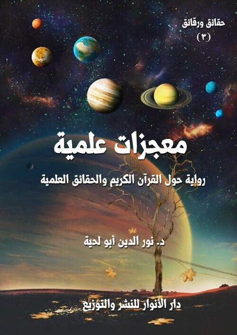

معجزات علمية (1)
الكتاب: معجزات علمية
الوصف: حوارات علمية عقلية حول القرآن والحقائق العلمية
السلسلة: حقائق ورقائق
المؤلف: د. نور الدين أبو لحية
الناشر: دار الأنوار للنشر والتوزيع
الطبعة: الثانية، 1437 هـ
عدد الصفحات: 567 <
ISBN: 978-3-330-97412-8
لمطالعة الكتاب من تطبيق مؤلفاتي المجاني وهو أحسن وأيسر: هنا

معجزات علمية (2)
تحاول هذه الرواية - من خلال الأدلة الكثيرة - أن تبين بتفصيل علمي دقيق البراهين التي ينطوي عليها القرآن الكريم، والتي تدل على أن مصدره هو الله خالق هذا الكون، وما فيه، ذلك أنه يستحيل - من الناحية العقلية - أن تتنزل أمثال تلك الحقائق العلمية الكثيرة - التي قضت البشرية كل عمرها في البحث عنها - في تلك البيئة البدوية البسيطة من ذلك الزمان الذي عم فيه الجهل والخرافة والأساطير.
وهي تتوجه كذلك لأولئك الحمقى والمغفلين من المسلمين الذين لم تهضم عقولهم المقيدة بداء الجهل والكبر المكتشفات العلمية، ولم تستسغ أن تخالف ما ورثوه عن سلفهم من فهوم حول الآيات المرتبطة بالحقائق العلمية، فلذلك راحوا يحاربون هذا النوع من تدبر القرآن وتفعليه في الحياة، والاستفادة منه في نشر الهداية.
معجزات علمية (12)
هذا الكتاب من الكتب التي حاولت فيها – من خلال الأدلة الكثيرة - أن أبين البراهين التي ينطوي عليها القرآن الكريم، والتي تبين أن مصدره هو الله خالق هذا الكون، وما فيه، ذلك أنه يستحيل – من الناحية العقلية - أن تتنزل أمثال تلك الحقائق العلمية الكثيرة - التي قضت البشرية كل عمرها في البحث عنها - في تلك البيئة البدوية البسيطة من ذلك الزمان الذي عم فيه الجهل والخرافة والأساطير.
وهي تتوجه كذلك لأولئك الحمقى والمغفلين من المسلمين الذين لم تهضم عقولهم المقيدة بداء الجهل والكبر المكتشفات العلمية، ولم تستسغ أن تخالف ما ورثوه عن سلفهم من فهوم حول الآيات المرتبطة بالحقائق العلمية، فلذلك راحوا يحاربون هذا النوع من تدبر القرآن الكريم وتفعليه في الحياة، والاستفادة منه في نشر الهداية.
ولذلك اعتمدت في قالبها الروائي على هذه العقدة، والتي مثلها أبطال الرواية جميعا:
الشيخ صاحب القصة: وهو شخصية مسيحية من رجال الدين، وقد كلف بمهمة متابعة مؤتمر علمي في بعض البلاد الإسلامية تبناه مشايخ تقليديون يريدون من ورائه الرد على دعاة الإعجاز العلمي في القرآن الكريم، لكنه بعد أن عرف الحقيقة آمن بها، واهتدى، وهو الذي حكى القصة بأكملها للمؤلف.
علي: وهو يمثل دور العالم الذي جمع بين فهم القرآن الكريم وتدبره، والمعارف العلمية المختلفة، وهو يمثل في هذه الرواية دور الداعية الذي استطاع أن يوظف الإعجاز العلمي للقرآن الكريم ليبث الهداية في نفوس العلماء الأجانب، وقد نجح في الأخير في تحقيق ذلك.
حذيفة: وهو يمثل في بدايته دور المنكر للإعجاز العلمي للقرآن الكريم، والمتخوف منه، لكنه بعد صحبته لعلي في الأيام العشرة التي التقى بها العلماء من جميع التخصصات، اقتنع
معجزات علمية (13)
بمنهج علي واتبعه.
العلماء العشرة: وهم علماء من مختلف التخصصات، نفروا من الدين بسبب ما رأوه في الكتاب المقدس من أخطاء علمية كبيرة، لكنهم بعد أن اكتشفوا الحقائق العلمية الواردة في القرآن الكريم لم يجدوا إلا أن يسلموا لها في الأخير.
هؤلاء هم أبطال الرواية، أما الحقائق التي اهتمت هذه الرواية بذكرها، فهي كثيرة جدا، وقد قسمتها كالكثير من أمثال هذا النوع من الروايات إلى عشرة أقسام ابتدأت بالإعجاز العلمي الوارد في خلق السماء والتفاصيل الكثيرة المرتبطة بها.. ثم في خلق الأرض.. ثم في الحياة.. ثم في الماء.. ثم في النبات.. ثم في الحيوان.. ثم في الإنسان.. ثم في الغذاء.. ثم في الدواء.. ثم في الآثار.
وهي بذلك تعتبر موسوعة علمية لأهم ما اكتشف من نواحي الإعجاز العلمي في القرآن الكريم إلى الوقت الذي كتبت فيه هذه الرواية، وتتميز بأنها حاولت أن تجعل منها منظومة متكاملة، لأن الإعجاز لا يتم بالشاهد والشاهدين.. بل يحتاج إلى الأدلة الكثيرة، والشواهد المتعددة.
وقد حاولت أن أركز قدر الإمكان على القضايا الكبرى القطعية، سواء من الناحية العلمية، أو مما ورد للدلالة عليه من القرآن الكريم.
وتتميز هذه الطبعة الجديدة باختصارها مقارنة بالطبعة السابقة، فقد حذفت الكثير من التفاصيل العلمية التي قد تجهد القارئ العادي في فهمها أو الاستفادة منها.
وفي الأخير.. أشكر كل الذين نوهوا بالطبعة السابقة، أو دعوا إلى دراستها، أو قرروها في المحال التي يدرسون فيها، وهي بفضل الله جديرة بذلك، فهي لا تكتفي بعرض الحقائق، بل تبين كيفية إقناع الآخرين بها، والآداب المرتبطة بكل ذلك.
معجزات علمية (14)
في ذلك الصباح الممتلئ بالبركات خرجت خارج القرية.. حيث الطبيعة الجميلة العذراء التي لم تمتد إليها بعد أيادي الإنسان لتخربها.
ما إن وصلت إلى المحل الذي تعودت أن أجلس فيه حتى رأيت شيخا ممتلئا وقارا وهيبة وسكينة.. فانشغلت بالنظر إليه عن النظر إلى الطبيعة الجميلة التي تحيط به..
كان ينظر إلى الماء، وهو ينساب بعذوبة في الجداول التي حفرها في بطون الصخور.. وينظر إلى الأشجار التي تميد أوراقها على نغمات العنادل التي تعتليها.. كان النسيم عليلا.. والروائح الطيبة التي تنبعث من دفء الربيع تغمر المكان.
ولم يكن ذلك كله ليؤثر في، فقد تعودت على هذه المناظر، ولم يعد لها تأثير كبير على نفسي.. ولكني رأيت الشيخ يكاد يحتضن كل ذلك، بل يكاد يتوحد معه.. فاقتربت منه، ورحت أقول: أرى أن مناظر الطبيعة تستهويك.
قال: وما لها لا تستهويني.. وقد أمرنا الله بأن نعبده من خلال النظر إليها، ألم تسمع قوله تعالى: {وَهُوَ الَّذِي أَنْزَلَ مِنَ السَّمَاءِ مَاءً فَأَخْرَجْنَا بِهِ نَبَاتَ كُلِّ شَيْءٍ فَأَخْرَجْنَا مِنْهُ خَضِراً نُخْرِجُ مِنْهُ حَبّاً مُتَرَاكِباً وَمِنَ النَّخْلِ مِنْ طَلْعِهَا قِنْوَانٌ دَانِيَةٌ وَجَنَّاتٍ مِنْ أَعْنَابٍ وَالزَّيْتُونَ وَالرُّمَّانَ مُشْتَبِهاً وَغَيْرَ مُتَشَابِهٍ انْظُرُوا إِلَى ثَمَرِهِ إِذَا أَثْمَرَ وَيَنْعِهِ إِنَّ فِي ذَلِكُمْ لَآياتٍ لِقَوْمٍ يُؤْمِنُونَ} (الأنعام:99)؟
أحسست براحة كبيرة أثناء تلاوته للقرآن الكريم، وأحسست معها أن للشيخ أحاديث وأخبارا لابد أن أستفزه ليحدثني عنها، فقلت: صدق الله العظيم.. ما رأيت شيئا أضر على الإنسان من الألفة!؟
قال: المؤمن ينظر إلى الكون من خلال أسماء الله وتدبيرات الله، فلذلك يتجدد كل حين في نظره..
معجزات علمية (15)
لا تحسب أن ما أراه الآن جديد علي.. هذه المناظر وغيرها تمتلئ بها الأرض.. بل يمتلئ بها الكون.. فالكون كله يصيح معرفا بربه، داعيا إلى التوجه إليه.
أترى ذلك الماء.. أو تلك الأوراق.. أو تلك العنادل المغردة.. كل واحد منها حرف من الحروف تتشكل منه معارف عميقة توصلنا إلى حقائق الأزل.
قلت: هنيئا لك سيدي هذا الإيمان العظيم.. فقلما نجد من يتحدث بمثل هذه الأحاديث في هذا الزمان.. من أي البلاد أنت؟.. وما اسمك؟
ابتسم، وقال: أما البلاد.. فقد كنت أسكن أصغر دولة في الدنيا.. ولكني رحلت عنها لأسكن الكون جميعا.
تعجبت من كلامه هذا، وقلت: الذي أعرفه أن أصغر دولة في الدنيا هي الفاتيكان.. ولا أحسبك منها.. فتلك دولة المسيحيين والكاثوليك خصوصا.. ولا يسكنها في العادة إلا رجال الدين المسيحي.. وشتان بينك وبينهم..
قال: ولم؟
قلت: أنت مسلم وهم مسيحيون.
قال: ألا يمكن أن يتحول المسيحي إلى مسلم.. أم أن من يسكن الفاتيكان يختم على قلبه.. فلا يرى شمس محمد صلى الله عليه وآله وسلم التي تشرفت بطلعتها كل الكائنات؟
قلت: الله تعالى هو الهادي.. وليس هناك مكان يطبع فيه على قلوب الناس.. بل القلوب التي تعرض عن الله هي التي تختار ذلك.. وقد كان من سكان مكة والمدينة من اختار أن يطبع على قلبه، ويحرم نفسه من الهداية الإلهية المبثوثة في كل الكون.
قال: صدقت.. وقد كان من سكان الفاتيكان ورجال دينهم الكبار من فتح الله عليه بنور الهداية، وأشرق عليه بشمسها.
قلت: فهل أنت أحدهم؟
معجزات علمية (16)
قال: أجل.. بفضل الله ورحمته وهدايته.
قلت: فمن أنت منهم؟
قال: دعك من اسمي.. فهو لا ينفعك.. وقد يضرني أن تعرفه.
قلت: لا بأس.. لك ذلك.
قال: لا تنزعج.. فسأحدثك عما هو أهم من اسمي.. سأحدثك عن قصتي.. وقد جئت هنا لأجل أن أحدثك عنها.. فأنا أعلم أن لك قلما واعيا.
قلت: من أين عرفت ذلك؟
قال: دعك من البحث عما لا تطيقه.. واسمع قصتي.. وبشر بها.. فلعل الله أن تصيخ لها أسماع، وتخضع لها قلوب.. فتعود إلى بارئها، وتنعم بالاتصال به.
أصخت بسمعي إلى الشيخ الذي راح يحكي لي قصته بتفاصيلها الدقيقة، قال: جاءتني في ذلك اليوم رسالة مستعجلة من الإدارة العليا في الفاتيكان.. فأسرعت إليهم.. وبعد أن استقبلوني خير استقبال، وأكرموني بما شاء لهم كرمهم أن يكرموني به، أخبروني أنه سيقام في بعض البلاد الإسلامية مؤتمر علمي هام ينبغي لي أن أحضره..
قلت لهم: وما علاقتي بالمؤتمرات العلمية؟.. أنا رجل دين.. نذرت نفسي للكنيسة.. ولا علم لي بالفيزياء، ولا بالكيمياء.. ولا بشيء من هذه العلوم.
قال لي المكلف بإقناعي: لقد اخترناك لسببين:
الأول: أنك هادئ، كثير الصمت، قليل الجدال، لا يستفزك أحد، وهذا سينفعنا كثيرا، لأنك لن تفصح عن مقاصدك من هذا الحضور.
وأما الثاني، فما نعلمه عنك من علمك العميق بالعربية، وبالإسلام، وبالقرآن.. وهذا يجعلك أوعى لما يقولون.
قلت: أتريد أن تجعل مني جاسوسا؟
معجزات علمية (17)
ابتسم، وقال: ولم تقول هذا؟.. إن هذا المؤتمر يخدمنا نحن، ويخدم أغراضنا.. ولو أنا بذلنا الأموال الكثيرة لنقيمه ما استطعنا إقامته.
قلت: فكيف أوحيتم لهؤلاء المسلمين إقامته بدلا عنكم؟
قال: نحن لم نوحي لهم بشيء.. هم الذي أوحوا لأنفسهم به.. وقد اتفقت مصالحنا معهم فيه فقط.
قلت: أنا إلى الآن لم أفهم موضوع المؤتمر.. ولا علاقته بالإسلام، ولا علاقته بالكنيسة.. ولم أعرف إلى الآن دوري في كل ذلك.
قال: أنت تعلم أن هناك في بلاد المسلمين، وفي بلادنا، من ينعق بأن في القرآن سبقا علميا في أمور كثيرة.
قلت: أجل.. أسمع بذلك.. ولكني أسمع في نفس الوقت أن من يتولى كبر هذه الدعوة العلماء والخبراء، لا الفقهاء أو المفسرون.
قال: وهذا مصدر خطر هذه الدعوة.. فكلام الخبراء في هذا المجال أكثر حرمة من كلام الفقهاء والمفسرين.
ثم ابتسم وقال: وهو في نفس الوقت مصدر راحة لنا ومتعة.
قلت: كيف ذلك؟
قال: هذا المؤتمر دليل على هذه المتعة والراحة.
قلت: لم أفهم قصدك.
قال: أنت تعلم أن كثيرا من الفقهاء والمفسرين لا يقبلون من أحد أن ينافسهم في التراث المقدس الذي اختصوا فيه.. إنهم يكادون يحتكرونه احتكارا.. فلذلك إذا رأوا من الخبراء أي بحث في هذا الباب قد يؤلبون عليهم الخصومة، والناس في هذا تبع للفقهاء، لا للخبراء.
قلت: فهذا المؤتمر يقيمه الفقهاء والمفسرون إذن ليشنوا حربهم على الخبراء والعلماء الباحثين
معجزات علمية (18)
عن أسرار الإعجاز العلمي في التراث المقدس للمسلمين.
قال: أجل.. ولكن الذي يقيمه ليس كل الفقهاء.. بل بعضهم.. وهو بعض مرض لنا من هذه الناحية.. إنهم يقدمون لنا من الخدمات ما لم يستطع أحد في العالم أن يقدمه.
قلت: وكيف أمنتم من انقلابهم علينا؟
قال: عقولهم.. وطريقة تفكيرهم جعلتنا في مأمن منهم.. ألم تسمع المثل الذي يقول: (يفعل الجاهل بنفسه ما لا يفعل العدو بعدوه)؟
قلت: أجل.. فهل هؤلاء جهلة؟
قال: لا.. هم علماء.. ولكنهم علماء لا يعلمون إلا ما في كتبهم العتيقة التي مرت عليها القرون الطوال.. وهم لذلك أعداء كل جديد.
وبما أن هذه العلوم والاكتشافات علوم جديدة، فهم أعداء لها.. بل إنهم في عداوتهم لها قد يستخدمون فهومهم للتراث المقدس لردها.
قلت: أوصل بهم الأمر إلى هذا الحد؟
قال: سأضرب لك مثالا عن بعض علمائهم ممن تبوؤوا المناصب الرفيعة.. فركنت لهم مهمة الفتوى ورئاسة العلماء والاهتمام بالدعوة.. ومناصب كثيرة تنقضي دون آحادها جهود الرجال الفحول.
قلت: ما به؟.. أكاد أعرف من تقصد؟
قال: لا يهم.. فهو فرد يمثل ثلة.. وهي تمثل نوعا من الفكر له تأثيره الواقعي الذي يمكن استثماره وخدمة التبشير به.
أنت تعلم أن أكبر منافس للمسيحية هو الإسلام.. وهؤلاء انتبدبتهم كنيسة بطرس من غير أن يشعروا ليخدموها، ويخدموا المسيح.
قلت: ما الذي فعله هذا الرجل ومن معه حتى يستحق كل هذا الثناء العطر؟
معجزات علمية (19)
قال: سأذكر لك فتوى من فتاواه، نحن ننشرها في كل مكان، ونبشر بها أكثر من تبشيرنا بالمسيح، ولو علمنا اليوم الذي خرج بها إلى الناس لاتخذناه عيدا.. ولولا أن في إظهار تكريمنا له ما يصرف الناس عنه لأعطيناه أسمى المراتب وأرفعها.
قلت: ما تلك الفتوى التي استحقت كل هذا التكريم؟
قال: لقد نشرت (....!؟} (1) في سنة (1402 هـ/1982 م) كتاباً من تأليف هذا العلامة الجليل يقول فيه: (أجمعت آراء السلف من أمثال شيخ الإسلام ابن تيمية وابن كثير وابن القيم على ثبوت الأرض)
قلت: أولئك قوم قد أكل الثرى أجسادهم، ولا حرج عليهم في أن يجمعوا، فقد كان قومنا يجمعون على ما أجمعوا عليه.
قال: ليس الخطر في ذلك.. ولكن الخطر الذي هو نعمة لنا هو اعتبار إجماعهم تراثا مقدسا لا يمس كما لا يمس القرآن.
لقد استنتج هذا المفتي بإخلاصه لمن ينقل عنهم بأن (القول بأن الشمس ثابتة، وأن الأرض دائرة قولٌ شنيعٌ ومنكر)، واستنتج ما هو أخطر من ذلك حين قال: (ومن قال بدوران الأرض وعدم جريان الشمس فقد كفر وضل، ويجب أن يستتاب، فإن تاب وإلا قتل كافراً مرتداً، ويكون ماله فيئاً لبيت مال المسلمين)
وقد أيد هذا العلامة الجليل فتواه بأنه كان من جملة الناس الذين شاهدوا بعيونهم وأبصارهم سير الشمس وجريانها في مطالعها ومغاربها قبل أن يذهب نور عينيه، وهو دون العشرين.
واستدل لها بأنه لو كانت الشمس ثابتة لما كان هناك فصول أربعة، ولكان الزمان في كل بلد
__________
(1) لقد ذكرنا في الأجزاء الماضية أنا نحاول جهدنا أن لا نجرح أحدا بذكر اسمه، مهما كان، سواء كان مسلما أو مسيحيا، إلا لضرورة شديدة تستدعي ذلك.. وهذا من هذا الباب.. وهذا الكلام مما تمتلئ به مواقع المبشرين الذين لا يفرحون بشيء كما يفرحون بمثل هذه الفتاوى.
معجزات علمية (20)
واحد لا يختلف.
وقد نصَّ في كتابه هذا على (أن كثيراً من مدرسي علوم الفلك ذهبوا إلى القول بثبوت الشمس ودوران الأرض، وهذا كفرٌ وضلال وتكذيبٌ للكتاب والسنة وأقوال السلف، وقد اجتمع في هذا الأمر العظيم النقل والفطرة وشاهد العيان فكيف لا يكون مثل هذا كافراً)
وقد حاجَّهم بقوله: (لو أن الأرض تتحرك لكان يجب أن يبقى الإنسان على مكانه لا يمكنه الوصول إلى حيث يريد، لذلك فالقول بهذه المعلومات الطبيعية وتدريسها للتلاميذ على أنها حقائق ثابتة يؤدي إلى أن يتذرع بها أولئك التلاميذ على الإلحاد حتى أصبح كثير من المسلمين يعتقدون أن مثل هذا الأمر من المسلمات العلمية)
واستدل لهذا بأنَّه (لو كانت الأرض تدور كما يزعمون لكانت البلدان والأشجار والأنهار لا قرار لها، ولشاهد الناس البلدان المغربية في المشرق والبلدان المشرقية في المغرب، ولتغيرت القبلة على الناس، لأن دوران الأرض يقتضي تغيير الجهات بالنسبة للبلدان والقارات هذا إلى أنه لو كانت الأرض تدور فعلاً لأحسَّ الناس بحركة كما يحسون بحركة الباخرة والطائرة وغيرها من المركوبات الضخمة)
وقد وصف المسلمين الذين يؤمنون بكروية الأرض (1) بأنهم يتبعون كلَّ ناعق يريد أن يفسد عقيدة المسلمين بأنهم بعيدون عن استعمال عقولهم وأنهم أعطوا قيادهم لغيرهم، فأصبحوا كبيهمة الأنعام العجماء بعد أن فقدوا ميزة العقل.
وقد خلص في الأخير إلى أن (القائل بدوران الأرض ضال قد كفر وأضل كذَّب القرآن والسنة، وأنه يستتاب فإن تاب وإلا قتل كافراً مرتداً، ويكون ماله فيئاً لبيت مال المسلمين).
أخرج كتابا من درج مكتبه، وقال: أنا لست أتجنى.. انظر الكتاب.. ها هو عنوانه الذي يدل
__________
(1) هذا ما هو موجود في المواقع التبشيرية، ولكن كل علماء المسلمين بما فيهم العلماء المعاصرين الذين يسمونهم يخالفون هذا، وينصون على كروية الأرض، وسنرى التفاصيل المرتبطة بذلك في الفصل الثاني من هذه الرواية.
معجزات علمية (21)
على محتواه.. (الأدلة النقلية والحسية على جريان الشمس وسكون الأرض وإمكان الصعود إلى الكواكب)
فتح الكتاب، وقال: اسمع ما يقول..
راح يقرأ: (وكما أن هذا القول الباطل - يقصد ثبوت الشمس ودوران الأرض- مخالف للنصوص فهو مخالف للمشاهد المحسوس ومكابرة للمعقول والواقع لم يزل الناس مسلمهم وكافرهم يشاهدون الشمس جارية طالعة وغاربة، ويشاهدون الأرض قارة ثابتة ويشاهدون كل بلد وكل جبل في جهته لم يتغير من ذلك شيء، ولو كانت الشمس تدور كما يزعمون لكانت البلدان والجبال والأشجار والأنهار والبحار لا قرار لها ولشاهد الناس البلدان المغربية في المشرق والمشرقية في المغرب ولتغيرت القبلة على الناس حتى لا يقرّ لها قرار، وبالجملة فهذا القول فاسد من وجوه كثيرة يطول تعدادها)
قلب صفحات من الكتاب، ثم قال: واسمع ما يقول هنا..
راح يقرأ: (ثم هذا القول مخالف للواقع المحسوس، فالناس يشاهدون الجبال في محلها لم تسيّر.. فهذا جبل النور في مكة في محله.. وهذا جبل أبي قبيس في محله.. وهذا أُحد في المدينة في محلّه.. وهكذا جبال الدنيا كلها لم تسيّر وكل من تصور هذا القول يعرف بطلانه وفساد قول صاحبه وأنه بعيد عن استعمال عقله وفكره قد أعطى القياد لغيره كبهيمة الأنعام فنعوذ بالله من القول عليه بغير علم ونعوذ بالله من التقليد الأعمى الذي يردي من اعتنقه وينقله من ميزة العقلاء إلى خلق البهيمة العجماء)
قلب صفحات أخرى، ثم قال: اسمع ما يقول هنا..
راح يقرأ: (ثم الناس كلهم يشاهدون الشمس كل يوم تأتي من المشرق، ثم لا تزال في سير وصعود حتى تتوسط السماء، ثم لا تزال في سير، وانخفاض حتى تغرب في مدارات مختلفة بحسب اختلاف المنازل ويعلمون ذلك علما قطعيا بناء على مشاهدتهم وذلك مطابق لما دل عليه
معجزات علمية (22)
هذا الحديث الصريح –حديث سجود الشمس- والآيات القرآنية ولا ينكر هذا إلا مكابر للمشاهد المحسوس ومخالف لصريح المنقول.. وأنا من جملة الناس الذين شاهدوا سير الشمس وجريانها في مطالعها ومغاربها قبل أن يذهب بصري، وكان سني حين ذهاب بصري تسعة عشر عاما، وإنما نبهت على هذا ليعلم القراء أني ممن شاهد آيات السماء والأرض بعيني رأسه دهرا طويلا، والله المستعان وبالجملة، فالأدلة النقلية والحسية على بطلان قول من قال إن الشمس ثابتة أو قال إنها جارية حول نفسها كثيرة متوافرة، وقد سبق الكثير منها فراجعه ان شئت)
وقد خلص في الأخير إلى نتيجة.. اسمعها من فمه..
راح يقرأ: (فمن زعم خلاف ذلك، وقال إن الشمس ثابتة لا جارية، فقد كذّب الله وكذّب كتابه الكريم الذي لا يأتيه الباطل من بين يديه ولا من خلفه تنزيل من حكيم حميد)
ثم يقول: (ومن قال هذا القول فقد قال كفرا وضلالا لأنه تكذيب لله، وتكذيب للقرآن وتكذيب للرسول صلى الله عليه وآله وسلم لأنه صلى الله عليه وآله وسلم قد صرح في الأحاديث الصحيحة أن الشمس جارية، وأنها إذا غربت تذهب وتسجد بين يدي ربها تحت العرش كما ثبت ذلك في الصحيحين من حديث أبي ذر - رضي الله عنه - وكل من كذب الله سبحانه أو كذب كتابه الكريم أو كذب رسوله الأمين عليه الصلاة والسلام فهو كافر ضال مضل يستتاب فإن تاب وإلا قتل كافرا مرتدا، ويكون ماله فيئا لبيت مال المسلمين، كما نص على مثل هذا أهل العلم)
التفت إلي، وقال: وهكذا تم تكفير كل ما قال بدوران الأرض..
نظر إلي، فرآني متعجبا مما أسمع، فقال: لا تتعجب.. هذا واحد منهم.. وقد تبوأ المناصب الرفيعة.. وهناك غيره ممن يقولون بقوله.. هذا أحدهم كتب كتابا في ذلك سماه (هداية الحيران في مسألة الدوران)
أخرج الكتاب من الدرج، وقال: اسمع ما يقول سماحة المبشر (....!؟)
راح يقرأ: (العلوم العصرية عامة علومٌ عمَّت بها البلوى.. منها علوم مفسدة للإعتقاد
معجزات علمية (23)
كالقول بدوران الأرض، وغيره من علوم الملاحدة)
واسمع ما يقول هنا..
راح يقرأ: (القول بدوران الأرض أعظم من اعتقاد تسلسل الإنسان من القرود بكثير)
أغلق الكتاب، وقال: إن هذا الكتاب أعظم من أن يساوي وزنه ذهبا.. إن قيمة هذا الكتاب لا تقدر بثمن..
تصور لو أنا نشرنا هذا الكتاب.. أو لو أن واحدا من أولئك المحسنين، أصحاب البطون الكبيرة، والعقول الفارغة، تطوع فنشر مثل هذا الكتب مجانا على المدارس والجامعات..
إنها أخطر من القنبلة النووية..
إن الطالب الذي يقرأ في مدرسته أو جامعته أن الأرض تتحرك في الفضاء، ومعها تابعها القمر في دورة بيضاوية حول الشمس.. وأنها تسبح خلال هذا الفلك بسرعة 106.000 كلم بالساعة.. وأنها بالإضافة إلى ذلك تدور مرة واحدة حول محورها كل 23.56 ساعة و4.1 ثانية طبقا للسنة الشمسية.. وأنها بالإضافة إلى ذلك لها ثلاث حركات إضافية دورية تحدث مرتين في العام.. وأنها بالإضافة إلى ذلك كله تتحرك بسرعة 20.1 كلم بالثانية، باتجاه مجموعة هرقل النجمية..
تصور طالبا يقرأ عن هذه الحركات النشيطة التي تقوم بها الأرض في المحاور المختلفة، ويبرهن له على ذلك بكل البراهين، ثم يأتي للمسجد ليسمع الإمام يحمل هذه الكتب، ويرددها على مسامعه.
إنه في ذلك الحين يتحول إلى أحد شخصين كلاهما حبيب لنا:
أما الأول.. فهو أن يخرج من المساجد كافرا بالإمام، وبما يقول الإمام، بل كافرا بالقرآن نفسه، وبكل تراث المسلمين المقدس.. وحينذاك نستقبله نحن، أو يستقبله غيرنا.. ولا يهمنا من يستقبله.
معجزات علمية (24)
وأما الثاني.. فأن يقبل ما يقوله الإمام، ويكفر بما يقوله الأستاذ والخبير.. وهو في هذه الحالة لا يقل عن حال الأول.. إنه يصير متطرفا يصدر لنا من المواقف ما تقر به أعيننا.. إن هذا النوع سيملأ هذه الرفوف التي تراها كتبا تقدم لنا أعظم الخدمات.. أنت تعلم بأن الصديق الجاهل أخطر من العدو العاقل..
قلت: وعيت ما ذكرت.. ولكن أجبني: هل ما يقوله هؤلاء هو الحقيقة التي جاء القرآن لتقريرها؟
قال: نحن لا يهمنا ذلك.. هذه فتوح فتح بها علينا.. ولا ينبغي للعاقل أن يفرط في استثمار غباء خصومه.
قلت: فلنعد إلى هذا المؤتمر المزمع انعقاده.. ما دوري أنا فيه؟
قال: أما المؤتمر، فيحمل عنوان (آيات الله في الآفاق والأنفس من خلال القرآن والعلم)، وهو يدوم عشرة أيام كاملة تعرض فيها المحاضرات المرتبطة بهذا الجانب، وكل من يلقي تلك المحاضرات من الصنف الذي حدثتك عنه.
قلت: ولكن.. كيف بدا لهم أن يدخلوا العلم في المسألة؟
قال: لقد رأوا اتهام الناس لهم بالتزمت والتطرف، فراحوا يتجملون بالعلم ليرضوهم.. ولكنهم مع ذلك حددوا مجالات معينة لهؤلاء العلماء حجروا عليهم أن يتجاوزوها.
وإن أردت الصراحة، فهم لم يريدوا منهم إلا كلمة واحدة يصفعون بها خصومهم.
قلت: وما تلك الكلمة؟
قال: أن يذكر هؤلاء الخبراء أنه لا صحة لما يزعمه من يرى أن في القرآن إعجازا علميا.
قلت: فهو خلاف داخلي إذن بينهم؟
قال: أجل.. ما أجمل هذا النوع من الخلاف.. إنه السبيل الوحيد لنصرة الحقيقة التي نؤمن بها.
معجزات علمية (25)
قلت: وما دوري أنا بالضبط في ذلك المؤتمر.. هل كلفتموني بإلقاء محاضرة فيه؟
قال: لا.. لم نكلفك إلا بدورين بسيطين، ولكنهما عميقين:
أما أحدهما.. فبسيط جدا لا يعدو استعمال أذنيك لتسمع كل ما يقال.. ثم تعود لنا بتقارير عما سمعت.. وإن رأيت أي بحث له قيمة علمية أو عملية، مثل البحوث التي أسمعتك إياها، فتقرب من صاحبه.. وأعطه ما شاء من الأموال لينشر بحثه، وليستمر في بحثه.
نحن نثق فيك.. ولذلك سنضع لك ميزانية خاصة.. اصرف منها ما تشاء.. فما تفعله لا يقل عما يفعله أي مبشر في الأدغال، أو على رؤوس الجبال.
قلت: والثاني؟
قال: هو دور مهم، ولعله أهم من الأول.. وهو يحتاج إلى يقظة عظيمة، فالخبراء الذين سيذهبون إلى المؤتمر من بلادنا، وهم من خيرة علماء بلادنا، ونحن نخشى أن يندس إليهم بعض أولئك الذين ينعقون بإعجاز القرآن.. فينحرفون بهم.. ويؤلبوهم علينا، كما حصل للكثيرين قبلهم.
قلت: فما دوري أنا معهم.. هل سأكون حارسهم الشخصي؟
قال: أمر حراستهم موكول للبلاد التي سيزورونها.. أما دورك أنت فلا يعدو أن تظل معهم، وبصحبتهم.. بعد انتهاء المحاضرات سر بهم حيث شئت، وأنفق عليهم من الأموال ما شئت.. المهم أن يظلوا في صحبتك حتى لا يتعرضوا لأي أشعة قد تحرقهم.. فشمس تلك البلاد تحرق كل من يدخل إليها.
قلت: متى سيبدأ هذا المؤتمر؟
قال: سيبدأ بعد شهر من اليوم، وقد استدعيناك، واستدعينا الأساتذة المختصين الذين سيذهبون بصحبتك لتقيم علاقتك بهم قبل الذهاب لتلك البلاد.
قال ذلك.. ثم أذن لي في الانصراف.
معجزات علمية (26)
بقيت بعدها شهرا كاملا ألتقي بهؤلاء المختصين، وقد استفدت منهم كثيرا، فقد كان أسلوبهم يناسب طريقة تفكيري.. بل قد نسخ كلامهم كثيرا من الاهتمام الذي كنت أبديه للإسلام وللقرآن.
لست أدري لم.. ولكن السبب ربما يكمن فيما ذكر لي من تلك الفتاوى التي تزعم اصطدام النصوص المقدسة مع العلم.
-\--\-
في مساء اليوم الذي سبق رحلتي إلى تلك البلاد التي أقيم فيها ذلك المؤتمر سرت خارج المدينة إلى حديقة تمتلئ بالجمال.. هي لا تقل عن الجمال الذي يمتلئ به هذا المكان.
لقد جلست أنظر في الإبداع العظيم الذي صمم به الكون.. كل شيء في منتهى الدقة والجمال والكمال.
وكل ذلك يستدعي أن يكون الخالق مبدعا عالما، بل عليما خبيرا لطيفا، بل لا يمكن للسان أن يعبر عن علم هذا الخالق ولا لطفه ولا خبرته.
بينما أنا غارق في تلك التأملات إذا برجل – لست أدري من أين جاء، ولا كيف جاء -يجلس بين يدي دون أن أشعر بجلوسه، ويدور بيننا هذا الحوار القصير الذي غير مسيرة رحلتي وأهدافها.
لا أكتمك بأني كنت متألما للدور الذي كلفت بالقيام به، ولكني بعد أن التقيت بذلك الرجل ارتحت كثيرا.. بل اعتبرت هذه الرحلة فتحا عظيما فتح به علي لأدرك به الحقيقة..
وقد كانت بالفعل ـ على عكس ما أريد منها ـ رحلة للتعرض لأشعة جديدة من شمس محمد صلى الله عليه وآله وسلم.
سأذكر لك الحوار القصير الذي دار بيننا، والذي أسس لهدف نبيل لهذه الرحلة، حل بدل الهدف الدنيء الذي حاول صاحبي أن يقنعني به:
معجزات علمية (27)
قال الرجل: هل أعجبتك الشمس، وهي تنحني مودعة ابنتها الأرض؟
قلت: أجل.. هو منظر يوحي إلي بالكثير.. كل مرة أرى أشياء جديدة.. وأسمع أشياء جديد من همساتها لي، وهمسات ما تراه من جمال.
قال: ألم تهمس إليك هذه المناظر الجميلة الدقيقة المتقنة شيئا عن مبدعها؟
قلت: بلى.. لقد همست لي.. بل جهرت..
قال: ألم تذكر لك عن علم مبدعها ولطفه وخبرته؟
قلت: بلى.. وقد كانت الساعة تحدثني عن هذه المعاني.
قال: لقد سمعتها بحسك الشفاف تنطق بهذا.. ولكن هل غيرك يسمعها، وهي تتحدث؟
قلت: بعضهم يسمع.. والكثير ربما لا يسمع.
قال: ألا يحتاجون تنبيها ينبه أسماعهم إلى سماعها؟
قلت: من أي نوع هذا التنبيه؟
قال: ألا ترى الرسام المبدع الذي ظل الليالي الطوال مع ريشته ولوحاته، كيف يتعامل مع المتفرجين في معرض لوحاته؟
قلت: أجل.. إني أراهم يطوفون عليهم ليروهم ما في لوحاتهم من نواحي الجمال والرمزية التي قد لا ينتبهون لها.
قال: تلك لوحات بسيطة لم تستغرق منهم إلا تحريك فرشاتهم ليرسموا بعض ما حبى الله الطبيعة من جمال، فكيف لا ينبه مبدع الطبيعة المتفرجين على ما فيها من جمال؟
قلت: هو نبههم بما وضع في عقولهم وأذواقهم من حب للجمال.. وما وضع في مداركهم من وسائل للإحساس به.
قال: ولكن الغفلة قد تعتريهم.. أو أن مداركهم قد لا تمتد لبعض ما في الطبيعة من جمال.. فهم يحتاجون لتنيه خاص، كما يحتاج متفرجو اللوحات إلى الرسام المبدع ليوضح لهم أغراضه
معجزات علمية (28)
منها.
قلت: ذلك صحيح.. ولكني لا أرى هذا في الواقع.
قال: يستحيل أن لا يكون ذلك في الواقع.. إن الرب الذي أبدع كل هذا يستحيل أن لا يدل عليه.
قلت: الكتب المقدسة هي كلمات الله إلى عباده.. ولم أر من خلال مطالعتي لها أنها تحتوي على ما قصدت..
نعم.. فيها الذكر العام لخلق الأشياء، ولكن ليس فيها من التفاصيل ما يدل على العليم الخبير الذي تكلم بها.
بل إنا نرى ما في الكتب المقدسة ما قد يتنافى مع الحقائق العلمية التي يعلمها الصبيان، وذلك مما يجعلنا في تشتت بين ما يقتضيه الإيمان من تسليم، وما يقتضيه العقل من احترام.
قال: فما ذكرته ليس كلمات مقدسة إذن.
قلت: فلا توجد كلمات مقدسة في الدنيا إذن.
قال: هل اطلعت على جميع كتب الدنيا لتقول هذا؟.
قلت: في بعض رحلاتي لبلاد المسلمين دب لنفسي شعور خطير بأن كتاب المسلمين المقدس.. القرآن.. هو الكتاب المقدس، وأنه كلام الله الذي تكلم به إلى عباده.. ولكني، وقبل أسبوعين فقط، بدأ هذا الاعتقاد يتلاشى.
قال: وما الذي جعله يتلاشى؟
قلت: لقد سمعت أن في هذا الكتاب ما يدل على ثبات الأرض، وأنها لا تتحرك خلافا لما يقوله العلم.. بل فوق ذلك أخبرت بأن في القرآن الدلالة على أن الشمس تطوف بالأرض كل يوم.. وهذا ما يضحك عليه الصبيان عندنا.
قال: هل قرأت في القرآن كل هذا؟
معجزات علمية (29)
قلت: لم أقرأه بهذه التعابير.. ولكن مفسري المسلمين وعلمائهم ـ وهم أدرى مني بلغة كتابهم ـ ذكروا هذا.
قال: ألا يمكن أن يكون المفسر قد أقحم جهله في كتابه المقدس ليدنسه به؟
قلت: ما تقصد؟
قال: الفهوم السيئة ـ أحيانا كثيرة ـ تحرف مقاصد قائليها.
قلت: ذلك صحيح.
قال: فهل يلام المتكلم، أم يلام الفاهم؟
قلت: في هذه الحالة يلام الفاهم.
قال: لا تتسرع في لوم الفاهم، فربما وجد في نص المتكلم ما يدل على قصده.
قلت: ذلك صحيح أيضا.. وفي هذه الحالة ينبغي أن نلوم المتكلم.. لأنه حمل كلامه من الألفاظ ما يسيء إلى الحقيقة التي يريد التعبير عنها.
قال: أنت الآن في حيرة.. هل تلوم المتكلم، أم تلوم الفاهم؟
قلت: أجل.. فهل اللوم على القرآن.. أم اللوم على مفسريه؟
قال: أنت تحتاج إذن إلى بحث عميق عن الحقيقة التي تخلصك من هذا الإشكال الذي وقع فيه عقلك.
قلت: وعند من أجد الحقيقة؟
قال: عند المخالفين، وعند الموافقين.. عند الأعداء، وعند الأصدقاء.. الحقيقة لا تخفى سواء نطق بها المحبون، أو نطق بها المبغضون.
قلت: أنا الآن سائر إلى مؤتمر إسلامي ربما يسيء إلى الحقيقة القرآنية.
قال: وربما يريك وجهها الحقيقي.
قلت: فهل ترى أن أذهب لأمتلئ بالقناعة التي تبعدني عن القرآن.. كما امتلأت بالقناعات
معجزات علمية (30)
التي أبعدتني عن الكتاب المقدس؟
قال: نعم.. إن وجدت مثل هذه القناعة، واقتنعت بها فعلا، فخذ بها.. اذهب، واعلم بأن البرنامج الذي وضعه الله في عقلك لا يتنافى مع كلام الله الذي توجه به إلى وجدانك، فكلام الله لا يتناقض مع برنامج الله.
قلت ـ وقد هزني السرور ـ: أتعلم.. لقد كنت منذ طلب مني حضور هذا المؤتمر متألما كثيرا، لأني أحسست أي سأقوم بدور يتنافى مع دور رجل الدين.. ولكني الآن شعرت بجمال الدور الذي سأقوم به.. إنه محاولة للتعرف على الحقيقة من مصادرها.
قال: من كل مصادرها.. من كل مصادرها..
قلت: ما تقصد؟
قال: أنت الآن سائر لمصدر من المصادر.. فلذلك لا تغفل عن سائر المصادر.. فقد يفهم الفاهم من الكلام غير ما يقصد المتكلم.
قلت: صدقت.. ولكن المؤتمر من تنظيم جهة واحدة.. فكيف أصل إلى سائر الجهات؟
قال: اذهب.. وسترى الله الذي أبدع تقدير كل شيء.. سيبدع من المقادير ما يريك سائر المصادر.
قال ذلك، ثم انصرف.. ولست أدري أين انصرف.
-\--\-
في اليوم التالي.. وصلت المدينة التي سيقام فيها المؤتمر بصحبة أولئك العلماء الخبراء.. كانت مدينة جميلة مزهوة بكل التقنيات الحديثة..
عندما تسير فيها تشعر بأنك في مدينة غربية متطورة.. لا علاقة لها بمدن الشرق.
تعجبت أن تزهو هذه المدينة بكل هذه التقنيات، ومع ذلك يرضى أصحابها بذلك الجهل الذي يتصورون به الأشياء على غير حقائقها.
معجزات علمية (31)
وتعجبت أكثر من كون هؤلاء يقبلون تقنيات الغرب، ثم لا يقبلون علومه التي أسس عليها تقنياته.
لكني صرفت كل هذا التعجب، وعدت إلى طبيعتي الباحثة.. وقلت لنفسي: لا ينبغي أن يؤثر في طرف من الناس.. ذلك كلام صاحبي الذي دفعه إليه حرصه على دينه.. والواقع قد يكون خلاف ما قال.
سرنا إلى فندق ضخم أعد خصيصا لنا في ضاحية من ضواحي المدينة.. وما وضعت متاعي في غرفتي حتى ضاقت بي نفسي من كل تلك الخرسانات المسلحة التي تحيط بي، فاستأذنت رفاقي، وخرجت إلى منتزه لا يبعد كثيرا عن الفندق.. وعلى عشبه الحنون ارتميت أنظر إلى السماء المزهوة بأحلى ألوان الربيع.. ارتخيت لأسمع من همس جمال الطبيعة ما كنت أسمع قبل مجيئي.
لكن تلك الهمسات قطعت بجهر اثنين كانا يجلسان بجانبي، سمعتهمها يتحدثان عن المؤتمر المزمع انعقاده، كانا يتحدثان بانفعال شديد، فشدني كلامهما.. وهذا هو الحوار الذي تمكنت من سماعه:
قال الأول: لست أدري ما الذي يخطط له هؤلاء الأغبياء.
قال الثاني: لم تنعتهم بالأغبياء.. هم لا يقولون إلا ما أداه إليه اجتهادهم، والمجتهد له أجر، وإن أخطأ..
قال الأول: ولكن خطأهم عميق ومؤثر.. إنهم كمتهم أعطيت له أدلة براءته، فراح يقطعها، ويتهم من أعطاه تلك الأدلة.
قال الثاني: ولكنهم يستدلون لذلك بأدلة غاية في القوة:
إنهم ينقلون عن أبي اسحق الشاطبي (ت 790 هـ) قوله في كتابه الخطير (الموافقات): (إن كثيراً من الناس تجاوزوا في الدعوى على القرآن الحدَّ؛ فأضافوا إليه كل علم يذكر للمتقدمين، أو المتأخرين، من علوم الطبيعيات والتعاليم، والمنطق، وعلم الحروف، وجميع ما نظر فيه الناظرون،
معجزات علمية (32)
من أهل الفنون، وأشباهها، وهذا إذا عرضناه على ما تقدم لم يصح.. } (1)
ثم يذكر أخطر دليل، فيقول: (وإضافة إلى هذا فإن السلف الصالح، من الصحابة، والتابعين ومن يليهم كانوا أعرف بالقرآن، وبعلومه، وما أودع فيه، ولم يبلغنا أنه تكلم أحد منهم في شئ من هذا المدعى، سوى ما تقدم، وما ثبت فيه من أحكام التكاليف، وأحكام الآخرة، وما يلي ذلك، ولو كان لهم في ذلك خوض، ونظر، لبلغنا منه ما يدلنا على أصل المسألة، إلا أن ذلك لم يكن، فدل على أنه غير موجود عندهم، وذلك دليل على أن القرآن لم يقصد فيه تقرير لشئ، مما زعموا)
بل إن الشاطبي يرى فوق ذلك كله أن المعاني، التي لا عهد للعرب بها، غير معتبرة فيقول: (وربما استدلوا على دعواهم بقوله تعالى: {وَنَزَّلْنَا عَلَيْكَ الْكِتَابَ تِبْيَانًا لِكُلِّ شَيْءٍ وَهُدًى وَرَحْمَةً وَبُشْرَى لِلْمُسْلِمِينَ} (النحل:8)، وقوله تعالى: {مَا فَرَّطْنَا فِي الْكِتَابِ مِنْ شَيْءٍ ثُمَّ إِلَى رَبِّهِمْ يُحْشَرُونَ} (الأنعام:38)، ونحو ذلك.. فأما الآيات فالمراد بها عند المفسرين: ما يتعلق بحال التكليف والتعبد، أو المراد بالكتاب في قوله تعالى: {مَا فَرَّطْنَا فِي الْكِتَابِ مِنْ شَيْءٍ ثُمَّ إِلَى رَبِّهِمْ يُحْشَرُونَ} (الأنعام:38) اللوح المحفوظ، ولم يذكروا فيها ما يقتضي تضمنه لجميع تلك العلوم، النقلية، والعقلية.. فليس بجائز أن يضاف إلى القرآن ما لا يقتضيه، كما أنه لا يصلح أن ينكر منه ما يقتضيه، ويجب الاقتصار في الاستعانة على فهمه، على كل ما يضاف علمه، إلى العرب خاصة، فبه يوصل إلى علم ما أودع من الأحكام الشرعية، فمن طلبه بغير ما هو أداة له، ضل عن فهمه، وتقول على الله ورسوله فيه} (2)
قال الأول: ربما يكون الشاطبي قد قصد من كلامه غير ما فهموه.. ربما يكون قد رأى ثلة من الناس تؤول القرآن ليتوافق مع الخرافات التي نشرها العقل اليوناني أو الهندي.. فراح يحذر من ذلك.. ويأمرهم بالعودة إلى ظواهر اللغة كما فهمها العرب.. هو لا يقصد ما يفعله هؤلاء
__________
(1) الموافقات: 2/ 55 - 56.
(2) الموافقات: 2/ 55 - 56.
معجزات علمية (33)
الذين يجردون القرآن من أهم مزاياه.
قال الثاني: إن كلام الشاطبي واضح.. وهو لا يتعلق بعصر دون عصر.. إنه يضع القواعد التي تحمي القرآن من كل تحرف.
قال الأول: وهو سيبقى كلاما للشاطبي.. والشاطبي بشر.. وهو فوق ذلك يتحدث بناء عن ثقافة عصره.. والتي تبعد عنا القرون الطوال.
قال الثاني: هم ينقلون عن المعاصرين الذين رأوا العلوم في قمة عنفوانها.. فهذا محمد حسين الذهبي، وهو من المعاصرين يبرهن على إنكاره للتفسير العلمي للقرآن من جهات متعددة: من الناحية اللغوية.. ومن الناحية البلاغية.. ومن الناحية الاعتقادية:
أما الناحية اللغوية، فهي: أن كثيرا من الألفاظ القرآنية تغيرت وتوسعت دلالاتها بمرور الزمان.. وهذه المعاني كلها تقوم بلفظ واحد، بعضها عرفته العرب وقت نزول القرآن، وبعضها لا علم للعرب به، وقت نزول القرآن، نظراً لحدوثه، وطروئه، على اللفظ، فهل يعقل أن نتوسع هذا التوسع العجيب، في فهم ألفاظ القرآن، وجعلها تدل على معان، وجدت باصطلاح حادث؟
وأما الناحية البلاغية.. والبلاغة هي المطابقة لمقتضى الحال.. فإن التفسير العلمي للقرآن يضر ببلاغة القرآن، لأن من خوطبوا بالقرآن في وقت نزوله: إن كانوا يجهلون هذه المعاني، وكان الله يريدها من خطابه إياهم لزم على ذلك أن يكون القرآن غير بليغ، لأنه لم يراع حال المخاطب؟ وإن كانوا يعرفون هذه المعاني، فلم لم تظهر نهضة العرب العلمية، من لدن نزول القرآن، الذي حوى علوم الأولين والآخرين؟
وأما الناحية الاعتقادية.. فقد أنزل الله القرآن إلى الناس كافة حتى قيام الساعة، ولو ذهبنا مذهب من يحمل القرآن كل شئ، وجعلناه مصدراً للعلوم، لكنا بذلك قد أوقعنا الشك في عقائد المسلمين نحو القرآن الكريم، وذلك لأن قواعد العلوم، وما تقوم عليه من نظريات لا قرار لها ولا بقاء. ولو ذهبنا إلى تقصيد القرآن، ما لم يقصد، من نظريات، ثم ظهر بطلان هذه النظريات
معجزات علمية (34)
فسوف يتزلزل اعتقاد المسلمين في القرآن الكريم. لأنه لا يجوز للقرآن أن يكذب اليوم، ما صححه بالأمس (1).
ولكنه مع هذا يرى أن في القرآن إعجازا علميا هو في عدم مخالفته ما يذكره المعاصرون من علوم.. لقد قال في هذا: (وحسبهم أن لا يكون في القرآن نص صريح يصادم حقيقة علمية ثابتة) أليس كون القرآن لا يصادم حقائق علمية ثابتة معجزة علمية؟)
قال الأول: كل ما ذكرته أقوال اجتهادية، وفهوم بشرية، قد تحترم، وقد لا تحترم، وأنا شخصيا لا أحترمها، ولا أظن أن عاقلا يرى احترامها.
قال الثاني: كف عن غلوك وتطرفك.. كيف تقول هذا عن كلام علماء أعلام لهم جاههم وخدماتهم الكبيرة للدين!؟
قال الأول: أنا لا أنكر خدماتهم، ولكني أنكر سوء فهمهم.. وأنكر احتكارهم للقرآن.. هم يريدون منا أن نتعامل مع القرآن الكريم كما نتعامل مع المعلقات السبع..
هم ـ من حيث لا يشعرون ـ يجعلون الله كأولئك الشعراء الذين ضاقت بهم أجواء البيئة العربية، فراحوا ينفسون عن أنفسهم بالأشعار.. فلم تخرج أشعارهم عن بيئتهم.
البيئة العربية ـ يا صاحبي ـ أضيق من أن تحتوي الحقائق التي نطق بها كتاب الله الذي جاء رسالة للبشرية جميعا، وفي بيئاتها جميعا، وفي أزمنتها جميعا.
وقد كان من إعجاز القرآن أنه حوى الحقائق من غير أن يصادم القدرات العقلية للبيئة التي نزل فيها، وللعصور التي سبقت عصرنا.
إن هذا من دلائل الإعجاز.. لا من دلائل صرف الإعجاز، كما يدعي المقيدون بالقيود التي وضعتها عقول أسلافهم.
قال الثاني: ولكن الخوض في مثل هذا سيصرف الناس عن هداية القرآن ليحوله إلى كتاب
__________
(1) التفسير والمفسرون للذهبي.
معجزات علمية (35)
علوم، لا كتاب هداية.
قال الأول: هو لن يكون كتاب هداية حتى يكون كتاب علوم.. الهداية ـ يا صاحبي ـ فرع عن العلم.. والجاهل لن يهديك إلا إلى جهله.
قال الثاني: العلوم مختلفة.. والعلوم التي جاء القرآن لتقريرها هي علوم الحقائق الأزلية، والوظائف التي كلف الله بها الإنسان.
قال الأول: أليس الله هو مبدع كل شيء؟
قال الثاني: أجل.. وهل في ذلك شك؟
قال الأول: فهل ترى أن الله الذي أبرز دلائل علمه في مكوناته لا يبرزها في كلامه؟
قال الثاني: هو يبرزها بما لا يصطدم مع البيئات المختلفة.. والعصور المتناقضة.
قال الأول: ذلك عندما يكون المتكلم هو نحن، أو شعراؤنا وبلغاؤنا.. أما عندما يكون المتكلم هو الله، فإن اللغة التي سيكتسي بها كلامه ستحمل من المعاني ما لا تختفي معه الحقائق، وما لا تتناقض معه العصور.
سكت قليلا، ثم قال: أليس القرآن الكريم معجزة ممتدة لكل العصور؟
قال الثاني: بلى..
قال الأول: وهي شاملة لكل أصناف الناس؟
قال الثاني: نعم.. وقد قال رسول الله صلى الله عليه وآله وسلم في ذلك: (ما من الأنبياء نبي إلا أعطى من الآيات ما مثله آمن عليه البشر، وإنما كان الذي أوتيته وحياً، أو حاه الله إلى، فأرجو أن أكون أكثرهم تابعاً يوم القيامة) (1)
وقد قال ابن حجر عند شرحه لهذا الحديث: (ومعجزة القرآن مستمرة إلى يوم القيامة، وخرقه للعادة في أسلوبه، وفي بلاغته، وإخباره بالمغيبات، فلا يمر عصر من الأعصار، إلا ويظهر
__________
(1) رواه البخاري ومسلم.
معجزات علمية (36)
فيه شئ مما أخبر به أنه سيكون؛ يدل على صحة دعواه... فعم نفعه من حضر، ومن غاب، ومن وجد، ومن سيوجد) (1)
قال الأول: صدق ابن حجر.. ولكن هل ترى النصوص التي تخبر عن إعجاز القرآن تخص ذلك بالبلاغة أو النظم أو التنبؤ بالأمور الغيبية.. أم أنها تطلق التحدي إطلاقا؟
قال الثاني: بل تطلقه إطلاقا.. فالله تعالى يقول: {وَإِنْ كُنْتُمْ فِي رَيْبٍ مِمَّا نَزَّلْنَا عَلَى عَبْدِنَا فَأْتُوا بِسُورَةٍ مِّنْ مِثْلِهِ وَادْعُوا شُهَدَاءَكُمْ مِنْ دُونِ اللَّهِ إِنْ كُنْتُمْ صَادِقِينَ} (البقرة:23)
قال الأول: فهو يتحداهم بسورة من مثله من غير أن يبين لهم أسرار الإعجاز التي تحتويها تلك السورة.
قال الثاني: ولكن هذا قد يفهم من سياق الكلام.. فالقرآن يتحدى البلغاء الفصحاء.. وهذا يعني أنه يتحداهم في ميدانهم.
قال الأول: فأنت ترى أن هذه الآية كانت خاصة بعصر النبوة، أو أنها كانت خاصة ببلاد العرب، ولا علاقة لها بسائر الأقطار، وسائر الأزمنة؟
قال الثاني: بل لها علاقة بكل ذلك.. فالقرآن الكريم كتاب كل العصور.
قال الأول: فكيف نثبت لهم أنه من عند الله؟
قال الثاني: بإخبارهم عن عجز الذين تحداهم من جهة، أو أن نعرض عليهم نفس التحدي من جهة أخرى.
قال الأول: نحن إلى الآن لم نتفق في محل الإعجاز.. فأنت تراه محدودا غير مطاق، وأنا أراه مطلقا غير مطاق.. ولكن رؤيتي أعمق من رؤيتك، ورؤية من يرى رؤيتك.
قال الثاني: كيف ذلك؟
قال الأول: أرأيت لو أن دولة كان لها أسلحة متطورة كثيرة لم تكشف عنها لأعدائها، فلم
__________
(1) فتح الباري لابن حجر: 9/ 7.
معجزات علمية (37)
يعرفوا أسرارها، ولا أنواعها، ولا أنواع القوة التي تحملها، فلذا كلما قدم أعداؤها سلاحا، كلما وجدوا عندها من الأسلحة ما يفوق ذلك السلاح.
أذلك خير أم دولة ليس لها من السلاح إلا ما تسلح به سلفها، وليس لها من القوة إلا ما ورثته، فأيهما أقوى قوة؟
قال الثاني: لا شك أنها الدولة الأولى.
قال الأول: فهكذا الأمر في القرآن الكريم بين من يقول بإطلاق الإعجاز فيه، وبين من يقول بتحديده.
من يقول بإطلاقه يجعل القرآن الكريم كلام الله كنزا من كنوز العجائب والمعجزات، ومن يقول بمحدوديته لا يراه إلا كما يراه ذلك البدوي البسيط.. يراه من خلاله عنزاته وناقته وخيمته.
قال الثاني: أنت تتحدث بالعقل.. والعقل لا يكفي وحده في هذا المجال.
قال الأول: ليس عقلي وحده الذي يتحدث.. إن القرآن يتحدث عن هذا.. إن الله تعالى يعد البشرية بأنه سيريها في مستقبل أيامها من الآيات في الآفاق والأنفس ما يرون به الحقائق رأي العين.. اسمع لهاتين الآيتين الكريمتين اللتين تتنبآن بهذه الحقيقة العظيمة، قال تعالى: {قُلْ أَرَأَيْتُمْ إِنْ كَانَ مِنْ عِنْدِ اللَّهِ ثُمَّ كَفَرْتُمْ بِهِ مَنْ أَضَلُّ مِمَّنْ هُوَ فِي شِقَاقٍ بَعِيدٍ (52) سَنُرِيهِمْ آَيَاتِنَا فِي الْآَفَاقِ وَفِي أَنْفُسِهِمْ حَتَّى يَتَبَيَّنَ لَهُمْ أَنَّهُ الْحَقُّ أَوَلَمْ يَكْفِ بِرَبِّكَ أَنَّهُ عَلَى كُلِّ شَيْءٍ شَهِيدٌ (53)} (فصلت)
إن هذه الآية الكريمة لا تتحدث فقط عن معجزات الآفاق والأنفس الدالة على الله، بل هي تتحدث أيضا ـ بحسب ما يدل السياق ـ على معجزات الله في الآفاق والأنفس الدالة على القرآن الكريم، وعلى صدق محمد صلى الله عليه وآله وسلم.. اقرأ الآية السابقة لها لتدرك ذلك قال تعالى: {قُلْ أَرَأَيْتُمْ إِنْ كَانَ مِنْ عِنْدِ اللَّهِ ثُمَّ كَفَرْتُمْ بِهِ مَنْ أَضَلُّ مِمَّنْ هُوَ فِي شِقَاقٍ بَعِيدٍ} (فصلت:52)
ليست هذه الآية فقط هي التي تعد البشرية بهذه الحقائق التي ينطوي عليها القرآن الكريم، اسمع لهذه الآيات: {إِنْ هُوَ إِلَّا ذِكْرٌ لِلْعَالَمِينَ (87) وَلَتَعْلَمُنَّ نَبَأَهُ بَعْدَ حِينٍ (88)}
معجزات علمية (38)
لقد قال الفراء (توفي عام 207 هـ)، وهو العالم اللغوي الجيل في تفسير الحين الذي ذكرته الآية: (بعد الموت وقبله، أي لتظهر لكم حقيقةما أقول (بعد حين) أي في المستأنف)
بل قال ابن جرير الطبري، وهو الإمام الكبير في التفسير، بعد ذكر الأقوال المتعددة، في تفسير الحين الذي ذكرته الآية: (وأولى الأقوال في ذلك بالصواب أن يقال: إن الله أعلم المشركين بهذا القرآن أنهم يعلمون نبأه بعد حين، من غير حد منه لذلك الحين بحد، ولا حد عند العرب للحين لا يجاوز ولا يقصر عنه، فإذا كان ذلك كذلك، فلا قول فيه أصح من أن يطلق، كما أطلقه الله، من غير حصر ذلك على وقت دون وقت) (1)
وفوق ذلك.. ألست ترى القرآن الكريم كلام الله المعرف بالله والدال على الله؟
قال الثاني: أجل.. وهل أنت في شك من ذلك؟
قال الأول: ألم يقل سلفنا الصالح: (إن الله تجلى لعباده في كتابه ليعرفوه)؟
قال الثاني: أجل.. لقد قالوا ذلك.. وصدقوا في ذلك.
قال الأول: ألا تتجلى رحمة الله بعباده في القرآن الكريم؟
قال الثاني: بلى.. بل تتجلى بأعمق صورها.. فالله يقول لعباده بكل رحمة ولطف: {قُلْ يَا عِبَادِيَ الَّذِينَ أَسْرَفُوا عَلَى أَنْفُسِهِمْ لا تَقْنَطُوا مِنْ رَحْمَةِ اللَّهِ إِنَّ اللَّهَ يَغْفِرُ الذُّنُوبَ جَمِيعاً إِنَّهُ هُوَ الْغَفُورُ الرَّحِيمُ} (الزمر:53)
وهو من رحمته بهم يأمرهم بأن يسألوه، ويعدهم بأن يجيبهم: {وَإِذَا سَأَلَكَ عِبَادِي عَنِّي فَإِنِّي قَرِيبٌ أُجِيبُ دَعْوَةَ الدَّاعِ إِذَا دَعَانِ فَلْيَسْتَجِيبُوا لِي وَلْيُؤْمِنُوا بِي لَعَلَّهُمْ يَرْشُدُونَ} (البقرة:186)
بل هو يخبر عباده عن رحمته ليملأوا نفوسهم بها: {نَبِّئْ عِبَادِي أَنِّي أَنَا الْغَفُورُ الرَّحِيمُ} (الحجر:49)
ولو ظللت أقرأ عليك الآيات الدالة على الرحمن الرحيم ما انتهيت.
__________
(1) تفسير الطبري.
معجزات علمية (39)
قال الأول: وهل تتجلى حكمة الله في القرآن الكريم؟
قال الثاني: أجل.. وبنفس ما تتجلى به رحمة الله.. فالله الحكيم هو الذي شرع الشرائع التي تمتلئ بالحكمة.. وهو الذي وضع القوانين التي لا تنطق إلا بالحكمة.
قال الأول: لقد أخبر الله بأنه عليم.. بل أخبر بأن علمه وسع كل شيء، فقال: {إِنَّمَا إِلَهُكُمُ اللَّهُ الَّذِي لا إِلَهَ إِلَّا هُوَ وَسِعَ كُلَّ شَيْءٍ عِلْماً} (طه:98)، وقال على لسان خليله: {وَسِعَ رَبِّي كُلَّ شَيْءٍ عِلْماً} (الأنعام: 80)
قال الثاني: أجل.. القرآن أخبر بذلك.. بل أخبر أن القرآن الكريم أنزل بعلم الله، فقال تعالى: {لَكِنِ اللَّهُ يَشْهَدُ بِمَا أَنْزَلَ إِلَيْكَ أَنْزَلَهُ بِعِلْمِهِ وَالْمَلَائِكَةُ يَشْهَدُونَ وَكَفَى بِاللَّهِ شَهِيدًا} (النساء:166)، وقال: {فَإِنْ لَمْ يَسْتَجِيبُوا لَكُمْ فَاعْلَمُوا أَنَّمَا أُنْزِلَ بِعِلْمِ اللَّهِ وَأَنْ لَا إِلَهَ إِلَّا هُوَ فَهَلْ أَنْتُمْ مُسْلِمُونَ} (هود:14)
قال الأول: إن هاتين الآيتين الكريمتين هما الحكم بيننا، وبين الذين ينكرون أن يودع الله في كتابه أسرار العلوم التي لم يفطن لها غير المتأخرين.
قال الثاني: لا أرى في الآيتين أي دلالة.. فالقرآن كتاب هداية، لا كتاب علم.
قال الأول: أنا أوافقك في الشق الأول من أن القرآن كتاب هداية.. ولا أوافقك على الشق الثاني.. بل القرآن كتاب علم لأنه من عند الله العليم الخبير.
أجبني.. هل ورد في القرآن الكريم ذكر عدد ركعات الصلاة، أو مواقيتها، أو ما يفعل فيها؟
قال الثاني: لم يذكر كل ذلك.. بل ذكرته السنة.
قال الأول: وهل ذكر في القرآن الكريم تفاصيل الحديث عن الرياح والأمطار والسحب والجبال والسماء والأرض؟
قال الثاني: أجل.. لقد تحدث القرآن كثيرا عن ذلك..
قال الأول: بل القرآن يمتلئ بذلك.. القرآن يلي عناية كبرى لمخلوقات الله لأنه كلام الله
معجزات علمية (40)
الذي ينبه عباده إلى أسرار صنعته، كما ينبه الرسام المبدع المتفرجين على جمال لوحاته.
هزني هذا الكلام، وتذكرت ما قاله لي الرجل، فنهضت، واقتربت منهما، وقلت: هل تأذنان لي في الجلوس إليكما؟
قال الأول: اجلس..
ثم التفت إلى صاحبه، وقال: هذا أخي وصديقي حذيفة، وأنا أخوك علي، جلسنا هنا نتحدث عن هذا المؤتمر الذي أزمع بعض قومنا عقده.
قلت: وأنا أخوكم (....) من ألمانيا، أنا مسيحي، وقد جئت لحضور هذا المؤتمر.
حذيفة: عجبا.. ما الذي جعلهم يخصونك بالدعوة مع أن هذا الموضوع خاص بالمسلمين.
علي: ليس هناك موضوع خاص بالمسلمين، أو خاص بغيرهم.. الحقائق ملك الجميع.. والقرآن كتاب الجميع.. ولا ينبغي لأحد من الناس أن يحتكره.. ألم يقل القرآن: {وَإِنْ أَحَدٌ مِنَ الْمُشْرِكِينَ اسْتَجَارَكَ فَأَجِرْهُ حَتَّى يَسْمَعَ كَلامَ اللَّهِ ثُمَّ أَبْلِغْهُ مَأْمَنَهُ ذَلِكَ بِأَنَّهُمْ قَوْمٌ لا يَعْلَمُونَ} (التوبة:6)؟
لقد أمرنا الله في هذه الآية بأن نوفر الجو المناسب لكل الناس ليسمعوا القرآن، ثم نتركهم لقناعاتهم.
بل إن الآية تقدم بعض الأعذار للمشركين، فهي تعتبر شركهم بسبب أنهم لا يعلمون، فلذلك إذا ما علموا وعلموا زال عذرهم، وأقيمت الحجة عليهم.
بل إن الله تعالى دعا إلى الجهاد بكتابه، فقال: {فَلا تُطِعِ الْكَافِرِينَ وَجَاهِدْهُمْ بِهِ جِهَاداً كَبِيراً} (الفرقان:52)
حذيفة: ولكن ألا ترى أن هناك بعض الاعوجاج في هذا؟
علي: أي اعوجاج؟
حذيفة: أنت العالم الخبير صاحب الشهادات العلمية الكثيرة لا يؤذن لك في مجرد الحضور
معجزات علمية (41)
مع كونك من أهل هذا البلد، بينما يستدعى هذا الألماني من بلده.
علي: ذلك شيء آخر.. نعم هم قصروا في حقي، لكنهم لم يقصروا في حقه.
التفت إلي، وقال: اعذرني.. فأنا وأخي هذا دائما هكذا.. لا أقول شيئا إلا ذكر ما يخالفني فيه.. خوفا علي من الأهواء.
ولا عجب في ذلك، فهو من نسل الصحابي الجليل حذيفة بن اليمان.. لعلك لا تعرفه.. لقد كان هذا الصحابي شديد الحرص على الدين، فلذلك كان يغلب سد الذرائع.. وفي الوقت الذي كان الصحابة يسألون رسول الله صلى الله عليه وآله وسلم عن الخير كان هو بدل ذلك يسأله عن الشر مخافة أن يدركه، وقد نال لذلك شرف أن يصير أمين سر رسول الله صلى الله عليه وآله وسلم.
حذيفة: ولا عجب في أن يكون أخي علي من نسل علي ابن عم رسول الله صلى الله عليه وآله وسلم.. فقد كان محبا للعلم.. بل أثر في خطبه الكثيرة الحديث عن السماء والأرض وبديع الصنعة الإلهية.. ولذلك فإن عليا يجمع بين العلمين.. علوم الكتاب، وعلوم الكون.
علي: بل قل: علوم الكتاب، وعلوم تأويل الكتاب.. فلا أرى علوم الكون إلا تأويلا للكتاب.. ولا أرى كل هذه المجلدت والموسوعات والمخابر إلا حروفا تفسر كلام ربنا، وتقربه إلينا.
حذيفة: اعذرنا.. فنحن دائما هكذا..
قلت: ولكني مع ذلك أراكما متحابين متصافيين.
علي: لأنا صادقين فيما ندافع عنه.. كل واحد منا يمثل اتجاها، ولكنا في الأخير نلتقي على هدف واحد.
قلت: أأنت متأثر لعدم الإذن لك بالحضور؟
علي: لا يمكنني أن أكذب، فأزعم بأني لست متأثرا لعدم حضوري.. لأني لا أرضى بالقمع مهما كان نوعه سياسيا، أو فكريا..
معجزات علمية (42)
لو لم يكن لدي علاقة بموضوع المؤتمر ما كنت مباليا، ولكن المؤتمر يصب في صلب اختصاصي.
لكن لا بأس.. فإن لم أحضر أنا، فسيحضر أخي.
قلت: لا عليك.. لقد قدمت بأجهزة متطورة ستسجل كل ما يذاع في المؤتمر، وسأستقبلك في غرفتي لتسمع كل ما يقال.
قال: أنا لا يعنيني مما يقال إلا شيء واحد هو المحاضرة العلمية التي تقدم في نهاية كل جلسة.. أما ما عدا ذلك من محاضرات، فلست متأسفا لعدم حضورها، فلدي من المراجع ما يكفي لذلك..
زيادة على أن أكثر تلك المحاضرات أو كلها كرر سابقا.. ليس هناك جديد ـ يا صاحبي ـ ما عدا ذلك الجديد الذي قدم به الخبراء من بلادهم البعيدة.
قلت: إذا كان الأمر كذلك.. فتعال عندي كل مساء، وسأسمعك ما تشاء من محاضرات.
قال: أشكرك على هذا الكرم الجزيل.. وأنا لم أتألم لعدم سماع المحاضرات فقط.. فهي مع أهميتها لا يضرني عدم سماعها.. زيادة على أن أخي سينقل لي بالتفصيل كل ما يقال.. ولكني متألم لأني ممنوع من مجرد الدخول إلى الفندق الذي يأوي إليه المحاضرون.
قلت: لم كل ذلك التشدد؟
قال: لقد خشوا أن أتصل بالمحاضرين، فأفسد أفكارهم التي جاءوا لطرحها.
قلت: فأنت ترغب في الالتقاء بالمحاضرين إذن؟
قال: بالمحاضرين من الخبراء فقط.. أما من عداهم، فأنا أسمعهم في كل حين، وأناقشهم كل حين.
احترت بيني وبين نفسي، هل أتركهم يسمعون هذا الرجل، فأخون ما ائتمنت عليه، وأفرط فيما كلفت فيه.. أو أطيع المبادئ التي أؤمن بها، والتي تجعلني محتكرا لعقلي لا أسمع لسواه.
معجزات علمية (43)
نازعني عقلي إلى الثاني، لكني خشيت أن يذكر هؤلاء الخبراء للمسؤولين ما فعلت بهم، فأفصل عن كل ذلك العز الذي أتنعم به، وتسلب مني كل تلك الثروة التي وضعت تحت يدي.
لكن عقلي عاد، فاحتال لي حيلة ترضيه، وترضي رغبات نفسي ورهباتها.
قلت: هؤلاء المحاضرون من بلادي.. وهم أساتذة بجامعاتنا.. ولدي علاقة طيبة بهم.. ويمكنني أن أحتال لك ليسمعوك أو تسمع منهم.. ولكن بشرط واحد.
قال: كل شروطك مجابة.. المهم أن تمكنني من الحوار معهم.
قلت: سأفعل ذلك.. ولكن لابد أن تظهر بمظهر لا يوحي بعلاقتك بي، ولا أن ما يحصل مدبر بيننا.
قال: ذلك علي.. أنا لا أطلب منك إلا شيئا واحدا هو أن تعلمني بالمكان الذي يذهبون إليه كل مساء بعد الانتهاء من المحاضرات.. وأنا سأحتال للتحدث إليهم بما أريد.
قلت: وأنا سأوفر لك من الجو ما تستطيع أن تتكلم فيه بكل صراحة عما تريد.. ولكن حاول أن تغير مظهرك كل مرة حتى لا يفطن لك.
قال: ذلك علي..
-\--\-
هذه هي مقدمة رحلتي هذه..
وقد جرت الأمور كما خططت، كنت أخرج كل يوم من أيام المؤتمر العشرة إلى محل من المحال، أو مركز من المراكز، أو منتزه من المنتزهات، وهناك ألتقي بصاحبي علي.. وهو يرتدي كل مرة حلة جديدة، أنا نفسي لا أكاد أفطن لها.
وقد قدم لنا صاحبه ـ حذيفة ـ كل الخدمات مع الخلاف الذي كان بينهما، لقد كان واسطة بيني وبينه، كان يحضر معنا لقاءاتنا، ويتدخل أحيانا إذا ما وجد فرصة للتدخل.
وقد وفى علي بما وعدني، فلم يفطن أحد من الخبراء بما أعددنا له، وإن كان العجب قد أخذ
معجزات علمية (44)
منهم كل مأخذ بعد أن رأوا أنهم في أمسية كل يوم من الأيام العشرة يصادفون من يناقشهم في نفس الموضوع.
أما في نهاية المؤتمر.. وفي اليوم الذي يجتمع فيه الجميع ليقدموا خلاصة أبحاثهم، فقد حصل عجب عجاب..
قلت: ما الذي حصل؟
قال: دعنا نبدأ الحكاية من أولها..
معجزات علمية (45)
في اليوم الأول.. بدأ المؤتمر باحتفال رسمي شارك فيه سلطات البلدة المحليين، بالإضافة إلى الوجهاء فيها، وخلالها قدم بعض المشايخ دروسا عن اهتمام القرآن الكريم بآيات الله في الآفاق والأنفس.. وكانت محاضرات رائعة لولا ما امتلأت به من أسانيد ونقول عن المفسرين المختلفين، جعلت أكثر كلامهم إطنابا لا حاجة له بالنسبة لي.. وإن كان الكثير استساغ ذلك الأسلوب.
بعدها قدم صاحبي الفلكي محاضرته.. وكانت محاضرة علمية بحتة.. لكنها جافة غاية الجفاف.. ولم أجد لها أي صلة بالقرآن.. فكل ما ذكره هو حديثه عن عظمة الكون وسعته وكثرة أجرامه.. وقد ضم كلامه أرقاما كثيرة لم أر الكثير يهتم لها، ولا بها.
كان يتحدث عن الكون، وكأنه يتحدث عن مصنع مهجور لا صاحب له.. يتحدث عن آلاته وعماله من غير أن يبرز أي صلة تجمع بين هذه المكونات جميعا.
كانت معلومات صاحبي ضخمة.. ولكنها مشوشة لعدم الرابط الذي يربط بين محتوياتها.
وقد أحسست بذلك التشويش على سمات وجهه..
لقد كان الرجل ملحدا في الحقيقة.. ولم تكن له من صلة بالكنيسة غير صلة الانتماء الوراثي.. وقد جره إلى الإلحاد ـ على حسب ما ذكر لي ـ سببان:
الأول: هو ما احتواه الكتاب المقدس من أمور تعتبر أخطاء في الموازين العلمية.. لقد قرأ علي في أول لقاء لي معه ما جاء في التوراة من شرح لأحداث أيام الخلق، ثم قال بكل حسرة: إن هذا النص الطويل هو السبب فيما حصل لي من ابتعاد عن الله، أنا أشعر بالله.. وأشعر أنه يستحيل أن ينبني هذا الكون من غير أن يكون له صانع يصنعه ويبدعه.. ولكني في نفس الوقت أشعر بأن الإله الذي قال هذا الكلام إله لا يستحق أي احترام.. لأنه يجهل أبسط المبادئ العلمية..
إن هذا النص القصير بموازين ما ورد في الكتاب المقدس من نصوص مطولة عن الأنساب
معجزات علمية (46)
والمطاعم والمشارب (1) يحوي أخطاء كثيرة جدا لا يمكن أن تغتفر (2):
لقد ذكر هذا النص أنه في اليوم الأول خلق الله الليل والنهار، وفي اليوم الثاني خلق الله السماء، وفي اليوم الثالث خلق الله البر والبحر والنباتات، وفي اليوم الرابع خلق الله الشمس والقمر والنجوم، وفي اليوم الخامس خلق الله أسماك البحر والزواحف وطيور السماء، وفي اليوم السادس خلق الحيوانات الأليفة والمفترسة والإنسان (3).
كل هذه المخلوقات موجودة.. ولا جدل في وجودها.. ولكن الجدل في الترتيب الذي رتبت به.. إنها كمن يرتب أحداث التاريخ، فيجعل عصرنا قبل العصور الوسطى، بل كمن يجعل عصرنا مقدمة للعصور الحجرية..
ألا ترى كيف يقدم خلق الليل والنهار على خلق الشمس مع أن ظاهرة اليل والنهار مرتبطة بوجود الشمس.. بل إن النص ذاته أشار في أحداث اليوم الرابع إلى هذه الحقيقة فقال: (لِتَكُنْ
__________
(1) انظر فصل (الحق) من (الكلمات المقدسة)
(2) طبعا.. فإن هذا النقد الموجه هنا للتوراة ليس للتوراة التي أنزلها الله على موسى - عليه السلام -، وإنما هو نقد للتوراة المحرفة، وإبراز للتحريف الذي نص القرآن الكريم على حصوله لها.
أما التوراة الحقيقية فقد ورد في فضلها النصوص الكثيرة كقوله تعالى: {) إِنَّا أَنْزَلْنَا التَّوْرَاةَ فِيهَا هُدىً وَنُورٌ يَحْكُمُ بِهَا النَّبِيُّونَ الَّذِينَ أَسْلَمُوا لِلَّذِينَ هَادُوا وَالرَّبَّانِيُّونَ وَالْأَحْبَارُ بِمَا اسْتُحْفِظُوا مِنْ كِتَابِ اللَّهِ وَكَانُوا عَلَيْهِ شُهَدَاءَ) (المائدة: من الآية 44)، وقوله تعالى: {وَلَوْ أَنَّهُمْ أَقَامُوا التَّوْرَاةَ وَالْأِنْجِيلَ وَمَا أُنْزِلَ إِلَيْهِمْ مِنْ رَبِّهِمْ لَأَكَلُوا مِنْ فَوْقِهِمْ وَمِنْ تَحْتِ أَرْجُلِهِمْ مِنْهُمْ أُمَّةٌ مُقْتَصِدَةٌ وَكَثِيرٌ مِنْهُمْ سَاءَ مَا يَعْمَلُونَ) (المائدة:66) انظر تفاصيل ذلك في (الكلمات المقدسة)
(3) ولا يصح ما روي من تأييد ذلك في كتب الحديث، من مثل حديث أبي هريرة، قال: أخذ رسول الله (بيدي فقال: (خلق الله التربة يوم السبت، وخلق الجبال فيها يوم الأحد، وخلق الشجر فيها يوم الاثنين، وخلق المكروه يوم الثلاثاء، وخلق النور يوم الأربعاء، وبث فيها الدواب يوم الخميس، وخلق آدم بعد العصر يوم الجمعة من آخر ساعة من ساعات الجمعة، فيما بين العصر إلى الليل) (تفسير ابن أبي حاتم (1/ 103) وصحيح مسلم برقم (2789) وسنن النسائي الكبرى برقم (11010)
وقد قال ابن كثير في هذا الحديث: (وهذا الحديث من غرائب صحيح مسلم، وقد تكلم عليه علي بن المديني والبخاري وغير واحد من الحفاظ، وجعلوه من كلام كعب، وأن أبا هريرة إنما سمعه من كلام كعب الأحبار، وإنما اشتبه على بعض الرواة فجعلوه مرفوعا، وقد حرر ذلك البيهقي) انظر: تفسير ابن كثير: 1/ 215، وأنظر: الأسماء والصفات للبيهقي (ص 276)
معجزات علمية (47)
أَنْوَارٌ فِي جَلَدِ السَّمَاءِ لِتَفْصِلَ بَيْنَ النَّهَارِ وَاللَّيْلِ)
ليس ذلك فقط.. وإن كان ذلك كافيا.. فالأخطاء لا تزال تتسلسل كما تتسلسل إجابة طالب بليد اختلطت عليه دروسه:
لقد ذكر ذلك النص تقديم خلق النباتات بجميع أنواعها على خلق الشمس مع العلم بأنه لا يمكن للنباتات بأي حال من الأحوال أن تعيش بدون الطاقة الشمسية التي تحتاجها في عملية التركيب الضوئي.
ومن أشنع الأخطاء أن كاتب هذا النص الذي زعم لنفسه الإلهام افترض أن الأرض موجودة منذ بداية أيام الخلق، ولم يبين المدة التي استغرقها خلق هذه الأرض الخربة والخالية.
ومن أشنعها ما ذكره من أن الشمس والقمر والنجوم قد تم خلقها في اليوم الرابع، بينما تم خلق الأرض في اليوم الأول.. وهذا ما لا يقبله العقل، فلا يمكن أن توجد الأرض بدون الشمس.
ومن أشنعها أن هذا النص أشار إلى أن الله خلق السماوات والأرض منذ البداية (فِي الْبَدْءِ خَلَقَ اللهُ السَّمَاوَاتِ وَالأَرْضَ)، ثم أشار إلى أنه خلق سماء واحدة، وليس سماوات في أحداث اليوم الثاني.. ومثل ذلك اختلط عليه الأمر في الطريقة التي تم من خلالها خلق هذه السماء.. حيث أن هذه السماء فصلت المياه عن بعضها البعض فأصبح قسم منها فوق السماء، وآخر تحتها، ومن هذا القسم الأخير تكونت مياه الأرض.. اسمع ما تقول التوراة: (وَقَالَ اللهُ: (لِيَكُنْ جَلَدٌ فِي وَسَطِ الْمِيَاهِ. وَلْيَكُنْ فَاصِلاً بَيْنَ مِيَاهٍ وَمِيَاهٍ) فَعَمِلَ اللهُ الْجَلَدَ، وَفَصَلَ بَيْنَ الْمِيَاهِ الَّتِي تَحْتَ الْجَلَدِ وَالْمِيَاهِ الَّتِي فَوْقَ الْجَلَدِ. وَكَانَ كَذلِكَ. وَدَعَا اللهُ الْجَلَدَ سَمَاءً. وَكَانَ مَسَاءٌ وَكَانَ صَبَاحٌ يَوْمًا ثَانِيًا)
لم أجد حينها بما أجيبه، ولم أجد إلى الآن ما يمكن أن يجاب عن هذا..
لقد صارحني الرجل في خلوة بيني وبينه بما يعانيه من تشويش بسبب هذا النص الذي
معجزات علمية (48)
تكلف فيه كاتبه كل هذا التكلف.. وكأنه أراد أن يحطم الكتاب المقدس من أول إطلالة عليه (1).. أو كأنه أراد أن يصرف العلماء عن النظر في الكتاب المقدس، ليخلو الجو بعدها للأحبار والرهبان.
هذا هو السبب الأول..
أما الثاني فتاريخي يرجع إلى سلوك الكنيسة مع رجال العلم الذين تبنوا نظريات علمية تتناقض مع ما تبنته الكنيسة من معارف:
لقد ذكر لي بكل ألم ما حصل للمجتمع المسيحي بعد تسلط رجال الكنيسة عليه، وكان من أعظم أخطائهم ما دسوه في كتبهم من معلومات بشرية ومسلمات ربما كانت أقصى ما وصلوا إليه من العلم في ذلك العصر، وكانت حقائق راهنة لا يشك فيها رجال ذلك العصر، ولكنها ليست أقصى ما وصل إليه العلم الإنساني.
ولم يكتف رجال الدين بما أدخلوه في كتبهم المقدسة، بل قدسوا كل ما تناقلته الألسن واشتهر بين الناس، وذكره شراح الكتاب المقدس ومفسريه من معلومات، وصبغوها صبغة دينية وعدوها من تعاليم الدين وأصوله التي يجب الاعتقاد بها ونبذ كل ما يعارضها، وألفوا في ذلك كتباً وتآليف، وسموا هذه الجغرافية التي ما أنزل الله بها من سلطان الجغرافية المسيحية (Christian Topography) وعضوا عليها بالنواجذ، وكفروا كل من لم يدن بها (2).
لقد ذكر لي بكل ألم ما فعل رجال الدين عندما انفجر بركان العقلية في أوربا، وحطم علماء الطبيعة والعلوم سلاسل التقليد الديني فزيفوا هذه النظريات العلمية التي اشتملت عليها هذه الكتب، وانتقدوها في صرامة وصراحة، واعتذروا عن عدم اعتقادها والإيمان بها بالغيب، وأعلنوا اكتشافاتهم العلمية واختباراتهم، فقامت قيامة الكنيسة، وقام رجالها المتصرفون بزمام الأمور في أوربا وكفروهم واستحلوا دماءهم وأموالهم في سبيل الدين المسيحي.
__________
(1) من المعلوم أن ذلك الإصحاح هو أول ما يبدأ به الكتاب المقدس.
(2) انظر: ماذا خسر العالم بانحطاط المسلمين، لأبي الحسن الندوي.
معجزات علمية (49)
لقد قدر المؤرخون من عاقبت هذه المحاكم بهذه الأسباب وغيرها، فبلغ عددهم ثلثمائة ألف، أحرق منهم اثنان وثلاثون ألفاً أحياء، كان منهم العالم الطبيعي المعروف برونو، نقمت منه الكنيسة آراء من أشدها قوله بتعدد العوالم، وحكمت عليه بالقتل، واقترحت بأن لا تراق قطرة من دمه، وكان ذلك يعني أن يحرق حياً، وذلك ما حصل (1).
كان هذان السببان هما الأصلان اللذان اعتمدت عليهما العقيدة الإلحادية التي لجأ إليها صاحبي الفلكي.. لجأ إليها مكرها لا مختارا.
ولكني مع ذلك كنت أشعر أنه ـ في قرارة نفسه ـ يؤمن بالله، بل يحن للتعرف عليه والاتصال به.. ولولا اصطدامه بما في الكتاب المقدس، وبما مارسته الكنيسة لكان من أول المسارعين له، المؤمنين به.
بعد انتهاء المحاضرات أرسلت إلى علي مع صديقه حذيفة بأنا سنسير إلى مرصد فلكي موجود على جبل من جبال تلك المدينة، وأخبرته عن حال صديقي النفسية وموقفه من الدين، والتي ذكرتها لك، ونبهته إلى ما شرطته عليه.
وفي ذلك المساء امتطيت مع أصدقائي الخبراء سيارة خاصة حملتنا إلى ذلك المرصد، وكنا نقصد منه أن نستفيد من معلومات صديقنا الفلكي.
دخلنا قاعة المرصد المجهزة بأحدث الأجهزة.. كان هناك خلق كثير في القاعة، وفي المرصد جميعا، لكني لم أر من بينهم عليا، ولا حذيفة.. حتى خاب ظني في حضورهما.
لست أدري لماذا شعرت بأسف على عدم حضورهما..
لكني مع ذلك حاولت أن أستفيد من خبرة صديقي الفلكي، فرحت أسأله عن تلك الأرقام
__________
(1) انظر: المرجع السابق، وانظر تفاصيل وافية عن هذا في (ثمار من شجرة النبوة) من هذه السلسلة.
معجزات علمية (50)
التي ذكرها، فقال: لقد كنت أشرح نظرية هي من أحدث النظريات العلمية.. هي نظرية الانفجار العظيم.. أو (Big Bang} (1)
قلت: وما الانفجار العظيم؟.. ما (Big Bang)؟
قال: الانفجار العظيم.. أو الضربة الكبرى.. أو (Big bang) هي التعبير المعاصر عن حادثة بداية الكون.
قلت: ما معنى ذلك؟
قال: سأبدأ لك من الأول..
لقد كانت البشرية منذ أطوارها الأولى تتساءل عن بداية الكون، وعن كيفية حصول ذلك.. وكيف كان شكله حين بدأ؟ ومتى بدأ؟ وإلى أين يسير؟
هذه الأسئلة وغيرها طرحها الإنسان منذ القديم، ولكنه أجاب عنها إجابات خاطئة كثيرة.. بل لم تكن هناك إجابة واحدة صحيحة، ما عدا الإجابة التي جاء بها العلم الحديث بأجهزته المتطورة.. وذلك منذ بداية القرن العشرين.
فمنذ نصف قرن تقريباً بدأ العلماء يرصدون الأمواج الكهرطيسية القادمة إلى الأرض، وقاموا بتحليل هذه الأمواج، وتبين أنها تعود لآلاف الملايين من السنين.
ومعظم العلماء الذين درسوا هذه الظاهرة أجمعوا على أن هذا النوع من الأشعة ناتج عن بقايا انفجار عظيم.. كان ذلك الانفجار هو بداية نشوء الكون وتوسُّعه.. لقد اكتشفوا أن الكون كله قد بدأ من نقطة واحدة.
__________
(1) انظر حقيقة هذه النظرية وأدلتها وعلاقتها بالقرآن الكريم في:
1. إنهم يرون فَتْق الرّتق حقا.. أفلا يؤمنون، بقلم: د. حسنى حمدان، أستاذ الجيولوجيا المساعد-جامعة المنصورة، عضو المجلس الأعلى للسئون الإسلامية، من موقع موسوعة الإعجاز العلمي في القرآن والسنة.
2. خلق الكون من العدم والانفجار الكوني الكبير، بقلم الكاتب التركي هارون يحيى.
3. الانفجار الكبير بين العلم والقرآن، بقلم المهندس عبد الدائم الكحيل.
معجزات علمية (51)
قلت: وكيف عرفوا ذلك.. هل هو مجرد استنتاج منطقي؟
قال: أولا.. هذا شيء منطقي في الأصل، فبما أن الكون اليوم يتوسع باستمرار، فلا بد أن حجمه كان أصغر حتى نعود لنقطة البداية.. ومن هنا برزت للوجود نظرية الانفجار العظيم التي تفسِّر نشوء الكون من كتلة ذات وزن عظيم جداً، انفجرت وشكلت هذه المجرات، ولا يزال الانفجار مستمراً حتى يومنا هذا.
قلت: ولكن لم لا نقول بأن الكون وجد هكذا، ثم أخذ في التوسع.. أليس هذا احتمالا ممكنا؟
قال: ما ذكرته لك هو الحقيقة العلمية التي أجمع عليها جميع الفلكيين بناء على أدلة كثيرة لا يمكن حصرها.. سأذكر لك منها ما قد يقنعك.
حاولت أن أجمع كل تركيزي في صديقي الفلكي الذي راح يذكر الأدلة على حصول الانفجار العظيم في بداية تشكل الكون.
قال: من أهم الأدلة على صحة نظرية الضربة الكونية الكبرى (Big bang) لنشأة الكون اكتشاف الخلفية الإشعاعية للكون المدرك.
فقد اكتشفت هذه الأشعة على هيئة إشارات راديوية منتظمة وسوية الخواص، قادمة من كافة الاتجاهات في السماء، وفي كل الأوقات دون أدني توقف أو تغير.
ولم يتمكن العلماء من تفسير تلك الإشارات الراديوية، المنتظمة، السوية الخواص إلا بأنها بقية للإشعاع الذي نتج عن عملية الانفجار الكوني العظيم، وقد قدرت درجة حرارة تلك البقية الإشعاعية بحوالي ثلاث درجات مطلقة.
وانطلاقا من تلك الملاحظات الفلكية والنظرية كان في اكتشاف الخلفية الإشعاعية للكون دعم عظيم لنظرية الانفجار الكوني، وقضاء مبرم على نظرية ثبات الكون واستقراره.
التفت إلي الفلكي، وقال: هل أقنعك هذا الدليل؟
قلت: هو دليل.. ولكن هذه مجرد ملاحظات فلكية ونظرية.. أريد دليلا ملموسا.
معجزات علمية (52)
ابتسم الفلكي، وقال: أنت مثلي.. لا يقنعك إلا الملموس..
نعم هناك ما يمكن أن يسمى ملموسا.. في سنة 1989 م أرسلت وكالة الفضاء الأمريكية ناسا (NASA) مركبة فضائية لدراسة الخلفية الإشعاعية للكون من ارتفاع يبلغ ستمائة كيلو متر حول الأرض، وقد قاست تلك المركبة درجة الخلفية الإشعاعية للكون وقدرتها بأقل قليلا من ثلاث درجات مطلقة.
وقد أثبتت هذه الدراسة تجانس مادة الكون وتساويها التام في الخواص قبل الانفجار وبعده، أي من اللحظة الأولى لعملية الانفجار الكوني العظيم، وانتشار الإشعاع في كل من المكان والزمان مع احتمال وجود أماكن تركزت فيها المادة الخفية التي تعرف باسم المادة الداكنة بعد ذلك.
ومثل ذلك قامت تلك المركبة الفضائية بتصوير بقايا الدخان الكوني الناتج عن عملية الانفجار العظيم على أطراف الجزء المدرك من الكون.. أي على بعد عشرة مليارات من السنين الضوئية.. وأثبتت هذه الصور أنها حالة دخانية معتمة سادت الكون قبل خلق السماوات والأرض.
قلت: هذه أدلة قوية جدا..
قال: سأزيدك أدلة أخرى تنفي عنك كل شبهة.. هناك ما يسمى عملية الاندماج النووي وتأصل العناصر.. وهذه العملية زادت من تأكيد هذه الحقيقة العلمية.
قلت: ما ذا تعني هذه العملية؟
قال: بهذه العملية يحدث ما نراه من إشعاعات في الشمس والنجوم..
قلت: ماذا تعني بالضبط، وما وجه دلالتها؟
قال: تتم عملية الاندماج النووي داخل الشمس، داخل جميع نجوم السماء بين نوى ذرات الإيدروجين لتكوين نوى ذرات أثقل بالتدريج وتنطلق الطاقة، وقد أدت هذه الملاحظة إلى
معجزات علمية (53)
الاستنتاج الصحيح بتأصيل العناصر.
قلت: ما معنى هذا أيضا؟
قال: تأصيل العناصر يعني أن جميع العناصر المعروفة لنا، والتي يبلغ عددها أكثر من مائة عنصر، قد تخلقت كلها في الأصل من غاز الإيدروجين بعملية الاندماج النووي.
فإذا تحول لب النجم المستعر إلى حديد انفجر النجم وتناثرت أشلاؤه في صفحة السماء حيث يمكن لنوى الحديد تلقي اللبنات الأساسية للمادة من صفحة السماء فتتخلق العناصر الأعلى في وزنها الذري من الحديد.
وقد جمعت هذه الملاحظات الدقيقة من جزيئات الجسيمات الأولية للمادة، وعلم الكون، وأيدت نظرية الانفجار العظيم التي بدأت بتخلق المادة وأضدادها مع اتساع الكون وتخلق كل من المكان والزمان، ثم تخلق نوى كل من الإيدروجين والهيليوم والليثيوم، ثم تخلق بقية العناصر المعروفة لنا.
ولذا يعتقد الفلكيون في أن تخلق تلك العناصر قد تم على مرحلتين: نتج في المرحلة الأولى منهما العناصر الخفيفة.. وفي المرحلة الثانية العناصر الثقيلة.
قلت: وما دلالة هذا على الانفجار العظيم؟
قال: لقد رأى العلماء في التدرج في تخليق العناصر المختلفة بعملية الاندماج النووي ـ في داخل النجوم أو أثناء انفجارها على هيئة فوق المستعرات ـ صورة مبسطة لعملية الخلق الأول.
وهذا يدعم نظرية الانفجار العظيم، ويعين الإنسان على فهم آلياتها.
قلت: وهل تأكدوا حقيقة من هذه النظريات؟
قال: أجل.. فالحسابات النظرية لتخليق العناصر بعملية الاندماج النووي تدعمها التجارب المختبرية على معدلات تفاعل الجسيمات الأولية للمادة مع نوى بعض العناصر.
التفت الفلكي إلي، وقال: أرى أن كل هذه الأدلة تكفي لإقناعك بنظرية الانفجار الكوني
معجزات علمية (54)
العظيم.. أم تريد غيرها من الأدلة..
قلت: تكفيني هذه الأدلة.
الفلكي: إن هذه الأدلة هي التي جعلت هذه النظرية أكثر النظريات المفسرة لنشأة الكون قبولاً في الأوساط العلمية اليوم.
ما وصل من حديثه إلى هذا الموضع حتى سمعنا صوت رقيقا يقرأ قوله تعالى: {يَوْمَ نَطْوِي السَّمَاءَ كَطَيِّ السِّجِلِّ لِلْكُتُبِ كَمَا بَدَأْنَا أَوَّلَ خَلْقٍ نُعِيدُهُ وَعْداً عَلَيْنَا إِنَّا كُنَّا فَاعِلِينَ} (الانبياء:104)
انتفض صاحبي الفلكي من مكانه، وقال: من يقرأ هذا؟.. وما الذي يقرأ؟
التفت، فرأيت عليا واقفا قريبا منا، وأنه هو الذي يقرأ الآية.. أسرع إليه صاحبي، وقال: أعد ما كنت تقرأ.
أعاد علي قراءة الآية، فقال صاحبي: أليس هذا قرآنكم الذي تقرؤونه؟
علي: أجل.. وقد كنت أتأمل في هذه الآية ومعانيها العميقة.
الفلكي: وما الذي فهمته منها.. وأرجو أن لا تسرد علي ما سرده علينا صباحا إخوانك من المسلمين من النصوص الطويلة عن مفسريكم.
علي: ليس بالضرورة نرجع إلى مفسرينا.. نرجع فقط فيما يلتبس علينا من الألفاظ أو المعاني.. لقد أمرنا الله بتدبر القرآن، فقال: {أَفَلا يَتَدَبَّرُونَ الْقُرْآنَ وَلَوْ كَانَ مِنْ عِنْدِ غَيْرِ اللَّهِ لَوَجَدُوا فِيهِ اخْتِلافاً كَثِيراً} (النساء:82)
بل اعتبر من لم يتدبر القرآن مقفل القلب، فقال: {أَفَلا يَتَدَبَّرُونَ الْقُرْآنَ أَمْ عَلَى قُلُوبٍ أَقْفَالُهَا} (محمد:24)
الفلكي: فما الذي أداك إليه تفكيرك؟
معجزات علمية (55)
علي: هذه آية تحمل ألفاظا كثيرة.. وكل لفظ له تدبره الخاص، فما الذي تريده منها؟
الفلكي: ما تفهم من عموم الآية.
علي: إن الآية تتحدث عن نهاية الكون، وأنه سيطوى كما يطوى السجل.
الفلكي: ليس عن هذا أسألك.
علي: فعم تسألني؟
الفلكي: عما ورد في الآية.. عن قول قول القرآن: {كَمَا بَدَأْنَا أَوَّلَ خَلْقٍ نُعِيدُهُ}
علي: لقد جمع الله تعالى في هذه الآية الكريمة بين ذكره لنهاية الكون، وبدايته، فبدايته فتح للسجل، ونهايته إغلاق له.
الفلكي: أتعني ما تقول؟
علي: ما الذي تقصد؟
الفلكي: هل تقصد أن الكون كان مغلقا، ثم فتح؟
علي: أجل.. وقد بين القرآن ذلك بصراحة في موضع آخر..
قال الفلكي متعجبا: في القرآن نص آخر ينص على هذا أيضا؟
علي: أجل..
فتح المصحف، وراح يقرأ: {أَوَلَمْ يَرَ الَّذِينَ كَفَرُوا أَنَّ السَّمَاوَاتِ وَالْأَرْضَ كَانَتَا رَتْقاً فَفَتَقْنَاهُمَا وَجَعَلْنَا مِنَ الْمَاءِ كُلَّ شَيْءٍ حَيٍّ أَفَلا يُؤْمِنُونَ} (الانبياء:30)
الفلكي: أرني الآية.
علي: لقد ذكر المفسرون في تفسير هذه الآية (أي: كان الجميع متصلا بعضه ببعض متلاصقا متراكما بعضه فوق بعض في ابتداء الأمر، ففتق هذه من هذه)
الفلكي: أنا أعرف اللغة العربية، ولا أحتاج أن تفسرها لي.. إن هذه الآية آية عجيبة..
التفت إلي، وقال: إنها لم تذكر فقط ما فصلته لك من الانفجار العظيم.. بل أضافت إليه
معجزات علمية (56)
اختيار اللغة المناسبة، والتركيب المناسب..
إن كل كلمة في الآية التي قرأها هذا الرجل تحمل معاني عميقة لها دلالتها العلمية.
العلم الحديث يسمى بداية الكون (كتلة).. وهذه تسمية غير صحيحة علمياً، فالكتلة لا تشير إلى أي نوع من أنواع البناء أو الحركة.
وهم يعدون أن حدوث مثل هذه الحادثة كان أمراً واقعاً، إذ كانت المادة الموجودة حالياً في الكون مركزة بكثافة عالية جداً في هيئة بيضة كونية تتركز فيها كتلة الكون.
بينما هذه الآية تعطينا مصطلحاً دقيقاً، وهو (الرتق).. وفي هذه الكلمة إشارة إلى البنية النسيجية للكون.. وفيها إشارة إلى وجود النظام منذ بداية الخلق، وليس كما نذكر نحن بأن الكتلة الابتدائية التي خُلِق منها الكون كانت تعجّ بالفوضى.
وفي كلمة (فَفَتَقْنَاهُمَا) يتجلّى كل النظام في عملية فتق الكون، وتشكيل هذه المجرات التي نراها.. العلم يسمي هذه العملية بالانفجار، وكلمة (انفجار) لا تفيد إلا الفوضى، فلا يمكن للانفجار أن يكون منظماً أبداً.. بينما الكلمات التي يستخدمها القرآن كلمات واقعية: (الرَّتق) و(الفتق} (1)، فالنسيج الكوني كان رتقاً ففتق.
بالإضافة إلى هذا، فإن كلمة (فَفَتَقْنَاهُمَا) تعبر عن الطاقة والقدرة العظيمة التي بدأ بها خلق الكون..
التفت إلى علي، وقال: إن الكلمات التي يستخدمها العلماء لتعجز فعلاً عن وصف حقيقة الأمر..
سكت قليلا، ثم قال لعلي: أعد علي الآية.
أعادها علي عليه، فراح يكرر قوله تعالى: {أَوَلَمْ يَرَ الَّذِينَ كَفَرُوا}، ثم قال: لكأني بهذه الآية تشير إلى أن هذا سيعرف.. بل سترى دلائله.. وأن الذي يكتشفه لا علاقة لهم بالقرآن.. إنها
__________
(1) حتى الجرس الموسيقي لكلا اللفظتين (رتق فتق) يشبه المصلح المختار للتعبير عن الانفجار العظيم (Big Bang)
معجزات علمية (57)
تسميهم {الَّذِينَ كَفَرُوا}.. وهي تعبر عن ذلك بالرؤية.. صدقت الآية، فقد رأينا ذلك فعلا.
ارتسمت سحابة ألم على وجه صاحبي الفلكي، وكأنه يتذكر ذلك اليوم الذي قرر فيه أن يتدين، ففتح الكتاب المقدس على سفر التكوين، فوجد تلك الأخطاء، فأغلق الكتاب، ثم لم يعد إليه.
التفت إلي علي، وقال: لم ذكر القرآن هذه الحقيقة العلمية؟
علي: لقد سبق هذه الآية التي تقرر هذه الحقائق قوله تعالى: {وَقَالُوا اتَّخَذَ الرَّحْمَنُ وَلَدًا سُبْحَانَهُ بَلْ عِبَادٌ مُكْرَمُونَ (26) لَا يَسْبِقُونَهُ بِالْقَوْلِ وَهُمْ بِأَمْرِهِ يَعْمَلُونَ (27) يَعْلَمُ مَا بَيْنَ أَيْدِيهِمْ وَمَا خَلْفَهُمْ وَلَا يَشْفَعُونَ إِلَّا لِمَنِ ارْتَضَى وَهُمْ مِنْ خَشْيَتِهِ مُشْفِقُونَ (28) وَمَنْ يَقُلْ مِنْهُمْ إِنِّي إِلَهٌ مِنْ دُونِهِ فَذَلِكَ نَجْزِيهِ جَهَنَّمَ كَذَلِكَ نَجْزِي الظَّالِمِينَ (29)} (الأنبياء).. ثم جاءت هذه الآية.
الفلكي: فالآية ترد إذن على من يقولون بأن لله ولدا؟
علي: أجل.. فهي ترد على المسيحيين ومن يقول بقولهم.. وهي تخاطب في نفس الوقت المشركين الذي يعتقدون أن هناك آلهة مع الله.. وهي تخاطب في نفس الوقت الملحدين الذين ينكرون الإله.
الفلكي: هذا إعجاز آخر للآية.. إن توجيه مثل هذا الخطاب للملحدين إعجاز عظيم..
علي: كيف ذلك؟
الفلكي: لذلك قصة طويلة.. سأختصرها لك اختصارا (1).
قبل قرن مضى كان البحث في بداية خلق الكون شيئا مهملاً لدى الفلكيين، والسبب في ذلك هو قبول أكثرهم لفكرة كون الكون موجودا منذ زمن لا نهائي.
وهذه الفلسفة عاشت في أشكال مختلفة خلال الأزمنة الرومانية، لكن في فترة الإمبراطورية
__________
(1) اقتبسنا الكثير من المادة العلمية في هذا من كتاب (خلق الكون) لهارون يحيى.
معجزات علمية (58)
الرومانية القريبة والعصور الوسطى صارت المادية تنحدر نتيجة تأثير الكنيسة الكاثوليكية والفلسفة المسيحية علي يد رينايسانس، ثم بدأت تجد قبولاً واسعاً بين علماء أوروبا ومثقفيها، وكان سبب ذلك الاتساع هو الحب الشديد للفلسفة الإغريقية القديمة.
ثم ما لبث الفيلسوف (إيمانويل كانت) في عصر النهضة الأوربية أن أعاد مزاعم المادية ودافع عنها، وأعلن أن الكون موجود في كل الأزمان، وأن كل احتمالية (إن كانت موجودة) فسوف ينظر إليها على أنها ممكنة.
واستمر أتباع (كانت) في الدفاع عن فكرته في أن الكون لا نهائي ومتماشٍ مع النظرية المادية، ومع بداية القرن التاسع عشر صارت فكرة أزلية الكون وعدم وجود لحظة لبدايته مقبولة بشكل واسع، وتم نقل تلك الفكرة إلى القرن العشرين من خلال أعمال الماديين الجدليين من أمثال (كارل ماركس) و(فريدريك أنجلز)
علي: لم كل هذا الاهتمام بهذه الفكرة.. وما علاقتها بالمادية والإلحاد؟
الفلكي: هذه الفكرة عن الكون اللامتناهي تتلاءم تماماً مع الإلحاد.. وليس من الصعب معرفة السبب.. لأن فكرة أن للكون بداية تقتضي أنه مخلوق، وهذا يتطلب الإقرار بوجود خالق، لذلك كان من المريح جداً، ومن الأكثر سلامة بأن يدار العرض بطريقة خادعة، فتوضع أولاً فكرة أن (الكون موجود سرمدي) حتى ولو لم يكن هناك قاعدة علمية ولو كانت ضعيفة لتأكيد تلك الفكرة.
أعتنق (جورج بوليتزر) تلك الفكرة ودافع عنها في كتبة المنشورة في أوائل القرن العشرين، وكان النصير الغيور لكلا النظريتين الماركسية والمادية، وآمن بفكرة الكون اللامتناهي، وعارض بولتزر فكرة الخلق في كتابه (المبادئ الأساسية في الفلسفة)
كان بوليتزر يتصور أن العلم يقف إلى جانبه في رفضه لفكرة الخلق، ودفاعه عن فكرة الكون السرمدي، بيد أنه لم يمض زمن طويل حتى أثبت العلم الحقيقة التي افترضها بوليتزر بقوله: (..
معجزات علمية (59)
وإذا كان الأمر كذلك فإنه ينبغي القبول بفكرة الخالق..) بمعنى أنه أثبت حقيقة أن للكون بداية.
قلت: كيف وصل العلم إلى ذلك.. ومتى؟
قال: كانت الأعوام التي تلت 1920 هامة في تطور علم الفلك الحديث، ففي عام 1922 كشف الفيزيائي الروسي ألكسندر فريدمان حسابات بين فيها أن تركيب الكون ليس ساكناً، حتى أن أصغر اندفاع فيه ربما كان كافياً ليسبب تمدد التركيب بأكمله أو لتقلصه، وذلك طبقاً لنظرية أينشتاين في النسبية.
وكان جورج لوميتر أول من أدرك أهمية الأعمال التي كان فريدمان يقوم بها وبناء على تلك الحسابات أعلن الفلكي البلجيكي لوميتر أن للكون بداية، وأنه في تمدد متواصل، وصرح أيضاً أن معدل الإشعاع يمكن استخدامه كمقياس عقب حدوث ذلك الشيء.
لم تحض التأملات النظرية لهذين العالمين في تلك الفترة باهتمام يذكر، غير أن الأدلة التي نتجت عن الملاحظات العلمية في عام 1929 كان لها وقع الصاعقة في دنيا العلم، ففي ذلك العام توصل الفكي الأمريكي الذي يعمل في مرصد جبل ويلسون في كاليفورنيا إلى واحد من أعظم الاكتشافات في تاريخ علم الفلك.
فمن رصده لعدد من النجوم من خلال تلسكوبه العملاق اكتشف أن ضوءها كان منحرفاً نحو الطرف الأحمر من الطيف، وبشكل حاسم، وأن ذلك الانحراف كان مرتبطاً مباشرة مع بعد النجوم عن الأرض، وهذا الاكتشاف هز قواعد المفهوم الذي كان شائعاً للكون (1)..
وقد أظهرت أرصاد هابل وفق هذا المبدأ أن الأجرام السماوية تتحرك بعيداً عنا، وبعد فترة وجيزة توصل هابل إلى اكتشاف آخر مهم، وهو أن النجوم لم تكن تتباعد عن الأرض، بل كانت تتباعد عن بعضها البعض أيضاً، والاستنتاج الوحيد لتلك الظاهرة هو أن كل شيء في الكون يتحرك بعيداً عن كل شيء فيه، وبالتالي فالكون يتمدد بانتظام وتؤدة.
__________
(1) سنشرح هذا المعنى ودلالته العلمية عند ذكرنا لتوسع الكون.
معجزات علمية (60)
وهكذا تحققت استنتاجات فريدمان ولوميتر..
لقد قاد اكتشاف هابل لحقيقة الكون المتمدد لانبثاق نموذج آخر كان ضرورياً لكي لا يكون هناك عبث، ولكي يجعل نتائج معادلاته صحيحة، فإذا كان الكون يتضخم ويكبر مع مرور الوقت فهذا يعني أن العودة إلى الخلف تقودنا نحو كون أصغر، ثم إذا عدنا إلى الخلف أكثر لمدى بعيد، فإن كل شيء سوف ينكمش ويتقارب نحو نقطة واحدة، والنتيجة الممكن التوصل إليها من ذلك هو أنه في وقت ما كانت كل مادة الكون مضغوطة في كتلة نقطية واحدة لها حجم صفر بسبب قوة النقطية ذات الحجم الصفر، وهذا الانفجار هو الانفجار الكبير.
توجد حقيقة أخرى مهمة تكشفها نظرية الانفجار الكبير، فلكي نقول أن شيئاً ما له حجم صفر فهذا يكافئ القول بأنه لم يكن هناك شيء، وأن كل الكون خلق من ذلك اللاشيء، والأكثر من ذلك أن للكون بداية وهذا عكس ما ذهبت إليه المادية من أن الكون لا أول له ولا آخر.
علي: فقد قضت هذه النظرية إذن على النظريات التي كان يتبناها الملحدون؟
الفلكي: أجل.. لقد شكلت الأدلة على صحة نظرية (الانفتاق الكوني) ضربة قاصمة للإلحاد الذي يزعم أزلية مادة الكون.
فهذا (ستيفن هوكنج) العالم الفيزيائي الشهير، والذي يدعى نيوتن العصر الحديث، يقول: (لم تكن المادة هي وحدها التي خلقت أثناء الانفجار العظيم، بل إن الزمان والمكان أيضاً خلقا.. إن للمكان بداية، إذن: للزمان بداية} (1)
بعد ظهور نظرية الانفتاق الكوني ضاق الملحدون بها ذرعاً (2).. فحتى آينشتاين قال: (إن مسألة كون متمدد تقلقني) وفي رسالة بعَثها إلى صديقه (دي ستر) قال له: (فكرة الكون الذي
__________
(1) انظر: الكون، بوزلو، ص 46.
(2) انظر تفصيله في كتاب: الخالق والفلكيون، جاسترو، ص 15 وما بعدها.
معجزات علمية (61)
ينفجر تزعجني، لأن لازمها أن يكون للكون بداية} (1)
ويقول (وتكر): (ليس من أساس لافتراض أن المادة والطاقة كانت موجودة ثم أثيرت فجأة.. بل الأبسط من هذا أن نفترض الخلق من العدم، والإرادة الإلهية هي التي تفعل ذلك)
ويقول جون تيلر: (تقتضي نظرية الانفجار العظيم، أنه في وقت ما من الزمان الماضي، خلق الكون فجأة، ثم إنه تمدد بعد ذلك بطريقة يمكن استكشافها بالتفصيل، لكن قبل ذلك الوقت لم يكن هنالك وقت ولم يكن هنالك زمان. من الوسائل التي يمكن أن نتفادى بها المشكلات العظيمة التي يأتي بها هذا الانفجار العظيم، أن ندَّعي أنه لم يحدث قط} (2)
علي: فهل سكت الملحدون بعدها؟
الفلكي: مع ما اكتسبته نظرية الانفجار الكبير من قبول في الأوساط العلمية بسبب الدليل الواضح القاطع لها إلا أن الفلكيين الذين تشيعوا لفكرة الكون اللامتناهي صاروا يحملون على حقيقة الانفجار الكبير، ويناضلون ضدها ليدعموا العقيدة الأساسية لمذاهبهم الفكرية.
وقد أوضح الفلكي الإنكليزي آرثر أدينغتون سبب ذلك، فقال: (فلسفياً: إن فكرة البداية المفاجئة (المكتشفة) في النظام الحالي للطبيعة هي بغيضة لي)
علي: فهل هناك معارضات علمية تستند إلى أدلة علمية؟
الفلكي: حصل ذلك.. فقد عارض نظرية الانفجار الكبير فريد هويل.. وذلك في منتصف القرن العشرين.. فقد أتى هذا الفلكي ينموذج جديد، دعاه بالحالة الثابتة.
وهذه النظرية امتداد لحقيقة تمدد الكون، ومحاولة لتفسيرها بطريقة مخالفة تنسجم مع الفكر المادي..
لقد افترض هويل وفق هذا النموذج أن الكون كان لامتناهيا في البعد والزمن، وأثناء التمدد
__________
(1) الخالق والفلكيون، جاسترو،،ص 29.
(2) عندما دقت الساعة صفراً، جون تيلر، ص 103.
معجزات علمية (62)
تنبثق فيه مادة جديدة باستمرار من تلقاء نفسها بكمية مضبوطة تجعل الكون في حالة ثابتة.
علي: فهل لقيت هذه النظرية قبولا لدى العلماء؟
الفلكي: من الواضح أن هدف هذه النظرية لم يكن علميا.. فلم يكن نتيجة بحوث علمية دقيقة، وإنما كانت مجرد دعم لعقيدة وجود مادة سرمدية في زمن لامتناه، والتي هي أساس فلسفة الماديين.
ونظرية تنبني على هذا الأساس الهش لا يمكن أن يستمر لها وجود.. ذلك لأن الباحث العلمي ينطلق من المخبر، لا من الفلسفة.
علي: فكيف انتصرت نظرية الانفجار الكبير على غيرها؟
الفلكي: تطول تفاصيل ذلك.. وقد كنا نتحدث فيه عند ذكرنا لأدلة الانفجار الكبير.
علي: فهل اعترف القائلون بالحالة الثابتة بنظرية الانفجار الكبير بتلك الأدلة؟
الفلكي: لقد خلف (دنيس سياما} (فريد هويل) صاحب نظرية الحالة الثابتة، وظل مدافعا عنها أمدا طويلاً.. لكنه عندما واجه دليل الانفجار الكبير وصف الخطأ الذي وقع فيه صاحبه بقوله: (في البداية كان لي موقف مع هويل لكن عندما بدأ الدليل بالتعاظم كان يجب عليّ أن أقبل بأن المباراة انتهت، وأن نظرية الحالة الثابتة يجب أن تلغي)
علي: فقد كانت هذه النظرية إذن ضربة قاصمة على الإلحاد؟
الفلكي: بانتصار الانفجار الكبير، فإن دعوى الكون اللامتناهي الذي يشكل أساس العقيدة المادية أصبحت في مهب الريح.
لكن أصحاب الفكر المادي لم يسلموا.. لقد أثاروا سؤالين اثنين، هما: ماذا كان يوجد قبل الانفجار الكبير؟.. وما هي القوة التي سببت الانفجار الأعظم الذي وقع في الكون ولم تكن موجودة قبلاً؟
هذه التساؤلات طبعا ستؤدي إلى قطع دابر الإلحاد لا محالة.. ولكنهم رفضوا أن يسلموا..
معجزات علمية (63)
لقد علق الفيلسوف الملحد (أنطوني فلو) على هذا بقوله: (الاعتراض جيد للروح، وهذا قول مشهور، لذلك سأبدأ بالاعتراف بأنه على الملحد مهما كانت طبقته أن يرتبك من هذا التوافق العلمي الكوني المعاصر، لأنه على ما يبدو أن علماء الكون اليوم يقدمون برهاناً علمياً لما ناضل من أجله (السير توماس) ولم يستطع البرهان عليه فلسفياً، وبالتحديد الاسمى هو أن للكون بداية، وطالماً أن الفكرية مريحة في عدم وجود بداية أو نهاية للكون.
فيبقى هذا الأمر بشكله الوحشي أسهل للمناقشة، ومهما كانت مظاهر الأساسية فيجب قبولها على أنها قمة التفسيرات، ومع اعتقادي بأن فكرة أن للكون بداية ستبقى صحيحة مع ذلك فهي ليست سهلة ولا مريحة، ونحن بالتأكيد سنحافظ على موقفنا في مواجهة قصة الانفجار الكبير)
علي: فهل ظهرت نظريات أخرى إلحادية تحاول تفسير الانفجار العظيم بما يتناسب مع إلحادها؟
الفلكي: أجل.. ظهرت نماذج تحاول أن تفسر ذلك ماديا.. منها نموذج (الكون ذو النموذج الكوانتي} (1).. ولكنها جميعا لم تقف أمام الحقائق التي يبشر بها الانفجار العظيم.. حقيقة احتياج الكون إلى مكون.
__________
(1) وقد بنى الداعمون لهذا النموذج محاولتهم تلك على المشاهدات الكوانتية للفيزياء ما دون الذرية، ففي الفيزياء الكوانتية تمت مشاهدة جسيمات ما دون ذرية، وهي تظهر وتختفي تلقائياً في الخلاء، وتعليل تلك المشاهدة هو أن المادة تنشأ عند سوية كوانتية مميزة تخص المادة وتلائمها.
وقد حاول بعض الفيزيائيين تفسير أصل المادة من العدم خلال خلق الكون بطريقة مماثلة وعلى أنها حالة مميزة وتخص المادة، وتمثيلها على أنها جزء من قوانين الطبيعة، ووفق هذا النموذج يفسر كوننا على أنه جسيم ما دون ذري لكنه أكبر حجماً على كل حال.
معجزات علمية (64)
انتهزت فرصة ساد فيها بعض الصمت، وقلت لصديقي الفلكي: أرى أن كل هذه الحقائق التي ذكرتها تعتمد على ما سميته تمدد الكون وتوسعه (1).. فهل ترى أن هذا الكون الذي نراه ثابتا يتمدد، ويتسع؟
قال: أجل.. فقد أعلن عالم الفلك المشهور (هابل) عام 1929 بأن المجرات تبتعد بسرعة عنا في جميع الاتجاهات، وأنها تخضع لعلاقة طردية مباشرة بين المسافة والزحزحة الطيفية نحو الأحمر، واستنتج وفقاً لظاهرة دوبلر أن الكون يتمدد.
بل قد تمكن هابل في عام 1930 من إيجاد هذه العلاقة وسميت باسمه وهي تنص بأن (سرعة ابتعاد المجرات الخارجية تتناسب طردياً مع بعدها عنا)
وقانون هابل يدل على أن الأجرام السماوية في الكون تبتعد بسرعة عنا في جميع الاتجاهات، أي أن الكون في حالة تمدد أينما كان موقعنا في الكون.
قلت: ألم أطلب منك سابقا أن تكف عن هذا الأسلوب الجاف.. أنت لا تتحدث مع زميل لك في العلم أو المهنة.. أنت تتحدث مع رجل دين ثقافته بسيطة من هذه الناحية.. فلذلك بسط لعقلي حتى يعي ما تقول.
قال: أعتذر لك.. إن انشغالي المفرط بتخصصي يجعلني لا أتحدث معك فقط بهذا الأسلوب.. بل إني أتحدث مع أهلي وأولادي به.. وكأني أتصور أن كل الناس يجب أن يتعلموا ما تعلمته، أويعلموا ما علمته.
قلت: فبسط لي كما تبسط لأصغر أولادك.
__________
(1) انظر في هذا الموضوع وعلاقته بالإعجاز القرآني:
اتساع السماء: حقيقة قرآنية وعلمية، لعبد الدائم الكحيل، من موقع موسوعة الإعجاز العلمي في القرآن والسنة..
الإشارات الكونية في القرآن الكريم ومغزي دلالتها العلمية، بقلم الدكتور: زغلول النجار، الأهرام: 41846 السنة 125 - 2 يوليو 2001.
معجزات علمية (65)
قال: لا بأس.. سأحاول أن أفعل ذلك.
كانت البشرية منذ القديم.. وحتى بداية القرن العشرين تعتقد أن هذا الكون ثابت لا يتغيَّر، وُجد هكذا وسيستمر إلى مالا نهاية على ما هو عليه.. فالشمس تطلع كل يوم من الشرق وتغيب من الغرب، والقمر أيضاً له منازل محددة طيلة الشهر، وفصول السنة من شتاء وصيف وربيع وخريف تتعاقب باستمرار، والنجوم كما هي.
لقد كان الكون في مخيلاتهم يشبه قصرا جميلا اكتمل بناؤه، ولم يبق إلا التمتع به والاستفادة من من مرافقه.
لم يكن هناك من كان يتخيَّل بأن حجم الكون يكبر ويتوسع باستمرار؟
قلت: فبأي منطق عقلي عرف ذلك.. مع أن الحس يرى سكونه وثباته؟
قال: بالطبع.. لا يمكن أن يعرف ذلك عن طريق المنطق العقلي.
قلت: فهل عرف ذلك عن طريق الكشف الوجداني؟
ضحك، وقال: ذلك أبعد من أن يعرف شيئا.. وإذا عرف شيئا، فهو لن يعرف غير الخرافة.
قلت: فكيف عرفتم ـ معشر الفلكيين ـ هذه الحقيقة.. ثم كيف اتفقتم عليها؟
قال: عرفناها بالحس.. أليست مدارك الحس مدارك معتبرة لدى العقول؟
قلت: أجل.. ولكن البصر قاصر على رؤية مثل هذه الأمور.. إنه لا يكاد يرى من حوله.. فكيف يدرك الكون.. ثم كيف يدرك توسع الكون؟
قال: لقد من على البشرية بفتوح تقنية خدمت البصر والسمع وجميع مدارك الإنسان، فصارت ترى ما لم تكن ترى، وتسمع ما لم تكن تسمع.
في النصف الأول من القرن العشرين تم اختراع أجهزة دقيقة قادرة على تحليل الضوء القادم من النجوم البعيدة، وكانت المفاجأة التي أذهلت العالم هي انحراف هذا الضوء نحو اللون الأحمر.
قلت: وما في ذلك؟
معجزات علمية (66)
قال: سأبسط لك هذه النظرية التي تعتمد عليها هذه الحقيقة العلمية:
أنت تعلم أن الضوء يتألف من سبعة ألوان رئيسة.
قلت: كيف أعلم ذلك؟
قال: عندما يخترق ضوء الشمس ـ وهي نجم كما تعلم ـ زجاجة مثلثة تسمى الموشور، يتحلل إلى سبعة ألوان مرئية تبدأ بالأحمر وتنتهي بالبنفجسي، فاللون الأحمر هو ضوء موجته طويلة، أما اللون البنفسجي فهو ضوء موجته قصيرة.
وفي عالم الضوء كلما كان طول الموجة أقصر كلما كانت الأشعة أكثر خطراً، ولذلك نسمع بالأشعة فوق البنفسجية وهي أشعة غير مرئية، وخطيرة.. ولكننا نحتمي منها بالغلاف الجوي الذي يمتص كثيرا من هذه الأشعة القادمة من الشمس.
أما الأشعة تحت الحمراء فهي أشعة غير مرئية أيضاً، وقليلة الخطر لأن موجتها طويلة.
قلت: أعلم كل هذا.. ولكن ما علاقته بتمدد الكون؟
قال: عندما نحلل ضوء أي نجم كان يجب في الأصل أن يبدو كضوء الشمس، أي سبعة ألوان.
قلت: فهل وجدتم غير ذلك؟
قال: أجل لقد رأينا أن الطيف الضوئي للمجرات ظهر مختلفاً، أي أن عرض اللون الأحمر كان أكبر مما هو عليه، وهذه الظاهرة تتكرر مع معظم المجرات.
قلت: فما يعني ذلك؟
قال: هذا يعني أن الطيف الضوئي للمجرة لا ينحرف إلا في حالة واحدة وهي الحركة.
قلت: فكيف عرفتم اتجاه الحركة؟ ألا يمكن أن يكون الكون ينقبض؟
قال: إذا نظرنا إلى نجم عبر التلسكوب المكبِّر، وقمنا بتحليل الطيف الضوئي الصادر عنه، فإنا نجد ثلاثة احتمالات:
معجزات علمية (67)
أما الأول، فهو أنه إذا كانت المسافة التي تفصلنا عن نجم ما ثابتة، فإنا نرى ألوان الطيف الضوئي القادم منه كما هي.
وأما الثاني، فهو أنه إذا كان النجم يقترب منا فإن الطيف الضوئي في هذه الحالة يعاني انحرافاً نحو اللون الأزرق باتجاه الأمواج القصيرة للضوء، وكأن هذه الأمواج تنضغط.
وأما الثالث، فهو أنه إذا كان النجم يبتعد عنا، فإن طيفه الضوئي ينحرف نحو اللون الأحمر باتجاه الأمواج الطويلة للضوء، وكأن هذه الأمواج تتمدد.
قلت: فهمت الآن.. لقد رأيتم إذن أن ضوء المجرات والنجوم ينحرف نحو اللون الأحمر.. واستدللتم بذلك على ابتعادها عنا.
قال: تماماً مثل صوت صفارة القطار أثناء حركته بعيداً عن الرصد، فإن ذلك الصوت يكون خشناً غليظاً، أما إذا كان القطار مقترباً، فإن الصوت المسموع يكون حاداً ورفيعاً.
قلت: أهذا ما رأيتموه إذن؟
قال: أجل.. لقد رأى علماء الفلك أن معظم المجرات البعيدة عنا تهرب مبتعدة بسرعات كبيرة قد تبلغ آلاف الكيلومترات في الثانية الواحدة.. لذلك نرى ضوءها منحرفاً نحو اللون الأحمر.
قلت: ألا يمكن أن يكون ذلك بسبب خداع بصري؟
ابتسم، وقال: وهل تتصور أننا نرى كل ذلك بأبصارنا.. إننا نستعمل أجهزة قياس وتحليل وبرامج كمبيوتر غاية في الدقة.. ولذلك تم تأكيد هذه الحقيقة العلمية، حتى إننا نجد اليوم أي بحث كوني ينطلق من هذه الحقيقة اليقينية.
ما وصل من حديثه إلى هذا الموضع حتى راح علي يقرأ بصوته الخاشع الجميل قوله تعالى: {
معجزات علمية (68)
وَالسَّمَاءَ بَنَيْنَاهَا بِأَيْدٍ وَإِنَّا لَمُوسِعُونَ} (الذريات:47} (1)
انتفض صاحبي الفلكي من مكانه، وقال لعلي: أهذا أيضا من القرآن؟
علي: أجل..
الفلكي: فما فهمتم ـ معشر المسلمين ـ من هذه الآية؟
علي: هذه آية تحمل ألفاظا كثيرة.. وكل لفظ له تدبره الخاص، فما الذي تريده منها؟
الفلكي: اذكر لي ما وعيته من قولك: {وَإِنَّا لَمُوسِعُونَ} (الذريات:47)
علي: كلمة (لموسعون) واضحة، وهي من (وسَّعه توسيعاً) ضدّ ضيَّقه، وهذا يدل على توسع الكون وتمدده باستمرار.. لأن الجملة الإسمية تفيد الاستمرار.
الفلكي: أفي القرآن هذه الآية؟
علي: أجل.. وها هو المصحف.. خذ، واقرأها فيه.
الفلكي: في أي سنة طبع هذا المصحف؟
كان علي يحمل مخطوطا قديما، فابتسم، وقال: ما بك يا صاحبي.. أنت تراني أحمل مصحفا مخطوطا، لا مصحفا مطبوعا.
هذا مصحف توراثته عائلتنا كابرا عن كابرا.. هذا مصحف عمره عشرة قرون.. حمله أجدادي واحدا واحدا.
الفلكي: ألم تضف هذه الآية فيه؟
__________
(1) في هذه الآية الكريمة معجزتان علميتان، سنشير إلى إحداهما، وهي توسع السماء في هذا المبحث، أما المعجزة الثانية، وهي حقيقة البناء الكوني المذكورة في قوله تعالى: {وَالسَّمَاءَ بَنَيْنَاهَا} (الذاريات: 47)، فسنشير إليها في المبحث التالي لهذا المبحث.
والمذكورة في آيات أخرى، كقوله تعالى: {اللَّهُ الَّذِي جَعَلَ لَكُمُ الْأَرْضَ قَرَارًا وَالسَّمَاءَ بِنَاءًوَصَوَّرَكُمْ فَأَحْسَنَ صُوَرَكُمْ وَرَزَقَكُمْ مِنَ الطَّيِّبَاتِ ذَلِكُمُ اللَّهُ رَبُّكُمْ فَتَبَارَكَ اللَّهُ رَبُّ الْعَالَمِينَ} (غافر: 64) وغيرها من الآيات.. فسنتحدث عنها في مبحث لاحق من هذا الفصل.
معجزات علمية (69)
علي: لو أضيف حرف واحدا في المصحف لما بقيت، ولما بقي واحد من أجدادي.. لاشك أنك لا تعرف حرص المسملين على قرآنهم.
الفلكي: أتعلم.. لقد كنت أنتقد المصطلح الذي اختاره زملائي لهذه الظاهرة، لقد سموا هذه الظاهرة (تمدد الكون) مع أن الكون في الحقيقة لا يتمدد.
قلت: ما تقول يا رجل.. لقد ظللت تقنعني بذلك حتى اقتنعت.
الفلكي: يستخدم العلماء اليوم مصطلح (اتساع الكون) أي أنهم يقررون حقيقة علمية وهي أن الكون يتوسع Universe Expanding، ولكن الحقيقة عكس ذلك.
فالكون لا يتوسع بأكمله، بل الذي يتوسع هو المكان بين المجرات، فالمجرات عندما تتباعد بسرعات مذهلة لا يتوسع حجمها، ولا تكبر النجوم فيها، بل هذه المجرات تسير موسِّعة المكان من حولها (1).
لهذا قلت لزملائي: لابد أن نستخدم مصطلحاً جديداً بدل (اتساع الكون)، هو (اتساع المكان)، ولكن هذا المصطلح أيضا غير دقيق، ذلك لأنه لا يوجد فضاء كما كان يُظن في الماضي! بل إن كل جزء من أجزاء الكون مملوء بالمادة والطاقة، وهذا ما كشفه العلماء حديثاً وقرروه بعد اكتشافهم المادة المظلمة منذ سنوات قليلة.
التفت إلى علي، وقال: لقد ظللت أحتار في المصطلح الذي يعبر عن هذه الظاهرة حتى نطقت به الآن.. إن الذي يتمدد هو السماء.. لذلك، فالمصطلح المعبر عن الظاهرة هو (اتساع السماء)، فالسماء تعني المكان بين النجوم والمجرات، وهي تحيط بها من كل جانب، وهذا المكان الذي سمَّاه القرآن (السماء) ليس فارغاً بل هو مملوء بالمادة والطاقة والمادة المظلمة والطاقة المظلمة.
__________
(1) هذه الفكرة نبه إليها الدكتور حسني حمدان أستاذ علوم الأرض في جامعة المنصورة، وملخصها أن الذي يتمدد هو السماء وليس الكون، لأن الكون يتألف من مجرات ونجوم وغير ذلك، وهذه لا تتمدد، لذلك الكلمة القرآنية هي الأدق. انظر موسوعة الإعجاز العلمي في القرآن والسنة.
معجزات علمية (70)
وهذا المكان الذي يعبر عنه القرآن بمصطلح (السماء) هو الذي يتمدد ويتّسع باستمرار.
قال ذلك، ثم تساءل بينه وبين نفسه: لكن من أخبر محمدا بهذه الحقيقة العظيمة؟.. وكيف عبر عنها بهذه الدقة؟
لكنه عاد، فقال: أحيانا تأتي المصادفات بالعجائب..
تركه علي يقول ما يقول دون أن يناقشه، بل راح يقول له: لاشك أنك عالم فلكي.
الفلكي: أجل.. وقد استدعيت لحضور مؤتمر علمي أقامته بلادكم.
علي: مرحبا بك في بلدنا.. ويشرفني أن أجلس معك لأسألك عن بعض الأمور.. فإن لي اهتماما بهذا العلم الجليل دعاني إليه حرصي على فهم كتاب ربي.
الفلكي: تفضل.. اجلس.. لاشك أنك متدين.
علي: متدين تدينا عاقلا.. عقلي هو الذي هداني إلى الدين.
قال الفلكي بينه وبين نفسه: عجبا.. كيف يهدي العقل إلى الدين.. العقل يفر من الدين؟
لم يجبه علي، بل قال له: دعنا من هذه الأحاديث.. وحدثني عن اختصاصك..
الفلكي: ما الذي تريد منه؟
علي: لقد ذكرت أن الكون يتوسع.. فهل سيتوسع الكون إلى ما لا نهاية؟
الفلكي: تؤكد الأبحاث الجديدة في علم الفلك أن الكون يتوسع بسرعة أكبر مما نتوقع، وهذا التوسع سيستمر إلى مرحلة لن يعود الكون قادراً على التوسع بعدها، لأن هذا التوسع يحتاج إلى طاقة محركة، وطاقة الكون محدودة حسب قانون مصونية المادة والطاقة، والذي يقضي بأن الطاقة لا تفنى، وإنما تتحول من شكل لآخر.
علي: وفي هذه الحالة ماذا سيحصل للكون.. عندما تنفذ طاقته بعد نهاية توسعه؟
الفلكي: عندما يصل الكون إلى نقطة حرجة في توسعه، وتنفذ طاقته يبدأ بالانطواء على نفسه، ويعود من حيث بدأ.
معجزات علمية (71)
هذا ليس مجرد تخمين نظري.. بل لدينا شواهد عليه.. فهناك مجرات تبعد عنا بلايين السنين.. حصل لها التفاف وانطواء على نفسها.. وهذا الانطواء صورة مصغرة لانطواء الكون على نفسه.
علي: تقصد انكماشه بعد توسعه، وطيه بعد انتشاره.
الفلكي: أجل.. كل الدلائل تدل على هذا.
علي: لقد ذكرتني بآيات من القرآن تشير إلى هذا.
الفلكي: أفي القرآن أيضا إشارة إلى هذا؟
علي: سأقرأ عليك من هذا المصحف العتيق لتحكم بنفسك.
فتح علي المصحف، وراح يقرأ بخشوع قوله تعالى: {يَوْمَ نَطْوِي السَّمَاءَ كَطَيِّ السِّجِلِّ لِلْكُتُبِ كَمَا بَدَأْنَا أَوَّلَ خَلْقٍ نُعِيدُهُ وَعْدًا عَلَيْنَا إِنَّا كُنَّا فَاعِلِينَ} (الأنبياء: 104)
الفلكي: ما معنى هذه الآية؟
علي: الله تعالى يخاطب عباده في هذه الآية، ويقول لهم: انتظروا يوماً ينطوي فيه الكون بسماواته وأرضه تماماً كما يطوي الكاتب الصحف والكتب ليعود الكون بالانسحاق العظيم إلى حيث بدأ.
انتفض الفلكي من مكانه، وقال: أرني محل هذه الآية من المصحف.
أراه علي إياها، فتأمل فيها جيدا، وقال: هذه آية عظيمة.. تحوي حقائق كثيرة جدا لم نكتشفها إلا بعد أن شابت رؤوس الأجيال، وهي تبحث عنها.
أولا في هذه الآية دقة عظيمة في التعبير.. بل دقة محيرة.. إنها دقة فائقة في تحديد نهاية الكون.. إن القرآن يستعمل مصطلحات علمية دقيقة.
إنها فعلاً عملية طيّ لأجزاء الكون، هذا ما تقوله آخر الأبحاث الكونية.
جميع علماء الكون يصرِّحون بأن الخطوط المستقيمة لا وجود لها في هذا الكون، بل كل شيء منحنٍ.. جميع أجزاء الكون من كواكب ونجوم ومجرات ونيازك ومذنبات وإشعاعات وثقوب
معجزات علمية (72)
سوداء..
جميعها تتحرك بأفلاك منحنية.. لذلك من المنطقي أن تكون نهاية الكون منحنية تماماً كما تُطوى الورقة.
علي: كنت أتصور أن الكون كروي..
الفلكي: إن العلماء اليوم يتصورون الكون على أنه مسطح وليس كروياً، والسبب في هذا التصور الظواهر الكونية التي يشاهدونها، والتي تدل على ذلك.. فالمجرة التي نعيش فيها، والتي تُعتبر الشمس أحد نجومها، ليست كروية الشكل، بل هي على شكل قرص قطره أكثر من مئة ألف سنة ضوئية، وسماكته بحدود ثلاثين ألف سنة ضوئية.
وهكذا جميع المجرات تأخذ أشكالاً حلزونية أو إهليليجية.. ولكنها تبقى قريبة من الشكل المسطَّح.
ثم قال بينه وبين نفسه: عجبا.. كيف يصرح القرآن بهذا.. فالسِّجِلّ هو الورقة المكتوب عليها، وعندما تُطوى هذه الورقة، فإنها تطوي بداخلها الكلمات المكتوبة وتلفّها لفّاً.
وهذا ما سيحدث فعلاً للمجرات عند نهاية الكون، حيث ستلتفّ حول بعضها كما تُلَفّ الورقة.
علي: سمعتك تتحدث عن الدخان الكوني (1).
الفلكي: أجل.. فهو حقيقة علمية لا جدال فيها.. وهي مبنية على ما سبق ذكره من توسع الكون والانفجار العظيم..
الدخان الكوني هو مرحلة من مراحل الكون تلت مرحلة الانفجار العظيم.. حيث تشير
__________
(1) انظر: مقالة للدكتور زغلول النجار حول هذا الموضوع نشرت في جريدة الأهرام بتاريخ 4/ 6/2001 م.
معجزات علمية (73)
دراسات الفيزياء النظرية في أواخر القرن العشرين إلى أن جرما بمواصفات الجرم الابتدائي للكون عندما ينفجر سيتحول لا محالة إلى غلالة من الدخان.. وذلك الدخان هو الذي تخلقت منه الأرض، وكل أجرام السماء.
ولم يكتف العلماء بهذه الاستدلالات النظرية، بل حصل في الثامن من نوفمبر سنة 1989 م أن أطلقت وكالة الفضاء الأمريكية مركبة باسم مكتشف الخلفية الإشعاعية للكون كما ذكرت لك سابقا.. وقد ارتفعت هذه المركبة إلى مدار حول الأرض يبلغ ارتفاعه ستمائة كيلومتر فوق مستوي سطح البحر، وذلك لقياس درجة حرارة الخلفية الإشعاعية للكون، وقياس كل من الكثافة المادية والضوئية والموجات الدقيقة في الكون المدرك، بعيدا عن تأثير كل من السحب والملوثات في النطق الدنيا من الغلاف الغازي للأرض.
وقام هذا القمر الصناعي المستكشف بإرسال قدر هائل من المعلومات وملايين الصور لآثار الدخان الكوني الأول الذي نتج عن عملية الانفجار العظيم للكون، من علي بعد عشرة مليارات من السنين الضوئية.
وقد أثبتت تلك الصور أن هذا الدخان الكوني في حالة معتمة تماما تمثل حالة الإظلام التي سادت الكون في مراحله الأولى.. وقد قدر العلماء كتلة هذا الدخان المعتم بحوالي 90 بالمائة من كتلة المادة في الكون المنظور.
علي: لقد شوقتني بهذا الحديث عن معرفة التفاصيل المرتبطة بهذا الدخان، كيف كان، وكيف تحول؟
الفلكي: بعد الانفجار العظيم تحول الكون الى غلالة من الدخان الذى تشكلت منه النجوم والكواكب، وكل ما يتركب منه الكون.
وتشير الحسابات الفيزيائية إلى أن حجم الكون قبل الانفجار العظيم كاد يقترب من الصفر، وكان في حالة غريبة من تكدس كل من المادة والطاقة، وتلاشي كل من المكان والزمان، تتوقف
معجزات علمية (74)
عندها كل قوانين الفيزياء المعروفة.
ثم انفجر هذا الجرم الابتدائي الأولي ـ كما ذكرنا سابقا ـ وبانفجاره تحول إلى كرة من الإشعاع والجسيمات الأولية أخذت في التمدد والتبرد بسرعات فائقة حتي تحولت إلى غلالة من الدخان.
فبعد ثانية واحدة من واقعة الانفجار العظيم تقدر الحسابات الفيزيائية انخفاض درجة حرارة الكون من تريليونات الدرجات المطلقة إلى عشرة بلايين من الدرجات المطلقة.
وقد كان التمدد عند بدء الانفجار بمعدلات فائقة التصور أدت إلى زيادة قطر الكون بمعدل 2910 مرة في جزء من الثانية.
وعندها تحول الكون إلى غلالة من الدخان المكون من الفوتونات والإلكترونات والنيوترينوات وأضداد هذه الجسيمات مع قليل من البروتونات والنيوترونات..
علي: نعلم أنه في مثل ذلك الوضع من الحرارة والضغط يمكن أن تفني الجسيمات الأولية للمادة وأضدادها بعضها بعضا، وينتهي بذلك الكون.. فكيف حفظ الكون؟
الفلكي: إن استمرار الكون في التوسع والتبرد بمعدلات منضبطة بدقة فائقة هو الذي حفظ الكون من قضاء بعضه على بعض..
علي: لقد ذكرت لي علمك باللغة العربية..
ابتسم الفلكي، وقال: ولكن لا تسألني عن نحوها وصرفها.
علي: سأسألك عن الاصطلاح الذي استعملته في التعبير عن الدخان الكوني.. هل هو مصطلح صحيح ودال؟
الفلكي: ما تقصد؟
علي: سأشرح لك المسألة.. في القرآن الكريم ذكر لحالة تلبس بها الكون قبل حالته هذه سماها القرآن الدخان..
انتفض الفلكي من مكانه، وقال: أهذا صحيح؟
معجزات علمية (75)
فتح علي المصحف، وراح يقرأ: {ثُمَّ اسْتَوَى إِلَى السَّمَاءِ وَهِيَ دُخَانٌ فَقَالَ لَهَا وَلِلْأَرْضِ ائْتِيَا طَوْعاً أَوْ كَرْهاً قَالَتَا أَتَيْنَا طَائِعِينَ} (فصلت:11)
قام الفلكي، وأخذ يصيح به: أرني محل الآية من المصحف.
أراه علي الآية، فبقي يتأملها واجما، فقال له علي: أجبني عن سؤالي..
الفلكي: عم تسأل.. إن هذه الآية تحيرني.. من أعلم محمدا بكل هذه العلوم؟
علي: إن نفرا من الناس ذكروا أن القرآن أخطأ حين عبر عن تلك الحالة للكون بهذه كلمة (دخان} (1)
الفلكي: وبم يجب أن يعبر عنها؟
علي: ذكروا أن التعريف العلمي للدخان لا يتطابق مع الحالة السائدة في بداية الكون، حيث كان الكون وقتها يتألف من عنصرين هما غاز الهيدروجين وغاز الهليوم..
ولذلك فإن التعبير الأنسب في رأي هؤلاء كلمة (غاز).. ويذكر هؤلاء أن محمداً هو من كتب هذه الآية وأخطأ في وصفه للكون المبكر بكلمة (دخان)!
ضحك الفلكي ملء فيه، وقال: من المجنون الذي ذكر هذا؟
أولا.. هؤلاء حمقى ومغفلون.. وكان الأجدر بابن الجوزي الذي ألف كتابا عن الحمقى والمغفلين أن يذكر حكايتهم هذه.
علي: لم؟
الفلكي: ألا يعلمون أن الغاز لم يكن معروفا في ذلك الوقت.. وكان أقرب ما يدل عليه هو كلمة (الدخان)؟
ثم ألم يكفهم أن يشير القرآن هذه الإشارة المعجزة حتى يطالبوه بتفاصيلها؟
__________
(1) انظر في الرد على هذه الشبهة مقالا بعنوان (السماء كانت دخاناً ـ حقائق جديدة تؤكد صدق القرآن الكريم) بقلم المهندس عبد الدائم الكحيل، موقع: موسوعة الإعجاز العلمي في القرآن والسنة.
معجزات علمية (76)
إن هؤلاء الأغبياء لا ينقصهم إلا أن يطلبوا منه أن يسمي لهم تلك الغازات، وأن يذكر لهم بروتوناتها ونيوتروناتها، بل يبعث لهم صورا عنها.
علي: فكلمة (دخان) كلمة مقربة للمعنى إذن.. وليست تامة الدلالة على المراد.
الفلكي: لقد ذكرت ذلك فقط لأولئك الحمقى الذين انتقدوا مثل هذا النقد.
أما الحقيقة التي تدل عليها كل الدلائل فهي أن كلمة (الدخان) هي أنسب كلمة تعبر عن تلك الفترة التي مر بها الكون بعد الانفجار العظيم.
علي: كيف ذلك؟
الفلكي: لقد اكتشف العلماء أن الكون في مراحله الأولى امتلأ بالغاز، وخاصة غاز الهيدروجين وغاز الهيليوم، ولكنهم اكتشفوا بعد ذلك غباراً كونياً cosmic dust ينتشر بين النجوم، ويقولون إنه من مخلفات الإنفجارات النجمية.
علي: الغاز يختلف عن الغبار.. وكلاهما يختلف عن الدخان، فكيف يمكن التوفيق بين العلم والقرآن في هذا؟
الفلكي: هذه مجرد تعبيرات.. ولكن الحقيقة هي ما ذكره القرآن.. فقد أتى بالمصطلح الصالح الدال على المعنى.. فالعلماء الآن يعترفون بأن ما كشفوه من غبار كوني لا يمتُّ بصلة للغبار الذي نعرفه ولا يشبهه أبداً، وأن هذا الغبار أشبه ما يكون بدخان السيجارة..
ذكر ذلك الدكتور دوغلاس بيرس الذي قال في مقالة له: (الغبار الكوني ـ والذي لايشبه الغبار المنزلي ـ في الحقيقة يتألف من حبيبات صلبة دقيقة (وغالباً من الكربون والسيليكون) تسبح في الفضاء بين النجوم، وحجمها مشابه لحجم دخان السيجارة)
ولو رجعت إلى الأبحاث الصادرة حديثاً لوجدتها كلها تؤكد على هذه التسمية، بل هنالك من العلماء من يصرح بأن أفضل وصف لحقيقة الكون المبكر هي كلمة (دخان).
فهذا بعضهم يقول: (ذرات الغبار الممزوج بالغاز دقيقة، وحجمها يساوي جزء من
معجزات علمية (77)
الميكرون (1) فقط، ولذلك فإن أفضل وصف لها (دخان)
علي: ولكن كيف تأكد العلماء من كونه دخانا لا غازا أو غبارا؟
الفلكي: لقد استطاع العلماء مؤخرا التقاط بعض ذرات الدخان الكوني من الفضاء، وتحديداً على حدود كوكب المشتري.. وقاموا بتحليله بأجهزتهم ورؤيته وتصويره ومعرفة كل شيء عنه بدقة مذهلة.
وقد جاء في نتيجة التحليل المخبري لهذا الغبار: (حبيبات الغبار بين النجوم والكواكب يتراوح حجمها بين 0،6 ميكرون و1،4 ميكرون، وهي ملتقطة من الغلاف الجوي للمشتري، أو من منطقة التأثير المغناطيسي وفقاً للدراسة. حبيبات كهذه أصغر من قطر شعرة الإنسان، وهي بحجم ذرات الدخان)
قال ذلك، ثم عاد إلى المصحف يتأمل الآية، ويستغرق فيها، ثم فجأة انتفض، وقال: إن في الآية إعجازا آخر لا يقل عن هذا الإعجاز.. من أعلم محمدا بكل هذا؟
علي: ما هو هذا الإعجاز الجديد الذي تراه؟
الفلكي: إن هذه الآية تتحدث عن حديث السماء والأرض في حالتهما الدخانية..: {ثُمَّ اسْتَوَى إِلَى السَّمَاءِ وَهِيَ دُخَانٌ فَقَالَ لَهَا وَلِلْأَرْضِ ائْتِيَا طَوْعاً أَوْ كَرْهاً قَالَتَا أَتَيْنَا طَائِعِينَ} (فصلت:11)
علي: وما في ذلك؟.. إن البعض يعتبر هذا على سبيل المجاز.
الفلكي: لا.. لا تدعهم يدخلوا عقولهم في القرآن.. وفي هذه الآية بالذات.. إنها تتحدث عن حقيقة علمية عظمى وجميلة.
__________
(1) الميكرون هو واحد من الألف من الميليمتر، أي هو جزء من مليون من المتر.
معجزات علمية (78)
علي: وما تلك الحقيقة؟
نظر الفلكي إلى السماء، وقال: كلام السماء.. كلام ذلك الدخان الذي مرت عليه السماء..
علي: عجبا.. هل اكتشف العلم حديث الدخان (1)؟
الفلكي: أجل.. صاحب هذا الاكتشاف الجديد هو أحد علماء الفضاء، وهو البروفيسور (مارك ويتل) من جامعة فيرجينيا.
وقد تحدث هذا العالم عن الأمواج الصوتية التي أطلقها الكون عندما كان عمره 380 ألف سنة، واستمر هذا الصوت الناتج عن تمدد وتوسع الكون حتى أصبح عمر الكون مليون سنة، عندها بدأت النجوم الأولى بالتشكل.
وقد ساعد على انتشار هذه الأمواج وجود الغاز الكثيف الذي يملأ الكون، والذي عمل كوسط مناسب لانتشار هذه الأصوات.
وهذا الاكتشاف هو نتيجة لدراسة الإشعاع الميكرويفي لخلفية الكون في مراحله الأولى بعد الانفجار الكبير.
علي: أأنت متأكد من هذا؟
الفلكي: أتعرف مع من تتكلم.. أنا خبير فلكي.. لي بحوثي واكتشافاتي الكثيرة.. وإن لم تصدقني فسأقرأ عليك هذا الخبر العلمي الذي نشرته العديد من المجلات المتخصصة والمواقع العلمية والذي يقول بالحرف الواحد: (لقد توسّع الكون بسرعة بعد الانفجار الكبير، خلال فترة تدعى التضخم. فيما بعد، تابع الكون توسُّعه بشكل أبطأ مما أدى إلى تبرد الغاز وتكثفه وتشكيله للنجوم. كل هذا الوقت، ساهمت تغيرات الكثافة في تشكيل خصائص الصوت المحدد من قبل فريق ويتل)
__________
(1) انظر: السماء تتكلّم! حقائق كونية حديثة جداً تتجلّى في القرآن، بقلم المهندس عبد الدائم الكحيل، من موقع: موسوعة الإعجاز العلمي في القرآن والسنة.
معجزات علمية (79)
ونرى من خلال تصريحات العلماء واكتشافهم أن الكون في مراحله المبكرة أي عندما كان في مرحلة الغاز الحار، وعندما بدأت النجوم بالتشكل من هذا الغاز الكوني، أصدر الكون صوتاً استمرّ حتى أصبح عمر الكون مليون سنة، وقد أمكن تحديد مواصفات هذا الصوت واتضح بأنه هادئ ومطيع، وبعد ذلك بدأت النجوم بالتشكل.
علي: أرجو أن تتثبت حضرة الأستاذ المحترم من هذا الذي تقولونه، فنحن المسلمين نخشى أن نفسر كتابنا بما لا تدل عليه الحقائق..
إن هذا الكتاب لا يفسر بالظنون، بل يفسر بالحقائق.
الفلكي: أنا متأكد منها كتأكدي من وجودك أمامي.. وهي حقيقة ثابتة ليس بالمقالات الصحفية.. ولا بما ذكرته وسائل الإعلام الغربية التي تناولت هذا الخبر، ولم يعارضه أحد من العلماء، وإنما هي مدعومه قبل ذلك وبعده بالمنطق العلمي والعملي.
علي: أفي إمكان المنطق العلمي والعملي أن يتنبأ بمثل هذا؟
الفلكي: أجل.. فمن يتأمل القوانين الرياضية المودعة في الدخان أو الغاز يجد ـ ومن خلال ما يسمى بهندسة ميكانيك السوائل ـ أن أي غاز عندما يتمدد ويكبر حجمه يصدر عن هذا التمدد موجات قد تكون صوتية.. وذلك بسبب التغير في كثافة الغاز وحركة جزيئاته واحتكاكها ببعض مما يولد هذه الأمواج.
وهذا ما حدث فعلاً في بداية نشوء الكون عندما كان دخاناً، فالتوسع والتمدد أدى إلى احتكاك وتصادم مكونات هذا الحساء الكوني الحار، وإطلاق هذه الأصوات التي تشبه حفيف الشجر.
حتى إن بعض العلماء رسموا خطاً بيانياً يمثل هذه الذبذبات الكونية.. وقد كانت هادئة غير عنيفة.. بل كانت أشبه بالفحيح.
إنها تكاد تعبر عن إعلان الطاعة الذي ذكرته الآية.
معجزات علمية (80)
نظر الفلكي إلى السماء، وكأنه ينظر إلى كائن جديد لم يره من قبل، ثم قال: عد بنا إلى الآية التي تتحدث عن توسع السماء.
علي: تقصد قوله تعالى: {وَالسَّمَاءَ بَنَيْنَاهَا بِأَيْدٍ وَإِنَّا لَمُوسِعُونَ} (الذريات:47)
الفلكي: أجل.. فهذه آية عظيمة.. إنها تتحدث عن الكون المبني، لا الكون الخاوي الذي نسميه فضاء..
علي: لها نظيرات في القرآن الكريم.. فهذه حقيقة من الحقائق القرآنية التي كثر ورودها فيه (1)..
لقد جاءت في سورة الشمس القسم ببناء السماء، فقال تعالى: {وَالشَّمْسِ وَضُحَاهَا (1) وَالْقَمَرِ إِذَا تَلَاهَا (2) وَالنَّهَارِ إِذَا جَلَّاهَا (3) وَاللَّيْلِ إِذَا يَغْشَاهَا (4) وَالسَّمَاءِ وَمَا بَنَاهَا (5) وَالْأَرْضِ وَمَا طَحَاهَا (6)} (الشمس)
انتفض الفلكي، وقال: أرني المصحف..
تأمل سورة الشمس جيدا، ثم قال: عجبا.. كل حرف من حروف هذه الآيات يحمل إعجازا.. هذه حقائق كبرى تحملها هذه السورة تنقضي الأنفاس دون شرحها.
من أدرى محمدا بكل هذا!؟
علي: عد بنا إلى بناء الكون.. لقد ورد في القرآن الكثير عنه.. فالله تعالى يقول في آية أخرى: {
__________
(1) انظر: مقالة للدكتور زغلول النجار منشورة على العديد من المواقع ومنها موقع جريدة الأهرام في العدد الصادر بتاريخ 3 سبتمبر 2001 بعنوان: من أسرار القرآن - الإشارات الكونية في القرآن الكريم ومغزى دلالتها العلمية: (وَالسَّمَاءِ ذَاتِ الْحُبُكِ). انظر النص الكامل على موقع موسوعة الإعجاز العلمي في القرآن والسنة.
وانظر: النسيج الكوني بين العلم والقرآن، أحدث الحقائق الكونية تتجلى في كتاب الله تعالى، بقلم المهندس عبد الدائم الكحيل، موقع موسوعة الإعجاز العلمي في القرآن والسنة.
معجزات علمية (81)
أَفَلَمْ يَنْظُرُوا إِلَى السَّمَاءِ فَوْقَهُمْ كَيْفَ بَنَيْنَاهَا وَزَيَّنَّاهَا وَمَا لَهَا مِنْ فُرُوجٍ} (قّ:6)
انتفض الفلكي، وقال: أرني المصحف..
تأمل الآية.. ثم قال: لا يمكنني أن أمر على هذه الآية مرور الكرام.. هذه الآية تلخيص لحقائق كونية كبرى.
علي: فهلا تفضلت.. فشرحتها لي.
الفلكي: بكل سرور.. ولك الشكر الجزيل على أن أتحت لي سماع مثل هذه النصوص العجيبة.
علي: أرجو أن تبسط لي في شرحك قدر ما استطعت، فليس لي من الخبرة في الفلك ما يمكنني من فهم كل المصطلحات التي تطرحها.
الفلكي: علي ذلك.. فالقرآن قد تناول هذه الحقائق الكبرى بكل بساطة.. أنا أذهب هذا المذهب مع طلابي.. لا أحب التعقيد.. ولا أحب المعقدين.
في البداية أحب أن أبشرك بأن علماء الفلك حديثاً بدأوا باستخدام كلمة (بناء) building بدلا عن كلمة (فضاء) أي space.
علي: ما الفرق بينهما؟
الفلكي: عندما بدأ العلماء اكتشاف الكون أطلقوا عليه كلمة (فضاء)، وذلك لظنّهم بأن الكون مليء بالفراغ.. ولكن بعدما تطورت معرفتهم بالكون واستطاعوا رؤية بنيته بدقة مذهلة، ورأوا نسيجاً كونياً cosmic web محكماً ومترابطاً، بدأوا بإطلاق هذا المصطلح القرآني (بناء) أي building.
لقد رأوا بالفعل بناء هندسيا مُحكما.. تشكل المجرات وتجمعاتها لبنات هذا البناء.. بل إنهم أصبحوا يتحدثون عن هندسة بناء الكون، ويطلقون مصطلحات جديدة لها علاقة بذلك، مثل الجسور الكونية، والجدران الكونية، وأن هنالك مادة غير مرئية سمّوها بالمادة المظلمة dark
معجزات علمية (82)
matter، وهذه المادة تملأ الكون، وتسيطر على توزع المجرات فيه، وتشكل جسوراً تربط هذه المجرات بعضها ببعض (1).
وفي أحد الأبحاث التي أطلقها المرصد الأوروبي الجنوبي يصرح مجموعة من العلماء بأنهم يفضلون استخدام كلمة (لبنات بناء من المجرات) بدلاً من كلمة (المجرات)، ويؤكدون أن الكون مزيَّن بهذه الأبنية تماماً كالخرز المصفوفة على العقد أو الخيط.
في هذا البحث يقول بول ميلر وزملاؤه: (إن المجرات الأولى، أو بالأحرى لبنات البناء الأولى من المجرات، سوف تتشكل في خيوط النسيج. وعندما تبدأ ببث الضوء، سوف تُرى وهي تحدّد مختلف الخيوط غير المرئية، وتشبه إلى حد كبير الخرز على العقد} (2)
ليس هؤلاء وحدهم من قال هذا، بل جميع العلماء يؤكدون حقيقة البناء الكوني، ولا تكاد تخلو مقالة أو بحث من استخدام مصطلح بنية الكون structure of universe.
وهذا يدل على أن العلماء متفقون اليوم على هذه الحقيقة العلمية، أي حقيقة البناء.
فالسماء بناء متكامل.. هذا أحسن وأدق وصف علمي لها.
علي: لقد وردت آيات من القرآن الكريم تصف الكون بهذه الصفات.
فتح المصحف، وراح يقرأ قوله تعالى: {الَّذِي جَعَلَ لَكُمُ الْأَرْضَ فِرَاشاً وَالسَّمَاءَ بِنَاءً وَأَنْزَلَ مِنَ السَّمَاءِ مَاءً فَأَخْرَجَ بِهِ مِنَ الثَّمَرَاتِ رِزْقاً لَكُمْ فَلا تَجْعَلُوا لِلَّهِ أَنْدَاداً وَأَنْتُمْ تَعْلَمُونَ} (البقرة:22).. وقوله تعالى: {اللَّهُ الَّذِي جَعَلَ لَكُمُ الْأَرْضَ قَرَاراً وَالسَّمَاءَ بِنَاءً وَصَوَّرَكُمْ فَأَحْسَنَ
__________
(1) المادة المظلمة هي مادة تملأ أكثر من 95 % من الكون، وهي لا تُرى أبداً ولكن هنالك دلائل كثيرة تؤكد وجودها. لمزيد من الاطلاع هنالك مئات المقالات العلمية والاكتشافات حول هذه المادة، انظر مقالة بعنوان (المادة المظلمة في قلب المجرّات) على موقع الكون اليوم:
http://www.universetoday.com/am/publish/dark_matter_concentrated.html
(2) انظر في هذا مقالة بعنوان (لمحة عن النسيج الكوني) لثلاثة من علماء الغرب الأكثر شهرة في هذا المجال وهم: عالم الفلك بول ميلر من معهد الفيزياء الفلكية بألمانيا، وجون فينبو من نفس المعهد، وبارن تومسون من معهد الفيزياء والفلك بالدانمارك.
معجزات علمية (83)
صُوَرَكُمْ وَرَزَقَكُمْ مِنَ الطَّيِّبَاتِ ذَلِكُمُ اللَّهُ رَبُّكُمْ فَتَبَارَكَ اللَّهُ رَبُّ الْعَالَمِينَ} (غافر:64)
ازداد عجب الفلكي.. وقال: هذه كلمات غريبة.. كل كلمة منها معجزة من المعجزات.. بل كل حرف منها معجزة من المعجزات.. من أدرى محمدا بكل هذا؟
علي: والقرآن يصف بالسماء بالإضافة إلى هذا إلى تزيينها، فهي بناء مزين.. فالله تعالى يقول: {وَلَقَدْ جَعَلْنَا فِي السَّمَاءِ بُرُوجاً وَزَيَّنَّاهَا لِلنَّاظِرِينَ} (الحجر:16)، وهو يقول: {أَفَلَمْ يَنْظُرُوا إِلَى السَّمَاءِ فَوْقَهُمْ كَيْفَ بَنَيْنَاهَا وَزَيَّنَّاهَا وَمَا لَهَا مِنْ فُرُوجٍ} (قّ:6)
الفلكي: هذه آيات عجيبة.. إن العلم انقطعت أنفاسه قبل أن يتعرف عليها.. فكيف وصل محمد إلى كل ذلك؟.. ولم اهتم محمد كل ذلك الاهتمام بالسماء مع أن الكتاب المقدس لا يكاد يذكرها!؟
علي: لقد ذكر الله تعالى السماء في القرآن الكريم في ثلاثمائة وعشرة موضعا.. وهو يقصد بالسماء كل ما يحيط بالأرض بدءا من نهاية نطاق المناخ إلى نهاية الكون التي لا يعلمها إلا الله.
ويشير القرآن الكريم إلى أن الله تعالى قد قسم السماء إلى سبع سماوات، كما قسم الأرض إلى سبع أرضين فقال تعالى: {اللَّهُ الَّذِي خَلَقَ سَبْعَ سَمَاوَاتٍ وَمِنَ الْأَرْضِ مِثْلَهُنَّ يَتَنَزَّلُ الْأَمْرُ بَيْنَهُنَّ لِتَعْلَمُوا أَنَّ اللَّهَ عَلَى كُلِّ شَيْءٍ قَدِيرٌ وَأَنَّ اللَّهَ قَدْ أَحَاَطَ بِكُلِّ شَيْءٍ عِلْماً} (الطلاق:12)، وقال: {الَّذِي خَلَقَ سَبْعَ سَمَاوَاتٍ طِبَاقاً مَا تَرَى فِي خَلْقِ الرَّحْمَنِ مِنْ تَفَاوُتٍ فَارْجِعِ الْبَصَرَ هَلْ تَرَى مِنْ فُطُورٍ} (الملك:3)، وقال: {أَلَمْ تَرَوْا كَيْفَ خَلَقَ اللَّهُ سَبْعَ سَمَاوَاتٍ طِبَاقاً} (نوح:15)
ويشير القرآن الكريم إلى أن النجوم والكواكب هي من خصائص السماء الدنيا، فيقول: {إِنَّا زَيَّنَّا السَّمَاءَ الدُّنْيَا بِزِينَةٍ الْكَوَاكِبِ} (الصافات:6)، ويقول: {فَقَضَاهُنَّ سَبْعَ سَمَاوَاتٍ فِي يَوْمَيْنِ وَأَوْحَى فِي كُلِّ سَمَاءٍ أَمْرَهَا وَزَيَّنَّا السَّمَاءَ الدُّنْيَا بِمَصَابِيحَ وَحِفْظاً ذَلِكَ تَقْدِيرُ الْعَزِيزِ الْعَلِيمِ} (فصلت:12)، ويقول: {وَلَقَدْ زَيَّنَّا السَّمَاءَ الدُّنْيَا بِمَصَابِيحَ وَجَعَلْنَاهَا رُجُوماً لِلشَّيَاطِينِ وَأَعْتَدْنَا لَهُمْ عَذَابَ السَّعِيرِ} (الملك:5)
معجزات علمية (84)
الفلكي: هذه حقائق عظيمة عن البناء الكوني.. إن القرآن يذكر طوابق الكون، ويصفها كما نصف نحن البروج والعمارات.
علي: لقد وصف القرآن السماء بكونها ذات البروج، فقال: {وَالسَّمَاءِ ذَاتِ الْبُرُوجِ} (البروج:1)
الفلكي: مع أنا لم نصل بعد إلى كثير مما ذكرت هذه الآيات.. فإن المنطق السليم.. وما توصلنا إليه من العلوم في هذا الميدان لا يؤدي إلا إلى هذا..
التفت إلى المصحف، وقال: إن العلم يحتاج إلى أن تنقطع أنفاسه ليعلم ما يورده الكتاب الذي تحمله.
علي: إن هناك من يسخر منا إذا ذكرنا أن في القرآن الكريم حقائق فلكية.
الفلكي: ليست هذه حقائق فلكية فقط.. إنها علم الفلك نفسه.. إن كل تلك المجلدات الضخمة التي لهثت البشرية خلفها آلاف السنين لا تعدل آية واحدة يقولها هذا الكتاب.
علي: هم ينظرون إلى حجم تلك الكتب.. ويقارنوه بحجم القرآن، فيمتلئون سخرية.
الفلكي: سأضرب لك مثالا يرد كيدهم في نحورهم..
أرأيت لو أن محققين تتبعوا خيوطا كثيرة، واستشهدوا آلاف الشهود، وكتبوا في القضية ألف كتاب.. أيعدل كل هذا الجهد.. وهذه الكتب إقرار المتهم بتهمته؟
علي: لا.. فالإقرار سيد الأدلة.. وكل تلك الكتب يمكن أن تملأ بسخف كثير لا حقيقة فيه.. وقد رأينا ذلك كثيرا.
الفلكي: فالعبرة إذن بالحقيقة.. لا بالطريق إلى الحقيقة؟
علي: أجل..
الفلكي: وهذا ما فعله القرآن في هذه الآيات التي ذكرتها.. إنه يصف لك الحقيقة كما هي، بينما نحن نتيه في التفاصيل الباحثة عنها.
معجزات علمية (85)
ثم التفت إلى علي، وقال: هل تعلم التصورات الهزيلة التي كان يعتقدها أهل عصر محمد نحو السماء؟
علي: وما كانوا يعتقدون؟
ابتسم الفلكي، وقال: في القرن السابع الميلادي، أي في العصر الذي وجد فيه محمد، كان الاعتقاد السائد عند الناس أن الأرض هي مركز الكون، وأن النجوم والكواكب تدور حولها.. لم يكن لأحد في ذلك الوقت يعلم بنية الكون، أو نشوءه أو تطوره.. لم يكن أحد يتخيل الأعداد الضخمة للمجرات.. بل لم يكن أحد يعرف شيئاً عن المجرات.
وبقي الوضع كما هو حتى جاءت النهضة العلمية الحديثة، عندما بدأ العلماء بالنظر إلى السماء عبر التليسكوبات المكبرة.. وتطور علم الفضاء أكثر عندما استخدم العلماء وسائل التحليل الطيفي لضوء المجرات البعيدة.. ثم بدأ عصر جديد عندما بدأ هؤلاء الباحثين استخدام تقنيات المعالجة بالحاسوب للحصول على المعلومات الكونية.
وفي مطلع الألفية الثالثة، دخل علم الفضاء عصراً جديداً باستخدام السوبر كومبيوتر، عندما قام العلماء برسم مخطط للكون ثلاثي الأبعاد، وقد كانت النتيجة اليقينية التي توصل إليها العلماء هي حقيقة أن كل شيء في هذه الكون يمثل بناءً محكماً.
سكت قليلا، ثم قال: كيف استطاع محمد أن يعرف كل هذا، مع أنه لم يكن له مرقاب واحد.
ثم التفت إلى علي، وقال: أتدري قدرات السوبر كومبيوتر الذي استطاع أن يرسم صورة لبعض الكون المرئي؟
علي: لا.. إلا أني أعلم أنه قد طور حديثاً في العام 2000.. وأنه يسمى الكمبيوتر العملاق supercomputer وذلك لاستخدامه في عمليات المحاكاة.
الفلكي: لقد بلغت سرعة هذا الجهاز أكثر من 12 تريليون عملية حسابية في الثانية الواحدة، ويزن هذا الجهاز أكثر من مئة ألف كيلو غرام، ويستهلك من الطاقة الكهربائية 1.2 ميغا واط،
معجزات علمية (86)
ويبلغ حجمه حجم ملعبي تنس، وكان حجم ذاكرة هذا الجهاز 6 مليون مليون بايت.
ويقول مدير الشركة IBM الصانعة للجهاز: (إن العمليات التي ينجزها هذا الجهاز في ثانية واحدة، يحتاج الإنسان لإنجازها بواسطة الآلة الحاسبة العادية لمدة 10 مليون سنة)
وقد قام بعض العلماء من بريطانيا وألمانيا وكندا والولايات المتحدة الأمريكية منذ فترة قريبة بأضخم عملية حاسوبية لرسم صورة مصغرة للكون، وتم إدخال عشرة آلاف مليون معلومة في السوبر كمبيوتر، حول عدد ضخم من المجرات يزيد على 20 مليون مجرة! وعلى الرغم من السرعة الفائقة لهذا الجهاز إلا أنه بقي يعمل في معالجة هذه البيانات مدة 28 يوماً حتى تمكن من رسم صورة مصغرة للكون.
لقد تم إدخال معلومات عن توسع الكون، وعن سلوك النجوم والتجمعات المجرية، وعن المادة المظلمة في الكون، وكذلك تم إدخال معلومات عن الغاز والغبار الكوني، بهدف تقليد الكون في توسعه، وتحديد الطرق التي تسلكها المجرات والنجوم.
وقد قال البروفسور Carlos Frenk من جامعة درهام ببريطانيا ومدير هذا البرنامج: (إنه أعظم شيء قمنا به حتى الآن، ربما يكون الأكبر على الإطلاق في الفيزياء الحاسوبية. إننا وللمرة الأولى نملك نسخة طبق الأصل عن الكون، والتي تبدو تماماً كالكون الحقيقي، ولذلك يمكننا، وللمرة الأولى أن نبدأ التجارب على الكون)
التفت إلى علي، وقال: هذا تصريح من عالم ومكتشف كبير بأنها المرة الأولى في التاريخ التي يستطيع فيها العلماء رؤية حقائق يقينية عن شكل الكون، وتوزع المجرات فيه.
أتدري.. لقد كانت الصورة التي رسمها الكمبيوتر للكون تشبه إلى حد كبير نسيج العنكبوت، ولذلك فقد أطلق عليها العلماء مصطلح (النسيج الكوني)
لقد تبين أن كل خيط من خيوط هذا النسيج يتألف من آلاف المجرات، وهذه المجرات قد رصفت بطريقة شديدة الإحكام، أي أن هذا النسيج محكم إحكاماً شديداً. ولذلك قال عنه هذا
معجزات علمية (87)
العالم: (هذه المجموعات من آلاف المجرات شديدة اللمعان قد رُصّت بإحكام شديد)
علي: لماذا اختاروا هذه التسمية؟
الفلكي: إن مصطلح (النسيج الكوني) هو مصطلح حديث جداً، وقد أطلقه العلماء للتعبير عن بنية الكون لأنهم رأوا المجرات تصطف على خيوط دقيقة.
فلو تأملنا أي خيط كوني، فسوف نجده خيطاً دقيقاً جداً بالمقاييس الكونية، فإذا علمنا بأن النجم الواحد يمتد في الفضاء لمسافة تساوي عدة ثوان ضوئية، فإن الخيط الكوني يمتد لعدة بلايين من السنوات الضوئية!
ولو قمنا مثلاً بتصغير خيط كوني حتى يصبح قطره ميليمتراً واحداً، فإن طول هذا الخيط سيبلغ عدة مئات من الأمتار.. فتأمل دقة هذا الخيط الكوني، فهو رفيع جداً وطويل جداً، وعلى الرغم من ذلك نجده محكماً ومشدوداً بقوى كونية عظيمة.
ألا يدلك هذا على عظمة هذه الخيوط ودقة صنعها وإتقانها؟
علي: لقد ذكرتني بآية من القرآن تستعمل مصطلحا له علاقة بالنسيج.. فيها قسم بالسماء ذات الحبك..
انتفض الفلكي، وقال: أهناك آية تتحدث عن هذا.. اقرأها علي.
علي: هي آية قصيرة.. هي قسم.. والله لا يقسم إلا بما له قيمة وعظمة.. تقول هذه الآية: {وَالسَّمَاءِ ذَاتِ الْحُبُكِ} (الذريات:7)
الفلكي: هذه آية عظيمة تصور حقائق فلكية كثيرة.. إنها لا تعبر عن هذا فقط.. إنها تعبر عن أشياء كثيرة.. لقد عرف القرآن كيف يختار المصطلحات الفلكية.. إنه ينتقيها انتقاء (1).
علي: لقد احترت في معنى الحبك لأني وجدت خلافا فيها.. ففي اللغة لها دلالات كثيرة..
__________
(1) انظر: الإشارات الكونية في القرآن الكريم ومغزي دلالتها العلمية، والسماء ذات الحبك، الدكتور: زغلول النجار، الأهرام: 41909 السنة 126 - 3 سبتمبر 2001.
معجزات علمية (88)
الفلكي: وهذا ما جعلني أتعجب من هذه الدقة العجيبة في اختيار المصطلحات.. فكل المعاني التي قيلت في اللغة عن (الحبك) تصلح لوصف السماء.
أورد لي ما قال اللغويون في الكلمة.. وسأورد لك ما قال الفلكيون عنها.
علي: لفظة (الحبك) مستمدة من الفعل (حبك)، بمعني شد وأحكم.
ويقال: (حبك) النساج الثوب، أي أجاد نسجه، و(حبك) الحائك الثوب أي أجاد صنعه، وضبط أبعاده، فالأمر (المحبوك) المحكم الصنعة.
ويقال في اللغة: (حبك) الأمر (يحبكه} (تحبيكا)، أي وثقه وشدده.
الفلكي: من الاستعراض اللغوي الذي ذكرته، ومن ربط السماء بالحبك نجد المعاني التالية:
1 ـ السماء ذات الصنع المحكم والإبداع في الخلق.
2 ـ السماء ذات الروابط الشديدة والنسيج المحكم.
3 ـ السماء ذات التباين الواضح في كثافة المادة المكونة لها.
4 ـ السماء ذات المدارات المحددة لجميع الأجرام الجارية فيها.
علي: فهل علم الفلك يدل على هذه جميعا؟
الفلكي: أجل.. كلها حقائق نطق بها العلم.. ونطق بها قبله القرآن.
علي: فلنرجع إلى بناء الكون.. لقد عرفنا أن الكون منسوج نسجا محكما، وكل نسج يحتاج إلى خيوط، أو هو مبنيا بناء دقيقا، وكل بناء يحتاج إلى لبنات.. فما لبنات الكون؟
الفلكي: بعد إطلاق القمر الصناعي المعروف باسم مستكشف الخلفية الإشعاعية للكون في سنة 1989 م تمكن العلماء من إدراك ستة نطق متمركزة حول ما يعتقد بأنه مركز الانفجار العظيم الذي نشأ عنه الكون: أولها ما يسمى بنطاق الانفجار العظيم، أو نطاق كرة النار الأولي، ويمتد بقطر يقدر بحوالي بليون سنة ضوئية حول نقطة يعتقد بأنها مركز الانفجار الكوني العظيم.
يليه النطاق الغامض، وهو يضم سحبا بيضاء كثيفة تحيط نطاق الانفجار العظيم بسمك
معجزات علمية (89)
يصل إلى بليوني سنة ضوئية.
يلي ذلك النطاق بعد النطاق الغامض، وهو يضم سحبا من دخان السماء تغلف النطاق الغامض بسمك يتراوح بين بليونين إلى ثلاثة بلايين من السنين الضوئية.
يلي ذلك نطاق أشباه النجوم السحيقة، وهو يضم أكثر أشباه النجوم بعدا عنا، ويمتد بسمك يقدر بحوالي خمسة بلايين من السنين الضوئية حول النطاق السابق.
يلي ذلك نطاق أشباه النجوم القديمة، وهو يضم أقرب أشباه النجوم إلينا، ويمتد بسمك يقدر بحوالي سبعة بلايين من السنين الضوئية حول نطاق أشباه النجوم السحيقة.
يلي ذلك كله نطاق المجرات، وهو يحيط النطق السابقة كلها بسمك يقدر بحوالي أربعة بلايين من السنين الضوئية.
ونتيجة لهذا.. فإن قطر الجزء المدرك من السماء يقدر بحوالي 23 بليون سنة ضوئية علي الأقل.
علي: هذه السماء.. فحدثني عن العالم الذي ننتمي إليه.. حدثني عن المجرات (1)؟
الفلكي: المجرات هي نظم كونية شاسعة الاتساع تتكون من التجمعات النجمية والغازات والغبار الكونيين (الدخان الكوني) بتركيز يتفاوت من موقع لآخر في داخل المجرة، وقد تضم المجرة الواحدة عشرات البلايين إلى بلايين البلايين من النجوم.
وقد أحصى علماء الفلك في الجزء المدرك وحده من السماء مائتي ألف مليون مجرة ــ علي الأقل ــ بعضها أكبر من مجرتنا كثيرا، وبعضها أصغر قليلا.
علي: فهل تتشابه هذه المجرات؟
الفلكي: ألم تعرف أن معاني الحبك التباين والاختلاف؟
علي: أجل..
__________
(1) ذكر بعض المهتمين بالإعجاز العلمي أن الإشارة للمجرات هي في قوله تعالى: {وَالسَّمَاءِ ذَاتِ الْبُرُوجِ (البروج:1)، فكل مجرة من المجرات برج من البروج التي تتشكل منها السماء.. وسنتحدث عن هذه الآية في المبحث التالي لهذا المبحث.
معجزات علمية (90)
الفلكي: فكذلك هذه المجرات تتباين في أشكالها كما تتباين في أحجامها، وفي شدة إضاءتها، فمنها الحلزوني، والإهليلجي، وما هو غير محدد الشكل، ومنها ما هو شديد الاضاءة، وما يبدو علي هيئة نقاط باهتة لا تكاد تدرك بأكبر المناظير المقربة.
علي: فحدثني عن المجموعة التي تنتمي إليها مجرتنا.
الفلكي: مجرتنا (درب اللبانة) تنتمي إلى مجموعة فيها أكثر من عشرين مجرة في تجمع يعرف باسم المجموعة المحلية للمجرات، يبلغ قطرها مليون فرسخ فلكي.. وذلك يساوي 3،261،500 سنة ضوئية.
وتحتوي المجموعة المحلية التي تتبعها مجرتنا علي ثلاث مجرات حلزونية، وأربع مجرات غير محددة الشكل، وأعداد من المجرات البيضانية العملاقة والقزمة، وقد تحتوي علي عدد أكبر من المجرات الواقعة في ظل مجرتنا، ومن هنا تصعب رؤيتها.
علي: إن المجموعة التي تنتمي إليها مجرتنا مجموعة عملاقة إذن؟
الفلكي: هناك حشود للمجرات أكبر من المجموعة المحلية من مثل حشد مجرات برج العذراء، فهو يضم مئات المجرات من مختلف الأنواع، ويبلغ طول قطره مليوني فرسخ فلكي أي أكثر من ستة ملايين ونصف من السنين الضوئية، ويبعد عنا عشرة أضعاف تلك المسافة (أي عشرين مليون فرسخ فلكي)
علي: فحدثني عن مجرتنا.
الفلكي: مجرتنا تسمى سكة التبانة، أو درب اللبانة، أو الطريق اللبني، وهي تعتبر في هذا الحشد هباءة منثورة في السماء.
علي: لقد ذكرت أن المجرات تتكون من النجوم.. فحدثني عنها.
معجزات علمية (91)
الفلكي: النجوم هي أجرام سماوية منتشرة بالسماء الدنيا، كروية أو شبه كروية، غازية، ملتهبة، مضيئة بذاتها، متماسكة بقوة الجاذبية على الرغم من بنائها الغازي، هائلة الكتلة، عظيمة الحجم، عالية الحرارة بدرجة مذهلة، وتشع كلاً من الضوء المرئي وغير المرئي بجميع موجاته.
علي: أنا محتار في كيفية تعرف الفلكيين على خصائص النجوم بالرغم من بعدها الساحق عنا.
الفلكي: إن ضوء النجم الواصل إلينا يمكننا من التعرف على العديد من صفات النجم الطبيعية والكيميائية من مثل درجة لمعانه، وشدة إضاءته، ودرجة حرارته، وحجمه، وكتلته، وموقعه منا، وسرعة دورانه حول محوره، وسرعة جريه في مداره، وتركيبه الكيميائي، ومستوي التفاعلات النووية فيه.. إلى غير ذلك من صفات.
علي: أسمع العلماء يصنفون النجوم كما يصنفون المجرات.
الفلكي: أجل.. وقد أمكن تصنيف النجوم العادية على أساس من درجة حرارة سطحها إلى نجوم حمراء (3200 درجة مطلقة) وهي أقلها حرارة، وإلى نجوم برتقالية، وصفراء، وبيضاء مائلة إلى الصفرة، وبيضاء، وبيضاء مائلة إلى الزرقة، وزرقاء (30،000 درجة مطلقة) وهي أشدها حرارة، وشمسنا من النجوم الصفراء متوسطة الحرارة إذ تبلغ درجة حرارة سطحها حوالي ستة آلاف درجة مطلقة.
والغالبية الساحقة من النجوم (90 بالمائة) تتبع هذه الأنواع من النجوم العادية التي تعرف باسم نجوم النسق الأساسي، والباقي هي نجوم في مراحل الانكدار أو الطمس أو في مراحل الانفجار والتلاشي، من مثل الأقزام البيضاء، والنجوم النيوترونية (النابضة وغير النابضة)، والثقوب السود في المجموعة الأولي، والعمالقة الحمر، والعمالقة العظام، والنجوم المستعرة، وفوق المستعرات في المجموعة الثانية.
علي: أرى من خلال حديثك أن النجوم تمر بمراحل مختلفة من الميلاد والشباب
معجزات علمية (92)
والشيخوخة.
الفلكي: أجل.. فهي تمر بجميع هذه المراحل قبل أن تنفجر أو تتكدس على ذاتها فتطمس طمساً كاملا، فهي تولد من الدخان الكوني بتكدس هذا الدخان على ذاته، وبفعل الجاذبية فتتكون نجوم ابتدائية، ثم تتحول هذه النجوم الابتدائية إلى النجوم العادية، ثم تنتفخ متحولة إلى العماليق الحمر، فإذا فقدت العماليق الحمر هالاتها الغازية تحولت إلى ما يعرف باسم السدم الكوكبية، ثم تنكمش على هيئة ما يعرف باسم الأقزام البيض، وقد تتكرر عملية انتفاخ القزم الأبيض إلى عملاق أحمر، ثم العودة إلى القزم الأبيض عدة مرات، وتنتهي هذه الدورة بالانفجار على هيئة فوق مستعر من الطراز الأول.
أما إذا كانت الكتلة الابتدائية للنجم العادي كبيرة (عدة مرات قدر كتلة الشمس) فإنه ينتفخ في آخر عمره على هيئة العمالقة الكبار، ثم ينفجر على هيئة فوق مستعر من الطراز الثاني، فينتج عن هذا الانفجار النجوم النيوترونية النابضة، وغير النابضة، أو الثقوب السود، وذلك حسب الكتلة الابتدائية للنجم.
علي: لقد ذكرني حديثك هذا عن النجوم وعظمتها بآية من القرآن.. هي قوله تعالى: {فَلَا أُقْسِمُ بِمَوَاقِعِ النُّجُومِ (75) وَإِنَّهُ لَقَسَمٌ لَّوْ تَعْلَمُونَ عَظِيمٌ (76)} (الواقعة)
الفلكي: هذه آية عظيمة.. إنها تبين أن الإنسان بنظرته القاصرة لا يمكن أن يعرف حقيقة عظمة النجوم (1)..
وفوق ذلك ذكرت مواقع النجوم بدل النجوم.. وفي ذلك إشارات جليلة.. سأذكر لك بعض ما توصلنا إليه منها:
__________
(1) انظر: الإشارات الكونية في القرآن الكريم ومغزي دلالتها العلمية، فلا أقسم بمواقع النجوم، الدكتور: زغلول النجارن الأهرام: 41860 السنة 125 - 16 يوليو 2001.
معجزات علمية (93)
الإشارة الأولى التي تشير إليها تلك الكلمة القرآنية.. وهي إشارة لها أهميتها العظمى.. هي أنه نظرا للأبعاد الشاسعة التي تفصل نجوم السماء عنا، فإننا لا يمكن لنا رؤية النجوم من على سطح الأرض أبدا، ولا بأية وسيلة مادية، وكل الذي نراه من نجوم السماء هو مواقعها التي مرت بها، ثم غادرتها، إما بالجري في الفضاء الكوني بسرعات مذهلة، أو بالانفجار والاندثار، أو بالانكدار والطمس.
فالشمس وهي أقرب نجوم السماء إلينا تبعد عنا بمسافة مائة وخمسين مليون كيلومتر، فإذا أنبثق منها الضوء بسرعته المقدرة بحوالي الثلاثمائة ألف كيلومتر في الثانية من موقع معين مرت به الشمس فإن ضوءها يصل إلى الأرض بعد ثماني دقائق وثلث دقيقة تقريبا، بينما تجري الشمس بسرعة تقدر بحوالي 19 كيلومترا في الثانية في اتجاه نجم النسر، فتكون الشمس قد تحركت لمسافة لا تقل عن عشرة آلاف كيلومتر عن الموقع الذي انبثق منه الضوء.
وأقرب النجوم إلينا بعد الشمس، وهو المعروف باسم الأقرب القنطوري يصل إلينا ضوؤه بعد 4،3 سنة من انطلاقه من النجم، أي بعد أكثر من خمسين شهرا يكون النجم قد تحرك خلالها ملايين عديدة من الكيلومترات، بعيدا عن الموقع الذي صدر منه الضوء، وهكذا فنحن من على سطح الأرض لا نري النجوم أبدا، ولكننا نري صورا قديمة للنجوم انطلقت من مواقع مرت بها، وتتغير هذه المواقع من لحظة إلى أخري بسرعات تتناسب مع سرعة تحرك النجم في مداره، ومعدلات توسع الكون، وتباعد المجرات عنا، والتي يتحرك بعضها بسرعات تقترب أحيانا من سرعة الضوء.
وأبعد نجوم مجرتنا عنا يصلنا ضوؤه بعد ثمانين ألف سنة من لحظة انبثاقه من النجم، بينما يصلنا ضوء بعض النجوم البعيدة عنا بعد بلايين السنين.
وهذه المسافات الشاسعة مستمرة في الزيادة مع الزمن نظرا لاستمرار تباعد المجرات عن بعضها البعض في ضوء ظاهرة اتساع الكون، ومن النجوم التي تتلألأ أضواؤها في سماء ليل
معجزات علمية (94)
الأرض ما قد انفجر وتلاشي أو طمس واختفي منذ ملايين السنين، لأن آخر شعاع انبثق منها قبل انفجارها أو طمسها لم يصل إلينا بعد، والضوء القادم منها اليوم يعبر عن ماض قد يقدر بملايين السنين.
علي: هذه إشارة مهمة.. فالقرآن يخاطب البشر.. وهم لا يرون إلا المواقع، فلذلك حدثهم بما يرون.
الفلكي: هناك إشارة أخرى.. وهي أنه ثبت علميا أن الضوء مثل المادة ينحني أثناء مروره في مجال تجاذبي مثل الكون، وعليه فإن موجات الضوء تتحرك في صفحة السماء في خطوط منحنية.
وحينما ينعطف الضوء الصادر من النجم في مساره إلى الأرض، فإن الناظر من الأرض يري موقعا للنجم على استقامة بصره، وهو موقع يغاير موقعه الذي صدر منه الضوء، مما يؤكد مرة أخري أن الإنسان من فوق سطح الأرض لا يمكنه أن يري النجوم أبدا.
علي: هذه إشارة جليلة، وهي تذكرني بآيات قرآنية يذكر الله تعالى فيها المعارج.. والمعارج هي الخطوط المنحنية.. {مِنَ اللَّهِ ذِي الْمَعَارِجِ} (المعارج:3)
بل يصف الحركة ذاتها بالعروج، وهو الانعطاف والخروج عن الخط المستقيم، كما يمكن أن يفيد الصعود في خط منعطف، كما قال تعالى: {تَعْرُجُ الْمَلائِكَةُ وَالرُّوحُ إِلَيْهِ فِي يَوْمٍ كَانَ مِقْدَارُهُ خَمْسِينَ أَلْفَ سَنَةٍ} (المعارج:4)
ولهذا كان وصف رحلة رسول الله صلى الله عليه وآله وسلم في السماوات العلا بالعروج، وسميت الليلة باسم المعراج.
الفلكي: وهناك إشارة ثالثة.. وهي أن النجوم في داخل المجرة الواحدة مرتبطة مع بعضها بالجاذبية المتبادلة بينها، والتي تحكم مواقع النجوم وكتلها.
فمواقع النجوم على مسافات تتناسب تناسبا طرديا مع كتلها، ومرتبطة ارتباطا وثيقا بقوي
معجزات علمية (95)
الجاذبية التي تمسك بها في تلك المواقع وتحفظ السماء أن تقع على الأرض إلا بإذن الله ومن هنا كانت قيمة مواقع النجوم التي كانت من وراء هذا القسم القرآني العظيم.
علي: هذه إشارة جليلة، تؤكد ما ورد في القرآن من تماسك الكون (1).
الفلكي: وهناك إشارة رابعة لاختيار القرآن لكلمة المواقع.. فقد أثبتت دراسات الفلك، ودراسات كل من الفيزياء الفلكية والنظرية أن الزمان والمكان شيئان متواصلان، ومن هنا كانت مواقع النجوم المترامية الأبعاد تعكس أعمارها الموغلة في القدم، والتي تؤكد أن الكون الذي نحيا فيه ليس أزليا، بل كانت له بداية يحددها الدارسون باثني عشر بليونا من السنين على أقل تقدير.
ومن هنا كان في القسم بمواقع النجوم إشارة إلى قدم الكون مع حدوثه، وهي حقائق لم يتوصل إليها العلم المكتسب إلا بنهاية القرن العشرين.
فقد كان اليونانيون القدامى يصرون على أن الأرض هي مركز الكون، أو أن الشمس هي مركز الكون، وأن كليهما ثابت لا يتحرك، غير متصورين وجود أية بنية سماوية إلا حول الشمس.
وكان غيرهم من أصحاب المدنيات السابقة واللاحقة يؤمنون بديمومة الأرض والنجوم، وما بها من صور المادة والطاقة، بل ظل الغربيون إلى أوائل القرن الثامن عشر الميلادي يؤمنون بأن النجوم مثبتات بالسماء، وأن السماء بنجومها تتحرك كقطعة واحدة حول الأرض، وأن الكون في مركزه ثابت غير متحرك، ومكون من عناصر أربعة هي التراب، والماء، والهواء والنار وحول تلك الكرات الأربع الثابتة تتحرك السماوات.
سكت الفلكي قليلا، ثم قال: أنا إلى الآن لا أزال محتارا فيمن علم محمدا كل هذه العلوم.. إن هذه العلوم لا يطيق بشر أن يعرفها.. فليست هي بالحدس العقلي، ولا العرفان الوجداني، ولا المدارك الحسية.. إنها من مصدر يعرف الكون حق المعرفة.. فهل استطاع محمد أن يتصل بذلك المصدر؟
__________
(1) سنتحدث عن تماسك الكون في مبحث لاحق.
معجزات علمية (96)
سكت علي.. فلم يجبه.. لقد كان يكتفي بإيصال الحقائق، ثم يترك الآخرين يصلون إلى النتائج المرتبطة بها..
علي: في القرآن آية أخرى تتعلق بالنجوم.. احتار المفسرون في تحديد الفهم المناسب لها.
الفلكي: اقرأها علي.
أخذ علي يقرأ من سورة الطارق: {وَالسَّمَاءِ وَالطَّارِقِ (1) وَمَا أَدْرَاكَ مَا الطَّارِقُ (2) النَّجْمُ الثَّاقِبُ (3) إِنْ كُلُّ نَفْسٍ لَمَّا عَلَيْهَا حَافِظٌ (4)} (الطارق)
الفلكي: أعد علي قراءة الآيات.. أو أرني المصحف لأقرأها بنفسي.
أراه علي الآية، فراح يتأمل فيها.. وفجأة صاح: نعم.. هو ذلك.. الآية تقصد ذلك بدليل جواب القسم {إِنْ كُلُّ نَفْسٍ لَمَّا عَلَيْهَا حَافِظٌ} (الطارق:4)
علي: ما تقصد بذلك؟
الفلكي: هذه الآية تشير إلى أنواع من النجوم تتناسب مع وصفها، كما تتناسب مع جواب القسم الذي جاء بعدها (1).
علي: وضح لي ذلك.. وأرجو أن لا يكون إلا بحقائق العلم.. فالقرآن لا يفسر بظنيه.
الفلكي: بل بحقائقه.. ولن تجد عند صاحبك إلا الحقائق.. أنا مثلك كثير الشك.. ولا يقنعني إلا اليقين الصرف.
علي: فما هذا اليقين العلمي الذي تشرف بالارتباط بهذه الآية؟
الفلكي: من الواضح من هذه الآيات أن القسم جاء فيها بنجم خاص بذاته سمي بالطارق، ووصف بكونه النجم الثاقب.
__________
(1) انظر: الإشارات الكونية في القرآن الكريم ومغزي دلالتها العلمية، والسماء والطارق، د. زغلول النجار، الأهرام: 41895 السنة 126 - 20 أغسطس 2001.
معجزات علمية (97)
علي: هذا متفق عليه.. لكن الخلاف في حقيقة هذا النجم وتحديده.
الفلكي: أجل.. هذا هو سر الإعجاز في الآية.. فالقسم في العادة لا يكون إلا تنبيها على أهمية الأمر المقسوم به.
علي: أجل.. فالقسم في القرآن لا يذكر إلا لضرورة المقسم به، لاستقامة الكون ومكوناته، أو لاستقامة الحياة فيه، أو لكليهما معا.. ذلك لأن الله تعالى غني عن القسم لعباده.
الفلكي: ولهذا، فإن معني الطارق الذي هو النجم الثاقب لا يتحدد إلا بمعرفة دقيقة لطبيعة النجوم وأنواعها ومراحل تكونها.
علي: ولذلك قصدتك بهذا السؤال.. فهذه قضية علمية صرفة، ولابد من توظيف المعارف العلمية لفهم دلالاتها.. فلا يمكن لتلك الدلالات أن تتضح في الإطار اللغوي وحده.
الفلكي: ولكن الدلالات اللغوية هي التي تحدد لنا خصائص المذكور لنعرف من خلالها من تنطبق عليه تلك الخصائص.
علي: أجل.. وسأوضح لك ذلك.. فكلمة (الطارق) اسم فاعل من الطرق بمعني الضرب بشدة، وأصل الطرق الدق، ومنه سميت المطرقة التي يطرق بها، وهذا هو الأصل، ولكن الكلمة مع ذلك استخدمت من باب المجاز لتدل على الطريق، أي السبيل، لأن السابلة تطرقها بأقدامها، ثم صارت اسما لسالك الطريق، باعتبار أنه يطرقها بقدميه.
واستخدم لفظ الطارق كذلك علي سبيل المجاز للتعبير عن كل ما جاء بليل، فسمي قاصد الليل طارقا لاحتياجه إلي طرق الأبواب المغلقة.
ثم اتسع هذا الاستعمال المجازي ليشمل كل ما ظهر بليل، ثم زيد في توسيعه حتي أطلق علي الصور الخيالية البادية لبعض الناس بالليل.
أما الثاقب الذي هو وصف للنجم.. فلم يرد إلا في هذا الموضع من القرآن الكريم.. مع أن النجوم قد ورد ذكرها في القرآن الكريم ثلاث عشرة مرة، أربع منها بالإفراد (النجم)، وتسع
معجزات علمية (98)
بالجمع (النجوم)
ولم يوصف أي منها بالطارق النجم الثاقب، إلا في هذه الآيات، والتي حملت اسم الطارق تأكيدا على أن الطارق نجم محدد بذاته.
الفلكي: إن ما ذكرته الآيات من الأوصاف ينطبق تماما على مجموعة من النجوم في مراحل معينة من عمرها.. هذه النجوم هي مصادر الإشعاع الراديوي المميز بالسماء، ومن أهمها النجوم النيوترونية شديدة التضاغط والمعروفة باسم النجوم النابضة أو النابضات أو النوابض..
علي: ما الذي جعلك ترى أن هذه الأنواع من النجوم هي المقصودة في القسم في الآيات الكريمة (1)؟
الفلكي: أولا هذه النجوم تطرق صفحة السماء، وتثقب صمتها بنبضاتها السريعة التردد، وموجاتها الراديوية الخاطفة.. وثانيا، هذه النوابض خطيرة جدا.. وهي تتناسب مع جواب القسم، فقد ربط ذكر هذا النوع من النجوم بالحفظ.. وقد حصل هذا بالفعل، فأقرب النوابض الراديوية إلينا يبعد عنا بمسافة خمسة آلاف من السنين الضوئية.. ولولا هذا البعد لكان لنبضاتها المتسارعة أثر مدمر لكل حياة علي الأرض.
علي: في القرآن آية أخرى استعصت على المفسرين (2)، فأرجو أن تبين لي كيف يفهمها العلم الحديث.
__________
(1) هناك من ذهب إلى أن المقصود بالطارق النجم الثاقب (الثقوب السوداء)، والقولان متقاربان، لأن النجم النيوتروني هو الذي يتحول إلى ثقب أسود، ولا يستغرق ذلك منه سوى فترة زمنية قصيرة.. فهو يحتاج إلى أقل من ثانية واحدة، فقد ترى نجماً نابضاً، وفجأة تراه وكأنه قد انطفأ، وحقيقة أمره أنه يمكن أن يكون قد تحول إلى ثقب أسود.. انظر: تأملات فى سورة الطارق، د. سلامه عبد الهادي، أستاذ في علوم إدارة الطاقة وعميد سابق للمعهد العالي للطاقة بأسوان، موقع موسوعة الإعجاز العلمي في القرآن والسنة.
(2) انظر الخلاف الوارد فيها في تفسير ابن كثير: 7/ 443.
معجزات علمية (99)
الفلكي: اقرأها علي.. لقد أصبحت موقنا الآن أن كل ما ذكره القرآن صحيح.. فيستحيل على من يلم بكل تلك المعارف أن يقع في أي خطأ.
علي: هي الآية التي أقسم الله تعالى فيها بالنجم إذا هوى، فقال: {وَالنَّجْمِ إِذَا هَوَى} (لنجم:1)
الفلكي: هذا يحتاج إلى معرفة أطوار الحياة التي يمر بها النجم (1).. وقد سبق لي أن تحدثت عنها باختصار.. ولو تأملت في طريقة تطور النجم، فإنك سترى أن الميكانيكية الأساسية التي تلعب دوراً مهما في تطور النجم من مرحلة إلى أخرى هي عملية انكماشه نحو مركزه.. فالنجم يبدأ حياته من انكماش سحابة نحو مركزها، وبعد استقراره فترة طويلة من حياته ينتفخ ليصبح عملاقاً أحمر، ولكنه يعاني من انكماش يستمر في لبه ينقله من مرحلة لأخرى في التفاعلات النووية.. ثم إنه بعد ذلك يعاني من انكماش رهيب قبل موته يؤدي إلى طمسه وتكويره على بعضه، وقبل أن ينفجر النجم الكبير (كسوبرنوفا هائلة)، فإنه يكون قد مر بانكماش رهيب لمادته نحو مركزه.
وهكذا فإن تهاوي مادة النجم وانكماشه نحو مركزه تعد بحق ميكانيكية أساسية يتحرك بها النجم من مرحلة إلى أخرى.
ولعل هذا الذي ذكرته لك مظهر من المظاهر المفسرة لهذه الآية..، فهذا قسم بآية عظيمة تصور حدثاً مهما في حياة النجوم، وهي إشارة ميكانيكية أساسية تتكرر مرات ومرات في حياة النجوم.
__________
(1) انظر: حياة النجوم بين العلم والقرآن الكريم، د /محمد صالح النواوي، الأستاذ المتفرغ بكلية العلوم جامعة القاهرة، رئيس مجلس إدارة جمعية الإعجاز العلمي في القرآن، موقع الإعجاز العلمي في القرآن والسنة.
معجزات علمية (100)
علي: سمعتك تذكر الثقوب السوداء (1)، وأنها جزء من بناء السماء، فما خبرها؟
الفلكي: خبرها عظيم، وشأنها جليل، ودورها خطير.
علي: من هي التي استحقت كل هذا التعظيم؟
الفلكي: هي بعبارة مختصرة عبارة عن نجوم ثقيلة جداً، وهي آخر مرحلة من عمر النجم.
أنت تعلم أن النجوم تمر بمرحلة الولادة، ثم تكبر وتتطور، ثم تأتي مرحلة الانهيار والموت، والثقب الأسود يمثل المرحلة الأخيرة.. فعندما يكبر حجم النجم لدرجة هائلة تزداد الجاذبية لحدود عظيمة جداً، فيجذب إليه كل شيء حتى الضوء لا يستطيع الإفلات من حقل جاذبيته الفائقة.
ولكي نأخذ فكرة عن ضخامة أوزان هذه الثقوب، فإن ثقباً أسود بوزن الأرض يكون قطره أقل من سنتمتر واحد فقط، وثقبا أسود بوزن الشمس سيكون قطره 3 كيلو متراً.
هذه الثقوب السوداء في الحالة العادية.. أما الثقوب السوداء الضخمة، فتتواجد في قلب مجرتنا والمجرات الأخرى، ويزن الواحد منها مليون مرة وزن الشمس.
علي: لقد ذكرت أن الضوء لا يستطيع الإفلات من حقل جاذبية الثقوب السوداء.
الفلكي: أجل.. نتجة لسرعتها الهائلة، وكثافتها العالية.
علي: فلا يمكن رؤيتها في السماء إذن كما نرى سائر النجوم؟
الفلكي: أجل.. لا يمكن رؤية هذه الأجسام أبداً، لأنها شديدة الاختفاء، وهذا سبب تسميتها بالثقوب السوداء.. زيادة على ذلك فهذه الأجسام تسير، بل تجري في الكون بسرعات عالية، وتجذب إليها كل جسم يقترب منها.
علي: فكيف استطاع العلماء رؤية هذه الأجسام مع اختفائها وسرعتها؟
__________
(1) انظر حول الثقوب السوداء والقرآن الكريم المراجع التالية: بحث للدكتور زغلول النجار حول الثقوب السوداء، الثقوب السوداء والقرآن الكريم، بقلم المهندس: عبد الدائم الكحيل.
معجزات علمية (101)
الفلكي: أثناء مراقبة العلماء الطويلة لمجموعة من النجوم، إذا بهم يرون بعض هذه النجوم يختفي ضوؤه فجأة ثم يظهر بعد ذلك، وعندما عرضت هذه الصورة على علماء الفلك أجمعوا على أن ضوء هذه النجوم قد اختفى بسبب مرور ثقب أسود مما أدّى إلى حجب الأشعة الضوئية الصادرة من ذلك النجم، وذلك لفترة من الزمن ثم عودة النجم للظهور من جديد.
إن ذلك يشبه ما يحدث أثناء مرور القمر أمام الشمس، فيحجب عنا ضوءها.
هذا ما يمكنني أن أشرحه لك.. وهناك أمور قد لا تطيق فهمها.. المهم أن العلماء الآن كلهم متفقون على وجود الثقوب السوداء.
علي: لقد فهمت من خلال شرحك لهذا أن الثقوب السوداء تتميز بالخصائص التالية:
الأول: أنها نجوم ثقيلة وشديدة الاختفاء، فلا يمكن رؤيتها أبداً.
والثاني: أنها تسير.. بل تجري بسرعات كبيرة جداً تبلغ آلاف الكيلومترات في الثانية الواحدة.
والثالث: أنها تجذب وتبتلع وتكنس كل ما تجده في طريقها كنساً.
الفلكي: بورك فيك.. لقد ذكرت كل خصائصها بغاية الإتقان.. أنت بارع في التحليل.. ولك قدرة عقلية ممتازة ليتك توظفها في العلم.
الفلكي: أشكرك على هذا الثناء.. ولكني لم أذكر هذه الخصائص من تلقاء نفسي.
علي: فأين وجدتها؟
علي: في القرآن الكريم.
انتفض الفلكي، وقال: هل يمكن أن يذكر القرآن مثل هذا.. إن هذا غريب.. إن هذه الثقوب لا ترى بالمراقب.. ولا يمكن للعقل مهما بلغ من الذكاء أن يتصور وجودها، فكيف بتصور خصائصها؟
علي: لقد وردت آيتان في القرآن الكريم لطالما حيرت المفسرين، فذهبوا في تفسيرها كل
معجزات علمية (102)
مذهب، لا أرى أنها تنطبق بكل دقة إلا على ما ذكرته من هذه الثقوب.
الفلكي: اذكرهما لي.. أنت تعرف علمي باللغة العربية.
علي: هما في سورة التكوير.. في قوله تعالى: {فَلا أُقْسِمُ بِالْخُنَّسِ (15) الْجَوَارِ الْكُنَّسِ (16)} (التكوير)
الفلكي: أرني الآية في المصحف.
أراه عليا إياها، فراح يتأمل فيها، ويقول بينه وبين نفسه: القسم بالخنس.. هذه الكلمة من فعل (خَنَسَ)، أي اختفى ولذلك سُمِّي الشيطان بـ (الخنَّاس) أي الذي لا يُرى.. فـ (الخُنّس) هي الأشياء التي لا تُرى أبداً.. وهذا ينطبق تمام الانطباق على الثقوب السوداء.. بل لأجلها سميت ثقوبا سوداء.
و (الجوارِ) التي هي صفة الخنس مشتقة من الجري.. أي هي التي تجري وتسير بحركة محددة.. وهذا أيضا وصف صحيح ودقيق للثقوب السوداء.
و (الكُنّس): من فعل (كَنَسَ) وهي تدل على معنيين: أحدهما يدل علي سفر شئ عن وجه شئ وهو كشفه، والأصل الآخر يدل علي الاستخفاء، فالأول كنس البيت، وهو سفر التراب عن وجه أرضه، والمكنسه آلة الكنس، والكناسة ما كنس.
والأصل الآخر: الكناس: بيت الظبي، والكانس: الظبي يدخل كناسه.
وقد يكون الكنس جمع كانس (أي قائم بالكنس).. أو مختف من كنس الظبي أي دخل كناسه وهو بيته الذي يتخذه من أغصان الشجر.. وسمي كذلك لأنه يكنس الرمل حتى يصل إليه.
فالكنس إذن يدل على الاختفاء، ويدل على القائم بعملية الكنس.
وهذا معنى صحيح.. بل دقيق جدا، فهذه الثقوب تكنس السماء.. تكنس كل ما تمر به، أو يمر بها.. إنها تجذبه كما تجذب المكنسة الأوساخ.
معجزات علمية (103)
سكت قليلا، ثم قال: هذه الصفات لا تنطبق بكمالها إلا على الثقوب السواد.. بل على الخنس الجواري الكنس.. هذا مصطلح أفضل من مصطلح (الثقوب السوداء).. إن القرآن يعلمنا كيف نعبر..
علي: هل ترى في اصطلاح (الثقوب السوداء) تقصيرا حتى رضيت هذا المصطلح القرآني بدلا عنه؟
الفلكي: أجل.. فالعلم عندما يسمي هذه الكائنات بالثقوب السوداء يخطئ خطأ كبيرا.. فهذه التسمية غير دقيقة.. فكلمة (ثقب) تعني الفراغ، والأمر ليس كذلك، فهذه النجوم ذات أوزان ثقيلة جداً.. وكلمة (أسود) أيضاً غير صحيحة علميّاً، فهذه النجوم لا لون لها لأنها لا تُصدر أي أشعة مرئية.
لذلك فإن كلمة (الخُنَّسْ) هي الكلمة المعبِّرة تعبيراً دقيقاً عن حقيقة هذه الكائنات.
بل إن كلمة (الكُنَّس) التي عبَّر بها القرآن عن حقيقة هذه النجوم، نجدها في آخر المقالات العلمية عن هذه المخلوقات.. حتى أن العلماء يقولون عنها: (إنها تكنُسُ صفحة السماء)
سكت قليلا، ثم قال: هذا إعجاز لا يطيق معرفته بشر.. لو لم يكن في القرآن من علم الفلك إلا هذا لكفى.
علي: فلنقترب قليلا من الكائنات المحيطة بنا.. حدثني عن الشمس.. ذلك النجم الذي أفاض القرآن الكريم في ذكره.
الفلكي: الشمس هي النجم الذي تتبعه أرضنا، فتدور حولها مع باقي أفراد المجموعة الشمسية، وتدور معها حول مركز المجرة، وهي أقرب نجوم السماء إلينا.. وهي تبدو لنا قرصا صغيرا في السماء مع أن حجمها يزيد عن مليون ضعف حجم الأرض نظرا لبعدها الشاسع عنا.
معجزات علمية (104)
وتقدر درجة حرارة لب الشمس بحوالي 15 مليون درجة مطلقة، ودرجة حرارة سطحها حوالي ستة آلاف درجة مطلقة، بينما تصل درجة الحرارة في هالة الشمس إلى مليوني درجة مطلقة.
علي: لقد ورد في القرآن آيات عن حركة الشمس وجريها طعن فيها بعض الناس.. فأرجوا أن تنبئني من علمها.
الفلكي: اقرأها علي..
علي: لقد أخبر القرآن أن الشمس تجري لمستقر لها، فقال تعالى: {وَالشَّمْسُ تَجْرِي لِمُسْتَقَرٍّ لَهَا ذَلِكَ تَقْدِيرُ الْعَزِيزِ الْعَلِيمِ} (يس: 38)
وذكر ذلك في آيات أخرى، فقال: {لا الشَّمْسُ يَنْبَغِي لَهَا أَنْ تُدْرِكَ الْقَمَرَ وَلا اللَّيْلُ سَابِقُ النَّهَارِ وَكُلٌّ فِي فَلَكٍ يَسْبَحُونَ} (يّس:40)، وقال: {اللَّهُ الَّذِي رَفَعَ السَّمَاوَاتِ بِغَيْرِ عَمَدٍ تَرَوْنَهَا ثُمَّ اسْتَوَى عَلَى الْعَرْشِ وَسَخَّرَ الشَّمْسَ وَالْقَمَرَ كُلٌّ يَجْرِي لِأَجَلٍ مُسَمّىً يُدَبِّرُ الْأَمْرَ يُفَصِّلُ الْآياتِ لَعَلَّكُمْ بِلِقَاءِ رَبِّكُمْ تُوقِنُونَ} (الرعد:2)، وقال: {أَلَمْ تَرَ أَنَّ اللَّهَ يُولِجُ اللَّيْلَ فِي النَّهَارِ وَيُولِجُ النَّهَارَ فِي اللَّيْلِ وَسَخَّرَ الشَّمْسَ وَالْقَمَرَ كُلٌّ يَجْرِي إِلَى أَجَلٍ مُسَمّىً وَأَنَّ اللَّهَ بِمَا تَعْمَلُونَ خَبِيرٌ} (لقمان:29)، وقال: {يُولِجُ اللَّيْلَ فِي النَّهَارِ وَيُولِجُ النَّهَارَ فِي اللَّيْلِ وَسَخَّرَ الشَّمْسَ وَالْقَمَرَ كُلٌّ يَجْرِي لِأَجَلٍ مُسَمّىً ذَلِكُمُ اللَّهُ رَبُّكُمْ لَهُ الْمُلْكُ وَالَّذِينَ تَدْعُونَ مِنْ دُونِهِ مَا يَمْلِكُونَ مِنْ قِطْمِيرٍ} (فاطر:13)
الفلكي: هذه آيات عظيمة كل آية تتحدث عن معجزات علمية لم يفطن العلم الحديث ـ مع ما أوتي من وسائل ـ إلا لبعض ما تدل عليه.
ولكني سأكتفي هنا بالحديث عما طلبته مني.
نعم صدق القرآن فيما تحدث به عن جري الشمس.. فالشمس في حالة جري مستمر حتى تصل إلى مستقرها المقدّر لها، وهذه الحقيقة القرآنية لم يصل إليها العلم الحديث إلا في القرن التاسع
معجزات علمية (105)
عشر، حيث كشف العالم الفلكي (ريتشارد كارينغتون) أن الشمس والكواكب التي تتبعها تدور كلها في مسارات خاصة بها وفق نظام ومعادلات خاصة (1).
علي: فهل استطاع العلم الحديث التوصل إلى بعض ما يرتبط بحركتها هذه؟
الفلكي: أجل.. فالشمس تجري بسرعة 220 كلم/ثانية حول مركز المجرة اللبنية ساحبة معها الكواكب السيارة التي تتبعها، بحيث تكمل دورة كاملة حول مجرتها كل مائتين وخمسين مليون سنة.
فمنذ ولادتها التي ترجع إلى 4.6 مليار سنة، أكملت الشمس وتوابعها 18 دورة حول المجرة اللبنية التي تجري بدورها نحو تجمع من المجرات، وهذا التجمع يجري نحو تجمع أكبر هو كدس المجرات، وكدس المجرات يجري نحو تجمع هو كدس المجرات العملاق، فكل جرم في الكون يجري ويدور ويسبح.
لقد صدق القرآن.. بل عبر أحسن تعبير عندما قال في الآيات التي تلوتها علي: {وَكُلٌّ فِي فَلَكٍ يَسْبَحُونَ} (يس: 40)
علي: لقد ذكر القرآن أن للشمس مقرا تنتهي إليه، فهل وصل العلم إلى معرفة هذا المقر؟
الفلكي: إن علماء الفلك يقدّرون بأن الشمس تسبح إلى الوقت الذي ينفد فيه وقودها فتنطفئ.. أنت تعلم أن النجوم ـ كسائر المخلوقات ـ تنمو وتشيخ، ثم تموت، وقد ذكر علماء الفلك في وكالة الفضاء الأميركية (NASA) أن الشمس عندما تستنفذ طاقتها تدخل في فئة النجوم الأقزام، ثم تموت وبموتها تضمحل إمكانية الحياة في كوكب الأرض.
وقد ذكرت هذه الوكالة الفضاء أن الذي يظهر أن الشمس قد كانت نشطة منذ 4.6 بليون سنة وأنه عندها الطاقة الكافية لتكمل خمسة بليون سنة أخرى من الآن.
__________
(1) ذكرت وكالة الفضاء الأميركية (ناسا) أن الشمس تدور بنفس اتجاه دوران الأرض، و(دوران كارنغتون) سمي نسبة للعالِم (ريتشارد كارنغتون)، العالم الفلكي الذي كان أول من لاحظ دوران البقع الشمسية مرة كل 27.28 يوماً.
معجزات علمية (106)
التفت إلى علي، وقال: هذا هو المعنى العلمي الذي أعطاه العلماء لمستقر الشمس، وهو قاصر كثيرا عن مراد القرآن.. فما ذكر في القرآن يدل على أن هذا المستقر الذي تنتهي عنده معلوم التفاصيل.. وهو ما لم ندركه لحد الآن.
ثم قال بينه وبين نفسه: ولكن من أدرى محمدا بهذه الحقائق.. إنها حقائق عظيمة لم يدركها العلم الحديث إلا بعد أن استعمل كل الوسائل، وبذل كل الجهود، حتى أنه في عام 1543 نشر العالم (كوبرنيكوس) كتابه عن الفلك والكواكب وأرسى في كتابه نظرية دوران الأرض حول الشمس، ولكنه اعتبر أن الشمس ثابتة.
ثم بدأت تتحول هذه النظرية إلى حقيقة بعد اختراع التلسكوب، وبدأ العلماء يميلون إلى هذه النظرية تدريجياً إلى أن استطاع العالم الفلكي (غاليليو) أن يصل إلى هذه الحقيقة عبر مشاهداته الدائمة وتعقّبه لحركة الكواكب والنجوم، وكان ذلك في القرن السابع عشر، وفي القرن نفسه توصّل (كابلر) إلى أن الكواكب لا تدور حول الأرض فحسب بل تسبح في مدارات خاصة بها إهليجية الشكل حول مركز هو الشمس.
وبقي الأمر على ما هو عليه إلى أن كشف (ريتشارد كارينغتون) في منتصف القرن التاسع عشر أن الشمس تدور حول نفسها خلال فترة زمنية قدرها بثمانية وعشرين يوماً وست ساعات وثلاث وأربعين دقيقة وذلك من خلال تتبّعه للبقع السوداء التي اكتشفها في الشمس كما جاء في وكالة الفضاء الأميركية.
علي: لقد وصف الله تعالى الشمس بكونها سراجا، بل سماها كذلك، فقال تعالى: {تَبَارَكَ الَّذِي جَعَلَ فِي السَّمَاءِ بُرُوجاً وَجَعَلَ فِيهَا سِرَاجاً وَقَمَراً مُنِيراً} (الفرقان:61)، وقال تعالى: {وَجَعَلَ الْقَمَرَ فِيهِنَّ نُوراً وَجَعَلَ الشَّمْسَ سِرَاجاً} (نوح:16)، وقال تعالى: {وَجَعَلْنَا سِرَاجاً وَهَّاجاً} (النبأ:13)
معجزات علمية (107)
الفلكي: صدق القرآن في هذا.. بل اختار أحسن تعبير يصف به الشمس، فهذه التسمية دقيقة جداً من الناحية العلمية.
ذلك أن السراج هو الوعاء الذي يوضع فيه الوقود ليحترق، ويعطي الحرارة والضوء..
وآلية عمل الشمس والتفاعلات النووية الحاصلة في داخلها تؤيد هذه التسمية، ذلك أن تركيب الشمس ونظام عملها عبارة عن وعاء مليء بالهيدروجين الذي يحترق باستمرار بطريقة الاندماج، ويبث الحرارة والضوء.
فالشمس ـ بذلك ـ عبارة عن فرن نووي ضخم وقوده الهيدروجين الذي يتفاعل باستمرار تفاعلاً اندماجياً، وينتج عنصر الهيليوم الأثقل منه مما يؤدي لإطلاق كميات كبيرة من الحرارة والنور.
سكت قليلا، ثم قال: إن هذه الآية تحدد الآلية الهندسية لعمل الشمس، قبل أن يكتشفها علماء الفلك بقرون طويلة.
علي: لقد ورد حديث لرسول الله صلى الله عليه وآله وسلم عن كسوف الشمس.. أرجو أن توضحه لي.. لقد روي أن الشمس انكسفت يوم مات إبراهيم، فقال الناس: انكسفت لموت إبراهيم، فقال رسول الله صلى الله عليه وآله وسلم: (إن الشمس والقمر آيتان من آيات الله، لا ينكسفان لموت أحد ولا لحياته، فإذا رأيتموها، فادعوا الله وصلوا حتى ينجلي)
الفلكي: أهذا حديث صحيح عن نبيكم؟
علي: أجل.. هو صحيح.. وقد رواه الثقاة عن الثقاة.
الفلكي: هذا الحديث لا يقل روعة ولا عظمة ولا علما عما سبق ذكره.
علي: كيف ذلك.. وأنا لا أراه يتحدث عن أي جديد يتعلق بعلم الفلك، فالكسوف
معجزات علمية (108)
والخسوف ظاهرتان معروفتان من قديم (1).
الفلكي: ولكن محمدا تحدث عنها بطريقة مخالفة.. مخالفة تماما لما اشتهر في زمانه:
لقد كان الكثير من الناس قبل آلاف السنين يعتقدون أن الكسوف هو نتيجة لتصارع الآلهة، وكانت بعض الشعوب في الصين يرمزون للشمس بأنها طائر ذهبي، ويرمزون للقمر بضفدع وعند حدوث الكسوف فإن معركة ما تدور بين هذين الرمزين.
أما قبائل الأمازون فكانوا يعتقدون أن القمر أثناء الخسوف قد رماه أحد الأطفال بسهم في عينه مما أدى إلى نزيف في هذا القمر، ثم يُشفى القمر بعد ذلك ويعود لوضعه الطبيعي.
وكان الصينيون يفسرون ظاهرة كسوف الشمس على أن تنّيناً يحاول أن يبتلع قرص الشمس، لذلك كانوا يضربون بالطبول، ويقذفون بالسهام لأعلى محاولة منهم إخافة التنين وإعادة الشمس لهم من فمه.
وفي الهند كان الناس يغمرون أنفسهم بالماء عند رؤيتهم هذه الظاهرة لكي لا يسقط عليهم شيء منه..
ولغاية قرون قليلة، وفي عام 1230 م حدث كسوف في أوروبا الغربية في الصباح مما اضطر العمال للرجوع إلى منازلهم لظنهم أن الليل قد خيم.. لكن في غضون ساعة استعادت الشمس سطوعها مما أدهش الجميع.
وحتى يومنا هذا يعتقد الإسكيمو أن الشمس تختفي وتذهب بعيداً أثناء ظاهرة كسوف الشمس ثم تعود من جديد.
وفي ظل هذه الأساطير كان العرب ينظرون إلى كسوف الشمس على أنه يمثل موت إنسان عظيم، أو خسارة معركة عظيمة.
__________
(1) انظر: كسوف الشمس.. آية من آيات الله، بقلم المهندس: عبد الدائم الكحيل، باحث في إعجاز القرآن الكريم والسنة النبوية.
معجزات علمية (109)
ولكن محمدا نظر إلى هذه الظاهرة نظرة علمية محضة، لقد أخبرهم أن الشمس والقمر مخلوقات وآيات مسخرة لله، ولا علاقة لهما بما يحدث على الأرض من ولادة أو موت أو غير ذلك.
وفي هذه العبارة وضع محمد أساساً للبحث العلمي في الظواهر الكونية على اعتبار أنها آيات من عند الله ومخلوقات تخضع لإرادة خالقها.
زيادة على ذلك، فإن هنالك شيئا مهما يثبت أن محمداً لم يكن من الصنف الذي يريد الشهرة أو المال.. فقد جاءه من يمدحه ويجعل من كسوف الشمس مناسبة لموت ابنه، وكان في إمكانه أن يسكت عن هذا الأمر، وأن يترك الناس يقدسونه ويرفعون من شأنه.
لو كان محمد يحب المديح والثناء لتركهم يتحدثون عن كسوف الشمس، وأنها انكسفت بسبب موت ابنه، وهذا سيزيده علوّاً عند قومه.. ولكنه لم يفعل كل ذلك.. إن هذا يجعلني أصدق في البحث عن محمد.. وعن حقيقة محمد التي أساء قومنا تصويرها.
علي: ألا ترى في الأمر بالصلاة عند الكسوف شيئا.. لكأن رسول الله صلى الله عليه وآله وسلم بهذا ينهى المسلمين عن رؤية كسوفها.. فصلاة الكسوف هي أطول صلاة في الإسلام، ولها هيئة تستدعي طولها، بل إن النبي صلى الله عليه وآله وسلم أمر أن لا ينصرف من الصلاة حتى يرتفع الكسوف.
الفلكي: وهذا إعجاز آخر.. إن محمدا بهذا التشريع قد أفاد فوائد جمة:
أولا.. في انصراف المسلمين للصلاة وقاية لأعينهم من الأشعة تحت الحمراء الخطيرة الناتجة عن الرؤية المباشرة للشمس، والتي قد تسبب العمى الدائم.
وثاينا.. أراد محمد أن يقي الناس من كل تلك الخرافات التي تجعلهم ينظرون إلى الظاهرة بعين الخرافة الشعوذة.
وفوق ذلك كله، فإن محمدا يقرب الخلق إلى ربهم.. ويستعمل هذا الحادث وسيلة لذلك.
إن هذا الحديث آية من آيات الإعجاز.. وتصرف محمد تصرف ينبئ عن الحكمة والعلم
معجزات علمية (110)
والعبودية.
علي: لقد ورد في الحديث قوله: (حتى ينجلي) ألا يحمل هذا اللفظ أي إشارة علمية؟
الفلكي: بلى.. هو يشير إلى جلاء القمر أي ذهابه من أمام الشمس؟
علي: كيف ذلك؟
الفلكي: ظاهرة الكسوف تتعلق بثلاثة أجرام هي الشمس والقمر والأرض، فالقمر يدور حول الأرض بفلك محدد، والأرض تدور مع قمرها بفلك محدد حول الشمس، وهذه المدارات تتشابك مع بعضها.
علي: لقد أشار القرآن الكريم على هذا، فقال: {وَهُوَ الَّذِي خَلَقَ اللَّيْلَ وَالنَّهَارَ وَالشَّمْسَ وَالْقَمَرَ كُلٌّ فِي فَلَكٍ يَسْبَحُونَ} (الانبياء:33)
الفلكي: وعلى الرغم من ذلك يبقى كل جرم من هذه الأجرام محافظاً على مداره، ولا يحدث أي صدام في هذه المنظومة الكونية العجيبة.
علي: لقد أشار القرآن الكريم إلى ذلك، فقد قال تعالى: {لَا الشَّمْسُ يَنْبَغِي لَهَا أَنْ تُدْرِكَ الْقَمَرَ وَلَا اللَّيْلُ سَابِقُ النَّهَارِ وَكُلٌّ فِي فَلَكٍ يَسْبَحُونَ} (يس: 40)
الفلكي: ولكن الذي يحدث أحياناً أن القمر يمرّ من أمام الشمس فيحجب ضوءها عنا، وهذا ما يسمى بكسوف الشمس.. وإذا مرّ القمر بشكل كامل أمام الشمس، فإن الشمس تختفي بشكل كامل.. وهنا يحدث الكسوف الكلي، أما إذا مرّ القمر بشكل يحجب قسماً من ضوء الشمس، فهذا ما يسميه العلماء بالكسوف الجزئي.
علي: فكيف يحدث خسوف القمر؟
الفلكي: هذا واضح أيضا من خلال ما سبق.. فاختفاء القمر لفترة من الزمن ناتج عن وقوع الأرض بين الشمس والقمر، فتحجب الأشعة المنعكسة عن القمر، فنظن أن القمر اختفى ولا يُرى منه إلا آثار بسيطة.. ولذلك، فإن الذي يجلس على القمر في هذه اللحظة أي لحظة خسوف
معجزات علمية (111)
القمر، فإنه يرى كسوف الأرض، أي أنه لن يرى الأرض، ولكن يرى ظلها لأن الشمس تقع خلفها، وسوف تظهر الأرض من على القمر محاطة بحلقة حمراء رائعة.
وخسوف القمر يحدث مرة على الأقل في كل عام، وعند حدوث الكسوف الكلي للقمر يمكن رؤيته بسهولة من أي مكان على الأرض بشرط أن يكون في الجهة المقابلة للقمر.
علي: فحدثني عن مجموعتنا الشمسية.. تلك المجموعة التي ننتمي إليها (1).
الفلكي: تضم مجموعتنا الشمسية بالإضافة إلى الشمس كواكب تسعة، هذا ترتيبها بحسب قربها من الشمس: عطارد، والزهرة، والأرض، والمريخ، والمشتري، وزحل، ويورانوس، ونبتيون، وبلوتو، ثم مدارات المذنبات التي لم تعرف لها حدود.
وهذا بالإضافة إلى عدد من التوابع (الأقمار) التي يقدر عددها بواحد وستين تابعا تدور حول بعض من هذه الكواكب.
بالإضافة إلى هذا هناك آلاف الكويكبات المنتشرة بين كل من المريخ والمشتري، والتي يعتقد
__________
(1) ذكر بعض المهتمين بالإعجاز العلمي للقرآن الكريم أن في القرآن إشارة للمجموعة الشمسية في قوله تعالى: {إِذْ قَالَ يُوسُفُ لَأَبِيهِ يَا أَبَتِ إِنِّي رَأَيْتُ أَحَدَ عَشَرَ كَوْكَباً وَالشَّمْسَ وَالْقَمَرَ رَأَيْتُهُمْ لِي سَاجِدِينَ) (يوسف:4)
وقد دعم هذا القول بما اكتشفه العلماء حديثاً من كواكب المجموعة الشمسية، وسموه كوكب زينا، فمنذ فترة وجيزة اكتشف العلماء في وكالة الفضاء الأمريكية ناسا كوكباً جديداً رأوه للمرة الأولى بواسطة تليسكوب الفضاء هابل، وقد سمى العلماء هذا الكوكب البعيد باسم Xena. وقطر هذا الكوكب بحدود 2400 كيلو متر، ويقع على أطراف المجموعة الشمسية حيث يبعد عنا 135 بليون كيلو متر، أي 900 مرة بعد الأرض عن الشمس، وهو يدور حول الشمس دورة كاملة كل 10500 سنة.
وبما أن الكواكب المكتشفة عشرة كواكب ـ بما فيها الأرض ـ فأين الكوكب الحادي عشر؟
لقد ذهب بعضهم إلى أنه يوجد حزام من الكويكبات يمكن اعتباره الكوكب الحادي عشر، وبالتالي تتحقق المعجزة القرآنية في الحديث عن الكواكب الإحدى عشرة قبل أن يكتشفها العلماء.
وعلى العموم يبقى هذا في حيز العلم الظني.. أو يبقى من باب الإشارة العلمية، ولا يمكن إثباته في باب الإعجاز في هذا الوقت.. وربما يأتي في المستقبل من الكشوف ما يؤكد هذه الإشارة.
معجزات علمية (112)
بأنها بقايا لكوكب منفجر.. وآلاف الشهب والنيازك.. وكميات من الدخان (الغاز الحار والغبار)
وتتباين هذه الكواكب في طبيعتها وكثافتها كما نصت الآية، أما الكواكب الأربعة الداخلية (عطارد، والزهرة، والأرض، والمريخ) فهي كواكب صخرية.. وأما الكواكب الخارجية (من المشتري إلى بلوتو) فهي كواكب غازية تتكون من عدد من الغازات المتجمدة علي هيئة جليد (مثل بخار الماء، وثاني أكسيد الكربون، والأمونيا، والايدروجين، والهيليوم) حول لب صخري ضئيل.
علي: فحدثني عن أقرب لبنة يتكون منها بنيان السماء.
الفلكي: تقصد القمر (1).
علي: أجل.. فقد تحدث عنه القرآن الكريم كثيرا باعتباره من نعم الله على هذه الأرض، وعلى أهلها.. فقد ورد ذكره سبعا وعشرين مرة في القرآن الكريم، كفاه بذلك شرفا.
وقد اعتبره ـ كجميع الكون ـ يسبح في الفلك، مسخرا، يسير بقدرة الله إلى أجله المسمى، قال تعالى: {وَالشَّمْسَ وَالْقَمَرَ وَالنُّجُومَ مُسَخَّرَاتٍ بِأَمْرِهِ أَلا لَهُ الْخَلْقُ وَالْأَمْرُ تَبَارَكَ اللَّهُ رَبُّ الْعَالَمِينَ} (لأعراف: 54)، وقال تعالى: {اللَّهُ الَّذِي رَفَعَ السَّمَاوَاتِ بِغَيْرِ عَمَدٍ تَرَوْنَهَا ثُمَّ اسْتَوَى عَلَى الْعَرْشِ وَسَخَّرَ الشَّمْسَ وَالْقَمَرَ كُلٌّ يَجْرِي لِأَجَلٍ مُسَمّىً يُدَبِّرُ الْأَمْرَ يُفَصِّلُ الْآياتِ لَعَلَّكُمْ بِلِقَاءِ رَبِّكُمْ تُوقِنُونَ} (الرعد:2)، وقال تعالى: {وَسَخَّرَ لَكُمُ الشَّمْسَ وَالْقَمَرَ دَائِبَيْنِ وَسَخَّرَ لَكُمُ اللَّيْلَ وَالنَّهَارَ} (ابراهيم:33)، وقال تعالى: {وَسَخَّرَ لَكُمُ اللَّيْلَ وَالنَّهَارَ وَالشَّمْسَ وَالْقَمَرَ وَالنُّجُومُ مُسَخَّرَاتٌ بِأَمْرِهِ إِنَّ فِي ذَلِكَ لَآياتٍ لِقَوْمٍ يَعْقِلُونَ} (النحل:12)
__________
(1) انظر: الإشارات الكونية في القرآن الكريم ومغزي دلالتها العلمية، والقمر إذا تلاها، زغلول النجار، الأهرام: 42245 السنة 126 - 5 أغسطس 2002.
معجزات علمية (113)
الفلكي: القمر تابع صغير للأرض يبعد عنها بمسافة تقدر في المتوسط بحوالي 384،400 كيلومتر، وهو علي هيئة شبه كرة من الصخر غير كاملة الاستدارة إذ لها شكل البيضة التي تتجه بنهايتها الصغيرة تجاه الأرض، وتقدر كتلة القمر (حوالي 81/ 1 من كتلة الأرض)، ويقدر حجمه (حوالي 50/ 1) من حجم الأرض)، ويقدر متوسط كثافته بحوالي ثلثي متوسط كثافة الأرض)، ويقدر قطره (حوالي ربع قطر الأرض تقريبا)، وتقدر مساحة سطحه (حوالي 13،42 بالمائة من مساحة سطح الأرض) وتقدر جاذبيته بحوالي سدس جاذبية الأرض.
علي: لقد ربط القرآن الكريم القمر بالحساب، فمن نعم الله علينا، والتي كان القمر وسيلتها هو اعتباره كالشمس وسيلة لحساب الزمن، قال تعالى: {فَالِقُ الْإِصْبَاحِ وَجَعَلَ اللَّيْلَ سَكَناً وَالشَّمْسَ وَالْقَمَرَ حُسْبَاناً ذَلِكَ تَقْدِيرُ الْعَزِيزِ الْعَلِيمِ} (الأنعام:96)، وقال تعالى: {الشَّمْسُ وَالْقَمَرُ بِحُسْبَانٍ} (الرحمن:5)
وقد أخبر القرآن الكريم عن ارتباط حسابها ببعض العبادات، فقال: {يَسْأَلونَكَ عَنِ الْأَهِلَّةِ قُلْ هِيَ مَوَاقِيتُ لِلنَّاسِ وَالْحَجِّ} (البقرة: 189)
علي: ليحدث ذلك، يتحرك القمر ـ باعتباره تابعاً للأرض ـ حول الأرض فيتم دورته حولها في مدة تقارب 29.5 يوماً، وهو ما يسمى بالشهر القمري أو العربي، لتفريقه عن الشهر الشمس أو الغربي، الذي مدته حوالي 30.5 يوماً، وهو مشتق من حركة الأرض حول الشمس، التي تتم في اثني عشر شهراً شمسياً، وتقدر بحوالي 365 يوماً، وهي السنة الشمسية، أما السنة القمرية التي تعادل اثني عشر شهراً قمرياً فتقدر بحوالي 354 يوماً.
و لو كانت الأرض لا تدور حول نفسها، لرأينا القمر يسير ببطء زائد، حتى أنه يدور دورة واحدة فقط حول الأرض في مدة 29.5 يوماً، ولكن حركة الأرض حول نفسها تجعلنا لا نلحظ مقدار حركة القمر الصحيحة إلا إذا راقبناه يومياً في نفس الوقت، فبمقدار ما يكون قد علا على الأفق يكون مقدار مسيره الحقيقي.
معجزات علمية (114)
وبما أنه يتم دورته الكاملة في حوالي 30 يوماً، وهي تعادل على الأرض 24 ساعة، إذن يتأخر غروب القمر كل يوم عن اليوم السابق بمقدار 30/ 24 من الساعة أي 5/ 4 الساعة، أي نحو 48 دقيقة، أي بمعدل ثلاثة أرباع الساعة كل يوم تقريباً.
وهذا الارتفاع التدريجي للقمر نحو كبد السماء باتجاه الشرق يوماً بعد يوم يسمح له باظهار نصفه المضيء بالتدريج، الذي يستمد نوره من الشمس بالنسبة للأرض، والأرض بينهما تقريباً، ويظهر بدراً كاملاً يطلع من الشرق عند المغرب، ثم بعد نصف الشهر ينتابه النقصان من جديد حتى يعود إلى المحاق، حيث يقع بين الشمس والأرض، ويكون وجهه المضيء تجاه الشمس، ووجهه العاتم تجاه الأرض.
علي: لقد ذكر الله منازل القمر، فقال: {وَالْقَمَرَ قَدَّرْنَاهُ مَنَازِلَ حَتَّى عَادَ كَالْعُرْجُونِ الْقَدِيمِ} (يّس:39)، والعرجون القديم هو عرق النخل الذي تشكل منذ عام أو أكثر، فالهلال يكون مقوساً مثله.
الفلكي: ذلك صحيح.. وهو تشبيه رائع.. فالقمر ـ أثناء دورانه ـ حول لأرض يمر بوضعية ينطبق فيها ظاهرياً على الشمس، وهذا يوافق المحاق، فإذا علا قليلاً عنها بالنسبة للناظر من الأرض يقال عنه إنه ولد، لأن الجزء السفلي من وجهة المضيء يبدأ بالظهور.. ويكون شكل الهلال عندها مثل الحرف (ر).
بيد أن العين البشرية لا تستطيع رؤية القمر بعد ولادته إذا كان عمره أقل من ثماني ساعات، وذلك لشدة قربه من الشمس وتأثير ضوئها على وضوحه.
وبما أن القمر يكتمل نوره في 16 يوما تقريباً، فإن إضاءة نصفه تعادل 8 أيام تقريباً وإضاءة ربعه تعادل 4 أيام تقريباً وهكذا.. فمن نظرة سريعة إلى الجزء المضيء من القمر نستطيع معرفة التأريخ الشهري القمري بخطأ لا يتجاوز اليوم الواحد.
علي: لقد أشار القرآن الكريم إلى الفرق بين السنة القمرية والسنة الشمسية في قوبه تعالى: {
معجزات علمية (115)
وَلَبِثُوا فِي كَهْفِهِمْ ثَلاثَ مِائَةٍ سِنِينَ وَازْدَادُوا تِسْعاً} (الكهف:25)، فإذا حسبنا المدة على حساب السنة الشمسية تكون 300 سنة، وإذا حسبنا ها على السنة القمرية تكون 309 أي بفارق تسع سنين.
الفلكي: ذلك صحيح.. فقد عرفنا أن السنة الشمسية تعادل 365 يوماً، وأن السنة القمرية تعادل 354 يوماً، الفرق بينهما 365 – 354 = 11 يوماً.
ويتراكم هذا الفرق مع توالي السنين (كل سنة 11 يوماً)، فيصبح كل ثلاثة سنوات شهراً تقريباً، فإذا وقع أول المحرم في أول نيسان مثلاً، فبعد ثلاث سنوات يصبح أول المحرم في أول آذار، وبعد ثلاثة سنوات في أول شباط.. وهكذا يتراجع إلى الوراء شهراً كل ثلاث سنوات.
ويعود التطابق بين التقويمين الشمسي والقمري كل 33 سنة حيث أن كل 32 سنة شمسية تعادل 33 سنة قمرية، بفرق يومين فقط، أي يعود الوضع النسبي بين الشمس والقمر والأرض متماثلاً كل 33 سنة.
وبذلك، فإنه كلما مضى مائة سنة شمسية تمضي 103 سنة قمرية، أي بزيادة ثلاثة سنوات كل مائة سنة.
علي: لقد وصف القرآن الكريم ـ في معرض حديث الله عن نعمه على عباده ـ بأنه جعل القمر منيرا، فقال تعالى: {تَبَارَكَ الَّذِي جَعَلَ فِي السَّمَاء بُرُوجاً وَجَعَلَ فِيهَا سِرَاجاً وَقَمَراً مُّنِيراً} (الفرقان:61)
وكلمة منير في اللغة اسم فاعل، وهذا يعني أن القمر فيه شيء من خصائص الإنارة، لأن اسم الفاعل يشير إلى من قام بالفعل، أي ليست الشمس فقط هي التي تنير، بل القمر فيه هذه الميزة.
ومع ذلك، فإن القمر ـ كما ينص القرآن الكريم ـ ليس جسماً متوهجاً مثل الشمس، والتي سماها القرآن بالسراج، ففرق بين السراج والقمر المنير، وأعطى لكل منهما الصفة الحقيقية التي
معجزات علمية (116)
تناسبه.
فهل وجد في العلم ما يمكن أن يدل على هذه الخصائص التي يتمتع بها القمر ليصبح قادرا على الإنارة؟
الفلكي: أجل.. وذكر القرآن لذلك من العجائب.. فقد قام فريق من الباحثين بأخذ عينة من تربة القمر التي تم إحضارها بواسطة رواد مركبة الفضاء (أبولو)، ومعالجتها في الفراغ بطرق هندسية متطورة لاستخدامها في تصنيع خلايا للطاقة الشمسية.
علي: ما علاقة تراب القمر بالطاقة الشمسية؟
الفلكي: أنت تعلم أن مهمة الخلية الشمسية هي تحويل الضوء أوالإنارة القادمة عليها إلى تيار من الإلكترونات، أو بكلمة أخرى تحويل النور إلى كهرباء.
علي: ولكن كيف تتم هذه العملية، ونحن جميعاً نعلم بأن القمر كوكب جامد لا ينتج أي إنارة، بل كل ما يقوم به هو عكس الأشعة القادمة إليه من الشمس ليصلنا النور المعكوس من على سطحه إلى الأرض؟
الفلكي: كانت هذه المعلومة هي السائدة قبل صعود الإنسان إلى القمر.. ولكن عندما صعد الإنسان لأول مرة إلى القمر تغيرت هذه المعلومة.
علي: كيف ذلك؟
الفلكي: لقد أحضر رواد الفضاء معهم عينات من تراب القمر وصخوره، وقام بفحصها بالمجاهر الإلكترونية وتحليل مادتها بالأجهزة الكيميائية، وكانت النتيجة أن تراب القمر المأخوذ من على سطحه، أي الطبقة الظاهرة لنا يتألف من 50 بالمئة من مادة أكسيد السيليكون وأكاسيد معدنية أخرى مثل أكسيد الألمنيوم وأكسيد الحديد.
وأكسيد السيليكون هو الذي تم استخدامه في العقود الماضية لصناعة العناصر الإلكترونية، وعنصر السيليكون هو من العناصر شبه أو نصف الناقلة للكهرباء، وله مزايا تجعله العنصر
معجزات علمية (117)
الأساسي في التكنولوجيا الرقمية اليوم.
فهذا الاكتشاف العلمي يؤكد أن سطح القمر لا يعكس النور فحسب، بل هنالك خصائص في ترابه تجعله يكتسب خاصية الإنارة، وتحويل النور لتيار كهربائي، وقد يحوي هذا التراب على خاصية تحويل الكهرباء إلى نور.
علي: كيف يكون ذلك؟
الفلكي: هاتان العمليتان متعاكستان، وملخصهما ـ كما نراهما في التجارب الحديثة ـ هو أنه عندما يسقط الشعاع الضوئي على التربة القمرية، فإن الفوتونات الضوئية الآتية من خلال هذا الشعاع تصطدم بذرات التراب، وتؤدي لحركة منظمة في الإلكترونات وانتقال هذه الإلكترونات عبر المادة نصف الناقلة (السيليكون) مما ينتج تياراً كهربائياً يمكن الاستفادة منه.
أما العملية المعاكسة، فتتلخص بأننا إذا حرضنا تياراً كهربائياً في ذرات هذا التراب، فإنه سيحرك الإلكترونات ويجعلها تقفز في مداراتها حول الذرات مما ينتج الفوتونات الضوئية أو النور، وهذه العملية قد يتمكن العلماء من تحقيقها مستقبلاً.
سكت قليلا، ثم قال: لقد ذكرني حديثك هذا بكتاب في الخيال العلمي.. فقد كتب أحد كتاب الخيال العلمي رواية منذ نصف قرن، وهو جون كامبل، ذكر فيها أن رجالاً صعدوا للقمر بمركبة فضائية، وعندما نفد وقودهم وأشرفوا على الهلاك خطرت ببال أحدهم فكرة تصنيع خلايا ضوئية من تراب القمر، مما مكنهم من الحصول على بعض الطاقة وعادوا إلى الأرض سالمين.
علي: ما أوسع خيال هذا الرجل..
الفلكي: لقد أذهلت هذه الرواية المنشورة عام 1951 القراء لسعة خيال هذا الكاتب، فكيف استطاع التنبؤ ـ في ذلك الوقت ـ بإمكانية استخدام تراب القمر لصناعة خلية شمسية.. مع أن هذا التنبؤ جاء منذ قرابة نصف قرن فقط، وعلى يد أحد كبار الأدباء والذي استفاد من العلوم
معجزات علمية (118)
المتوفرة له، ومن الاكتشافات الكثيرة التي تمت في عصره الذي انتشرت فيه علوم الإلكترونيات والذرة ومهدت لعصر الفضاء.
ولكن محمدا.. ذلك الرجل الأمي البسيط.. في تلك المنطقة النائية من العالم.. وفي ذلك الزمن الغابر من التاريخ.. كيف عرف كل هذا؟
علي: لقد أشار القرآن الكريم إلى أن القمر كان مشتعلا، ثم انطفأ في قوله تعالى: {وَجَعَلْنَا اللَّيْلَ وَالنَّهَارَ آيَتَيْنِ فَمَحَوْنَا آيَةَ اللَّيْلِ وَجَعَلْنَا آيَةَ النَّهَارِ مُبْصِرَةً لِتَبْتَغُوا فَضْلاً مِنْ رَبِّكُمْ وَلِتَعْلَمُوا عَدَدَ السِّنِينَ وَالْحِسَابَ وَكُلَّ شَيْءٍ فَصَّلْنَاهُ تَفْصِيلاً} (الاسراء:12)، فآية الليل هي القمر، وآية النهار هي الشمس، وقد قال ابن عباس في الآية: (لقد كان القمر يضيء كالشمس فطمسنا ضوءه)
الفلكي: ذلك صحيح (1).. فالقمر والأرض والمريخ وكل كواكب المجموعة الشمسية عندما بدأت كانت كلها مشتعلة، وسبب ذلك هو أن المواد عندما أخذت تتجمع مع بعضها بعد انفجار الشمس الأم لتكوِّن محيطاً فتندفع إليها القطع الباقية حولها بسرعة جبارة بسبب الجذب ويزداد ارتطام هذه القطع على الكوكب المتكون فتزيد من حرارته زيادة كبيرة حتى تصل إلى درجة انصهار سطحه كله، وهذا الانصهار يصح أن يمتد إلى سمك حوالي 300 كيلومتر في عمق الكوكب المتكون مع جميع الجهات.
وهذا الصهير لونه أحمر مثل النار والصخور تكون منصهرة وسائلة، وهذا يعني أن درجة الحرارة أكبر بكثير من درجة حارة النار التي نعرفها.
وفي هذا الصهر الصخري أو الصخور السائلة تبدأ عمليات انفصال المعادن، فتأخذ المعادن الثقيلة في الغوص إلى تحت، وتطفوا العناصر الخفيفة إلى فوق، ونحن نعلم أن هذا قد حدث في قشرة القمر.
__________
(1) انظر: ندوة بين الشيخ عبد المجيد الزنداني، والدكتور فاروق البارز مدرب رواد الفضاء في وكالة الفضاء الأمريكية ناسا، موقع موسوعة الإعجاز العلمي في القرآن والسنة.
معجزات علمية (119)
علي: لقد ذكر القرآن الكريم في مواضع كثيرة دقة الصنع الإلهي للكون، وأنه مبني على حسابات دقيقة، فلهذا {لا الشَّمْسُ يَنْبَغِي لَهَا أَنْ تُدْرِكَ الْقَمَرَ وَلا اللَّيْلُ سَابِقُ النَّهَارِ وَكُلٌّ فِي فَلَكٍ يَسْبَحُونَ} (يّس:40)
بل إن الله تعالى يعبر عن الموازين التي تضبط الكون، لئلا يختل اتزانه، فيقول: {وَالسَّمَاءَ رَفَعَهَا وَوَضَعَ الْمِيزَانَ} (الرحمن:7)
الفلكي: إن القرآن يشير بهذه النصوص إلى أعظم مظاهر الكون، فالكون مؤسس على أنظمة دقيقة متوازنة، لا يمكن أن يتصور عقل بشري مدى الضبط الذي ضبطت به.
علي: الله تعالى يخبرنا في القرآن عن علم الله بتفاصيل الأشياء التي قد لا نلقي لها بالا، فهو يقول: {وَعِنْدَهُ مَفَاتِحُ الْغَيْبِ لا يَعْلَمُهَا إِلَّا هُوَ وَيَعْلَمُ مَا فِي الْبَرِّ وَالْبَحْرِ وَمَا تَسْقُطُ مِنْ وَرَقَةٍ إِلَّا يَعْلَمُهَا وَلا حَبَّةٍ فِي ظُلُمَاتِ الْأَرْضِ وَلا رَطْبٍ وَلا يَابِسٍ إِلَّا فِي كِتَابٍ مُبِينٍ} (الأنعام:59)
ومثل ذلك قدرة الله التي لا يعجزها شيء دق أو جل، قال تعالى على لسان لقمان، وهو يعظ ابنه: {يَا بُنَيَّ إِنَّهَا إِنْ تَكُ مِثْقَالَ حَبَّةٍ مِنْ خَرْدَلٍ فَتَكُنْ فِي صَخْرَةٍ أَوْ فِي السَّمَاوَاتِ أَوْ فِي الْأَرْضِ يَأْتِ بِهَا اللَّهُ إِنَّ اللَّهَ لَطِيفٌ خَبِيرٌ} (لقمان:16)
الفلكي: إن القرآن يضع الأمور في محالها.. فلا يمكن لخالق هذا الكون الدقيق إلا أن يكون بهذه الأوصاف.
لقد قرأت الكتاب المقدس في بداية حياتي، وكان في عقلي وقلبي شوق كبير للتدين، ولكني حجبت بما فيه.. إن الله ـ على حسب ما في الكتاب المقدس ـ أميل إلى الجهل والطيش والغفلة منه إلى العلم والعدل والنظام.
لقد قرأت هذه النصوص وغيرها، ثم ذهبت إلى الكون أتلمس ذراته ومجراته وأفلاكه، فوجدت أنه يستحيل على خالق هذا الكون أن يكون بتلك الأوصاف التي يطلقها عليه الكتاب
معجزات علمية (120)
المقدس.
إن كثيرا ممن هم مثلي لم ينحجبوا عن الدين.. لأنه دين.. ولم ينحجبوا عن الله، لأن علمهم أبعدهم عن الله.. وإنما حجبوا لأن الله الذي تصوره الأديان لا يتناسب مع الله الذي تصوره الأكوان (1).
علي: ولكن الله الذي يصوره الإسلام خلاف الله الذي يصوره الكتاب المقدس، فالله في القرآن عليم قدير منزه عن كل نقص، بل منزه عن كل كمال تفرزه تصوراتنا القاصرة.. فالله ليس له كفو ولا شبيه ولا نظير.
والله يخبر عما وصفته عن العلماء، فيقول: {إِنَّمَا يَخْشَى اللَّهَ مِنْ عِبَادِهِ الْعُلَمَاءُ} (فاطر: 28).. هذه الآية لا تتحدث عن علماء الدين، بل هي تتحدث عن علماء الكون، فقد سبقت بالحديث عن الظواهر الكونية، فالله تعالى يقول قبلها: {أَلَمْ تَرَ أَنَّ اللَّهَ أَنْزَلَ مِنَ السَّمَاءِ مَاءً فَأَخْرَجْنَا بِهِ ثَمَرَاتٍ مُخْتَلِفًا أَلْوَانُهَا وَمِنَ الْجِبَالِ جُدَدٌ بِيضٌ وَحُمْرٌ مُخْتَلِفٌ أَلْوَانُهَا وَغَرَابِيبُ سُودٌ (27) وَمِنَ النَّاسِ وَالدَّوَابِّ وَالْأَنْعَامِ مُخْتَلِفٌ أَلْوَانُهُ كَذَلِكَ إِنَّمَا يَخْشَى اللَّهَ مِنْ عِبَادِهِ الْعُلَمَاءُ إِنَّ اللَّهَ عَزِيزٌ غَفُورٌ (28)} (فاطر)
بل إن الله تعالى يعتبر العلماء من أكابر الشهود الدالين على الله، فيقول: {شَهِدَ اللَّهُ أَنَّهُ لا إِلَهَ إِلَّا هُوَ وَالْمَلائِكَةُ وَأُولُو الْعِلْمِ قَائِماً بِالْقِسْطِ لا إِلَهَ إِلَّا هُوَ الْعَزِيزُ الْحَكِيمُ} (آل عمران:18)
كان الفلكي يسمع حديث علي بانتباه شديد، وكأنه قد وجد عنده ما ظل يبحث عنه طول حياته.
علي: حدثني عن تفاصيل ما ذكره القرآن عن نظام الكون واتزانه ودقته.
الفلكي: كي تدرك النظام الدقيق الذي بني به الكون تحتاج إلى معرفة القانون الثاني في
__________
(1) انظر تفاصيل ذلك في رسالة (الله جل جلاله) من هذه السلسلة.
معجزات علمية (121)
الترموديناميك (1).
علي: أعرف هذا القانون.. إنه ينص على أن جميع الأنظمة في الكون إذا تركت للظروف الطبيعية، فإنها مع الزمن سوف تدخل في حالة من الفوضى وعدم الانتظام (2).. وهذا القانون يدعى أيضاً بقانون (الانتروبي)
وقد ضرب لنا أستاذنا الذي درسنا هذا القانون مثالا عنه بأننا إذا تركنا سيارة وهجرناها لمدة سنة أو حتى لمدة شهرين، من المحتمل أننا سنلاحظ أن الإطارات فارغة ومسواة بالأرض والنوافذ محطمة وأجزاء الجسم والمحرك متآكلة صدئة.
وبطريقة مماثلة إذا أهملنا العناية بالبيت لبضعة أيام، فسوف نجده مغبراً وأكثر فوضى مع مرور الوقت..
الفلكي: هذا نوع من الأنتروبي.. وهو يقرب لك صورة الكون، ودلالة النظام فيه على وجود المنظم.
علي: لقد صرح القرآن بهذا.. فقال: {لَوْ كَانَ فِيهِمَا آلِهَةٌ إِلَّا اللَّهُ لَفَسَدَتَا} (الانبياء: 22)
الفلكي: صدق القرآن.. لقد اتفق كل العلماء على هذا.. فالقانون الثاني في الترموديناميك مقبول بشكل واسع.. لقد كان (أينشتاين) يقول عنه: (إن ذلك القانون هو أول قانون في جميع العلوم)، كما أن العالم الأمريكي (جيرمي زفنك) علق في كتاب (الإنتروبي، نظرة العالم الجديد)، فقال: (قانون الأنتروبي سوف يسيطر كقانون نموذجي في الفترة التاريخية التالية)، أما السير (آرثر أدينغتون) فقد أرجع ذلك القانون إلى كونه قانوناً ميتافيزقياً أسمى لكل الكون.
إن قانون الأنتروبي يعالج كثيراً من قضايا المادية غير الصالحة من البداية، لأنه إذا كان يوجد
__________
(1) اقتبسنا المعلومات الواردة هنا والنصوص من كتاب (خلق الكون) تأليف الكاتب التركي هارون يحيى.
(2) في الفيزياء تعني الانتروبي كمية عدم الانتظام (الفوضى) في جملة، وانتقال الجملة من حالة مستقرة إلى حالة أخرى غير مستقرة هو ذاته كزيادة في الانتروبي لها.. وعدم الاستقرار يتعلق مباشرة بالانتروبي لتلك الجملة.
معجزات علمية (122)
تصميم ونظام في الكون، فإن القانون ينص على أنه مع مرور الوقت فإن هذه الحالة سوف تزول من قبل الكون ذاته.
علي: لقد نص القرآن على هذا عندما ذكر قيام الله بحفظ الأشياء، وذلك في نصوص كثيرة من القرآن الكريم:
فالله تعالى يقول في آية الكرسي، المعرفة بالله، وعلاقته بالكون: {اللَّهُ لا إِلَهَ إِلَّا هُوَ الْحَيُّ الْقَيُّومُ لا تَأْخُذُهُ سِنَةٌ وَلا نَوْمٌ لَهُ مَا فِي السَّمَاوَاتِ وَمَا فِي الْأَرْضِ مَنْ ذَا الَّذِي يَشْفَعُ عِنْدَهُ إِلَّا بِإِذْنِهِ يَعْلَمُ مَا بَيْنَ أَيْدِيهِمْ وَمَا خَلْفَهُمْ وَلا يُحِيطُونَ بِشَيْءٍ مِنْ عِلْمِهِ إِلَّا بِمَا شَاءَ وَسِعَ كُرْسِيُّهُ السَّمَاوَاتِ وَالْأَرْضَ وَلا يَؤُودُهُ حِفْظُهُمَا وَهُوَ الْعَلِيُّ الْعَظِيمُ} (البقرة:255)
فاسم القيوم الذي هو من أسماء الله الحسنى يدل على قيام الله العظيم بشؤون كل مخلوقاته.
بل إن الله أخبر أنه لولا إمساكه السموات والأرض لزالتا، فقال: {إِنَّ اللَّهَ يُمْسِكُ السَّمَاوَاتِ وَالْأَرْضَ أَنْ تَزُولا وَلَئِنْ زَالَتَا إِنْ أَمْسَكَهُمَا مِنْ أَحَدٍ مِنْ بَعْدِهِ إِنَّهُ كَانَ حَلِيماً غَفُوراً} (فاطر:41)
الفلكي: أجل.. كل ذلك صحيح.. والنظام الكوني يدل على كل ذلك.. لا بد أن يكون إله هذا الكون كما ينص القرآن.. هكذا تنطق قوانين الكون.. فيستحيل على الكون إذا ترك وحده أن يبقى إلى الأبد، والقانون الثاني يقول أنه بدون تدخل خارجي من نوع ما، فالأنتروبي أخيراً سوف يتعاظم عبر الكون مسبباً حالة متجانسة كلياً.
أما الادعاء بأن النظام والترتيب اللذين نشاهدهما في الكون ليسا نتيجة لتدخل خارجي فهو غير صحيح، فعقب الانفجار العظيم كان الكون في حالة فوضى تامة والتي كانت ستبقى لو أن الأنتروبي تعاظم، ولكن ذلك تغير لأننا نستطيع أن نرى ذلك بوضوح بالنظر فيما حولنا، وذلك التغير حدث بالخروج عن واحد من القوانين الأساسية في الطبيعة وهو قانون الأنتروبي، ولا توجد طريقة لتعليل وتفسير ذلك التغير ما عدا افتراض وجود نوع من الخلق الفوق طبيعي
معجزات علمية (123)
(الخارق للطبيعة)
سأذكر لك مثالاً ربما يجعل النقطة الثانية أكثر وضوحاً، تخيل أن الكون عبارة عن كهف هائل مملوء بخليط من الماء والصخور والوحل، فإذا تركنا ذلك الكهف وحيداً لبضع بلايين من السنين، ثم عدنا إليه فإننا سنلاحظ أن بعض الصخور صار أصغر حجماً وبعضها اختفى، وأن مستوى الوحل صار أعلى، وأنه صار فيه طين أكثر..
وهكذا صارت الأشياء أكثر فوضوية وبالضبط هذا ما كنا نتوقعه، ولكن إذا وجدت بعد بلايين السنين لاحقاً أن الصخور منحوتة بنعومة ولطافة وبشكل تماثيل، فأنت بالتحديد ستقرر أن هذا الترتيب لا يمكن تفسيره بقوانين طبيعية، والتفسير المعقول لذلك هو أنه من تدبير عقل مدرك واع، وهو الذي أراد لتلك الأشياء أن تكون على هذا النحو.
علي: إن أول ما يتطلبه النظام أن يوضع كل شيء في محله المناسب له.
الفلكي: هذا يعبر عنه بالدقة التي خطط بها الكون، والتي بها حفظ وجوده واستقراره.. فالكون مبني على حسابات في غاية الدقة.
علي: حدثنا عن هذا.. فقد أشار القرآن إلى دقة تخطيط الله لمقاديره، فقال: {وَإِنْ مِنْ شَيْءٍ إِلَّا عِنْدَنَا خَزَائِنُهُ وَمَا نُنَزِّلُهُ إِلَّا بِقَدَرٍ مَعْلُومٍ} (الحجر:21)، وقال: {إِنَّا كُلَّ شَيْءٍ خَلَقْنَاهُ بِقَدَرٍ} (القمر:49)
الفلكي: سأحاول أن أقرب لك بعض ذلك لتدرك من خلاله تلك الدقة التي أشار إليها القرآن، بل صرح بها:
كوكب الأرض هو جزء من النظام الشمسي، ففي هذا النظام يوجد تسعة كواكب أساسية مع أربعة وخمسين تابعاً (قمرا) وعدد غير معروف من النجميات (كويكبات صغيرة كالجبال
معجزات علمية (124)
مختلفة الأحجام، وتسبح في الفضاء) تدور حول نجم واحد يدعى الشمس.. والشمس هي نجم متوسط الحجم بالمقارنة مع غيره في الكون.. والأرض هي الكوكب الثالث بعداً عن الشمس.
ولتعرف حجم هذا النظام.. فإن قطر الشمس أكبر بمئة وثلاث مرات من قطر الأرض، ولكي نتخيل ذلك نقول إن قطر الأرض هو 12.200 كيلومتر، فإذا خفضناه سلمياً (عددياً) لأبعاد كرة زجاجية، فالشمس سوف تكون بحجم ملعب كرة القدم.. ولكن الشيء العجيب في ذلك هي المسافة بينهما.. وبالاحتفاظ بمقاييس هذا السلم المخفض، فالمسافة الفاصلة بين الكرتين هي 280 متراً.
وبعض الأجرام التي تمثل الكواكب الخارجية ستكون لها أبعاد قد تصل عدة كيلومترات بعيداً عن الشمس.
قد يبدو ذلك ضخماً جداً، ومع ذلك فالنظام الشمسي ضئيل جداً في الحجم إذا قورن بالطريق اللبني والذي هو مجرة تسبح فيه تلك الهباءة.. ويوجد في تلك المجرة أكثر من 250 بليون نجم بعضها يشبه شمسنا، والبعض الآخر أكبر من ذلك، وبعضها أصغر.
علي: النظام يحتاج إلى التوازن.. وقد أشار القرآن إلى هذا عندما عبر عن وضعه للموازين، والموازين تعني عدم طغيان شيء على شيء، فالله يقول في الآية التي فسرت الكون: {وَالسَّمَاءَ رَفَعَهَا وَوَضَعَ الْمِيزَانَ} (الرحمن:7)
وقد بنى القرآن على هذا الأمر بحفظ الموازين، فقال بعد هذه الآية: {أَلَّا تَطْغَوْا فِي الْمِيزَانِ} (الرحمن:8)
الفلكي: إن في هذه الآيات إشارات عظيمة لأمرين كلاهما له أهميته: الأول هو أن الكون قد خلق بموازين دقيقة.. والثاني أن هذه الموازين يمكن التأثير فيها بالظلم والطغيان.. لا من
معجزات علمية (125)
جانب الكون، بل من جانب الإنسان.
علي: فهلا ضربت لي مثالا على ذلك.
الفلكي: أجل.. وليكن من أقرب نظام إلينا، وهو النظام الشمسي.. فالنظام الشمسي واحد من أروع الأمثلة للتناسق الجميل الذي يمكن مشاهدته.. ففيه تسعة كواكب مع أربعة وخمسين تابعاً، وعددا غير معروف من الأجسام الصغيرة.
وفي تركيب المجموعة الشمسية نواجه مثالاً جميلاً من التوازن، وهو التوازن بين القوى النابذة، والتي يقابلها التجاذب الثقالي من أوليتها (1)، وبدون ذلك التوازن فسوف يقذف كل شيء في هذا النظام بعيداً في الأعماق الباردة للفضاء الخارجي.
ويعتبر الفلكيون من أمثال (كبلر وغاليليو) من أوائل الذين اهتموا باكتشاف ذلك التوازن الأمثل، وقد اعترف هؤلاء أن تصميمه تم بتأن وتؤدة، وأن هناك إشارة للتدخل الإلهي في كل الكون.
وقد قال (إسحاق نيوتن) يذكر هذا التوازن (النظام الرائع للشموس والكواكب والمذنبات يمكن أن تشرق من هذف وغرض لسلطة عليا لكائن قدير وعبقري.. وهو يحكمها كلها ليس كروح بل كسيد مالك لكل الأشياء وبسبب سلطته العليا الغالبة فهو يدعى بالسيد الإله القدير)
علي: لقد وصف الله السماء بأنها خالية من الفروج، فقال: {أَفَلَمْ يَنْظُرُوا إِلَى السَّمَاءِ فَوْقَهُمْ كَيْفَ بَنَيْنَاهَا وَزَيَّنَّاهَا وَمَا لَهَا مِنْ فُرُوجٍ} (قّ:6)، وقد قال المفسرون في معنى {وَمَا لَهَا مِنْ فُرُوجٍ} أن المراد منها (ما لها من شقوق وصدوع)، وقد أجمع المفسرون الذين تعرضوا لتفسير هذه الآية
__________
(1) يقصد بالأولية في علم الفلك بأنه شيء يدور حول جسم آخر، فالأولية للأرض هي الشمس، والأولية للقمر هي الأرض.
معجزات علمية (126)
علي اعتبار الحرف (ما) في في هذه الآية حرف نفي (1) أي ان السماء خالية من الفروج التي قد تنبيء بخلل ما في بنائها.
وقد ورد في آية أخرى الأمر بالتثبت وإرجاع البصر للتأكد من عدم وجود فطور في الكون، فقال تعالى: {الَّذِي خَلَقَ سَبْعَ سَمَاوَاتٍ طِبَاقاً مَا تَرَى فِي خَلْقِ الرَّحْمَنِ مِنْ تَفَاوُتٍ فَارْجِعِ الْبَصَرَ هَلْ تَرَى مِنْ فُطُورٍ} (الملك:3)
وفي آيات أخرى أخبر الله تعالى أن انفراج السماء وانفطارها وانشقاقها علامة من علامات الآخرة.
فمن علاماتها كما يذكر الله تعالى في القرآن الكريم هذا الانشاق والانفطار:
قال تعالى: {وَإِذَا السَّمَاءُ فُرِجَتْ} (المرسلات:9)، وقال: {وَيَوْمَ تَشَقَّقُ السَّمَاءُ بِالْغَمَامِ وَنُزِّلَ الْمَلائِكَةُ تَنْزِيلاً} (الفرقان:25)، وقال: {فَإِذَا انْشَقَّتِ السَّمَاءُ فَكَانَتْ وَرْدَةً كَالدِّهَانِ} (الرحمن:37)، وقال: {يَوْمَ تَمُورُ السَّمَاءُ مَوْراً} (الطور:9)، وقال: {) وَانْشَقَّتِ السَّمَاءُ فَهِيَ يَوْمَئِذٍ وَاهِيَةٌ} (الحاقة:16)، وقال: {) يَوْمَ تَكُونُ السَّمَاءُ كَالْمُهْلِ} (المعارج:8)، وقال: {السَّمَاءُ مُنْفَطِرٌ بِهِ كَانَ وَعْدُهُ مَفْعُولاً} (المزمل:18)، وقال: {وَفُتِحَتِ السَّمَاءُ فَكَانَتْ أَبْوَاباً} (النبأ:19)، وقال: {وَإِذَا السَّمَاءُ كُشِطَتْ} (التكوير:11)، وقال: {إِذَا السَّمَاءُ انْشَقَّتْ} (الانشقاق:1)
وهذه الآيات كلها تشير الي الآخرة، وتصور القيامة وأهوالها، وتؤكد سلامة سماء الدنيا من
__________
(1) ذكر الأستاذ زغلول النجار أن هناك نفرا من العلماء الي رأوا أن (ما) في هذه الآية الكريمة قد تكون اسما موصولا بمعني (الذي) وليست (ما) النافية، وذلك في محاولة لإثبات وجود فروج في السماء، وتصوروا ان هذا الاستنتاج يجعل الآية كلها تقرأ في الصيغة التعجبية الاستفهامية التي بدأت بها الآية بمعني: أفلم ينظروا الي السماء فوقهم كيف بنيناها وزيناها؟ وأفلم ينظروا ما للسماء من فروج؟.
وقد رد على الاستنتاج بمخالفته لنصوص القرآن الكريم التي تجمع علي غير ذلك، وعلى ان انفراج السماء وانفطارها وانشقاقها هو من علامات الآخرة، ولا وجود لها، في سماء الدنيا.
وقد جرهم إلى هذا القول توهمهم بوجود الفراغ في الكون.. وفي هذا المطلب رد على هذا الرأي المخالف للنصوص الصريحة.
معجزات علمية (127)
كل هذه الأوصاف.
الفلكي: هذه آيات عظيمة تشير إلى حقائق فلكية كثيرة.. فالسماء ليس بها فروج تنبيء بضعف بنائها (1).
علي: ولكني أسمعهم يذكرون الفراغات في الكون أو الفجوات.
الفلكي: هذه تسمية مجازية جرهم إليها وجود مناطق مظلمة إظلاما تاما في السماء نظرا لخلوها من النجوم وتجمعاتها.. وقد سماها علماء الفلك مجازا بالفراغات أو الفجوات نسبة إلي خلوها من الأجرام المضيئة.
ومما دفع الدراسات الفلكية والفيزيائية إلى نفي إمكانية وجود فراغات في الجزء المدرك من الكون أسباب كثيرة:
منها أنه في أواخر السبعينيات وأوائل الثمانينيات من القرن العشرين قام عدد من الفلكيين بعملية مسح للجزء المدرك من السماء لعمل خرائط جديدة له، ثلاثية الأبعاد، وفي أثناء ذلك لاحظوا وجود العديد من المناطق المظلمة التي لا تحتوي نجوما مضيئة بين المجرات، وسموها مجازا (بالفجوات) أو (الفقاعات) وانطلقوا من ذلك الي الاستنتاج بأن الكون المدرك يشبه قطعة الإسفنج المليئة بالفجوات، وتمثل المجرات فيها خيوط الاسفنج المنسوجة بإحكام حول تلك الفجوات، واعتبروا تلك الفجوات خيوطا كونية عملاقة.
ولما كانت فجوات الإسفنج ليست فراغا لامتلائها بالهواء أو بالماء، فإن المناطق المظلمة بالكون المدرك ليست فراغا لامتلائها بالدخان الكوني، وبمختلف صور الأشعة الكونية، بل قد يكون فيها من صور المادة والأجرام الخفية ما يفوق كتل المجرات المحيطة بها مجتمعة.
__________
(1) استقينا المعلومات المحضة في هذا المطلب من بحث مهم للدكتور زغلول النجار، تحت عنوان (الإشارات الكونية في القرآن الكريم ومغزي دلالتها العلمية) (أفلم ينظروا إلي السماء فوقهم كيف بنيناها وزيناها وما لها من فروج)، وقد نشرته الأهرام: العدد 41930 السنة 126/ 24 سبتمبر 2001.
معجزات علمية (128)
ويعتقد عدد من الفلكيين المعاصرين أن هذه المناطق المظلمة تتكون أساسا من المواد الداكنة الباردة التي تمثل الكتلة المفقودة في الكون المدرك، وقد تحتوي علي أعداد من الثقوب السود، وأن هذه المادة الداكنة الخفية والثقوب السوداء التي أمكن إدراكها بطرق غير مباشرة، أمكن حساب كتلتها بما يزيد علي تسعين بالمئة من كتلة الجزء المدرك من الكون.
ففي سنة 1981 اكتشف عدد من الفلكيين تلك المناطق المظلمة من الكون المدرك في كوكبة العواء، أو كوكبة راعي الشتاء التي تقع في نصف الكرة الشمالي، وظنوها فراغات هائلة أو فقاعات عظيمة، ثم تبين لهم بعد ذلك أن أمثال تلك المناطق المظلمة منتشرة في مختلف أرجاء الكون المنظور، وحتي في داخل مجرتنا، وأنها من أساسيات النظام الكوني، ومن أسرار بنائه، وأن لها دورا مهما في تماسك ذلك البناء.. وهكذا توالت الاكتشاف المثبتة لهذا.
علي: هذا دليل كاف لنفي وجود الفجوات في الكون.
الفلكي: ليس ذلك فقط.. فهناك أدلة أخرى غير هذا تثبت صدق ما ذكره القرآن من عدم وجود الفروج في السماء، منها ما عرفناه سابقا من اتساع الكون.. فاتساع الكون ينفي وجود فراغات فيه.
علي: كيف ذلك؟
الفلكي: لقد ثبت لنا ـ كما عرفنا سابقا ـ أن كوننا دائم الاتساع وأن هذا الاتساع ناشيء عن تباعد المجرات عنا، وعن بعضها البعض، وبهذا التباعد تتخلق المادة والطاقة.
علي: لم أفهم.. كيف يكون التباعد وسيلة لتخلق المادة والطاقة؟
الفلكي: أنت تعرف أن كلا من المكان والزمان والمادة والطاقة قد تم خلقه بعملية الانفجار العظيم، ويتجدد خلقه بتمدد الكون واتساعه، فلايوجد مكان بغير زمان، ولازمان بغير مكان، ولايوجد مكان وزمان بغير مادة وطاقة.
علي: أعرف ذلك.
معجزات علمية (129)
الفلكي: انطلاقا من ذلك.. فإن تباعد المجرات يؤدي إلي اتساع أفق الكون بالنسبة لموقعنا منه، ونحن لانستطيع أن نرى من هذا الموقع ماوراء الأفق.
ومن المفروض أنه باتساع الكون وتباعد الأفق الكوني عنا في كل لحظة أنه يمكن لنا أن نرى أجراما سماوية جديدة علي حافة ذلك الأفق باستمرار، وأن تختفي عن رؤيتنا أجرام قديمة، وتخرج عن مجال رؤيتنا.
ولكن أجهزتنا الفلكية الحالية لاتتيح لنا التحقق من ذلك علي الرغم من تطورها المذهل، وذلك لأن أفق الكون يبتعد عنا بتمدده بسرعات تقترب أحيانا من سرعة الضوء (نحو 92 بالمائة من سرعة الضوء)، وعلي الرغم من ذلك فإنه انطلاقا من وحدة البناء في الجزء المدرك لنا من السماء، فإننا نعتقد بأن القوانين الحاكمة للكون واحدة وسارية في كل أجزائه علي الرغم من أن النقطة التي بدأت منها عملية الانفجار العظيم لم يتم تحديد موقعها بعد، وهي بالتأكيد أبعد بكثير من الحافة المدركة للجزء المرئي من السماء، الذي يقدر قطره بنحو 19 ـ 23 بليون سنة ضوئية.
علي: هذا دليل قوي.. ولكنه يفتقر إلى الإثبات العلمي الحسي.
الفلكي: ليس بالضرورة أن نعرف كل شيء عن طريق الدليل الحسي.. هناك مدارك أخرى في العلوم لها أهميتها وقيمتها.
ولكن مع ذلك فهناك أدلة أخرى على هذا يمكن الاستئناس بها.. منها أن المادة المضادة في الكون تنفي وجود فراغات فيه.
علي: كيف ذلك؟
الفلكي: في سنة 1924 أثبت العالم الفرنسي دي بروجلي أن الإلكترون يتصرف أحيانا في ظروف معينة على أنه موجة إشعاعية غير مادية.. وما ينطبق علي الإلكترون ينطبق علي أي لبنة أخري من اللبنات الأولية للمادة.
وفي سنة 1925 وضع كل من هايسنبرج الألماني، وشرودنجر النمساوي منفردين القواعد
معجزات علمية (130)
الأساسية لميكانيكا الكم وللميكانيكا الموجية، وكلاهما يبحث في الأسباب التي تؤدي بالكم الضوئي أو الفوتون لأن يتصرف أحيانا علي هيئة جسيم مادي وأحيانا أخري علي هيئة موجة اشعاعية.
وفي نفس السنة (1925) أعلن باولي مبدأ الاستبعاد الذي يؤكد أن زوجين من الإلكترونات داخل الذرة الواحدة لايمكن أن يكون لهما نفس العدد الكمي، وبالتالي لايمكن أن يكون لهما نفس المدار حول النواة، ونفس السرعة، وينطبق هذا القانون فقط علي الجسيمات الأساسية التي تدخل في تركيب الذرة.
وفي سنة 1931 أعلن ديراك النظرية المتناسبة للالكترون التي أشار فيها إلي وجود الكترون بشحنة وطاقة مختلفتين تم اكتشافه بعد ذلك بسنة واحدة (1932) في الأشعة الكونية بواسطة كارل أندرسون وسمي باسم البوزيترون.
وتسلسل بعد ذلك اكتشاف نقائض لباقي الجسيمات الأولية للمادة من مثل نقيض البروتون، واعتبرت نقائض المادة في مواجهة المادة حقيقة من حقائق كوننا المدرك.
حيث ثبت أن لكل جسيم مادي نقيضه أي جسيما يماثله تماما في الكتلة والحجم والسرعة، ولكن له شحنة مضادة، ويدور بطريقة معاكسة، وثبت انه إذا التقي الضدان فإنهما يفنيان فناء تاما.
وقد تساءل العلماء عن كيفية بقاء عالمنا المادي مع وجود كل من المادة وأضدادها، وكلاهما يفني بلقاء الآخر..
وقد فسر ذلك بان كلا من المادة والمادة المضادة قد تجمع على ذاته لتكوين تجمعات سماوية خاصة به، بمعني وجود عوالم من المادة المضادة مغايرة لعالمنا المادي لانراها ولا نعلم عنها شيئا.
علي: وعيت هذا الدليل، واقتنعت به، بل إن القرآن قد أشار إلى أن أشياء كثيرة لا نبصرها من الكون، فقال: {فَلا أُقْسِمُ بِمَا تُبْصِرُونَ (38) وَمَا لا تُبْصِرُونَ (39)} (الحاقة)
فلذلك ليس كل ما لا ندركه غير موجود.
معجزات علمية (131)
الفلكي: ومع ذلك.. فهناك أدلة أخرى على هذا.. منها أن مراحل خلق الكون المدرك تنفي وجود أي فراغات في السماء، فالدراسات الفيزيائية والفلكية تنص على أنه نتيجة لواقعة الانفجار العظيم.. أو فتق الرتق كما يعبر القرآن.. تم خلق كل من المكان والزمان والمادة والطاقة في فترة تقدر بحوالي ثلاثين مليون سنة تقريبا بعد الانفجار العظيم مر فيها الكون بمراحل متتالية تؤكد ان المادة والطاقة ملأتا المكان والزمان منذ اللحظة الأولي للانفجار العظيم، وظلا يملآنه مع استمرار تمدد الكون، وأن كان ذلك يتم بتباين واضح في تركيز وجودهما من نقطة الي أخري في الجزء المدرك من الكون.
قال الفلكي ذلك، ثم قال: كل هذه الجهود التي بذلها هؤلاء العلماء.. وبذلتها معهم أجهزتهم الكثيرة.. تثبت ما نصت عليه تلك الآيات العظيمة..
إني أشعر بأن القرآن يتحدى كل هؤلاء عندما قال: {الَّذِي خَلَقَ سَبْعَ سَمَاوَاتٍ طِبَاقاً مَا تَرَى فِي خَلْقِ الرَّحْمَنِ مِنْ تَفَاوُتٍ فَارْجِعِ الْبَصَرَ هَلْ تَرَى مِنْ فُطُورٍ} (الملك:3)
علي: لقد ذكر الله تعالى في القرآن الكريم تماسك الكون، وأنه لولا إمساك الله لزال..
الفلكي: أيوجد هذا في القرآن؟
علي: أجل.. فقد قال الله تعالى: {إِنَّ اللَّهَ يُمْسِكُ السَّمَاوَاتِ وَالْأَرْضَ أَنْ تَزُولا وَلَئِنْ زَالَتَا إِنْ أَمْسَكَهُمَا مِنْ أَحَدٍ مِنْ بَعْدِهِ إِنَّهُ كَانَ حَلِيماً غَفُوراً} (فاطر:41)
ويقول: {أَلَمْ تَرَ أَنَّ اللَّهَ سَخَّرَ لَكُمْ مَا فِي الْأَرْضِ وَالْفُلْكَ تَجْرِي فِي الْبَحْرِ بِأَمْرِهِ وَيُمْسِكُ السَّمَاءَ أَنْ تَقَعَ عَلَى الْأَرْضِ إِلَّا بِإِذْنِهِ إِنَّ اللَّهَ بِالنَّاسِ لَرَؤُوفٌ رَحِيمٌ} (الحج:65)
ويقول: {خَلَقَ السَّمَاوَاتِ بِغَيْرِ عَمَدٍ تَرَوْنَهَا وَأَلْقَى فِي الْأَرْضِ رَوَاسِيَ أَنْ تَمِيدَ بِكُمْ وَبَثَّ فِيهَا مِنْ كُلِّ دَابَّةٍ وَأَنْزَلْنَا مِنَ السَّمَاءِ مَاءً فَأَنْبَتْنَا فِيهَا مِنْ كُلِّ زَوْجٍ كَرِيمٍ} (لقمان:10)
معجزات علمية (132)
ويقول: {اللَّهُ الَّذِي رَفَعَ السَّمَاوَاتِ بِغَيْرِ عَمَدٍ تَرَوْنَهَا ثُمَّ اسْتَوَى عَلَى الْعَرْشِ وَسَخَّرَ الشَّمْسَ وَالْقَمَرَ كُلٌّ يَجْرِي لِأَجَلٍ مُسَمّىً يُدَبِّرُ الْأَمْرَ يُفَصِّلُ الْآياتِ لَعَلَّكُمْ بِلِقَاءِ رَبِّكُمْ تُوقِنُونَ} (الرعد:2)
الفلكي: هذه آيات عظيمة.. فيها إشارات للقوى التي يتماسك بها الكون.
علي: فحدثني عنها، واختصر لي الكلام اختصارا أفهم به كلام ربي.
الفلكي: لقد أشرنا من قبل إلى أن قوانين الفيزياء في الكون لم تنشأ إلا بعد الانفجار العظيم..
وقد عد العلماء في في الفيزياء الحديثة أربع قوى أساسية لتماسك الكون على ما هو عليه (1).. وقد تكونت هذه القوى مع تكون أول جسيمات دون ذرية في أزمنة محددة بدقة بعد الانفجار العظيم مباشرة، لكي تشكل كل ترتيبات الكون ونظمه.
وهذه القوى الأربعة هي: قوة جذب الكتل المعروفة باسم القوة التجاذبية gravitational force، والقوة الكهرومغناطيسية electromagnetic force، والقوة النووية الشديدة strong nuclear force، والقوة النووية الضعيفة weak nuclear force.
وتتسم كل واحدة من هذه القوى بشدة مميزة ومجال مؤثر.. أما القوى النووية الشديدة والضعيفة فلا تعملان إلا عند النطاق دون الذري.. وأما القوتان المتبقيتان ـ القوة التجاذبية، والقوة الكهرومغناطيسية ـ فتقومان بالتحكم في تجمعات الذرات، أو بتعبير آخر في (المادة)
التفت إلى علي، وقال: إن ما تراه من نظام الأرض الخالي من العيوب ناتج عن التناسب بالغ الدقة لهذه القوى.
ليس ذلك فقط.. بل إنك بإجراء مقارنة بين هذه القوى، فإنه ستظهر لك نتيجة مثيرة للغاية، وهي أن كل المادة التي نشأت وتشتت عبر الكون بعد الانفجار العظيم تشكلت نتيجة لتأثير هذه القوى التي تختلف فيما بينها اختلافات شاسعة.
__________
(1) انظر: موقع هارون يحيى http://www.harunyahya.com
معجزات علمية (133)
سكت قليلا، ثم قال: شيء آخر له علاقة بهذه الآيات (1).. وله ـ على الأخص ـ علاقة بهذه الآية: {وَيُمْسِكُ السَّمَاءَ أَنْ تَقَعَ عَلَى الْأَرْضِ إِلَّا بِإِذْنِهِ} (الحج: 65)
أنت تعلم أن أقرب أجرام السماء إلينا هو القمر الذي يبعد عنا في المتوسط بمسافة (383942 كيلومترا)، وتقدر كتلته بنحو سبعين مليون مليون مليون طن، ويدور في مدار حول الأرض يقدر طوله بنحو 2.4 مليون كيلومتر، بسرعة متوسطة تقدر بنحو كيلومتر واحد في الثانية، وهي نفس سرعة دورانه حول محوره، ولذلك يرى منه وجه واحد لأهل الأرض.
ومدار القمر حول الأرض، وكذلك مدار الأرض حول الشمس بيضاوي الشكل (أي أنه علي شكل قطع ناقص).
ومن قوانين الحركة في المدار البيضاوي أن السرعة المحيطية فيه تخضع لقانون تكافؤ المساحات مع الزمن ; وهذا القانون يقتضي اختلاف مقدار السرعة علي طول المحيط، فتزداد نسبيا بالاقتراب النسبي من الأرض، وتزداد بزيادتها قوة الطرد المركزي علي القمر فتدفعه بعيدا عن الأرض، وإلا اصطدم القمر بالأرض فدمرها ودمرته ; وتقل السرعة المحيطية للقمر كلما بعد نسبيا عن الأرض، فتقل القوة الطاردة المركزية علي القمر لئلا يخرج عن نطاق جاذبية الأرض، فينطلق إلي فسحة السماء أو تبتلعه الشمس، وأعلي مقدار لسرعة سبح القمر في مداره حول الأرض يقدر بما قيمته 3888 كيلومترا في الساعة ; وأقل مقدار لتك السرعة يقدر بنحو 3483 كيلومترا في الساعة، وهذا يجعل السرعة المتوسطة لسبح القمر في مداره حول الأرض تقدر بنحو 3675 كيلومترا في الساعة.
ونفس القانون (قانون الجري في القطع الناقص) ينطبق علي سبح الأرض حول الشمس،
__________
(1) الدكتور زغلول النجار، من أسرار القرآن، الإشارات الكونية في القرآن الكريم ومغزي دلالتها العلمية، ويمسك السماء أن تقع علي الأرض إلا بإذنه، الأهرام: 42315 السنة 126 - 14/ 10/2002.
معجزات علمية (134)
وسبح باقي أجرام السماء كل في مداره حول الجرم الأكبر، أو التجمع الأكبر.
معجزات علمية (135)
علي: لقد ذكر الله تعالى في كتابه الكريم أنه سخر ما في الكون للإنسان في آيات كثيرة في معرض الامتان على عباده، فقال: {أَلَمْ تَرَ أَنَّ اللَّهَ سَخَّرَ لَكُمْ مَا فِي الْأَرْضِ وَالْفُلْكَ تَجْرِي فِي الْبَحْرِ بِأَمْرِهِ وَيُمْسِكُ السَّمَاءَ أَنْ تَقَعَ عَلَى الْأَرْضِ إِلَّا بِإِذْنِهِ إِنَّ اللَّهَ بِالنَّاسِ لَرَؤُوفٌ رَحِيمٌ} (الحج:65)، وقال: {أَلَمْ تَرَوْا أَنَّ اللَّهَ سَخَّرَ لَكُمْ مَا فِي السَّمَاوَاتِ وَمَا فِي الْأَرْضِ وَأَسْبَغَ عَلَيْكُمْ نِعَمَهُ ظَاهِرَةً وَبَاطِنَةً} (لقمان: 20)، وقال: {إِنَّ رَبَّكُمُ اللَّهُ الَّذِي خَلَقَ السَّمَاوَاتِ وَالْأَرْضَ فِي سِتَّةِ أَيَّامٍ ثُمَّ اسْتَوَى عَلَى الْعَرْشِ يُغْشِي اللَّيْلَ النَّهَارَ يَطْلُبُهُ حَثِيثاً وَالشَّمْسَ وَالْقَمَرَ وَالنُّجُومَ مُسَخَّرَاتٍ بِأَمْرِهِ أَلا لَهُ الْخَلْقُ وَالْأَمْرُ تَبَارَكَ اللَّهُ رَبُّ الْعَالَمِينَ} (لأعراف:54)، وقال: {وَسَخَّرَ لَكُمُ اللَّيْلَ وَالنَّهَارَ وَالشَّمْسَ وَالْقَمَرَ وَالنُّجُومُ مُسَخَّرَاتٌ بِأَمْرِهِ إِنَّ فِي ذَلِكَ لَآياتٍ لِقَوْمٍ يَعْقِلُونَ} (النحل:12)
إن من الناس من يعتريهم العجب من هذه الآيات.. فكيف تكون النجوم مسخرات، وهن بذلك البعد عنا.. بل أرضنا لا تساوي شيئا أمام سعتها؟
ابتسم الفلكي، وقال: لقد ذكرتني هذه الآيات العظيمة بما يسميه قومنا (حرب النجوم).. إن قومنا من الوثنيين تستهويهم الحروب، ويستهويهم الصراع، فلذلك يتصورون الكون مصارعا لا ينال ما فيه إلا بالصراع.. بينما أرى القرآن يجنح جهة أخرى، إنه يرى الكون كونا مسالما يخدم بعضه بعضا، ويسخر بعضه لبعض.. وهذا ما أثبته العلم.. وما سأشرحه لك.
علي: قبل أن تشرح لي ما يؤكد هذا اسمح لي أن أذكر لك نصا جليلا لتلميذ في مدرسة القرآن الكريم.. إنه الإمام بديع الزمان، فقد قال، وهو يعبر عن خطاب الشمس لنا، وترحيبها بنا: (يا اخوتي لا تستوحشوا مني ولا تضجروا! فأهلاً وسهلاً بكم. فقد حللتم أهلاً ونزلتم سهلاً. انتم اصحاب المنزل، وانا المأمور المكلف بالاضاءة لكم. انا مثلكم خادم مطيع سخرّني الأحد الصمد للاضاءة لكم، بمحض رحمته وفضله. فعليّ الاضاءة والحرارة وعليكم الدعاء والصلاة)
معجزات علمية (136)
وهكذا يخاطبنا كل شيء بلسان حاله، (فيا هذا هلاّ نظرت الى القمر.. الى النجوم.. الى البحار.. كل يرحب بلسانه الخاص ويقول: حياكم وبياكم. فأهلاً وسهلاً بكم)
وقد عقد النوسي مقارنة بين التعبير القرآني في وصف الشمس في قوله تعالى: {وَجَعَلَ الشمسَ سراجاً} (نوح:16)، وبين التعبير العلمي الحديث الجاف، فقال عن التعبير القرآني: (في تعبير السراج تصوير العالم بصورة قصر، وتصوير الأشياء الموجودة فيه في صورة لوازم ذلك القصر، ومزيّناته، ومطعوماته لسكان القصر ومسافريه، واحساسٌ أنه قد أحضَرتها لضيوفه وخدّامه يدُ كريمٍ رحيم، وما الشمسُ إلاّ مأمور مسخَّر وسراج منوَّر. ففي تعبير السراج تنبيه الى رحمة الخالق في عظمة ربوبيته، وافهامُ إحسانه في سعة رحمته، واحساسُ كرمه في عظمة سلطنته)
أما العلم الحديث فيعرف الشمس بأنها (كتلة عظيمة من المائع الناري تدور حول نفسها في مستقرها، تطايرت منها شرارات وهي أرضنا وسيارات أخرى فتدور هذه الاجرام العظيمة المختلفة في الجسامة.. ضخامتها كذا.. ماهيتها كذا..)).
وعقب على هذه المقارنة بقوله: (فانظر ماذا أفادتك هذه المسألة غيرَ الحيرة المدهشة والدهشة الموحشة، فلم تُفِدْك كمالاً علمياً ولا ذوقاً روحياً ولا غاية إنسانية ولا فائدة دينية)
وبمثل ذلك ورد القرآن الكريم، وهو يصور النعم المستسخرة بصورة الهدايا المقدمة على أطباق، ومعها ختم المهدي، فالله تعالى صور ـ مثلا ـ الأرض بصورة المركب الذلول، المحتوية على كل المنافع، فقال: {هُوَ الَّذِي جَعَلَ لَكُمُ الْأَرْضَ ذَلُولاً فَامْشُوا فِي مَنَاكِبِهَا وَكُلُوا مِنْ رِزْقِهِ وَإِلَيْهِ النُّشُورُ} (الملك:15)
الفلكي: ما أجمل هذا الوصف الذي وصف به القرآن الأرض.. إنه وصفها بكونها ذلولا، وهو يطلق على الدابة، ليصور في الأذهان أن هذه الأرض التي نراها ثابتة مستقرة ساكنة، هي دابة متحركة.. بل رامحة راكضة مهطعة، ولكنها مع ذلك ـ وبسبب تسخيرها للإنسان ـ ذلول لا تلقي براكبها على ظهرها، ولا تخضه كالدابة غير الذلول.
معجزات علمية (137)
هذا هو تصوير القرآن الجميل، وهو تصوير يتوافق مع العلم.. أما الجاحدون من قومي، فيصورونها في صورة الدابة الرامحة الراكضة التي تحتاج فارسا قويا مثل فرسان رعاة البقر ليقوم بترويض جماحها على نغمات تصفيق المعجبين.
علي: لقد ذكر القرآن الكريم من وجوه تسخير الكون للإنسان ما جعل في النجوم من خاصية الهداية في ظلمات البر والبحر (1)، فقال: {وَهُوَ الَّذِي جَعَلَ لَكُمُ النُّجُومَ لِتَهْتَدُوا بِهَا فِي ظُلُمَاتِ الْبَرِّ وَالْبَحْرِ قَدْ فَصَّلْنَا الْآياتِ لِقَوْمٍ يَعْلَمُونَ} (الأنعام:97)
الفلكي: هذه الآية تشير إلى منفعة من أهم منافع النجوم، والتي استفادت منها البشرية في جميع أحقابها.
فقد رتبت النجوم في مجموعات من الكوكبات (البروج) يمكن بواسطتها تحديد الاتجاهات الأربع الأصلية، كما هو الحال مع النجم القطبي المعروف باسم نجم القطبية أو نجم الجدي أو كوكبة الشمال أو مسمار الفلك كما يحلو لعدد من الفلكيين أن يسموه.
وهو نجم ثلاثي من العماليق العظام، ويعتبر ألمع نجم في كوكبة الدب الأصغر، وهو يبعد عنا مسافة 650 سنة ضوئية، ويقدر قطره بمائة مرة قدر قطر الشمس، وتقدر قوة إشعاعه بخمسة آلاف ضعف إشعاع الشمس، وقد أعطي هذا الاسم لقربه الشديد من قطب السماء الشمالي (الذي لا يبعد عنه إلا بأقل من درجة واحدة)
ونظرا لدوران الأرض حول محورها من الغرب إلي الشرق تبدو القبة السماوية وكأنها تدور من الشرق إلي الغرب في حركة ظاهرية بكافة نجومها فيما عدا النجم القطبي الذي يقع علي
__________
(1) انظر: من أسرار القرآن، الإشارات الكونية في القرآن الكريم ومغزي دلالتها العلمية ـ 17 ـ، والسماء ذات البروج، بقلم الدكتور: زغلول النجار، الأهرام: 41916، السنة 126 / يوم:10/ 09/2001.
معجزات علمية (138)
الامتداد الشمالي لمحور دوران الأرض، فيبدو لنا ساكنا، ويحدد بموقعه اتجاه الشمال الحقيقي، ومن ثم يعين علي تحديد الجهات الأربع الأصلية علي الأرض وفي صفحة السماء مما يساعد علي التوجه الصحيح في ظلمات البر والبحر، وفي تحديد القبلة، وفي تحديد غيرها من المواقع والاتجاهات.
ويحدد موقع النجم القطبي في قبة السماء بواسطة العربة الكبري (المغرفة) في كوكبة الدب الأكبر وذلك بمد الخط الواصل بين خلفيتي العربة الكبري (أي الدليلتين اللتين تسبقان في أثناء الحركة اليومية الظاهرية) حوالي خمس مرات قدر المسافة بينهما، ولولا وجود النجم القطبي ما استطاع الانسان التوجه في ظلمات البر والبحر.
علي: لقد ورد ذكر تزيين السماء في مواضع من القرآن الكريم، فالله تعالى يقول: {إِنَّا زَيَّنَّا السَّمَاءَ الدُّنْيَا بِزِينَةٍ الْكَوَاكِبِ} (الصافات:6)
بل سمى القرآن النجوم التي تزين السماء مصابيح فقال: {وَزَيَّنَّا السَّمَاءَ الدُّنْيَا بِمَصَابِيحَ وَحِفْظاً ذَلِكَ تَقْدِيرُ الْعَزِيزِ الْعَلِيمِ} (فصلت: 12)، وقال تعالى: {وَلَقَدْ زَيَّنَّا السَّمَاءَ الدُّنْيَا بِمَصَابِيحَ وَجَعَلْنَاهَا رُجُوماً لِلشَّيَاطِينِ وَأَعْتَدْنَا لَهُمْ عَذَابَ السَّعِيرِ} (الملك:5)
الفلكي: أتدري يا صاحبي.. العلم الآن يقول هذا.. لا يقوله فقط.. بل يصوره تصويرا.. لقد التقط العلماء صوراً رائعة للنجوم شديدة اللمعان أو الكوازرات، وأدركوا أن هذه النجوم تضيء الطريق الذي يصل بيننا وبينها.. لذلك أطلقوا عليها اسماًَ جديداً هو (المصابيح الكاشفة)
بل إن العلماء صاروا عندما يتحدثون عن البناء الكوني نجدهم يتحدثون أيضاً عن تشبيه جديد وهو أن المجرات وتجمعاتها تشكل منظراً رائعاً يزهو بمختلف الألوان من الأزرق والأصفر والأخضر مثل الخرز على العقد، أو مثل اللآلئ المصفوفة على خيط.
ففي إحدى المقالات العلمية نجد كبار علماء الفلك في العالم يصرحون بعدما رأوا بأعينهم
معجزات علمية (139)
هذه الزينة بهذا.. يقول أحدهم: (يقول العلماء: إن المادة في الكون تشكل نسيجاً كونياً، تتشكل فيه المجرات على طول الخيوط للمادة العادية والمادة المظلمة مثل اللآلئ على العقد} (1)
علي: لقد ورد في القرآن الكريم كذلك وصف السماء بكونها سقفا محفوظا.. فقال تعالى: {وَجَعَلْنَا السَّمَاءَ سَقْفاً مَحْفُوظاً وَهُمْ عَنْ آيَاتِهَا مُعْرِضُونَ} (الأنبياء:32)
بل جمع القرآن الكريم بين خاصيتي الزينة والحفظ، فقال: {وَزَيَّنَّا السَّمَاءَ الدُّنْيَا بِمَصَابِيحَ وَحِفْظاً ذَلِكَ تَقْدِيرُ الْعَزِيزِ الْعَلِيمِ} (فصلت: 12)
الفلكي: هذه خاصية مهمة لبناء السماء أثبتتها الأبحاث العلمية الحديثة.. لا يمكنني أن أحدثك عنها بالتفصيل.. ولكني سأحدثك فقط على ناحية منها لها علاقة بالأرض التي نعيش فيها.. سأذكرها لك فقط كنموذج على هذه الخاصية.
لقد ذكرت لي بأن القرآن يعتبر السماء كل ما علا الإنسان.
علي: أجل.. فقد قال تعالى: {وَالسَّحَابِ الْمُسَخَّرِ بَيْنَ السَّمَاءِ وَالْأَرْضِ لَآياتٍ لِقَوْمٍ يَعْقِلُونَ} (البقرة: 164)
الفلكي: أنت تعلم أن الأرض تحاط بغلاف جوي يؤدي وظائف ضرورية لاستمرار الحياة، فهو يدمر الكثير من النيازك الكبيرة والصغيرة، ويمنعها من السقوط على سطح الأرض وإيذاء الكائنات الحية.
فلولا وجود الغلاف الجوي لسقطت ملايين النيازك على الأرض جاعلة منها مكاناً غير قابل للعيش، ولكن خاصية الحماية التي يتمتع بها هذا الغلاف سمحت للكائنات بالبقاء آمنة على قيد الحياة.
__________
(1) انظر هذه المقالة عن كيفية تشكل الكون وبنائه على الرابط:
http://www.govertschilling.nl/nieuws/archief/2001/0105/010518_eso.htm
معجزات علمية (140)
ليس ذلك فقط.. فالغلاف الجوي يصفي شعاع الضوء الآتي من الفضاء المؤذي للكائنات الحية.
والملفت للنظر، والجالب للدهشة أن الغلاف الجوي لا يسمح إلا للإشعاعات غير الضارة مثل الضوء المرئي والأشعة فوق البنفسجية، وموجات الراديوا بالمرور.. وكل هذه الإشعاعات أساسية للحياة.
فالأشعة فوق البنفسجية التي يسمح بمرورها بشكل جزئي فقط عبر الغلاف الجوي ضرورية جداً لعملية التمثيل في النباتات، ولبقاء الكائنات الحية على قيد الحياة.
أما غالبية الإشعاعات فوق البنفسجية المركزة، فيتم تصفيتها من خلال طبقة الأوزون في الغلاف الجوي، ولا تصل إلا كمية محدودة وضرورية من الطيف فوق البنفسجي إلى الأرض.
وهذه الوظيفة الوقائية للغلاف الجوي لا تقف عند هذا الحد، بل إن الغلاف الجوي يحمي الأرض من برد الفضاء المجمد الذي يصل إلى 270 درجة مئوية تحت الصفر.
علي: فحماية الأرض مرتبطة إذن بالغلاف الجوي؟
الفلكي: ليس الغلاف الجوي وحده هو الذي يقوم بهذه العملية الخطيرة.. فهناك ما يعرف بحزام فان ألن.. وهو طبقة ناتجة عن حقول الأرض المغناطيسية، وهي تشكل درعاً واقياً من الإشعاعات الضارة التي تهدد كوكبنا.
فلولا وجود حزام فان ألن، لكانت الانفجاريات العظيمة للطاقة المسماة التموجات أو الانفجارات الشمسية، والتي تحدث بشكل دائم في الشمس قد دمرت الأرض.
وقد قال الدكتور (هوغ روس) عن أهمية حزام فان آلن: (في الحقيقة إن الأرض تملك كثافة أعلى من كل ما تملكه باقي الكواكب في النظام الشمسي، وهذا القلب الغظيم للأرض المكون من الحديد والنيكل هو المسؤول عن الحقل المغناطيسي الكبير، وهذا الحقل المغناطيسي هو الذي ينتج درع إشعاعات فان آلن الذي يحمي الأرض من الإنفجارات الإشعاعية، ولو لم يكن هذا الدرع
معجزات علمية (141)
موجوداً لما كانت الحياة ممكنة على سطح الأرض، ولا يملك مثل هذا الدرع سوى الأرض وكوكب المريخ الصخري، ولكن قوة حقله المغناطيسي أقل بمائة مرة من قوة حقل الأرض المغناطيسي، وحتى كوكب الزهرة المشابه لكوكبنا ليس لديه حقل مغناطيسي.. إن درع فان آلن الإشعاعي هو تصميم فريد خاص بالأرض)
علي: وقد ذكر القرآن من أنواع تسخير الكون لنا أنه جعل لنا ساعة كونية تبزغ في سمائنا كل يوم متزايدة في نورها، لتعطينا تأريخا شهرياً منتظماً، فقال تعالى: {هُوَ الَّذِي جَعَلَ الشَّمْسَ ضِيَاء وَالْقَمَرَ نُورًا وَقَدَّرَهُ مَنَازِلَ لِتَعْلَمُوا عَدَدَ السِّنِينَ وَالْحِسَابَ مَا خَلَقَ اللّهُ ذَلِكَ إِلاَّ بِالْحَقِّ يُفَصِّلُ الآيَاتِ لِقَوْمٍ يَعْلَمُونَ} (يونس:5)
الفلكي: صدق القرآن.. فبما أن القمر يكتمل نوره في 16 يوما تقريباً، فإن إضاءة نصفه تعادل 8 أيام تقريباً وإضاءة ربعه تعادل 4 أيام تقريباً وهكذا.. فمن نظرة سريعة إلى الجزء المضيء من القمر نستطيع معرفة التأريخ القمري بخطأ لا يتجاوز اليوم الواحد.. وقد عرفنا ذلك من قبل.
-\--\-
سالت دموع حارة من عين علي، وهو يسمع هذه العظمة التي يضمها الكون بين جنباته، وقال للفلكي: جزاك الله خيرا.. وملأك بالبركات.. فإن ما ذكرته لي من علم خير تفسير سمعته لتلك الآيات من القرآن الكريم.
إن ما ذكرته من عظمة خلق السماء، يدل على أنها لم تخلق عبثا كما قال تعالى: {وَمَا خَلَقْنَا السَّمَاءَ وَالْأَرْضَ وَمَا بَيْنَهُمَا بَاطِلاً ذَلِكَ ظَنُّ الَّذِينَ كَفَرُوا فَوَيْلٌ لِلَّذِينَ كَفَرُوا مِنَ النَّارِ} (صّ:27)، وقال تعالى: {وَهُوَ الَّذِي خَلَقَ السَّمَاوَاتِ وَالْأَرْضَ بِالْحَقِّ وَيَوْمَ يَقُولُ كُنْ فَيَكُونُ قَوْلُهُ الْحَقُّ وَلَهُ
معجزات علمية (142)
الْمُلْكُ يَوْمَ يُنْفَخُ فِي الصُّورِ عَالِمُ الْغَيْبِ وَالشَّهَادَةِ وَهُوَ الْحَكِيمُ الْخَبِيرُ} (الأنعام:73)
بل أخبر أنها آيات للدلالة على الله وعظمة الله، وأنه لا يفقه سرها هذا إلا العقلاء من الناس، قال تعالى: {إِنَّ فِي خَلْقِ السَّمَاوَاتِ وَالْأَرْضِ وَاخْتِلافِ اللَّيْلِ وَالنَّهَارِ وَالْفُلْكِ الَّتِي تَجْرِي فِي الْبَحْرِ بِمَا يَنْفَعُ النَّاسَ وَمَا أَنْزَلَ اللَّهُ مِنَ السَّمَاءِ مِنْ مَاءٍ فَأَحْيَا بِهِ الْأَرْضَ بَعْدَ مَوْتِهَا وَبَثَّ فِيهَا مِنْ كُلِّ دَابَّةٍ وَتَصْرِيفِ الرِّيَاحِ وَالسَّحَابِ الْمُسَخَّرِ بَيْنَ السَّمَاءِ وَالْأَرْضِ لَآياتٍ لِقَوْمٍ يَعْقِلُونَ} (البقرة:164).. وقال تعالى: {إِنَّ فِي خَلْقِ السَّمَاوَاتِ وَالْأَرْضِ وَاخْتِلافِ اللَّيْلِ وَالنَّهَارِ لَآياتٍ لِأُولِي الْأَلْبَابِ} (آل عمران:190)
بل دعا أولي العقول إلى إعمال فكرهم في السماء.. ليعرفوا الله من خلالها، فقال تعالى: {أَوَلَمْ يَتَفَكَّرُوا فِي أَنْفُسِهِمْ مَا خَلَقَ اللَّهُ السَّمَاوَاتِ وَالْأَرْضَ وَمَا بَيْنَهُمَا إِلَّا بِالْحَقِّ وَأَجَلٍ مُسَمّىً وَإِنَّ كَثِيراً مِنَ النَّاسِ بِلِقَاءِ رَبِّهِمْ لَكَافِرُونَ} (الروم:8)
وأخبر الجاحدين الذين يجحدون قدرة الله على بعث مخلوقاته بعظمة خلق الكون، فقال: {لَخَلْقُ السَّمَاوَاتِ وَالْأَرْضِ أَكْبَرُ مِنْ خَلْقِ النَّاسِ وَلَكِنَّ أَكْثَرَ النَّاسِ لا يَعْلَمُونَ} (غافر:57)
قال الفلكي بتأثر شديد: أكل هذه الآيات في القرآن.. إنها تخاطبني أنا بالذات.. أنا الذي أرى كل هذا.. وأنا الذي أعلم أن قدرة الذي خلق كل هذا الكون الواسع لن يعجز عن شيء..
ثم التفت إلى علي، وقال: أين تباع مصاحف القرآن؟.. أريد مصحفا.. لعلي لم أزر بلادكم إلا لأشتريه.
علي: لن تحتاج لشرائه.. أنا أحمل دائما معي مصاحف من القرآن.. ولكني لا أسلمها إلا لمن أتوسم فيه استعدادا لقراءتها والبحث فيها عن الحقيقة..
أخرج من محفظته مصحفا، ثم قال: هذا هدية مني لك.. وهو مكتوب باللغتين.. باللغة العربية.. وهي أدق وأحكم في الدلالة على معانيه.. ومكتوب بلغتك.. وهي أقصر من أن تعبر عن معانيه.. فلذلك إذا شككت في معنى من المعاني.. فاذهب إلى لغته الأصلية.
معجزات علمية (143)
أخذ المصحف، وقال: هذا أكبر تكريم كرمت به في حياتي.
أحسست بأنوار عظيمة بدأت تنزل على صاحبي الفلكي.. وبمثله شعرت بأن بصيصا من النور قد نزل علي.. اهتديت به بعد ذلك إلى شمس محمد صلى الله عليه وآله وسلم.
معجزات علمية (144)
في اليوم الثاني.. واصل المؤتمر أعماله بمحاضرات كثيرة ترتبط بالأرض في القرآن الكريم، وللأسف فقد كان الكثير من تلك المحاضرات مما يصب في بحار الشبه التي تصرف المستمعين المتعلمين عن الدين أكثر مما تقربهم إليه.
ولهذا.. فقد قرر هذا المؤتمر في ذلك اليوم الشبه، وأكدها، وثبتها في نفسي، كما ثبتها في أذهان المستمعين.
وقد لاحظت في عيون الفلكي استغرابا عظيما لما سمعه من تلك المحاضرات، ولهذا اقترب مني، وقال: هل حقا ما يقول هؤلاء؟.. لقد سمعت البارحة من عجائب القرآن ما يحيل أن يكون الذي ذكره هؤلاء من كلام القرآن.
قلت: بل هم يقرؤون قرآنا.. أنت تعلم أني أعرف قرآن المسلمين..
قال: ولكن.. هل فهومهم تنسجم مع عظمة تلك الآيات التي سمعتها أمس.. لقد سمعت البارحة من عجائب علم القرآن في الفلك ما يحيل أن يكون ما يقوله هؤلاء من القرآن الذي سمعته أمس.
قلت: لا أدري ما أقول لك.. ولكني أعلم أن ما يقرؤونه من القرآن.
قال: هل يمكنك أن تدلني على ذلك الرجل الطيب الذي التقينا به أمس؟
تظاهرت بأني لا أعرفه، وقلت: لقد التقينا به ـ كما رأيت صدفة ـ فأنى لي أن أعرفه؟
رأيت بعض الأسف على وجهه، وكأنه فقد شيئا عزيزا لهثت أنفاسه، وهي تبحث عنه.
في ذلك اليوم قدم صديقي ـ عالم الأرض ـ محاضرته، وقد كان حريصا ألا يذكر ما أرادوا تقريره من الأخطاء العلمية.. ولهذا اكتفى بأن يتحدث عن الحقب الجيولوجية التي مرت بها الأرض.. فكانت محاضراتهم في واد، ومحاضرته في واد آخر.
وقد أخبرني صاحبي هذا في لقاءاتي السابقة معه بأنه قد أخذ موقفا صريحا من كل الأديان،
معجزات علمية (145)
ومن كل الكتب المقدسة، بل كان يسخر منها، لا يستثني في ذلك كتابا.
أما الكتاب المقدس، فقد رأى ما فيه من خرافات وأباطيل لا علاقة لها بالعلم ولا بالعقل.
وأما القرآن، فقد كان يسمع ما يقوله هؤلاء الذين نظموا هذا المؤتمر، ليؤكدوا كل ما يثار ضدهم من شبه.
ولكن صاحبي ـ مع ذلك ـ كان حزينا أن تظل جميع الأسئلة التي تراود العلماء في منأى عن أي إجابة.. فلم يكن من الصنف الذي امتلأ بالغفلة، فلا يعير قضايا الدين أي اهتمام.
بل كان مهتما بقضايا الدين الكبرى أعظم اهتمام.. ولكنه كان لا يرى في أي دين من الأديان، والتي تمثلها كتبها المقدسة، ما يستحق أي تقديس.
وكانت شبهته في ذلك هي تلك الأخطاء التي لا تتناسب مع الإله الذي صنع الكون.
في ذلك اليوم أرسلت إلى علي مع صديقه حذيفة بأنا سنذهب إلى متحف طبيعي موجود في البلدة رفقة العلماء الذين حضروا معي، وطلبت منه أن يبلغه عن الشبه الكثيرة التي حاول المحاضرون أن يملأوا بها أسماع الحاضرين.
وكان مقصدي من ذلك أن يسمع عقلي الإجابة عنها.. لأن الحيرة ملأتني في ذلك اليوم.. كما ملأتني بعد أن سمعت ما قاله لي مدير الكنيسة عندما أرسلني لهذا المؤتمر.. وقد كادت تلك الحيرة أن تبدد جميع تلك الأنوار التي جمعتها من شمس محمد صلى الله عليه وآله وسلم.
في المساء سرت مع العلماء العشرة إلى المتحف الطبيعي الموجود بتلك المدينة الجميلة..
كان متحفا في غاية الروعة والجمال.. وهناك التقينا بعلي.. وقد بدا لي في صورة عالم من علماء المسلمين الأجلاء الذين اهتموا بالبحث في إعجاز القرآن المرتبط بالأرض.. لقد بدا لي في صورة الدكتور زغلول النجار.. لعلك تعرفه.. ذلك العالم الذي اهتم بإبراز الإعجاز القرآني في هذه الجوانب بكل صدق وعلم وإخلاص.
لقد بدا علي في صورته ووقاره.. وكأنه هو عينه.
معجزات علمية (146)
أمام أحد الصخور.. وقف صاحبي يبين لي كيف استطاع العلماء أن يعرفوا تاريخ الأرض من خلال تاريخ الصخور.
وكان بمقربة منا علي، وهو يتنصت باهتمام شديد، ويحاول أن يجد الفرصة المناسبة ليتدخل.
قال صديقي الجيولوجي ـ بعد أن أطنب في الكلام عن كيفية معرفة تاريخ الأرض عن طريق صخورها ـ: الجيولوجيا تعتمد على مبدأ الجيولوجي هاتون الذي قرر في القرن الثاني عشر أن (الحاضر مفتاح الماضي)، وأن البحث في صخور الأرض يمكننا من عمل نتيجة زمنية تبين مقياس الحقب الجيولوجية القديمة.
ولهذا.. فإن هذه الصخرة تمثل كتاب تاريخ لا يقل عن أي كتاب آخر.. وهي تمثل بالنسبة لنا أثرا من الآثار لا يقل عن كل تلك الآثار المكتشفة.
تقدم علي منه، وقال: هل تسمح لي بالحديث معكم في هذا الموضوع.
قلت: لا بأس.. تفضل.. تحدث عما تريد.
علي: لقد ذكر القرآن هذا.. لقد أمرنا بالسير في الأرض، والبحث فيها لنعرف كيف بدأ الخلق، فقال تعالى: {قُلْ سِيرُوا فِي الْأَرْضِ فَانْظُرُوا كَيْفَ بَدَأَ الْخَلْقَ ثُمَّ اللَّهُ يُنْشِئُ النَّشْأَةَ الْآخِرَةَ إِنَّ اللَّهَ عَلَى كُلِّ شَيْءٍ قَدِيرٌ} (العنكبوت:20)
فهذه الآية صريحة في الدلالة على المنهج العلمي الصحيح الذي نعرف به تاريخ الأرض الحقيقي.. زيادة على أن التعبير القرآني بالسير في الأرض يشير إلى البحث في الطبقات الجيولوجية للأرض لنتعرف على نشأة الأرض ونشأة المملكة النباتية والحيوانية بها (1).
نظرت إلى صديقي الفلكي، فوجدته يبتهج، وكأنه قد سقط على ضالته، ورأيت في نفس الوقت صديقي الجيولوجي متذمرا بعض التذمر.
لقد قال له: نعم.. يمكنك أن تفهم من هذه الآية ما قصدته.. وهو معنى صحيح.. ولكنه
__________
(1) انظر: الكون والإعجاز العلمي في القرِآن د. منصور حسب النبي.
معجزات علمية (147)
مع ذلك يظل معنى مستغربا وروده في قرآنكم.
علي: لم؟
الجيولوجي: لأن ما في القرآن يتنافى مع الحقائق العلمية المتعلقة بالعلوم المكتشفة حول الأرض.. ولذلك فهو ينقل ما تعارفت عليه المجتمعات من خرافات في هذا الشأن.
قال علي بهدوئه المعتاد: هل قرأت القرآن؟
الجيولوجي: لا أزعم لك أني قرأته جميعا.. ولكني من خلال بعض القراءات، أو بالأحرى من خلال سماعي لبعض ما يقرأ منه عرفت أن القرآن يتنافى في هذا الجانب مع الحقائق العلمية، وبالتالي يستحيل أن يكون كلام إله.. فالإله يفترض فيه أن يعرف الأرض التي خلقها.
علي: أنت تقع ضحية بعض الشبهات، فلذلك اسمح لي أن أشرح لك ما أسأت فهمه، فهل أنت مستعد لذلك.. أم أنك تود أن تظل على موقفك من القرآن؟
الجيولوجي: وما عساك ستزيد على ما قال علماء كبار لهم مكانتهم التي لا تضاهى بين علماء المسلمين؟
علي: اسمع مني فقط.. ثم قارن بين ما تسمعه مني، وما تسمعه من غيري، ثم لك الحرية بعد ذلك في اختيار ما تراه من أقوال.
كان الفلكي أشد شوقا من الجيولوجي لسماع كلام علي، فقال: كيف لا يسمع.. بل كلنا ينبغي أن نسمع.. لقد سمعنا في الصباح آراء معينة قد تتناقض مع بعض ما ذهب إليه العلم، فلنر قدرة هذا الرجل، أو قدرة ما يحمله من علم على تفنيد ذلك.
علي: فنلجلس.. فربما يطول الكلام.
جلسنا جميعا على أرائك فخمة في ذلك المتحف، ثم رحنا نسمع للشبهات التي يطرحها صديقي عالم الأرض، وإجابات علي عنها.
معجزات علمية (148)
الجيولوجي: أول ما يصدك عن القرآن، ويرغبك عنه، هو أن القرآن يحدثنا عن تاريخ الأرض، وعلاقته بتاريخ السماء، فيقع في تناقض لا يقل عن التناقض الذي وقع فيه الكتاب المقدس (1).
علي: أنت ترى تناقضا في قوله تعالى: {قُلْ أَئِنَّكُمْ لَتَكْفُرُونَ بِالَّذِي خَلَقَ الأَرْضَ فِي يَوْمَيْنِ وَتَجْعَلُونَ لَهُ أَندَاداً ذَلِكَ رَبُّ الْعَالَمِينَ (9) وَجَعَلَ فِيهَا رَوَاسِيَ مِنْ فَوْقِهَا وَبَارَكَ فِيهَا وَقَدَّرَ فِيهَا أَقْوَاتَهَا فِي أَرْبَعَةِ أَيَّامٍ سَوَاءً لِلسَّائِلِينَ (10) ثُمَّ اسْتَوَى إِلَى السَّمَاءِ وَهِيَ دُخَانٌ فَقَالَ لَهَا وَلِلأَرْضِ اِئْتِيَا طَوْعاً فَقَالَ لَهَا وَلِلأَرْضِ اِئْتِيَا طَوْعاً أَوْ كَرْهاً قَالَتَا أَتَيْنَا طَائِعِينَ (11) فَقَضَاهُنَّ سَبْعَ سَمَاوَاتٍ فِي يَوْمَيْنِ وَأَوْحَى فِي كُلِّ سَمَاءٍ أَمْرَهَا وَزَيَّنَّا السَّمَاءَ الدُّنْيَا بِمَصَابِيحَ وَحِفْظاً ذَلِكَ تَقْدِيرُ الْعَزِيزِ الْعَلِيمِ (12)} (فصلت)
الجيولوجي: نعم.. هذا صحيح.. عندما نجمع هذه الأيام نحصل على ثمانية أيام.. مع أن القرآن ذكر في كل المواضع أنه خلق السماوات والأرض في ستة أيام.. هذا هو التناقض بعينه.. وهذا هو التناقض الذي يملأ قومنا به الأرض ضجيجا (2).
علي: نعم.. لقد ذكر القرآن الكريم أن الله خلق السموات والأرض في ستة أيام، كما ذكرها الكتاب المقدس.. ولكنه في هذه الآية التي تعترض عليها ذكر من التفاصيل ما لم يذكره الكتاب المقدس.
ولكني قبل أن أجيبك على ما اعترضت عليه أحب أن أبين لك أن هناك فرقا كبيرا بين ما ورد في القرآن الكريم، وما ورد في الكتاب المقدس.
انتفض الفلكي لسماعه هذا الكلام، فقد كان أكبر ما حجبه عن الكتاب المقدس هو ما ذكره
__________
(1) سبقت إشارة مختصرة إلى هذا في (الكلمات المقدسة)
(2) انظر التفاصيل المرتبطة بهذا في كتاب: بداية الخلق في القرآن الكريم، د. منصور العبادي، دار الفلاح للنشر والتوزيع، عمان، الأردن، طبعة 2006 م.
معجزات علمية (149)
سفر التكوين عن بداية الخلق، وتلك الأخطاء التي احتواها حديثه عن ذلك، ولذلك قال من غير شعور: حدثنا عن هذه المسألة.. إنها أكبر الحجب بين العلم والكتب المقدسة.
علي: يوجد اختلاف كبير بين القرآن الكريم والكتاب المقدس في طبيعة الأحداث التي حصلت خلال هذه الأيام، وفي ترتيبها.
أولا.. لقد ذكر القرآن الكريم في كثير من آياته أن الله تعالى خلق الكون في ستة أيام، كما في قوله تعالى: {وَلَقَدْ خَلَقْنَا السَّمَاوَاتِ وَالْأَرْضَ وَمَا بَيْنَهُمَا فِي سِتَّةِ أَيَّامٍ وَمَا مَسَّنَا مِنْ لُغُوبٍ} (قّ:38)
والمراد باليوم في القرآن الكريم هو المراحل أو الحقب الزمنية لخلق الكون، وليس المراد منها الأيام التي نعدها نحن البشر، فالقرآن الكريم يذكر نسبية الزمن، وأن اليوم قد يكو طوله ألف سنة، كما قال تعالى: {وَيَسْتَعْجِلُونَكَ بِالْعَذَابِ وَلَنْ يُخْلِفَ اللَّهُ وَعْدَهُ وَإِنَّ يَوْماً عِنْدَ رَبِّكَ كَأَلْفِ سَنَةٍ مِمَّا تَعُدُّونَ} (الحج:47)، وقال تعالى: {يُدَبِّرُ الْأَمْرَ مِنَ السَّمَاءِ إِلَى الْأَرْضِ ثُمَّ يَعْرُجُ إِلَيْهِ فِي يَوْمٍ كَانَ مِقْدَارُهُ أَلْفَ سَنَةٍ مِمَّا تَعُدُّونَ} (السجدة:5)
بل قد يكون خمسين ألف سنة، كما قال تعالى: {تَعْرُجُ الْمَلائِكَةُ وَالرُّوحُ إِلَيْهِ فِي يَوْمٍ كَانَ مِقْدَارُهُ خَمْسِينَ أَلْفَ سَنَةٍ} (المعارج:4)
وبما أن الآيات التي ذكرت خلق السموات والأرض لم يرد فيها عبارة (مما تعدون)، فإن ذلك يدل على أن المراد بالأيام هي الحقب الزمنية، لا الأيام المعهودة.
وهذا أول ما يخالف به القرآن الكريم ما ورد في الكتاب المقدس.
والثاني أن القرآن الكريم ذكر أحداثا لم يذكرها الكتاب المقدس..
وقبل أن نطبق ما ورد في القرآن الكريم على موازين العلم نطبق ما ورد في الكتاب المقدس:
يمكننا أن نلخص أحداث الخلق التي ذكرت في الإصحاح الأول من سفر التكوين كما يلي:
في اليوم الأول خلق الله الليل والنهار.. وفي اليوم الثاني خلق الله السماء.. وفي اليوم الثالث
معجزات علمية (150)
خلق الله البر والبحر والنباتات.. وفي اليوم الرابع خلق الله الشمس والقمر والنجوم.. وفي اليوم الخامس خلق الله أسماك البحر والزواحف وطيور السماء.. وفي اليوم السادس خلق الله الحيوانات الأليفة والمفترسة والإنسان.
من الواضح أن هنالك خلطا كبيرا في ترتيب بعض مراحل خلق مكونات هذا الكون في النص الوارد في سفر التكوين، منها تقديم خلق الليل والنهار على خلق الشمس علما بأن ظاهرة اليل والنهار مرتبطة بوجود الشمس، بل إن النص ذاته قد أشار في أحداث اليوم الرابع إلى هذه الحقيقة فقال: (لِتَكُنْ أَنْوَارٌ فِي جَلَدِ السَّمَاءِ لِتَفْصِلَ بَيْنَ النَّهَارِ وَاللَّيْلِ)
ومن الأخطاء تقديم خلق النباتات بجميع أنواعها على خلق الشمس مع العلم بأنه لا يمكن للنباتات بأي حال من الأحوال أن تعيش بدون الطاقة الشمسية التي تحتاجها في عملية التركيب الضوئي.
ومن الأخطاء أنه افترض أن الأرض موجودة منذ بداية أيام الخلق، ولم يبين المدة التي استغرقها خلق هذه الأرض الخربة والخالية.
ومن الأخطاء أن الشمس والقمر والنجوم قد تم خلقها في اليوم الرابع، بينما تم خلق الأرض في اليوم الأول، وهذا ما لا يقبله العقل فلا وجود للأرض بدون الشمس.
ومن الأخطاء أن النص أشار إلى أن الله خلق السماوات والأرض منذ البداية: (فِي الْبَدْءِ خَلَقَ اللهُ السَّمَاوَاتِ وَالأَرْضَ)، ثم أشار إلى أنه خلق سماء واحدة، وليس سماوات في أحداث اليوم الثاني.
بالإضافة إلى كل هذه الأخطاء، فإنه يوجد لبس في الطريقة التي تم من خلالها خلق هذه السماء، حيث أن هذه السماء فصلت المياه عن بعضها البعض فأصبح قسم منها فوق السماء وآخر تحتها، ومن هذا القسم الأخير تكونت مياه الأرض (وَقَالَ اللهُ: (لِيَكُنْ جَلَدٌ فِي وَسَطِ الْمِيَاهِ. وَلْيَكُنْ فَاصِلاً بَيْنَ مِيَاهٍ وَمِيَاهٍ). فَعَمِلَ اللهُ الْجَلَدَ، وَفَصَلَ بَيْنَ الْمِيَاهِ الَّتِي تَحْتَ الْجَلَدِ وَالْمِيَاهِ الَّتِي فَوْقَ الْجَلَدِ.
معجزات علمية (151)
وَكَانَ كَذلِكَ. وَدَعَا اللهُ الْجَلَدَ سَمَاءً. وَكَانَ مَسَاءٌ وَكَانَ صَبَاحٌ يَوْمًا ثَانِيًا)
هذا ما ذكره الكتاب المقدس، أما القرآن الكريم، فالأمر فيه مختلف تماما، وأول اختلاف وأخطر اختلاف بين القرآن الكريم والكتاب المقدس هو في التفاصيل التي فصلت بها الأيام الستة التي تم فيها الخلق.
فقد تفرد القرآن الكريم بتقسيم فترة الستة أيام التي خلق الله بها السماوات والأرض إلى فترتين، وهما فترة خلق الأرض الأولية، وكذلك السماوات والتي استغرقت يومين من هذه الأيام الستة.
والفترة الثانية.. وهي فترة مرتبطة بالأرض ـ باعتبار القرآن يتحدث مع الإنسان ـ وهي فترة تقدير الأقوات في هذه الأرض، والتي استغرقت الأيام الأربعة المتبقية وهو ما يدل عليه قوله تعالى: {قُلْ أَإِنَّكُمْ لَتَكْفُرُونَ بِالَّذِي خَلَقَ الْأَرْضَ فِي يَوْمَيْنِ وَتَجْعَلُونَ لَهُ أَنْدَاداً ذَلِكَ رَبُّ الْعَالَمِينَ وَجَعَلَ فِيهَا رَوَاسِيَ مِنْ فَوْقِهَا وَبَارَكَ فِيهَا وَقَدَّرَ فِيهَا أَقْوَاتَهَا فِي أَرْبَعَةِ أَيَّامٍ سَوَاءً لِلسَّائِلِينَ} (فصلت:9 - 10)
وبالتالي، فإن فترة خلق الأرض الأولية تمثلت في مرحلتين:
المرحلة الأولى، وهي المدة الزمنية التي مرت على الأرض منذ أن كانت في حالة الدخان إلى أن أخذت موقعها في مدار ثابت حول الشمس على شكل كرة ملساء ملتهبة ذات سطح شبه سائل.
وأما المرحلة الثانية، فهي فترة تقدير الأقوات، وهي الأيام الأربعة المتبقية من أيام الخلق (1).
__________
(1) حاول بعض العلماء أن يستنتج من خلال القرآن الكريم طول كل يوم من الأيام الستة، وذلك بالجمع بين ما توصلت إليه وكالة الفضاء الأمريكية ناسا مؤخراً، [وذلك باستخدام مكوك فضائي مزود بمجسات متطورة جداً لدراسة الكون، حيث قدرت عمر الكون بـ 13،7 مليار سنة (انظر: موقع قناة الجزيرة (ناسا تعلن تمكنها من كشف عمر الكون) الأربعاء 11/ 12/1423 هـ الموافق 12/ 2/2003 م)] وبين ما ذكر القرآن الكريم من هذا التقسيم، وقد ذكر تقسيم أيام الخلق إلى ثلاثة أقسام متساوية، كل قسم يعادل يومين من أيام الخلق، بالمفهوم النسبي للزمن.
أما القسم الأول، فهو يومان لخلق الأرض من السماء الدخانية الأولى، وهو ما يشير إليه قوله تعالى: {قُلْ أَإِنَّكُمْ لَتَكْفُرُونَ بِالَّذِي خَلَقَ الْأَرْضَ فِي يَوْمَيْنِ وَتَجْعَلُونَ لَهُ أَنْدَاداً ذَلِكَ رَبُّ الْعَالَمِينَ) (فصلت:9)، ويشير إليه كذلك قوله تعالى: {أَوَلَمْ يَرَ الَّذِينَ كَفَرُوا أَنَّ السَّمَاوَاتِ وَالْأَرْضَ كَانَتَا رَتْقاً فَفَتَقْنَاهُمَا وَجَعَلْنَا مِنَ الْمَاءِ كُلَّ شَيْءٍ حَيٍّ أَفَلا يُؤْمِنُونَ) (الانبياء:30)
وأما القسم الثاني، فيومان لتسوية السماوات السبع، وهو ما يشير إليه قوله تعالى: {ثُمَّ اسْتَوَى إِلَى السَّمَاءِ وَهِيَ دُخَانٌ فَقَالَ لَهَا وَلِلْأَرْضِ ائْتِيَا طَوْعاً أَوْ كَرْهاً قَالَتَا أَتَيْنَا طَائِعِينَ) (فصلت:11)، وهذا يشير إلى الحال الدخانية للسماء بعد الانفجار الكوني العظيم بيومين، حيث بدأ تشكل السماوات، فقضاهن سبع سماوات في يومين.
وأما القسم الثالث، فيومان لتدبير الأرض جيولوجياً وتسخيرها للإنسان، وهو ما يشير إليه قوله تعالى: {وَجَعَلَ فِيهَا رَوَاسِيَ مِنْ فَوْقِهَا وَبَارَكَ فِيهَا وَقَدَّرَ فِيهَا أَقْوَاتَهَا فِي أَرْبَعَةِ أَيَّامٍ سَوَاءً لِلسَّائِلِينَ) (فصلت:10) أي تمام أربعة أيام كاملة متساوية بلا زيادة ولا نقصان للسائلين من البشر عن مدة خلقها وما فيها، ويرى جميع المفسرين أن هذه الأيام الأربعة تشمل يومي خلق الأرض ويومي التدبير الجيولوجي لها.
وقد لاحظ من خلال الآيات:
1 ـ تساوي الأيام زمنياً وإلا لما أمكن جمعها وتقسيمها إلى ثلاثة مراحل متساوية.
2 ـ التدبير الجيولوجي للأرض حتى وصول السائلين (الإنسان) أستغرق يومين من أيام الخلق الستة أي أستغرق ثلث عمر الكون.
و حيث أن التدبير الجيولوجي للأرض منذ بدء تصلب القشرة الأرضية وحتى ظهور الإنسان قد استغرق زمناً قدره 4.5 مليار سنة طبقاً لدراسة عمر الأرض إذاً عمر الكون =4،5 × 3= 13،5 مليار سنة.
وقد استنتج من هذا أن هذا الرقم يقارب ما توصلت إليه وكالة الفضاء الأمريكية ناسا مؤخراً.
انظر: الكون والإعجاز العلمي للقرآن، تأليف الأستاذ منصور حسب النبي.
معجزات علمية (152)
الجيولوجي: حدثنا عما نص عليه القرآن من المرحلة الأولى، لنرى مدى اتفاقها مع ما يقول العلم.
علي: أول مرحلة مرت بها الأرض هي المرحلة التي مرت بها سائر أجرام السماء، وهي المرحلة التي يسميها القرآن الكريم الدخان، قال تعالى: {ثُمَّ اسْتَوَى إِلَى السَّمَاءِ وَهِيَ دُخَانٌ فَقَالَ لَهَا وَلِلْأَرْضِ ائْتِيَا طَوْعاً أَوْ كَرْهاً قَالَتَا أَتَيْنَا طَائِعِينَ} (فصلت:11)
لقد بينت هذه الآيات حقيقة كبرى لم ترد في التوراة، ولم يكتشفها البشر إلا في القرن
معجزات علمية (153)
العشرين، وهي أن الكون كان على شكل مادة دخانية في مرحلة نشؤه الأولى.
والمقصود بالسماء في هذه الآية هو الفضاء الكوني الذي امتلأ بالدخان، وليست السماء التي ستتكون من هذا الدخان لاحقا، فلم يكن ثمة سماء قبل ذلك.
لقد أطلق العلماء على هذه السحابة من الجسيمات الأولية اسم الغبار الكوني، بينما سماها القرآن الدخان والتسمية القرآنية أدق من تسمية العلماء، فالجسيمات الأولية أصغر من أن تكون غبارا وحتى دخانا، ولكن الدخان هو أصغر وأخف شيء يمكن أن تراه أعين البشر علاوة على أن الدخان يوحي بالحالة الحارة التي كان عليها الكون (1).
ولم يكتف القرآن الكريم بذكر هذه المرحلة التي مرت بها الأرض، بل نص على المصدر الذي جاء منه هذا الدخان، حيث ذكر أن السموات وما تحويه من أجرام كانت كتلة واحدة، ثم تفتفت جميع مادة هذا الكون من هذه الكتلة، وذلك في قوله تعالى: {أَوَلَمْ يَرَ الَّذِينَ كَفَرُوا أَنَّ السَّمَاوَاتِ وَالْأَرْضَ كَانَتَا رَتْقاً فَفَتَقْنَاهُمَا وَجَعَلْنَا مِنَ الْمَاءِ كُلَّ شَيْءٍ حَيٍّ أَفَلا يُؤْمِنُونَ} (الانبياء:30)، فهذا الفتق في مادة الكون الأولية هو ما يسمى بالانفجار العظيم الذي حول هذه المادة ذات الكثافة العالية إلى سحابة كبيرة من الدخان أو الغبار الكوني.
وممّا يؤكد أن هذا الدخان قد نتج عن انفجار كوني ضخم هو إشارة القرآن إلى أن الكون في توسع مستمر، والتوسع لا يتأتى إلا إذا بدأ الكون من جرم صغير، وبدأ حجمه بالازدياد، قال تعالى: {وَالسَّمَاءَ بَنَيْنَاهَا بِأَيْدٍ وَإِنَّا لَمُوسِعُونَ} (الذريات:47)
لقد أجمع العلماء على حقيقة التوسع الكوني، ولكنهم اختلفوا في الحالة التي سيؤول إليها، فبعضهم يذكر بأن الكون سيبقى في حالة تمدد إلى الأبد، بينما يرى آخرون أنه سيأتي يوم تتغلب فيه قوة الجذب بين مكوناته على قوة الاندفاع الناتجة عن الانفجار، فيعود الكون من حيث بدأ، وقد رجح القرآن الكريم هذا في قوله تعالى: {يَوْمَ نَطْوِي السَّمَاءَ كَطَيِّ السِّجِلِّ لِلْكُتُبِ كَمَا بَدَأْنَا
__________
(1) ذكرنا تفاصيل ذلك في الفصل السابق.
معجزات علمية (154)
أَوَّلَ خَلْقٍ نُعِيدُهُ وَعْداً عَلَيْنَا إِنَّا كُنَّا فَاعِلِينَ} (الانبياء:104).. فهذه الآية تؤكد على حقيقة الانفجار الكوني، فعملية طي السماء هي عكس عملية نشره أو انفجاره، حيث سيعيد الله الكون إلى الحالة التي كان عليها قبل الانفجار {كَمَا بَدَأْنَا أَوَّلَ خَلْقٍ نُعِيدُهُ} (الانبياء: 104)
الجيولوجي: إن هذه الحقائق التي يذكرها القرآن حقائق كبرى.. وهي تتفق جميعا مع ما نص عليه العلم في آخر تطوراته، وفي أدقها.
علي: لقد كان من الأسلم لمحمد صلى الله عليه وآله وسلم لو أن هذا القرآن كان من تأليفه أن يكتفي بما جاء في التوراة من أن الأرض كانت موجودة منذ بداية أيام الخلق دون أن يخوض في تفصيلات هذه الأيام.. ولكن الذي أنزل القرآن على محمد يعلم أن الدخان الكوني لم يتحول فجأة إلى سماوات وأراضين، بل تحول بشكل تدريجي وفق القوانين التي أودعها الله إياه.
ومما يدلك على أن اليومين اللذين خلق الله فيهما الأرض هما نفس اليومين اللذين خلق فيهما السماوات هو قوله تعالى: {ثُمَّ اسْتَوَى إِلَى السَّمَاءِ وَهِيَ دُخَانٌ فَقَالَ لَهَا وَلِلْأَرْضِ ائْتِيَا طَوْعاً أَوْ كَرْهاً قَالَتَا أَتَيْنَا طَائِعِينَ} (فصلت:11)، فالأرض لا يمكن أن تخلق قبل أن تخلق الشمس التي ستدور حولها، والشمس لا يمكن أن تخلق قبل خلق المجرة التي ستدور حول مركزها، والمجرات ما هي إلا المصابيح التي زين الله بها السماء الدنيا، كما قال تعالى: {وَزَيَّنَّا السَّمَاءَ الدُّنْيَا بِمَصَابِيحَ وَحِفْظاً ذَلِكَ تَقْدِيرُ الْعَزِيزِ الْعَلِيمِ} (فصلت: 12)
ويمثل اليومان اللذان خلق الله فيهما الأرض الأولية المدة الزمنية التي مرت على الأرض منذ أن كانت في حالة الدخان إلى أن أخذت موقعها في مدار ثابت حول الشمس، وقد كانت على شكل كرة ملساء ملتهبة ذات سطح شبه سائل.
الجيولوجي: لقد كان من الضروري أن تكون مادة الأرض عند بداية تكونها على شكل سائل أو شبه سائل، وذلك لكي تأخذ الشكل الكروي الذي هي عليه الآن فالشكل الوحيد الذي تتخذه كتلة من المادة السائلة في الفضاء الكوني هو الشكل الكروي.
معجزات علمية (155)
وعند وجود هذه الكتلة السائلة في مجال جاذبية الشمس، فإن تبعجا سيحدث في شكل هذه الكرة باتجاه قوة الجذب ويمكن إزالة مثل هذا التبعج من خلال تدوير هذه الكرة بسرعة مناسبة حول محور متعامد مع اتجاه القوة الجاذبة.
علي: لقد أشار القرآن الكريم إلى هذه الحقيقة أيضا في موضعين، أما أولهما، ففي قوله: {أَوَلَمْ يَرَوْا أَنَّا نَأْتِي الْأَرْضَ نَنْقُصُهَا مِنْ أَطْرَافِهَا وَاللَّهُ يَحْكُمُ لا مُعَقِّبَ لِحُكْمِهِ وَهُوَ سَرِيعُ الْحِسَابِ} (الرعد:41)
وأما الثاني، ففي قوله: {وَالْأَرْضَ بَعْدَ ذَلِكَ دَحَاهَا} (النازعات:30)
الجيولوجي: فإلى متى استمرت هذه المرحلة؟
علي: لقد استمرت الكرة الأرضية على هذا الحال إلى أن بدأت القشرة الأرضية الصلبة بالتكون بعد أن برد سطحها نتيجة لإشعاع حرارتها إلى الفضاء الخارجي، ولا زالت مادة الأرض باستثناء قشرتها الرقيقة في حالة الانصهار، كما نشاهد ذلك عند حدوث البراكين.
الجيولوجي: تلك المرحلة الأولى.. وقد صدق القرآن في كل ما تحدث به عنها.. فما المرحلة الثانية؟
علي: هي المرحلة التي بدأ فيها توفير الجو الصالح للحياة.. وقد حدد الله علامة بارزة لنهاية يومي خلق الأرض الأولية، وبداية الأيام الأربعة التي أكمل فيها تجهيز الأرض لتكون صالحة لظهور الحياة عليها بالرواسي التي هي الجبال، كما قال تعالى: {قُلْ أَإِنَّكُمْ لَتَكْفُرُونَ بِالَّذِي خَلَقَ الْأَرْضَ فِي يَوْمَيْنِ وَتَجْعَلُونَ لَهُ أَنْدَاداً ذَلِكَ رَبُّ الْعَالَمِينَ وَجَعَلَ فِيهَا رَوَاسِيَ مِنْ فَوْقِهَا وَبَارَكَ فِيهَا وَقَدَّرَ فِيهَا أَقْوَاتَهَا فِي أَرْبَعَةِ أَيَّامٍ سَوَاءً لِلسَّائِلِينَ} (فصلت:10)
الجيولوجي: من البديهي أن تكون الجبال أول ما تكون من تضاريس الأرض فالأرض
معجزات علمية (156)
كانت كرة ملساء ولكن عندما أصبح سمك قشرتها بقدر يكفي لحمل المواد المنصهرة التي تقذف بها البراكين بدأت هذه المواد بالتراكم فوق هذا السطح الصلب لتبدأ بذلك عملية تكون الجبال.
علي: لقد ذكر القرآن الكريم هذا، وذكر أن الأرض في بداية تشكلها لم يكن فيها شيء من أسباب الحياة، فقال تعالى: {قُلْ أَإِنَّكُمْ لَتَكْفُرُونَ بِالَّذِي خَلَقَ الْأَرْضَ فِي يَوْمَيْنِ وَتَجْعَلُونَ لَهُ أَنْدَاداً ذَلِكَ رَبُّ الْعَالَمِينَ وَجَعَلَ فِيهَا رَوَاسِيَ مِنْ فَوْقِهَا وَبَارَكَ فِيهَا وَقَدَّرَ فِيهَا أَقْوَاتَهَا فِي أَرْبَعَةِ أَيَّامٍ سَوَاءً لِلسَّائِلِينَ} (فصلت:9 - 10)
إن هذه الآية تشير إلى أن الأرض في نهاية اليومين الأولين من أيام الخلق كانت قاحلة من كل أسباب الحياة، فلا ماء على سطحها، ولا غلاف جوي يحميها من إشعاعات الشمس الضارة ومن النيازك، وكان سطحها مكون من صخور صلدة لا تراب عليها.
ولهذا فإن تأهيل هذه الأرض لتكون صالحة لظهور الحياة عليها، يحتاج لتوفير شروط كثيرة، وعلى مدى فترة طويلة من الزمن.
والمراد بتقدير الأقوات في الآية هو توفير حميع الشروط اللازمة لظهور الحياة على سطح الأرض، وقد حدد القرآن أربعة أيام من مثل أيام خلق الأرض الأولية لتوفير أسباب الحياة على الأرض.
وفي هذه الأيام الأربعة تكونت الجبال والقارات والمحيطات والبحيرات والأنهار وتشكل الغلاف الجوي الذي بدأ بحماية الأرض من بقايا الشهب التي كانت ترشق الأرض من الفضاء الخارجي، وامتلأ كذلك بمختلف أنواع الغازات التي ستلزم لحياة الكائنات الحية.
وقد أشار القرآن الكريم في معرض امتنان الله على عباده ببعض الأحداث التي حصلت في هذه المرحلة، فقال تعالى: {أَأَنْتُمْ أَشَدُّ خَلْقًا أَمِ السَّمَاءُ بَنَاهَا (27) رَفَعَ سَمْكَهَا فَسَوَّاهَا (28) وَأَغْطَشَ لَيْلَهَا وَأَخْرَجَ ضُحَاهَا (29) وَالْأَرْضَ بَعْدَ ذَلِكَ دَحَاهَا (30) أَخْرَجَ مِنْهَا مَاءَهَا وَمَرْعَاهَا (31) وَالْجِبَالَ أَرْسَاهَا (32) مَتَاعًا لَكُمْ وَلِأَنْعَامِكُمْ (33)} (النازعات)
معجزات علمية (157)
وقال تعالى: {أَمَّنْ جَعَلَ الْأَرْضَ قَرَاراً وَجَعَلَ خِلالَهَا أَنْهَاراً وَجَعَلَ لَهَا رَوَاسِيَ وَجَعَلَ بَيْنَ الْبَحْرَيْنِ حَاجِزاً أَإِلَهٌ مَعَ اللَّهِ بَلْ أَكْثَرُهُمْ لا يَعْلَمُونَ} (النمل:61)
وبعد أن وفر الله كل أسباب الحياة على هذه الأرض بدأت الحياة الأولية بالظهور عليها، ومن ثم خلق الله النباتات والحيوانات، وبعدها خلق الله الإنسان.
الجيولوجي: لا بأس بما ذكرت.. ولكن ليس ذلك فقط ما لدي مما أعترض به على القرآن.. لدي شيء آخر، لا يقل خطرا.. بل لعله أعظم خطرا.. ذلك هو ما ذكره القرآن عن شكل الأرض.. فهو ينص صراحة على أن الأرض ممدودة، فيقول: {وَإِذَا الْأَرْضُ مُدَّتْ} (الانشقاق:3)، بل هو ينص على أنها مسطحة، فيقول: {وَإِلَى الْأَرْضِ كَيْفَ سُطِحَتْ} (الغاشية:20)، وهو ينص على أنها مهد.. وهو لا يكون إلا مستويا: {أَلَمْ نَجْعَلِ الْأَرْضَ مِهَاداً} (النبأ:6)
والقرآن في اعتقاده هذا يقع في الخطأ الذي وقعت فيه البشرية عبر تاريخها الطويل.. فمنذ خمس مئة سنة فقط، وقبل ذلك، كان الناس يعتقدون أن الأرض مسطحة وترتكز على ثلاثة حيتان.. ولم يجرؤ أحد من المعارضين على معارضة هذه الخرافة، وظل خط الأفق الرفيع الغامض يحير الناس الذين كانوا يعتقدون أن الأرض مسطحة كالقرص، وكان هذا الأفق في نظرهم نهاية الأرض، الذي تقع وراءه دار الخلود، وأرض النعيم، والأعمدة التي تحمل الكرة السماوية، والباب الذي تخرج منه الشمس لترحل عبر السماء.
بل زعم اليونانيون أن المرء يمكنه في المساء أن يسمع (طشطشة) الشمس الساخنة، وهي تغطس في المحيط الواقع وراء الأفق، ولكنهم لم يجازفوا بالذهاب إلى هناك، واكتفى الجميع
معجزات علمية (158)
بالخيال أمام كل مجهول (1).
بالإضافة إلى هذا.. فالقرآن يقول بثبات الأرض واستقرارها، وأن الشمس تطوف بها.
علي: لقد سقت شبهتين إحداهما تتعلق بشكل الأرض، والأخرى بحركتها، مستندا في ذلك إلى ما ذكره القرآن من تمهيد الأرض للإنسان ومده لها.. وسأجيبك عن كليهما.
الجيولوجي: أجبني عن الأولى.. عن قول القرآن بتسطيح الأرض.
علي: هذه أول شبهة.. وهي تستدعي أمرين:
الأول هو الرجوع إلى علماء المسلمين.. لا علماء عصرنا.. بل علماء العصور السابقة.. وتحديدا قبل خمسمائة سنة لنرى مدى تشبعهم بتلك الخرافة.. والثاني، هو الرجوع إلى القرآن نفسه.
الجيولوجي: الأصل أن ترجع للقرآن وحده.. فكيف ترجع للعلماء؟
علي: لأن العلماء كانوا يستقون معارفهم من القرآن الكريم، فلذلك إذا كان القرآن قد نص على ما زعمت، فإنا سنرى العلماء الذين هم أفقه الناس في القرآن ينجرون إلى ذلك لا محالة، بل يدافعون عنه.
الجيولوجي: نعم.. يمكن قبول هذا الدليل، ولكنه لن يغني عن الثاني.
__________
(1) ورغم هذا، فقد كان هناك من يقول بكروية الأرض، وأول من يحفظ التاريخ له هذا القول فلاسفة الحضارة العراقية القديمة (حضارة مابين النهرين) في حدود سنة 2000 ق. م وعنهم أخذ فلاسفة اليونان ومنهم فيثاغورس الذي نادي بها في منتصف القرن السادس ق. م مؤكدا أن الشكل الكروي هو أكثر الأشكال الهندسية انتظاما لكمال انتظام جميع أجزاء الكرة، بالنسبة إلي مركزها، وعلي ذلك فإن الأرض وجميع أجرام السماء لابد وأن تكون كروية الشكل.
وبقي هذا الرأي شائعا في الحضارة اليونانية القديمة حتي القرن الرابع ق. م إلي أن عارضه أرسطو فشاع بين الناس الاعتقاد باستواء الارض بلا أدني انحناء.
وقد قال عدد من علماء المسلمين ومنهم البيروني وابن سينا والكندي والرازي وغيرهم بكروية الأرض.
معجزات علمية (159)
علي: سأبدأ بالأول.. وهو ما قاله علماء المسلمين..
ولنبدأ بعالم اشتهر عنه الأخذ بظواهر النصوص، فهو لا يميل للتأويل، بل يأخذ بالظواهر مهما كانت دلالتها غريبة، وهو ابن حزم، الذي عاش قبل قرننا هذا بأكثر من ألف سنة، فقد قال، وهو ينقل إجماع القرآن والسنة وأئمة المسلمين على كروية الأرض: (وهذا حين نأخذ إن شاء الله تعالى في ذكر بعض ما اعترضوا به وذلك أنهم قالوا إن البراهين قد صحت بأن الأرض كروية والعامة تقول غير ذلك، وجوابنا وبالله تعالى التوفيق: إن أحداً من أئمة المسلمين المستحقين لاسم الإمامة بالعلم رضي الله عنهم لم ينكروا تكوير الأرض، ولا يحفظ لأحد منهم في دفعه كلمة، بل البراهين من القرآن والسنة قد جاءت بتكويرها قال الله تعالى: {يُكَوِّرُ اللَّيْلَ عَلَى النَّهَارِ وَيُكَوِّرُ النَّهَارَ عَلَى اللَّيْلِ} (الزمر: 5).. وهذا أوضح بيان في تكوير بعضها على بعض، وهو مأخوذ من كور العمامة، وهو إدارتها} (1)
فها أنت ترى الرجل.. وقد مضى على كلامه هذا أكثر من ألف سنة، ومع ذلك يقول بكروية الأرض، بل يستدل على كرويتها من القرآن الكريم، بل ينقل الإجماع على ذلك..
لم يقل ابن حزم وحده بهذا، بل صرح به كثير من علماء الإسلام، فهذا الغزالي يقول في الكتاب الذي وضعه في الرد على الفلاسفة: (القسم الثاني: ما لا يصدم مذهبهم فيه أصلاً من أصول الدين، وليس من ضرورة تصديق الأنبياء والرسل - صلوات الله عليهم - منازعتهم فيه، كقولهم: إن الكسوف القمري عبارة عن انمحاء ضوئه بتوسط الأرض بينه وبين الشمس، من حيث أنه يقتبس نوره من الشمس، والأرض كرة، والسماء محيط بها من الجوانب، فإذا وقع القمر في ظل الأرض، انقطع عنه نور الشمس؛ وكقولهم: إن كسوف الشمس معناه وقوف جرم القمر بين الناظر وبين الشمس، وذلك عند اجتماعهما في العقدتين على دقيقة واحدة.
وهذا الفن لسنا نخوض في إبطاله إذ لا يتعلق به غرض، ومن ظن أن المناظرة في إبطال هذا
__________
(1) الفصل في الملل والأهواء والنحل 1/ 349 فما بعدها.
معجزات علمية (160)
من الدين، فقد جنى على الدين وضعف أمره، فأن هذه الأمور تقوم عليها براهين هندسية حسابية، لا يبقى معها ريبة، فمن يطلع عليها، ويتحقق أدلتها، حتى يخبر بسببها عن وقت الكسوف، وقدرهما، ومدة بقائهما إلى الانجلاء، إذا قيل له: إن هذا على خلاف الشرع، لم يسترب فيه وإنما يستريب في الشرع، وضرر الشرع ممن ينصره لا بطريقة، أكثر من ضرره ممن يطعن فيه بطريقه، وهو كما قيل: عدو عاقل خير من صديق جاهل} (1)
فها أنت ترى الغزالي مع شدته على الفلاسفة يوافقهم في هذا.. ولا يرى أنه يعارض نصوصا من القرآن الكريم لا من الصريح منها، ولا من غيره، ولو كان يخالفها لعارضهم في ذلك كما عارضهم في غيره.
ويقول الفخر الرازي في تفسيره، وفي الآية التي تصورت أنها تخالف العلم في هذا، وهي قوله تعالى: {وَهُوَ الَّذِي مَدَّ الْأَرْضَ وَجَعَلَ فِيهَا رَوَاسِيَ وَأَنْهَارًا وَمِنْ كُلِّ الثَّمَرَاتِ جَعَلَ فِيهَا زَوْجَيْنِ اثْنَيْنِ يُغْشِي اللَّيْلَ النَّهَارَ إِنَّ فِي ذَلِكَ لَآيَاتٍ لِقَوْمٍ يَتَفَكَّرُونَ} (الرعد: 3): (المد هو البسط إلى ما لا يدرك منتهاه، فقوله: {وَهُوَ الَّذِي مَدَّ الْأَرْضَ} يشعر بأنه تعالى جعل حجم الأرض حجماً عظيماً لا يقع البصر على منتهاه، لأن الأرض لو كانت أصغر حجما مما هي الآن عليه لما كمل الانتفاع به.. والكرة إذا كانت في غاية الكبر، كان كل قطعة منها تشاهد كالسطح} (2)
وقال في نفس التفسير، في رد الشبهة الناتجة عن سوء فهم قوله تعالى: {حَتَّى إِذَا بَلَغَ مَغْرِبَ الشَّمْسِ وَجَدَهَا تَغْرُبُ فِي عَيْنٍ حَمِئَةٍ} (الكهف: 86} (3): (ثبت بالدليل أن الأرض كرة وأن السماء محيطة بها، ولا شك أن الشمس في الفلك.. ومعلوم أن جلوس قوم في قرب الشمس غير موجود، وأيضاً الشمس أكبر من الأرض بمرات كثيرة، فكيف يعقل دخولها في عين من عيون
__________
(1) تهافت الفلاسفة ص 80.
(2) مفاتيح الغيب ج 19 ص 1.
(3) رددنا على هذه الشبهة بتفصيل في (الكلمات المقدسة)
معجزات علمية (161)
الأرض؟ إذا ثبت هذا فنقول: تأويل قوله: {تَغْرُبُ فِيْ عَيْنٍ حَمِئَةٍ} من وجوه)
وقد ذكر من تلك الوجوه (أن ذا القرنين لما بلغ موضعها في المغرب ولم يبق بعده شيء من العمارات، وجد الشمس كأنها تغرب في عينٍ وهدةٍ مظلمةٍ ـ وإن لم تكن كذلك في الحقيقة ـ كما أن راكب البحر يرى الشمس كأنها تغيب في البحر إذا لم ير الشط، وهي في الحقيقة تغيب وراء البحر..
ومن ردوده على بعض ما أورده أهل الأخبار في هذا من أن الشمس تغيب في عين كثيرة الماء والحمأة: (وهذا في غاية البعد، وذلك لأنا إذا رصدنا كسوفاً قمرياً فإذا اعتبرناه ورأينا أن المغربيين قالوا: (حصل هذا الكسوف في أول الليل)، ورأينا المشرقيين قالوا: (حصل في أول النهار)، فعلمنا أن أول الليل عند أهل المغرب هو أول النهار الثاني عند أهل المشرق، بل ذلك الوقت الذي هو أول الليل عندنا فهو وقت العصر في بلد، ووقت الظهر في بلد آخر، ووقت الضحوة في بلد ثالث، ووقت طلوع الشمس في بلد رابع، ونصف الليل في بلد خامس. وإذا كانت هذه الأحوال معلومة بعد الاستقراء والاعتبار، وعلمنا أن الشمس طالعة ظاهرة في كل هذه الأوقات كان الذي يقال: إنها تغيب في الطين والحمأة كلاماً على خلاف اليقين. وكلام الله تعالى مبرَّأ عن هذه التهمة} (1)
هذا بعض ما يقوله علماء المسلمين في هذا.. وهم مجمعون على ذلك بحمد الله.. بل إنهم لا يكتفون باستنباط هذا من دلالات العقول، بل يستدلون عليه من النصوص نفسها.
ولم يكن في عصورهم من يجادلهم في مثل هذا.. ولكنهم مع ذلك كانوا يقولون به بناء على ما فهموه من القرآن.
بل إن علماء المسلمين المستنيرين بهدي القرآن لم يكتفوا بالإقرار بذلك.. بل سبقوا لاكتشاف الجاذبية الأرضية، وتقسيم الكرة الأرضية إلى خطوط طول ودوائر عرض، وأن الأرض ليست كرة منتظمة التكوير.
__________
(1) انظر: مفاتيح الغيب 21/ 142.
معجزات علمية (162)
قال المقدسي في مقدمة كتاب (أحسن التقاسيم في معرفة الأقاليم): (أما الأرض فإنها كالكرة، والأرض جاذبة لما في أيديهم من الثقل؛ لأن الأرض بمنزلة الحجر [المغناطيس] الذي يجذب الحديد. والأرض مقسومة بنصفين بينهما خط الاستواء، وهو من المشرق إلى المغرب، وهذا طول الأرض، وهو أكبر خط في كرة الأرض)
وقال ابن خرداذبة في مقدمة كتاب (المسالك والممالك): (الأرض بمنزلة الحجر [المغناطيس] الذي يجتذب الحديد، والأرض مقسومة بنصفين بينهما خط الاستواء وهو من المشرق إلى المغرب وهذا طول الأرض. وهو أكبر خط في كرة الأرض، فاستدارة الأرض في موضع خط الاستواء ثلاثمائة وستون درجة)
وجاء في مقدمة كتاب (مسالك الأبصار في ممالك الأمصار) لابن فضل الله العمري: (قال الشريف (أي الإدريسي): ومع كون الأرض كرة، هي غير صادقة الاستدارة)
وقال أبو بكر الصوفي: (لو وضعنا طرف حبل على أي موضع كان من الأرض، وأدرنا الحبل على كرة الأرض، انتهينا بالطرف الآخر إلى ذلك الموضع من الأرض، والتقى الطرفان} (1)
وفي مقدمة كتاب المنتظم لابن الجوزي: (قال أبو الوفاء بن عقيل: الأرض على هيئة الكرة على تدوير الفلك، موضعه في جوف الفلك كالمحة في جوف البيضة، والنسيم يحيط بها كالبياض من البيضة حول المحّة، والفلك يحيط بالنسيم كإحاطة القشرة البيضاء بالبياض المحيط بالمحة، والأرض مقسومة نصفين بينهما خط الاستواء، وهو من المشرق إلى المغرب، وهو طول الأرض، وهو أكبر خط في كرة الأرض كما أن منطقة البروج أكبر خط في الفلك، وعرض الأرض من القطب الجنوبي الذي تدور حوله بنات نعش. واستدارة الأرض في موضع خط الاستواء ثلاثمائة وستون درجة)
ثم قال: (لا اختلاف بين العلماء في أن السماء مثال الكرة، وأنها تدور بجميع ما فيها من
__________
(1) نقلا عن وفيات الأعيان لابن خلكان 4/ 359.
معجزات علمية (163)
الكواكب كدور الكرة على قطبين ثابتين غير متحركين، أحدهما في ناحية الشمال، والآخر في ناحية الجنوب.
وكذلك أجمعوا على أن الأرض مثل الكرة، ويدل عليه أن الشمس والقمر والكواكب لا يوحد طلوعها وغروبها على جميع من في نواحي الأرض في وقت واحد، بل على المشرق قبل المغرب، وكرة الأرض مثبتة في وسط كرة السماء)
وقال المسعودي: (الأرض مقسومة نصفين وبينهما خط الاستواء، وهو بين المشرق إلى المغرب وهذا هو طول الأرض؛ لأنه أكبر خط في كرة الأرض)
الجيولوجي: أنا لا يهمني ما يقول هؤلاء.. بل يهمني بالدرجة الأولى ما يقول القرآن.. فكيف تجيب على ما ذكرت من النصوص الدالة على تسطيح الأرض؟
علي: لقد تحدث العلماء القدامى في هذا، في الوقت الذي كانت تنتشر فيه الخرافات التي تصور الأرض بصور مختلفة.. فهذا أبو عبد الله الداراني يجيب عن هذه الشبهة بقوله: (ثبت بالدليل أنّ الأرض كرة، ولا ينافي ذلك قوله: مد الأرض، وذلك أنّ الأرض جسم عظيم. والكرة إذا كانت في غاية الكبر كان قطعة منها تشاهد كالسطح} (1)
ثم إنك ترانا اليوم مع أننا نزعم أننا نعيش عصر العلم، وقد عرفنا ـ بلا شك ـ أن الأرض كرة، ومع ذلك لا نزال نتحدث عنها على أنها مسطحة، بل نسميها البسيطة.
كما أننا في حياتنا وقياستنا العادية لا ندخل انحناء سطحها في اعتبارنا، فالمهندس يقيس المسافات على سطح الأرض في مستوى واحد دون أن يدرك للأرض انحناء أو عمقاً عن مستوى القياس في أول الطريق.
بعد هذا، فإن الآية الكريمة التي ذكرت تسطيح الأرض وردت في سياق استفهام استنكاري لما ينظرون، قال تعالى: {أَفَلَا يَنْظُرُونَ إِلَى الْإِبِلِ كَيْفَ خُلِقَتْ (17) وَإِلَى السَّمَاءِ كَيْفَ رُفِعَتْ
__________
(1) انظر: تفسير البحر المحيط 7/ 80.
معجزات علمية (164)
(18) وَإِلَى الْجِبَالِ كَيْفَ نُصِبَتْ (19) وَإِلَى الْأَرْضِ كَيْفَ سُطِحَتْ (20)} (الغاشية)
فهي تشير إلى رؤيتهم الأرض.. ولاشك أن كل من يرى الأرض بعينه المجردة لا يراها إلا مسطحة.
ومع ذلك فقد ورد في آيات أخرى ما يشير، بل يكاد يصرح بكروية الأرض، بل بشكلها الحقيقي الذي يميل إلى البيضوية.
الجيولوجي: ما دام القرآن في تصورك يحوي هذه الحقيقة الجليلة، وهذا السبق العلمي العظيم، فلم لم يصرح به؟
علي: أولا.. يجب أن تعلم أن القرآن الكريم كتاب هداية، لا كتاب جغرافية، وهو يذكر الحقائق العلمية ليبين من خلالها عظمة قدرة الله، وعظم منة الله على عباده، فلذلك لا يشتغل بالتفاصيل من جهة.
ومن جهة أخرى.. فإن التصريح في مثل هذه المحال ربما يسيء إلى التعاليم التي جاء بها..
تصور أن يخاطب القرآن قوما، فيذكر لهم أن الأرض كروية، وهم يعتقدونها غير ذلك.. إلام سيؤدي هذا؟
الجيولوجي: سينشر القرآن بذلك العلم حقيقة، ويرفع خرافة.
علي: وما ضرر تلك الخرافة على عقائد الناس أو سلوكهم.. لقد ظل الناس قرونا طويلة يعتقدون أشياء كثيرة لم تكن صحيحة، ولكن مع ذلك لم تتأثر حياتهم ولا سلوكهم.. ونحن اليوم قد نعتقد خرافات قد لا تقل عن تلك الخرافات، ومع ذلك فحياتنا وسلوكنا لا يتحكم فيهما مثل هذه الأمور.
ثم.. تصور القرآن الذي جاء بالحقائق الكبرى التي لا تساوي معها هذه الحقيقة شيئا.. يترك كل تلك الحقائق ليجادل في شيء مثل هذا.. مع العلم أنه لم يثبت بالرؤية الحسية كروية الأرض إلا في هذا القرن.. فهل يظل البشر كل تلك القرون محرومين من هداية القرآن بسبب الحرص
معجزات علمية (165)
على التصريح بمثل هذا؟
الجيولوجي: وعيت هذا.. فاذكر لي ما ذكرته عن تلميح القرآن بكروية الأرض.
علي: التلميح في أحيان كثيرة أفصح من التصريح.. لأنه لا يفهمه حق فهمه إلا العلماء.. وقد انتهجه القرآن في هذا الباب، وفي أبواب أخرى، ليخاطب به الراسخين في العلم.. فمن العلم ما يتضرر بفهمه العوام، كما قال تعالى يبين منهج القرآن في هذا: {هُوَ الَّذِي أَنْزَلَ عَلَيْكَ الْكِتَابَ مِنْهُ آيَاتٌ مُحْكَمَاتٌ هُنَّ أُمُّ الْكِتَابِ وَأُخَرُ مُتَشَابِهَاتٌ فَأَمَّا الَّذِينَ فِي قُلُوبِهِمْ زَيْغٌ فَيَتَّبِعُونَ مَا تَشَابَهَ مِنْهُ ابْتِغَاءَ الْفِتْنَةِ وَابْتِغَاءَ تَأْوِيلِهِ وَمَا يَعْلَمُ تَأْوِيلَهُ إِلَّا اللَّهُ وَالرَّاسِخُونَ فِي الْعِلْمِ يَقُولُونَ آمَنَّا بِهِ كُلٌّ مِنْ عِنْدِ رَبِّنَا وَمَا يَذَّكَّرُ إِلَّا أُولُو الْأَلْبَابِ} (آل عمران:7)
هذا مجرد استطراد بسيط نحاطب به من لا يعون أسلوب القرآن الكريم، ويتعاملون معه كما يتعاملون مع كتب الجغرافية والطبيعة.
أما عن النصوص الدالة على شكل من الأرض من القرآن فهي كثيرة.. وبما أنكم تفهمون العربية، فلن أتكلف كثيرا في شرح ذلك لكم (1).
أول آية هي قوله تعالى: {خَلَقَ السَّمَاوَاتِ وَالْأَرْضَ بِالْحَقِّ يُكَوِّرُ اللَّيْلَ عَلَى النَّهَارِ وَيُكَوِّرُ النَّهَارَ عَلَى اللَّيْلِ} (الزمر: 5)
وهي الآية التي فهم منها ابن حزم وغيره من علماء الإسلام النص على كروية الأرض.
الجيولوجي: كيف ذلك.. لا أرى أن في الآية ما يدل على هذا.
علي: أنت تعلم أن الفعل (يكور) معناه: يلف في استدارة، فيقال في اللغة: كار العمامة على
__________
(1) انظر: كروية الأرض ودورانها حول نفسها في ضوء القرآن الكريم، أ. د/ منصور محمد حسب النبي، وهي محاضرة مفرغة ألقيت بجمعية الإعجاز العلمي للقرآن والسنة في الموسم الثقافي سنة 1989 م، والمحاضر أستاذ الفيزياء المتفرغ بكلية البنات بجامعة عين شمس، ورئيس القسم الأسبق، ووكيل الكلية الأسبق، وعضو مجلس إدارة جمعية الإعجاز العلمي للقرآن والسنة حالياً.
وانظر: التفسير العلمي للآيات الكونية، أ / حنفي أحمد، دار المعارف 1960 م.
معجزات علمية (166)
رأسه وكورها، يمعنى لفها.
وقد فهم المفسرون القدماء هذه الآية بهذا المعنى على (أنها لف زمن النهار على زمن الليل، ولف زمن الليل على زمن النهار) أي: إدخال ساعات أحدهما في الآخر، باعتبار كل من النهار والليل ظرف زمان فقط بحقيقة اللفظ.
وليس المراد بهذا المفهوم الزمني لليل والنهار، فإن هذا التفسير لا يعطي المعنى المقصود في الآية، لأنه لا معنى مطلقاً للف زمن على زمن.
ولكن المعنى المقصود هو ما يسمى في البلاغة بالمجاز المرسل، فالله تعالى ذكر لفظ الليل والنهار في معظم الآيات القرآنية كإشارة إلى لازمين من لوازمهما الستة: ظلمة الليل ونور النهار، أو مكان حدوثهما، أو السبب فيهما.
ولو تدبرنا علمياً الاحتمال الصحيح في اللوازم الستة المذكورة، كمجاز مرسل، فإننا نستنتج أن المعنى المقصود للآية هو: يكور الله تعالى أو ينشر في شكل كروي ظلمة الليل على مكان النهار على الأرض فيصير ليلاً، ويكور أو ينشر ويلف في شكل كروي نور النهار على مكان الليل فيصير نهاراً، وقرينة هذا التفسير كلمة (يكور)، فالتكوير لا يعقل أبداً في زمن الليل والنهار ويتطلب لف شيء على آخر، وهما ظلمة الليل على مكان النهار، ثم لف نور النهار على مكان الليل في الغلاف الجوي الكروي المحيط بالكرة الأرضية.
ويترتب على هذا المعنى المقصود من آية التكوير حقيقة علمية هامة، وهي أن الله تعالى يلف الأرض الكروية حول محورها، فيحدث تتابع وتبادل الليل والنهار، كما أن الليل والنهار رغم هذا التتابع موجودان في آن واحد على سطح الأرض الكروي، لأن الشمس تنير نصف الكرة الأرضية المواجه لها نهاراً، بينما في نفس الوقت يكون النصف الآخر في ظلام، أي: ليلاً، نتيجة كروية الأرض.
الجيولوجي: فهمت مرادك.. ولكنه يصعب على العامي فهمه.
معجزات علمية (167)
علي: ألم أذكر لك أسلوب القرآن في مثل هذا!؟.. لا يمكن للقرآن أن يخاطب عاميا بسيطا، هو أشبه بالطفل في عقله ومعارفه ليقول له: أنت تقف على كرة.. وغيرك يمكنك أن يقف تحتك على هذه الكرة.
إن ذلك قد يثير الدهشة في العامة البسطاء.. فلذلك اكتفى القرآن بالإيماء إلى هذا.. وكرر الإيماء في صيغ مختلفة ليتيقن منها العلماء مراد القرآن من غير أن يتضرر العامة بذلك.
سأذكر لك آية أخرى تدل على هذا.. وهي في نفس الوقت لا يفهمها العوام إلا بحسب معارفهم البسيطة، وكلا المعنيين صحيح.
وهذه الآية هي قوله تعالى: {وَالْأَرْضَ بَعْدَ ذَلِكَ دَحَاهَا} (النازعات:30)، فلفظ (دحاها) في الآية يعني معاني كثيرة منها ما يتوافق مع أفهام العامة البسطاء، ومنها ما لا يدركه إلا أهل العلم، فمن معانيها التي يفهمها العامة، وقد يتعلق بها مثيرو الشبه، هو (مدها وبسطها)، وهو معنى صحيح كما ذكرنا سابقا، بل فيه دلالة على كروية الأرض، فلا يمكن أن تمد الأرض، وتبسط إلا إذا كانت كروية.
زيادة على هذا، فالفعل (دحا) له معاني أخرى وردت في اللغة:
منها معنى (رمى من المقر)، وهذا فعلاً ما حدث للأرض عند انفصالها من الشمس منذ 4.6 مليار سنة، خاصة وأن الفعل (دحا) أتى بعد تمام إخراج الضحى في السماء كما في في قوله تعالى: {وَأَخْرَجَ ضُحَاهَا} (النازعات: 29)، أي: أتمّ صنع النوم فيها.
ومنها معنى (أزاح)، كما ورد باللغة دحا المطر الحصى عن الأرض، والإزاحة معناها حركة بسرعة معينة مما يشير إلى حركة الأرض، وهو ما كشفه العلم الحديث من حركات الأرض.
سأذكر لك آية أخرى تشير إلى هذا:
يقول الله تعالى: {إِنَّ رَبَّكُمُ اللَّهُ الَّذِي خَلَقَ السَّمَاوَاتِ وَالْأَرْضَ فِي سِتَّةِ أَيَّامٍ ثُمَّ اسْتَوَى عَلَى الْعَرْشِ يُغْشِي اللَّيْلَ النَّهَارَ يَطْلُبُهُ حَثِيثاً وَالشَّمْسَ وَالْقَمَرَ وَالنُّجُومَ مُسَخَّرَاتٍ بِأَمْرِهِ أَلا لَهُ الْخَلْقُ
معجزات علمية (168)
وَالْأَمْرُ تَبَارَكَ اللَّهُ رَبُّ الْعَالَمِينَ} (الأعراف:54)
في هذه الآية إشارة صريحة إلى كروية الأرض.. فهي تذكر أن النهار يطلب الليل حثيثاً، وذلك يعني أنه يلاحقه سريعاً، دون توقف.
تصور هذا.. النهار كائن من ضياء منبعث من الشمس، يملأ الفضاء والجو في كل الجهات، والليل كائن آخر لا ضوء فيه إلا بصيص الشهب يلاحق النهار بسرعة، والنهار يلاحقه، هذا يجري وذاك يطلبه دون توقف.
لكن إلى أين؟ وكيف؟ هل يجريان في طريق مستقيمة طرفها اللانهاية؟
لوكان ذلك لما مر على الأرض إلا نهار واحد لحقه ليل، وينتهي الأمر.
لكننا نراهما متعاقبين، فالنهار يطلع كل يوم من نفس الجهة التي طلع منها في اليوم السابق، وتسير شمسه لتغيب في نفس الجهة التي غربت فيها بالأمس.
وهكذا العتمة من الشرق وتغور في الغرب، ثم يتكرر المشهد، انظر الحركة في قوله تعالى {يطلبه حثيثاً}.. إن هذا يدل على أن الطريق دائرية لا لبس فيها.
فالآية تصور بوضوح صورة طريق دائرية حول الأرض، يجري عليها الليل والنهار، ذاك يغشى هذا، وهذا يغشى ذاك (1).
الجيولوجي: إن ما ذكرته يشير إلى ذلك.. ولكن هل كان القرآن يقصد هذا؟
علي: هذا يستدعي أن تقرأ القرآن لتعرف أسلوبه في التعبير.. ولكن لا بأس سأجيبك عن الشبهة الثانية، والمتعلقة بحركة الأرض، ومن خلالها ستعرف أن القرآن يقصد في تلك الآيات حقيقة كروية الأرض.
__________
(1) انظر: الإسلام والحقائق العلمية تأليف: محمود القاسم، والإعجاز العلمي في القرآن الكريم أ. د حسن أبو العينين.
معجزات علمية (169)
قال الفلكي بلهفة: ستجيبنا عن حركة الأرض إذن.
علي: أجل.. لقد وردت نصوص قرآنية كثيرة تشير إلى حركات الأرض.. ولنبدأ بأول حركة، وهي دوران الأرض حول نفسها كما يدور المغزل (1).
أنتم تعلمون أن الإيمان بدوران الأرض أعصى من الإيمان بكرويتها، لأن الدوران حركة، وقد تعوّد الناس بالشعور بالحركة، فإذا قيل لهم: إن الأرض تتحرك لسارعوا إلى التكذيب، فكيف تتحرك، وهم يرونها ساكنة لا يشعرون بدورانها، ويعتقدون أنها ثابتة في مركز الكون، بينما باقي الأجرام السماوية تدور حولها.
الجيولوجي: فالقرآن لم يصرح بحركتها كما لم يصرح بكرويتها؟
علي: كيف تريده أن يصرح بأمر يتصور العوام أنه يناقض أحاسيسهم.. إن القرآن لو أنزل آية تقول للناس: إن الأرض التي تسكنون عليها تتحرك حركة حول نفسها، وحركة حول الشمس، وحركة في المجرة.. وغيرها لاشتغل معهم بمعارك طاحنة لا جدوى منها.. ولظلت المعركة قائمة قرونا عديدة من غير أن يكون لها أي فائدة.
يكفي القرآن في هذا أنه لم يذكر ما اجتمعت عليه الأعراف في ذلك الحين من المعلومات الخاطئة كتلك المعلومات التي تبنتها الكنيسة، ثم راحت تحاسب العلماء على أساسها.
لاشك أنك تعرف (النظرية المركزية الأرضية)، والتي جعلت الأرض ثابتة لا حراك فيها في مركز دوران الجميع، أي أن الشمس والكواكب والنجوم تدور سوياً مع دوران قبة السماء يومياً من الشرق إلى الغرب حول الأرض ـ الساكنة فرضاً ـ
__________
(1) يدل لسائر الحركات ما ورد في النصوص من سباحة كل الأجرام في أفلاكها، كما قال تعالى: {وَهُوَ الَّذِي خَلَقَ اللَّيْلَ وَالنَّهَارَ وَالشَّمْسَ وَالْقَمَرَ كُلٌّ فِي فَلَكٍ يَسْبَحُونَ) (الانبياء:33)، وجري الشمس، كما قال تعالى: {وَالشَّمْسُ تَجْرِي لِمُسْتَقَرٍّ لَهَا ذَلِكَ تَقْدِيرُ الْعَزِيزِ الْعَلِيمِ) (يّس:38)، لأن الأرض ـ بحسب ما تدل عليه النصوص التي سنذكرها ـ تابعة للشمس، وهي لذلك تتحرك بحركتها.
معجزات علمية (170)
لقد ظلت هذه النظرية الخاطئة سائدة حتى وقت قريب، ولم يجرؤ أحد على تحديها إلى أن جاء كوبرنيكس عام 1543 م، ونشر نظريته الجديدة التي وضعت الشمس لأول مرة في مركز المجموعة الشمسية وتدور الكواكب بما فيها الأرض، كل في مداره المستقل حول الشمس علاوة على دوران هذه الكواكب دوراناً مغزالياً، كل حول محوره المستقل.
وبهذا أعلن كوبرنيكوس أن الأرض تدور حول محورها مرة كل 24 ساعة، فيحدث تبادل الليل والنهار، وتدور حول الشمس مرة كل عام فيحدث تغير الفصول، وبهذا عرف الناس لأول مرة أن الأرض متحركة، وليست ساكنة، وكان هذا الإعلان كارثة في أوروبا في القرن السادس عشر الميلادي، وتعجبت الكنيسة لهذا الخبر الذي يتناقض مع معتقداتهم، ومع الإحساس الظاهري للبشر، ومع الجبال الساكنة في نظر كتاب النصوص المقدسة.. ولهذا قررت الكنيسة محاكمة هؤلاء العلماء في ذلك الوقت واتهمت كوبرنيكس بالكفر، ومصادرة وإحراق أبحاثه عن حركات الأرض، فهرب من روما حتى لا يتم القبض عليه، بينما أمر البابا بإحضار جاليليو بالقوة رغم شيخوخته وسوء صحته للتحقيق معه لتأييده فكرة تحرك الأرض، وحكمت الكنيسة عليه بالسجن مدى الحياة، وتوفي وهو مؤمن بدوران الأرض، كما أعدمت الكنيسة برونو حرقاً في ميدان عام لدفاعه عن تحرك الأرض وتوقع وجود أراضين أخرى.
وهكذا كان اضطهاد الكنيسة للعلماء قاسياً، بل ومهزلة كبرى، مما استدعى الانفصام والعداء بين العلم والدين في أوروبا، وبدأت فعلاً الثورة العلمية الكبرى في أوروبا في القرن السابع عشر وتحدى العلماء الكنيسة كرد فعل استرداداً لكرامتهم، وأعلنوا صراحة معارضتهم للكتاب المقدسة لاحتوائه على عبارات تتعارض مع الحقائق العلمية.. وانتصر العلم أخيرا، وتراجع رجال الكنيسة وتقلص نفوذهم ودفعوا ثمن تحريفهم للكتب المقدسة.
الجيولوجي: ألم يحصل هذا في الإسلام؟
علي: لم يحرق أحد في الإسلام لأجل أفكاره..
معجزات علمية (171)
أما في هذه النقظة بالذات، فقد ورد في القرآن الكريم كما ذكرت لك بما يكاد يصرح بحركة الأرض.. اصبر فقط، وتمعن ما أقرأ جيدا، فسترى صدق هذا.
لنبدأ بالحديث عن دوران الأرض حول نفسها كالمغزل.. إن القرآن الكريم يشير إلى هذه الحركة من خلال الوصف الدقيق لنظام تولد الليل والنهار، وذلك في آيات كثيرة، فالله تعالى يقول: {إِنَّ رَبَّكُمُ اللَّهُ الَّذِي خَلَقَ السَّمَاوَاتِ وَالْأَرْضَ فِي سِتَّةِ أَيَّامٍ ثُمَّ اسْتَوَى عَلَى الْعَرْشِ يُغْشِي اللَّيْلَ النَّهَارَ يَطْلُبُهُ حَثِيثاً} (لأعراف: 54)، ويقول: {وَهُوَ الَّذِي مَدَّ الْأَرْضَ وَجَعَلَ فِيهَا رَوَاسِيَ وَأَنْهَاراً وَمِنْ كُلِّ الثَّمَرَاتِ جَعَلَ فِيهَا زَوْجَيْنِ اثْنَيْنِ يُغْشِي اللَّيْلَ النَّهَارَ إِنَّ فِي ذَلِكَ لَآياتٍ لِقَوْمٍ يَتَفَكَّرُونَ} (الرعد:3)، ويقول: {خَلَقَ السَّمَاوَاتِ وَالْأَرْضَ بِالْحَقِّ يُكَوِّرُ اللَّيْلَ عَلَى النَّهَارِ وَيُكَوِّرُ النَّهَارَ عَلَى اللَّيْلِ} (الزمر: 5)، ويقول: {أَلَمْ تَرَ أَنَّ اللَّهَ يُولِجُ اللَّيْلَ فِي النَّهَارِ وَيُولِجُ النَّهَارَ فِي اللَّيْلِ} (لقمان: 29)، ويقول: {وَآيَةٌ لَهُمُ اللَّيْلُ نَسْلَخُ مِنْهُ النَّهَارَ فَإِذَا هُمْ مُظْلِمُونَ} (يّس:37)
الجيولوجي: كيف فهمت من هذه الآيات حركة الأرض؟.. أنا لا أرى ذلك.
علي: ألم أقل لك: إن هذه قضية غريبة على الناس، فلذلك تحتاج إلى بعض التأمل لفهمها؟
إن هذه النظرية بالنسبة لذلك الواقع لا تقل عن نظرية النسبية، فهل تتصور شرحها للناس يحتاج إلى تلك البساطة التي تتصورها؟
إن الليل والنهار في هذه الآيات لا يقصد بهما المفهوم الزمني فقط، نعم ذلك هو المعنى الأصلي اللغوي، ولكننا إذا تدبرنا هذه الآيات لوجدنا معاني أخرى مقصودة تشير إلى أن لفظي الليل والنهار يقصد بهما في القرآن في معظم الآيات لازمين من لوازمهما، وذلك: إذا استخدمنا ما يسمى في البلاغة بالمجاز المرسل، والذي أخذ به المفسرون في آيات أخرى بمعنى الظلام والنور، وليس بالمعنى الزمني.
لقد ورد الليل والنهار في القرآن الكريم بهذا المعنى، كما في قوله تعالى: {هُوَ الَّذِي جَعَلَ لَكُمُ اللَّيْلَ لِتَسْكُنُوا فِيهِ وَالنَّهَارَ مُبْصِراً إِنَّ فِي ذَلِكَ لَآياتٍ لِقَوْمٍ يَسْمَعُونَ} (يونس:67).. فزمني الليل
معجزات علمية (172)
والنهار لا يساعدان مطلقاً على السكون والإبصار، وإنما يساعد عليها ظلمة الليل ونور النهار، وبهذا يتضح أن المراد هنا هنا من الليل والنهار هو الظلام والنور.
انطلاقا من هذا.. فإنا إذا استعرضنا لوازم الليل والنهار في علم الطبيعة نجد عددها ستة بخلاف المعنى الأصلي الزمني، وهي: ظلام الليل ونور النهار، مكان حدوث الليل ومكان حدوث النهار، سبب حدوث الليل وسبب حدوث النهار.
وباستخدام الاحتمالات المنطقية من هذه اللوازم نصل إلى المراد من آيات الإغشاء والتكوير والإيلاج والسلخ، على الترتيب.
لنبدأ بآيات الإغشاء، كقوله تعالى: {يُغْشِي اللَّيْلَ النَّهَارَ} (لأعراف: 54) ومعناها: على اعتبار أن فيها حذفاً تقديره: يغشي الليل النهار، ويغشي النهار الليل، أي: أنه تعالى يغطي بالليل النهار ويغطي بالنهار الليل على سطح الأرض، وحيث أنه لا معنى لتغطية زمن بزمن، فيكون المعنى بالمجاز المرسل: يغطي الله بظلمة الليل مكان النهار على الأرض فيصير ليلاً، ويغطي الله بنور النهار مكان الليل فيصير نهاراً، والقرينة على هذا المعنى المقصود كلمة {يغشي} أي: يغطي، لأن الإغشاء يقتضي تغطية شيء بشيء، والأول المراد تغطيته هو مكان النهار ثم مكان الليل، والثاني: وهو الغطاء هو ظلمة الليل ثم نور النهار.
بل في قوله تعالى: {يُغْشِي اللَّيْلَ النَّهَارَ يَطْلُبُهُ حَثِيثاً} (لأعراف: 54)، والتي تصف تعاقب الليل والنهار عقب تمام خلق السماوات والأرض، حيث جعل الله ظلمة الليل تطلب مكان النهار، وضياء النهار يطلب مكان الليل على الأرض بسرعة لا بطء فيها في بداية تاريخ كوكب الأرض، وهذا لا يحدث إلا بدورانها سريعاً حول محورها، بحيث يتعاقب الليل والنهار بدليل
معجزات علمية (173)
العبارة القرآنية {يطلبه حثيثاً}، وبذلك لا يبقى مكان على الأرض دائم الليل أو دائم النهار (1).
سكت قليلا، ثم قال: آية التكوير أيضا تشير إلى هذا.. فالله تعالى يقول: {خَلَقَ السَّمَاوَاتِ وَالْأَرْضَ بِالْحَقِّ يُكَوِّرُ اللَّيْلَ عَلَى النَّهَارِ وَيُكَوِّرُ النَّهَارَ عَلَى اللَّيْلِ} (الزمر: 5)، فالتكوير ـ كما عرفنا ـ أصل معناه في اللغة (لف شيء على آخر في اتجاه مستدير).. وبما أنه لا معنى للف زمن على زمن، فإننا منطقياً لا بد أن نبحث عن المعنى المقصود، وذلك باستخدام المجاز المرسل (2)، وبهذا فإن التفسير الصحيح لهذه الآية هو (يلف أو ينشر في اتجاه مستدير) أي أن الله تعالى يكور ظلمة الليل
__________
(1) علاوة على هذا، فإن الدوران السريع للأرض في بداية الخلق إعجاز علمي آخر للآية، فقد تبين علمياً أن سرعة الأرض كانت عالية عند بدء خلق الأرض، ثم تناقصت بالتدريج مع مرور الزمن، وما زال هذا التناقص مستمراً بسبب ظاهرة المد والجزر التي تعمل كفرملة لكوكب الأرض بواسطة جذب القمر لمياه البحار والمحيطات.
ورغم أنه تعويق ضئيل للغاية إلا أنه يؤدي إلى طول اليوم على كوكب الأرض بمرور الزمن، وقد تبين علمياً أنه يزداد بمقدار (1...... ثانية) كل قرن، ولكن هذه الزيادة الضئيلة جداً تتراكم بمضي الزمن عبر بلايين السنين لتؤثر فعلاً في طوال اليوم، فلو رجعنا بالزمن إلى الدوران لحظة تاريخ نشأة الأرض لوجدنا زمن اليوم الأرضي كان 4 ساعات فقط، ثم أخذت الأرض في التباطؤ التدريجي في الدوران حول نفسها بفعل المد والجزر لدرجة أن زمن اليوم الأرضي أصبح 22 ساعة بعد مرور 4 مليار سنة على نشأة الكوكب، أي: منذ 500 مليون سنة، وأصبح الآن 23 ساعة، 56 دقيقة، 48 ثانية.
ورغم هذا التباطؤ في الدوران فإن الأرض تمثل الساعة الكونية العظمى التي لا تتعطل إلا بجزء من مليون من الثانية كل يوم نظراً لتأثير المد والجزر، ورغم أن كتلة الأرض تبلغ أكثر من 6600 مليون مليون مليون طن، فإنها تعتبر أثناء دورانها حول نفسها أدق ساعة في الوجود وتفوق في دقتها ساعات الكوارتز، كما أن هذا التعطيل اليومي الضئيل لم يتم قياسه حديثاً إلا باستخدام الساعات الذرية وأبحاث أخرى بيولوجية في القواقع البحرية.
وفي القرآن الكريم إشارة لهذه الظاهرة تؤكد أن تعاقب الليل والنهار كان سريعاً في بداية خلق الأرض، ثم أخذ يتناقص تدريجياً إلى أن أصبح تعاقباً عادياً نعيش فيه الآن بعد تمام إعداد الأرض وتسخيرها لحياة الإنسان، أي: أن اليوم أصبح الآن طويلاً بعد أن كان قصيراً عند نشأة الكوكب.
فالله تعالى يقول مشيراً إلى التعاقب السريع لليل والنهار في سياق وصف عملية الخلق في المراحل الأولى: {إِنَّ رَبَّكُمُ اللَّهُ الَّذِي خَلَقَ السَّمَاوَاتِ وَالْأَرْضَ فِي سِتَّةِ أَيَّامٍ ثُمَّ اسْتَوَى عَلَى الْعَرْشِ يُغْشِي اللَّيْلَ النَّهَارَ يَطْلُبُهُ حَثِيثاً} (لأعراف: من الآية 54)
(2) إطلاق الظرف وإرادة المحل والمكان معروف في اللغة، ومشهور في القرآن الكريم ومن ذلك قوله تعالى عن أهل الجنة: {وَأَمَّا الَّذِينَ ابْيَضَّتْ وُجُوهُهُمْ فَفِي رَحْمَةِ اللَّهِ هُمْ فِيهَا خَالِدُونَ) (آل عمران:107)، فالمراد هنا إطلاق الصفة ويراد بها الموصوف، أو الظرف ويراد به المظروف.
معجزات علمية (174)
على مكان النهار على سطح الأرض، فيصير ليلا، ويكور نور النهار على مكان الليل فيصير نهاراً، وكأنه يقول بهذا بلغة العلم (لف الأرض الكروية حول محورها أمام الشمس)، وذلك حتى يحدث تتابع الليل والنهار في الغلاف الجوي للأرض.
ويؤيد ذلك آيات الإيلاج وتكرار الفعل يولج، فالله تعالى ذكر هذا في مواضع من القرآن، فهو يقول: {ذَلِكَ بِأَنَّ اللَّهَ يُولِجُ اللَّيْلَ فِي النَّهَارِ وَيُولِجُ النَّهَارَ فِي اللَّيْلِ وَأَنَّ اللَّهَ سَمِيعٌ بَصِيرٌ} (الحج:61).. وهو يقول: {أَلَمْ تَرَ أَنَّ اللَّهَ يُولِجُ اللَّيْلَ فِي النَّهَارِ وَيُولِجُ النَّهَارَ فِي اللَّيْلِ وَسَخَّرَ الشَّمْسَ وَالْقَمَرَ كُلٌّ يَجْرِي إِلَى أَجَلٍ مُسَمّىً وَأَنَّ اللَّهَ بِمَا تَعْمَلُونَ خَبِيرٌ} (لقمان:29).. وهو يقول: {يُولِجُ اللَّيْلَ فِي النَّهَارِ وَيُولِجُ النَّهَارَ فِي اللَّيْلِ وَسَخَّرَ الشَّمْسَ وَالْقَمَرَ كُلٌّ يَجْرِي لِأَجَلٍ مُسَمّىً} (فاطر: 13).. وهو يقول: {يُولِجُ اللَّيْلَ فِي النَّهَارِ وَيُولِجُ النَّهَارَ فِي اللَّيْلِ وَهُوَ عَلِيمٌ بِذَاتِ الصُّدُورِ} (الحديد:6)
أنت تعلم أن الإيلاج في أصل معناه هو إدخال شيء في آخر بحيث يحيط به ويساويه، حجماً ومساحة، وبما أنه لا معنى مطلقاً لإيلاج زمن الليل في زمن النهار، أو بالعكس، فإن المقصود من تعاقب الليل والنهار بإيلاج كل منهما في الآخر هو بالمجاز المرسل، إيلاج لازم من لوازم الليل في آخر من لوازم النهار السابق ذكرها والمعنى المنطقي المقصود باختيار اللازم المناسب هو (يولج الله مكان الليل في مكان النهار، فيصير نهاراً، ويولج مكان النهار في مكان الليل فيصير ليلاً) أو بتعبير آخر (يجعل مكان الليل يحل محل مكان النهار، والعكس بالعكس على سطح الأرض)
وهذا معناه بلغة العلم أنه تعالى يجعل الأرض تدور حول نفسها أمام مصدر الضياء من الشمس، فيتبادل كل من الليل والنهار مكان الآخر على الأرض، أي: يحل الأول محل الثاني، وبالعكس بالتساوي تماماً، وبذلك يتعاقب الليل والنهار على الأرض مع تساوي مساحة مكان كل منهما، أي: تساوي حجم نصفي الكرة الأرضية حول محورها، حتى يتوفر معنى الإيلاج لغوياً.
معجزات علمية (175)
وحيث إن هذا التبادل يستلزم تماثل وتساوي المكانين حجماً ومساحة حتى يمكن إحلال كل منهما محل الآخر، لأنه إذا زاد أو نقص ـ أي: المكانين عن الآخر ـ لا يتحقق هذا التبادل المتماثل في الإحلال، ولا يتحقق المعنى اللغوي للإيلاج في الهندسة الفراغية، وهذا التماثل يؤدي إلى استنتاج كروية الأرض وانتظام شكلها، لأن نصفيها متساويان والمحور ينصف الكرة تماماً.
رأيت على وجوه الجماعة بعض الاقتناع، ورأيت على وجه الفلكي خصوصا سمات الفرح والسرور، وهي تملأ محياه.
واصل علي حديثه، يقول: آية أخرى تشير إلى هذا، بل تكاد تصرح به، وهي قوله تعالى: {وَآيَةٌ لَهُمُ اللَّيْلُ نَسْلَخُ مِنْهُ النَّهَارَ فَإِذَا هُمْ مُظْلِمُونَ} (يّس:37)
أنتم تعلمون أن السلخ في أصل معناه فصل الجلد من اللحم، وحيث إنه لا معنى لسلخ زمن النهار من زمن الليل، وأن الآية أو الدليل المقصود على قدرة الصانع ليس هو زمن الليل، بل مكانه الذي ينسلخ منه النهار بدوران الأرض مغزلياً، فيكون تعالى قد ذكر الليل، وقصد مكانه الذي يحدث فيه، وقرينته قوله تعالى: {وآية لهم}،ثم قوله تعالى: {نسلخ منه النهار}، أي نسلخ من الليل، والمقصود: نسلخ من مكان الليل نور النهار، وقرينته قوله: {نسلخ} لأن السلخ يقتضي فصل شيء من شيء، وهو فصل النور من مكانه الذي سيصير مكان الليل.
وبناءً على ذلك: يكون معنى الآية: ودليل لهم (للناس) على قدرتنا مكان الليل، إذ نسلخ أو نزيل منه نور النهار من مكانه على الأرض تماماً، كما نسلخ الجلد من اللحم فيدخل الناس في الظلام.
ففي تشبيه إزالة نور النهار من سطح الأرض بإزالة الجلد من اللحم إشارة قوية لبيان أن ضوء النهار ينشأ في سطح الغلاف الجوي للأرض، ولا يمتد إلى باطنها، كما ينشأ جلد الحيوان من لحمه ولا يمتد إلى باطنه، وبهذا فإن نور النهار مكتسب ومعكوس من سطح الأرض ومشتت في غلافها الخارجي، وليس ضوءاً ذاتياً كما في النجوم.
معجزات علمية (176)
وبهذا تظهر الحكمة في التعبير القرآني بسلخ نور النهار من الغلاف الجوي الذي يصبح ظلاماً بدون أشعة الشمس، كما أن الليل أو الظلام هو الأصل في الكون، فظلام الفضاء الكوني سائد حول جميع الأجرام لعدم وجود ذرات كافية في الفضاء لإحداث التشتت لضوء النجوم الذي لا يظهر إلا بالانعكاس على سطوح الأجرام أو التشتت في غلافها الجوي.
ظهر على وجوه الجماعة الكثير من مظاهر الاقتناع، فعلي: من هذه الآيات جميعا، من آيات توليد الليل والنهار بالإغشاء والتكوير والإيلاج والسلخ نرى نتائج علمية هامة.
الجيولوجي: ولكنها ـ مع ذلك ـ صعبة الفهم على ذهن من لم يكن ملماً بعلم الطبيعة والفلك إلماماً كافياً.
علي: لقد وضحنا أسباب ذلك.. بل القرآن أشار إلى ذلك عندما اعتبر إدراك آيات الله محصورا في العاقلين من أولي الألباب، فقال تعالى: {إِنَّ فِي خَلْقِ السَّمَاوَاتِ وَالْأَرْضِ وَاخْتِلافِ اللَّيْلِ وَالنَّهَارِ وَالْفُلْكِ الَّتِي تَجْرِي فِي الْبَحْرِ بِمَا يَنْفَعُ النَّاسَ وَمَا أَنْزَلَ اللَّهُ مِنَ السَّمَاءِ مِنْ مَاءٍ فَأَحْيَا بِهِ الْأَرْضَ بَعْدَ مَوْتِهَا وَبَثَّ فِيهَا مِنْ كُلِّ دَابَّةٍ وَتَصْرِيفِ الرِّيَاحِ وَالسَّحَابِ الْمُسَخَّرِ بَيْنَ السَّمَاءِ وَالْأَرْضِ لَآياتٍ لِقَوْمٍ يَعْقِلُونَ} (البقرة:164)، وقال تعالى: {إِنَّ فِي خَلْقِ السَّمَاوَاتِ وَالْأَرْضِ وَاخْتِلافِ اللَّيْلِ وَالنَّهَارِ لَآياتٍ لِأُولِي الْأَلْبَابِ} (آل عمران:190)
وأولو الألباب، هم أولو العقول المتعلمة المتخصصة.
ولهذا قال تعالى في الآية التي تشير ـ هي الأخرى ـ إلى دوران الأرض: {وَاللَّيْلِ إِذَا يَسْرِ هَلْ فِي ذَلِكَ قَسَمٌ لِذِي حِجْرٍ} (الفجر:4 - 5)
والحجر معناه: العقل المفكر.
وهذا القسم يصف الليل بالحركة، وفي ذلك كناية بالغة عن حركة الأرض حول نفسها، وقد تكرر مثل هذا القسم في مواضع من القرآن الكريم، فالله تعالى يقول: {وَاللَّيْلِ إِذْ أَدْبَرَ} (المدثر:33)، ويقول: {وَاللَّيْلِ إِذَا عَسْعَسَ} (التكوير:17).. وفعل عسعس معناه: أقبل ظلامه
معجزات علمية (177)
أو أدبر، وفعل يسر معناه: التحرك.
أنتم تلاحظون أن الله تعالى لم يصف النهار بالإقبال والإدبار، لأن هذا أمر طبيعي ينتج من إدبار الليل وإقباله، بل وصفه بالوصف الخاص بظواهر النور وسلوك الضوء القادم من الشمس أثناء اختراقه لطبقات الغلاف الجوي المحيط بالأرض مسبباً بالانكسار والتشتت والانعكاس ظواهر الإسفار في أول النهار، والشفق في آخر النهار، والنور أثناء النهار، ولولا الغلاف الجوي لساد الظلام فوق رؤوسنا رغم بزوغ الشمس، كما هو الحال في الفضاء.
بالإضافة إلى هذا هناك آيات قرآنية أخرى تشير إلى دوران الأرض حول نفسها مغزلياً كما في قوله تعالى: {يُقَلِّبُ اللَّهُ اللَّيْلَ وَالنَّهَارَ إِنَّ فِي ذَلِكَ لَعِبْرَةً لِأُولِي الْأَبْصَارِ} (النور:44)، فالتقليب هنا حقيقة تحدث فعلاً، ويعني الحركة، وإحلال أحدهما محل الآخر حتى يتم التقليب، مشيراً بذلك على الدوران المغزلي للأرض بصريح العبارة بإحلال مكان الليل مكان النهار وبالعكس.
بدأت وجوه الجماعة تسفر عن أسارير تمتلئ بالسرور، مما شجع علي على مواصلة حديثه، حيث راح يقول: آية أخرى تؤكد هذه الحقيقة باعتبارها سنة كونية سائدة في جميع الأجرام منذ بدأ خلقها، فالله تعالى يقول: {وَهُوَ الَّذِي خَلَقَ اللَّيْلَ وَالنَّهَارَ وَالشَّمْسَ وَالْقَمَرَ كُلٌّ فِي فَلَكٍ يَسْبَحُونَ} (الانبياء:33)، فهذه الآية تشير إشارة دقيقة لطيفة إلى حركة الأرض ودورانها.
فالليل والنهار لغوياً ظرفا زمان، ولا بد لهما من مكان، كما نعرف في الفيزياء النسبية، فلا زمان بدون مكان، والمكان الذي يظهر فيه الليل والنهار، وهو بالتأكيد الأرض، وتشرق الشمس وتغرب ظاهرياً نتيجة الحركة الحقيقية المغزلية للأرض، فيتولد الليل والنهار، ولولا دوران الأرض لما ظهر أي تعاقب ليل ولا نهار، فكأنه تعالى يقول لنا في الآية (أن كل من الأرض والشمس والقمر يسبح في هذا الفضاء الشاسع في فلك مستقل به)
سكت قليلا، ثم قال: آية أخرى تشير إلى هذا، وتقربه للعقول، وهي قوله تعالى وهو يحدث عن نعمته على عباده بخلق الجبال: {وَجَعَلْنَا فِي الْأَرْضِ رَوَاسِيَ أَنْ تَمِيدَ بِهِمْ وَجَعَلْنَا فِيهَا فِجَاجاً
معجزات علمية (178)
سُبُلاً لَعَلَّهُمْ يَهْتَدُونَ} (الانبياء:31) أي: لئلا تضطرب بالناس اضطراباً مخلاً وتتزلزل تحتهم فلا يستقرون عليها.
ومع أن هذه الآية تشير إلى حقائق أخرى.. فإنها مع ذلك تشير إلى حركة الأرض، وتهيئ الأذهان لتقبلها.
سكت قليلا، ثم قال: هناك آيات أخرى تشير إلى هذا النوع من حركة الأرض.. اسمعوا قوله تعالى: {أَلَمْ تَرَ إِلَى رَبِّكَ كَيْفَ مَدَّ الظِّلَّ وَلَوْ شَاءَ لَجَعَلَهُ سَاكِناً ثُمَّ جَعَلْنَا الشَّمْسَ عَلَيْهِ دَلِيلاً ثُمَّ قَبَضْنَاهُ إِلَيْنَا قَبْضاً يَسِيراً} (الفرقان:45 - 46)
في هاتين الآيتين دليل واضح على دوران الأرض حول نفسها، لأنها لو كانت غير متحركة لسكن الظل، ولم يتغير طولاً أو قصراً، لأن ظاهره الظل وتغير طوله لا تعليل لها إلا بالدوران المغزلي للأرض.
والقرآن يشير إلى نفي ما يتوهمه الناس من دوران الشمس حول الأرض من الشرق إلى الغرب ـ في الحركة اليومية الظاهرية الخادعة التي لا وجود لها، والتي كان القدماء يعتقدون بوجودها متوهمين أن تغير طول الظل مشروط بانتقال الشمس من الشرق إلى الغرب ـ وذلك بتأكيده أن الشمس هي مجرد مؤشر ودليل ضوئي ندرك به الظلال، ولهذا يقول تعالى: {ثُمَّ جَعَلْنَا الشَّمْسَ عَلَيْهِ دَلِيلاً}
والقرآن بعد هذا كله يجعل من هذه الحركات التي تتحرك بها الأفلاك نوعا من سجودها لله، فالله تعالى يقول: {أَوَلَمْ يَرَوْا إِلَى مَا خَلَقَ اللَّهُ مِنْ شَيْءٍ يَتَفَيَّأُ ظِلالُهُ عَنِ الْيَمِينِ وَالشَّمَائِلِ سُجَّداً لِلَّهِ وَهُمْ دَاخِرُونَ} (النحل:48) أي: تميل ظلال الأشياء من جانب إلى جانب ساجدة لله سجود خضوع لمشيئته وسجود انقياد، لا تخرج عن إرادته ومشيئته، لأن هذه الظلال مرتبطة بالدوران المغزلي لجميع الكواكب والأجرام، ولو شاء الله لجعل الظل ساكناً بإيقاف هذا الدوران.
معجزات علمية (179)
سكتت الجماعة بعد أن سمعوا هذه النصوص الكثيرة الدالة على قول القرآن الكريم بشكل الأرض، وحركتها، فانتهز علي الفرصة، وراح يقول: لاشك أنكم عرفتم منهج القرآن في تقرير الحقائق العلمية.. إنه يستعمل أسلوبا خاصا يفهمه الخاصة، وفي نفس الوقت لا يتضرر به العامة.
سأضرب لكم مثالا على هذا.. وهو مرتبط بما نحن فيه، فالله تعالى يشير إلى التغير المستمرة التي تحدث في شكل سطح الأرض اليابسة في قوله تعالى: {أَوَلَمْ يَرَوْا أَنَّا نَأْتِي الْأَرْضَ نَنْقُصُهَا مِنْ أَطْرَافِهَا وَاللَّهُ يَحْكُمُ لا مُعَقِّبَ لِحُكْمِهِ وَهُوَ سَرِيعُ الْحِسَابِ} (الرعد:41) فالتعبير هنا بالفعل المضارع: {نَنْقُصُهَا} يدل على أن الإنقاص لأطراف الأرض مستمر وحاصل الآن، بل وحدث في الماضي أيضاً تبعاً لوحدة سُنّته الحكيمة في الخلق في الماضي والحاضر والمستقبل (1).
فإذا علمنا أن 27 بالمائة من سطح كوكب الأرض يابس قاري أو جبلي مرتفع، والباقي 73 بالمائة غير مرتفع، أي: في مستوى ماء البحار والمحيطات، فإن المعنى الفيزيائي والجيولوجي لهذه الآية والمشار إليه بإنقاص الأرض من أطرافها يحتمل عدة تفسيرات علمية بالاستعانة بما يجري لليابسة من نقص مستمر من أطرافها.. ولعلها كلها مقصودة من القرآن الذي يعرف كيف ينتقي مفرداته وتراكيبه لتدل على أكبر قدر من الحقائق.
فهو يحتمل استمرار انكماش سطح الكرة الأرضية امتداداً لأثر التبريد الذي حدث لقشرتها منذ انفصالها من الشمس، وهو ما أدّى إلى نقص محيط الأرض بحوالي 300 كم حتى الآن، وما زال التبريد مستمراً مما يؤدي إلى نقص أقطارها من أطرافها، ويمكن الكشف عن هذا النقص البطيء والتدريجي بأجهزة الاستشعار عن بعد من الفضاء، والتي تستخدم حالياً لقياس الطيات الحادثة في قشرة كوكب الأرض للتنبؤ بحدوث الزلازل.
ويحتمل ـ كذلك ـ أن يراد به الطغيان المستمر لمياه البحار والمحيطات، فقد غمرت هذه المياه
__________
(1) انظر: الإشارات الكونية في القرآن الكريم ومغزي دلالتها العلمية، أو لم يروا أنا نأتي الأرض ننقصها من أطرافها، د. زغلول النجار، الأهرام: 41972 السنة 126 - 5/ 11/ 2001.
معجزات علمية (180)
في الماضي معظم الأراضي التي نراها الآن يابسة، وربما حدث ذلك عدة مرات نتيجة الانخفاض المحلي في جزء من الأرض أو الارتفاع العام بمستوى سطح البحر بما يؤدي عادة إلى هذا الطوفان والطغيان على الأرض المنخفضة من شواطئ القارات، وبلغة الجيولوجيا يمكن القول بأن الشواطئ التي تفصل اليابسة عن البحار تعتبر دائماً حدوداً مرنة غير ثابتة قابلة للتغيير، وهناك نماذج لمدن مغمورة تحت البحر، وهذا يحدث باستمرار.
وهذا قد يحدث في كل أطراف الأرض اليابسة نتيجة ارتفاع مستوى البحار نظراً لتراكم الرواسب والكفح البركاني في قاع البحر وارتفاع القشرة الأرضية لهذا القاع وانصهار بعض المناطق الجليدية نتيجة الارتفاع التدريجي لدرجة حرارة الأرض بسبب التلوث الجاري في عصرنا، وارتفاع نسبة ثاني أكسيد الكربون في جو الأرض، وغير ذلك من عوامل.
وبهذا.. فإن الآية القرآنية تشير إلى أن الشواطئ ما هي إلا تضاريس عابرة مؤقتة تتغير مواقعها في الماضي إلى حدود جديدة في المستقبل.. وقصة الطوفان الذي حصل في عهد نوح عليه السلام كما ذكرها القرآن الكريم تذكرنا بنقص من أطرافها.
ومما تدل عليه الآية من التغييرات التي تنقص في أطراف الأرض ما تقوم به عوامل التعرية من إنقاص الأرض من أطرافها، فالجبال المرتفعة مثلاً ليست دائمة أو خالدة، لأن الصخور تتحطم وتتآكل بمرور الزمن بمساعدة المياه الجارية على سفوحها، وتأثير الرياح الشديدة، ويتحرك حطام الصخور عادة من هذه القمم العالية التي تمثل أطراف الأرض إلى الوديان المنخفضة.
ولاشك أنكم رأيتم ذلك في زلزال ألاسكا عام 1964 م الذي هز جبلاً عالياً وحطم جزءاً كبيراً من قمته في بضع دقائق.
وهكذا ينقص الله تعالى الأرض من أطرافها على مستوى الكوكب، أو المستوى المحلي على الدوام، إما بالتدريج أو بالزلازل المفاجئة.
معجزات علمية (181)
ومما تدل عليه الآية من التغييرات التي تنقص في أطراف الأرض الفرق المعروف بين طول قطري الأرض الاستوائي والقطبي، وهو دليل آخر على نقصها من أطرافها.
وبذلك فإن القرآن الكريم لا يشير فقط إلى كروية الأرض، بل يشير فوق ذلك إلى شكلها الحقيقي البيضوي.
كان للأسلوب الذي كان يتكلم به علي تأثيرا كبيرا في نفوس العلماء، وخاصة في نفس عالم الفلك.. بل إن عالم الأرض نفسه بدأ ينفعل للمعلومات المهمة التي كان يسوقها علي، ويستنبطها بكل موضوعية من القرآن الكريم.
ولهذا قال له بمجرد انتهائه من حديثه السابق: أهذا كل ما في قرآنكم عن الأرض؟
علي: لا.. للأرض ـ باعتبارها سكنا للإنسان ـ حظوة كبيرة في القرآن الكريم، فقد ذكرت في أربعمائة وواحد وستين (461) موضعا من كتاب الله، منها ما يشير إلى الأرض ككل في مقابلة السماء، ومنها ما يشير إلى اليابسة التي نحيا عليها، أو إلى جزء منها، ومنها ما يشير إلى التربة التي تغطي صخور الغلاف الصخري للأرض.
وبما أنكم عرفتم أسلوب القرآن الكريم الموجز والبليغ في انتقاء المصطلحات، فسأحدثكم الآن بما من الله على عباده من توفير كل ما تحتاجه الأرض من أسباب لتصبح محلا صالحا للحياة.
لقد ذكر القرآن الكريم هذا المعنى كثيرا، فهو يقول: {يَا أَيُّهَا النَّاسُ اعْبُدُوا رَبَّكُمُ الَّذِي خَلَقَكُمْ وَالَّذِينَ مِنْ قَبْلِكُمْ لَعَلَّكُمْ تَتَّقُونَ (21) الَّذِي جَعَلَ لَكُمُ الْأَرْضَ فِرَاشًا وَالسَّمَاءَ بِنَاءً وَأَنْزَلَ مِنَ السَّمَاءِ مَاءً فَأَخْرَجَ بِهِ مِنَ الثَّمَرَاتِ رِزْقًا لَكُمْ فَلَا تَجْعَلُوا لِلَّهِ أَنْدَادًا وَأَنْتُمْ تَعْلَمُونَ (22)} (البقرة)
وهو يقول: {اللَّهُ الَّذِي جَعَلَ لَكُمُ الأرْضَ قَرَارًا (3) وَالسَّمَاءَ بِنَاءً وَصَوَّرَكُمْ فَأَحْسَنَ صُوَرَكُمْ وَرَزَقَكُمْ مِنَ الطَّيِّبَاتِ ذَلِكُمُ اللَّهُ رَبُّكُمْ فَتَبَارَكَ اللَّهُ رَبُّ الْعَالَمِينَ} (غافر: 64)
معجزات علمية (182)
وهو يقول: {أَمَّنْ جَعَلَ الْأَرْضَ قَرَاراً وَجَعَلَ خِلالَهَا أَنْهَاراً وَجَعَلَ لَهَا رَوَاسِيَ وَجَعَلَ بَيْنَ الْبَحْرَيْنِ حَاجِزاً أَإِلَهٌ مَعَ اللَّهِ بَلْ أَكْثَرُهُمْ لا يَعْلَمُونَ} (النمل:61)
إن هذه الآية تحوي حقائق كثيرة من العلم.. فلكي تصبح الأرض محلا صالحا للإنسان، وفراشا وثيرا يستقر فيه تحتاج إلى توفير أسباب كثيرة، كلها يدخل ضمن معاني الآية.
الجيولوجي: اذكرها لنا.. واذكر وجه ارتباطها بالقرآن (1).
علي: أول ما تدل عليه لفظة (قرارا) في اللغة العربية الثبوت الجامد، يقال (قر) في مكانه (يقر} (قرارا) إذا ثبت ثبوتا جامدا، وأصله من (القر) وهو البرد لأنه يقتضي السكون.
وهذا يشير إلى ما للمادة المشكلة للأرض من دور في الحفاظ على استقرارها، فقد جعل الله الأرض قراراً، أي مستقرة بذاتها (2).
__________
(1) انظر: الإشارات الكونية في القرآن الكريم ومغزي دلالتها العلمية، الله الذي جعل لكم الأرض قرارا، الدكتور: زغلول النجار، الأهرام:42105 السنة 126 - 18/ 3/2002.
(2) بالإضافة إلى هذا فإن لمادة الأرض وكثافتها تأثير كبير في بعد الأرض عن الشمس، وبالتالي تأثيرها الكبير في استقرار الأرض..
حيث أنه يقدر متوسط المسافة بين الأرض والشمس بحوالي مائة وخمسين مليونا من الكيلومترات.. وهذه المسافة حددتها بتقدير من الله تعالى كتلة الأرض تطبيقا لقوانين الجاذبية، والتي تنادي بأن قوة الجذب بين جسمين تتناسب تناسبا طردياً مع كتلة كل منهما، وتناسبا عكسيا مع مربع المسافة بينهما.
وهذا يعني أنه كلما زادت كتلة أي من الجسمين زادت قوة الجذب بينهما، وكلما زادت المسافة بينهما قلت قوة الجاذبية.
والاتزان بين قوة جذب الشمس للأرض، والقوة النابذة المركزية التي دفعت بالأرض الأولية من الشمس هو الذي حدد بعد الأرض عن الشمس.
والارتباط الوثيق بين كل من كتلتي الأرض والشمس بطريقة منتظمة ـ بمعني أنه كلما تغيرت كتلة أحدهما تغيرت كتلة الآخر بنفس المعدل ـ هو من الأمور التي تعمل علي تثبيت بعد الأرض عن الشمس، وجعلها مستقرة في دورانها حول محورها، وفي جريها حول الشمس في مدار محدد مما يؤدي إلي تثبيت كمية الطاقة الشمسية التي تصل إلي الأرض، وهي من عوامل تهيئتها لاستقبال الحياة واستقرارها، وذلك لأن كمية الطاقة التي تصل من الشمس إلي كل كوكب من كواكبها تتناسب تناسبا عكسيا مع بعد الكوكب عن الشمس، وكذلك تتناسب سرعة جري الكوكب في مداره حول الشمس.
معجزات علمية (183)
وبمقارنة متوسط كثافة الصخور المكونة لقشرة الأرض مع متوسط كثافة الأرض ككل نجد أن كثافة المادة المكونة للأرض تزداد باستمرار من سطحها في اتجاه مركزها حيث تتراوح الكثافة من 10 إلي 13،5 جرام للسنتيمتر المكعب.
ويفسر ارتفاع متوسط الكثافة بالقرب من مركز الأرض بوجود نسبة عالية من الحديد، وغيره من العناصر الثقيلة في قلب الأرض، وتناقص نسبة هذه العناصر الثقيلة بالتدريج في اتجاه قشرة الأرض.
وتقدر نسبة الحديد في الأرض بحوالي 35،9 بالمائة من مجموع كتلة الأرض المقدرة بحوالي 5520 مليون مليون مليون طن، وعلي ذلك فإن كمية الحديد في الأرض تقدر بحوالي ألف وخمسمائة مليون مليون مليون طن.
ويتركز هذا الحديد في قلب الأرض علي هيئة كرة ضخمة من الحديد (90 بالمائة) والنيكل (9 بالمائة) وبعض العناصر الخفيفة من مثل السيليكون، والكربون والفوسفور والكبريت والتي لاتشكل في مجموعها أكثر من 1 بالمائة، مما يعرف باسم لب الأرض، والذي تشكل كتلته 31 بالمائة من كتلة الأرض، ويمثل طول قطره حوالي 55 بالمائة من طول قطر الأرض، أما باقي الحديد في الأرض (5،9 بالمائة من كتلة الأرض) فيتوزع علي باقي كتلة الأرض بسمك يقدر بحوالي ثلاثة آلاف كيلو متر (2895 كيلو مترا) في تناقص مستمر يصل بنسبة الحديد في الغلاف الصخري للأرض إلي 5،6 بالمائة.
وتركيز هذه الكتلة الهائلة من الحديد وغيره من العناصر الثقيلة في قلب الأرض من وسائل جعله جرما مستقرا في ذاته.
معجزات علمية (184)
هناك إشارة قرآنية إلى هذا (1) في قوله تعالى: {إِذَا زُلْزِلَتِ الْأَرْضُ زِلْزَالَهَا (1) وَأَخْرَجَتِ الْأَرْضُ أَثْقَالَهَا (2)} (الزلزلة)، فمع أن الزلزال المقصود في هذه السورة هو زلزال الآخرة عند نفخة البعث، إلا أن الحقيقة المصاحبة للهزة الأرضية تبقي واحدة.
بل قد ورد في الحديث الصحيح ما يشير إلى هذا، فقد قال صلى الله عليه وآله وسلم: (تلقي الأرض أفلاذ كبدها أمثال الاسطوانة من الذهب والفضة، فيجيء القاتل فيقول في هذا قتلت، ويجيء القاطع فيقول في هذا قطعت رحمي، ويجيء السارق فيقول في هذا قطعت يدي، ثم يدعونه فلا يأخذون منه شيئا} (2)
وهذا الحديث يؤكد أن المقصود من أثقال الأرض في تلك الآيات الكريمة هو الأحمال الثقيلة كما أثبتت الدراسات العلمية الحديثة، وليست أجساد الموتى فقط كما فهم بعض المفسرين.
وليس هذا بمستغرب، فالزلازل العادية التي عاشها الإنسان خلال وجوده على الأرض، قد أدت إلى قتل ملايين البشر وإلى تبدلات ملحوظة في مظهر التضاريس، وعملت على صعود كميات كبيرة من الصخور الباطنية نحو السطح.. فما بالك بزلزلة يوم القيامة التي ستنال كامل الأرض، وليس مناطق محددة كما هو الأمر حالياً.
في ذلك الوقت الذي تنسف فيه الجبال، وتحمل الأرض والجبال وتدك دكة واحدة، فهل من المعقول أن يحدث مثل هذا الواقع المرعب، وتتبدل الأرض غير الأرض كما جاء في القرآن الكريم، ولا تخرج الأرض أثقالها الباطنة وتدفع بصخورها المصهورة العالية الكثافة إلى سطح
__________
(1) هنا نشير إلى التفسير العلمي لقوله تعالى: {إِذَا زُلْزِلَتِ الْأَرْضُ زِلْزَالَهَا (1) وَأَخْرَجَتِ الْأَرْضُ أَثْقَالَهَا (2)} (الزلزلة)، وقد ذكره الكثير من المتكلمين في إعجاز القرآن، منهم د. شاهر جمال آغا صاحب كتاب (الزلازل وتطور وتبدل الأرض في القرآن الكريم)، ومنهم د. زغلول النجار.. وغيرهما.
(2) رواه مسلم.
معجزات علمية (185)
الأرض الخارجية فتمتد الأرض مدا.
الجيولوجي: صدقت في هذا فإن علماء الأرض بعد فحصهم لطبقات الأرض من طبقة القشرة إلى النواة رأوا أنه يزداد الوزن النوعي الكثافة للصخور تدريجياً، حيث تزداد نسبة المركبات الحاوية على عنصر الحديد وأكاسيده المختلفة، وذلك مع اقترابنا من النواة.
وتزايد الكثافة مرده أساساً إلى أمرين:
أولهما: تزايد الضغط، فكلما تعمقنا داخل الأرض تزايد وزن الطبقات الأرضية.
وثانيهما: عمليات الفرز الثقلي بسبب الحرارة العالية في نواة الأرض ومركزها، مما يسمح بتمركز العناصر الحديدية الأثقل والأكثر كثافة في النواة، بينما تتمركز في الأجزاء العليا من طبقات الأرض الصخور الرسوبية والغرانيتية، ثم البازلتية في صخور القشرة الأرضية، وفي نواة الأرض سواء الخارجية منها أو الداخلية يسيطر فيها الحديد وأكاسيده المختلفة مع قليل من النيكل وكبريت الحديد.
علي: بالإضافة إلى هذا كله، فقد أثبتت دراسات الفيزياء الأرضية (1) ـ كما تعلمون ـ أن الأرض مبنية من عدد من النطق المتمركزة حول كرة مصمطة من الحديد والنيكل تعرف باسم لب الأرض الصلب أو اللب الداخلي للأرض، وتقسم هذه النطق الأرضية علي أساس من
__________
(1) لما كانت أعمق عمليات الحفر التي قام بها الإنسان في الأرض لم تتجاوز بعد عمق 12 كم أي أقل من (1 علي 500 من نصف قطر الأرض) فإن الإنسان لم يستطع التعرف علي التركيب الداخلي للأرض بطريقة مباشرة نظرا لأبعادها الكبيرة، ومحدودية قدرات الإنسان أمام تلك الأبعاد، لكن بدراسة الموجات الزلزالية وبعض الخواص الطبيعية والكيميائية لعناصر الأرض تمكن الإنسان من الوصول إلي عدد من الاستنتاجات غير المباشرة عن التركيب الداخلي للأرض وما نذكره هنا منها.
معجزات علمية (186)
تركيبها الكيميائي أو علي أساس من صفاتها الميكانيكية علي سبع طبقات (1):
الطبقة العليا هي قشرة الأرض، وهي تتكون من صخور نارية ومتحولة صلبة تتغطي بسمك قليل من الصخور الرسوبية أو الرسوبيات (التربة) في كثير من الأحيان، وتغلب الصخور الحامضية وفوق الحامضية علي كتل القارات، ويغلب علي قيعان البحار والمحيطات الصخور القاعدية وفوق القاعدية.
ويتراوح متوسط سمك القشرة الأرضية في كتل القارات من 35 إلي 40 كيلو مترا، وإن تجاوز ذلك تحت المرتفعات الأرضية من مثل الجبال، ويتراوح متوسط سمك القشرة الأرضية المكونة لقيعان البحار والمحيطات من 5 إلي 8 من الكيلو مترات.
يليها الجزء السفلي من الغلاف الصخري للأرض، ويتكون من صخور صلبة تغلب عليها الصخور الحامضية وفوق الحامضية في كتل القارات بسمك يصل إلي 85 كيلو مترا، بينما تغلب عليها الصخور القاعدية وفوق القاعدية تحت البحار والمحيطات بسمك في حدود 60 كيلو مترا، ويفصل هذا النطاق عن قشرة الأرض سطح انقطاع للموجات الاهتزازية يعرف باسم (TheMohoDiscontinuity)
يلي ذلك الجزء العلوي من وشاح الأرض، وهو نطاق الضعف الأرضي، وتوجد فيه الصخور في حالة لدنة، شبه منصهرة (أو منصهرة انصهارا جزئيا في حدود 1 بالمائة)، ويتراوح سمك هذا النطاق بين 280 كيلو مترا إلى 335 كيلو مترا، وهو مصدر للعديد من نشاطات الأرض من مثل الزلازل، والبراكين، وتحرك ألواح الغلاف الصخري للأرض، وتكون الجبال والسلاسل الجبلية.
يليه الجزء الأوسط من وشاح الأرض، ويتكون من مواد صلبة، كثيفة، ويقدر سمكه
__________
(1) سنذكر هنا التفسير العلمي لـ (الآيات التي ذكرت تعدد الأرضين)، انظر في هذا: مقالة للدكتور زغلول النجار نشرت في جريدة الأهرام العدد 41972 تاريخ 19 من شعبان 1422 هـ
معجزات علمية (187)
بحوالي 270 كيلو مترا، ويحده من أسفل ومن أعلي مستويات من مستويات انقطاع الموجات الاهتزازية الناتجة عن الزلازل يقع أحدهما علي عمق 400 كيلومتر من سطح الأرض، ويقع الآخر علي عمق 670 كيلو مترا من سطح الأرض.
يليه الجزء السفلي من وشاح الأرض، ويتكون من مواد صلبة تعلو لب الأرض السائل، ويحده من أعلي أحد مستويات انقطاع الموجات الاهتزازية الناتجة عن الزلازل علي عمق 670 كيلو مترا من سطح الأرض، ويحده من أسفل نطاق انتقالي شبه منصهر يفصله عن لب الأرض السائل علي عمق 2885 كيلو مترا من سطح الأرض، ولذا يقدر سمك هذا النطاق بحوالي 2215 كيلو مترا.
يليه لب الأرض السائل، وهو الجزء الخارجي من لب الأرض، وهو نطاق سائل يحيط بلب الأرض الصلب، وله نفس تركيبه الكيميائي تقريبا، ويقدر سمكه بحوالي 2275 كيلو مترا (من عمق 2885 كيلو مترا إلي عمق 5160 كيلو مترا تحت سطح الأرض)، وتفصله عن النطاقين الأعلى والأسفل منطقتان انتقاليتان شبه منصهرتين، أضخمهما المنطقة السفلي، والتي يقدر سمكها بحوالي 450 كيلو مترا.
يلي ذلك كله لب الأرض الصلب، وهو اللب الداخلي للأرض، وهو عبارة عن كرة ضخمة من الحديد (90 بالمائة، والنيكل 9 بالمائة) مع القليل من العناصر الخفيفة من مثل السيليكون، الكربون، الكبريت، الفوسفور والتي لاتكاد نسبتها أن تتعدي 1 بالمائة.
وهذا هو نفس تركيب النيازك الحديدية تقريبا، والتي تصل الأرض بملايين الأطنان سنويا، ويعتقد بأنها ناتجة عن انفجار بعض الأجرام السماوية.
وهذه البنية الداخلية للأرض تدعمها دراسة النيازك التي تهبط علي الأرض، كما تؤيدها قياسات الجاذبية الأرضية والاهتزازات الناتجة عن الزلازل.
ولولا هذه البنية الداخلية للأرض، ماتكون لها مجالها المغناطيسي، ولا قوتها الجاذبية، ولولا
معجزات علمية (188)
جاذبية الأرض لهرب منها غلافها الغازي والمائي، ولاستحالت الحياة، ولولا المجال المغناطيسي للأرض لدمرتها الأشعة الكونية المتسارعة من الشمس ومن بقية نجوم السماء.
قال هذا، ثم التفت إلى العلماء الجالسين، وقال: في القرآن الكريم إشارة إلى تكون الأرض من سبع طبقات بعضها فوق بعض.. والأدلة الكثيرة تشير إلى أن الطبقات التي ذكرتها هي المرادة هنا..
اسمعوا.. يقول الله تعالى: {اللَّهُ الَّذِي خَلَقَ سَبْعَ سَمَاوَاتٍ وَمِنَ الْأَرْضِ مِثْلَهُنَّ يَتَنَزَّلُ الْأَمْرُ بَيْنَهُنَّ لِتَعْلَمُوا أَنَّ اللَّهَ عَلَى كُلِّ شَيْءٍ قَدِيرٌ وَأَنَّ اللَّهَ قَدْ أَحَاَطَ بِكُلِّ شَيْءٍ عِلْماً} (الطلاق:12)، ويقول: {أَلَمْ تَرَوْا كَيْفَ خَلَقَ اللَّهُ سَبْعَ سَمَاوَاتٍ طِبَاقاً وَجَعَلَ الْقَمَرَ فِيهِنَّ نُوراً وَجَعَلَ الشَّمْسَ سِرَاجاً} (نوح:15 - 16)
ويؤكد هذه الإشارة أحاديث كثيرة لا تصدق إلا على هذا الوصف، منها قوله صلى الله عليه وآله وسلم: (ما من بقعة يذكر اسم الله فيها الا استبشرت بذكر الله إلى منتهاها من سبع أرضين، وإلا فخرت على ما حولها من بقاع الارض، وإن المؤمن إذا أراد الصلاة من الأرض تزخرفت له الأرض} (1)
وفي حديث آخر يقول صلى الله عليه وآله وسلم: (أعظم الغلول عند الله يوم القيامة ذراع من الارض، تجدون الرجلين جارين في الارض، أو في الدار فيقتطع أحدهما من حظ صاحبه ذراعا، فإذا اقتطعه طوقه من سبع أرضين يوم القيامة} (2)
بل ورد في رواية أخرى ما هو أعظم تصريحا، فقد قال صلى الله عليه وآله وسلم: (أعظم الظلم ذراع من الارض ينتقصه المؤمن من حق أخيه، فليست حصاة من الارض أخذها إلا طوقها يوم القيامة إلى قعر الارض ولا يعلم قعرها إلا الذي خلقها} (3)
__________
(1) أبو الشيخ في العظمة.
(2) أحمد والطبراني في الكبير.
(3) الطبراني في الكبير.
معجزات علمية (189)
بل ورد في رواية أخرى ما لا صراحة بعده، فقد قال صلى الله عليه وآله وسلم: (أيما رجل ظلم شبرا من الارض كلفه الله أن يحفره حتى يبلغ آخر سبع أرضين، ثم يطوقه يوم القيامة، حتى يقضى بين الناس} (1)
علي: لقد ذكرني حديثك هذا بما وضع في الأرض من مادة صلبة ثقيلة قوية بقوله تعالى، وهو ينهى عن الخيلاء: {وَلاَ تَمْشِ فِي الأَرْضِ مَرَحًا إِنَّكَ لَن تَخْرِقَ الأَرْضَ وَلَن تَبْلُغَ الْجِبَالَ طُولاً} الإسراء (آية:37)
الجيولوجي: صدق كتابكم.. ونعم ما قال.. وهذا من استخدام العلم في الموعظة.. فلا تنفع المواعظ إلا مؤكدة بالعلم (2).
وقد ذكرني ما قرأته من القرآن بأحد الفيزيائيين سأله أحد الطلاب سؤالا ظنّه الكل سخيفا، قائلا: (ماذا سيحدث للأرض لو قام كل سكانها بالقفز مرّة واحدة وفي لحظة مشتركة من مشرق الأرض إلى مغربها؟)، فرّد الفيزيائي ضاحكا: (لن يحدث للأرض ولا للجبال أي شيء حتى ولو كان عدد القافزين عليها هو عشرة أضعاف معمريها اليوم)
عندما سمعت هذه الحكاية حملت آلتي الحاسبة، ورحت أحاول البرهنة على ما ذكر هذه الفيزيائي.
علي: فما وجدت؟
الجيولوجي: لو افترضنا أن معدل وزن كلّ واحد من البشر هو 100 كيلوجرام، فستكون
__________
(1) الطبراني في الكبير، وهذا تفسير لما ورد في الأحاديث الصحيحة كقوله (: (لا يأخذ أحد شبرا من الارض بغير حق إلا طوقه الله إلى سبع أرضين يوم القيامة) رواه مسلم عن أبي هريرة.
ومنها قوله (: (من أخذ شيئا من الأرض بغير حقه خسف به يوم القيامة إلى سبع أرضين).
(2) انظر: أسرار الكون بين علم اليقين وعين اليقين وإعجاز قول رب العالمين، المهندس محمد ترياقي، موقع موسوعة الإعجاز العلمي في القرآن والسنة.
معجزات علمية (190)
كتلة سكان المعمورة هي 600 مليار كيلوجرام، وإذا علما أنّ الكتلة الإجمالية للأرض تقدّر بـ: 972 5 ألف مليار مليار كيلوجرام، فإن نسبة كتلة كل البشر إلى نسبة كتلة كوكبهم ستكون حسابيا: 01 000 000 000 000، 0 بالمائة.
وبلغة الإحصاء نرى أنّ كتلتنا ـ نحن الآدميين ـ تؤول إلى الصفر أمام الأرض التي نعمّرها، بل تؤول إلى العدم المحض أمام هذا العدد الهائل من ملايين الميليارات من الأجرام السماوية من نجوم وكواكب وغيرها.
علي: صدق الله العظيم إذ يقول، وهو يرد على الكفار الذين استعظموا قدرة الله على بعث عباده بعد موتهم {لَخَلْقُ السَّمَاوَاتِ وَالْأَرْضِ أَكْبَرُ مِنْ خَلْقِ النَّاسِ وَلَكِنَّ أَكْثَرَ النَّاسِ لَا يَعْلَمُونَ} (غافر:57)
الجيولوجي: ثم قمت بحساب كمية الطاقة التي ستنتُج من قفز ستة ملايير من البشر من علوّ متر في لحظة واحدة، وقد وجدت أن الطاقة الناتجة تقارب 6000 مليار جول، وهي طاقة لا تساوي شيئا مقارنة بالطاقات التي تنتجها الظواهر الطبيعية عند حدوثها، كالصواعق والزلازل وثوران البراكين والأعاصير والإنجرافات وغيرها، فمعدل الطاقة الناتجة مثلا من جرّاء حدوث زلزال متوسط تقدر ب: 100 مليار مليار جول.
لقد عرفت من هذه العمليات البسيطة أن القفزة البشرية لا يمكنها أن تُحدث، ولو نسمة من ريح ولا من شأنها أن تنتج أدنى هزّة أرضية.
ثم رحت أقيس حجم الأرض أمام حجم الكون الذي نراه، وما يحتويه من آلاف المليارت من المجرّات.. فوجدت أن ذلك لا يساوي حجم حبّة رمل في وسط كل رمال الصحارى وشواطئ البحار وأعماقها وأضعافها وأضعاف أضعافها.
علي: فإذا كان هذا هو حجم ملايير البشر أمام الأرض فكيف بحجم كل فرد أمام حجم الكون كلّه..
معجزات علمية (191)
علي: ومما ورد في القرآن الكريم من الأسباب التي جعلت الأرض مستقرة صالحة للحياة ما نص عليه قوله تعالى: {وَالْأَرْضِ ذَاتِ الصَّدْعِ} (الطارق:12).
ففي هذه الآية الكريمة قسم عظيم بحقيقة كونية عظيمة (1) لم يدركها العلماء إلا في النصف الأخير من القرن العشرين، فالأرض التي نحيا عليها لها غلاف صخري خارجي.
وهذا الغلاف ممزق بشبكة هائلة من الصدوع تمتد لمئات من الكيلومترات طولاً وعرضاً بعمق يتراوح ما بين 65 و150 كيلومتر طولاً وعرضاً.
ومن الغريب أن هذه الصدوع مرتبطة ببعضها البعض ارتباطاً يجعلها كأنها صدع واحد، يشبهه العلماء باللحام على كرة التنس، ولهذا فإن القرآن الكريم يعبر عن ذلك بهذا: {وَالْأَرْضِ ذَاتِ الصَّدْعِ}
الجيولوجي: هذه حقيقة.. نعم.. ولكن لم ذكرها القرآن؟
علي: عادة القرآن الكريم أنه لا يذكر من الحقائق إلا ما له أهمية.. وليس لدي في الوقت الحالي من العلم ما يبين سر هذه الصدوع، ولكني أعلم من خلال تعاملي مع القرآن الكريم أن فيها منافع عظيمة للأرض، ولولاها ما ذكرت.
الجيولوجي: صدقت في ثقتك في كتابك.. فهذا الصدع لازمة من لوازم جعل الأرض صالحة للعمران، فهو شق في الغلاف الصخري للأرض، ولكنه ليس شقاً عادياً، وإنما تتم عبره حركة إما رأسية أو أفقية لجزء من الغلاف الصخري للأرض.
كما أن الأرض فيها كم من العناصر المشعة التي تتحلل تلقائياً بمعدلات ثابتة، وهذا التحلل يؤدي إلى إنتاج كميات هائلة من الحرارة، ولو لم تجد هذه الحرارة متنفساً لها لفجرت الأرض
__________
(1) انظر: د. زغلول النجار، الأهرام:41979، السنة 126، 12/ 11/2001.
معجزات علمية (192)
كقنبلة ذرية هائلة من اللحظة الأولى لتيبس قشرتها الخارجية.
سكت قليلا، ثم قال: ولكن كيف عرف القرآن هذه الحقيقة.. إن العلماء لم يتمكنوا من معرفتها إلا بعد الحرب العالمية الثانية، واستمرت دراستهم لها لأكثر من عشرين سنة متصلة (1945 ـ 1965) حتى استطاعوا أن يرسموا هذا الصدوع بالكامل.
علي: ليس ذلك فقط، فمن المعاني التي تدل عليها الآية، وفهمها الأولون من القسم القرآني بالأرض ذات الصدع معني انصداعها عن النبات، أي انشقاقها عنه.
والقسم بذلك يشير إلى حقيقة علمية هامة لها دورها الخطير في حفظ الأرض، وتوفير الجو الصالح للحياة.
ولنفهم هذا ينبغي أن نعرف أن تربة الأرض تتكون عادة من معادن الصلصال المختلطة أو غير المختلطة بالرمل.. والصلصال من المعادن الغروية، والمواد الغروية لها قدرة الانتشار في غيرها من المواد نظرا لدقة حبيباتها، كما أن لها القدرة علي تشرب الماء والالتصاق بأيونات العناصر، ولذلك فإنه عند نزول الماء على التربة أو عند ريها بكميات مناسبة من الماء فإن ذلك يؤدي الي انتفاشها وزيادة حجمها، فتهتز حبيباتها، وتربو إلي أعلي حتي ترق رقة شديدة، فتنشق لتفسح طريقا سهلا لكل من الجزير المندفع الي أسفل، والسويقة المنبثقة من داخل البذرة النابتة إلى أعلى حتي تتمكن من اختراق التربة بسلام وتظهر علي سطح الارض مستمرة في النمو لتغطي باقي اجزاء النبات.
الجيولوجي: هذا معنى صحيح.. ولولا خاصية انصداع التربة عند نزول الماء عليها أو ريها ما أنبتت الأرض علي الإطلاق.
علي: ولهذا كان ذلك وجها من أوجه القسم بالأرض ذات الصدع، لأهميته البالغة في إعمار الأرض وجعلها صالحة للحياة.
معجزات علمية (193)
علي: لقد خطرت لي بعد قولك هذا خاطرة... ارجو أن تبين لي مدى صدقها.. لقد ذكر القرآن الكريم البحر المسجور (1)، وأقسم به، فقال تعالى: {وَالْبَحْرِ الْمَسْجُورِ} (الطور:6)، وعبارة (سجر التنور) في اللغة: تعني (أوقد عليه حتى أحماه)، وقد كان هذا المعنى مستغربا... ولعله لا يزال كذلك، فكيف يكون البحر مسجوراً والماء والحرارة من الأضداد؟
الجيولوجي: نعم... هذا مستغرب، فكيف ذكر القرآن هذا؟
علي: لقد ورد على بالي الآن بأن المقصود من ذلك هو الصدوع التي تكون في قيعان المحيطات... فهذه الصدوع سمعت بأنه يندفع منها الصهارة الصخرية ذات الدرجات العالية التي تسجر البحر، فلا الماء على كثرته يستطيع أن يطفئ جذوة هذه الحرارة الملتهبة، ولا هذه الصهارة على ارتفاع درجة حرارتها، وهي أكثر من ألف درجة مئوية قادرة أن تبخر هذا الماء.
الجيولوجي: أجل... ذلك صحيح، فهذه الظاهرة من أكثر ظواهر الأرض إبهاراً للعلماء، وقد قام العالمان الروسيان (أناتول سجابفتيش)، وهو عالم جيولوجيا، و(يوري بجدانوف)، وهو عالم أحياء وجيولوجيا، بالاشتراك مع العالم الأمريكي المعروف (رونا كلنت) بالغوص قرب أحد أهم الصدوع في العالم، فقد غاصوا جميعاً، وهم على متن الغواصة الحديثة ميرا، ووصلوا إلى نقطة الهدف على بعد 1750 كم من شاطئ ميامي وغاصوا على بعد ميلين من السطح، حيث وصلوا إلى الحمم المائية التي لم يكن يفصلهم عنها سوى كوة من الأكرليك وكانت الحرارة 231 م وذلك في وادٍ على حافة جرف صخري، وكانت تتفجر من تحتهم الينابيع الملتهبة، حيث توجد الشروخ الأرضية في قاع المحيط.
وقد لا حظوا أن المياه العلوية السطحية الباردة تندفع نحو الأسفل بعمق ميل واحد فتقترب من الحمم البركانية الملتهبة والمنصهرة فتسخن، ثم تندفع محملة بالقاذوراة والمعادن الملتهبة، وقد
__________
(1) سنذكر هنا التفسير العلمي لقوله تعالى: {وَالْبَحْرِ الْمَسْجُورِ} (الطور:6)، انظر في هذا: كتاب (آيات الله في البحار)، تأليف: أحمد صوفي.
معجزات علمية (194)
تأكد العلماء أن هذه الظاهرة في كل البحار والمحيطات تكثر في مكان وتقل في مكان آخر.
بل لاحظوا أن البراكين في قيعان المحيطات أكثر عدداً، وأعنف نشاطاً من البراكين على سطح اليابسة، وهي تمد على طول قيعان المحيطات.
علي: والعجيب في انتقاء القرآن الكريم للمفردات أنه اختار كلمة (المسجور) دون غيرها من الكلمات نظراً لعدم وجود الأوكسجين في قاع البحر، ولهذا لا يمكن للحمم البركانية المندفعة عبر صدوع قاع المحيط أن تكون مشبعة على طول خط الصدع، ولهذا عادة ما تكون داكنة السواد، شديدة الحرارة، ودون اشتعال مباشر.
الجيولوجي: أجل.. وهي بذلك كله تشبه صاجة قاع الفرن البلدي إذا أحمي أسفل منها بأي وقود، فإنها تسخن سخونة عالية تمكن من خبز العجين عليها.
علي: ومما يرتبط بتمهيد الأرض ـ كما ذكر القرآن الكريم ـ تثبيتها بالجبال (1)، كما قال تعالى: {أَلَمْ نَجْعَلِ الْأَرْضَ مِهَادًا وَالْجِبَالَ أَوْتَادًا} (النبأ:6 - 7)
فالقرآن يعرف الجبال بأنها أوتاد للأرض، والوتد يكون جزء منه ظاهرا على سطح الأرض، ومعظمه غائر فيها، ووظيفته التثبيت لغيره.
بينما نرى علماء الجغرافيا والجيولوجيا يعرفون الجبل بأنه: كتلة من الأرض تبرز فوق ما يحيط بها، وهو أعلى من التل.
الجيولوجي: أجل.. إن جميع التعريفات الحالية للجبال تنحصر في الشكل الخارجي لهذه التضاريس، دون أدنى إشارة لامتداداتها تحت السطح، والتي ثبت أنها تزيد على الارتفاع الظاهر
__________
(1) انظر: الفكرة الجيولوجية عن الجبال في القرآن / الدكتور زغلول النجار، 1992 إصدارات هيئة الإعجاز العلمي في القرآن والسنة/ رابطة العالم الإسلامي/ مكة.
معجزات علمية (195)
بعدة مرات.
ولم تكتشف هذه الحقيقة إلا في النصف الأخير من القرن التاسع عشر عندما تقدم السير جورج ايري بنظرية مفادها أن القشرة الأرضية لا تمثل أساساً مناسباً للجبال التي تعلوها، وافترض أن القشرة الأرضية وما عليها من جبال لا تمثل إلا جزءاً طافياً على بحر من الصخور الكثيفة المرنة، وبالتالي فلا بد أن يكون للجبال جذور ممتدة داخل تلك المنطقة العالية الكثافة لضمان ثباتها واستقرارها.
وقد أصبحت نظرية ايري حقيقة ملموسة مع تقدم المعرفة بتركيب الأرض الداخلي عن طريق القياسات الزلزالية، فقد أصبح معلوماً على وجه القطع أن للجبال جذوراً مغروسة في الأعماق يمكن أن تصل إلى ما يعادل 15 مرة من ارتفاعاتها فوق سطح الأرض.
بل ثبت فوق ذلك أن للجبال دوراً كبيراً في إيقاف الحركة الأفقية الفجائية لصفائح طبقة الأرض الصخرية.. وقد بدأ فهم هذا الدور في إطار تكتونية الصفائح منذ أواخر الستينيات.
وبذلك تكون الجبال التي نراها عبارة عن قمم لكتل عظيمة من الصخور تطفو في طبقة أكثر كثافة كما تطفو جبال الجليد في الماء.
علي: لقد عبر القرآن الكريم عن كل هذه المعلومات المرتبطة بالشكل والوظيفة في قوله تعالى: {وَالْجِبَالَ أَوْتَادًا} (النبأ:7)، وقوله تعالى: {وَأَلْقَى فِي الْأَرْضِ رَوَاسِيَ أَنْ تَمِيدَ بِكُمْ} (لقمان:10)، وقوله: {وَجَعَلْنَا فِي الْأَرْضِ رَوَاسِيَ أَنْ تَمِيدَ بِهِمْ وَجَعَلْنَا فِيهَا فِجَاجًا سُبُلًا لَعَلَّهُمْ يَهْتَدُونَ} (الأنبياء:31)
فكما يختفي معظم الوتد في الأرض للتثبيت، كذلك يختفي معظم الجبل في الأرض لتثبيت قشرة الأرض، وكما تثبت السفن بمراسيها التي تغوص في ماء سائل، فكذلك تثبت قشرة الأرض بمراسيها الجبلية التي تمتد جذورها في طبقةٍ لزجةٍ نصف سائلة تطفو عليها القشرة الأرضية.
معجزات علمية (196)
الجيولوجي: بل إني أرى فوق هذا في الآية التي تلوتها، والتي تقول: {وَأَلْقَى فِي الْأَرْضِ رَوَاسِيَ} (لقمان:10) إشارة إلى الطريقة التي تكونت بها الجبال البركانية بإلقاء مادتها من باطن الأرض إلى الأعلى، ثم عودتها لتستقر على سطح الأرض.
ذلك أن أول الجبال تشكلا هي الجبال البركانية، فعندما تشكلت القارات بدأت في شكل قشرةٍ صلبةٍ رقيقة تطفو على مادة الصهير الصخري، فأخذت تميد وتضطرب، فتشكلت الجبال البركانية التي كانت تخرج من تحت تلك القشرة، فترمي بالصخور خارج سطح الأرض، ثم تعود منجذبةً إلى الأرض وتتراكم بعضها فوق بعض مكونة الجبال، وتضغط بأثقالها المتراكمة على الطبقة اللزجة، فتغرس فيها جذراً من مادة الجبل، الذي يكون سبباً لثبات القشرة الأرضية واتزانها.
علي: لقد ورد في الحديث ما يشير إلى ما ذكرته، فقد قال صلى الله عليه وآله وسلم: (لَمَّا خَلَقَ اللَّهُ الْأَرْضَ جَعَلَتْ تَمِيدُ، فَخَلَقَ الْجِبَالَ فَعَادَ بِهَا عَلَيْهَا} (1)
ففي قوله صلى الله عليه وآله وسلم: (فعاد بها عليها)، أي أن خلقها كان بخروجها من الأرض وعودتها عليها.
الجيولوجي: ولكن كيف عرف محمد كل هذا.. إن من ينظر إلى الجبال على سطح الأرض لا يرى لها شكلاً يشبه الوتد أو المرساة، وإنما يراها كتلاً بارزة ترتفع فوق سطح الأرض، كما عرفها الجغرافيون والجيولوجيون.
لا يمكن لأحدٍ أن يعرف شكلها الوتدي، أو الذي يشبه المرساة إلا إذا عرف جزءها الغائر في الصهير البركاني في منطقة الوشاح، وكان من المستحيل لأحدٍ من البشر أن يتصور شيئاً من ذلك حتى ظهرت نظرية سيرجورج ايري عام 1855 م.
فمن أخبر محمداً بهذه الحقيقة الغائبة في باطن القشرة الأرضية وما تحتها على أعماق بعيدة تصل إلى عشرات الكيلومترات، قبل معرفة الناس لها بثلاثة عشر قرناً؟
__________
(1) الترمذي في آخر كتاب التفسير من سننه واللفظ له، وقال حديث غريب لا نعرفه مرفوعاً إلا من هذا الوجه.
معجزات علمية (197)
ومن أخبر محمداً بوظيفة الجبال، وأنها تقوم بعمل الأوتاد والمراسي، وهي الحقيقة التي لم يعرفها الإنسان إلا بعد عام 1960 م؟
وهل شهد محمد خلق الأرض وهي تميد، وتكوين الجبال البركانية عن طريق الإلقاء من باطن الأرض وإعادتها عليها لتستقر الأرض؟
كان الجميع يسمع، وقد بدت الحيرة على وجوههم من تلك العلوم التي تتفجر من بحار القرآن الكريم، وقد شجع ذلك عليا، فراح يواصل حديثه عن تمهيد الأرض، وجعلها مناسبة للحياة، يجمع في ذلك بين القرآن الكريم وبين ما نص عليه العلم في آخر أبحاثه وأدقها.
علي: ومن معاني جعل الأرض قرارا لسكانها هو توفير الظروف المناسبة للحياة علي سطحها، وقد أشار القرآن الكريم في قوله تعالى: {أَأَنْتُمْ أَشَدُّ خَلْقًا أَمِ السَّمَاءُ بَنَاهَا (27) رَفَعَ سَمْكَهَا فَسَوَّاهَا (28) وَأَغْطَشَ لَيْلَهَا وَأَخْرَجَ ضُحَاهَا (29) وَالْأَرْضَ بَعْدَ ذَلِكَ دَحَاهَا (30) أَخْرَجَ مِنْهَا مَاءَهَا وَمَرْعَاهَا (31) وَالْجِبَالَ أَرْسَاهَا (32) مَتَاعًا لَكُمْ وَلِأَنْعَامِكُمْ (33)} (النازعات} (1)
في هذه الآيات التي تتحدث عن عظمة الخالق يتحدث القرآن الكريم عن كثير من الحقائق العلمية المرتبطة بالأرض، وذلك في لغة دقيقة وموجزة.
ومع أن الكثير من هذه الحقائق لم يعرف إلا في العصر الحديث إلا أن المفسرين الذين اغترفوا من بحار القرآن الكريم وحدها استطاعوا أن يتوصلوا إلى الكثير من الحقائق التي غابت عن أهل عصورهم.
__________
(1) هنا نتحدث عن إعجاز القرآن الكريم المرتبط بذكر دحو الأرض، وعلاقته بإخراج مائها ومرعاها، ووضعه في مقابلة مع بناء السماء ورفعها.. انظر في ذلك بحثا نشره الدكتور زغلول النجار على جريدة الأهرام بتاريخ: 12 شعبان 1422 هـ الموافق 29 أكتوبر 2001، العدد 41965.
معجزات علمية (198)
فكلهم متفقون على المعنى الواضح الصريح من القرآن الكريم، وهو أن من من معاني دحو الأرض إخراج الماء والمرعي من داخلها، علي هيئة العيون وإنبات النبات.
وهو معنى يتفق فيه مع العلم تماما، بل إن العلم الحديث المرتبط بهذا الجانب هو خير تفسير لهذه الآيات، وسأحاول أن أبين لكم على ضوء علوم الأرض ما تدل عليه هذه الآيات.
علي: أول ما تدل عليه بحسب ظاهر النص هو (إخراج كل ماء الأرض من جوفها)، كما قال تعالى موضحا معنى الدحو: {أَخْرَجَ مِنْهَا مَاءَهَا وَمَرْعَاهَا} (النازعات:31)
أنتم تعلمون أن كوكب الأرض هو أغني كواكب مجموعتنا الشمسية في المياه، ولذلك يطلق عليه اسم (الكوكب المائي) أو (الكوكب الأزرق) وتغطي المياه نحو 71 بالمائة من مساحة الأرض، بينما تشغل اليابسة نحو 29 بالمائة فقط من مساحة سطحها، وتقدر كمية المياه علي سطح الأرض بنحو 1360 مليون كيلومتر مكعب; وقد حار العلماء منذ القدم في تفسير كيفية تجمع هذا الكم الهائل من المياه علي سطح الأرض، من أين أتي؟ وكيف نشأ؟
وقد وضعت نظريات عديدة لتفسير نشأة الغلاف المائي للأرض:
تقترح إحداها نشأة ماء الأرض في المراحل الأولي من خلق الأرض، وذلك بتفاعل كل من غازي الأيدروجين والأوكسجين في حالتهما الذرية في الغلاف الغازي المحيط بالأرض.
وتقترح ثانية أن ماء الأرض أصله من جليد المذنبات.
ويدل لهاتين النظريتين الآيات التي تشير إلى أن أصل الماء من السماء كقوله تعالى: {وَنَزَّلْنَا مِنَ السَّمَاءِ مَاءً مُبَارَكاً} (قّ: 9)، فالله تعالى ذكر أنه أنزل من السماء الماء، وذكر مادة الماء منكرة دون تعريف ليدل على أن عموم جنس الماء نزل من السماء.
بل ذكر ذلك في أكثر من عشرين آية.. فالله تعالى يقول ـ مثلا ـ: {الَّذِي جَعَلَ لَكُمُ الْأَرْضَ
معجزات علمية (199)
فِرَاشاً وَالسَّمَاءَ بِنَاءً وَأَنْزَلَ مِنَ السَّمَاءِ مَاءً} (البقرة: 22)، ويقول: {وَمَا أَنْزَلَ اللَّهُ مِنَ السَّمَاءِ مِنْ مَاءٍ} (البقرة: 164)، ويقول: {وَهُوَ الَّذِي أَنْزَلَ مِنَ السَّمَاءِ مَاءً} (الأنعام: 99) ويقول: {أَنْزَلَ مِنَ السَّمَاءِ مَاءً} (الرعد: 17)
وتري ثالثة أن كل ماء الأرض قد أخرج أصلا من داخل الأرض، وهذه الآية تشير إلى هذه النظرية وتؤكدها، والشواهد العديدة التي تجمعت لدي العلماء تؤكد أن كل ماء الأرض قد أخرج أصلا من جوفها، فالصخور المكونة للطبقة الواقعة بين نواة الأرض والقشرة الأرضية.. أي طبقة السيما كانت تنصهر في بعض المواقع تحت تأثير الحرارة الناشئة عن التفكك الإشعاعي للنظائر المشعة، حيث تنطلق منها مكونات طيارة كالأوزون والكلور ومركبات الكربون المختلفة والكبريت، وأكثرها أبخرة الماء.
وكانت هذه المكونات تقذف إلى الطبقات السطحية أو على السطح بواسطة الثورات البركانية خلال تاريخ الأرض الطويل، وتكفي هذه الكمية لملء جميع المحيطات على سطح الكرة الأرضية.
الجيولوجي: ألا ترى تناقضا في القرآن بسبب هذا؟
علي: لا أرى تناقضا في هذا.. بل أرى تكاملا.. فكل النظريات التي قيلت في هذا مؤسسة على حقائق علمية، ولا تنافر بينها بحيث نرجح إحداها على الأخرى، وبالتالي يمكن الجمع بينها جميعا، فيكون الماء الموجود على الأرض بعضه من السماء، وبعضه من جوف الأرض.
الجيولوجي: بورك فيك.. أنا دائما في مناقشاتي مع زملائي في هذا الباب أجنح إلى ما ذهبت إليه.. عد بنا إلى حديثك عما أخرج من جوف الأرض.. لقد ذكرت الماء.. وبقي المرعى.
كان الجيولوجي قد ترك بعض تشدده، وبدأ يرتاح للأسلوب الذي يتحدث به علي، أما
معجزات علمية (200)
الفلكي، فقد كان منفعلا انفعالا لا يمكن تصوره.
علي: أنتم تعلمون أن المرعى يستدعي توفير الجو المناسب له.
الجيولوجي: أجل.. وأوله توفير الغازات المناسبة التي هي ركن أساسي في غذاء النبات.
علي: والعلم يدل على أن جوف الأرض هو المصدر الأساسي لهذا الغلاف الذي وفر الجو المناسب للحياة:
فقد ثبت أن ثاني أكثر الغازات اندفاعا من فوهات البراكين هو ثاني أكسيد الكربون، وهو لازمة من لوازم عملية التمثيل الضوئي التي تقوم بتنفيذها النباتات الخضراء مستخدمة هذا الغاز مع الماء وعددا من عناصر الأرض لبناء خلايا النبات وأنسجته، وزهوره، وثماره، ومن هنا عبر القرآن الكريم عن إخراج هذا الغاز المهم وغيره من الغازات اللازمة لإنبات الأرض من باطن الأرض تعبيرا مجازيا بإخراج المرعي، لأنه لولا ثاني أكسيد الكربون ما أنبتت الأرض، ولا كستها الخضرة.
بالإضافة إلى هذا.. فقد ثبت بتحليل الأبخرة المتصاعدة من فوهات البراكين في أماكن مختلفة من الأرض أن هذه الأبخرة تتناسب مع حاجات الحياة من الماء والغاز.
-\--\-
ما وصل علي بحديثه إلى هذا الموضع، حتى سمعنا آذان المغرب يرفع من مسجد قريب، فصافحنا علي بحرارة، وقال: اسمحوا لي.. لقد أخذت كثيرا من وقتكم، إن ربي يدعوني للصلاة، ولابد أن أجيبه.. ألا يستحق الكريم الذي تكرم علينا بكل هذه النعم أن نعبده!؟
قال ذلك، ثم أخرج مصحفا من محفظته، وسلمه إلى صديقنا الجيولوجي، وقال: لن يكفينا الوقت لنفهم حقائق هذا الكتاب العظيم.. ولذلك سأترك لك هذا المصحف لتعيش كلماته، وتتبصر حقائقه..
أخذ صديقنا الجيولوجي المصحف، وقال: شكرا لك.. لعل هذه الهدية التي تلقيتها منك
معجزات علمية (201)
أعظم هدية أتلقاها في حياتي.. وأعدك بأني لن أقصر في البحث عن الحقيقة ما حييت.. فقد أعادت لي أحاديثك آمالا كانت قد تبددت..
أحسست بأنوار عظيمة بدأت تنزل على صاحبي الجيولوجي.. وبمثله شعرت بأن بصيصا من النور قد نزل علي.. اهتديت به بعد ذلك إلى شمس محمد صلى الله عليه وآله وسلم.
معجزات علمية (202)
في اليوم الثالث.. واصل المؤتمر أعماله بمحاضرات ترتبط بالحياة كما ورد الحديث عنها في القرآن الكريم، وقد كان الحديث في تلك المحاضرات لا يختلف عن الحديث في المرات السابقة، حيث غلب الجانب البياني والتوثيقي على الجانب العلمي والعقلي، فلذلك لم يكد يفهم أصحابي من العلماء شيئا مما قيل.
ثم قدم صاحبي عالم الحياة محاضرته، وقد كانت في وصف مظاهر الحياة وجمالها ودقة صنعها.
وصاحبي هذا من خلال تعرفي عليه رجل لا علاقة له بالدين من الأساس.
وسر ذلك يرجع إلى تصوره المادي للكون من جهة، وقد وجد من النظريات المادية ما يدعم هذا الاعتقاد، ووجد في نظرية التطور ما يدعم اعتقادة بالنشأة المادية للحياة..
وهو لذلك لا يجد مبررا لوجود خالق للكون..
ولكني ـ مع ذلك ـ لاحظت عليه من خلال سماعه لعلي في اليومين السابقين بعض التأثر، فقد كان يسمع ما يدور من حوار، بل كان يتنصت بلهفة، وكأنه يريد من النور ما يقضي به على الظلمات التي تملأ جوانب نفسه.
لقد صارحني بالاكتئاب الذي يعانيه.. وصارحني أكثر بأن للصورة المادية التي يتصورها للكون تأثيرها الكبير في ذلك الاكتئاب..
فالحياة تولد.. ثم تعيش فترة قصيرة جدا.. ثم لا تلبث حتى يضمها الفناء، ليلقيها في صحراء العدم الأبدي.
كان يبكي بكل كيانه، وهو يعبر عن هذا العبث الذي امتلأت به الحياة.
-\--\-
في مساء ذلك اليوم.. التقينا مع علي ـ بعد الاتصال به عن طريق صديقه حذيفة ـ في محمية
معجزات علمية (203)
طبيعية تعج بجميع مظاهر الحياة..
كانت المحمية غاية في الجمال.. وكأنها تضاريس للأرض جميعا بصحرائها وجبالها وبحارها.. بل شملت المحمية الأزمنة المختلفة.. وعبرت عنها خير تعبير.
كان الحديث هذا المساء ـ حسبما اتفقنا ـ مع عالم الحياة الذي كان يحب أن يسمى (داروين)، ولذلك كنا ندعوه به.. وكان يفرح لذلك.
لقد كان (داروين) صاحب نظرية التطور هو مثله الأعلى.. فلذلك كان يحفظ أقواله وأقوال أنصاره.. ولا يمل من تردادها.
لست أدري هل كان يستشعر صدقها.. أم كان يفر من التساؤلات الخطيرة التي يفرزها كذبها؟
وهو نفسه لم يكن يعلم هل كان يعتقد بتلك النظرية لكونها علما، أم لكونها فكرة وضعها بعض الناس ليفروا بها من الله.
ولذلك كله كان يتألم.. كما كان يتألم جميع أصدقائي من العلماء.
أمام قفص ضم مجموعة من القرود وقفت مع أصحابي العلماء ننظر لتلك الحركات المدهشة التي تقوم بها القرود.
لست أدري كيف خطر على بالي أن أسأل صاحبي عالم الحياة (داروين) عن سر هذه التصرفات والحركات التي تتميز بها الحيوانات.. فكل حيوان من الحيوانات يحمل من الذكاء ما يستطيع أن يحفظ به وجوده فترة من الزمن.. بل له من الذكاء ما يحفظ به استمرار نسله من بعده.
كنت أعلم رأيه في المسألة.. ولكني لم أكن أعلم مدى ما يحمله تصوره من موضوعية علمية، فلهذا أردت أن أستوضحها منه، وفي نفس الوقت كان لي أمل أن يظهر علي.. ليذكر ما يمكن أن
معجزات علمية (204)
يرد به عليه، وعلى هذه النظرية التي يتخذها بعض الملحدين مطية لإنكار صانع الحياة.
لقد كان المسيحيون ـ ولا زالوا ـ يتفقون مع المسلمين في إنكار هذه النظرية (1) ورفضها، لأنها لا تخالف مبدأ الخلق كما نعتقده فقط، بل تخالف أيضا ما ورد في الكتاب المقدس من كون البشر الأول كان سوي الخلق، ولم يتناسل من أي نوع من الأنواع.
فقد ورد في الكتاب المقدس: (وجبل الرب الإله آدم ترابا من الأرض، ونفخ في أنفه نسمة حياة فصار آدم نفسا حيّة} (تكوين: 7)
وورد فيه أنه فقد ضلعا خُلقت منه امرأته مباشرة: (فأوقع الرب الإله سباتا على آدم فنام فأخذ واحدة من أضلاعه وملأ مكانها لحما وبني الرب الإله الضلع التي أخذها من آدم امرأة وأحضرها إلى آدم} (تكوين: 21 و22)
ولذا اختارت الكنيسة رفض التطور بحزم، ولكنها مع ذلك قصرت كثيرا في رفضه، مقارنة بما قابلت به العلماء الذين خالفوها في القضايا الكونية.
ولهذا نجد هذه النظرية تدرس بحرية تامة من غير أن تثار عليها أي زوبعة.
سألت (داروين): كيف تفسر هذه الحركات العجيبة التي تقوم بها القرود، ومثلها كل الكائنات الحية التي تتمتع بذكاء خاص يضمن لها البقاء؟
__________
(1) التّطور في عرف علماء التطور يعني (التحول من نوع حي إلى نوع حي آخر)، ويقصدون بذلك ارتقاء الحياة من جهاز عضوي ذي خلية واحدة إلى أعلى درجات الارتقاء، وهو بالتالي: التغير الذي طرأ على الإنسان نتيجة حلقات من التغيرات العضوية خلال ملايين السنين.
وهي ترتكز على ثلاث قواعد رئيسية كما حددتها (الموسوعة العالمية):
1. أنّ الكائنات الحيّة تتبدل أشكالها جيلاً بعد جيل تبدلاً بطيئاً، وتنتج في النهاية أنسالاً تتمتع بصفات غير صفات أسلافها.
2. أن هذا التّطور قديم وُجد يوم وُجدت الكائنات، وهو السّبب في وجود كلّ الكائنات الحيّة من حيوان ونبات في هذا الكون وتلك التي انقرضت.
3.إنّ جميع الكائنات الحية من حيوان ونبات مرتبط بعضه ببعض ارتباط صلة وقرابة، وكلها تجتمع عند الجد الأعلى للكائنات جميعا.
معجزات علمية (205)
ابتسم داروين، وقال: أنا لست محتاجا لادعاء صانع للحياة وللغرائز التي تقتضها الحياة (1).. لأن الحل العلمي وفر لي الإجابة المنطقية التي تجيبني عن سؤالك، بل تجيبني عن تأسيس الحياة من أولها.
أنا أعلم أن هذا يخالف الدين.. ولكني وجدت العلم والعقل يخالف الدين، فآثرت العلم والعقل.. اعذرني عن هذه الصراحة الوقحة التي أبدو بها.. ولكن ذلك هو الواقع.. ولو أني
__________
(1) يتصور الكثير من دعاة نظرية التطور بأن ما في نظريتهم بديل علمي عن حاجة الحياة إلى الخالق، وهم بهذا يصرحون بأن نشأة الحياة تحتمل أحد أمرين:
الأول: هو أن الكائنات الحية نشأت من خلال (نظرية التطور)، التي تتبنى أن الحياة بدأت مع أول خلية تكونت هي ذاتها بمحض المصادفة أو وفقا لقوانين طبيعية افتراضية قائمة على (التنظيم الذاتي).. ونتيجة للمصادفة والقوانين الطبيعية، نمت هذه الخلية الحية وتطورت، وعن طريق اتخاذها أشكالا مختلفة نشأ على الأرض ملايين الأنواع من الأحياء.
الثاني: أن الكائنات الحية نشأت من خلال (نظرية الخلق)، والتي تنص على أن كل الكائنات الحية خرجت إلى حيز الوجود بعد أن خلقها خالق مبدع.
وعندما خُلقت لأول مرة الحياة وملايين الأشكال التي تتخذها، كان لها نفس التصميم الكامل المتميز الخالي من العيوب الذي يميزها اليوم.
ويتفق العلماء الداعمون لنظرية التطور على عدم وجود بديل ثالث. وقد صدر عن أحد هؤلاء العلماء، وهو دوجلاس فوتويما Douglas Futuyma قوله: (إما أن تكون الكائنات الحية قد ظهرت على الأرض كاملة التطور وإما ألا تكون. وإذا لم تكن قد ظهرت كاملة التطور، فلابد أنها تطورت من خلال إحدى عمليات التحوير عن أنواع كانت موجودة من قبل. وإذا كانت قد ظهرت كاملة التطور، فلا بد أنها قد خُلقت بالفعل بواسطة قوة عاقلة غير محدودة القدرة) (دوجلاس جيه. فوتويما، محاكمة العلم، دار بانثِيون للكتب، نيويورك، 1983، صفحة 197)
وبعيدا عن هذين البديلين، لا يوجد اليوم ادعاء أو فرضية ثالثة فيما يتصل بكيفية نشأة الحياة.
ووفقا لقواعد المنطق، إذا ثبت خطأ إحدى إجابتين محتملتين بديلتين لسؤال ما، فلا بد أن تكون الإجابة الأخرى هي الإجابة الصحيحة. ويطلق على هذه القاعدة، التي تعتبر إحدى القواعد الأساسية في علم المنطق، اسم الاستدلال التخييري disjunctive inference (modus tollendo ponens
وبعبارة أخرى، إذا ثبت أن أنواع الأحياء على الأرض لم تتطور بمحض المصادفة، كما تدعي نظرية التطور، فإن ذلك يعد دليلا واضحا على أنها تشكلت على يدي خالق (انظر: هدم نظرية التطور في عشرين سؤالا، بقلم الكاتب التركي: هارون يحيى)
ولهذا ركزنا على تبيين تهافت هذه النظرية هنا، ونحن لا نرد بها على المتدينين، فهم لا يعتقدون بها.. ولكنها رد على اللادينين الذين يفرون إليها ليفسروا الحياة.
معجزات علمية (206)
وجدت في الدين من القوة ما يقنع عقلي لآثرت ما يقوله الدين على ما تقوله الحقائق التي أعتقدها..
ذلك أن الدين يجيب عن هذه الأسئلة إجابات أجمل بكثير من تلك الإجابات التي يجيب عنها العلم.
قلت: فلم لم تتبعه، وتكتفي به؟
داروين: وكيف أتبع ما لا أقتنع به.. إني بذلك أخون عقلي ونفسي.. بل إني بذلك أتحول إلى منافق لا إلى متدين.. فكيف يكون عقلي في واد وقلبي في واد آخر؟
قلت: فكيف تفسر الحياة؟.. وهذا التنوع في الحياة؟
داروين: ذلك بسيط.. سأقص عليك القصة من أولها.. وسترى أن السيناريو الذي أطرحه صالح لتفسير الحياة.. وعدم حاجتها لمصدر خارجي..
تبدأ القصة بعدما بردت الارض وتكونت بحارها وجبالها وسهولها وغلافها الجوى واستعدت لاستقبال الحياة عليها، وذلك بعد تعرضها خلال ملايين السنين للتطور من حال إلى حال.
وكان أول ظهور للحياة على الأرض فوق سطح الماء والمحيطات والمستنقعات وعلى شواطئ المسطحات المائية التى تكونت عندها مادة الطين، حيث اختلط الماء بالتراب.
ومن عفن الطين المنتن نشأت أبسط وأصغر أنواع الحياة التى نراها ممثلة في بعض أنواع البكتيريا وبعض الكائنات وحيدة الخلية التى لم تتميز بعد على أنها نبات أو حيوان.
ومن هذا الأصل المشترك لجميع الكائنات نبت فرعان من الخلايا المجهرية ـ أى التى لا ترى إلا بواسطة المجاهر المكبرة ـ تولد من أحدهما النبات، ومن الآخر الحيوان.
أما فرع الحلايا المكونة للنباتات، فسرعان ما استحدثت طريقة عجيبة لتركيب مادة الكلوروفيل الخضراء في هيكلها لتكسب بها الطاقة من ضوء الشمس، وتستعين بها على
معجزات علمية (207)
استخلاص الكربون من غاز ثانى أكسيد الكربون الموجود في الجو، ثم تحويله إلى مواد سكرية ونشوية، وكان هذا بدء ممارسة عملية التمثيل الضوئى لنمو النبات.
ثم إن الخلايا أخذت تحيط أجسامها الدقيقة بجدران من هذه المواد الكربونية في هيئة السليولوز، وكانت تستعمل الطاقة التى تنبعث في أجسامها نتيجه التمثيل الضوئى داخل هذه الجدران في التحرك.
ثم إن هذه الخلايا كانت كائنات متناهية في الدقة تعيش في غير جلبة أو ضوضاء، ويأتيها رزقها رغدا من الهواء وماء البحر وأملاحه.
وبعد زمن طويل مضى على هذه الخلايا، وهى تنمو وتتطور نشأت في البحار كائنات كثيرة لا عدد لها.
وكانت هذه العضويات الأولى هي الأصل في جميع أعضاء مملكة النبات التى تكاثرت وغطت الارض بأعشابها وأشجارها وغاباتها الضخمة الكثيفة.
ومثل ذلك حصل لعالم الحيوان، فقد انقسمت الخلايا الحيوانية، وكونت الحيوانات التى عاشت على النبات وغيره، وصارت أنواعا مختلفة من الأحياء على الأرض.
قلت: هذا تفسيرك للحياة.. فما تفسيرك لهذه السلوكات العجيبة التي تبديها الحيوانات.. بل حتى النباتات؟
داروين: إنها الغريزة.. فالغريزة هي التفسير العلمي لتلك السلوكيات.. إنها التفسير الصحيح لقابلية الحيوان للقيام بسلوك معين منذ الولادة.
قلت: فكيف اكتسبت الحيوانات هذه الغريزة؟.. وكيف كان ظهور أول سلوك غريزي لديها؟.. وكيف تم انتقال هذه الغريزة كابراً عن كابر؟
معجزات علمية (208)
سكت داروين قليلا، وكأنه يتأمل سؤالي، ثم قال: إن شئت الحقيقة.. هناك أجوبة كثيرة عن هذا.. ولكنها تكاد تكون أسئلة هي الأخرى، لا أجوبة.. فكل سؤال منها سيستدعي منك أسئلة أخرى.. ولو بقينا هنا إلى آخر الدهر مع مثل هذه الأسئلة، فلن نخرج أبدا.
ثم أضاف: هناك اختصاصي في علم الجينات، وأحد أصحابنا من دعاة نظرية التطور، يدعى Gordon Taylor Rottary ذكر في كتابه (The great evolution Myster} (سر التطور العظيم) اعترافاً يعجز النظرية عن الإجابة عن التساؤلات الخاصة بالغريزة، فقال: (لو تساءلنا عن كيفية ظهور أول سلوك غريزي، وعن كيفية توارث هذا السلوك الغريزي لما وجدنا أية إجابة)
هناك آخرون من أصحابنا على شاكلة Gordon Taylor، يؤمنون بنظرية التطور، ولكنهم لا يودون الاعتراف بهذه الحقيقة، وبدلاً من ذلك يحاولون التمسك بإجابة غامضة تحتاج هي الأخرى إلى إجابة.
بالنسبة لهؤلاء، فإن الغرائز تعتبر جينات موجودة لدى الحيوانات، تظهر على شكل أنماط سلوكية، واستناداً إلى هذا التعريف يقوم نحل العسل ببناء الخلية على الشكل المنتظم المعروف بوحدات بنائية هندسية مسدسة وفق الغريزة الحيوانية، وبمعنى آخر يوجد جين خاص في أجسام كل أنواع نحل العسل يجعل هذه الأنواع تبني خلاياها غريزياً وفق الشكل المعروف.
قلت: وهل تؤمن بهذا؟
داروين: لقد ذكرت لك أن هذا نفسه سيحتاج إلى أسئلة جديدة، بل أسئلة كثيرة.
أولها ستقول لي: لو كانت الكائنات الحية مبرمجة على أن تسلك هذا السلوك المعين فمن الذي برمج هذا السلوك؟
أنا أعلم أنه لا يوجد أي برنامج مبرمج من تلقاء نفسه.. وأنه لا بد لكل برنامج من مبرمج.
قلت: نعم.. كنت سأسألك هذه الأسئلة.. فما الإجابة التي أعددتها لها؟
داروين: لقد وفر أصحابنا العناء على أنفسهم.. فذكروا إجابة ربما ستستدعي منك أسئلة
معجزات علمية (209)
أخرى.
قلت: فما قالوا؟
داروين: هم يقولون.. أو بالأحرى نحن نقول بأن الطبيعة الأم ـ التي تتشكل من البحيرات والجبال والأشجار والظواهر المختلفة ـ لها القدرة على الخلق، إنها بديل علمي منطقي عن الخالق..
قلت: إن الطبيعة كيان متعدد الأنواع.. فأي نوع منها لديه القدرة على إكساب الحيوانات المختلفة أنماطها السلوكية المختلفة؟
داروين: كنت أعلم أنك ستسأل هذا السؤال.
قلت: لست أنا وحدي الذي يسأله.. بل عقلك أيضا يسأله، أنا أشعر أن عقلك يحتاج إلى إجابة منطقية على هذا السؤال.
إن الطبيعة تتألف من الحجر والتراب والأشجار والنباتات..
من من هذه العناصر تكون له القدرة على إكساب الكائنات الحية هذا السلوك المبرمج؟
أي جزء من الطبيعة لديه القدرة والعقل على فعل ذلك؟
هل ترى أنه يمكن للإنسان العاقل أن يقول، وهو يرى لوحة زيتية جميلة: (ما أحلى الأصباغ التي رسمت هذه اللوحة)؟.. بلا شك فإن كلامه لن يكون منطقيا.
إذن فإن ادعاء كون المخلوق خالقاً للأشياء هو بلا شك ادعاء غير منطقي.
ما وصلت إلى هذا الموضع حتى قدم علي، فشعرت بالمدد ينزل علي من جهة لا أعرفها..
لقد ظهر هذه المرة بصورة سائح جاب الأرض، وهو يبحث فيها عن أسرار الحياة.. لعله لبس ثياب داروين نفسه.. ولكن لا ليثبت نظرية التطور، وإنما ليثبت نظرية الخلق.
لقد مر، وهو يقرأ قوله تعالى: {وَأَوحَى رَبُّكَ إِلَى النَّحْلِ أَنِ اتَّخِذِي مِنَ الجِبَالِ بُيُوتاً وَمِنَ الشَّجَرِ وَمِمَّا يَعْرِشُونَ، ثُمَّ كُلِي مِن كُلِّ الثَّمَرَاتِ فَاسْلُكِى سُبُلَ رَبِّكِ ذُلُلاً يَخْرُجُ مِن بُطُونِهَا شَرَابٌ
معجزات علمية (210)
مُختَلِفٌ أَلوَانُهُ فِيهِ شِفَاءٌ لِلنَّاسِ إِنَّ فِي ذَلِكَ لآيَةً لِقَومٍ يَتَفَكَّرُونَ} (النحل: 68 –69} (1)
تقدم منا، وقال بكل أدب كعادته: اسمحوا لي أن أخوض معكم في هذا الموضوع.. فأنا مثلكم باحث عن الحقيقة.. وقد كنت أتنصت لما تقولون.. وبما أني أتصور أني قد وجدت الأجوبة عن كل الأسئلة المحيرة التي طرحتموها.. فأذنوا لي أن أتكلم بينكم عنها.. لتقبلوها، أو لتجعلوني أنضم إليكم في حيرتكم.
شعر الفلكي بأنه يعرف هذا الصوت.. لقد كان هو الصوت الذي اكتشف به أشياء كثيرة كانت تملؤه بالحيرة.. ومثل ذلك الجيولوجي..
قام كلاهما، وقالا: تفضل.. يسرنا أن نسمع منك.
علي: سأبدأ من هذه الآية التي كنت أتلوها عليكم.. إنها من القرآن الكريم، كتاب المسلمين المقدس.. نحن نستلهم منه عقائدنا، وسلوكنا، ونهتدي به في علمنا وعملنا.. إنه كتاب محيط.. وهو كلام ربنا لنا ولكم ولكل البشرية.
ابتسم داروين، وقال: أجئت لتعظنا أم لتطرح علينا الإجابة العلمية على تساؤلاتنا.
علي: بل جئت لأسألكم ولأجيبكم.. ولأطرح علكيم الوجهة التي أرى أنها صحيحة.
داروين: فاطرح رأيك بعيدا عن دينك.
علي: لا بأس.. ولو أني لم أكن لأهتدي إليه لولا ديني.. ومن الأمانة أن نكل الأمور إلى أهلها.
ومع ذلك.. فلن أخاطبك إلا بما تعرفه.. بما يعرفه عقلك.. وما يعرفه أصحابك.
أنتم ـ دعاة نظرية التطور، أو دعاة التفسير المادي للحياة ـ تعرفون عجز نظرية التطور عن التفسير المنطقي للحياة، ولسلوك الحياة..
لقد سمعت بعضكم.. وهو من كباركم.. يقول ـ وهو يتحدث عن سلوك دودة القز ـ لعلك
__________
(1) هذه الآية الكريمة هي التفسير العلمي لما يطلق عليه (الغريزة)
معجزات علمية (211)
تعرفه.. إنه هيرمان فون ديثفورت (Haimar Von Dithfurth).. لقد سمعته يقول: (إن فكرة اتخاذ الأوراق الثابتة المتعددة كوسيلة للتمويه فكرة باهرة، ترى من يكون صاحب هذه الفكرة؟ من صاحب هذه الفكرة الذكية التي تقلل من احتمال عثور الطير على الفريسة التي يبحث عنها؟ ولا بد للدودة أن تكون قد تعلمت بالوراثة من صاحب هذه الفكرة الذكية... كل هذه الظواهر لا بد أن تتوفر لدى إنسان ذكي للغاية يحاول أن يظل على قيد الحياة، ولا بد لنا أن نقبل بهذه الحقيقة، علماً أن لدودة القز جهازاً عصبياً بسيطاً للغاية فضلاً عن بدائية سلوكها الحياتي، وتفتقر هذه الدودة إلى القدرة على قابلية تحديد هدف معين والتحرك باتجاه هذا الهدف)
ثم يتساءل متعجبا: (ولكن كيف يتسنى لهذه الدودة أن تخترع هذه الوسيلة للدفاع عن نفسها، وهي بهذا الضعف من التكوين؟. وعندما جابه علماء الطبيعة الأقدمون مثل هذه الظواهر لم يجدوا لها تفسيراً إلا بالمعجزة؛ أي تبنوا فكرة وجود قوة غير طبيعية خلاقة، أي أنهم آمنوا بوجود الله الذي يعطي مخلوقاته آليات معينة للدفاع عن النفس. وبالنسبة إلى هذه الطريقة في التفكير تعتبر بمثابة انتحار لعالم أو باحث في الطبيعة، ومن جانب آخر يقوم العلم الحديث بتفسير هذه الظواهر تفسيراً خالياً من أي معنى عبر التمسك بمفهوم الغريزة، لأنه على عكس ما يعتقده أغلبنا، فإن تفسير السلوك بالغريزة يعني اكتساب الحيوان لهذه الأنماط السلوكية بالولادة، وهذا التفسير لا يقدم ولا يؤخر في تساؤلنا بل يعيق بحثنا عن إجابة محدودة وواضحة، ولا يمكن الحديث عن السلوك العقلاني لدودة القز التي تفتقد وجود مثل هذا العقل)
ثم قال: (هناك تفسير وحيد لظاهرة رعاية الكائنات الحية غير العاقلة لصغارها بهذه الشفقة والحنان وذودها عنها، وهو انقيادها للإلهام الإلهي، ومثال على ذلك هذا الطائر الغطاس الذي يرعى صغيره بوحي إلهام إلهي.)
هذا الكلام يقوله هذا المتبني لنظرية التطور، وهو يحلل أو يحاول أن يصل إلى تحليل منطقي لسلوك دودة القز، هذا السلوك العقلاني المدروس.
معجزات علمية (212)
أنت لا ترى في إجابته ـ كما في كل الكتب والإصدارات التي تصدرها هذه النظرية ـ إلا أسئلة بدون ردود واضحة، أو تناقضات فكرية لا تؤدي إلا إلى طريق مسدود.
حتى صاحب النظرية تشارلز داروين قد اعترف بهذه الحقيقة، فذكر أن سلوك الحيوانات وغرائزها تشكل تهديداً واضحاً لصحة نظريته.. لقد ذكر ذلك في كتابه (أصل الأنواع) عدة مرات وبصورة واضحة لا لبس فيها.. اسمع ما يقول مثلا: (أغلب الغرائز تمتاز بتأثير بالغ، وتثير درجة كبيرة من الحيرة، وكيفية نشوئها وتطورها ربما تبدو لقارئ نظريتي كافية لهدم نظريتي من الأساس)
أما نجل تشارلز داروين المدعو فرانسيس داروين، فقد قام بتحليل وشرح رسائل أبيه في كتابه (الحياة ورسائل تشارلز داروين) أو (The Life And Letters Of Darwin)، وذكر فيه مدى الصعوبات التي واجهها داروين في تفسيره للغرائز قائلاً في الكتاب (يعني أصل الأنواع): (وفي الباب الثالث منه يتحدث في القسم الأول عن العادات الحيوانية والغرائز والاختلاف الحاصل فيها، والسبب في إدخال هذا الموضوع في بداية الباب تشريد فكر القراء عن إمكانية رفضهم لفكرة تطور الغرائز بالانتخاب الطبيعي، ويعتبر باب الغرائز من أصعب المواضيع التي احتواها كتاب (أصل الأنواع)
داروين: لداروين ولنجل داروين أن يقولا ما يشاءان.. ولكن النظرية لا تقتصر عليهما.. نعم ربما تكون قد بدأت منهما، لكنها لم تنته عندهما.
بالإضافة إلى هذا، فإن لدينا الجواب على ما طرحته من تساؤلات، فنحن نعتقد أن الحيوانات تكسب أنماطاً سلوكية عن طريق التجربة، ويتم انتقاء الأقوى بواسطة الانتخاب الطبيعي، وفي مرحلة لاحقة يتم توارث هذه الأنماط السلوكية الناجحة عبر الأجيال المتعاقبة.
ابتسم علي، وقال: كلامك هذا يحوي معنين.. ثانيهما يبنى على أولهما.. ففسر لي أولهما، لأبين لك وجهة نظري حوله.
معجزات علمية (213)
داروين: المقدمة الأولى التي تعتمد عليها نظريتنا لتفسير الغرائز هي ما نسميه (الانتخاب الطبيعي).. إنه الحجر الأساس لنظرية التطور.
علي: فما تعنون بالانتخاب الطبيعي؟
داروين: هو يعني بكل بساطة اختيار أي تغيير مفيد وصالح للكائن الحي (قد يكون هذا التغيير هيكلياً أو سلوكياً)، ثم اختيار ذلك الكائن الحي لتوريث ذلك التغيير للأجيال اللاحقة.
علي: فأنت بقولك هذا تجعل الطبيعة هي المحك لتمييز المفيد من الضار، وأنها القوة المؤثرة والعاقلة في الوجود.
داروين: أجل.. قولي يستلزم ما ذكرته.
علي: ولكن، أنت ترى أنه لا يوجد في الطبيعة من يميز بين الضار والمفيد كقوة مؤثرة حيث لا يوجد بين الحيوانات أو غير الحيوانات ذاك الذي يملك قرار ذلك أو القابلية على اتخاذ هذا القرار.
لقد اعترف داروين نفسه باستحالة اكتساب السلوكيات المفيدة عن طريق الانتخاب الطبيعي إلا أنه يعود ويدافع عن وجهة نظره التي هي محض خيال واستمر في الدفاع عن رأيه على الرغم من كونه هذراً وغير منطقي حيث يقول: (في النهاية يمكن اعتبار أنّ الغرائز التي تجعل زغلول الحمام يطرد إخوانه غير الأشقاء من العش، وتجعل مملكة النحل مقسمة إلى خدم وملكة ليست غرائز موهوبة أو مخلوقة بل تفاصيل حية وصغيرة لدستور عام لعالم الأحياء، وهذه التفاصيل الصغيرة تتولى مهمة التكثير والتغيير عبر انتقاء الأصلح من الأضعف. ولكن هذا الاعتبار لا يبدو لي منطقياً ولكنه قريب إلى الأفكار التي تدور في مخيلتي)
هذه هي المقدمة الأولى.. وذاك ما يبين تهافتها، فما المقدمة الثانية؟
داروين: أنا لم أسلم لك بكل ما ذكرته في الرد على المقدمة الأولى.. ومع ذلك، فالمقدمة الثانية هي أنا نرى أن السلوكيات المفيدة والمنتخبة عبر الانتخاب الطبيعي يتم توارثها عبر الأجيال.
معجزات علمية (214)
علي: هل حقا بقي من العلماء من يقول هذا.. إن أي عقل يعلم أن أي سلوك جديد يكتسبه الحيوان عن طريق التجربة لا يمكن توريثه لجيل لاحق بأي حال من الأحوال، لأن التجربة المكتسبة تخص ذاك الجيل وحده، ولا يمكن إدخال هذه التجربة السلوكية الجديدة المكتسبة في البناء الجيني للحيوان إطلاقاً.
لأن المعروف علميا أن الجينات مسؤولة فقط عن بناء البروتينات حيث يتم بناؤها أكثر من إفراز بعض الهرمونات لتتم السيطرة على سلوك الكائن الحي بصورة عامة.
فمثلا يكون الحيوان نشيطاً أو بالعكس خاملاً أو أن يكون الوليد أكثر ارتباطاً بأمه، ولكن لا يوجد أي دليل يثبت توارث السلوك الخاص الذي يجعل الحيوان يبني عشه بالترتيب والتزامن والانتظام المعروف.
ولو كان الأمر كذلك، فإذن ما هي الوحدات الوراثية المسؤولة عن عملية التوريث؟ لأن هناك فرضيات تثبت وجودها، ولم يستطع أحد الإجابة عن هذا السؤال.
التفت إلى داروين، ثم قال: إن الادعاء بكون الأنماط قابلة للتوارث أمر غير مقبول علمياً، فبناء الطيور لأعشاشها وإنشاء القندس للسدود وإفراز عاملات نحل العسل للشمع يقتضي وجود نوع من الأنماط السلوكية المعقدة، كالتصميم والتخطيط للمستقبل، وهذه لا يمكن توارثها عبر الأجيال.
دعنا من كل هذا.. هناك مثال آخر يفرض نفسه بشدة.. وهو المتعلق بسلوك العاملات القاصرات في مملكة النمل.
فهذه العاملات لها سلوك خاص تتميز به يتطلب منها أن تكون على دراية تامة بالحساب وذات خبرة واسعة، قد ترجع الأمر إلى الوراثة.. ولكنك تصطدم بأن هذه الأنماط السلوكية لعاملات النمل لا يمكن أن تكتسب بالتوارث لسبب وحيد هو كونها قاصرات، ولا يمكن لها التكاثر لذا لا تستطيع توريث هذه الأنماط السلوكية لأجيال لاحقة.
معجزات علمية (215)
وما دام الأمر بهذه الصورة كيف تسنى لأول نملة عاملة قاصرة أن تورث هذه الأنماط السلوكية لأجيال لاحقة من العاملات القاصرات وهي بالتأكيد لا تستطيع التكاثر؟
ولا يمكننا القول بأن هذه المخلوقات قد بذلت جهداً في اكتساب هذه الأنماط السلوكية لأنها تبدأ في اتباع هذا السلوك منذ اللحظات الأولى لوجودها على وجه الأرض بأكمل صورة.
ولا تصادف في أي طور من أطوار حياتها أية مرحلة للتعليم وجميع سلوكها مكتسب بالفطرة، وهذا الأمر جائز مع جميع الكائنات الحية. إذن فمن الذي علم الكائنات الحية تلك الأنماط السلوكية؟
فلو افترضنا أن النملة العاملة أو أية حشرة أخرى قد اكتسبت جميع صفاتها المتميزة عبر الانتخاب الطبيعي وبالتدرج، أي افترضنا أنها عملية انتخاب للصفات الصالحة ثم يتمّ توريثها بعد ذلك إلى أجيال لاحقة وبصورة متعاقبة وفي كل مرة يتم انتخاب صفات مفيدة تورث إلى جيل لاحق وهكذا، لو افترضنا ذلك لأصبحت فرضيتنا مستحيلة لسبب وحيد هو عدم تشابه النملة العاملة مع أبويها إلى حد كبير إضافة إلى كونها عقيمة، ولهذا فهي لا تستطيع توريث الصفات والأنماط السلوكية الجديدة المكتسبة إلى الأجيال اللاحقة. وهنا يطرح السؤال نفسه: كيف يمكن تفسير هذه الحالة بواسطة الانتخاب الطبيعي؟
ألا يتبين لك من خلال هذا استحالة تفسير الأنماط السلوكية المحيرة لهذه الكائنات الحية بواسطة نظرية التطور، بسبب بسيط، وهو أن هذه الأنماط السلوكية لم تكتسب عبر الانتخاب الطبيعي، ولا يمكن توريثها بالتالي إلى أجيال لاحقة.
سكت قليلا، ثم قال: والأمر الأخطر من ذلك كله هو زعمكم بأن الغرائز تتطور بتطور الأحياء، فأنتم تزعمون بأن الكائنات قد نشأت عن بعضها البعض عبر التطور.
ووفقاً لهذه النظرية تكون الزواحف قد نشأت من الأسماك، والطيور من الزواحف... مع أن النوع الواحد يختلف تماماً من حيث السلوك، حيث تختلف السمكة عن الزواحف اختلافاً كلياً.
معجزات علمية (216)
علي: هذا أولا.. والثاني وهو أعظم خطرا من الأول.. هو تصوركم لبداية الحياة.. كيف يفسر أصحابك بداية الحياة.. أو بداية أول خلية؟
داروين: طبعا يفسرونها بالصدفة، أو نتيجة اجتماع ظروف معينة.
علي: اسمح لي قبل أن أرد على هذا أن أذكر لك بأن هذه النظرية في أصلها نشأت في غمرة الانبهار بالعلم.. لقد تصور أهل تلك الفترة.. الفترة التي تملص فيها العلم من الكنيسة.. أنه بإمكانهم أن يفسروا كل شيء بالعلم.
فلذلك ذهبوا إلى أن الكون ولد صدفة.. كما أن الحياة ولدت صدفة.. وأنها نشأت من تلقاء نفسها نتيجة ظروف طبيعية.
ولكن العلم بجيمع فروعه ـ اليوم ـ ينص بحاله ومقاله على خلاف هذه النظرية، فقد أثبتت فروع علمية كثيرة مثل علم الحفريات، والوراثة، والكيمياء الحيوية، والأحياء الجزيئية استحالة أن تكون الحياة قد نشأت بالمصادفة، أو أن تكون قد ظهرت من تلقاء نفسها نتيجة ظروف طبيعية.
لقد برهنت التجارب العلمية في الواقع استحالة أن تكون أول خلية حية، أو حتى جزيء واحد من ملايين جزيئات البروتين في تلك الخلية، قد نشأت بالمصادفة، ولم يثبت ذلك من خلال التجارب والملاحظات فحسب، بل أيضا من خلال حسابات الاحتمالية الرياضية.
داروين: لك أن تقولك ذلك، ولكن كيف تفسر التشابه الكبير بين جينوم البشر وجينوم الشمبانزيات، فقد وصلت نسبة التشابه بينهما إلى 99 في المائة.. ألا ترى هذا وحده كافيا لأن يثبت لك الأصل الذي جاء منه الإنسان؟
ابتسم علي، وقال: من الطبيعي وجود مثل هذا الشبه بين جميع المخلوقات، وليس بين الإنسان والقرد فقط، فالأحياء جميعًا تتكون من الجزيئات نفسها.
ولكن هل وجود العجلة في الدراجة وفي السيارة وفي الطائرة وفي القطار وفي الحاصدة
معجزات علمية (217)
الزراعية وفي آلات وأجهزة أخرى كثيرة يدل على أن السيارة تطورت آليًّا من الدراجة ثم تطورت إلى الطائرة أو إلى القطار.
ولكن يدل على أن هذه المكائن كلها من تصميم الإنسان، أي يرجع إلى مصمم واحد هو الإنسان. والأبنية بمختلف أشكالها وأنواعها ووظائفها ترجع إلى وحدات أساسية في الأصل هي الطوب أو الخرسانة ولا يمكن لأحد الادعاء بأن بعضها تطور عن البعض الآخر استنادًا إلى تشابه لَبِنَات البناء.
داروين: ولكن هذه النسبة مع ذلك تظل عالية.
علي: ومع ذلك فإن الفرق يظل بعيدا.. أليست هذه الجينات هي الحروف التي يتشكل على أساسها الكائن؟
داروين: بلى.. الجينات هي الحروف التي تتشكل منها كلمة الكائن.
علي: فاسمك هذا الذي تفرح به لو بدلنا منه حرفا واحدا أو حركة واحدة لتغير تماما.. فهكذا هذه الجينات بتبدل جين واحد يتغير تغيرا تاما.. كما تتغير الذرات بتغيير بروتوناتها وإلكتروناتها.
بالإضافة إلى هذا فإن جزيء (د ن أ) البشري مشابه كذلك لنظيره في الديدان، والبعوض، والدجاج.
فالبروتينات الأساسية عبارة عن جزيئات حيوية شائعة لا توجد فقط في الشمبانزيات، بل إنها توجد أيضا في كائنات حية كثيرة مختلفة كل الاختلاف عن بعضها البعض. كما أن تركيب البروتينات في كل هذه الأنواع مشابه جدا لتركيب البروتين البشري.
داروين: نحن نرى أن هذا التشابه يدل على الأصل الواحد.. فكيف تفسره أنت؟
علي: ليس من المستغرب أن يكون في الجسم البشري بعض أوجه الشبه الجزيئي بالكائنات الحية الأخرى؛ لأنها جميعا مكونة من نفس الجزيئات، وكلها تستخدم نفس المياه والهواء، وكلها
معجزات علمية (218)
تستهلك أطعمة مكونة من نفس الجزيئات. ولا ريب في أن يكون تكوينها الجيني، متشابها، ومع ذلك، لا يعد ذلك دليلا على أنها تطورت من سلف مشترك، ذلك أن هذه المادة المشتركة ليست نتاجا لتطور، بل لتصميم مشترك، أي، لكونها خُلقت وفقا لنفس الخطة.
سأضرب لك مثالا يوضح هذا.. تستخدم كل الإنشاءات في العالم مواد متشابهة (قرميد، وحديد، وإسمنت، وغيرها)، ومع ذلك، لا يعني ذلك أن تلك المباني تطورت من بعضها البعض، فقد أُنشئ كل منها بشكل منفصل باستخدام مواد بناء مشتركة، وينطبق ذات الشيء على الكائنات الحية أيضا، مع فارق عظيم بين الكائنات الحية وهذه المباني.
سكت علي قليلا، ثم قال: لا شك أنكم تعتبرون الحفريات أكبر دليل على ما تذهبون إليه.
داروين: أجل.. فالحفريات هي الدليل العلمي الذي نستند إليه، وهو الذي لا يقف في وجهه أي دليل.
علي: ولكن الحفريات التي اعتمد عليها داروين ومن تلاه أصبحت هي الحجة الدامغة التي تحط هذه النظرية.
داروين: كيف ذلك؟
علي: من وجوه متعددة، سأكتفي بوجهين منها.
أما أولهما، فهو أنه من بين كل الحفريات التي اكتشفت على مدار السنين، لا يوجد أي أثر لأي أشكال وسيطة لا بد من توافرها لو كانت الكائنات الحية قد تطورت من طور إلى آخر من أنواع بسيطة إلى كائنات أكثر تعقيدا، كما تدعي نظرية التطور.
ولو كانت هذه الكائنات قد وُجدت في الحقيقة، لكانت هناك الملايين، بل البلايين، منها، والأهم من ذلك، كان يجب أن تكون بقايا هذه الكائنات موجودة في سجل الحفريات.
معجزات علمية (219)
ولو كانت هذه الأشكال الوسيطة قد وجدت حقا، لكانت أعدادها أكبر بكثير من أعداد أنواع الحيوانات التي نعرفها اليوم، ولَما خَلا مكان في العالم من بقاياها الحفرية.
ويبحث أنصار التطور عن هذه الأشكال الوسيطة في كل البحوث المحمومة التي أجريت على الحفريات منذ القرن التاسع عشر. ومع ذلك، لم يجدوا أي أثر لهذه الأشكال الوسيطة، على الرغم من سعيهم الحثيث لإيجادها طوال المائة والخمسين سنة الماضية.
فسجل الحفريات يبين أن أنواع الأحياء ظهرت فجأة وبكامل تكوينها، ولم تتطور من أشكال بدائية إلى أشكال متقدمة كما تدعي نظرية التطور.
داروين: والثاني؟
علي: ألستم ترون أن الحياة قد نشأت عن سلف واحد مشترك، واتخذت كل أشكالها المتنوعة من خلال سلسلة من التغييرات الطفيفة.
داروين: أجل..
علي: وفي هذه الحالة، لا بد أن تكون الحياة قد نشأت أولا في أشكال متشابهة وبسيطة للغاية، ولا بد أن تكون الاختلافات بين الكائنات الحية والتعقيدات المتزايدة فيها قد حدثت بالتوازي مع مرور الوقت.
داروين: أجل.. ولهذا نرى أن الحياة مثل الشجرة، لها جذر مشترك يتفرع لاحقا إلى غصون مختلفة.. ولهذا ترى مصادرنا تستخدم مبدأ (شجرة الحياة)
علي: وفقا لمبدأ الشجرة هذا، لا بد أولا أن تنشأ شعبة ما، ثم تظهر شعبة أخرى ببطء مع حدوث تغييرات دقيقة على مدار فترات زمنية طويلة جدا.
داروين: ذلك صحيح، وهو ما نقوله.
علي: هذا ما تقولونه.. ولكن هل هذه هي الحقيقة؟
داروين: نحن نرى أن هذه هي الحقيقة.
معجزات علمية (220)
علي: الحقيقة لا أراها أنا ولا أنت.. الحقيقة يبرزها الواقع، وتظهرها الأدلة.. والمنطق العقلي السليم هو الذي يجعلك تستسلم لما تقول الأدلة.
والأدلة التي أسستم عليها نظريتكم، وهي الحفريات، تثبت عكس ما تقول تماما، فهي تنص على أن الحيوانات كانت شديدة الاختلاف والتعقيد منذ اللحظة الأولى لنشأتها.
فقد ظهرت كل شعب الحيوانات المعروفة اليوم في نفس الوقت، في منتصف الحقبة الجيولوجية المعروفة باسم العصر الكمبري (1).
والظهور المفاجئ لمجموعات الحيوانات الرئيسية قد استغرق فترة زمنية قصيرة من العصر الكمبري، وتعرف هذه الفترة غالبا باسم (الانفجار الكمبري)، وهي لم تدم أكثر من 5 ملايين سنة.
وقبل ذلك، لم يكن هناك أي أثر في سجل الحفريات لأي شيء باستثناء الكائنات وحيدة الخلية، وبضع كائنات بدائية للغاية من متعددات الخلايا. ونشأت كل الشعب الحيوانية في أكمل شكل وعلى نحو فجائي خلال فترة زمنية قصيرة للغاية تعرف بالانفجار الكمبري..
وترجع الحفريات المكتشفة في الصخور الكمبرية لكائنات شديدة التنوع مثل القواقع، وثلاثيات الفصوص، والإسفنجيات، وقناديل البحر، ونجوم البحر، والمحار، وغيرها.
وتتميز معظم الكائنات الموجودة في تلك الطبقة بأجهزة معقدة وتراكيب متقدمة، مثل الأعين، والخياشيم، وأجهزة دوران الدم، تماما مثل تلك الموجودة في النماذج العصرية. وتتميز هذه التراكيب في ذات الوقت بقدر عال من التقدم والاختلاف.
-\--\-
ما وصل علي من حديثه إلى هذا الموضع حتى قال لداروين: اسمح لي يا صاحبي داروين..
__________
(1) العصر الكمبري عبارة عن حقبة جيولوجية يُقدر أنها استمرت لنحو 65 مليون سنة، أي ما بين نحو 570 إلى 505 مليون سنة ماضية..
معجزات علمية (221)
قاطعه داروين، وقال: هذا في الحقيقة ليس اسمي.. بل هو اسم اختاره لي بعض أصحابي..
علي: اسمح لي أن أذكر لك بأن كل ما ذكرته لك أنت تعلمه وتوقن به وتسلم له في قرارة قلبك.
داروين: كيف عرفت ذلك.. أم أن دينكم يعلمكمم كيف تجولون في بواطن الناس؟
علي: إن رجلا في مثل عقلك وعلمك يستحيل أن يتقبل عقله تلك الشطحات التي تستلزمها تلك النظرية.
داروين: فلنفرض صحة ما تقول.. ولكن ما الذي يمنعني من التصريح بتهاتفها؟
علي: يمنعك من ذلك عامل خطير، مارسه بكل عنف دعاة التطور.
داروين: ما الذي تقصد؟
علي: إن أخطر الادعاءات التي يكثر أنصار التطور ترديدها كل حين، تلك الكذبة القائلة بأن نظرية التطور هي الأساس لعلم الأحياء.. بل ينشر هؤلاء أن علم الأحياء لا يمكن أن يتطور، بل حتى أن يوجد، بدون نظرية التطور.
ولو صح هذا الادعاء، لكان معنى ذلك أن العالم لم يعرف العلوم الحيوية إلا بعد ظهور نظرية التطور، وأن كل هذه العلوم وليدة تلك النظرية. ومع ذلك، فالكثير من فروع علم الأحياء، مثل علوم التشريح، ووظائف الأعضاء، والحفريات، نشأت وتطورت قبل نظرية التطور.
سكت قليلا، ثم قال: أتدري ما الأسلوب الذي استخدمه أنصار التطور ليبثوا الرعب في نفوس العلماء حتى يستسلموا لها؟
داروين: ما هو هذا الأسلوب؟
علي: إنهم يستخدمون أسلوبا مشابها لذلك الذي حصل في الاتحاد السوفييتي إبان عهد ستالين.. ففي تلك الفترة، اعتبرت الشيوعية، الأيديولوجية الرسمية للاتحاد السوفييتي أن فلسفة (المادية الجدلية) هي الأساس لكل العلوم.. ولذلك أمر ستالين بأن تتمشى كل البحوث العلمية
معجزات علمية (222)
مع المادية الجدلية.
ومع ذلك، تم رفع هذا الالتزام عند انهيار الاتحاد السوفييتي، وعادت الكتب إلى كونها نصوصا علمية فنية عادية تحتوي على نفس المعلومات.. بل إن التخلي عن سخافات مثل المادية الجدلية لم يتسبب في تخلف العلم، بل أزال عن كاهله الضغوط والالتزامات المفروضة عليه.
وفي الوقت الحاضر، لا يوجد سبب يدعو إلى ربط العلم بنظرية التطور، فالعلم يقوم على الملاحظة والتجريب، بينما تعبر نظرية التطور، من ناحية أخرى، عن فرضية متصلة بماض لا يمكن إخضاعه للملاحظة.
داروين: فلنفرض أن نظرية التطور انهارت.. فما البديل العلمي الذي تراه؟
علي: كل الأدلة العلمية تشهد لله بأنه مصمم الحياة.. ولذلك فالبديل العلمي بكل بساطة هو أن كل حي من الأحياء خلقه الله عالما قائما بذاته ليؤدي دورا معينا في هذه الحياة..
ولهذا فإن الله يعبر عما نراه من أشياء بأنها عوالم قائمة بذاتها.. لكل عالم طبيعته وخصائصه، ففي أول سورة من القرآن الكريم نجد قوله تعالى: {الْحَمْدُ لِلَّهِ رَبِّ الْعَالَمِينَ} (الفاتحة:2)
بل إن الله يعتبر كل حي من الأحياء أمة قائمة بذاتها، كما قال تعالى: {وَمَا مِنْ دَابَّةٍ فِي الْأَرْضِ وَلا طَائِرٍ يَطِيرُ بِجَنَاحَيْهِ إِلَّا أُمَمٌ أَمْثَالُكُمْ مَا فَرَّطْنَا فِي الْكِتَابِ مِنْ شَيْءٍ ثُمَّ إِلَى رَبِّهِمْ يُحْشَرُونَ} (الأنعام:38)
والله تعالى يعتبر التنوع مقصودا من أول الخلق، فهو يقول: {وَاللَّهُ خَلَقَ كُلَّ دَابَّةٍ مِنْ مَاءٍ فَمِنْهُمْ مَنْ يَمْشِي عَلَى بَطْنِهِ وَمِنْهُمْ مَنْ يَمْشِي عَلَى رِجْلَيْنِ وَمِنْهُمْ مَنْ يَمْشِي عَلَى أَرْبَعٍ يَخْلُقُ اللَّهُ مَا يَشَاءُ إِنَّ اللَّهَ عَلَى كُلِّ شَيْءٍ قَدِيرٌ} (النور:45)
وقال تعالى: {خَلَقَ السَّمَاوَاتِ بِغَيْرِ عَمَدٍ تَرَوْنَهَا وَأَلْقَى فِي الْأَرْضِ رَوَاسِيَ أَنْ تَمِيدَ بِكُمْ وَبَثَّ فِيهَا مِنْ كُلِّ دَابَّةٍ وَأَنْزَلْنَا مِنَ السَّمَاءِ مَاءً فَأَنْبَتْنَا فِيهَا مِنْ كُلِّ زَوْجٍ كَرِيمٍ} (لقمان:10)
وقال تعالى: {وَمِنْ آيَاتِهِ خَلْقُ السَّمَاوَاتِ وَالْأَرْضِ وَمَا بَثَّ فِيهِمَا مِنْ دَابَّةٍ وَهُوَ عَلَى جَمْعِهِمْ
معجزات علمية (223)
إِذَا يَشَاءُ قَدِيرٌ} (الشورى:29)
وقال تعالى: {وَفِي خَلْقِكُمْ وَمَا يَبُثُّ مِنْ دَابَّةٍ آيَاتٌ لِقَوْمٍ يُوقِنُونَ} (الجاثية:4)
بدا على وجه داروين بعض التأثر لسماعه تلك الآيات القرآنية، وقد تعجبت عندما سمعته يتخلى عن كبريائه التي عرفته بها، ليقول لعلي بكل تواضع: هل في قرآنكم شيء عن الحياة، غير أصل الحياة؟
علي: أجل.. القرآن الكريم كله حديث عن الحياة وأركانها وأسرارها وأنواعها (1) وامتدادها في الزمان والمكان..
داروين: امتدادها في الزمان والمكان!؟.. ما الذي تقصد بذلك؟
علي: علوم الحياة التي تعرفونها تعطي الحياة صورة واحدة لا تتصور إمكانية الحياة فيما عداها.
داروين: أجل.. علم الحياة كله يقوم على هذا.
علي: ولكن هذا العلم بهذه الصورة ينطوي على كبر عظيم..
داروين: العلم هو الحقيقة.. والحقيقة لا ينبغي أن تحمل أي كبر.
علي: الكبر ليس في العلم.. وإنما فيمن يدعيه.
داروين: ما الذي تقصد؟
علي: لو تأملت جميع فترات التاريخ البشري، فإنك تجد كل فرد من الأفراد، بل كل أمة من الأمم تتصور أن ما عندها من العلم هو الحقائق التي لا تقاوم، فلذلك تفرح بها، وتتيه، وتقاوم كل من يقف في وجهها.
__________
(1) سنتحدث عن التفاصيل المرتبطة بحديث القرآن الكريم عن هذه الجوانب في الفصول القادمة.
معجزات علمية (224)
القرآن الكريم يذكر هذا، فهو يذكر أن تلك القرى التي جاءتها أنبياؤها بالعلم الإلهي الذي لا يعتريه التغيير والتبديل رفضت العلم الإلهي مستغنية بعلمها، قال تعالى: {فَلَمَّا جَاءَتْهُمْ رُسُلُهُمْ بِالْبَيِّنَاتِ فَرِحُوا بِمَا عِنْدَهُمْ مِنَ الْعِلْمِ وَحَاقَ بِهِمْ مَا كَانُوا بِهِ يَسْتَهْزِئُون} (غافر:83)
مع أن عملهم ليس إلا مرحلة بسيطة في التطور العلمي، كما قال تعالى: {ذَلِكَ مَبْلَغُهُمْ مِنَ الْعِلْمِ إِنَّ رَبَّكَ هُوَ أَعْلَمُ بِمَنْ ضَلَّ عَنْ سَبِيلِهِ وَهُوَ أَعْلَمُ بِمَنِ اهْتَدَى} (لنجم:30)
داروين: ما الذي تقصد من كل هذا؟
علي: أقصد أن من العلم ما لا نستطيع إثباته في المخابر.
داروين: كيف ذلك؟
علي: لأن المخابر تعتمد على عقولنا، وعلى ما وصلت إليه عقولنا من مكتشفات، فلذلك تعجز هذه المخابر عن التعرف على حقائق كثيرة يمتلئ بها الكون.
داروين: فمن أين نستقي تلك المعلومات إذن؟
علي: من الله.. أليس هو مبدع كل شيء؟
داروين: فلنفرض صحة ذلك.. فما علاقته بهذا؟
علي: إن المبدع دلنا على أسرار إبداعه وأنواع مبدعاته.
داروين: ولكن كلام المبدع دين.. ونحن نتحدث عن العلم.. وشتان بين العلم والدين.
علي: لا.. الدين مصدر من مصادر العلم.. بل هو المصدر الأعلى للعلم.. فالله تعالى يقول: {قُلْ إِنَّمَا الْعِلْمُ عِنْدَ اللَّهِ وَإِنَّمَا أَنَا نَذِيرٌ مُبِينٌ} (الملك:26)
فالله هو مصدر العلم.. وخزائن العلوم بيد الله.. وهو يفيض علينا منها كل حين بحسب استعداداتنا.
داروين: فلنفرض صحة هذه المقدمات التي ذكرتها.. ما الذي ترمي من خلالها.
علي: أرمي إلى ما طلبت مني الحديث عنه.
معجزات علمية (225)
داروين: تقصد (امتداد الحياة)!؟
علي: أجل.. لأن العلم بامتداد الحياة الزماني والمكاني يقتضي التسليم لله بالعلم..
داروين: لم؟
علي: لأن هذه المعلومات لن نستطيع إثباتها في المخابر.
داروين: ولكن عقولنا لن تستطيع التسليم لما لم نستطع إثباته.
علي: بل تستطع التسليم بكل سهولة بشرط واحد.
داروين: ما هو هذا الشرط؟
علي: الثقة..
داروين: ما معنى ذلك؟
علي: إذا وثقت في مصدر المعلومة سلمت لها.. فلذلك إذا وثقت في الله وفي كتاب الله سلمت له ما يذكر لك من الحقائق، ولو لم تره بعينك.
داروين: لا أرى أني أستطيع التسليم لشيء لا يلمسه عقلي..
علي: بل أنت تسلم للكثير.. بل إنه لا يمكن أن يتعلم أحد من الناس ما لم ينطلق من التسليم لمن يتعلم على أيديهم..
وكمثال بسيط أنت تسلم لجميع أصدقائك من العلماء في كل ما يذكرونه من العلم مع أنه لم تتوفر لديك الأدوات الكافية لتقتنع بما يقولون.. أليس ذلك صحيحا؟
داروين: أجل.. وإلا فإن ذلك سيتطلب مني أن أدرس كل العلوم.. والعمر يفنى دون ذلك.
علي: أنت تسلم لصديقك الفلكي ما يذكره عن الأفلاك الواسعة مع أنك لم ترها مرة واحدة في حياتك، وتسلم لصديقك الجيولوجي ما يذكره عن تاريخ الأرض مع أنك لم تعش تلك الأزمان التي يذكرها.
معجزات علمية (226)
داروين: أجل..
علي: فكيف سلمت لهم؟
داروين: ثقة فيهم، وفيما لديهم من العلم.
علي: وكيف وثقت فيهم؟
داروين: رأيتهم يجيبوني عن الأسئلة التي تحيرني بأدلة منطقية يتقبلها عقلي.
علي: فاعتبر الله أستاذا من أساتذتك.
انتفض الفلكي، ومثله الجيولوجي.. وداروين، وصاح: ما الذي تقوله؟.. الله رب.. وليس أستاذا؟
علي: أتنزه الله عن الأستاذية.. أم تنزه الأستاذية عن الله؟
سكت داروين، فقال علي: الله هو المعلم.. القرآن الكريم يذكر ذلك كل حين ففي أول ما نزل من القرآن الكريم هذه الآية: {عَلَّمَ الْأِنْسَانَ مَا لَمْ يَعْلَمْ} (العلق:5)
داروين: فلنفرض أني أسلم لك بكل هذا.. فهل ترى أن الله علمنا من علوم الحياة ما لم نصل إليه؟
علي: أجل.. كما علمنا الله أصل الحياة.. فهو يعلمنا امتدادها.
داروين: ما الذي تقصد بامتدادها؟
علي: الحياة أعمق من أن تنحصر فيما تخبرنا به المخابر.. هي أعمق مكانا، وأعمق زمانا.
داروين: ما الذي تريده بالعمق أو الامتداد المكاني.. فإني أراك قدمت كل تلك المقدمات لأجل إثباته.
علي: أنتم تتساءلون كثيرا، وبلهفة كل حين قائلين: (هل توجد حياة في الفضاء؟)
معجزات علمية (227)
داروين: لا أنكر ذلك.. وأنا شخصيا أميل إلى وجود حياة في الفضاء الخارجي.. وقد سألني أحدهم مرة قائلا: أليس غريباً أنكم تتحدثون عن وجود حياة خارج الأرض في الكون؟ فأجبت على الفور: إن الغريب ألا نتحدث عن وجود مخلوقات في الكون، لأننا لسنا الوحيدين في هذا العالم.
ولست الوحيد في ذلك، فمنذ صعود الإنسان إلى الفضاء الخارجي، وهو يحاول جاهداً اكتشاف حياة جديدة على كوكب غير الأرض.
وعلماء الفلك ـ اليوم ـ يؤكدون وجود هذه الحياة، فلدينا في الكون أكثر من عشرة آلاف مليون مليون مليون نجم، وهذه النجوم منها ما هو بحجم الشمس ومنها ما هو أكبر من الشمس وما هو أصغر منها. فاحتمال وجود مجموعات شمسية كشمسنا هو احتمال كبير وكبير جداً أمام هذا العدد الضخم من النجوم أو الشموس.
ومع بداية القرن الواحد والعشرين ازداد شيئاً فشيئاً اعتقاد العلماء بوجود حياة خارج الأرض في الفضاء، فلهذا تراهم يرسلون المراكب الفضائية محاولة منهم لكشف أي آثار للحياة في هذا الكون الواسع.
ومن آخر الرحلات رحلة باتجاه كوكب المريخ تكلفت أكثر من (800) مليون دولار.. وكان الهدف الأصلي منها البحث عن وجود حياة في ذلك الكوكب.
وقد بدأ العلماء منذ السبعينات من القرن العشرين بمحاولات للاتصال مع الفضاء الخارجي من خلال بث رسائل تتضمن معلومات عن كوكب الأرض.
ثم تطورت المحاولات في التسعينات من القرن العشرين من خلال ابتكار مراصد ضخمة يتم زرعها في الفضاء الخارجي لرصد الكواكب الشبيهة بالأرض.
لقد أصبحت مسألة وجود كواكب تدور حول نجوم شبه حقيقة، وذلك بعدما أمكن تطوير أجهزة الرصد الفضائي.
معجزات علمية (228)
بل أصبحت مسألة كشف حياة وكائنات حيَّة على كواكب أخرى مسألة وقت، ولولا تأكد العلماء وإحساسهم القوي بوجود مخلوقات أخرى في الكون لما عملوا بجدّ للبحث عن هذه المخلوقات.
علي: فأنتم متأكدون من وجود الحياة في غير الأرض، ولكنه لم تتوفر لديكم الوسائل الكافية لإثبات ذلك.
داروين: أجل.. ذلك صحيح.. وأنا وأكثر العلماء نؤمن بذلك.
علي: إن هذه الحقيقة التي تؤمنون بها من غير أن تستطيعوا إثباتها هي حقيقة مثبتة لدينا نحن المسلمين.
داروين: كيف ذلك؟
علي: لقد أخبرنا معلمنا العليم الخبير بها، بل أخبرنا بسجودها لله، فقال: {وَلِلَّهِ يَسْجُدُ مَا فِي السَّمَاوَاتِ وَمَا فِي الْأَرْضِ مِنْ دَابَّةٍ وَالْمَلائِكَةُ وَهُمْ لا يَسْتَكْبِرُونَ} (النحل:49)
بل اعتبرها من آياته الدالة على عظمته وقدرته ولطفه، فقال: {وَمِنْ آيَاتِهِ خَلْقُ السَّمَاوَاتِ وَالْأَرْضِ وَمَا بَثَّ فِيهِمَا مِنْ دَابَّةٍ وَهُوَ عَلَى جَمْعِهِمْ إِذَا يَشَاءُ قَدِيرٌ} (الشورى:29)
إن هذه الآية الكريمة تخاطبنا وتخاطب المستقبل.. وهي تدل على أنه يمكن أن يتعرف البشر على تلك العوالم..
وأنا من خلال هذه الآية الكريمة أوقن تماما أن الجهود التي تبذلها البشرية في هذا الميدان لن تذهب هدرا.. لأن هذه الآية لابد أن يقع تأويلها كما وقع تأويل جميع آيات الله.
لقد حلمت البشرية طويلا بالصعود إلى الفضاء الخارجي.. واستعملت كل الوسائل لأجل ذلك (1).
داروين: وقد تحقق هذا الحلم في نهاية القرن العشرين عندما بدأت رحلة البحث العلمي،
__________
(1) انظر: القرآن يتنبأ بعصر الفضاء، عبد الدائم الكحيل، في موقعه الخاص بالإعجاز القرآني.
معجزات علمية (229)
وبدأ آلاف العلماء في مشارق الأرض ومغاربها بكتابة أبحاثهم وإجراء تجاربهم حول آلية الخروج من الأرض، وما هي الخطوات التي يجب سلوكها لتحقيق ذلك.
علي: لقد أشار القرآن الكريم إلى ذلك.. بل أشار فوق ذلك إلى الآلية التي يتم بموجبها ذلك الصعود.
تعجب العلماء، فقال علي: لو سألنا العلماء المختصين بإطلاق المراكب الفضائية وتصميمها عن أهم شيء يصادفهم حتى تكون الرحلة ناجحة فسيجيبون بأمرين:
أولهما أن خروج المركبة الفضائية من نطاق جاذبية الأرض يجب أن يتم من أبواب أو منافذ محددة للغلاف الجوي.
والأمر الثاني هو أن حركة المركبة في الفضاء يجب أن تكون حركة منحنية تعرجيه وليست مستقيمة.
داروين: ولكن لماذا هذان الاعتباران؟
علي: لأن الغلاف الجوي مُحَاط بحقول جاذبية ومغناطيسية، وإذا لم يتم إطلاق المركبة من نقطة محددة، فسوف تنحرف عن مسارها بفعل هذه الحقول وتفشل الرحلة، لذلك يقوم العلماء بدراسة النقاط المحددة للغلاف الجوي، والتي يمكن أن تنطلق منها المركبة الفضائية.
ثم على هذه المركبة أن تسير في طريق متعرج لتحاشي حقول الجاذبية التي تمارسها الشمس والقمر وبقية كواكب المجموعة، فحركة المركبة الفضائية في الفضاء حساسة جداً لدرجة أن العلماء قد يضطرون لتغيير مسار المركبة وإطالة طريقها ملايين الكيلومترات تحاشياً لحقل جاذبية ما، أو للاستفادة من حقل آخر في تحريك المركبة.
ثم إن منافذ الغلاف الجوي ليست دائماً مفتوحة، بل تتغير مع حركة دوران الأرض حول نفسها وحول الشمس، وكأنها بوابات تُفتح وتُغلق.
داروين: ما الذي ترمي إليه من كل هذه التفاصيل.. ألا ترى أننا خرجنا عن الموضوع؟
معجزات علمية (230)
علي: لا.. لم نخرج.. لقد أشار القرآن الكريم إلى هذه الحقيقة.. حقيقة إمكانية الصعود.. بل وصف آلية ذلك، فقال: {وَلَوْ فَتَحْنَا عَلَيْهِمْ بَاباً مِنَ السَّمَاءِ فَظَلُّوا فِيهِ يَعْرُجُونَ لَقَالُوا إِنَّمَا سُكِّرَتْ أَبْصَارُنَا بَلْ نَحْنُ قَوْمٌ مَسْحُورُونَ} (الحجر:14 - 15)
إن هذه الآية تشير إلى ما ذكرنا من آلية الصعود، فقد ذكرت أبواب الغلاف الجوي، التي هي أبواب السماء، وذكرت الحركة التعرجية في الفضاء.
وفوق ذلك أخبرت بما عساه يقول من وفق لهذه الرحلة، لقد ذكرت أنهم يقولون: {إِنَّمَا سُكِّرَتْ أَبْصَارُنَا}.. وقد حصل هذا.. لقد أخبرنا به رواد الفضاء الذين صعدوا إلى القمر أن أول ما يصادفهم عند تجاوزهم الغلاف الجوي هو الظلام الشديد الذي يظن معه المرء أن بصره قد توقف.
حتى إن الأطباء المشرفين على سلامة هؤلاء الروَّاد وجدوا بأن الإنسان عندما يتحرر من الجاذبية الأرضية يتعطل العصب البصري لديه بشكل مؤقت، فلا يعود يرى شيئاً وكأن بصره قد أغلق، وهذا يحدث بسبب انعدام الجاذبية والذي يؤدي إلى خلل في الدورة الدموية والتفاعلات الحيوية في جسم الإنسان.
داروين: أسلم للقرآن بهذا.. فهل تستنتج منه حقيقة ما ذكره القرآن من إمكانية اطلاع الإنسان على أنواع الحياة المبثوثة في العالم الخارجي؟
علي: أجل.. فثقتنا في كتابنا تستدعي ذلك.. فهو لم يتنبأ بشيء إلا حصل كما تنبأ به.
داروين: أهذا ما تقصد من امتداد الحياة المكاني؟
علي: ليس هذا فقط.. أو بالأحرى هذا ما تفهمه أنت وغيرك من العلماء فقط.
داروين: فهل هناك غيره مما لا نفهمه؟
علي: لا أقصد رميكم بالقصور.. ولكن العلم الآخر الذي يرتبط بالحياة وأعماقها يستدعي ثقة في المعلم..
معجزات علمية (231)
داروين: فلنفرض أنا وثقنا في معلمك هذا.. فما الذي دلنا عليه من أنواع الحياة وامتدادها؟
علي: أنتم تبحثون عن وجود حياة في الكون؟
داروين: أجل..
علي: لكن الحقائق الكبرى ـ التي تبينها الوثيقة الإلهية التي تنطوي على حقائق الوجود وأسراره ـ تخبر أن هذا الكون لا يحوي أحياء فقط، بل هو نفسه حي، بكل ما تحمله هذه الكلمة من معاني.
أما ما نتصوره نحن من حياة فهو صورة فقط من صور الحياة، وهي صورة ارتباطات مادية حيوية بعضها ببعض.
وكما أن العلم الحديث يقر بوجود حياة في الخلية الواحدة، سواء كانت ضمن نسيج واحد أو كانت مستقلة منفردة، فكذلك تنبئنا النصوص الشرعية أن الكون كله حي جملة وتفصيلا، وكل ذرة فيه أو ما دونها كائن حي له حقيقته التي استدعت وجوده، كما أن له صورته التي نعرفه من خلالها.
داروين: أتقصد أن كل ما نراه من جمادات حي.. له حياة يعي بها؟
علي: أجل.. هذا ما تنبئنا عنه النصوص المقدسة..
داروين: ولكن الحياة تقتضي أشياء كثيرة..
علي: تلك الحياة التي نعرفها نحن.. أما الحياة في صورتها الحقيقية، فلا تستدعي ذلك.
داروين: كيف ذلك؟
علي: أنتم مثلا تلتزمون بأنه لا يمكن أن تكون هناك حياة من دون الأوكسجين؟
داروين: أجل.. فهو ضروري للطاقة التي يحتاجها الكائن الحي ليستمر وجوده.
علي: هذا بحسب وعينا.. ولكن الحقيقة غير ذلك.
داروين: كيف ذلك؟
معجزات علمية (232)
علي: سأقرب لك الأمر.. ألا ترى أن الآلة الجامدة يمكن أن تتصرف تصرفات كثيرة.. بل قد تؤدي من الخدمات ما نعجز نحن عن أدائه، ولكنها مع ذلك لا تستنشق أوكسجينا، ولا تزفر كاربونا.
داروين: ولكنها مع ذلك لا تتصرف إلا في ضوء ما نوحي لها نحن به.
علي: إذا كنا نحن البسطاء الضعفاء استطعنا أن نحول من الآلة الجامدة متكلما بارعا، وشاشة رائعة، وذاكرة حية، بل معالجا ذكيا.. أفلا يستطيع مصمم هذا الكون أن يفعل ذلك؟
سكت داروين، فقال علي: ولذا.. فإن النصوص تخبرنا عن حياة الأشياء ووعيها.. بل ومشاعرها الفياضة..
فحياة الكون ـ كما تدلنا النصوص المقدسة ـ حياة عاقلة، فلذلك تمارس ما يمارسه العقلاء من صنوف التعبير عن المشاعر.. وقد ذكر القرآن الكريم أن الحياة العاقلة المدركة للعواقب هي التي منعت هذا الكون من قبول أمانة التكليف، كما قال تعالى: {إِنَّا عَرَضْنَا الْأَمَانَةَ عَلَى السَّمَاوَاتِ وَالْأَرْضِ وَالْجِبَالِ فَأَبَيْنَ أَنْ يَحْمِلْنَهَا وَأَشْفَقْنَ مِنْهَا وَحَمَلَهَا الْأِنْسَانُ إِنَّهُ كَانَ ظَلُوماً جَهُولاً} (الأحزاب:72)
فلولا ما في الكون من طاقة الإدراك والاختيار ما عرض عليه هذا العرض الخطير، ولولاها ما أجاب هذه الإجابة الواعية.
وللحجارة من الوعي ـ كما يعبر القرآن الكريم ـ ما يجعلها تهبط من خشية الله، قال تعالى: {وَإِنَّ مِنَ الْحِجَارَةِ لَمَا يَتَفَجَّرُ مِنْهُ الْأَنْهَارُ وَإِنَّ مِنْهَا لَمَا يَشَّقَّقُ فَيَخْرُجُ مِنْهُ الْمَاءُ وَإِنَّ مِنْهَا لَمَا يَهْبِطُ مِنْ خَشْيَةِ اللَّه} (البقرة: 74)
والجبل يخشع لنزول القرآن، قال تعالى: {لَوْ أَنْزَلْنَا هَذَا الْقُرْآنَ عَلَى جَبَلٍ لَرَأَيْتَهُ خَاشِعاً مُتَصَدِّعاً مِنْ خَشْيَةِ اللَّهِ وَتِلْكَ الْأَمْثَالُ نَضْرِبُهَا لِلنَّاسِ لَعَلَّهُمْ يَتَفَكَّرُونَ} (الحشر:21)
بل يندك لتجلي الله، قال تعالى: {فَلَمَّا تَجَلَّى رَبُّهُ لِلْجَبَلِ جَعَلَهُ دَكّاً} (لأعراف: 143)
معجزات علمية (233)
بل ينهد لسماع شرك المشركين، قال تعالى: {تَكَادُ السَّمَاوَاتُ يَتَفَطَّرْنَ مِنْهُ وَتَنْشَقُّ الْأَرْضُ وَتَخِرُّ الْجِبَالُ هَدّاً أَنْ دَعَوْا لِلرَّحْمَنِ وَلَداً} (مريم:90 ـ 91)
داروين: وعيت مرادك بالامتداد المكاني، والعلم في الحقيقة لا يتكلم في هذا.. وإن شئت الصراحة، فإن العلم يكاد يسير نحو إثبات هذا.. فقد وجد في ذكاء الكائنات ابتداء من ذراتها ما يكاد يثبت لها من القدرات ما نجهله جهلا مطبقا.. ولذلك فإن المنطق العلمي السليم هو الذي يتوقف في هذا الموضع.
علي: والمنطق الأسلم منه هو الذي يجد مصدرا موثوقا يستلهم منه الحقائق.
داروين: من وجد مثل هذا المصدر، فليعض عليه بالنواجذ.
علي: حدثتك عن الامتداد المكاني الذي أوحت لنا به النصوص المقدسة.. ولعلك في انتظار المراد من الامتداد الزماني.
داروين: أجل.. وأصدقك في هذا كما صدقتك في ذلك.. ولعل الجميع يشاركني في هذا.. فإن في كل في نفس شوقا لهذا الامتداد الزماني الذي تتحدث عنه.. إن كل نفس ترغب في حياة دائمة مستقرة لا ينتابها الموت، ولا يقطعها الفناء.
علي: لقد دلتنا مصادرنا الموثوقة على هذا.. فهي تبشرنا، كما تبشر كل النفوس بأن الحياة ليست لحظات تمر وتنقضي ليلف العدم بعدها الوجود.. بل هي دائمة ثابتة مستقرة، قد تتغير بعض صورها، ولكنها تبقى ولا تفنى (1).
داروين: والموت.
علي: هو انقضاء لصورة من صور الحياة لتولد منها صورة جديدة من صورها.
__________
(1) انظر (الإسلام يتحدى) لوحيد الدين خان.
معجزات علمية (234)
داروين: ألا ترى أن مثل هذا ادعاء عظيم يكاد يكون أقرب إلى الخرافة منه إلى الحقيقة العلمية؟
نعم إن أي عقل يحب وجود حياة بعد الموت.. ولكن العلم لا يدل على شيء من ذلك.
قال ذلك، ثم أخذ يقول بنوع من الهستيرية: لا... لا حياة بعد الموت، لأن الحياة التي أعرفها لا توجد إلا في ظروف معينة من تركيب العناصر المادية.. وهذا التركيب الكيماوي لا يوجد بعد الموت، إذن فلا حياة بعد الموت.
وبناء علي علم الأعصاب (Neurology) لا يمكن معرفة العالم الخارجي والاتصال به إلا عندما يعمل الذهن الإنساني في حالته العادية، وأما بعد الموت فهذا الإدراك مستحيل، نظرا إلى بعثرة تركيب النظام الذهني.
قال علي بهدائه المعتاد: ولكن هناك قياسات أخري أقوى من هذا القياس؛ وهي تؤكد أن بعثرة الذرات المادية في الجسم الإنساني لا تقضي علي الحياة؛ لأن (الحياة) شيء آخر، وهي مستقلة بذاتها باقية بعد فناء الذرات المادية وتغيرها.
أنت تعلم أن الجسم الإنساني يتألف من خلايا كثيرة جدا ومعقدة، وهي مثل الطوب الصغير، ينبني منه هيكل أجسامنا.
ولكن الفرق بين طوب أجسامنا والطوب الطيني شاسع جدا، فطوب الطين الذي يستخدم في العمارات يبقي كما هو، نفس الطوب الذي صنع في المصنع، واستخدم في البناء للمرة الأولى، بينما يتغير طوب هياكلنا في كل دقيقة، بل في كل ثانية.
فالجسم الإنساني يغير نفسه بنفسه بصفة مستمرة.. ولذلك، فهو كالنهر الجاري المملوء دائما بالمياه، لا يمكن أن نجد به نفس الماء الذي كان يجري فيه منذ برهة، لأنه لا يستقر، فالنهر يغير نفسه بنفسه دائما، ومع ذلك فهو نفس النهر الذي وجد منذ زمن طويل ولكن الماء لا يبقي، بل يتغير.
معجزات علمية (235)
وجسمنا مثل النهر الجاري، يخضع لعملية مستمرة حني إنه يأتي وقت لا تبقي فيه أية خلية قديمة في الجسم، لأن الخلايا أخذت مكانها.
إن عملية فناء الجسم المادي الظاهري تستمر، ولكن الإنسان في الداخل لا يتغير، بل يبقي كما كان علمه وعاداته وحافظته وأمانيه وأفكاره، تبقي كلها كما كانت.
إنه يشعر في جميع مراحل حياته بأنه هو (الإنسان السابق)، الذي وجد منذ عشرات السنين، ولكنه لا يحس بأن شيئا من أعضائه قد تغير، ابتداء من أظافر رجليه حتى شعر رأسه.
ولو كان الإنسان يعني الجسم لكان لازما أن يتأثر علي الأقل بفناء الخلايا وتغيرها الكامل، ولكننا نعرف جيدا أن هذا لا يحدث؛ وهذا الواقع يؤكد أن (الإنسان) أو (الحياة الإنسانية) شيء آخر غير الجسم، وهي باقية رغم تغير الجسم وفنائه، وهو كنهر مستمر فيه سفر الخلايا بصفة دائمة.
كان على وجه داروين كثير من السرور بكلام علي، ولكنه ـ ونتيجة لما لقنه من ثقافة لم يستطع الجمع بينها وبين ما يقول علي ـ راح يدافع عن أفكاره بكل ما أوتي من قوة، قال: لا يمكن التسليم بهذا الاستدلال، فالعقل، أو الوجود الداخلي الذي نسميه (إنسانا) ليس بشيء آخر، ولم يوجد إلا نتيجة علاقة الجسم بالعالم الخارجي، أما الأفكار والأماني فلا توجد خلال العمل المادي إلا كالحرارة التي توجد نتيجة احتكاك قطعتين من حديد.
إن العقل والمنطق ينكران (الروح) بشدة، و(الشعور) لا يوجد كوحدة، وإنما هو وظيفة، وتفاعل وتنسيق.
علي: ما دمت تقول هذا، وما دمت تعتبر أن هذه هي حقيقة الإنسان، فلنجرب أن نخلق إنسانا حيا ذا شعور، ونحن ـ اليوم ـ نعرف بكل وضوح جميع العناصر التي يتألف منها جسم الإنسان، وهذه العناصر توجد في الأرض وفي الفضاء الخارجي، بحيث يمكننا الحصول عليها.
سكت داروين، فقال علي: دعنا من هذا.. وربما سترى في مستقبل أيامك من يثبت لك
معجزات علمية (236)
وجود الروح بالمنطق الذي تفهمه.. أما نحن الذين من الله علينا بالثقة فيه، فنعلم أن لنا أرواحا تبقى بعد اختلاط أجسادنا بالتراب.. ونعلم كذلك أن هذه الروح من أمر الله: {وَيَسْأَلونَكَ عَنِ الرُّوحِ قُلِ الرُّوحُ مِنْ أَمْرِ رَبِّي وَمَا أُوتِيتُمْ مِنَ الْعِلْمِ إِلَّا قَلِيلاً} (الاسراء:85)
إن الله يخاطبنا في هذه الآية بالمنطق العقلي.. فالعالم لن يكون عالما حتى يعلم أنه لم يؤت من العلم إلا قليلا.. بل لولا هذا العلم ما استمر العلماء في الوجود والاستمرار.
الجاهل فقط هو الذي يتصور الأشياء من زاوية واحدة.. أما العالم فيعلم أن الكون أعمق من أن يحده بتصوراته المحدودة.
دعنا من هذا.. ولنتحدث عن شيء آخر.. العقل السليم يعتبره من الأدلة المنطقية على امتداد الحياة.
إن الحياة ـ في منطق الكون، وفي منطقنا نحن المؤمنين ـ ليست غدوا ورواحا فقط كما صورها فيلسوفكم (نيتشه)، والتي تمتلئ وتخلو كالساعة، ولا هدف لها أكثر من ذلك.
إن الحياة (الآخرة) ذات هدف عظيم هو المجازاة علي أعمال الدنيا، خيرا أو شرا، سواء كان نية أو قولا أو فعلا.
لم يملك صديقنا الفلكي إلا أن يتدخل هنا، فراح يقول: نعم.. إن كل ما تذكره من هذا صحيح.. والعلم الآن يسير نحو إثبات هذا.
فأعمال كل إنسان تحفظ وتسجل بصفة دائمة، وبغير توقف، بأبعادها الثلاثة، من النية، والقول، والعمل.
فهذه الأبعاد الثلاثة تسجل بأكملها، فكل حرف يخرج من لساننا، وكل عمل يصدر عن أي عضو من أعضائنا يسجل في الأثير؛ ويمكن عرضه في أي وقت من الأوقات بكل تفاصيله، لنعرف- إذا شئنا- كل ما قاله أو فعله أي إنسان في هذه الحياة.
إن الأفكار تخطر علي بالنا، وسرعان ما ننساها، ويبدو لنا أنها انتهت، فلم يعد لها وجود
معجزات علمية (237)
ولكنا، بعد فترة طويلة، نراها رؤى خلال النوم، أو نذهب نتكلم عنها في حالات الهستريا أو الجنون، دون أن ندري شيئا مما نقول.
وهذه الوقائع تثبت قطعيا أن العقل أو الحافظة ليست تلك التي نشعر ونحس بها فحسب، وإنما هناك أطراف أخرى من هذه الحافظة لا نشعر بها، وهي ذات وجود مستقل، وذات كيان قائم بنفسه.
قال ألكسيس ـ وهو صديقنا عالم النفس ـ: أجل.. لقد أثبتت التجارب العلمية أن جميع أفكارنا تحفظ في شكلها الكامل، ولسنا قادرين علي محوها أبدا.
وأثبتت هذه التجارب أيضا أن الشخصية الإنسانية لا تنحصر فيما نسميه (الشعور)، بل هناك أجزاء أخري من الشخصية الإنسانية تبقي وراء الشعور، يسميها فرويد: (ما تحت الشعور)، أو (اللاشعور). وهذه الأجزاء تشكل جانبا كبيرا من شخصيتنا، بل هي الجانب الأكبر منها؛ ومثلها كمثل جبل من الجليد في أعالي البحار، أجزاؤه الثمانية مسكنة تحت الماء، علي حين لا يطفو منه إلا الجزء التاسع، وتلك هي ما نسميه: (تحت الشعور)، الذي يسجل ويحفظ كل ما نفكر فيه، أو ننتويه.
لقد سلم علماء النفس بهذه النظرية بصفة عامة اليوم، ومعناها أن كل ما يخطر علي بال الإنسان من الخير والشر، ينقش في صفحة اللاشعور، فلا يزول إلي الأبد، ولا يؤثر فيه تغير الزمان وتقلب الحدثان، ويحدث هذا على رغم الإرادة الإنسانية-طوعا أو كرها.
علي: لو قارنا هذا الواقع مقرونا إلي نظرية الآخرة لاستطعنا أن نصل إلى حقيقتها بسرعة، إن هذا الواقع يؤكد بكل صراحة إمكان وجود سجل كامل لأعمال الإنسان في حيازته، وعندما يبدأ حياته الأخرى، فإن وجوده نفسه سوف يشهد علي الأعمال والنيات التي عاشها.
لقد نص القرآن الكريم على هذه الحقيقة، قال تعالى: {وَلَقَدْ خَلَقْنَا الْأِنْسَانَ وَنَعْلَمُ مَا تُوَسْوِسُ بِهِ نَفْسُهُ وَنَحْنُ أَقْرَبُ إِلَيْهِ مِنْ حَبْلِ الْوَرِيدِ} (قّ:16)
معجزات علمية (238)
والأقوال مثل النيات، فجميع ما نلفظه من كلام، حسنا كان أو قبيحا، حمدا أو سخطا؛ سواء استعملنا اللسان في إبلاغ رسالة الحق، أو استعملناه في إبلاغ رسالة الشيطان، كل ذلك يحفظ في سجل كامل، قال تعالى: {مَا يَلْفِظُ مِنْ قَوْلٍ إِلَّا لَدَيْهِ رَقِيبٌ عَتِيدٌ} (قّ:18)، وهذا السجل سوف يعرض أمام محكمة ليتم حساب الإنسان.
الفلكي: إن إمكان وقوع هذا لا ينافي العلم الحديث، فنحن نعرف قطعا أن أحدا عندما يحرك لسانه ليتكلم، يحرك بالتالي موجات في الهواء، كالتي توجد في الماء الساكن عندما نرمي فيه بقطعة من الحجر.
ثم إن آلاف المحطات الفضائية في العالم تذيع برامج كثيرة ليل نهار، وتمر موجات هذه البرامج في الفضاء، بسرعة 186.000 ميلا في الثانية، وكان من المعقول جدا عندما نفتح المذياع أن نسمع خليطا هائلا من الأصوات لا نفهم منه شيئا، ولكن هذا لا يحدث، لأن جميع محطات الإذاعة ترسل برامجها على موجات يختلف طولها، فمنها ما يرسل برامجه علي موجات طويلة؛ ومنها ما يرسل موجات قصيرة، ومتوسطة.
وهكذا تمر هذه البرامج في الفضاء بموجات مختلفة طولا، فتستطيع أن تسمع أية موجة من المذياع، بمجرد أن تدير عقربه إلي المكان المطلوب.
إن علماءنا لم ينجحوا في اختراع آلة تفرق بين أصوات الزمن القديم، ولولا ذلك لكنا قد سمعنا تاريخ كل عصر وزمان بأصواته، وبناء على هذا يثبت إمكان سماع الأصوات القديمة في المستقبل، فيما لو نجحنا في اختراع الآلة المطلوبة؛ ومن ثم لا تبقي نظرية الآخرة بعيدة عن القياس، وهي القائلة بأن كل ما ينطق به الإنسان يسجل، وهو محاسب عليه يوم الحساب.
إن مناقشتنا لجوانب المسألة لا تنفي وجود مسجلين غير مرئيين، ينقشون علي صفحة الفضاء كل ما ننطق به من الكلام، وهو ما يصدق قول الله تعالى: {مَا يَلْفِظُ مِنْ قَوْلٍ إِلَّا لَدَيْهِ رَقِيبٌ عَتِيدٌ} (قّ:18)
معجزات علمية (239)
داروين: لم يبق لك إلا أن تبرهن لنا على حفظ العلم كما برهنت على حفظ النية والقول.. فهل تراك ستستدل لهذا من القرآن، أم من العلم الحديث.
علي: من كليهما.. فالقرآن كلام الله.. والعلم هو الحقائق التي ينطق بها الوجود.. ويستحيل على الوجود أن يخالف في كلامه ما يقوله بارئه.
الفلكي: صدقت في ثقتك بكلام ربك.. فمعلوماتنا الكونية في هذا الصدد تصدق بصورة مدهشة إمكان ما تذكره من ذلك.. فالعلم الحديث يؤكد بأن جميع أعمالنا، سواء أباشرناها في الضوء، أم في الظلام، فرادي، أم مع الناس، كل هذه الأعمال موجودة في الفضاء في حالة الصور، ومن الممكن في أي لحظة تجميع هذه الصور، حتى نعرف كل ما جاء به إنسان من أعمال الخير والشر طيلة حياته.
فقد أثبتت البحوث العلمية أن كل شيء حدث في الظلام أو في النور، جامدا كان أو متحركا، تصدر عنه (حرارة) بصفة دائمة، في كل مكان، وفي كل حال، وهذه الحرارة تعكس الأشكال وأبعادها تماما، كالأصوات التي تكون عكسا كاملا للموجات التي يحركها اللسان، وقد تم اختراع آلات دقيقة لتصوير الموجات الحرارية التي تخرج عن أي كائن، وبالتالي تعطي هذه الآلة صورة فوتوغرافية كاملة للكائن حينما خرجت منه الموجات الحرارية.
علي: لقد عبر القرآن الكريم عن هذا التسجيل العجيب، فقال على لسان الذين يناقشون الحساب يوم القيامة: {وَوُضِعَ الْكِتَابُ فَتَرَى الْمُجْرِمِينَ مُشْفِقِينَ مِمَّا فِيهِ وَيَقُولُونَ يَا وَيْلَتَنَا مَالِ هَذَا الْكِتَابِ لا يُغَادِرُ صَغِيرَةً وَلا كَبِيرَةً إِلَّا أَحْصَاهَا وَوَجَدُوا مَا عَمِلُوا حَاضِراً وَلا يَظْلِمُ رَبُّكَ أَحَداً} (الكهف:49)
داروين: فأنتم ترون أن كل ما نراه في الكون أجهزة تقوم بتسجيل كامل لكل أعمال الإنسان.
علي: أجل.. فكل ما يدور في أذهاننا يحفظ إلى الأبد، وكل ما ننطق به من الكلمات يسجل بدقة فائقة، فنحن نعيش أمام كاميرات تشتغل دائما، ولا تفرق بين الليل والنهار.
معجزات علمية (240)
لقد ذكر القرآن الكريم هذا، فالله تعالى أخبرنا أنه ما من صوت من الأصوات، ولا عمل من الأعمال، ولا حركة من الحركات، إلا وهي مسجلة في سجل الكون، ومدونة في كتاب الوجود، فليس شيء منها ضائعاً ولا يمكن لشيء منها أن يزول، يقول الله تعالى: {إِذَا زُلْزِلَتْ الْأَرْضُ زِلْزَالَهَا (1) وَأَخْرَجَتْ الْأَرْضُ أَثْقَالَهَا (2) وَقَالَ الْإِنسَانُ مَا لَهَا (3) يَوْمَئِذٍ تُحَدِّثُ أَخْبَارَهَا (4) بِأَنَّ رَبَّكَ أَوْحَى لَهَا (5) يَوْمَئِذٍ يَصْدُرُ النَّاسُ أَشْتَاتًا لِيُرَوْا أَعْمَالَهُمْ (6) فَمَنْ يَعْمَلْ مِثْقَالَ ذَرَّةٍ خَيْرًا يَرَه (7) وَمَنْ يَعْمَلْ مِثْقَالَ ذَرَّةٍ شَرًّا يَرَه} (سورة الزلزلة)
وإذا كان الباحثون في هذا الزمان قد اكتشفوا أن كل عمل محفوظ مسجل على صفحة الوجود، فلماذا سجلت الأعمال إذن؟ ألا تجد العقول جواباً إلا أن تقول سجلت الأعمال لإعادة عرضها.. ولكنا لا نرى الإعادة في الدنيا، إذاً لا بد أن العرض سيكون بعد هذه الحياة كما نطق الكتاب وقال المرسلون.
داروين: كل ما تذكره من هذا جميل.. ولكن الفطرة التي نتلمسها في نفوسنا تصيح بأن الحياة التي نعيشها هي الحياة الوحيدة والنهائية..
علي: أتتحدث عن فطرتك.. أم تتحدث عن الفطر البشرية؟
داروين: الفطرة البشرية واحدة.. وفطرتي هي فطرة جميع الناس من جميع الأجناس..
علي: ولكن البشرية جميعا بحضاراتها المختلفة، وفي أزمانها المختلفة تكاد تتفق على هذا.. فجميع الحضارات الإنسانية بما فيها الفرعونية المصرية القديمة والبابلية والآشورية والصينية والزرداشتية والهندية واليونانية واليهودية والنصرانية والإسلام تتفق في أن الموت ليس هو نهاية الحياة.
داروين: ولكنهم يختلفون بعد ذلك.. يختلفون كثيرا.. هل تعود الروح إلى هذا الجسد، أم تعود إلى جسد آخر.. كما تختلف في كيفية خروجها وخلوصها من هذا البدن.. فالبوذيون والهنادكة والشنتو يعتقدون أن الروح تظل حبيسة في الجسد وبالذات في الجمجمة عند الموت،
معجزات علمية (241)
وأنها لا تنطلق إلا بعد حرق الجثة وانفجار الجمجمة ولذا تراهم يحرقون جثث موتاهم.. والهنادكة والبوذيون يعتقدون بتناسخ الأرواح، وأن الروح الشريرة تعاد في جسد حقير مثل الكلب والخنزير، وتظل في تلك الدورات حتى تتطهر، وأن الروح الصالحة الخيرة تظل تنتقل في الأجساد الخيرة حتى تصل مرحلة النرفانا، وهي السعادة الأبدية المطلقة في الروح المتصلة بالأبد والأزل كما يزعمون.
علي: لا يهم ذلك الاختلاف.. نحن نبحث فقط في اتفاقهم رغم اختلافهم وتنوعهم على امتداد الحياة، وهذا يظهر من ملاحمهم وأشعارهم وأساطيرهم.
داروين: لقد ذكرت مذاهب الأمم في هذا، ولم تذكر رأي الإسلام فيها.. أتراك تستحيي من ذكره؟
علي: لا.. بل إن الحقائق التي جاء بها الإسلام في هذا هي الحقائق المنطقية التي تنسجم مع العقول السليمة (1)..
إن نصوصنا المقدسة تتحدث عن هذه المسألة الخطيرة التي تتوقف عليها سعادة البشر بكل عقلانية.. إنها لا تخاطبنا فقط بما يملأ نفوسنا من الرغبة والرهبة، وإنما تخاطب محال التحليل الواعي فينا.
ولن يكفي هذا المقام لذكر كل ما ورد في نصوصنا من ذلك، ولكني أكتفي ببعض ما ترشد إليه من الأدلة العقلية على امتداد الحياة، لأن وعينا بهذا الامتداد هو الذي يجعلنا نتقبل بعد ذلك كل ما جاءت به النصوص من الأحداث التي تحصل فيه.
لعل أول ما نراه في القرآن الكريم من الأدلة العقلية على ذلك ما يمكن تسميته ببرهان المماثلة، فالعالم المماثل لهذا العالم ممكن الوجود، لأن هذا العالم ممكن الوجود، وحكم المثلين واحد، فلمّا كان هذا العالم ممكناً وجب الحكم على الآخر بالإمكان.
__________
(1) انظر هذه الأدلة في (توحيد الخالق) للزنداني.
معجزات علمية (242)
هذا دليل عقلي لا شك فيه.. ونحن نستخدمه كثيرا في حياتنا، فإذا سمعنا بأن شركة ما أنتجت منتوجا حسنا لا نستغرب أن تنتج مثله أو ما هو أحسن منه.
ولهذا، فإن القرآن الكريم يستدل بالمساواة بين الإحياء في الدنيا والإحياء في الآخرة، وذلك من خلال نمطين في المماثلة.
أولهما: مماثلة النشأة الاُولى من العدم بالنشأة الآخرة، كما قال تعالى: {وَهُوَ الَّذِي يَبْدأُ الْخَلْقَ ثُمَّ يُعِيدُهُ وَهُوَ أَهْوَنُ عَلَيْهِ وَلَهُ الْمَثَلُ الْأَعْلَى فِي السَّمَاوَاتِ وَالْأَرْضِ وَهُوَ الْعَزِيزُ الْحَكِيمُ} (الروم:27)
وثانيهما: مماثلة إحياء الأرض بعد موتها بالإحياء في الآخرة، كما قال تعالى: {فَانْظُرْ إِلَى آثَارِ رَحْمَتِ اللَّهِ كَيْفَ يُحْيِي الْأَرْضَ بَعْدَ مَوْتِهَا إِنَّ ذَلِكَ لَمُحْيِي الْمَوْتَى وَهُوَ عَلَى كُلِّ شَيْءٍ قَدِيرٌ} (الروم:50)، فهذه الآية الكريمة تقرّر أن حُكم الأمثال واحد، فإذا تحقّق الإحياء في الأرض بعد موتها، أمكن تحققه في الإنسان بعد موته، وفي غيره من الأحياء.
فتبين إذن أن العقل يحكم بتساوي الأمثال في الحكم، ومنه يتبيّن أن القادر على الإحياء الأول قادر على الإحياء الآخر؛ لأنهما مثلان.
هذا برهان المماثلة..
هناك برهان آخر يستدل به القرآن الكريم يمكن تسميته بـ (برهان القدرة)، فكل شيء في الكون يدل على قدرة الخالق العظيم غير متناهية، وما دامت كذلك، فيجوز في العقل أن تتعلق بكل شيءٍ مقدور، يستوي في ذلك السهل والصعب على السواء، نرى ذكر هذا كثيرا في القرآن الكريم.. فكثيرا ما نقرأ هذه الفاصلة {إِنَّ اللهَ عَلَى كُلِّ شَيْءٍ قَدِيرٌ}، ولهذا أشارت الآيات القرآنية إلى صورتين من الاستدلال على المعاد، بذكر عموم القدرة الإلهية وعدم تناهيها:
تتمثل أولاهما في بيان قدرته تعالى على المعاد في الآخرة مرتباً على ذكر المبدأ في الاُولى في آيات كثيرة، إشارة إلى أن القادر على الإيجاد من العدم ابتداءً قادر على إعادة الموجود.. بل هو أقدر على
معجزات علمية (243)
ذلك، قال تعالى: {أَوَلَمْ يَرَوْا كَيْفَ يُبْدِئُ اللهُ الْخَلْقَ ثُمَّ يُعِيدُهُ إِنَّ ذلِكَ عَلَى اللهِ يَسِيرٌ قُلْ سِيرُوا فِي الْأَرْضِ فَانْظُرُوا كَيْفَ بَدَأَ الْخَلْقَ ثُمَّ اللَّهُ يُنْشِئُ النَّشْأَةَ الْآخِرَةَ إِنَّ اللَّهَ عَلَى كُلِّ شَيْءٍ قَدِيرٌ} (العنكبوت:19 - 20)
وقال تعالى: {وَقَالُوا أَئِذَا كُنَّا عِظَامًا وَرُفَاتًا أَئِنَّا لَمَبْعُوثُونَ خَلْقًا جَدِيدًا (49) قُلْ كُونُوا حِجَارَةً أَوْ حَدِيدًا (50) أَوْ خَلْقًا مِمَّا يَكْبُرُ فِي صُدُورِكُمْ فَسَيَقُولُونَ مَنْ يُعِيدُنَا قُلِ الَّذِي فَطَرَكُمْ أَوَّلَ مَرَّةٍ فَسَيُنْغِضُونَ إِلَيْكَ رُءُوسَهُمْ وَيَقُولُونَ مَتَى هُوَ قُلْ عَسَى أَنْ يَكُونَ قَرِيبًا (51) يَوْمَ يَدْعُوكُمْ فَتَسْتَجِيبُونَ بِحَمْدِهِ وَتَظُنُّونَ إِنْ لَبِثْتُمْ إِلَّا قَلِيلًا (52)} (الإسراء)
وقد بيّن تعالى أن قدرته على الخلق الأول والخلق الجديد من حيث الامكان والتأتّي، كخلق نفسٍ واحدةٍ، فقال تعالى: {مَا خَلْقُكُمْ وَلا بَعْثُكُمْ إِلَّا كَنَفْسٍ وَاحِدَةٍ إِنَّ اللَّهَ سَمِيعٌ بَصِيرٌ} (لقمان:28)
وتتمثل الثانية في بيان قدرته تعالى على المعاد في الآخرة مرتّباً على ذكر خلق السماوات والأرض، قال تعالى: {أَوَلَيْسَ الَّذِي خَلَقَ السَّماوَاتِ وَالاََرْضَ بِقَادِرٍ عَلَى أَن يَخْلُقَ مِثْلَهُم بَلَى وَهُوَ الْخَلاَّقُ الْعَلِيمُ إِنَّمَا أَمْرُهُ إِذَا أَرَادَ شَيْئاً أَن يَقُولَ لَهُ كُن فَيَكُون} (يّس:81 - 82)
والقرآن الكريم ينص على أن خلق الإنسان في نفسه أسهل وأهون من خلق السماوات والأرض، قال تعالى: {لَخَلْقُ السَّمَاوَاتِ وَالْأَرْضِ أَكْبَرُ مِنْ خَلْقِ النَّاسِ وَلَكِنَّ أَكْثَرَ النَّاسِ لا يَعْلَمُونَ} (غافر:57)
هذا برهان القدرة..
هناك برهان آخر يستدل به القرآن الكريم يمكن تسميته بـ (برهان الحكمة)، فالله تعالى حكيم في أفعاله.. وكل الكون يدل على ذلك.. فالمنظومة الكونية في نظامها العجيب تسير بكل جزئياتها وفق حركة هادفة، وتتّجه صوب نهاية مرسومة بدقة وإحكام، يقول الله تعالى في تقرير هذا الدليل: {أَفَحَسِبْتُمْ أَنَّمَا خَلَقْنَاكُمْ عَبَثاً وَأَنَّكُمْ إِلَيْنَا لا تُرْجَعُونَ} (المؤمنون:115)، وقال تعالى: {
معجزات علمية (244)
أَيَحْسَبُ الْأِنْسَانُ أَنْ يُتْرَكَ سُدىً} (القيامة:36)
فلو كان الإنسان ينعدم بالموت، دون أن تكون هناك نشأة اُخرى يعيش فيها بما له من سعادة أو شقاء، لكان خلقه في هذا العالم عبثاً وباطلاً.
هذا برهان الحكمة..
هناك برهان آخر يستدل به القرآن الكريم يمكن تسميته بـ (برهان العدالة)، فالله تعالى ـ على حسب ما تدل نصوصنا المقدسة ـ جعل الحياة الدنيا دار امتحان وابتلاء للإنسان، ووهبه النوازع الخيّرة إلى جنب النوازع الشريرة، لتتمّ بذلك حقيقة الابتلاء، وأعطاه العقل الذي يميّز بين الخير والشر، وبعث له الأنبياء والرسل ليحدّدوا له طريق الخير وطريق الشرّ، ثم كلّفه باتباع سبيل الخير والحق، وتجنّب سبيل الشرّ والباطل، وأعطاه الإرادة والاختيار ليستحقّ الثواب أو العقاب، قال تعالى: {وَهُوَ الَّذِي خَلَقَ السَّمَاوَاتِ وَالْأَرْضَ فِي سِتَّةِ أَيَّامٍ وَكَانَ عَرْشُهُ عَلَى الْمَاءِ لِيَبْلُوَكُمْ أَيُّكُمْ أَحْسَنُ عَمَلاً وَلَئِنْ قُلْتَ إِنَّكُمْ مَبْعُوثُونَ مِنْ بَعْدِ الْمَوْتِ لَيَقُولَنَّ الَّذِينَ كَفَرُوا إِنْ هَذَا إِلَّا سِحْرٌ مُبِينٌ} (هود:7)، وقال تعالى: {الَّذِي خَلَقَ الْمَوْتَ وَالْحَيَاةَ لِيَبْلُوَكُمْ أَيُّكُمْ أَحْسَنُ عَمَلاً وَهُوَ الْعَزِيزُ الْغَفُورُ} (الملك:2)، وقال تعالى: {كُلُّ نَفْسٍ ذَائِقَةُ الْمَوْتِ وَنَبْلُوكُمْ بِالشَّرِّ وَالْخَيْرِ فِتْنَةً وَإِلَيْنَا تُرْجَعُونَ} (الانبياء:35)
وعلى هذا فإن واقع الحياة الدنيا بما يحمل من متناقضات هو امتحان وابتلاء، وليس فيه ما يصلح للمكافأة والجزاء، وبما أن ضرورة التكليف تقتضي ضرورة المكافأة، لذا يجب المعاد ليجازى المحسن بإحسانه والمسيء بإساءته، وإلاّ لبطلت فائدة التكليف، ولكان عبثاً ولغواً.
والله على حسب ما تدل عليه صنعته هو العدل الذي لا حدود لعدله.. ولذلك فإن الله يستدل بعدله على امتداد الحياة ليجازى المحسن بإحسان، ويجازى المسيء بإساءته، قال تعالى: {أَمْ حَسِبَ الَّذِينَ اجْتَرَحُوا السَّيِّئَاتِ أَنْ نَجْعَلَهُمْ كَالَّذِينَ آمَنُوا وَعَمِلُوا الصَّالِحَاتِ سَوَاءً مَحْيَاهُمْ وَمَمَاتُهُمْ سَاءَ مَا يَحْكُمُونَ} (الجاثية:21)، وقال تعالى: {وَلَوْ أَنَّا أَهْلَكْنَاهُمْ بِعَذَابٍ مِنْ قَبْلِهِ لَقَالُوا
معجزات علمية (245)
رَبَّنَا لَوْلَا أَرْسَلْتَ إِلَيْنَا رَسُولًا فَنَتَّبِعَ آيَاتِكَ مِنْ قَبْلِ أَنْ نَذِلَّ وَنَخْزَى (134) قُلْ كُلٌّ مُتَرَبِّصٌ فَتَرَبَّصُوا فَسَتَعْلَمُونَ مَنْ أَصْحَابُ الصِّرَاطِ السَّوِيِّ وَمَنْ اهْتَدَى} (طه: 134 - 135)
هذا برهان العدالة..
هناك برهان آخر يستدل به القرآن الكريم يمكن تسميته بـ (برهان الرحمة)
إن الرحمة تقتضي أن يكرم الله خلقه بما تتطلبه حاجاتهم.. وأنت ترى هذا في الحياة، فالله أعطى لكل شيء خلقه الكامل، ووفر له حاجاته بكرم عظيم.. لقد خلق الله كل جزء من أجزاء الإنسان، وخلق له ما يكفيه: خلق القلب وخلق له من الدماء ما تكفيه، وخلق المعدة وخلق لها من الطعام ما يكفيها، وخلق العين، وخلق لها من الضوء ما يكفيها وهكذا.
ولا نجد شيئاً في الإنسان ليس له ما يكفيه إلا تلك الآمال الواسعة، فإنه لا يكفيها من العمر إلا الخلود، ولا يكفيها من الحاجات إلا أن تحصل على كل ما تشتهي.
وإذا رأينا الحياة الدنيا لم نجد فيها الكفاية لهذا الجانب الهام من كيان الإنسان، فلماذا خلقت الآمال والواسعة في الإنسان إذن وما يكفيها؟!
إذا رأيت آلة من الآلات قد جهزت مستلزماتها، ثم وجدت فتحة كبيرة في هذه الآلة، فلا شك أنك ستقول: إن صانع هذه الآلة صانع حكيم، ولا يمكن أن يكون قد صنع هذه الفتحة عبثاً، وإذا كنت شاهداً أنها بحاجة إلى غطاء، فلا شك أن الصانع قد صنع لها غطاء وإذا كان غير موجود الآن فربما كان في مكان آخر، وإذا لم يأت من الصانع إلا هذا فالراجع عقلاً أن الغطاء سوف يأتي وربما تأخر في الطريق.
وهل يبقى لك شك إذا وصلتك رسالة من الصانع تخبرك بالغطاء، وأنه سيأتي إليك؟ هل يبقى في قلبك شك؟
قال تعالى معبرا عن هذا البرهان: {الْمَالُ وَالْبَنُونَ زِينَةُ الْحَيَاةِ الدُّنْيَا وَالْبَاقِيَاتُ الصَّالِحَاتُ خَيْرٌ عِنْدَ رَبِّكَ ثَوَابًا وَخَيْرٌ أَمَلًا} (الكهف:46)، وقال تعالى: {وَهُمْ فِي مَا اشْتَهَتْ أَنفُسُهُمْ خَالِدُونَ
معجزات علمية (246)
}(الأنبياء:102} (1)
-\--\-
ما وصل علي من حديثه إلى هذا الموضع حتى ارتفع آذان المغرب.. فأحسست بقشعريرة روحية عالية.. لقد أدركت أن هذا الصوت الذي يتكرر كل حين لا يتكرر عبثا..
ولكني ـ لجبني الشديد ـ لم أستطع أن أتجاوب تماما مع تلك اللذة الروحية العالية.
لست أدري لم.. ولكن ربما يكون ذلك الخزان الكبير من الشبهات التي تمتلئ بها نفسي هي السبب في ذلك الإعراض.. لقد كنت أبحث عن أشعة أكثر، فلن يرفع ظلامي إلا الشمس نفسها.. بنورها ودفئها وجمالها وكمالها.
التفت علي إلينا، وقال: اعذروني.. إن ربي يدعوني للاتصال به.. ولا بد لي أن أجيبه.
قال ذلك، ثم أخذ من محفظته مصحفا، وسلمه لصديقنا (داروين)، وهو يقول: تقبل هذه الهدية العظيمة.. إنها كلام الله.. اقرأ هذا الكتاب، وأعد قراءته.. فعساك تظفر بين حروفه على الحقيقة التي لم يطق لساني أن يبلغها لك.
أخذ (داروين) المصحف، وقال: شكرا لك.. لئن صح ما ذكرت، فإن هذا أكبر تكريم كرمت به في حياتي جميعا.
ما أمسك (داروين) بالمصحف حتى أحسست بأنوار عظيمة بدأت تنزل عليه.. وبمثله شعرت بأن بصيصا من النور قد نزل علي.. اهتديت به بعد ذلك إلى شمس محمد صلى الله عليه وآله وسلم.
__________
(1) هناك تفاصيل كثيرة أخرى ترتبط بالحياة الآخرة، وما يتعلق بالبرهنة عليها من أدلة، وما يميز العقيدة الإسلامية في هذا الجانب، وقد تحدثنا بتفصيل عن ذلك في (أسرار الحياة)
معجزات علمية (247)
في اليوم الرابع.. كان الحديث عن الماء في القرآن الكريم، وفي العلم..
وقد تحدث علماء الدين بطريقتهم وأسلوبهم الذي تعودنا عليه.. فخلطوا بين التفسير واللغة والفقه.
وتحدث صديقي عالم المياه عن المياه كما نص عليها العلم..
ولم يكن هناك أي رابط يربط ما ذكره بما ذكروه.
وصاحبي هذا عاشق للمياه بأنواعها، فلا تراه يتحدث إلا عنها، لست أدري سر ذلك بالضبط.. ولكن البيئة التي ولد فيها ونشأ كانت لها علاقة كبرى بالمياه، فقد كان يسكن على شاطئ بحر يمتزج بمياه بحيرة تصب فيه، وكان لوالده سفينة صيد تربى صاحبنا فيها، كما يتربى سائر الصبيان في المحاضن.. لقد كان البحر هو المهد الذي يذكره بصباه.
وفي كبره، كان أول ما فعله صاحبنا أن اشترى سفينة مجهزة بكل الوسائل التي يتطلبها البحث في علوم البحار وكنوز البحار.. وكان لا يستقر إلا فيها.. وقد جاب بها بحار العالم، وهو يتحدث عنها كما نتحدث نحن عن بلدان العالم.
وكان في صاحبنا استعداد كبير للتدين.. فقد كان له من الصفاء النفسي ما للمياه، وكان فيه من حياة الروح ما لها.
ولكنه صدم بوقائع كثيرة جعلته يسقط في الغفلة لا الازدراء.. فلم يكن يزدري الدين.. ولكنه لم يكن يجد فيما بين يديه من الأديان من يقنع عقله وروحه التي عشقت المياه.
في ذلك المساء أرسلت إلى علي بأن نلتقي عند بحيرة عذبة صغيرة كانت تتواجد في منطقة قريبة من المدينة التي كنا بها.
معجزات علمية (248)
عند البحيرة الجميلة جلسنا على بعض الصخور المحيطة بها، ورحنا نتحدث مع صاحبنا عالم المياه عن المياه..
كان أول سؤال خطر على بالي أن أسأله إياه يرتبط بالأصل والمبدأ.. بأصل المياه على الأرض..
كان صاحبي مغرما بالتفاصيل.. بكل التفاصيل العلمية والتاريخية، فلذلك راح يبدأ من الأول، فقال: لقد تضاربت آراء العلماء حول أصل الماء علي سطح الأرض تضاربا كبيرا (1)، ولم يحاول أحدهم ربط ذلك بماء المطر علي الرغم من وضوح ذلك:
ففي الحضارة اليونانية القديمة اقترح أفلاطون (428 ـ 348 ق. م.) وجود خزانات جوفية هائلة علي هيئة عدد من الممرات والقنوات تحت سطح الأرض تقوم بتغذية جميع أشكال الماء علي سطح الأرض من جداول وأنهار، وبحيرات وبحار ومحيطات وغيرها، وتخيل أن هذا الخزان المائي الهائل ليس له قاع إذ يتخلل الأرض كلها، وأن الماء يمور فيه بصفة مستمرة.
أما أرسطو (385 ـ 322 ق. م) فقد رفض هذه الفكرة علي أساس أن مثل هذا الخزان لابد أن يكون أكبر من حجم الأرض لكي يتمكن من الإبقاء علي جميع الأنهار متدفقة، ونادي بأن هواء باردا في داخل الأرض يتحول إلي الماء كما يتحول الهواء البارد حول الأرض، واقترح أن تضاريس الأرض العالية تعمل عمل قطع الإسفنج الهائلة حيث تتشبع بهذا الماء المتكون في داخل الأرض من تكثف الهواء الجوفي البارد، وأنها تقطر هذا الماء فتغذي به الأنهار والجداول والينابيع.
كذلك نادي فيزوفيوس في القرن الأول الميلادي (وهو من مفكري الحضارة الرومانية) بأن الأودية بين الجبال أكثر حظا من الجبال في غزارة ماء المطر، وأن الثلج يبقي فوق الأرض لفترة
__________
(1) انظر: الإشارات الكونية في القرآن الكريم ومغزي دلالتها العلمية، (50) وأنزلنا من السماء ماء طهورا، الدكتور: زغلول النجار، الأهرام: 42182 السنة 126 - 3 يونيو 2002 الموافق 22 من ربيع الأول 1423 هـ
معجزات علمية (249)
أطول في المناطق المكسوة بالغابات الكثيفة، وأنه عند انصهاره يتحول إلي ماء فيتخلل فتحات الأرض، ويصل في النهاية إلي أسافل الجبال التي تسيل منها الجداول وتتدفق.
وظل العديد من العلماء حتي أواخر القرن السابع عشر الميلادي مقتنعين بفكرة الكهوف الكبيرة في داخل الأرض كمصدر رئيسي لماء الأنهار، أو أن الماء المتجمع تحت سطح الأرض يأتي من البحر، وقد لخص هذه الآراء الخاطئة عالم أوروبي باسم أثناسيوس كيرثر (1602 - 1680 م) مفترضا أن البحر مرتبط بجبال جوفاء تتدفق منها الأنهار والجداول.
ولم يستطع أحد من علماء الغرب ومفكريه تصور إمكانية أن تكون زخات المطر المتفرقة علي مدار السنة كافية لابقاء الأنهار وغيرها من مجاري الماء متدفقة به علي مرور الزمن علي الرغم من أن فرنسيا باسم برنارد باليسي (1510 م -1590 م) كان قد أعلن أن الأنهار والينابيع لا يمكن أن يكون لها مصدر غير ماء المطر، وأشار إلي أن الماء تبخره حرارة الشمس، وتحمل الرياح الجافة التي تضرب الأرض هذا البخار فتتشكل السحب التي تتحرك في كل الاتجاهات، وعندما تدفع الرياح تلك الأبخرة يسقط الماء فوق أجزاء من الأرض، ثم تذوب تلك السحب التي ليست سوى كتلة من الماء، وتتحول إلي مطر يسقط علي الأرض، وعندما يواصل هذ الماء نزوله من خلال شقوق الأرض، ويستمر في النزول حتي يجد منطقة مغلفة بالصخور الكثيفة فيستقر عندها علي هيئة مخزون فوق هذا القاع الذي يتدفق منه الماء عندما يجد فتحة توصله إلي سطح الأرض علي هيئة ينابيع أو جداول أو أنهار.
وهذا القول هو الحقيقة التي تاه الكثير في البحث عنها.. فالشمس تبخر كما هائلا من ماء الأرض، فيرتفع علي هيئة بخار يعلق بأجزاء من الغلاف الغازي للأرض، ثم يتكثف في أجزاء منها علي هيئة قطيرات دقيقة من الماء مكونا السحب..
ما وصل صاحبي عالم المياه من حديثه إلى هذا الموضع حتى مر علي، وهو يقرأ بصوته الخاشع
معجزات علمية (250)
قوله تعالى: {وَأَنْزَلْنَا مِنَ السَّمَاءِ مَاءً بِقَدَرٍ فَأَسْكَنَّاهُ فِي الْأَرْضِ وَإِنَّا عَلَى ذَهَابٍ بِهِ لَقَادِرُونَ} (1) (المؤمنون:18)، فسكت عالم المياه، وكأنه يسمع شيئا جديدا لم يسمعه من قبل.. ثم نهض، واقترب من علي، وقال: أعد علي ما كنت تقرأ.
أعاد علي الآية التي قرأها، فقال عالم المياه: أهذا هو القرآن الذي جاء به محمد؟
علي: أجل.. هذا هو القرآن الذي تكلم الله به لعباده.. هذا هو القرآن الذي شرح الله لنا فيه حقيقتنا وحقيقة الوجود؟
عالم المياه: لقد سبق محمد برنارد باليسي إذن (2)..
علي: فيم سبقه؟
عالم المياه: في أصل المياه التي تمتلئ بها الأنهار والآبار (3)..
__________
(1) نصت هذه الآية الكريمة على أن المطر ينزل بكمية محسوبة.
وقد دلت الأبحاث الحديثة على هذا، وتقدر هذه الأبحاث أنه في الثانية الواحدة يتبخر من الأرض تقريباً 16 مليون طنا من الماء، وهذا يعني أن الكمية التي تتبخر في السنة الواحدة تبلغ 513 تريليون طن من الماء، وهذا الرقم مساو لكمية المطر التي تنزل على الأرض خلال سنة.
وهذا يعني أن المياه تدور دورة متوازنة ومحسوبة عليها تقوم الحياة على الأرض، وحتى لو استعمل الناس كل وسائل التكنولوجيا المتوفرة في العالم فلن يستطيعوا أن يعيدوا إنتاج هذه الدورة بطريقة صناعية.
انظر: معجزة القرآن الكريم، لهارون يحيى.
(2) قال زغلول النجار: (وواضح أن باليسي هذا قد نقل هذا الكلام عن ترجمات معاني القرآن الكريم التي كانت قد توافرت للأوروبيين في زمانه، أو عن بعض كتابات المسلمين التي قام الأوروبيون بترجمتها في بدء عصر النهضة الأوروبية إلي كل من اللاتينية واليونانية بعد نهبها من المكتبات الإسلامية في كل من الاندلس وإيطاليا وصقلية، أو خلال الحروب الصليبية، وذلك لوضوح النبرة الإسلامية في كتابته)
(3) وهذا لا يتنافى مع ما ذكرناه سابقا من ذكر القرآن في قوله تعالى: {أَأَنْتُمْ أَشَدُّ خَلْقًا أَمِ السَّمَاءُ بَنَاهَا (27) رَفَعَ سَمْكَهَا فَسَوَّاهَا (28) وَأَغْطَشَ لَيْلَهَا وَأَخْرَجَ ضُحَاهَا (29) وَالْأَرْضَ بَعْدَ ذَلِكَ دَحَاهَا (30) أَخْرَجَ مِنْهَا مَاءَهَا وَمَرْعَاهَا (31) وَالْجِبَالَ أَرْسَاهَا (32) مَتَاعًا لَكُمْ وَلِأَنْعَامِكُمْ (33)} (النازعات) لأن هذه الآيات تتحدث عن كون الماء من الأرض، وما ذكرناه هنا يرتبط بدورة المياه.
معجزات علمية (251)
علي: هذا كلام الله.. والله أعلم بما خلقه..
عالم المياه: إن الآية التي قرأتها تحوي حقائق جليلة ترتبط بأصل المياه.
علي: فعلمني من علمها.. فلكل آية علماؤها.. ولا أراك إلا من علمائها.
عالم المياه: أول ما تنبهنا إليه الآية أن الماء المنزل من السماء منزل بقدر معلوم.. وهذه حقيقة علمية عظيمة.
علي: وهي حقيقة قرآنية عظيمة.. فقد أشار القرآن الكريم إلى التوازن العجيب في تصريف المياه، فقال: {وَلَوْ بَسَطَ اللَّهُ الرِّزْقَ لِعِبَادِهِ لَبَغَوْا فِي الْأَرْضِ وَلَكِنْ يُنَزِّلُ بِقَدَرٍ مَا يَشَاءُ إِنَّهُ بِعِبَادِهِ خَبِيرٌ بَصِيرٌ} (الشورى:27)، وقال: {وَالَّذِي نَزَّلَ مِنَ السَّمَاءِ مَاءً بِقَدَرٍ فَأَنْشَرْنَا بِهِ بَلْدَةً مَيْتاً كَذَلِكَ تُخْرَجُونَ} (الزخرف:11)
عالم المياه: لقد نصت هذه الآيات على أن المطر ينزل بكمية محسوبة، وقد دلت الأبحاث الحديثة على هذا، وتقدر هذه الأبحاث أنه في الثانية الواحدة يتبخر من الأرض تقريباً 16 مليون طنا من الماء، وهذا يعني أن الكمية التي تتبخر في السنة الواحدة تبلغ 513 تريليون طن من الماء، وهذا الرقم مساو لكمية المطر التي تنزل على الأرض خلال سنة.
وهذا يعني أن المياه تدور دورة متوازنة ومحسوبة عليها تقوم الحياة على الأرض، وحتى لو استعمل الناس كل وسائل التكنولوجيا المتوفرة في العالم فلن يستطيعوا أن يعيدوا إنتاج هذه الدورة بطريقة صناعية.
علي: لقد أشار رسول الله صلى الله عليه وآله وسلم إلى إلى ثبات كمية الأمطار كل عام، فقد قال: (ما من عام بأقلّ مطراً من عام ولكن الله يصرِّفه) (1)
__________
(1) رواه البيهقي.
معجزات علمية (252)
فقد حدد هذا الحديث الفترة التي يتم خلالها حساب نسبة الأمطار على سطح الكرة الأرضية، وأنها قد تختلف من شهر لآخر، ومن فصل لآخر حسب درجة الحرارة وحالة الطقس.. ولكن إذا حسبنا كمية الأمطار الهاطلة خلال (12 شهراً) نجدها ثابتة (1).
عالم المياه: هذه حقيقة علمية، فهذه الدورة المائية المعجزة حول الأرض استمرت منذ خرج ماء الأرض من داخلها إلي اليوم الراهن، وبهذه الدورة يتحرك الماء من الغلاف المائي للأرض إلي غلافها الهوائي ليتطهر مما يتجمع فيه من ملوثات ومواد ذائبة فيه وعالقة به، وتمتد هذه الدورة من نحو الكيلومتر تحت سطح الأرض إلي ارتفاع يقدر بنحو خمسة عشر كيلومترا فوق مستوى سطح البحر.
علي: فهمت الإشارة الأولى.. فما الإشارة الثانية التي شدت انتباهك؟
عالم المياه: لقد أشارت الآية التي كنت تقرؤها إلى خزانات المياه.. فالماء في الأرض مخزن بدقة معجزة.
وعندما نزل أحد العلماء إلى منجم للفحم يبلغ عمقه تحت سطح الأرض أكثر من ألف متر اكتشف وجود مياه تعود لملايين السنين، وهذه المياه تسكن تحت الأرض منذ ملايين السنين، وفيها أحياء لا زالت تعيش وتتكاثر.
إنه من العجيب أن يستخدم كلمة {فَأَسْكَنَّاهُ}، إن القرآن يتحدث هنا عن المدة الزمنية الكبيرة التي يمكث فيها الماء في الأرض دون أن يفسد أو يختلط ويتفاعل مع صخور الأرض، ففي قوله: {فَأَسْكَنَّاهُ فِي الْأَرْضِ} إشارة إلى أن الماء يسكن في الأرض، ويقيم فترة طويلة من الزمن على الرغم من وجود الأحياء الدقيقة والفطريات والأملاح والمعادن والمواد الملوثة تحت
__________
(1) انظر: ثبات كمية المياه معجزة للرسول الكريم، بقلم عبد الدائم الكحيل، موسوعة الإعجاز العلمي في القرآن والسنة.
معجزات علمية (253)
سطح الأرض، إلا أن الماء يبقى نقياً وماكثاً لا يذهب.
علي: لقد تحدث القرآن الكريم عن منته على عباده بتخزين المياه وحفظها، فهو يقول: {وَأَرْسَلْنَا الرِّيَاحَ لَوَاقِحَ فَأَنْزَلْنَا مِنَ السَّمَاءِ مَاءً فَأَسْقَيْنَاكُمُوهُ وَمَا أَنْتُمْ لَهُ بِخَازِنِينَ} (الحجر: 22)
عالم المياه: صدق القرآن.. ما أدل هذه الكلمة على الحقيقة.. {وَمَا أَنْتُمْ لَهُ بِخَازِنِينَ}.. فمن الذي أودع في الماء خصائص تجعله قابلاً للتخزين في الأرض آلاف السنين؟ ومن الذي أعطى لقشرة الأرض ميزات تجعلها تحتضن هذه الكميات الضخمة من المياه وتحتفظ بها غير مبدع الكون وخالقه.
علي: لقد تحدث القرآن عن الآلية التي يتم بها سكون الماء في الأرض، فقال: {أَلَمْ تَرَ أَنَّ اللَّهَ أَنْزَلَ مِنَ السَّمَاءِ مَاءً فَسَلَكَهُ يَنَابِيعَ فِي الْأَرْضِ} (الزمر: 21)
عالم المياه: هنا أيضا نلاحظ دقة القرآن العلمية، فكلمة (فَسَلَكَهُ) دقيقة جداً من الناحية العلمية، فالماء الذي ينزل من السماء يسلك طرقاً معقدة داخل الأرض، حتى إن العلماء اليوم يحاولون تقليد الاهتزازات التي يتعرض لها الماء خلال رحلته في الأرض، وهذا السلوك للماء هو الذي يعطيه طعماً مستساغاً.
إن الماء عندما ينزل من السماء ويتسرب خلال تربة الأرض، ويمر في مسامات التربة الأرضية وبين الصخور، تنحل فيه بعض المعادن والأملاح، وهي مفيدة للجسم غاية الإفادة.
علي: لقد أشار القرآن الكريم إلى هذا أيضا في قوله تعالى: {وَجَعَلْنَا فِيهَا رَوَاسِيَ شَامِخَاتٍ وَأَسْقَيْنَاكُمْ مَاءً فُرَاتاً} (المرسلات:27)، فهذه الآية تربط بين الجبال الراواسي الشامخات أي ذات الارتفاع العالي، وبين الماء الفرات.
عالم المياه: هذه آية عظيمة.. إنها تشير إلى علاقة الجبال بنزول المطر وعلاقتها أيضاً بتنقية الماء (1) حتى إن العلماء اليوم ينظرون إلى الجبال كأبراج ماء ضخمة، فنحن اليوم نعيش في ظروف
__________
(1) سنتحدث عن تفاصيل ترتبط بهذا في المباحث التالية.
معجزات علمية (254)
تلوث خطيرة بعد التطور الصناعي الكبير الذي رافقه إطلاق كميات ضخمة من الملوثات بسبب المصانع ووسائل النقل وما تطلقه من غازات سامة تضر بالبيئة والإنسان، ولذلك نجد أن ماء المطر اليوم لدى نزوله من الغيوم يمتص جزءاً من الملوثات الموجودة في الجو.
وعلى الرغم من ذلك فإن هذا الماء عند مروره في طبقات التراب والصخور المختلفة تتم عملية التنقية الطبيعية له، وكلما زادت المسافة التي تقطعها قطرة الماء زادت درجة نقاوتها، وهنا تتجلى معجزة هذه الآية ربط الماء العذب الفرات بالجبال الشامخة، لأن المسافة التي يقطعها ماء المطر خلال الجبال العالية طويلة والماء الناتج أنقى وأكثر عذوبة.
نظر صديقي إلى الأسماك الجميلة الملونة التي كانت تبدو من خلال صفحة الماء، وقال: انظروا إلى جمال الحياة تحت الماء.. لا يمكن أبدا أن تكون هناك حياة بلا ماء.
علي: صدقت، لقد ورد ذكر الماء كثيرا في القرآن الكريم، باعتبار علاقته الوثيقة بالحياة، بل إن الله تعالى ذكر الماء عند ذكره لخلق السموات والأرض، فقال: {أَوَلَمْ يَرَ الَّذِينَ كَفَرُوا أَنَّ السَّمَاوَاتِ وَالْأَرْضَ كَانَتَا رَتْقاً فَفَتَقْنَاهُمَا وَجَعَلْنَا مِنَ الْمَاءِ كُلَّ شَيْءٍ حَيٍّ أَفَلا يُؤْمِنُونَ} (الانبياء:30)
انتفض عالم المياه، وقال: صدق القرآن.. إنه يعبر عن الحقيقة بكل دقة وجمال، إن الماء ليس مجرد سائل كسائر السوائل.. إنه سر الحياة.. إنه الركيزة الكبرى في حياة الكائنات الحية، وعليه تتوقف جميع العمليات الحيوية فيها.
معجزات علمية (255)
قلت: ما سر اختصاص الماء بهذه القدرات العجيبة؟
قال: يرجع ذلك إلى الخواص الفريدة للماء، والتي تجعله بحق سائل الحياة:
فمن خصائصه أنه يذيب العديد من المواد أكثر من أي سائل آخر، ويرجع هذا إلى مقدرة الماء العالية في فصل الجزيئات المتأينة وغير المتأينة بعيداً عن بعضها البعض.
وللماء حرارة نوعية عالية مقارنة بالكثير من السوائل، فله حرارة تبخر، وحرارة كامنة عاليتان بصورة غير عادية، وتساعد هاتان الخاصيتان على بقاء الماء بصورته السائلة في درجات حرارة مختلفة، بل تجعله صالحاً لحياة الكائنات الحية في درجات حرارة عالية أومنخفضة نسبياً.
ومع أن معظم المواد تكون عند أعلى كثافة لها في درجة التجمد، ولكن الماء يشذ عنها، حيث له أعلى كثافة عند درجة 4 س، وهذه الخاصية مهمة للأحياء المائية البحرية، حيث يطفو الجليد على سطح الماء، وبذلك يعمل عازلاً لما تحته، ويمنع الماء السفلي من التجمد، وهذا يحمي الكائنات البحرية من الهلاك والتجمد.
والماء شفاف قابل لنفاذية الموجات الضوئية المرئية، وبذلك يصل الضوء إلى أعماق كبيرة في البحار، وإلى داخل أوراق النباتات الأرضية، فتتم عملية البناء الضوئي فيها.
وللماء خاصية شد سطحي أعلى من كل السوائل المعروفة، عدا الزئبق وهذه الخاصية تجعله يرتفع في أجزاء النبات إلى مسافات عالية تصل إلى أكثر من 60 مترا.
وللماء قدرة تلاصق كبيرة مع كل من جزيئات النشا والسليلوز والبروتين، بحيث إذا تلا مس الماء مع أي منهم تلاصقا بشدة مع بعضهما البعض، مما يؤدي إلى بلل تلك المواد، وهذه الخاصية مهمة للكائنات الحية، ولإتمام العملية الحيوية بها، وصعود الماء في النبات.
وبالإضافة إلى هذا كله، فقد أثبتت جميع التجارب العلمية أن للماء دوراً حيوياً كبيراً في حياة الكائنات الحية، ففقدان الجسم بالجوع 50 بالمائة من الدهون والبروتينات غير مهلك، ولكن فقدان الجسم نسبة 20 بالمائة فقط من مائة قاتل.
معجزات علمية (256)
وسر هذا النشاط الحيوي للماء يرجع إلى أمور كثيرة، منها أن الماء ينظم بدقة العمليات الحيوية في الكائنات الحية، فجميع الأنشطة الحياتية وتفاعلاتها المتعددة من التغذية إلي الإخراج ومن النمو إلي التكاثر لا تتم في غيبة الماء بدءا من التمثيل الغذائي، وتبادل المحاليل بين الخلايا وبعضها البعض، وبينها وبين المسافات الفاصلة بينها، وذلك بواسطة الخاصية الشعرية للمحاليل المائية التي تعمل من خلال جدر الخلايا، وانتهاء ببناء الخلايا والأنسجة الجديدة مما يعين علي النمو والتكاثر، وقبل ذلك وبعده التخلص من سموم الجسم وفضلاته عن طريق مختلف صور الإفرازات والإخراجات.
علي: لقد ذكر القرآن الكريم من تأثير الماء في الحياة أنه جعله سببا لطهارة الكائنات، ووسيلة لها، فقال: {وَهُوَ الَّذِي أَرْسَلَ الرِّيَاحَ بُشْراً بَيْنَ يَدَيْ رَحْمَتِهِ وَأَنْزَلْنَا مِنَ السَّمَاءِ مَاءً طَهُوراً} (الفرقان:48)
وقد أشار القرآن الكريم إلى هذا الدور التطهيري للمطر في قوله تعالى: {وَأَنْزَلْنَا مِنَ السَّمَاءِ مَاءً طَهُوراً} (الفرقان: 48)، وقال تعالى: {إِذْ يُغَشِّيكُمُ النُّعَاسَ أَمَنَةً مِنْهُ وَيُنَزِّلُ عَلَيْكُمْ مِنَ السَّمَاءِ مَاءً لِيُطَهِّرَكُمْ بِهِ وَيُذْهِبَ عَنْكُمْ رِجْزَ الشَّيْطَانِ وَلِيَرْبِطَ عَلَى قُلُوبِكُمْ وَيُثَبِّتَ بِهِ الْأَقْدَامَ} (لأنفال:11)
عالم المياه: صدق القرآن في هذا.. فعند نزول المطر إلي الأرض قد يتدفق فوق سطحها علي هيئة السيول الجارفة.. وقد يتسلل إلي التربة، أو يصل إلي طبقات صخرية عالية المسامية والنفاذية، فيتحرك رأسيا بالجاذبية الأرضية إلي أسفل حتي يصل إلي مخزون الماء تحت سطح الأرض، فيعمل علي تجديد عذوبته، وتعويض مايفيض أو يضخ منه.
وهذه الدورة المائية المعجزة يتم بواسطتها تطهير الماء، وتلطيف جو الأرض، وتوفير نسبة
معجزات علمية (257)
معينة من الرطوبة، في كل من غلافها الغازي وتربتها فتسمح للكائنات الحية بما تحتاجه منها.
وبواسطة هذه الدورة المائية تتم تسوية سطح الأرض، وشق الفجاج والسبل فيه، ويتم تفتيت الصخور، وتكوين كل من التربة والصخور الرسوبية، وخزن قدر من ماء المطر فيها وفي غيرها من صخور قشرة الأرض، وتركيز عدد من الخامات الاقتصادية.
علي: ولهذا يربط القرآن الكريم بين المطر وحياة الأرض، فيقول: {وَمَا أَنْزَلَ اللَّهُ مِنَ السَّمَاءِ مِنْ مَاءٍ فَأَحْيَا بِهِ الْأَرْضَ بَعْدَ مَوْتِهَا وَبَثَّ فِيهَا مِنْ كُلِّ دَابَّةٍ} (البقرة: 164)
عالم المياه: بالإضافة إلى هذا كله.. فإن لدورة الماء حول الأرض فوائد كثيرة من أبرزها تطهير هذا الماء من عوالقه وشوائبه المختلفة، فحينما ينزل ماء المطر علي الأرض ويجري علي سطحها، فإنه يحمل معه من نفاياتها كما كبيرا إلي أحواض البحار والمحيطات في عملية تنظيف وتطهير مستمرة لسطح الأرض، وغسل لأدرانها المختلفة، والماء في جريانه علي سطح الأرض يذيب كل مايمكن اذابته من مكوناتها من مختلف العناصر والمركبات، كما يحمل ملايين الاطنان من العوالق غير المذابة والتي تترسب علي طول مجاري الانهار والأودية ودالاتها وفوق قيعان البحار والمحيطات والبحيرات وغيرها من التجمعات المائية، وفي هذه الأوساط المائية يحيا ويموت بلايين الكائنات الحية، ولذلك يتعفن الماء غير الجاري في التجمعات المائية المحدودة بسرعة كبيرة وبدرجات أقل في البحار الواسعة والمحيطات، ويزيد من تلوث هذه الأوساط المائية مايدفع إليها من مخلفات المصانع والمنازل.
وحينما تبخر أشعة الشمس هذا الماء فإنه يتطهر مما فيه من الملوثات، ويصعد إلي الطبقات الدنيا من الغلاف الغازي علي هيئة بخار ماء نقي طاهر من كل ماكان فيه من أدران وأوساخ وأملاح.
وهذه هي عملية التطهير الرئيسية لماء الأرض، ولذلك فان أنقي صورة للماء الطبيعي هي ماء المطر، علي الرغم من أنه عند نزوله من السماء قد يذيب نسبة ضئيلة من مكونات الغلاف
معجزات علمية (258)
الغازي للأرض كما قد يحمل معه نسبة لاتكاد تدرك من ذرات بعض الأملاح اللازمة لصحة الإنسان وغيره من الكائنات الحية، وذلك لأن الماء الصافي تماما قد يكون ضارا بجسم الإنسان.
ولايفسد ماء السماء إلا الملوثات التي قد يطلقها الإنسان، وذلك من مثل أكاسيد الكبريت التي تسبب نزول مايسمي بالأمطار الحمضية أو إطلاق بعض الغبار المشع كالذي ينتج من التجارب النووية أو من التسرب من المنشئات القائمة علي مثل هذا النشاط كالمفاعلات النووية.
علي: ولهذا من الله على عباده بأن حفظ لهم طهارة الماء وصلاحه للشرب، فقال: {أَفَرَأَيْتُمُ الْمَاءَ الَّذِي تَشْرَبُونَ (68) أَأَنْتُمْ أَنْزَلْتُمُوهُ مِنَ الْمُزْنِ أَمْ نَحْنُ الْمُنْزِلُونَ (69) لَوْ نَشَاءُ جَعَلْنَاهُ أُجَاجًا فَلَوْلَا تَشْكُرُونَ (70)} (سورة الواقعة)
وكان صلى الله عليه وآله وسلم إِذَا شَرِبَ الْمَاء قال: (الْحَمْد لِلَّهِ الَّذِي سَقَانَا عَذْبًا فُرَاتًا بِرَحْمَتِهِ وَلَمْ يَجْعَلهُ مِلْحًا أُجَاجًا بِذُنُوبِنَا) (1)
عالم المياه: صدق محمد.. إن السلوك الإنساني الجشع والمدمر هو الذي يخرب هذا المخزون الهائل من المياه التي تمتلئ بها الأرض والسماء.. إن الذنوب هي التي حولت من المياه العذبة إلى مياه مسمومة.
سكت قليلا، ثم قال بنبرة حزينة: للأسف.. فإن المطر الآن يسقط في مناطق كثيرة ـ خاصة فى البيئات الصناعية ـ مطراً حمضياً يهلك الحرث والنسل، فقد بلغ الأس الهيدروجيني للمطر فى بعض المناطق الصناعية درجة عالية تجعل مياه الأمطار عالية الحموضة محدثه أضرار كثيرة.
علي: لقد أشار القرآن الكريم كذلك إلى هذا، وحذر منه، فقال تعالى: {ظَهَرَ الْفَسَادُ فِي الْبَرِّ وَالْبَحْرِ بِمَا كَسَبَتْ أَيْدِي النَّاسِ لِيُذِيقَهُمْ بَعْضَ الَّذِي عَمِلُوا لَعَلَّهُمْ يَرْجِعُونَ} (الروم:41)
عالم المياه: صدق القرآن.. لم أكن أتصور أن يهتم كتاب مقدس بمثل هذه النواحي.
__________
(1) ابن أبي حاتم.
معجزات علمية (259)
علي: بهذه المناسبة.. لقد ورد في الحديث عن رسول الله صلى الله عليه وآله وسلم أنه كان يقول في دعائه: (اللهم أغسلني من خطاياي بالماء والثلج والبرد)، فلماذا ذكر صلى الله عليه وآله وسلم هذه الثلاثة، ولم يكتف بالماء (1)، وهل هناك فرق في القدرة على التطهير بينها؟
عالم المياه: أنت تعلم أن الماء عندما يتجمد يصبح ثلجا عند درجة الصفر المئوي، وفي ذلك الحين تتغير طريقة ارتباط الجزيئات، فتصبح مثل حلقة البنزين.
هناك بعض الأوساخ التي لا تزول بالماء، أو بالماء والصابون، وذلك لأن قوى الالتصاق بين هذه البقع والقماش تكون كبيرة مثل بقع الشمع أو العلك على القماش.
فعند وضع قطعة من الثلج عليها فإن البرودة تعمل على تقارب جزيئات هذه المادة (تنكمش) فتقل قوى الالتصاق بينها وبين القماش مما يؤدي إلى انفصالها.
علي: والبرد.. لقد ورد في الحديث ذكر البرد.
عالم المياه: أنت تعلم أن البرد يتكون عند درجة حرارة أقل من الصفر المئوي، فإذا كانت هناك أوساخ مستعصية، فان البرد يعمل على انكماش جزيئات هذه الأوساخ بدرجة أكبر من الثلج، فتنفصل وتزول.
علي: لقد وردت الإشارة القرآنية بالربط بين تخزين الماء والشرب، فقال تعالى: {فَأَنْزَلْنَا مِنَ السَّمَاءِ مَاءً فَأَسْقَيْنَاكُمُوهُ وَمَا أَنْتُمْ لَهُ بِخَازِنِينَ} (الحجر: 22)، فقد ربطت الآية بين تخزين الماء وبين كونه قابلاً للشرب والسقاية، فهل اكتشف العلم ما يبين العلاقة بينهما (2)؟
عالم المياه: أجل.. لقد عرف العلم من خلال أبحاث كثيرة أن أفضل وأرخص طريقة لتنقية الماء تنقية كاملة هي بتخزينه تحت الأرض، فهذه الطريقة تقضي على أعتى أنواع الجراثيم وأخطرها
__________
(1) انظر: بحث في هذا الحديث بقلم ناديا نايف غنيم، رئيسية قسم العلوم في مدرسة النجاة الإسلامية الخاصة للبنات، موقع موسوعة الإعجاز العلمي في القرآن والسنة.
(2) انظر: مقالا مفصلا في هذا من تأليف عبد الدائم الكحيل، موسوعة الإعجاز العلمي في القرآن والسنة.
معجزات علمية (260)
قضاءً تاماً.
علي: لقد ربط القرآن الكريم ـ كذلك ـ بين الجبال العالية والمياة العذبة، فقال تعالى: {وَجَعَلْنَا فِيهَا رَوَاسِيَ شَامِخَاتٍ وَأَسْقَيْنَاكُمْ مَاءً فُرَاتاً} (المرسلات:27)، ففي هذه الآية الكريمة ربط بين الرواسي الشامخات وهي الجبال العالية، وبين الماء الفرات وهو شديد العذوبة.. فهل أثبت العلم العلاقة بينهما (1)؟
عالم المياه: قبل أن أجيبك عن سؤالك.. أحب أن أبين لك سر الربط بين الجبال العالية والمياه.
علي: فهل هناك علاقة بينهما؟
عالم المياه: أجل.. كلما كان الجبل أكثر شموخاً وارتفاعاً أدى ذلك لتجمع كمية أكبر من الغيوم، ثم نزول المطر أو الثلج، ثم ذوبان هذا الثلج وتسرُّبه عبر طبقات الجبل ومسامه حتى تتفجر الينابيع شديدة العذوبة.. ولذلك نجد أن معظم الجبال الشامخة يوجد قربها أنهار وينابيع ومياه عذبة.
علي: وما سر العذوبة فيها، والتي أشار إليها القرآن الكريم؟
عالم المياه: إن مياه الينابيع هذه، والتي جاءت من الجبال العالية خضعت لعمليات تصفية متعددة.. ومن المعلوم أنه كلما مرَّت المياه عبر مراحل تصفية (فلترة) أكثر كلما كان الماء أنقى.
وفي حالة الجبال التي ترتفع عدة كيلومترات، تعمل هذه الجبال كأفضل جهاز لتنقية المياه على الإطلاق، ولا يمكن للإنسان مهما بلغ من التقدم العلمي أن يقلِّد هذه العمليات التي تتم عبر الجبال.
علي: لقد عبر القرآن الكريم عن هذا الماء بكونه فراتا أي عذبا.. والعذوبة شيء زائد على النقاء.. فهل أثبت العلم ذلك؟
عالم المياه: أجل.. فالماء النازل من السماء والعابر للصخور الموجودة في الجبال يمتزج ببعض
__________
(1) انظر: تنقية المياه في القرآن الكريم، بقلم عبد الدائم الكحيل، موقع موسوعة الإعجاز العلمي في القرآن والسنة.
معجزات علمية (261)
المعادن والأملاح الموجودة في تلك الصخور ويكتسب الطعم المستساغ، ولولا وجود الجبال والصخور وانحلال هذه المواد في الماء لم يكن للماء أي طعم يذكر.
علي: لقد ذكر الله تعالى من أنواع الطهارة التي يقوم بها الماء طهارة النفس، فقال: {إِذْ يُغَشِّيكُمُ النُّعَاسَ أَمَنَةً مِنْهُ وَيُنَزِّلُ عَلَيْكُمْ مِنَ السَّمَاءِ مَاءً لِيُطَهِّرَكُمْ بِهِ وَيُذْهِبَ عَنْكُمْ رِجْزَ الشَّيْطَانِ وَلِيَرْبِطَ عَلَى قُلُوبِكُمْ وَيُثَبِّتَ بِهِ الْأَقْدَامَ} (لأنفال:11)
عالم المياه: صدق القرآن.. لقد عبرت هذه الآية عن حقائق كثيرة ترتبط بالمياه (1)، فالأطباء يذكرون أنه عند الخوف تفرز في الدماء مادة ترتعش منها الأطراف، فلا تثبت، ومن وسائل تثبيت الأطراف تقليل هذه المادة بأن يرش من هذه حالته بالماء.
بالإضافة إلى هذا فقد كان نزول الماء سببا لتثبيت الأرض التي يسير عليها هؤلاء فتكون ثابتة تحت أقدامهم، لأن الرمال إذا بللت تماسكت وسار عليها السائر بعزم وثبات وتتقدم القدم، فلا تغوص.
بنيما نحن جلوس في تلك الجلسة التي امتزج فيها العلم والإيمان صبت قطرات عذبة من المياه من السماء.. فاستبشر صاحبي عالم المياه، وأحس بسرور عظيم، فراح علي يقرأ قوله تعالى: {اللَّهُ الَّذِي يُرْسِلُ الرِّيَاحَ فَتُثِيرُ سَحَاباً فَيَبْسُطُهُ فِي السَّمَاءِ كَيْفَ يَشَاءُ وَيَجْعَلُهُ كِسَفاً فَتَرَى الْوَدْقَ يَخْرُجُ مِنْ خِلالِهِ فَإِذَا أَصَابَ بِهِ مَنْ يَشَاءُ مِنْ عِبَادِهِ إِذَا هُمْ يَسْتَبْشِرُونَ} (الروم:48)
عالم المياه: صدق القرآن وسبق.. إن هذه الآية معجزة حقا.. فقد ظلت كيفية تكون الأمطار
__________
(1) الخوف والمطر، الشيخ عبد المجيد الزنداني، موسوعة الإعجاز العلمي في القرآن والسنة.
معجزات علمية (262)
لغزاً كبيراً طويلاً مع الزمن، ولم يكن من الممكن اكتشاف مراحل تكون الأمطار إلا بعد اكتشاف الرادارات.
ووفقاً لهذه الاكتشافات يتكون المطر على ثلاثة مراحل: تصعد المواد الأولية للمطر إلى الهواء مع الرياح.. وبعد ذلك تتشكل الغيوم.. وبعدها تبدأ قطرات المطر بالظهور.
والقرآن يذكر هذه العلمية بشكل دقيق، فهو يشير أولا إلى صعود المواد الأولية للمطر إلى الهواء مع الرياح، وذلك ما يشير إليه هذا قوله: {اللَّهُ الَّذِي يُرْسِلُ الرِّيَاحَ}، ففقاعات الهواء التي لا تحصى، والتي ترغي في المحيطات قاذفة بجزئيات المياه نحو السماء، تحملها الرياح وترفعها إلى الغلاف الجوي.. وهذه الجزئيات ـ التي تسمى الهباء الجوي ـ تعمل كأفخاخ مائية وتكون قطرات الغيوم عبر تجميع نفسها حول بخار الماء الصاعد من البحار على شكل قطرات صغيرة.
وفي المرحلة الثانية، والتي يشير إليها قوله: {فَتُثِيرُ سَحَاباً فَيَبْسُطُهُ فِي السَّمَاءِ كَيْفَ يَشَاءُ وَيَجْعَلُهُ كِسَفاً} تتكون الغيوم من بخار الماء الذي يتكثف حول بلورات الملح وجزئيات الغبار في الهواء، ولأن قطرات المياه في هذه الغيوم صغيرة جداً.
وفي المرحلة الثالثة، والتي يشير إليها قوله: {فَتَرَى الْوَدْقَ يَخْرُجُ مِنْ خِلالِهِ} تتكاثف جزئيات المياه التي تحيط ببلورات الملح وجزيئات الغبار لتكون قطرات المطر، وبهذا فإن المطر الذي يصبح أثقل من الهواء يترك الغيوم ويبدأ بالهطول على الأرض.
التفت إلى علي، وقال: فأنت ترى كل مرحلة من مراحل تكون المطر مذكورة بهذه الآية، بل أكثر من ذلك، فإن هذه المراحل مشروحة بنفس السياق.
علي: لقد أشار القرآن الكريم إلى تأثير الرياح في تلقيح السحب، فقال: {وَأَرْسَلْنَا الرِّيَاحَ لَوَاقِحَ فَأَنْزَلْنَا مِنَ السَّمَاءِ مَاءً فَأَسْقَيْنَاكُمُوهُ وَمَا أَنْتُمْ لَهُ بِخَازِنِينَ} (الحجر:22)
معجزات علمية (263)
عالم المياه: إن هذه آية عظيمة تحوي سبقا علميا كبيرا للقرآن في تقرير هذه الحقيقة.. فقد كان الأقدمون (1) يتصورون أن المقصود بتلقيح الرياح هو دور الرياح في نقل حبوب اللقاح إلى أعضاء التأنيث في الأزهار ليتم الإخصاب وتكوين الثمار وهو دور معروف وثابت علمياً، والقرآن يقرره في هذه الآية.
ولكن الجملة التي تلي ذكر هذا الدور {فَأَنْزَلْنَا مِنَ السَّمَاءِ مَاءً} تدل على أن عملية إرسال الرياح لواقح لها علاقة مباشرة بنزول المطر، واستخدام حرف العطف (ف) الذي يدل على الترتيب والتعقيب، يوحي بسرعة نزول المطر بعد إرسال الرياح لواقح.
علي: لقد ظللت أقرأ هذه الآية.. وأومن بما جاء فيها.. ولكني إلى الآن لا أزال جاهلا بنوع الدور الذي تقوم به الرياح في التلقيح.
عالم المياه: هناك ثلاثة أنواع من التلقيح تتم في السحب:
أولها.. تلقيح السحب الحارة بالسحب الباردة مما يزيد عملية التكاثف وبالتالي نزول المطر.
وثانيها.. تلقيح السحب موجبة الشحنة بالسحب سالبة الشحنة، ويحدث تفريغ وشرر كهربائي، فيكون المطر مصحوبا بالبرق والرعد، وهو صوت تمدد الهواء الناجم عن التفريغ.
وثالثها.. وهو أهم أنواع التلقيح جميعاً هو أن الرياح تلقح السحاب بما ينزل بسببه المطر.. وهذه هي فكرة المطر الصناعي، عندما تقوم بعض الطائرات برش السحب التي سبق وأن تكونت ببعض المواد تعمل كنويات تكاثف، يتكاثف عليها المطر ويهطل.
علي: فالرياح بهذا عامل أساسي في تكوين السحب، وتلقيحها ونزول المطر.
عالم المياه: أجل..
علي: لهذا ـ إذن ـ دائما يربط القرآن بين الرياح والمطر، كما قال تعالى: {وَهُوَ الَّذِي يُرْسِلُ الرِّيَاحَ بُشْراً بَيْنَ يَدَيْ رَحْمَتِهِ حَتَّى إِذَا أَقَلَّتْ سَحَاباً ثِقَالاً سُقْنَاهُ لِبَلَدٍ مَيِّتٍ فَأَنْزَلْنَا بِهِ الْمَاءَ فَأَخْرَجْنَا بِهِ مِنْ كُلِّ
__________
(1) بما فيهم مفسرو القرآن الكريم.
معجزات علمية (264)
الثَّمَرَاتِ كَذَلِكَ نُخْرِجُ الْمَوْتَى لَعَلَّكُمْ تَذَكَّرُونَ} (لأعراف:57)، وقال تعالى: {وَهُوَ الَّذِي أَرْسَلَ الرِّيَاحَ بُشْراً بَيْنَ يَدَيْ رَحْمَتِهِ وَأَنْزَلْنَا مِنَ السَّمَاءِ مَاءً طَهُوراً} (الفرقان:48).. وغيرها من الآيات الكريمة.
عالم المياه: إن هذه آيات عظيمة.. كلها تدل على الحقائق الكثيرة التي ترتبط بالمياه.. والتي لم نعرفها إلا بعد قرون طويلة من الجهل ومن التفسيرات الخاطئة.
علي: لقد ورد في آية أخرى تفاصيل أخرى تتعلق بتشكل المطر، أرجو أن تبين لي تفاصيلها، فقد قال تعالى: {أَلَمْ تَرَ أَنَّ اللَّهَ يُزْجِي سَحَاباً ثُمَّ يُؤَلِّفُ بَيْنَهُ ثُمَّ يَجْعَلُهُ رُكَاماً فَتَرَى الْوَدْقَ يَخْرُجُ مِنْ خِلالِهِ وَيُنَزِّلُ مِنَ السَّمَاءِ مِنْ جِبَالٍ فِيهَا مِنْ بَرَدٍ فَيُصِيبُ بِهِ مَنْ يَشَاءُ وَيَصْرِفُهُ عَنْ مَنْ يَشَاءُ يَكَادُ سَنَا بَرْقِهِ يَذْهَبُ بِالْأَبْصَارِ} (النور:43)
عالم المياه: هذه آية عظيمة تتحدث بدقة عن السحاب الركامي (1).. فالعلماء الذين يدرسون الغيوم توصلوا إلى نتائج مفاجئة بالنسبة لتكون الغيوم الممطرة.
فقد وجدوا أن الغيوم الممطرة تتكون وتتشكل وفق نظام ومراحل محددة.. فمثلاً مراحل تكون الركام وهو أحد أنواع الغيوم الممطرة، تبدأ بمرحلة الدفع حيث تحمل الغيوم أو تدفع بواسطة الرياح.. ثم مرحلة التجمع حيث تتراكم السحب التي دفعتها الرياح مع بعضها البعض لتكون غيمة أكبر.. ثم مرحلة التراكم حيث أن السحب الصغيرة عندما تتجمع مع بعضها، فإن التيار الهوائي الصاعد في الغيمة الكبيرة يزداد، فالتيار الهوائي قرب مركز الغيمة يكون أقوى من التيارات التي تكون على أطرافها، وهذه التيارات تجعل جسم الغيمة ينمو عمودياً ولذلك فإن
__________
(1) انظر: تكون المطر والبرد، الشيخ عبد المجيد الزنداني، في أكثر المواقع التي تتحدث عن الإعجاز العلمي في القرآن والسنة.
معجزات علمية (265)
الغيمة أو السحابة تتراكم صعوداً.
وهذا النمو العمودي للغيمة يسبب تمددها إلى مناطق أكثر برودة من الغلاف الجوي حينما تتكون حبات المطر والبرد وتصبح أكبر، ثم أكبر، وعندما تصبح حبات المطر والبرد ثقيلة جداً على التيارات الهوائية بحيث يتعذر عليها حملها تبدأ بالهطول من السحب الممطرة على شكل مطر أو حبات برد وغيرها.
والآية التي قرأتها تشير إلى كل ذلك.
و يجب أن تعلم أن علماء الأرصاد الجوية لم يعرفوا تفاصيل تكون الغيوم وبنيتها ووظيفتها إلا من خلال استخدام التقينات المتطورة مثل الطائرات والأقمار الصناعية والحواسيب.
علي: لقد ذكر الله تعالى في الآية البَرَد، وكيفية تشكله (1)، فهل ترى أن ذلك يتوافق مع ما نص عليه العلماء؟
عالم المياه: البرَد هو أحد الظواهر الأكثر تعقيداً والتي بحثها العلماء طويلاً، ولم يزل الكثير مما نجهله حول هذه الظاهرة الخطيرة والجميلة في نفس الوقت، والتي تؤدي إلى خسارات تصل إلى مئات الملايين من الدولارات كل عام.
ويتجلَّى تعقيد هذه الظاهرة من خلال العمليات بالغة التعقيد التي ترافق تشكل البرَد، لأن تشكل البرَد يتم أثناء العواصف الرعدية، والتي تصل فيها سرعة التيار الهوائي المتجه لأعلى الغيمة إلى 160 كيلو متراً في الساعة أو أكثر.
ويقوم العلماء اليوم باستخدام الرادارات التي تعمل بالأشعة تحت الحمراء، وكذلك الأقمار
__________
(1) انظر بحثا في هذا الموضوع تحت عنوان البرد بين القرآن والعلم بقلم عبد الدائم الكحيل، في موسوعة الإعجاز العلمي في القرآن والسنة.
معجزات علمية (266)
الاصطناعية لدراسة أسرار هذه الظاهرة المعقدة.
وقد وجدوا أن البرد يتشكل عبر عدة مراحل تبدأ من قيام التيارات الهوائية بدفع الغيوم المتفرّقة باتجاه الأعلى، فحبات البرَد الصغيرة يتطلب تشكيلها تياراً هوائياً سرعته وسطياً 45 كيلو متراً في الساعة، أما حبات البرد المتوسطة فتتطلب تياراً هوائياً بسرعة 88 كيلو متراً في الساعة تقريباً، وحبات البرد الكبيرة تتطلب تياراً هوائياً سرعته 160 كيلو متراً في الساعة تقريباً.
ثم تبدأ هذه الغيوم بالتجمع والتآلف، ثم بعد ذلك تتراكم الغيوم فوق بعضها البعض مشكِّلة ما يشبه الأبراج العالية التي تمتد لعدة كيلو مترات في الغلاف الجوي.. في هذه الغيوم تبدأ قطرات المطر بالتشكل، وكل مليون قطيرة ماء باردة تتجمع لتشكل قطرة مطر واحدة.
ثم يتشكل البرد حول قطرات الماء المجمدة، أو حول ذرات الثلج الصغيرة، وقد يحوي البرَد في داخله بعض الغبار والأتربة العالقة أو الحشرات الصغيرة التي ساقها التيار الهوائي في الجو بين الغيوم.
ويؤكد العلماء على أن الغيمة الأطول تملك فرصة أكبر في تشكل البرَد بسبب ملامستها لطبقات الجو العليا شديدة البرودة.
ويؤكدون أن التيارات القوية من الهواء مطلوبة لتأمين تشكل البرَد، وحمله والتغلب على قوى الجاذبية الأرضية خصوصاً إذا كانت حبات البرَد كبيرة، وهذه التيارات هي ما يسبب تشكل أبراج من الغيوم الركامية.
وعندما يعجز التيار الهوائي عن حمل حبات البرَد فإن البرَد يسقط، لذلك عندما نقطع حبَّة البَرَد إلى نصفين نلاحظ عدداً من الحلقات على شكل طبقات متعددة تماماً كحلقات البصلة، وهذا يعني أن حبة البرد تتشكل على مراحل كل مرحلة تنمو فيها حلقة.
وقد لاحظ العلماء أن المطر ينزل من كل الغيمة بينما البرد يسقط فقط من ممرات محددة من الغيمة وتدعى صفوف البرد.
معجزات علمية (267)
وهذه المراحل جميعا، والتي تسبق تشكل البرد ضرورية، ولا يمكن أن يتشكل البرد بدونها.
ويؤكد العلماء أن التيارات الهوائية المتجهة نحو الأعلى لا تقتصر مهمتها على تشكيل البرَد، بل إنها أيضاً مسؤولة عن دفع قمم الغيوم الركامية عالياً إلى طبقة التروبوسفير، مما يؤدي لخلق البيئة المناسبة لحدوث البرق!
علي: لقد ورد في القرآن الإشارة إلى كل ما ذكرته من مراحل.. فقد جاء في الآية السابقة: {أَلَمْ تَرَ أَنَّ اللَّهَ يُزْجِي سَحَابًا} وقد عرفنا من خلال شرحك أن عملية تشكل البرد تبدأ بدفع التيارات الهوائية للغيوم وتجميعها والتآلف بينها، وكلمة (يُزْجِي) تعني في اللغة (يسوق ويدفع)
ثم قال تعالى: {ثُمَّ يُؤَلِّفُ بَيْنَهُ}، أي يجمع بين السحُب، وقد عرفنا ضرورة تجمع السحب لتشكيل البرد.
ثم ذكر تعالى المرحلة الأخيرة لتشكل الغيوم، وهي الغيوم الركامية، وذلك في قوله تعالى: {ثُمَّ يَجْعَلُهُ رُكَامًا}، وكلمة (رَكَمَ) في اللغة تعني (ألقى الأشياء بعضها فوق بعض)، وهذا ما يحدث تماماً في الغيوم الركامية حيت تدفعها التيارات الهوائية باتجاه الأعلى، وتجمّعها باتجاه عالٍ يشبه الأبراج ذات القاعدة العريضة وتضيق كلما ارتفعنا للأعلى وتكوّن شكلاً يشبه (الجبل} (1)
وفي المرحلة التالية يبدأ تشكل المطر ونزوله، وهذا ما تخبرنا عنه الآية في قوله تعالى: {فَتَرَى الْوَدْقَ يَخْرُجُ مِنْ خِلَالِهِ}، وقد ثبت أن المطر الغزير وهو (الودْق) يخرج من جميع أجزاء الغيمة، وهذا ما أشارت إليه الآية في عبارة (مِنْ خِلَالِهِ).
وبعدما تشكلت قطيرات المطر أصبح ممكنا أن يتشكل البرد، وذلك من خلال اجتماع ملايين القطيرات من الماء شديد البرودة لتشكيل حبات البرد والتي تتجمع في مناطق محددة في أعلى وأوسط الغيمة، ويبدأ نزول البرد من مناطق محددة أيضاً، وهذا ما نص عليه قوله تعالى: {
__________
(1) وقد استخدم القرآن كلمة (ركاماً) وهي نفس الكلمة التي يستخدمها العلماء اليوم (الغيوم الركامية)
معجزات علمية (268)
وَيُنَزِّلُ مِنَ السَّمَاءِ مِنْ جِبَالٍ فِيهَا مِنْ بَرَدٍ}
وقد استخدم القرآن الكريم كلمة (جبال)، والعلماء يستخدمون كلمة (أبراج) من الغيوم، لأنهم وجدوا أن شكل الغيوم التي تحوي البرَد يشبه البرج.
وبما أن البرد لا يوجد في جميع أجزاء الغيمة، بل في مناطق محددة فيها، وينزل من مناطق محددة أيضاً وليس من الغيمة كلها، قال تعالى: {مِنْ بَرَدٍ}، ولم يقل (وينزل البرَد)
وبما أن قسماً كبيراً من البرد المتشكل يذوب قبل وصوله إلى الأرض، وقسماً آخر يذوب داخل الغيمة، فقد جاء في الآية ما يشير إلى هذا، فقال تعالى: {فَيُصِيبُ بِهِ مَنْ يَشَاءُ وَيَصْرِفُهُ عَنْ مَنْ يَشَاءُ}.. فالله تعالى يصيب بهذا البرد من يشاء، فتجد أن حبات البرد تبقى متجمدة حتى تصل إلى الأرض، ويصرف الله تعالى هذا البرد عمن يشاء من خلال ذوبان الجزء الأكبر من حبات البرد وعدم وصولها إلى الأرض.
علي: لقد ورد في آية قرآنية الربط بين المطر وألوان الصخور، وهي قوله تعالى: {أَلَمْ تَرَ أَنَّ اللَّهَ أَنْزَلَ مِنَ السَّمَاءِ مَاءً فَأَخْرَجْنَا بِهِ ثَمَرَاتٍ مُخْتَلِفاً أَلْوَانُهَا وَمِنَ الْجِبَالِ جُدَدٌ بِيضٌ وَحُمْرٌ مُخْتَلِفٌ أَلْوَانُهَا وَغَرَابِيبُ سُودٌ، وَمِنَ النَّاسِ وَالدَّوَابِّ وَالْأَنْعَامِ مُخْتَلِفٌ أَلْوَانُهُ كَذَلِكَ إِنَّمَا يَخْشَى اللَّهَ مِنْ عِبَادِهِ الْعُلَمَاءُ إِنَّ اللَّهَ عَزِيزٌ غَفُورٌ} (فاطر:28، 27)
عالم المياه: ذلك صحيح.. فألوان الصخور هي نتاج ألوان المعادن المكونة لها، وألوان المعادن نتاج تركيبها العنصري، وبيئتها، وتفاعلها مع الماء.
فالماء من العوامل الحاسمة في تلوين صخور الجبال.
معجزات علمية (269)
علي: لقد أشار القرآن الكريم إلى علاقة الأمطار بالأنهار في آية تستدعي شرحا علميا (1).. فقد قال تعالى: {أَنْزَلَ مِنَ السَّمَاءِ مَاءً فَسَالَتْ أَوْدِيَةٌ بِقَدَرِهَا فَاحْتَمَلَ السَّيْلُ زَبَداً رَابِياً وَمِمَّا يُوقِدُونَ عَلَيْهِ فِي النَّارِ ابْتِغَاءَ حِلْيَةٍ أَوْ مَتَاعٍ زَبَدٌ مِثْلُهُ كَذَلِكَ يَضْرِبُ اللَّهُ الْحَقَّ وَالْبَاطِلَ فَأَمَّا الزَّبَدُ فَيَذْهَبُ جُفَاءً وَأَمَّا مَا يَنْفَعُ النَّاسَ فَيَمْكُثُ فِي الْأَرْضِ كَذَلِكَ يَضْرِبُ اللَّهُ الْأَمْثَالَ} (الرعد:17)
فظاهر الآية ينص على أن الله أنزل من السماء مطراً فأخذ كل واد بحسبه، فهذا كبير وسع كثيراً من الماء، وهذا صغير وسع بقدر، جاء على وجه الماء الذي سال في هذه الأودية زبد عال عليه.
وكان من حمولة السيل ما يسبك في النار من حلية ذهب وفضة ونحاس طلباً للزينة، أو ما يجعل منه متاعاً.
عالم المياه: بغض النظر عن المراد من هذا المثل الذي ضربه القرآن.. فإن موضوع المثل في نفسه في منتهى الدقة العلمية.
فالآية تشير إلى معارف كثيرة ترتبط بالأنها:
أولها.. وهو ما يشير إليه قوله: {فَسَالَتْ أَوْدِيَةٌ بِقَدَرِهَا}، وهو ما يعرف في العلم برتبة الأنهار، حيث تصب الأنهار الصغيرة في الأنهار الكبيرة، وبذلك توجد أنهار رئيسية وروافد لها.
والنهر ذو الرتبة الأولى لا يتبعه روافد، والنهر ذو الرتبة الثانية ينشأ من التقاء نهرين من أنهار الرتبة الأولى، وهكذا بقية الرتب.
والثاني... وهو ما يشير إليه قوله: {فَاحْتَمَلَ السَّيْلُ زَبَداً رَابِياً}، وهو ما يعرف بحمولة النهر... حيث تحتوي معظم أنهار العالم الكبيرة ما يقرب من 110 ـ 120 جزء من المليون من الأيونات الذائبة، أي أن كل لتر من ماء الأنهار يحتوي على 1/ 10 من الجرم من المواد الذائبة، وتحمل أغلب أنهار العالم الجزء الأكبر من حمولتها في هيئة معلقات.
__________
(1) الأنهار في القرآن الكريم، الأستاذ الدكتور حسني حمدان حمامة، موقع موسوعة الإعجاز العلمي في القرآن والسنة.
معجزات علمية (270)
وتوجد حمولة القاع على هيئة حمولة متدحرجة أو منزلقة أو منقذفة، ومما لا شك فيه أن معظم الحمولة سواء كانت معلقة أو حتى الذائبة، بالإضافة إلى حمولة القاع، مصيرها أن تستقر على القاع بعملية الترسيب، مكونة الرواسب المختلفة التي تتماسك بعد ترسيبها، وتتكون الصخور الرسوبية.
وتلك الحمولة المستقرة تتحدث عنها الآية الكريمة: {وَأَمَّا مَا يَنْفَعُ النَّاسَ فَيَمْكُثُ فِي الْأَرْضِ}، وهي أنواع:
منها رواسب المكث، ويشير إليها قوله: {وَمِمَّا يُوقِدُونَ عَلَيْهِ فِي النَّارِ ابْتِغَاءَ حِلْيَةٍ}
فقد وجد أن هناك علاقة حميمة بين الذهب والصخور النارية، حيث يتم تركيز الذهب بطريقة ميكانيكية، فعلى سبيل المثال يقوم نهر النيل بتركيز الذهب الذي تحمله المياه من جبال الحبشة، وأيضاً تقوم الأودية التي تسيل بالمياه بتركيز الذهب من المناطق الجبلية التي تخترقها.
ويتركز الذهب ومعه كثير من المعادن الثقيلة ذات الأوزان النوعية العالية مثل الفضة والجارنت والروتيل والفلورايت وغيرها، حيث تمكث في قاع النهر، ففي الولايات المتحدة الأمريكية يستخرج الذهب بنسبة 5 ـ 10 من الإنتاج من رواسب المكث.
ومنها الرواسب والصخور الرسوبية، ويشير إليها قوله: {وَأَمَّا مَا يَنْفَعُ النَّاسَ فَيَمْكُثُ فِي الْأَرْضِ}
وتتكون الرواسب النوعية مثل رواسب المكث السابقة في قاع النهر أو على شاطئ البحر.
وتكون الرواسب بصفة عامة الأرضي الخصبة في دلتا الأنهار، وقد تحتوي ثروات الغاز كمصدر مهم من مصادر الطاقة.
بل إن مدلول قوله: {مَا يَنْفَعُ النَّاسَ} ليشمل رواسب الرمل المستخدمة في صناعة الزجاجيات، ومواد البناء، وكذا رواسب الطين المستخدمة في صناعة الخزفيات والأسمنت وغيرها، ويتسع مفهوم المنفعة إلى الرواسب التي تحملها الأنهار إلى قاع البحر. وهكذا نجد أن
معجزات علمية (271)
الآية تشير إلى علم أساسي من علوم الأرض وهو علم الصخور الرسوبية.
علي: لقد أشار القرآن الكريم في آيات أخرى إلى الأنهار باعتبارها من نعم الله على عباده، فقال على لسان نوح عليه السلام وهو يعظ قومه ويبشرهم بنعم الله: {وَيُمْدِدْكُمْ بِأَمْوَالٍ وَبَنِينَ وَيَجْعَلْ لَكُمْ جَنَّاتٍ وَيَجْعَلْ لَكُمْ أَنْهَاراً} (نوح:12)
ومن ذلك قوله تعالى: {وَجَعَلْنَا فِي الْأَرْضِ رَوَاسِيَ أَنْ تَمِيدَ بِهِمْ وَجَعَلْنَا فِيهَا فِجَاجاً سُبُلاً لَعَلَّهُمْ يَهْتَدُونَ} (الانبياء:31)
عالم المياه: هذه الآية العجيبة تشير إلى الصنعة العجيبة.. فمن بديع صنع الله، بل من المحير حقاً أن تشق الأنهار مجاريها ذات الجوانب الحادة في سلاسل الجبال في تحد عجيب.
علي: لماذا ينحت النهر مجراه في السلسلة الجبلية فيما حولها؟
عالم المياه: عادة ما ينشأ النهر في الأرض الممهدة ذات الانحدار اللطيف التي تغطي سلسلة الجبال المدفونة تحت سطحها، أي أنه يركب فوقها، وينحت النهر رواسب الأرض، ويكون أخدوداً في السلسلة الجبلية.. ولهذا، فإن كثيرا من السبل في الجبال ما هي إلا أودية جافة.
وقد دل على هذا المعنى ما قرأته من الآية.
ومن ناحية ثانية يحدث أحياناً أن ينشأ النهر في أرض ممهدة قبل تكون سلسلة الجبال بعدة ملايين من السنين، وبعد أن تنتصب الجبال يستمر النهر في تحد غريب في تعميق مجراه قاطعاً السلسلة الجبلية.
علي: لقد أشار القرآن الكريم إلى هذا أيضا، فقد قال تعالى: {أَمَّنْ جَعَلَ الْأَرْضَ قَرَاراً وَجَعَلَ خِلالَهَا أَنْهَاراً وَجَعَلَ لَهَا رَوَاسِيَ وَجَعَلَ بَيْنَ الْبَحْرَيْنِ حَاجِزاً أَإِلَهٌ مَعَ اللَّهِ بَلْ أَكْثَرُهُمْ لا يَعْلَمُونَ} (النمل:61)
عالم المياه: ما أروع هذا الترتيب الذي ورد في الآية.. من قرار الأرض إلى خلق الأنهار إلى نشأة الجبال الرواسي ثم تكوين الحاجز بين البحرين.
معجزات علمية (272)
علي: لقد أشار الله تعالى إلى غور ماء الأنهار في قوله: {أَوْ يُصْبِحَ مَاؤُهَا غَوْراً فَلَنْ تَسْتَطِيعَ لَهُ طَلَباً} (الكهف:41)، فقد جاءت هذه الآية في قصة صاحب الجنتين، وقد وصف الله جنته بقوله: {كِلْتَا الْجَنَّتَيْنِ آتَتْ أُكُلَهَا وَلَمْ تَظْلِمْ مِنْهُ شَيْئاً وَفَجَّرْنَا خِلالَهُمَا نَهَراً} (الكهف:33)
عالم المياه: من الظواهر المعروفة تشكلات الكارست، وهي التي تنتج في الأقاليم المتكونة من الأحجار الجيرية والمواد القابلة للذوبان. ويعرف دارسو علم الأرض والجغرافيا أن الأنهار قد تختفي إذا انتهت إلى إحدى الحفر الوعائية المتكونة في الحجر الجيري أو في سطح الأرض بصفة عامة.
توقف الرذاذ المتساقط من السماء، وظهرت الشمس بعد أن انجلت السحب، فاكتست البحيرة وما يحيط بها ألوانا جميلة.
لست أدري كيف خطر على بال عالم المياه ذكر البحار، فراح يقول لعلي: هل في القرآن شيء عن البحار.. أم أن اهتمامه اكتفى بمياه الأمطار والينابيع.. ولا غرابة في ذلك فمحمد كان في بيئة صحراوية بعيدة عن البحار.
علي: كيف تقول هذا.. القرآن يخاطب البشرية جميعا لا محمدا صلى الله عليه وآله وسلم وحده، وهو يتكلم عن الكون جميعا.. فكيف لا يتكلم عن البحر (1)..
أليست البحار هي التي تشكل 71 بالمائة من مساحة الأرض في حين أن مساحة البر لا تتعدى 29 بالمائة؟
__________
(1) من مراجع هذا المبحث:
آيات البحار ومعانيها العلمية في القرآن الكريم، أحمد جلال مرسي، موسوعة الإعجاز العلمي في القرآن والسنة.
معجزات علمية (273)
عالم المياه: أجل.. وما علاقة ذلك بالقرآن؟
علي: القرآن يتحدث عن الأشياء بحسب أهميتها.. وما دام للبحار هذه الأهمية، فمن المستحيل أن لا يتحدث عنها القرآن.
لقد ضرب الله المثل بالبحر في الاتساع والعظمة، فقال: {قُلْ لَوْ كَانَ الْبَحْرُ مِدَاداً لِكَلِمَاتِ رَبِّي لَنَفِدَ الْبَحْرُ قَبْلَ أَنْ تَنْفَدَ كَلِمَاتُ رَبِّي وَلَوْ جِئْنَا بِمِثْلِهِ مَدَداً} (الكهف:109)
واعتبر البحار، وما فيها من أنواع النعم من آيات الله لعباده، قال تعالى: {إِنَّ فِي خَلْقِ السَّمَاوَاتِ وَالْأَرْضِ وَاخْتِلافِ اللَّيْلِ وَالنَّهَارِ وَالْفُلْكِ الَّتِي تَجْرِي فِي الْبَحْرِ بِمَا يَنْفَعُ النَّاسَ وَمَا أَنْزَلَ اللَّهُ مِنَ السَّمَاءِ مِنْ مَاءٍ فَأَحْيَا بِهِ الْأَرْضَ بَعْدَ مَوْتِهَا وَبَثَّ فِيهَا مِنْ كُلِّ دَابَّةٍ وَتَصْرِيفِ الرِّيَاحِ وَالسَّحَابِ الْمُسَخَّرِ بَيْنَ السَّمَاءِ وَالْأَرْضِ لَآياتٍ لِقَوْمٍ يَعْقِلُونَ} (البقرة:164)
وآيات أخرى كثيرة سألتمس منك في هذا المجلس أن تفسرها لي.. فلا يتحدث في آيات البحار إلا علماء البحار.
عالم المياه: يشرفني أن أخدم بعلمي هذا الكتاب العظيم الذي اتسع لكل هذه الحقائق.
علي: ألتمس منك قبل أن نتحدث عن الآيات الخاصة بالبحار أن تحدثني عن أصلها، فقد أمرنا الله بالبحث عن أصول الأشياء، فقال: {قُلْ سِيرُوا فِي الْأَرْضِ فَانْظُرُوا كَيْفَ بَدَأَ الْخَلْقَ ثُمَّ اللَّهُ يُنْشِئُ النَّشْأَةَ الْآخِرَةَ إِنَّ اللَّهَ عَلَى كُلِّ شَيْءٍ قَدِيرٌ} (العنكبوت:20)
عالم المياه: نشأة البحار والمحيطات جزء من نشأة الحياة على سطح الأرض، ولو كنت معنا قبل يومين لسمعت كلاما كثيرا في هذا ذكره صديقنا عالم الأرض (1).
ابتسم علي، وابتسمت.. واصل عالم المياه حديث متعجبا من هذه الابتسامات التي لم ير مبررا
__________
(1) انظر الفصل الثاني من هذا الجزء (الأرض)
معجزات علمية (274)
لها، وقال: هناك بعض النظريات التي حاولت أن تعطي تفسيراً لكيفية نشوء المحيطات والقارات:
منها على سبيل المثال (الفرضية الهرمية) لصاحبها لوثيان جرين (1875).. وتنص على أنه نظراً لفقدان الأرض لحرارتها وتعرضها للبرودة، فإن سطحها أخذ في الانكماش التدريجي متخذاً في النهاية شكل الهرم الثلاثي، حيث قاعدته في الشمال ورأسه في الجنوب، وتحتل القارات حافات هذه الهرم، في حين تغطي البحار والمحيطات جوانبه المسطحة.
ومنها نظريات العالم الفرنسي (سولاس)، وتنص على أن الأرض كانت في أول نشأتها لينة سريعة الاستجابة لعامل الضغط الجوي المرتفع، فهبطت وانخفضت مكونة قيعان البحار والمحيطات.
ومنها نظرية (زحزحة القارات) لصاحبها (ألفريد واجنر)، ومفادها أن التوزيع الحالي للبحار واليابسة يختلف عن التوزيع الذي كان سائداً في العصور والأزمنة سحيقة البعد، حيث يرى واجنر أن نوعاً من الزحزحة قد حدث للأرض نتيجة ضغوط وعوامل عديدة، حيث كانت في الزمن الجيولوجي الأول (أي: قبل 200 مليون سنة) كتلة واحدة هائلة يقع معظمها من جنوب الاستواء حتى القطب الجنوبي، وتحتوي على قارتين فقط، ويتخلل كتلة اليابسة بحار داخلية.
ثم في منتصف الزمن الجيولوجي الثاني بدأت كلتا القارتين في التمزق بعد أن تعرضتا للانكسارات المتتالية، وأخذ كثير من أجزائها في الزحزحة بعيداً عن الكتلتين الأصليتين لكن على امتداد تلك الانكسارات في ثلاثة محاور رئيسية: أحدها في اتجاه الشمال، والثاني في تجاه الشرق، والأخيرة صوب الغرب باستثناء قارات اليابسة الذي كون القارة المتجمدة، والتي حافظت على وضعها، وظلت في مكانها مكونة قارات العالم المختلفة، وتمددت البحار الداخلية مكونة البحار والمحيطات على ما هو الوضع الآن.
معجزات علمية (275)
وقد استدل واجنر على نظريته بكثير من الأدلة والشواهد (كالرواسب البحرية) في مناطق لا تغمرها مياه البحار حالياً كالخليج العربي على سبيل المثال، ومن الرواسب التي تراكمت خلال ملايين السنين وتعرضت لعوامل الضغط المختلفة برزت الجبال الالتوائية كجبال الألب في أوربا، وأطلس في أفريقيا، والهيمالايا في آسيا، والطيور المختلفة التي تعيش في مناطق متباعدة ومترامية الأطراف، ولكنها تشترك في نفس السلالة كالنعام الأفريقي (1).
وقد أصبحت هذه النظرية علمية تماماً بعد اكتشاف (الجاذبية الحجرية)، واستطاع العلماء بعد دراسة اتجاهات ذرات الحجارة تحديد موقع أي بلد وجدت به هضبة في الزمن القديم، وأن أجزاء الأرض لم تكن موجودة في الأزمنة القديمة، كما توجد عليه الآن، وإن كانت كما حددتها نظرية تباعد القارات (2).
علي: لقد ربط القرآن الكريم بين البحر والفلك في آيات كثيرة:
فالقرآن الكريم يعتبر نعمة توفير النقل البحري للإنسان من نعم الله العظيمة على عباده، فيقول: {وَلَقَدْ كَرَّمْنَا بَنِي آدَمَ وَحَمَلْنَاهُمْ فِي الْبَرِّ وَالْبَحْرِ وَرَزَقْنَاهُمْ مِنَ الطَّيِّبَاتِ وَفَضَّلْنَاهُمْ عَلَى
__________
(1) هناك من استدل بقوله تعالى: {أَوَلَمْ يَرَ الَّذِينَ كَفَرُوا أَنَّ السَّمَاوَاتِ وَالْأَرْضَ كَانَتَا رَتْقاً فَفَتَقْنَاهُمَا وَجَعَلْنَا مِنَ الْمَاءِ كُلَّ شَيْءٍ حَيٍّ أَفَلا يُؤْمِنُونَ) (الانبياء:30)، على اعتبار أن السواحل كانت متداخلة، أي أنها كانت رتقاً قبل أن تتزحزح.
وهو معنى إشاري صحيح.. ولو أن نص الآية ينصرف لما سبق ذكره من نظرية الانفجار العظيم.
(2) هناك من استدل لهذا بقوله تعالى: {وَالْأَرْضَ بَعْدَ ذَلِكَ دَحَاهَا) (النازعات:30) حيث يشير لفظ أو مفهوم (الدحو) الوارد في الآية إلى تسوية الشيء ونثره، أي: تباعده كما يقول المثل: (دحي المطر الحصى) أي: فرق وباعد المطر حبات الحصى، وهو نفس المعنى والمفهوم المستخدم في اللغة الإنجليزية لكلمة Drift والتي استخدمت للتعبير عن هذه النظرية العلمية الحديثة.
معجزات علمية (276)
كَثِيرٍ مِمَّنْ خَلَقْنَا تَفْضِيلاً} (الاسراء:70} (1).. ويقول: {وَهُوَ الَّذِي سَخَّرَ الْبَحْرَ لِتَأْكُلُوا مِنْهُ لَحْماً طَرِيّاً وَتَسْتَخْرِجُوا مِنْهُ حِلْيَةً تَلْبَسُونَهَا وَتَرَى الْفُلْكَ مَوَاخِرَ فِيهِ وَلِتَبْتَغُوا مِنْ فَضْلِهِ وَلَعَلَّكُمْ تَشْكُرُونَ} (النحل:14).. ويقول: {رَبُّكُمُ الَّذِي يُزْجِي لَكُمُ الْفُلْكَ فِي الْبَحْرِ لِتَبْتَغُوا مِنْ فَضْلِهِ إِنَّهُ كَانَ بِكُمْ رَحِيماً} (الاسراء:66).. وقال تعالى: {أَلَمْ تَرَ أَنَّ الْفُلْكَ تَجْرِي فِي الْبَحْرِ بِنِعْمَتِ اللَّهِ لِيُرِيَكُمْ مِنْ آيَاتِهِ إِنَّ فِي ذَلِكَ لَآياتٍ لِكُلِّ صَبَّارٍ شَكُورٍ} (لقمان:31).. ويقول: {وَمِنْ آيَاتِهِ أَنْ يُرْسِلَ الرِّيَاحَ مُبَشِّرَاتٍ وَلِيُذِيقَكُمْ مِنْ رَحْمَتِهِ وَلِتَجْرِيَ الْفُلْكُ بِأَمْرِهِ وَلِتَبْتَغُوا مِنْ فَضْلِهِ وَلَعَلَّكُمْ تَشْكُرُونَ} (الروم:46).. ويقول: {وَآيَةٌ لَهُمْ أَنَّا حَمَلْنَا ذُرِّيَّتَهُمْ فِي الْفُلْكِ الْمَشْحُونِ} (يّس:41)
ويعتبر الفلك من جملة النعم التي جعلها الله لحمل عباده، فقال: {وَعَلَيْهَا وَعَلَى الْفُلْكِ تُحْمَلُونَ} (المؤمنون:22)، وقال: {وَلَكُمْ فِيهَا مَنَافِعُ وَلِتَبْلُغُوا عَلَيْهَا حَاجَةً فِي صُدُورِكُمْ وَعَلَيْهَا وَعَلَى الْفُلْكِ تُحْمَلُونَ} (غافر:80)، وقال: {وَالَّذِي خَلَقَ الْأَزْوَاجَ كُلَّهَا وَجَعَلَ لَكُمْ مِنَ الْفُلْكِ وَالْأَنْعَامِ مَا تَرْكَبُونَ} (الزخرف:12)
عالم المياه: إن ورود مثل هذه الآيات، بمثل هذا التفاصيل في القرآن غريب عجيب، فكوني أتكلم عن البحار والمياه غير مستغرب لأني ولدت بينها وحياتي فيها وقوتي منها.. ولكن محمدا كان في الصحراء في بيئة تهتم بالناقة أكثر من اهتمامها بالسفينة.. ولكني أرى القرآن يذكر السفينة أكثر مما يذكر الناقة.. بل ليس في القرآن وفي الآيات التي تلوتها علي إلا إشارات لها.
علي: صدقت في هذا.. فالقرآن لا يكاد يشير إلى النقل البري..
عالم المياه: ذلك لأن النقل البحري أرخص أنواع النقل جميعاً سواء من حيث التكاليف المادية أو الإمكانيات والقدرة على الشحن.. بالإضافة إلى تاريخه العريق، فالنقل البحري يرجع لبداية
__________
(1) من الوجوه الإعجازية التي ذكرها العلماء في هذه الآية أنه لم يتم ذكر النقل النهري والذي مع رخصه يتميز ببطء الحركة بالنسبة للوسائل الأخرى، لذا كان مناسباً لنقل البضائع والخامات الرخيصة والتي لا تتطلب سرعة في نقلها خاصة في المناطق التي تخلو من العقبات كالشلالات والأهوسة، لذا جاءت الآية الكريمة لتعلن عن تسخير الأنهار للغرض القصير المنوط به.
معجزات علمية (277)
تاريخ الحضارة، حيث إن المصريين القدماء هم أول من ارتادوا البحار والمحيطات، وتلاهم الفينيقيون والإغريق والرومان حتى العصر الحديث، والذي من أبرز سماته ناقلات البترول الضخمة، حتى وصل حجم السفن والحاملات العملاقة إلى ما يزيد عن مائتي ألف طن.
علي: فلم كان للنقل البحري هذه الأهمية؟
عالم المياه: هو ـ أولا ـ لا يحتاج للإنشاءات إلا في بداية ونهاية الطرق الملاحية كالمواني والأرصفة البحرية.
ثم إن الطرق الملاحية لا تحتاج إلى صيانة مكلفة أو إصلاحات كالنقل البري أو النهري.
ثم.. إن السفينة أقل تكلفة في بنائها وصيانتها بالمقارنة بقطار له نفس الحمولة.
ثم.. إن أقل قوة محركة كافية لنقل حمولة هائلة لا تقارن بمثيلاتها في طريق النقل الأخرى.
بالإضافة إلى هذا كله عدم وجود مشكلات أو عقبات كالتي توجد في النقل النهري مما يؤكد على سرعته ورخص تكلفته.
علي: بهذه المناسبة.. لقد تحدث الله عن السفن العظام، فقال في وصفها، وفي علاقتها بالرياح (1): {وَمِنْ آَيَاتِهِ الْجَوَارِ فِي الْبَحْرِ كَالْأَعْلَامِ (32) إِنْ يَشَأْ يُسْكِنِ الرِّيحَ فَيَظْلَلْنَ رَوَاكِدَ عَلَى ظَهْرِهِ إِنَّ فِي ذَلِكَ لَآَيَاتٍ لِكُلِّ صَبَّارٍ شَكُورٍ (33) أَوْ يُوبِقْهُنَّ بِمَا كَسَبُوا وَيَعْفُ عَنْ كَثِيرٍ (34)} (الشورى)
عالم المياه: هذه آيات عظيمة تتحدث عن نعم لولاها ما صار البحر وسيلة من وسائل النقل.
علي: تقصد القوانين التي تيسر حركة السفن؟
عالم المياه: أجل.. فحركة السفن وطفوها وسيرها في عباب البحر لا يتم بالبساطة التي قد نتصورها، بل هناك مجموعة من القوانين المعقدة تتحكم بها.
وقد تم اكتشاف ملامح بعضها قديماً، ولكن لم يتم فهمها والاستفادة منها عملياً إلا مؤخراً..
__________
(1) انظر: الجوارِ المنشآت آية من آيات الله تعالى، فراس نور الحق، موسوعة الإعجاز العلمي في القرآن والسنة.
معجزات علمية (278)
ومن أهم هذه القوانين ما يسميه العلماء بدافعة أرخميدس وقانون الطفو والتوازن.
فتصميم السفينة له دور كبير في توازنها وتحملها للمفاجآت، وكذلك نوع المعدن الذي تصنع منه السفينة له دور مهم أيضاً، وهناك دور للمحركات وقدرتها على تحمل الأوزان وقدرتها على مواجهة الأمواج.
علي: فبناء على هذه القوانين إذن تم بناء السفن العملاقة التي تحدث عنها القرآن.
عالم المياه: أجل.. هناك سفن ضخمة يصل ارتفاع بعضها إلى عشرات الأمتار، كسفن نقل المسافرين والتي تزيد على عشرة طوابق والتي تشبه الجبال حجماً، وبواخر الشحن العملاقة التي تقوم بنقل النفط وحاملات الطائرات.
علي: وعيت الآن ما تشير إليه الآية الكريمة.. إنها تشبه السفن الجارية، المرفوعات الشراع، بالجبال الشاهقة.. وهو تشبيه يدل على عظم هذه السفن.
عالم المياه: ليس ذلك فقط.. هناك وجوه شبه أخرى بين السفن الجارية مرفوعة الشراع، وبين الأعلام (الجبال الشاهقة).. منها ارتفاع الجبال الشاهقة وارتفاع الأشرعة.. ومنها وجود غاطس صلب للجوار ووجود غاطس صلب هو جذر الجبل.. ومنها أن البحر السائل يحيط بغاطس الجوار بينما تحيط الماجما السائلة بجذر الجبل (1).
علي: لقد ربط القرآن الكريم كذلك بين البحر ونعمة ما فيه من أصناف الرزق، فالله تعالى يقول: {وَهُوَ الَّذِي سَخَّرَ الْبَحْرَ لِتَأْكُلُوا مِنْهُ لَحْماً طَرِيّاً وَتَسْتَخْرِجُوا مِنْهُ حِلْيَةً تَلْبَسُونَهَا وَتَرَى الْفُلْكَ مَوَاخِرَ فِيهِ وَلِتَبْتَغُوا مِنْ فَضْلِهِ وَلَعَلَّكُمْ تَشْكُرُونَ} (النحل:14)، ويقول: {وَمَا يَسْتَوِي الْبَحْرَانِ هَذَا عَذْبٌ فُرَاتٌ سَائِغٌ شَرَابُهُ وَهَذَا مِلْحٌ أُجَاجٌ وَمِنْ كُلٍّ تَأْكُلُونَ لَحْماً طَرِيّاً وَتَسْتَخْرِجُونَ
__________
(1) انظر: موقع الدكتورة شاهناز يوسف: http://signsinhorizons.com/ar/index.html
معجزات علمية (279)
حِلْيَةً تَلْبَسُونَهَا وَتَرَى الْفُلْكَ فِيهِ مَوَاخِرَ لِتَبْتَغُوا مِنْ فَضْلِهِ وَلَعَلَّكُمْ تَشْكُرُونَ} (فاطر:12)
وقد ورد في القرآن الكريم ذكر حل صيد البحر، قال تعالى: {أُحِلَّ لَكُمْ صَيْدُ الْبَحْرِ وَطَعَامُهُ مَتَاعاً لَكُمْ وَلِلسَّيَّارَةِ وَحُرِّمَ عَلَيْكُمْ صَيْدُ الْبَرِّ مَا دُمْتُمْ حُرُماً وَاتَّقُوا اللَّهَ الَّذِي إِلَيْهِ تُحْشَرُونَ} (المائدة:96)
عالم المياه: إن الثروة السمكية العظيمة التي تمتلئ بها البحار تستحق هذا الثناء القرآني.. فهي من نعم الله الكبرى على عباده.
وقد ظهرت فائدة الأسماك كمصدر من مصادر الرزق في الأزمنة السحيقة، فالإنسان البدائي كان يذهب إلى شاطئ البحر ليحصل منه لنفسه على الطعام الذي يسد رمقه، ويعود عليه بالخير والرزق الوفير، لذا فهي أقدم مهنة قام بها الإنسان.
ثم أخذت في التطور حتى أصبحت السفن العملاقة تخصص لصيد الأسماك كما يحدث في اليابان.
بل إنه قد تحول الأمر إلى منافسة بين الدول المختلفة للسيطرة على أكبر مساحة من المسطحات المائية، ومد حدود مياهها الإقليمية، حتى تستأثر بما تحتويه من موارد ومصايد سمكية، حتى أنه قد ظهر بسبب ذلك بعض مشكلات المياه الإقليمية.
علي: إن القرآن الكريم يعرفنا بالله الرازق الذي ضمن لنا أرزاقنا ما دمنا على هذه الأرض.. أفلا ترى في الإشارة إلى الثروة السمكية ما يدل على خزائن الرزق الكثيرة التي تمتلئ بها لأرض؟
عالم المياه: أجل.. بل إنه بسبب الزيادة المستمرة والمطردة في سكان العالم واستنفاذ أغلب الموارد الموجودة على اليابسة نتوقع مزيداً من التوجه إلى البحار والمحيطات، وإلى التوسع في إنشاء المزارع السمكية خاصة مع رخص تكلفتها مقارنة بغيرها.
فلكي نحصل على واحد كيلو جرام من السمك نحتاج إلى واحد كجم من طعام السمك ـ العشب والطحالب البحرية ـ بينما نحتاج للحصول على كيلو جرام واحد من اللحوم البيضاء إلى
معجزات علمية (280)
4 كجم، وبالنسبة للحوم الحمراء فإن الحصول على كيلو جرام واحد منها، فإننا نحتاج إلى 8 كجم.
علي: لقد أشار القرآن الكريم إلى فوائده في الزنية.
عالم المياه: أجل.. فإن بعض الحيوانات البحرية تقوم بإنتاج الأصداف، والتي تستخدم في الصناعات الخشبية والحلي وأدوات الزينة للنساء.
ومن الزينة التي تمتلئ بها البحار المرجان الأحمر، وفوائده كثيرة، حيث أنه حلية وأداة للزينة كما وصفه القرآن، وكذلك له استخدامات صناعية، فهو يستخدم كترياق ضد السموم، وفي الأغراض الطبية.
علي: لقد ذكر القرآن الكريم تعدد أمواج البحار (1)، فقال: {أَوْ كَظُلُمَاتٍ فِي بَحْرٍ لُجِّيٍّ يَغْشَاهُ مَوْجٌ مِنْ فَوْقِهِ مَوْجٌ مِنْ فَوْقِهِ سَحَابٌ ظُلُمَاتٌ بَعْضُهَا فَوْقَ بَعْضٍ إِذَا أَخْرَجَ يَدَهُ لَمْ يَكَدْ يَرَاهَا وَمَنْ لَمْ يَجْعَلِ اللَّهُ لَهُ نُوراً فَمَا لَهُ مِنْ نُورٍ} (النور:40)
عالم المياه: هذه آيات عجيبة.. إنها غريبة حقا.. إن الحقائق التي تنطق بها يستحيل على أي رجل في زمن محمد أن يعرفها..
ليس في زمن محمد وحده.. بل في كل الأزمنة التي تلته إلى زماننا هذا..
لقد كانت البحار عالماً مجهولاً إلى القرن الثامن عشر الميلادي، كما كانت الخرافات والأساطير المتعلقة بالبحار تسود الحضارات القديمة، وكان الرومان يعتقدون بأن قمم الأمواج
__________
(1) انظر: أمواج البحر اللّجي، الشيخ عبد المجيد الزنداني، في المواقع المهتمة بالإعجاز العلمي في القرآن والسنة، وانظر كتابه: البينة العلمية.
معجزات علمية (281)
جياد بيضاء تجر عربة الإله (نبتون)، وكانوا يقومون بالطقوس والاحتفالات لإرضاء هذه الآلهة، وكانوا يعتقدون بوجود أسماك مصاصة لها تأثيرات سحرية على إيقاف السفن.
وكان لليونانيين مثل هذه الاعتقادات كما كان بحارتهم يعزون سبب الدوامات البحرية إلى وجود وحش يسمونه كاربيدس يمتص الماء ثم يقذفه.
ليس هذا فقط..
بل إن هناك عاملا آخر أكثر خطورة يجعل من هذه الآيات معجزة قائمة لاشك فيها..
علي: ما هي؟
عالم المياه: لم يكن بمقدور الإنسان معرفة أعماق الشواطئ الضحلة والمياه الراكدة ناهيك عن معرفة البحار العميقة والحركات الداخلية في هذه المياه، كما لم يكن بإمكان الإنسان الغوص في هذه الشواطئ إلا في حدود عشرين متراً، ولثواني معدودة ليعاود التنفس من الهواء الجوي.
وحتى بعد ابتكار أجهزة التنفس للغواصين لم يتمكن الإنسان من الغوص أكثر من ثلاثين متراً نظراً لازدياد ضغط الماء على جسم الغواص مع زيادة العمق، والذي يعادل عند عمق ثلاثين متراً أربعة أضعاف الضغط الجوي على سطح الأرض (1)، وعندئذٍ يذوب غاز النتروجين في دم الغواص، ويؤثر على عمل مخه، فيفقده السيطرة على حركاته، ويصاب الغواصون نتيجة لذلك بأمراض تعرف في الطب بأمراض الغواصين، أما إذا نزل الغواص إلى أعماق بعيدة فإن ضغط الماء يكفي لهرس جسمه.
علي: فأنت متأكد ـ إذن ـ بأن الحقائق التي ذكرتها هذه الآية لم تعرف إلا في قرننا هذا؟
عالم المياه: أجل.. وهذا ما دعاني إلى الاستغراب.. فبعد عام 1958 م أي بعد ثلاثة قرون من البحوث والدراسات العلمية وعلى أيدي أجيال متعاقبة من علماء البحار توصل الإنسان إلى حقائق مدهشة.
__________
(1) ذلك لأن ضغط الماء يزداد على الغواص بمقدار ضغط جوي واحد كلما نزل على عمق عشرة أمتار.
معجزات علمية (282)
منها أن البحر ينقسم إلى قسمين كبيرين:
أولهما ما نراه من البحر السطحي الذي تتخلله طاقة الشمس وأشعتها.
وثانيهما البحر العميق الذي تتلاشى فيه طاقة الشمس وأشعتها.
وقد توصلوا في هذا الباب إلى البحر العميق يختلف عن البحر السطحي في الحرارة والكثافة والضغط ودرجة الإضاءة الشمسية، والكائنات التي تعيش في كل منهما.
علي: في أي محل تشير الآية إلى هذين البحرين؟
عالم المياه: في قوله: {يَغْشَاهُ مَوْجٌ مِنْ فَوْقِهِ مَوْجٌ}.. فالآية تتحدث عن الأمواج البحرية الداخلية في البحر العميق، وهي تمثل حداً فاصلاً بين البحر العميق والبحر السطحي، كما يغطي الموج السطحي سطح البحر، ويمثل حداً فاصلاً بين الماء والهواء.
ولم تكتشف الأمواج الداخلية إلا في عام 1904 م على يد الدكتور (ف. و. ايكمان V.W Ekman) الذي فسر ظاهرة المياه الراكدة في الخلجان النروجية حين تفقد السفن التي تبحر قدرتها على التقدم، فتقف ساكنة في هذه المياه الراكدة.
ويتراوح طول الأمواج الداخلية ما بين عشرات إلى مئات الكيلومترات كما يتراوح ارتفاع معدل هذه الأمواج ما بين 10 إلى 100 متر تقريباً.
علي: فهمت هذا.. فالقرآن تحدث صراحة عن الأمواج الداخلية، وهو ما لم يعرف إلا في فترة متأخرة جدا، وبعد اختراع الوسائل الكثيرة المساعدة لذلك.. وبذلك يعتبر سبق القرآن للحديث في هذا مع عدم توفر الوسائل المساعدة لذلك في العصر الذي نزل فيه إعجازا علميا قويا.
عالم المياه: ليس ذلك فقط.. فتلك الآية التي قرأتها كلها معجزات..
علي: أهناك معجزة أخرى في الآية؟
عالم المياه: أجل.. لقد ذكرت الآية اشتداد الظلام في البحر العميق مع ازدياد عمق البحر
معجزات علمية (283)
حتى يسيطر الظلام الدامس الذي يبدأ من عمق (200 متر) تقريباً، ويبدأ عند هذا العمق المنحدر الحراري الذي يفصل بين المياه السطحية الدافئة ومياه الأعماق الباردة، كما توجد فيه الأمواج الداخلية التي تغطي المياه الباردة في أعماق البحر، وينعدم الضوء تماماً على عمق 1000 متر تقريباً.
أما البحار العميقة فالضياء منعدم فيها، والظلمات متراكمة، وتعتمد الكائنات الحية والأسماك التي تعيش فيها على الطاقة الكيميائية لتوليد الضوء الذي تستشعر به طريقها، وهناك أنواع منها عمياء تستخدم وسائل أخرى غير الرؤية لتلمس ما حولها.
علي: لقد أشار القرآن الكريم إلى هذا في قوله تعالى: {إِذَا أَخْرَجَ يَدَهُ لَمْ يَكَدْ يَرَاهَا} (النور: 40).. ولكن لم قال القرآن الكريم: {ظُلُمَاتٌ بَعْضُهَا فَوْقَ بَعْضٍ} (النور: 40)؟
عالم المياه: هذا إعجاز ثالث في الآية.. فالظلام الدامس الذي يشتد من خمسمائة متر إلى ألف متر يتكون في أعماق البحار نتيجة لظلمات بعضها فوق بعض، وهي تنشأ لسببين رئيسين:
أولهما ظلمات الأعماق، حيث يتكون شعاع الشمس من سبعة ألوان (الأحمر، البرتقالي، الأصفر، الأخضر، النيلي، البنفسجي، الأزرق) ولكل لون طول موجي خاص به، وتتوقف قدرة اختراق الشعاع الضوئي للماء على طول موجته، فكلما قصر طول الموجة زادت قدرة اختراق الشعاع للماء، لذلك فإن شعاع اللون الأحمر يمتص على عمق 20 متراً تقريباً ويختفي وجوده بعد ذلك، وينشأ عن ذلك ظلمة اللون الأحمر، فلو جرح غواص على عمق 25 متراً تقريباً وأراد أن يرى الدم النازف فسيراه بلون أسود، بسبب انعدام شعاع اللون الأحمر.
ويمتص الشعاع البرتقالي على عمق ثلاثين متراً تقريباً فتنشأ ظلمة أخرى تحت ظلمة اللون الأحمر هي ظلمة اللون البرتقالي.
وعلى عمق 50 متراً تقريباً يمتص اللون الأصفر.
وعلى عمق 100 متر تقريباً يمتص اللون الأخضر.
وعلى عمق 125 متر تقريباً يمتص اللون البنفسجي والنيلي.
معجزات علمية (284)
وآخر الألوان امتصاصاً هو اللون الأزرق على بعد 200 متر تقريباً من سطح البحر.
وهكذا تتكون ظلمات الألوان لشعاع الشمس بعضها فوق بعض، بسبب عمق الماء الذي تمتص فيه الألوان بأعماق مختلفة.
علي: هذا هو المصدر الأول من مصادر ظلام الأعماق، فما المصدر الثاني؟
عالم المياه: هي ظلمات الحوائل.. وقد أشار القرآن الكريم إليها بدقة.
علي: ما ظلمات الحوائل؟
عالم المياه: أولها ظلمة السحب، فغالباً ما تغطي السحب أسطح البحار العميقة نتيجة تبخبر الماء، وتمثل حائلاً نسبياً لأشعة الشمس، فتحدث الظلمة الأولى للحوائل والتي نراها ظلالاً لتلك السحب على سطح الأرض والبحار.
علي: لقد أشار القرآن الكريم إلى هذا في قوله: {مِنْ فَوْقِهِ سَحَابٌ}
عالم المياه: والظلمة الثانية هي ظلمة الأمواج السطحية، فهي تمثل سطحاً عاكساً لأشعة الشمس، ويشاهد المراقب على الساحل مقدار لمعان الأشعة التي عكستها هذه الأسطح المائلة للأمواج السطحية.
علي: لقد أشار القرآن الكريم إلى هذا في قوله تعالى: {يَغْشَاهُ مَوْجٌ}
عالم المياه: والظلمة الثالثة هي ظلمة الأمواج الداخلية، حيث توجد أمواج داخلية تغشى البحر العميق وتغطيه، وتبدأ من عمق 70 مترا إلى 240 متر، وتعلق ملايين الملايين من الكائنات الهائمة في البحار على أسطح الموجات الداخلية، وقد تمتد الموجة الداخلية إلى سطح البحر فتبدو تلك الكائنات الهائمة كأوساخ متجمعة على سطح البحر، مما يجعلها تمثل مع ميل الموج الداخلي حائلاً لنفاذ الأشعة إلى البحر العميق، فتنشأ بذلك الظلمة الثالثة تحت ظلمتي السحب والموج السطحي.
علي: لقد أشار القرآن الكريم إلى ذلك في قوله تعالى: {مِنْ فَوْقِهِ مَوْجٌ}
معجزات علمية (285)
عالم المياه: فهذه الظلمات التي تراكم بعضها فوق بعض.. وهي نفس ما ذكره القرآن بصراحة مدهشة.
علي: لم اختار القرآن وصف (لجى) في قوله، {أَوْ كَظُلُمَاتٍ فِي بَحْرٍ لُجِّيٍّ} إن هذه الكلمة قيد للبحر، وقد بين أهل اللغة والتفسير أن لفظ (لجي) معناه: العميق.
عالم المياه: وهذا إعجاز آخر.. فهذه الظلمات لاتكون إلا في بحر لجي أي عميق، ويخرج بهذا القيد البحر السطحي الذي لا توجد فيه هذه الظلمات.
علي: لقد وردت آيات في القرآن تتحدث عن وجود برزخ بين البحار، ففسرها لي بما هداك إليه علمك.
عالم المياه: أتحدث القرآن عن هذا؟.. إن هذا عجيب حقا.
علي: لقد قال تعالى يصف هذه الظاهرة: {مَرَجَ الْبَحْرَيْنِ يَلْتَقِيَانِ (19) بَيْنَهُمَا بَرْزَخٌ لَا يَبْغِيَانِ (20) فَبِأَيِّ آلاء رَبِّكُمَا تُكَذِّبَانِ (21) يَخْرُجُ مِنْهُمَا اللُّؤْلُؤُ وَالْمَرْجَانُ 22} (الرحمن:19 - 22)، وقال: {وَجَعَلَ بَيْنَ الْبَحْرَيْنِ حَاجِزًا} (النمل:61).
عالم المياه: إن هذه آيات عجيبة تصف ظاهرة يستحيل على من عاش في غير هذا العصر أن يصفها.
علي: ما هي هذه الظاهرة؟.. وكيف توصل البشر إليها؟
عالم المياه: لقد توصل علماء البحار بعد تقدم العلوم في هذا العصر، إلى اكتشاف الحاجز بين البحرين، فوجدوا أن هناك برزخاً يفصل بين كل بحرين، ويتحرك بينهما، ويسميه علماء البحار الجبهة تشبيهاً له بالجبهة التي تفصل بين جيشين.
وبوجود هذا البرزخ يحافظ كل بحر على خصائصه التي قدرها الله له، ويكون مناسباً لما فيه
معجزات علمية (286)
من كائنات حية تعيش في تلك البيئة.
ومع وجود هذا البرزخ فإن البحرين المتجاورين يختلطان اختلاطاً بطيئاً، يجعل القدر من المياه الذي يعبر من بحر إلى بحر آخر يكتسب خصائص البحر الذي ينتقل إليه عن طريق البرزخ الذي يقوم بعملية التقليب للمياة العابرة من بحرٍ إلى بحر؛ ليبقى كل بحرٍ محافظاً على خصائصه.
علي: فكيف اكتشف العلماء هذه البرازخ البحرية؟
عالم المياه: لقد احتاج ذلك وقتا طويلا..
لقد اكتشف علماء البحار ـ أول ما اكتشفوا ـ أن هناك اختلافاً بين عينات مائية أخذت من البحار المختلفة في عام 1873 م وكان ذلك على يد البعثة العلمية البحرية الإنجليزية في رحلة تشالنجر، حيث عرفوا أن المياه في البحار تختلف في تركيبها عن بعضها البعض من حيث درجة الملوحة، ودرجة الحرارة، ومقادير الكثافة، وأنواع الأحياء المائية.
وقد كان اكتشاف هذه المعلومة بعد رحلة علمية استمرت ثلاثة أعوام، جابت جميع بحار العالم، وقد جمعت الرحلة معلومات من 362 محطة مخصصة لدراسة خصائص المحيطات، وملئت تقارير الرحلة بـ 29.500 صفحة في خمسين مجلداً استغرق إكمالها 23 عاماً.
وبعد عام 1933 م قامت رحلة علمية أخرى أمريكية في خليج المكسيك، ونشرت مئات المحطات البحرية، لدراسة خصائص البحار، فوجدت أن عدداً كبيراً من هذه المحطات تعطي معلومات موحدة عن خصائص الماء في تلك المنطقة، من حيث الملوحة والكثافة والحرارة والأحياء المائية وقابلية ذوبان الأكسجين في الماء، بينما أعطت بقية المحطات معلومات موحدة أخرى عن مناطق أخرى، مما جعل علماء البحار يستنبطون وجود بحرين متمايزين في الصفات لا مجرد عينات محدودة كما علم من رحلة تشالنجر.
وبعدها أقام الإنسان مئات المحطات البحرية لدراسة خصائص البحار المختلفة، فقرر العلماء أن الاختلاف في هذه الخصائص يميز مياه البحار المختلفة بعضها عن بعض، لكنه تساءل
معجزات علمية (287)
عن سر عدم امتزاج البحار وعدم تجانسها.
وبعد عام 1962 م عرف دور الحواجز البحرية في تهذيب خصائص الكتل العابرة من بحر إلى بحر لمنع طغيان أحد البحرين على الآخر، فيحدث الاختلاط بين البحار الملحة، مع محافظة كل بحر على خصائصه وحدوده المحدودة بوجود تلك الحواجز.
وأخيراً تمكن الإنسان من تصوير هذه الحواجز المتحركة المتعرجة بين البحار المالحة عن طريق تقنية خاصة بالتصوير الحراري بواسطة الأقمار الصناعية، والتي تبين أن مياه البحار وإن بدت جسماً واحداً، إلا أن هناك فروقاً كبيرة بين الكتل المائية للبحار المختلفة، تظهر بألوان مختلفة تبعاً لاختلافها في درجة الحرارة.
سكت قليلا، ثم قال: ولكن ربما يكون مقصد القرآن من ذلك مياه البحار والأنهار.
علي: لا.. الآيات تتحدث عن البحار.. لدليلين:
أولهما أنها أطلقت لفظ البحرين بدون قيد، فدل ذلك على أن البحرين مالحان.
والثاني أن آيات سورة الرحمن بينت أن البحرين يخرج منهما اللؤلؤ والمرجان، وقد تبين أن المرجان لا يكون إلا في البحار المالحة، فدل ذلك على أن الآية تتحدث عن بحرين مالحين، قال تعالى: {يَخْرُجُ مِنْهُمَا اللُّؤْلُؤُ وَالْمَرْجَان} أي يخرج من كل منهما.
عالم المياه: فكيف علم محمد أن البحار المالحة تتمايز فيما بينها رغم اتحادها في الأوصاف الظاهرة التي تدركها الأبصار والحواس، فكلها مالحة، زرقاء، ذات أمواج، وفيها الأسماك وغيرها وكيف تتمايز وهي تلتقي مع بعضها؟
والمعروف أن المياه إذا اختلطت في إناء واحد تجانست، فكيف وعوامل المزج في البحار كثيرة من مد وجزر وأمواج وتيارات وأعاصير؟
علي: لقد أشكل على بعض المفسرين الجمع بين اختلاط مياه البحار مع وجود البرزخ، إذ أن وجود البرزخ الحاجز يقتضي منع الاختلاط، وذكر الاختلاط يقتضي عدم وجود البرزخ.. فما
معجزات علمية (288)
ترى حلا لهذا الإشكال؟
عالم المياه: لقد حل العلم الحديث هذا الإشكال الذي سببه عدم معرفة المفسرين الدقيقة بعلوم البحار.. فقد أثبت القرآن في قوله {مَرَجَ الْبَحْرَيْنِ يَلْتَقِيَان} أن البحرين مختلطان، وهما في حالة ذهاب وإياب واختلاط واضطراب في منطقة الالتقاء، كما تدل اللغة على ذلك بلفظ مرج، وهذا ما كشفه العلم من وصف لحال البرزخ الذي يكون متعرجاً ومتنقلاً في الفصول المختلفة بسبب المد والجزر والرياح. ومن يسمع هذه الآية فقط، يتصور أن امتزاجاً واختلاطاً كبيراً يحدث بين هذه البحار يفقدها خصائصها المميزة لها، لكن قوله بعدها {بَيْنَهُمَا بَرْزَخٌ لَا يَبْغِيَانِ} أي مع حالة الاختلاط والاضطراب هذه التي توجد في البحار، فإن حاجزاً يحجز بينهما يمنع كلاً منهما أن يطغى ويتجاوز حده.
وهذا ما شاهده الإنسان بعدما تقدم في علومه وأجهزته، فقد وجد ماءً ثالثاً حاجزاً بين البحرين يختلف في خصائصه عن خصائص كل منهما.
ومع وجود البرزخ، فإن ماء البحرين المتجاورين يختلطان ببطء شديد، ولكن دون أن يبغي أحد البحرين على الآخر بخصائصه؛ لأن البرزخ منطقة تقلب فيها المياه العابرة من بحر إلى آخر لتكتسب المياه المنتقلة بالتدريج صفات البحر الذي ستدخل إليه، وتفقد صفات البحر الذي جاءت منه وبهذا لا يبغي بحر على بحر آخر بخصائصه، مع أنهما يختلطان أثناء اللقاء.
قال ذلك.. ثم قال متعجبا: ولكن كيف عرف محمد كل هذا.. إن علوم البحار لم تتقدم إلا في القرنين الأخيرين وخاصة في النصف الأخير من القرن العشرين. وقبل ذلك كان البحر مجهولاً مخيفاً تكثر عنه الأساطير والخرافات، وكل ما يهتم به راكبوه هو السلامة والاهتداء إلى الطريق الصحيح أثناء رحلاتهم الطويلة.
كيف عرف محمد ذلك مع أن العلماء لم يقرروا هذه القاعدة على كل البحار التي تلتقي إلا بعد استقصاء ومسح علمي واسع لهذه الظاهرة التي تحدث بين كل بحرين في كل بحار الأرض..
معجزات علمية (289)
فهل كان محمد يملك تلك المحطات البحرية، وأجهزة تحليل كتل المياه، والقدرة على تتبع حركة الكتل المائية المتنوعة.. ووهل قام بعملية مسح شاملة، وهو الذي لم يركب البحر قط، وعاش في زمن كانت الأساطير هي الغالبة على تفكير الإنسان وخاصة في ميدان البحار؟
وهل تيسر لمحمد في زمنه من أبحاث وآلات ودراسات ما تيسر لعلماء البحار في عصرنا الذين اكتشفوا تلك الأسرار بالبحث والدراسة؟
علي: إن هذا العلم الذي نزل به القرآن لم يكن معارف كسبية إنه من لدن الله.. فالله الذي أنزل القرآن هو الذي خلق الأكوان، قال تعالى: {قُلْ أَنْزَلَهُ الَّذِي يَعْلَمُ السِّرَّ فِي السَّمَوَاتِ وَالْأَرْضِ إِنَّهُ كَانَ غَفُورًا رَحِيمًا} (الفرقان:6)
علي: لقد تحدث القرآن عن التقاء البحار المالحة بالأنهار العذبة، فقال: {وَهُوَ الَّذِي مَرَجَ الْبَحْرَيْنِ هَذَا عَذْبٌ فُرَاتٌ وَهَذَا مِلْحٌ أُجَاجٌ وَجَعَلَ بَيْنَهُمَا بَرْزَخاً وَحِجْراً مَحْجُوراً} (الفرقان:53)
عالم المياه: هذه آية عجيبة تصف ظاهرة أخرى (1).. لقد شاهد الإنسان منذ القديم النهر يصب في البحر، ولاحظ أن ماء النهر يفقد بالتدريج لونه المميز، وطعمه الخاص كلما تعمق في البحر، ففهم من هذه المشاهدة أن النهر يمتزج بالتدريج بماء البحر، ولولا ذلك لكان النهر بحراً عذباً يتسع كل يوم حتى يطغى على البحر.
ومع تقدم العلم وانطلاقه لاكتشاف أسرار الكون أخذ يبحث عن كيفية اللقاء بين البحر والنهر، ودرس عينات من الماء حيث يلتقي النهر بالبحر، ودرس درجات الملوحة والعذوبة بأجهزة دقيقة، وقاس درجات الحرارة، وحدد مقادير الكثافة، وجمع عينات من الكائنات الحية وقام بتصنيفها، وحدد أماكن وجودها، ودرس قابليتها للعيش في البيئات النهرية والبحرية.
__________
(1) انظر كتابا للشيخ عبد المجيد الزنداني في هذا الموضوع اسمه (منطقة المصب والحواجز بين البحار)
معجزات علمية (290)
وبعد مسح لعدد كبير من مناطق اللقاء بين الأنهار والبحار اتضحت للعلماء بعض الأسرار التي كانت محجوبة عن الأنظار، واكتشف الباحثون أن المياه تنقسم إلى ثلاثة أنواع: أولها مياه الأنهار، وهي شديدة العذوبة.. وثانيها مياه البحار، وهي شديدة الملوحة.. وثالثها مياه في منطقة المصب مزيج من الملوح والعذوبة، وهي منطقة فاصلة بين النهر والبحر متحركة بينهما بحسب مد البحر وجزره، وفيضان النهر وجفافه، وتزداد الملوحة فيها كلما قربت من البحر، وتزداد درجة العذوبة كلما قربت من النهر.
وقد اكتشفوا أنه يوجد برزخ مائي يحيط بمنطقة المصب ويحافظ على هذه المنطقة بخصائصها المميزة لها حتى ولو كان النهر يصب إلى البحر من مكان مرتفع في صورة شلال.
وقد لاحظوا عدم اللقاء المباشر بين ماء النهر وماء البحر في منطقة المصب بالرغم من حركة المد والجزر وحالات الفيضان والانحسار التي تعتبر من أقوى عوامل المزج، لأن البرزخ المحيط بمنطقة المصب يفصل بينهما على الدوام.
ورأوا أن ماء النهر يمتزج بماء البحر بصورة بطيئة مع وجود المنطقة الفاصلة من مياه المصب، والبرزخ المائي الذي يحيط بها ويحافظ على وجودها.
بالإضافة إلى هذا كله، فقد رأوا أن الكتل المائية الثلاث (ماء النهر، ماء البحر، وماء المصب) تختلف في الملوحة والعذوبة.
وقد رأى الباحثون الذين قاموا بتصنيف الكائنات الحية الموجودة فيها أن معظم الكائنات التي في البحر والنهر والمصب لا تستطيع أن تعيش في غير بيئتها.
وبتصنيف البيئات الثلاث باعتبار الكائنات التي تعيش فيها تعتبر منطقة المصب منطقة حجر على معظم الكائنات الحية التي تعيش فيها، لأن هذه الكائنات لا تستطيع أن تعيش إلا في نفس الوسط المائي المتناسب في ملوحته وعذوبته مع درجة الضغط الاسموزي في تلك الكائنات، وتموت إذا خرجت من المنطقة المناسبة لها، وهي منطقة المصب.
معجزات علمية (291)
وهي في نفس الوقت منطقة محجورة على معظم الكائنات الحية التي تعيش في البحر والنهر، لأن هذه الكائنات تموت إذا دخلتها بسبب اختلاف الضغط الاسموزي أيضاً.
علي: لقد عبر القرآن الكريم عن ذلك بدقة، فقال: {وَحِجْراً مَحْجُوراً}، الحِجْر والحَجْر يعني المنع والتضييق..
عالم المياه: الحجر هنا يعني بأن الكائنات الحية في منطقة اللقاء بين البحر والنهر تعيش في حجر ضيق ممنوعة أن تخرج من هذا الحجر.. وقد وصفت هذه المنطقة بأنها محجورة أي ممنوعة، ونفهم من هذا اللفظ معنى مستقلاً عن الأول أي أنها أيضاً منطقة ممنوعة على كائنات أخرى من أن تدخل إليها فهي حجر (حبس، محجر) على الكائنات التي فيها، محجورة على الكائنات الحية بخارجها.
ويكون المعنى عندئذٍ: وجعل بين البحر والنهر برزخاً مائياً هو: الحاجز المائي المحيط بماء المصب، وجعل الماء بين النهر والبحر حبساً على كائناته الحية ممنوعاً عن الكائنات الحية الخاصة بالبحر والنهر.
-\--\-
ما وصل عالم المياه من حديثه إلى هذا الموضع حتى ارتفع آذان المغرب بصوت جليل ارتعشت له القلوب..
فقام علي من مكانه، وقال: ائذنوا لي أن أنصرف.. فإن ربي يدعوني لمناجاته والاتصال به.. ولا يمكنني أن أترك إجابة من لم أر الخير إلا منه.
ثم أخرج مصحفا عجيببا من جيبه، لم أر مثله من قبل، وقدمه لعالم المياه، وقال: لقد صممت هذا المصحف قبل فترة طويلة.. وهو من مادة لا تؤثر فيها المياه.. وقد كنت أنوي أن أهديه لرجل يتعلق بالبحار.. ليعبر به من بحار المياه إلى بحار الحقائق.
ولم أر في حياتي من يستحق هذا الإهداء غيرك.. فأرجو أن تكون في مستواه.
معجزات علمية (292)
أخذ صديقنا عالم المياه المصحف، وقال: شكرا لهذا التكريم العظيم.. لعل هذا أكبر تكريم كرمت به في حياتي جميعا.. وأعاهدك بأني سأقرأ هذا المصحف في جميع بحار الدنيا.. لتسمع جميعا ذلك الثناء العطر، وتلك العلوم المعجزة التي نطق بها القرآن.
أحسست بأنوار عظيمة بدأت تنزل على صاحبي عالم المياه.. وبمثله شعرت بأن بصيصا من النور قد نزل علي.. اهتديت به بعد ذلك إلى شمس محمد صلى الله عليه وآله وسلم.
معجزات علمية (293)
في اليوم الخامس.. كانت المحاضرات عن النباتات في القرآن الكريم، وقد غلب على محاضرات هذا اليوم ما غلب على محاضرات سائر الأيام من الاهتمام بالجانب البياني، وإغفال الجانب العلمي.
ثم قدم عالم النبات محاضرته التي ذكر فيها المبادئ العامة التي يعتمد عليها النظام الزراعي.
وهذا العالم ـ على حسب ما عرفته في الأيام السابقة ـ شخص شديد الاحتكاك بالطبيعة، شديد الحب لها، وقد كان يتألم كثيرا لكل خبر جديد يسمعه عن تأثير الإنسان في الطبيعة.
وكان أقرب الجماعة إلى التدين.. لقد كان يقول لي: أنا أشعر بأن هذه النباتات التي نتعامل معها كما نتعامل مع الجماد كائن حي له مشاعر لا تختلف كثيرا عن مشاعرنا.. وله توجه لخالقه الذي برأه لا يختلف عن توجهنا.
ولكنه ـ مع ذلك ـ كان منصرفا انصرافا كليا عن الكنيسة، وعن الكتاب المقدس، فلم يكن يشعر نحوهما بأي مشاعر إيمانية، وقد أفصح لي عن ذلك، وذكر لي من أسبابه ذلك التقزيم المفرط لله وعلاقته بكونه في الكتاب المقدس.
فالخالق الذي خلق كل شيء، وأبدع كل شيء ينحدر في الكتاب المقدس انحدارا عميقا ليصبح ربا لثلة محدودة من الناس، لا هم له إلا رضاها وتدليلها.
وقد اتخذ لذلك موقفا من سائر الأديان.. بما فيها الإسلام، ولو أنه لا يعلم عنه شيئا.
معجزات علمية (294)
في ذلك اليوم أرسل إلي علي مع صديقه حذيفة بأن نلتقي في مزرعة نموذجية للبيئة الصحراوية.
سرنا إليها في مساء ذلك اليوم، وقد كانت في غاية الروعة والجمال، وقد كتب على بابها قوله تعالى: {وَفِي الْأَرْضِ قِطَعٌ مُتَجَاوِرَاتٌ وَجَنَّاتٌ مِنْ أَعْنَابٍ وَزَرْعٌ وَنَخِيلٌ صِنْوَانٌ وَغَيْرُ صِنْوَانٍ يُسْقَى بِمَاءٍ وَاحِدٍ وَنُفَضِّلُ بَعْضَهَا عَلَى بَعْضٍ فِي الْأُكُلِ إِنَّ فِي ذَلِكَ لَآياتٍ لِقَوْمٍ يَعْقِلُونَ} (الرعد:4)
بقي صاحبي يتأمل الآية مستغرقا في معناها، وهو يسير، حتى كاد يسقط في بعض الأوحال..
قلت له: ما بالك ـ يا صاحبي ـ تنشغل بهذه الآية كل هذا الانشغال؟
قال: أهذه آية من القرآن.. كتاب المسلمين؟
قلت: أجل..
قال: إن الذي كتب هذه الآية خبير زراعي بارع.. لقد رسمت هذه الآية الملامح العامة لنظام زراعي شامل ومتكامل خاص بالبيئة الصحراوية، حيث العوامل القاسية.
فالبيئة الصحراوية تستدعي نظاما زراعيا يتكون من نسيج له ثلاثة طبقات نباتية مختلفة، نصت عليها كلها هذه الآية، فالأول هو الزرع، وهو الطبقة العشبية، والثاني، الأعناب، أو الأشجار المثمرة بصفة عامة، والثالث النخيل، وهو الطبقة الشجرية.. وقد نصت على هذه جميعا هذه الآية..
سرنا قليلا، فرأينا لافتة أخرى.. وقد كتب عليها قوله تعالى: {وَاضْرِبْ لَهُمْ مَثَلاً رَجُلَيْنِ
معجزات علمية (295)
جَعَلْنَا لِأَحَدِهِمَا جَنَّتَيْنِ مِنْ أَعْنَابٍ وَحَفَفْنَاهُمَا بِنَخْلٍ وَجَعَلْنَا بَيْنَهُمَا زَرْعاً} (الكهف:32)
فصاح صاحبي، وهو يقرؤها، ووقف، ولم يتحرك، وقال: أهذا النص أيضا من القرآن؟
قلت: أجل..
قال: هذا النص لا يكتبه إلا خبير زراعي بارع.. ومثل هذه الأبحاث بهذه الدقة لا تعرف إلا بالتجارب الطويلة.
ثم التفت إلي، وقال: هل نستطيع أن نتعرف على صاحب هذه المزرعة؟
ما قال ذلك حتى قدم علي، وهو يقول: ما الذي تريد منه؟
عالم النبات: أريد أن أسأل عن سر وضعه لهذه الآية هنا، وعن سر هذه الآية.. فإني أرى لها شأنا.
علي: أنا مفوض عنه.. فهلم نجلس تحت ظل تلك النخلة، ولنتحدث بما يحلو لك ولأصحابك الحديث عنه.
عالم النبات: ما السر في وضعكم لهاتين الآيتين في مدخل هذه المزرعة؟.. وهل تدركون ما فيهما من العلم؟
علي: لقد أسسنا هذه المزرعة النموذجية الخاصة بالبيئة الجافة انطلاقا من هاتين الآيتين (1).. نحن نعلم أن القرآن كلام الله.. وكلام الله يمتلئ بالنصح لعباد الله.. فهو لذلك ينصحنا ـ نحن أصحاب المناطق الجافة ـ بهذا الأسلوب من أساليب الزراعة.
طبعا بالنسبة لكم قد لا تحتاجون لهذا الأسلوب.. ولكن أرضنا القاسية تستدعي إجراءات خاصة.
__________
(1) انظر بحثا في هذا بعنوان: محاولة لصياغة الأشكال التطبيقية لنظام زراعي خاص بالبيئة الصحراوية يستمد قواعده الأساسية من القرآن الكريم، بقلم: المهندس الزراعي محمد عبد الهادي الشيخ مهندس دولة في الزراعة الصحراوية، وهذا البحث قدم في مؤتمر الإعجاز العلمي الذي عقد في دبي في عام 2004 م.
معجزات علمية (296)
لقد رأى صاحب هذه المزرعة، وهو مهندس زراعي متخصص في الزراعة الصحراوية، ما تحتاجه بلاده من أنظمة خاصة للزراعة تتناسب مع البيئة الجافة التي تتواجد فيها.. فوجه اهتمامه لهذه البيئة.
وبما أنه كان ملتزما بالقرآن معظما له، فقد كان يشعر أن هذا النظام يتواجد بالقرآن الكريم.. وكان يقرؤه، ويتعرف على الله من خلال قراءته، ولكنه يشعر في نفس الوقت أن حروفه تختزن معلومات كثيرة ترتبط بما يبحث عنه من علم.
وذات يوم صلى ركعتين خاشعتين لله، وطلب منه أن يريه ما ينفع به قومه في هذا الباب، ولما انتهى من صلاته، وفتح المصحف وقعت عينه على الآية الأولى، فعلم أركان النظام الزراعي، ولم يعلم كيفية تنفيذه، فسأل الله أن يريه ذلك، فسمع قارئا يقرأ الآية الثانية، فعرف من خلالها هذا النظام.. فراح ينفذه.. وهذه المزرعة التي تراها نتيجة لتينك الآيتين.
عالم النبات: وهل اكتفى بما أصابه من نجاح؟
علي: لا.. هو لم يرد النجاح لنفسه، بل طلب النجاح لجميع المسلمين.. بل لجميع أهل الأرض ممن يعيشون في البيئة القاسية التي يعيشها..
لقد ضحى بالكثير من أجل أن يصيب هذا النجاح.. وقد وفقه الله فوصل إلى خير كثير..
عالم النبات: فهلا شرحت لي ما يعتمد عليه هذا النظام؟
علي: هذا النظام أولا سماه مكتشفه (جنان الصحراء) تفاؤلا بقوله تعالى: {وَفِي الْأَرْضِ قِطَعٌ مُتَجَاوِرَاتٌ وَجَنَّاتٌ مِنْ أَعْنَابٍ وَزَرْعٌ وَنَخِيلٌ صِنْوَانٌ وَغَيْرُ صِنْوَانٍ يُسْقَى بِمَاءٍ وَاحِدٍ وَنُفَضِّلُ بَعْضَهَا عَلَى بَعْضٍ فِي الْأُكُلِ إِنَّ فِي ذَلِكَ لَآياتٍ لِقَوْمٍ يَعْقِلُونَ} (الرعد:4)
وهذا النظام يتكون أساسا من جنتين من أعناب، وهي الطبقة الجنبية يحيط بها النخيل، وهي الطبقة الشجرية، وبين هاتين الجنتين يوجد الزرع، وهو الطبقة العشبية.
وقد بينت الآية الكريمة النتيجة الحتمية لهذا الترابط بين الطبقات النباتية الثلاثة، وهي الرفع
معجزات علمية (297)
من مستوى الإنتاج {كِلْتَا الْجَنَّتَيْنِ آتَتْ أُكُلَهَا وَلَمْ تَظْلِمْ مِنْهُ شَيْئاً} (الكهف: 33)) أي أنه لا يوجد خسائر في الانتاج نتيجة توفير كل العوامل الملائمة لإنتاج جيد كمّا وكيفا.
عالم النبات: فهل تحقق هذا في المزرعة النموذجية التي أسسها صاحبك هذا؟
علي: أجل.. فهذا النظام الزراعي بتركيبته النباتية أعطانا فوائد وتأثيرات إيجابية كثيرة على مستوى المناخ والتربة.. بل ساهم مساهمة فعالة في رفع مستوى الإنتاج من ناحية وتحقيق التوازن لجميع الكائنات المتواجدة بهذه المنطقة من ناحية أخرى.
عالم النبات: فلنتكلم نقطة نقطة.. ما الفوائد المناخية التي أفادها هذا النظام الزراعي الذي استمددتموه من القرآن؟
علي: كثيرة هي الفوائد المناخية التي يمكن أن نجنيها من هذا النظام:
منها التخفيف من حدة الرياح، فالرياح تمثل أخطر العوامل التي تهدد الإنتاج النباتي بالمناطق الجافة، خاصة بالنسبة للطبقة العشبية (الزرع).
ففي هذا النظام يلعب النخيل دور جدار أولي من مصدات الرياح لحماية الأشجار المثمرة، إذ أنه يؤثر على ارتفاع هام في حين أن نفاذية منطقة الجذع تعتبر هامة جدا، فتأتي الطبقة الجنبية التي هي الأشجار لتكوّن جدارا ثانيا من مصدات الرياح ذات نفاذية منخفضة وارتفاع منخفض، وبالتالي فإن نسبة الرياح الواصلة إلى الطبقة العشبية التي هي الزرع غير معتبرة، وفاعليتها جد ضعيفة، علما وأن هذه الطبقة هي أكثر الطبقات حساسية ضد الرياح.
ومنها التخفيض من حدة جفاف الهواء، فهذا النظام بتركيبته هذه وطبقاته النباتية يوفر جوًا أكثر رطوبة.
ومنها التخفيض من درجة الحرارة، والفارق الحراري بين الليل والنهار.
ومنها التخفيض من نسبة التبخر، وبالتالي توفير اقتصاد أكثر في نسبة مياه الرّي.
عالم النبات: هذه فوائد معتبرة.. فما فوائد هذا النظام على التربة؟
معجزات علمية (298)
علي: كثيرة هي فوائده على التربة..
منها تعديل درجات حرارة التربة.. وهذا يؤدي إلى تحسين حركة الكائنات المجهرية داخل التربة، وبالتالي تحسين نسبة تحلل المواد العضوية.
ومنها أن هذه الطبقات النباتية لها ثلاث مستويات للامتصاص، وبالتالي هناك نوع من توازن المواد الكيميائية في هذه المستويات المختلفة من التربة.
عالم النبات: فما الفوائد الاقتصادية والاجتماعية؟
علي: كثيرة.. منها تنويع الإنتاج بالمناطق الصحراوية، وهو يؤدي إلى الاكتفاء الذاتي الغذائي للسكان، وبالتالي توفير مصاريف النقل من أماكن بعيدة.
ومنها توزيع المحاصيل بالمزرعة، مما يساهم في تخفيف الخسائر في حالة الكوارث الطبيعية والتقلبات المناخية والاقتصادية.
ومنها الاستعمال الأمثل للأرض واليد العاملة طيلة أيام السنة.
ومنها أن تناسق هذه الطبقات النباتية الثلاث يعطي منظرا طبيعيا رائعا وظروف عيش أكثر رفاهية وجمالا.
عالم النبات: أرى أن قرآنكم يهتم بالزراعة.
علي: وكيف لا يهتم بها.. أليست من خلق الله.. القرآن الكريم كلام الله.. وكلام الله يتحدث مع جميع خلق الله، وعن جميع خلق الله.
إن في القرآن الكريم نظاما متكاملا للزراعة (1).. لو أذنت لي، وأذن لي أصحابك لحدثتك
__________
(1) انظر: مدخل لدراسة النظام الزراعي في القرآن والسنة ومظاهره الإعجازية.
معجزات علمية (299)
عنه.
أشار الجميع بالإذن.. فبدأ علي يتحدث بكل طلاقة.
قال: أول مبدأ ينطلق منه القرآن الكريم في هذا النظام، هو أن الله هو الزارع الحقيقي، وما على الإنسان في عملية الزرع إلا أن يتعاطى كل الأسباب بجده وجهده وعقله لإنجاح هذه العملية، ولله الأمر من قبل ومن بعد.
لقد نصت آيات كثيرة على ذلك، فالله تعالى يقول: {وَآيَةٌ لَهُمُ الْأَرْضُ الْمَيْتَةُ أَحْيَيْنَاهَا وَأَخْرَجْنَا مِنْهَا حَبّاً فَمِنْهُ يَأْكُلُونَ وَجَعَلْنَا فِيهَا جَنَّاتٍ مِنْ نَخِيلٍ وَأَعْنَابٍ وَفَجَّرْنَا فِيهَا مِنَ الْعُيُونِ لِيَأْكُلُوا مِنْ ثَمَرِهِ وَمَا عَمِلَتْهُ أَيْدِيهِمْ أَفَلا يَشْكُرُونَ} (يّس:32 - 35)
ففي هذه الآيات يخبر الله تعالى أنه هو الذي يحي الأرض وهو الذي يخرج الحب ويجعل الجنات ويفجّر الأنهار.. فهو المزارع الحقيقي على الإطلاق، وما الإنسان إلا مجرد وسيلة.. فالله هو المالك الحقيقي، وفي الآن نفسه أكد على حقيقة أخرى وهي دور الإنسان وأهمية جده واجتهاده فقال {وَمَا عَمِلَتْهُ أَيْدِيهِمْ}
ويقول في آية أخرى: {أَفَرَأَيْتُمْ مَا تَحْرُثُونَ (63) أَأَنْتُمْ تَزْرَعُونَهُ أَمْ نَحْنُ الزَّارِعُونَ (64) لَوْ نَشَاءُ لَجَعَلْنَاهُ حُطَامًا فَظَلْتُمْ تَفَكَّهُونَ (65) إِنَّا لَمُغْرَمُونَ (66) بَلْ نَحْنُ مَحْرُومُونَ (67)} (الواقعة)
ويقول في آية أخرى: {أَمَّنْ خَلَقَ السَّمَاوَاتِ وَالْأَرْضَ وَأَنْزَلَ لَكُمْ مِنَ السَّمَاءِ مَاءً فَأَنْبَتْنَا بِهِ حَدَائِقَ ذَاتَ بَهْجَةٍ مَا كَانَ لَكُمْ أَنْ تُنْبِتُوا شَجَرَهَا أَإِلَهٌ مَعَ اللَّهِ بَلْ هُمْ قَوْمٌ يَعْدِلُونَ} (النمل:60)
عالم النبات: إن هذه حقيقة عظيمة تقوم عليها فلسفة النظام الزراعي.. فنحن نقر بأن هذا النظام يرتبط إلى حد كبير بالقدرة الإلهية..
فالإنبات من أهم العمليات الحيوية التي تتم على سطح الكرة الأرضية وهي من دلائل القدرة الإلهية في الكون، ولولا الإنبات ما كان في الدنيا نبات، ولولا النبات ما كان على الأرض حياة.
معجزات علمية (300)
بالإضافة إلى ذلك فهو نظام مرتبط بالمشيئة الإلهية، فهو نظام مرتبط بالكوارث المناخية والظواهر الطبيعية.. وبأشياء كثيرة ليس في قدرتنا الإحاطة بها.
علي: لقد أخبر القرآن الكريم عن هذا.. فذكر بعض الكوارث التي اجتاحت بعض الزروع التي أشرك أصحابها، وتصوروا أن أمرها لهم، فقال تعالى: {نَّا بَلَوْنَاهُمْ كَمَا بَلَوْنَا أَصْحَابَ الْجَنَّةِ إِذْ أَقْسَمُوا لَيَصْرِمُنَّهَا مُصْبِحِينَ (17) وَلَا يَسْتَثْنُونَ (18) فَطَافَ عَلَيْهَا طَائِفٌ مِنْ رَبِّكَ وَهُمْ نَائِمُونَ (19) فَأَصْبَحَتْ كَالصَّرِيمِ (20) فَتَنَادَوْا مُصْبِحِينَ (21) أَنِ اغْدُوا عَلَى حَرْثِكُمْ إِنْ كُنْتُمْ صَارِمِينَ (22) فَانْطَلَقُوا وَهُمْ يَتَخَافَتُونَ (23) أَنْ لَا يَدْخُلَنَّهَا الْيَوْمَ عَلَيْكُمْ مِسْكِينٌ (24) وَغَدَوْا عَلَى حَرْدٍ قَادِرِينَ (25) فَلَمَّا رَأَوْهَا قَالُوا إِنَّا لَضَالُّونَ (26) بَلْ نَحْنُ مَحْرُومُونَ (27)} (القلم)
وفي قصة صاحب الجنتين ذكر الله تعالى يعض الكوارث التي يمكن أن تصيب الزراعة، فقال: {قَالَ لَهُ صَاحِبُهُ وَهُوَ يُحَاوِرُهُ أَكَفَرْتَ بِالَّذِي خَلَقَكَ مِنْ تُرَابٍ ثُمَّ مِنْ نُطْفَةٍ ثُمَّ سَوَّاكَ رَجُلًا (37) لَكِنَّا هُوَ اللَّهُ رَبِّي وَلَا أُشْرِكُ بِرَبِّي أَحَدًا (38) وَلَوْلَا إِذْ دَخَلْتَ جَنَّتَكَ قُلْتَ مَا شَاءَ اللَّهُ لَا قُوَّةَ إِلَّا بِاللَّهِ إِنْ تَرَنِ أَنَا أَقَلَّ مِنْكَ مَالًا وَوَلَدًا (39) فَعَسَى رَبِّي أَنْ يُؤْتِيَنِ خَيْرًا مِنْ جَنَّتِكَ وَيُرْسِلَ عَلَيْهَا حُسْبَانًا مِنَ السَّمَاءِ فَتُصْبِحَ صَعِيدًا زَلَقًا (40) أَوْ يُصْبِحَ مَاؤُهَا غَوْرًا فَلَنْ تَسْتَطِيعَ لَهُ طَلَبًا (41)} (الكهف)
وقد أخبر الله تعالى عما حصل لتلك الجنة، فقال: {وَأُحِيطَ بِثَمَرِهِ فَأَصْبَحَ يُقَلِّبُ كَفَّيْهِ عَلَى مَا أَنْفَقَ فِيهَا وَهِيَ خَاوِيَةٌ عَلَى عُرُوشِهَا وَيَقُولُ يَا لَيْتَنِي لَمْ أُشْرِكْ بِرَبِّي أَحَدًا (42) وَلَمْ تَكُنْ لَهُ فِئَةٌ يَنْصُرُونَهُ مِنْ دُونِ اللَّهِ وَمَا كَانَ مُنْتَصِرًا (43)} (الكهف)
عالم النبات: إن القرآن بهذا يربي في نفوس الفلاحين معاني إيمانية عميقة تقيهم الأثر الخطير لما يحصل لأرضهم من جوائح.. والتي قد تجعل الكثير من الفلاحين يرغبون عن الفلاحة خوفا من تلك الجوائح.
علي: ولهذا كان المبدأ الزراعي الثاني الذي وردت به الكثير من النصوص هو التشجيع على
معجزات علمية (301)
الزراعة.
وأول ذلك إخبار القرآن الكريم بأن حب الزراعة والنباتات فطرة فطر عليها الإنسان، قال تعالى: {زُيِّنَ لِلنَّاسِ حُبُّ الشَّهَوَاتِ مِنَ النِّسَاءِ وَالْبَنِينَ وَالْقَنَاطِيرِ الْمُقَنْطَرَةِ مِنَ الذَّهَبِ وَالْفِضَّةِ وَالْخَيْلِ الْمُسَوَّمَةِ وَالْأَنْعَامِ وَالْحَرْثِ ذَلِكَ مَتَاعُ الْحَيَاةِ الدُّنْيَا وَاللَّهُ عِنْدَهُ حُسْنُ الْمَآبِ} (آل عمران:14)
وقد أخبر صلى الله عليه وآله وسلم عن الأجر العظيم الذي يناله من زرع زرعا أو غرس غرسا، فقال: (ما من مسلم يغرس غرسا أو يزرع زرعاً فيأكل منه طير أو إنسان أو بهيمة إلا كان له به صدقة) (1)
بل أمر بالاهتمام بالغرس، ولو في أحرج الساعات، فقال: (إذا قامت الساعة وفي يد أحدكم فسيلة، فإن استطاع ألا تقوم الساعة حتى يغرسها فليغرسها) (2)
علي: والركن الثالث الذي يعتمد عليه النظام الزراعي ـ كما ورد في النصوص ـ هو الماء، فلا بد من توفير الماء لضمان المحصول الزراعي، فلهذا يرتبط ذكر الماء في القرآن الكريم بالحياة وبالإحياء.. فالماء هو الركيزة الأساسية لأي نظام زراعي، قال تعالى: {وَأَنزَلْنَا مِنَ الْمُعْصِرَاتِ مَاء ثَجَّاجًا (14) لِنُخْرِجَ بِهِ حَبًّا وَنَبَاتًا (15) وَجَنَّاتٍ أَلْفَافاً (16)} (النبأ)
وقال تعالى: {أَمَّنْ خَلَقَ السَّمَاوَاتِ وَالْأَرْضَ وَأَنْزَلَ لَكُمْ مِنَ السَّمَاءِ مَاءً فَأَنْبَتْنَا بِهِ حَدَائِقَ ذَاتَ بَهْجَةٍ مَا كَانَ لَكُمْ أَنْ تُنْبِتُوا شَجَرَهَا أَإِلَهٌ مَعَ اللَّهِ بَلْ هُمْ قَوْمٌ يَعْدِلُونَ} (النمل:60)
وقال تعالى: {وَأَنْزَلْنَا مِنَ السَّمَاءِ مَاءً فَأَنْبَتْنَا فِيهَا مِنْ كُلِّ زَوْجٍ كَرِيمٍ} (لقمان: 10)
وقال تعالى: {وَنَزَّلْنَا مِنَ السَّمَاءِ مَاءً مُبَارَكاً فَأَنْبَتْنَا بِهِ جَنَّاتٍ وَحَبَّ الْحَصِيدِ} (قّ:9)
عالم النبات: لقد ربطت هذه الآيات بين الماء والإنبات، فالماء شرط ضروري وأساسي للإنبات، وقد تظل البذور أو الحبة في التربة سنوات عدة لا تنبت ولا تتحرك إلى أن ينزل عليها
__________
(1) البخاري.
(2) رواه البخاري في الأدب المفرد، والإمام أحمد.
معجزات علمية (302)
الماء، فتبدأ العملية العجيبة المعجزة، عملية الإنبات.
علي: والركن الرابع الذي يقوم عليه النظام الزراعي الذي يمكن فهمه من القرآن الكريم هو إرشاده أو أمره بتنويع المحاصيل النباتية.. ففي الآيات الكثيرة نجد القرآن الكريم يذكر المحاصيل الكثيرة، وكأنه يرشد إلى استنباتها جميعا:
فالله تعالى يقول: {وَأَنْزَلْنَا مِنَ السَّمَاءِ مَاءً بِقَدَرٍ فَأَسْكَنَّاهُ فِي الْأَرْضِ وَإِنَّا عَلَى ذَهَابٍ بِهِ لَقَادِرُونَ فَأَنْشَأْنَا لَكُمْ بِهِ جَنَّاتٍ مِنْ نَخِيلٍ وَأَعْنَابٍ لَكُمْ فِيهَا فَوَاكِهُ كَثِيرَةٌ وَمِنْهَا تَأْكُلُونَ وَشَجَرَةً تَخْرُجُ مِنْ طُورِ سَيْنَاءَ تَنْبُتُ بِالدُّهْنِ وَصِبْغٍ لِلْآكِلِينَ َإِنَّ لَكُمْ فِي الْأَنْعَامِ لَعِبْرَةً نُسْقِيكُمْ مِمَّا فِي بُطُونِهَا وَلَكُمْ فِيهَا مَنَافِعُ كَثِيرَةٌ وَمِنْهَا تَأْكُلُونَ} (المؤمنون 18، 22)
ويقول: {هُوَ الَّذِي أَنْزَلَ مِنَ السَّمَاءِ مَاءً لَكُمْ مِنْهُ شَرَابٌ وَمِنْهُ شَجَرٌ فِيهِ تُسِيمُونَ يُنْبِتُ لَكُمْ بِهِ الزَّرْعَ وَالزَّيْتُونَ وَالنَّخِيلَ وَالْأَعْنَابَ وَمِنْ كُلِّ الثَّمَرَاتِ إِنَّ فِي ذَلِكَ لَآيَةً لِقَوْمٍ يَتَفَكَّرُون} (النحل).
فقد أشارت هذه الآيات إلى تنوع المحاصيل والمنتجات النباتية، ومن الأصناف التي ركزت عليها هذه الآيات: الزرع والزيتون والنخيل والأعناب.
وهذه الأنواع تمثل مختلف الطبقات النباتية: العشبية، والجنبية والشجرية.. وتواجد هذه الطبقات في النظام الزراعي يمكن من التوازن الايكولوجي في هذا النظام البيئي.
وفي التركيز على هذا التنوع داخل النظام الزراعي، تعريض غير مباشر إلى مساوئ الزراعات الوحيدة، والتي أظهرت التجارب الزراعية الحديثة البعض منها مثل افتقار التربة، وكثرة الأمراض والآفات النباتية والحشرات واكتسابها المناعة ضد المبيدات.
وقد أشار القرآن الكريم إلى هذا في قوله تعالى: {وَالْأَرْضَ مَدَدْنَاهَا وَأَلْقَيْنَا فِيهَا رَوَاسِيَ وَأَنْبَتْنَا فِيهَا مِنْ كُلِّ شَيْءٍ مَوْزُونٍ (19) وَجَعَلْنَا لَكُمْ فِيهَا مَعَايِشَ وَمَنْ لَسْتُمْ لَهُ بِرَازِقِينَ (20) وَإِنْ مِنْ شَيْءٍ إِلَّا عِنْدَنَا خَزَائِنُهُ وَمَا نُنَزِّلُهُ إِلَّا بِقَدَرٍ مَعْلُومٍ (21)} (الحجر)
معجزات علمية (303)
ففي كلمتي (موزون، وقدر معلوم) دلالة واضحة على أن النظام الزراعي الصالح نظام متوازن ومتكامل يقوم على التوسط والاعتدال في كل مراحل الإنتاج ابتداء من الحرث والسقي إلى المداواة والتسميد والجني.. فالتوازن هو الركيزة الأساسية لضمان النجاح والاستمرارية لكل نشاط زراعي.
ونحن نرى الآن الاهتمام المتزايد بهذا النوع من الزراعة، وهو ما يعبر عنه بالزراعة المستديمة أو الزراعة البيولوجية، كما ارتفعت هذه الأيام أصوات حماة البيئة للحد من التلوث والاستغلال المفرط لثروات الأرض.
ونلاحظ أيضا أن القرآن ركز على عدة أنواع من المحاصيل كان يعرفها العرب مثل الرمان، والزرع، والعنب، والزيتون والنخيل وهي أصناف مقاومة للظروف المناخية الصعبة وتتلاءم مع مختلف أصناف التربة.
بل نلاحظ أن القرآن الكريم لم يكتف بذكر التنوع النباتي، بل ضم إليه ذكر الأنعام من الحيوانات، وفي ذلك إشارة إلى التكامل بين الإنتاج النباتي والحيواني.
بل إن الله تعالى ذكر في القرآن الكريم نموذجا لمزرعة متكاملة، فقال: {وَإِنَّ لَكُمْ فِي الْأَنْعَامِ لَعِبْرَةً نُسْقِيكُمْ مِمَّا فِي بُطُونِهِ مِنْ بَيْنِ فَرْثٍ وَدَمٍ لَبَنًا خَالِصًا سَائِغًا لِلشَّارِبِينَ (66) وَمِنْ ثَمَرَاتِ النَّخِيلِ وَالْأَعْنَابِ تَتَّخِذُونَ مِنْهُ سَكَرًا وَرِزْقًا حَسَنًا إِنَّ فِي ذَلِكَ لَآَيَةً لِقَوْمٍ يَعْقِلُونَ (67) وَأَوْحَى رَبُّكَ إِلَى النَّحْلِ أَنِ اتَّخِذِي مِنَ الْجِبَالِ بُيُوتًا وَمِنَ الشَّجَرِ وَمِمَّا يَعْرِشُونَ (68) ثُمَّ كُلِي مِنْ كُلِّ الثَّمَرَاتِ فَاسْلُكِي سُبُلَ رَبِّكِ ذُلُلًا يَخْرُجُ مِنْ بُطُونِهَا شَرَابٌ مُخْتَلِفٌ أَلْوَانُهُ فِيهِ شِفَاءٌ لِلنَّاسِ إِنَّ فِي ذَلِكَ لَآَيَةً لِقَوْمٍ يَتَفَكَّرُونَ (69)} (النحل)
ففي هذه الآيات الكريمة نجد نموذجا لمزرعة تتوفر على كل الاحتياجات الغذائية والدوائية من الأنعام التي ينتفع بلحومها وألبانها، والمزروعات التي ينتفع بثمراتها، وما ينتج منها، وخلايا النحل التي ينتفع بعسلها.
معجزات علمية (304)
كما أشارت هذه الآيات إلى نشاط تكميلي للنشاط الزراعي، وهو الصناعة الغذائية التحويلية مثل عملية التخمر لانتاج الخل والخبز، وتخمر الحليب لانتاج الجبن، واشتقاق العديد من المنتوجات الجديدة انطلاقا من هذه الثمرات كاستخراج الزيت من الزيتون والدبس من التمور، وعصير الغلال والمشروبات، والمربيات وتصبير الزيتون واستخراج الدقيق من القمح.
وفي هذه الصناعات دورة اقتصادية هامة وربح اقتصادي عظيم عبر عنه القرآن الكريم بالرزق الحسن.
عالم النبات: لكأن القرآن بهذه الإشارات المهمة التي ذكرتها يقوم بدور المرشد الفلاحي.
علي: وما له لا يقوم بذلك.. الفلاحة ركن أساسي لا تقوم الحياة إلا بها.. والقرآن جاء لحياة الروح والجسد.. ومن رحمة الله أن ضمن كلامه ما يخدم الروح والجسد.
ومما يدخل في هذا الباب ما ذكره القرآن من أنظمة تشريعية تختص بعالم النبات، ومن ذلك ما تضمنه قوله تعالى: {وَهُوَ الَّذِي أَنْشَأَ جَنَّاتٍ مَعْرُوشَاتٍ وَغَيْرَ مَعْرُوشَاتٍ وَالنَّخْلَ وَالزَّرْعَ مُخْتَلِفاً أُكُلُهُ وَالزَّيْتُونَ وَالرُّمَّانَ مُتَشَابِهاً وَغَيْرَ مُتَشَابِهٍ كُلُوا مِنْ ثَمَرِهِ إِذَا أَثْمَرَ وَآتُوا حَقَّهُ يَوْمَ حَصَادِهِ وَلا تُسْرِفُوا إِنَّهُ لا يُحِبُّ الْمُسْرِفِينَ} (الأنعام:141)
فقد تضمنت هذه الآية الكريمة بعض الأحكام التي تتماشى مع هذا النظام الزراعي والتي من شأنها أن تحفظه من الهلاك، وتضمن نجاحه وديموميته وفاعليته.
فقد أمر الله عباده في هذه الآية بثلاثة أوامر تشريعية:
الأول: الأمر بالأكل، وقد جاء بهذه الصيغة {كُلُوا مِنْ ثَمَرِهِ إِذَا أَثْمَرَ} أي أن الأكل لا يكون إلا عند تمام النضج والإثمار، وقد أثبت العلم أن القيمة الغذائية للثمرة لا تكون متوازنة إلا عند اكتمال النضج، فهناك من التفاعلات الكيميائية والإفرازات والتحولات الأنزيمية ما لا يتم إلا بتمام النضج.. ومنها زيادة نسبة السكريات عند تمام النضج.
كما أن في هذا التشريع صيانة للمحصول من الغش والاحتكار من طرف التجار، لأن الثمار
معجزات علمية (305)
في أول وقتها يكون ثمنها أغلى.
والثاني: ما ورد في قوله تعالى: {وَآتُوا حَقَّهُ يَوْمَ حَصَادِهِ}، وحقه يعني زكاته كي يبارك الله لنا في هذه النعم ويحفظها من الزوال وتزيد وتنمو.
وفي قوله {يَوْمَ حَصَادِهِ} دقة تعبيرية بالغة لأن الثمار سريعا ما تتلف، خاصة التي تحتوي على نسبة عالية من الماء، بالإضافة إلى أن هناك العديد من العمليات والتفاعلات البيوكيميائية التي تحدث في الثمرة، والتي من شأنها أن تنقص من قيمتها الغذائية أو تقود إلى اتلافها بالعديد من الحشرات أو الفطريات.
ولهذا ـ كي تكون زكاة طيبة ـ أمرنا أن نسرع بإخراجها قبل إتلافها، وفي هذا الإسراع ـ أيضا ـ إشارة إلى توفير تكاليف الخزن، ففي أيامنا هذه صار هذا النشاط ذا أهميّة اقتصادية كبرى، كتقنيات التبريد والتكييف والتعبئة واللف وغيرها. وهناك عدة عوامل تتحكم في عملية الخزن: كالحرارة والرطوبة والتهوئة وصارت هذه التقنيات علما قائما بذاته.
والأمر الثالث، هو قوله تعالى: {وَلا تُسْرِفُوا إِنَّهُ لا يُحِبُّ الْمُسْرِفِينَ}، والنهي عن الإسراف هنا عام.. وفي ذلك إشارة إلى المخاطر الكثيرة التي ترتبط بالإسراف في الجانب الزراعي، بالإضافة إلى مخاطر الإسراف في الأكل.
سار بنا علي إلى مخازن خبئ فيها القمح بسنابله (1)، وقد كتب على بابها قوله تعالى: {قَالَ تَزْرَعُونَ سَبْعَ سِنِينَ دَأَبًا فَمَا حَصَدْتُمْ فَذَرُوهُ فِي سُنْبُلِهِ إِلَّا قَلِيلًا مِمَّا تَأْكُلُونَ (47) ثُمَّ يَأْتِي مِنْ بَعْدِ ذَلِكَ سَبْعٌ شِدَادٌ يَأْكُلْنَ مَا قَدَّمْتُمْ لَهُنَّ إِلَّا قَلِيلًا مِمَّا تُحْصِنُونَ (48)} (يوسف)
__________
(1) فذروه في سنبله – معجزة علمية، بقلم الدكتور نظمي خليل أبو العطا، أستاذ علم النبات في جامعة عين شمس سابقا، ومدير مركز ابن النفيس في البحرين للاستشارات الفنية، موقع موسوعة الإعجاز العلمي في القرآن والسنة.
معجزات علمية (306)
عالم النبات: أهذه آية من القرآن؟
علي: أجل..
عالم النبات: فما سر وضعك لها هنا في هذه المخازن؟
علي: هذه إشارة قرآنية لكيفية ادخار هذا النوع من المحاصيل، فقد أرشد يوسف عليه السلام إلى طريقة تخزين متميزة، فقال للمصريين: اتركوا الحبوب في سنابلها، واطمروها، وحصنوها للأيام القادمة.
عالم النبات: إن ما ذكرته حقيقة علمية.. فلترك الحبوب في سنابلها أهمية كبرى، فهو يحفظ الحبوب من التلف لمدة طويلة.
ومن أسباب ذلك أن الأغلفة بها مواد مثبطة للنمو تمنع إنبات الحبوب وهو على النبات الأم، وبأغلفة الحبة مواد مثبطة للإنبات أيضاً تمنع إنبات الحبوب وقت الدراس والتذرية والتخزين السليم.
ومنها أن الأغلفة تحفظ درجة حرارة الحبوب من الارتفاع في الصيف، والانخفاض في الشتاء، لأن هذه الأغلفة عازلة للحرارة، وهذا يحفظ البذور بعيدًا عن التأثيرات الخارجية، ويساعد على حيوية الجنين، وصلاحية الغذاء المدخر فيها لمدة أطول.
وغيرها من الأسباب..
علي: وفوق هذا كله فإن الله تعالى أمرنا بأن ننظر إلى طعامنا وكيفية تكونه لنستفيد قربا من الله، ونستفيد إلى جانب ذلك ما نطور به غذاءنا ونصلحه، فالله تعالى يقول: {فَلْيَنْظُرِ الْإِنْسَانُ إِلَى طَعَامِهِ (24) أَنَّا صَبَبْنَا الْمَاءَ صَبًّا (25) ثُمَّ شَقَقْنَا الْأَرْضَ شَقًّا (26) فَأَنْبَتْنَا فِيهَا حَبًّا (27) وَعِنَبًا وَقَضْبًا (28) وَزَيْتُونًا وَنَخْلًا (29) وَحَدَائِقَ غُلْبًا (30) وَفَاكِهَةً وَأَبًّا (31) مَتَاعًا لَكُمْ وَلِأَنْعَامِكُمْ
معجزات علمية (307)
(32)}(عبس)
انتفض عالم النبات، وقال: أعد علي قراءة هذه الآيات.
أعادها علي عليه، فقال: أتدري.. هذه الآيات تبرز جميع العوامل الأساسية والآليات التي يقوم عليها هذا النظام الزراعي.
فهي تشير إلى العوامل المناخية {أَنَّا صَبَبْنَا الْمَاءَ صَبًّا}، ففي هذا إشارة إلى جل التأثيرات التي تساهم في إنزال المطر من الرياح، والسحب، والحرارة، والتبخر وغيرها، وقد اختزلت الآية كل هذه العوامل في نتيجتها الطبيعية وهي نزول المطر.
وهي تشير إلى عوامل التربة {ثُمَّ شَقَقْنَا الْأَرْضَ شَقًّا} ففي هذا إشارة إلى دور التربة في النظام الزراعي ككل وطرق الحرث وقلب الأرض.
وهي تشير إلى النبات {فَأَنْبَتْنَا} وهذا العامل الثالث الأساسي لتحديد مدى نجاح العملية الزراعية، ويشمل ظروف عملية الإنبات ونوع البذور المستعملة.
فهذه العوامل الثلاثة هي التي تحدد مدى نجاح أي عملية زراعية.. فهي معادلة ذات ثلاث عناصر: المناخ، والتربة والنبات.
وهذه الحقيقة التي جمعت هذه الآية أركانها هي التي تُدّرس حاليا في الجامعات في أساسيات علم الهندسة الزراعية.. فقبل إنجاز أي مشروع زراعي لا بد من دراسة العوامل المناخية لتلك المنطقة، وتحديد مصادر المياه، وتحليل نوعية الماء ونسبة ملوحته.. ثم تحليل التربة، مع معرفة نسبة المواد العضوية والمعدنية ونسبة نفاذيتها، وقوامها وحموضتها ونوعية الطين والرمل والطمث ونسبهم في التربة.. وعلى ضوء هذه المعطيات نقوم باختيار النبات المناسب والدورة الزراعية المناسبة، ونوعية البذور.
بل إن في الآيات إشارة أخرى جليلة، فبعد أن ذكرت الآيات أصنافا كثيرة من الإنتاج النباتي، بينت مصير هذا الإنتاج: {مَتَاعًا لَكُمْ وَلِأَنْعَامِكُمْ} فقد أشارت إلى أن ذلك الانتاج الذي
معجزات علمية (308)
أنتجته الأرض هو للإنسان ثم للحيوان.
وفي تقديم الإنسان على الحيوان في هذا الموقع حكمة بالغة، وهي أنه يمكن للإنسان أن يستفيد من الإنتاج النباتي بالقدر الذي يحتاج إليه، ثم يعطي للأنعام مالا يحتاجه وهو ما يعبر عنه بمخلفات الإنتاج النباتي، كالتبن والنخالة التي يطرحها الإنسان ويأخذ القمح فقط، وأيضا رديء الثمار ونوى التمر ورديء التمر وأوراق الخضروات وقشور الثمار وغيرها، مما يساهم مساهمة كبيرة في تغذية الحيوانات.
علي: بورك فيك، وفي فهمك للقرآن.. لقد وردت آية أخرى في القرآن الكريم تشير إلى المزج بين تغذية الإنسان والأنعام، فقال تعالى: {أَوَلَمْ يَرَوْا أَنَّا نَسُوقُ الْمَاءَ إِلَى الْأَرْضِ الْجُرُزِ فَنُخْرِجُ بِهِ زَرْعاً تَأْكُلُ مِنْهُ أَنْعَامُهُمْ وَأَنْفُسُهُمْ أَفَلا يُبْصِرُونَ} (السجدة:27)
لاحظت علامات السرور على وجه عالم النبات، وقال: ما أدق القرآن في استعمال كلماته.. فهذه الآية لما ذكرت الزرع فقط ولم تذكر الثمار، قدمت الأنعام على الإنسان.. فتغذية الأنعام تعتمد بالدرجة الأولى على مخلفات الزرع، والزرع ذاته، خاصة الشعير والذرة والفول والصوية في حين أن غذاء الإنسان لا يعتمد على الزرع فقط بل على العديد من المنتوجات الأخرى من بينها الأنعام ولحومها.
علي: وفي تقديم الأنعام في هذا الموقع حكمة أخرى ربما لم يدركها إلا أهل عصرنا، فالأنعام نظام غذائها نباتي، وليس حيواني أو مختلط، لكن في هذه السنين الأخيرة، اخترق الإنسان هذه السنة الكونية وراح يطعم الأنعام طحينا حيوانيا بحجة الرفع من مستوى الانتاج، فكانت النتيجة كارثية، فقد ظهر مرض جنون البقر وتسبب في هلاك الملايين من رؤوس الماشية، لذلك عقب الله تعالى هذه الآية بقوله {أَفَلا يُبْصِرُونَ}
سكت علي قليلا، ثم قال: ليست تلك الآيات فقط هي الآيات التي لخصت آليات النظام الزراعي.. هناك آيات أخرى ذكرت بعض التفاصيل المرتبطة بذلك.
معجزات علمية (309)
فقد ذكر الله تعالى الماء والعوامل المناخية، باعتبارهما من أهم أركان هذه الآلية، فقال: {قُلْ أَرَأَيْتُمْ إِنْ أَصْبَحَ مَاؤُكُمْ غَوْراً فَمَنْ يَأْتِيكُمْ بِمَاءٍ مَعِينٍ} (الملك:30)، وفي حوار صاحب الجنة المؤمن مع المشرك قال المؤمن، وهو يعدد له الآفات التي قد تفسد جنته: {أَوْ يُصْبِحَ مَاؤُهَا غَوْراً فَلَنْ تَسْتَطِيعَ لَهُ طَلَباً} (الكهف:41)
عالم النبات: في هذه الآيات إشارات مهمة إلى ضرورة الحفاظ على المياه.. ففي هذه السنين، ومع كثرة استعمال الآبار الارتوازية، نلاحظ أن ضغطها قد نقص، فبعد أن كان الماء يتدفق بصفة تلقائية بفعل قوة الضغط الداخلي، أصبح المزارعون ينفقون أموالا طائلة وإمكانيات هائلة لاستخراج المياه بالمضخات، كما أن الدراسات الحالية تشير إلى نقص في المخزون المائي بالموائد المائية في باطن الأرض.
علي: لقد أشار القرآن الكريم إلى هذا، فقال تعالى: {وَأَنْزَلْنَا مِنَ السَّمَاءِ مَاءً بِقَدَرٍ فَأَسْكَنَّاهُ فِي الْأَرْضِ وَإِنَّا عَلَى ذَهَابٍ بِهِ لَقَادِرُونَ} (المؤمنون:18)
عالم النبات: هذه الآية تلخص علما بأكمله يدعي الهيدروجيولوجيا الذي يعتني بالموائد المائية وتحركات المياه داخل الأرض وكميته ونوعيته.
علي: وقد ورد في القرآن الكريم الإشارة إلى أنواع المياه، قال تعالى: {أَفَرَأَيْتُمُ الْمَاء الَّذِي تَشْرَبُونَ (68) َأَنتُمْ أَنزَلْتُمُوهُ مِنَ الْمُزْنِ أَمْ نَحْنُ الْمُنزِلُونَ (69) لَوْ نَشَاء جَعَلْنَاهُ أُجَاجًا فَلَوْلَا تَشْكُرُون (70)} (الواقعة)
عالم النبات: أجل.. هذه إشارة جليلة.. فنسبة الملوحة في الماء جد هامة، ولها تأثير مباشر على الإنتاج.
معجزات علمية (310)
علي: أما التربة، والتي هي الركن الثاني.. فقد أكد القرآن الكريم على أن الأراضي تختلف في أنواعها، فقال تعالى: {وَفِي الْأَرْضِ قِطَعٌ مُتَجَاوِرَاتٌ وَجَنَّاتٌ مِنْ أَعْنَابٍ وَزَرْعٌ وَنَخِيلٌ صِنْوَانٌ وَغَيْرُ صِنْوَانٍ يُسْقَى بِمَاءٍ وَاحِدٍ وَنُفَضِّلُ بَعْضَهَا عَلَى بَعْضٍ فِي الْأُكُلِ إِنَّ فِي ذَلِكَ لَآياتٍ لِقَوْمٍ يَعْقِلُونَ} (الرعد:4)
بل بين أن الاختلاف في نوعية التربة له تأثير مباشر على مستوى الإنتاج، فقال: {وَالْبَلَدُ الطَّيِّبُ يَخْرُجُ نَبَاتُهُ بِإِذْنِ رَبِّهِ وَالَّذِي خَبُثَ لا يَخْرُجُ إِلَّا نَكِداً كَذَلِكَ نُصَرِّفُ الْآياتِ لِقَوْمٍ يَشْكُرُونَ} (لأعراف:58).
عالم النبات: هذه آية عظيمة دقيقة في تعبيرها.. فقد سمت هذه الآية التربة بالبلد، فالتربة بمكوناتها وكائناتها الحية تشبه البلد.. فهي تحتوي على مليارات الحشرات الصغيرة، وعلى مليارات الكائنات المجهرية كالفطريات والبكتيريا التي تتغذى على المواد العضوية وتحولها إلى مواد معدنية في إطار دورات جيوكيميائية: كدورة الأزوت والفوسفور والكبريت، فهذه المصانع للتحويل تشتغل بدون انقطاع طيلة السنة.
كما تحتوي التربة على قنوات مياه السيلان والتبخر وتحتوي على الهواء والأكسجين للتهوئة وتحتوي على مساكن تؤوي هذه الكائنات (حبيبات الرمل والطين والطمث).. إنها بكل هذه الشبكات من العلاقات والأنشطة الحيوية بين الكائنات ومحيطها تمثل التربة بلدا بأتم معنى الكلمة.
علي: وفي موضع آخر من القرآن الكريم ضرب الله لنا مثلا رائعا في جودة الأرض والتربة، ودورها المباشر في الرفع من مستوى الإنتاج فقال تعالى: {وَمَثَلُ الَّذِينَ يُنْفِقُونَ أَمْوَالَهُمُ ابْتِغَاءَ مَرْضَاتِ اللَّهِ وَتَثْبِيتاً مِنْ أَنْفُسِهِمْ كَمَثَلِ جَنَّةٍ بِرَبْوَةٍ أَصَابَهَا وَابِلٌ فَآتَتْ أُكُلَهَا ضِعْفَيْنِ فَإِنْ لَمْ يُصِبْهَا وَابِلٌ فَطَلٌّ وَاللَّهُ بِمَا تَعْمَلُونَ بَصِيرٌ} (البقرة:265)
ففي هذه الآية إشارة إلى أن الأرض الطيبة إن توفرت لها كل الظروف الملائمة، فستنتج
معجزات علمية (311)
ضعفين.. وفي هذا تنبيه إلى ضرورة الاعتناء بالتربة؟
وفي آية أخرى، وهي قوله تعالى: {أَنْزَلَ مِنَ السَّمَاءِ مَاءً فَسَالَتْ أَوْدِيَةٌ بِقَدَرِهَا فَاحْتَمَلَ السَّيْلُ زَبَداً رَابِياً وَمِمَّا يُوقِدُونَ عَلَيْهِ فِي النَّارِ ابْتِغَاءَ حِلْيَةٍ أَوْ مَتَاعٍ زَبَدٌ مِثْلُهُ كَذَلِكَ يَضْرِبُ اللَّهُ الْحَقَّ وَالْبَاطِلَ فَأَمَّا الزَّبَدُ فَيَذْهَبُ جُفَاءً وَأَمَّا مَا يَنْفَعُ النَّاسَ فَيَمْكُثُ فِي الْأَرْضِ كَذَلِكَ يَضْرِبُ اللَّهُ الْأَمْثَالَ} (الرعد:17) إشارة إلى أهمية التربة التي تقع بالقرب من الوديان.
عالم النبات: أجل.. لقد بينت الأبحاث والتجارب الزراعية ان الأراضي التي تقع بالقرب من الوديان ومصباتها تكون خصبة وغنية، فهذا الذي ينفع الناس هو إشارة إلى عامل (floculation)، وهو عبارة عن التصاق حبيبات الطين مع جزيئات المواد العضوية بواسطة بعض المعادن مكونة بذلك ما يعرف باسم (Complexe argilo-humique) الذي هو أساس مصدر خصوبة التربة وغناها وقدرتها على احتفاظها بالماء، فالذي يمكث في الأرض وينفع الناس هو هذا الجزء الهام من التربة الخصبة.
علي: أما الركن الثالث، الذي هو النبات، فقد أشار القرآن الكريم إلى أن النبات كالتربة يمكن أن يكون طيبا أو خبيثا، قال تعالى: {أَلَمْ تَرَ كَيْفَ ضَرَبَ اللَّهُ مَثَلًا كَلِمَةً طَيِّبَةً كَشَجَرَةٍ طَيِّبَةٍ أَصْلُهَا ثَابِتٌ وَفَرْعُهَا فِي السَّمَاءِ (24) تُؤْتِي أُكُلَهَا كُلَّ حِينٍ بِإِذْنِ رَبِّهَا وَيَضْرِبُ اللَّهُ الْأَمْثَالَ لِلنَّاسِ لَعَلَّهُمْ يَتَذَكَّرُونَ (25) وَمَثَلُ كَلِمَةٍ خَبِيثَةٍ كَشَجَرَةٍ خَبِيثَةٍ اجْتُثَّتْ مِنْ فَوْقِ الْأَرْضِ مَا لَهَا مِنْ قَرَارٍ (26)} (إبراهيم)
ففي هذه الآيات بين الله تعالى صفات النبات الطيب، وهي أن أصله ثابت، أي جذوره ضاربة في الأرض وسليمة من الآفات، كما أن فرعه في السماء، أي جهازه الخضري من أوراق وأغصان سليم وينمو جيداً، كما أنه يثمر في وقته، ويكون ثمره طيباً، بعكس النبات الخبيث تكون
معجزات علمية (312)
جذوره مجتثة فوق الأرض فيكون ثمره خبيثا.
عالم النبات: وفي هذا تلميح إلى دور البذور في إنتاج الثمر.. ونحن في عصرنا الحالي نشهد ثورة في مجال إنتاج البذور وتحسين الأصناف والمشاتل بواسطة الهندسة الجينية. وتصب كل الجهود في تحسين الجودة في هذه العوامل الثلاثة: جذور سليمة ومقاومة للأمراض، جهاز خضري هام وثمار جيدة وكثيرة.
علي: وفوق ذلك.. فقد ورد في القرآن الكريم الحديث عن المراحل التي تمر بها عملية الإنبات، والتي تمر أولاً بعملية الفلق، ثم إخراج النبتة الحية من البذرة الميتة، كما قال تعالى: {إِنَّ اللَّهَ فَالِقُ الْحَبِّ وَالنَّوَى يُخْرِجُ الْحَيَّ مِنَ الْمَيِّتِ وَمُخْرِجُ الْمَيِّتِ مِنَ الْحَيِّ ذَلِكُمُ اللَّهُ فَأَنَّى تُؤْفَكُونَ} (الأنعام:95)
بل ورد في آية أخرى تفاصيل دقيقة عن أكثر المراحل التي يمر بها النبات، فقال تعالى: {وَهُوَ الَّذِي أَنْزَلَ مِنَ السَّمَاءِ مَاءً فَأَخْرَجْنَا بِهِ نَبَاتَ كُلِّ شَيْءٍ فَأَخْرَجْنَا مِنْهُ خَضِراً نُخْرِجُ مِنْهُ حَبّاً مُتَرَاكِباً وَمِنَ النَّخْلِ مِنْ طَلْعِهَا قِنْوَانٌ دَانِيَةٌ وَجَنَّاتٍ مِنْ أَعْنَابٍ وَالزَّيْتُونَ وَالرُّمَّانَ مُشْتَبِهاً وَغَيْرَ مُتَشَابِهٍ انْظُرُوا إِلَى ثَمَرِهِ إِذَا أَثْمَرَ وَيَنْعِهِ إِنَّ فِي ذَلِكُمْ لَآياتٍ لِقَوْمٍ يُؤْمِنُونَ} (الأنعام:99)
إن هذه الآية الكريمة ـ إلى جانب كونها من دلائل عظمته سبحانه وتعالى ـ تتضمن إعجازاً قرآنياً، فهي منهج متكامل الكلية للنبات والزراعة، ويظل المرء يتعلم منها طوال الحياة ثم يموت ولا يصل إلى سر هذه الآية وحدها، فهي تشرح المراحل المختلفة في حياة المملكة النباتية، فعند نزول الماء على الأرض يحدث فيها العديد من التغيرات الفيزيقية والكيماوية مما يؤدي إلى إنبات الجراثيم والبذور والدرنات والسيقان الأرضية كله، وهو ما أشار إليه قوله تعالى: {فَأَخْرَجْنَا بِهِ نَبَاتَ كُلِّ شَيْءٍ} أي كل ما ينبت وما هو منتسب إلى النبات سواء كان بذوراً، أو جراثيم أو حويصلات، وأية تراكيب أخرى تنتظر نزول الماء.
وكل هذا يحدث في الحال، وبالتتابع دون أن يظهر اللون الأخضر سواء كان النبات متميزاً
معجزات علمية (313)
باليخضور أو بدونه {نَبَاتَ كُلِّ شَيْءٍ}، وبدون الحاجة إلى عملية البناء الضوئي، لأن معظم هذه التراكيب والعضيات بها مخزون من الغذاء يغنيها عن التمثيل الضوئي لدرجة أن البذور يمكن أن تنبت مدة طويلة بعيداً عن الضوء وفي غياب اللون الأخضر، ولكن لا إنبات بدون ماء حتى ولو توفرت جميع الشروط اللازمة للإنبات (الحرارية ـ الأكسوجين ـ الحيوية ـ نضج البذور ـ تمضية فترة سكون ـ توافر الغذاء ـ وجود العائل)
فكل شيء ينبت بعد المطر من البكتريا ـ الفطريات والطحالب ـ والنباتات الزهرية حتى الجراثيم وحويصلات بعض الديدان والحيوانات.
بعد ذلك تأتي مرحلة أخرى للنبات وصفها الله تعالى بقوله: {فَأَخْرَجْنَا مِنْهُ خَضِراً} (الأنعام: 99) وفي هذا نص على أعجب عملية في الكون، وهي عملية البناء الضوئي التي لولاها ما كانت على الأرض حياة، فلولا النبات وخضرته لملأ ثاني أكسيد الكربون الجو، واختلت نسبة الأوكسجين في الكون، واختفت الحياة تماماً من على الأرض.
عالم النبات: أجل فباليخضور (الكلوروفيل) ـ وهي المادة الخضراء في النباتات ـ يقوم النبات بتحويل الضوء إلى طاقة كيماوية مخزنة داخل النبات.
وهذه العلمية تبدوا بسيطة ظاهرياً، ولكنها شديدة التعقيد فعندما تشرق الشمس على الأوراق الخضراء يحول النبات ثاني أوكسيد الكربون والماء إلى سكر وكربوهيدرات مكافئ وأكسيجين خالص.
وقد كان التمثيل الضوئي محلاً لدراسات مستفيضة استمرت قرناً من الزمان تقريباً، وبالرغم من ذلك فإن تفاصيل العمليات الكيماوية التي يشتمل عليها لم تتضح إلا مؤخراً.
علي: وبعد تكوين الخضر تبدأ مرحلة النمو الخضري للنبات بتكون حاملات الأصباغ والبلاستيدات الخضراء، وهذا الاخضرار يترتب عليه عملية التمثيل الضوئي، فيأخذ النبات الماء وثاني أكسيد الكربون والطاقة الضوئية ليعطي نباتا كاملاً (الطور الخضري) الذي يبدأ في تكشف
معجزات علمية (314)
براعم الأزهار وتكوين هرمون الإزهار وخروج النورات التي تعطي الحبوب المتراكبة.
والعلماء عند التصنيف الزهري لا يستطيعون الحكم على نبات زهري جديد (نوعه ـ جنسه ـ اسمه) إلا إذا مر بمراحل الإنبات والاخضرار والإزهار والإثمار.
وقد أشار قوله تعالى: {منه خضراً} إلى أن بعض النباتات بدون يخضور والبعض ينشأ فيها اليخضور بعد ذلك.
سكت قليلا، ثم قال: وفوق هذا كله، فقد أشار القرآن الكريم إلى أن اليخضور هو الذي يختزن طاقة الشمس، فقال تعالى: {الَّذِي جَعَلَ لَكُمْ مِنَ الشَّجَرِ الْأَخْضَرِ نَاراً فَإِذَا أَنْتُمْ مِنْهُ تُوقِدُونَ} (يّس:80)
عالم النبات: هذا مستغرب.. فذكر القرآن هذا بهذا اللفظ سبق علمي عظيم.. فالنظر العامي البسيط يعلم أن الشجر الأخضر غير قابل للاحتراق، وإنما الذي يتمّ حرقه هو الشجر اليابس، فكيف أمكن للقرآن أن يتجاوز هذا الواقع المرئي، بأن أخبرنا بأن الشجر الأخضر هو الذي يحترق ليكون ناراً؟
إن هناك حقيقتان علميتان في هذه الآية سبق القرآن في تسجيلهما أصحاب العلوم والاكتشافات، وهما حقيقة كيماوية وأخرى جيولوجية:
أما الحقيقة الكيماوية، فهي أن النباتات الخضراء تستطيع أن تقتنص أو تمتص أشعة الشمس، وتستغلها في أهم عملية بناء في الحياة، وتتقدم هذه النباتات الخضراء في العمر، وتقتنص المزيد من أشعة الشمس، وتختزنه في أجسامها إلى هيئة طاقة مصنعة ومحفوظة في صور شتى أو تتراصّ بجوار بعضها في جذع الشجرة وفروعها فتكون طبقات خشبية تتراكم فوق بعضها البعض، حتى إذا ما احتاج الإنسان إليها في الطهي أو الصناعة أو غير ذلك من الاستعمالات المختلفة أشعل بعض هذه الأفرع من النباتات أو الأشجار الخضراء، فتنطلق الطاقة الكامنة أو المختزنة التي اقتنصتها النباتات الخضراء، واختزنتها لحين الحاجة إليها.
معجزات علمية (315)
أما الحقيقة الجيولوجية، فيشير إليها قوله: {فَإِذَا أَنْتُمْ مِنْهُ تُوقِدُونَ} فهذه الكلمة تعطينا إعجازاً قرآنياً آخراً في علم الجيولوجيا، وهو أن أصل الوقود هو النبات، أو الحيوانات التي تتغذى من ضمن تغذيتها على النبات، وبعوامل الطبيعة طُمرت في طوايا التراب.
-\--\-
ما وصل صاحبي عالم النبات من حديثه إلى هذا الموضع حتى أذن آذان المغرب، فاستأذننا علي، وقال: ائذنوا لي.. إن ربي يدعوني للاتصال به.. ولا بد أن أذهب لأشكر فضله، وأستزيد كرمه، وأسجد له كما سجد له كل شيء.
لقد قال القرآن الكريم معبرا عن سجود الشجر والنبات: {وَالنَّجْمُ وَالشَّجَرُ يَسْجُدَانِ} (الرحمن:6)
انتفض عالم النبات، وقال: أيسجد النبات؟
علي: كل من عرف الله سجد له.. وللنبات من المعرفة بالله ما يجعله يسجد بكل كيانه لله.
عالم النبات: وهل للنبات من العقل ما يعي به؟
علي: عندنا.. وفي قرآننا.. ما خلق الله شيئا إلا خلق له من الوعي ما يعرفه به.. الله لا يخلق الجماد.. إن الله تعالى يذكر تسبيح كل شيء لله، فيقول: {تُسَبِّحُ لَهُ السَّمَاوَاتُ السَّبْعُ وَالْأَرْضُ وَمَنْ فِيهِنَّ وَإِنْ مِنْ شَيْءٍ إِلَّا يُسَبِّحُ بِحَمْدِهِ وَلَكِنْ لا تَفْقَهُونَ تَسْبِيحَهُمْ إِنَّهُ كَانَ حَلِيماً غَفُوراً} (الاسراء:44)
عالم النبات: إن قرآنكم يحوي حقائق جليلة تشتاق لها القلوب.
أخرج علي مصحفا من جيبه.. كان أخضر كلون النبات.. مزخرفا بزخارف في جمال الورود.. تفوح منه روائح العطور، وقال: خذ هذا المصحف هدية لك من ربك.. اقرأه بقلبك وروحك وكل كيانك.. وسترى فيه من الحقائق ما لم يكن يخطر لك على بال.
أخذ عالم النبات المصحف، وقال: هذا أكبر تكريم كرمت به في حياتي.. وأعدك أن أقرأه
معجزات علمية (316)
للزهور والزروع والأشجار.. ولكل نبات ذكره القرآن.
علي: واقرأه لقلبك لتحوله ربيعا دونه كل ربيع.
أحسست بأنوار عظيمة بدأت تنزل على صاحبي عالم النبات.. وبمثله شعرت بأن بصيصا من النور قد نزل علي.. اهتديت به بعد ذلك إلى شمس محمد صلى الله عليه وآله وسلم.
معجزات علمية (317)
في اليوم السادس.. كان موضوع المحاضرات يتناول الحيوانات في القرآن الكريم.
وقد قدم العلماء محاضراتهم التي غلب عليها الجانب البياني والفقهي.. كعادتهم في سائر الأيام.
ثم قدم صاحبي عالم الحيوان محاضرته، ولم يكن هناك أي رابط بين تلك المحاضرات..
وصاحبي هذا ـ بالإضافة إلى كونه عالم حيوان ـ من جمعية للرفق بالحيوان، فهو محب لها غاية الحب، رفيق بها غاية الرفق، بل هو يكاد يتعامل معها كما يتعامل مع الإنسان، بل إنه ـ لغرابة أطواره في هذا ـ كان كلما ذكر حيوانا أطلق عليه لفظ أخي أو صديقي، جادا غير هازل، وهو لا يعبأ بضحك من يضحك من المستمعين له من طلبته أو أصدقائه.
وكان لهذا قريبا من الدين.. ولكنه شديد البعد من الكتاب المقدس، وقد ذكر لي سبب ذلك، فقال: لماذا يشوه الكتاب المقدس سلام المسيح؟
قلت: ما الذي تقصد؟
قال: لقد قرأت في أول شبابي ما جاء عن تسبب المسيح بمقتل ألفي حيوان في وقت واحد.. كما في (مرقس: 5: 11): (وَكَانَ هُنَاكَ قَطِيعٌ كَبِيرٌ مِنَ الْخَنَازِيرِ يَرْعَى عِنْدَ الْجَبَلِ، فَتَوَسَّلَتِ الأَرْوَاحُ النَّجِسَةُ إِلَى يَسُوعَ قَائِلَةً: أَرْسِلْنَا إِلَى الْخَنَازِيرِ لِنَدْخُلَ فِيهَا، فَأَذِنَ لَهَا بِذَلِكَ، فَخَرَجَتِ الأَرْوَاحُ النَّجِسَةُ وَدَخَلَتْ فِي الْخَنَازِيرِ، فَانْدَفَعَ قَطِيعُ الْخَنَازِيرِ مِنْ عَلَى حَافَةِ الْجَبَلِ إِلَى الْبُحَيْرَةِ، فَغَرِقَ فِيهَا، وَكَانَ عَدَدُهُ نَحْوَ أَلْفَيْنِ)؟
قرأ هذا النص، ثم قال: ما ذنب الخنازير، وما ذنب صاحب الخنازير، حين أراد إخراج الشياطين من المجنون؟.. ألم يكن من الأجدى إخراج الشياطين دون الإضرار بالخنازير؟!
ثم سكت قليلا، ثم قال: من ذلك اليوم الذي قرأت فيه هذا النص لم أعد للكتاب المقدس..
معجزات علمية (318)
فلا أتصور أن الله يقسو على خلقه بهذه الطريقة.
كان هذا هو بداية موقفه من المسيحية، أما الإسلام، فلم يتخذ منه موقفا سلبيا إلا في ذلك اليوم، فقد ألقى بعض المحاضرين محاضرة عن موقف سليمان عليه السلام من الخيل، وذلك في تفسير قوله تعالى: {وَوَهَبْنَا لِدَاوُودَ سُلَيْمَانَ نِعْمَ الْعَبْدُ إِنَّهُ أَوَّابٌ (30) إِذْ عُرِضَ عَلَيْهِ بِالْعَشِيِّ الصَّافِنَاتُ الْجِيَادُ (31) فَقَالَ إِنِّي أَحْبَبْتُ حُبَّ الْخَيْرِ عَنْ ذِكْرِ رَبِّي حَتَّى تَوَارَتْ بِالْحِجَابِ (32) رُدُّوهَا عَلَيَّ فَطَفِقَ مَسْحًا بِالسُّوقِ وَالْأَعْنَاقِ (33)} (ص)
وللأسف، فإن هذا المفسر بعد استعراضه لجميع الأقوال في تفسير الآية لم يحلو له إلا أن يفسرها بما يسيء لسليمان، وبمثله للقرآن.
لقد ذكر أن سليمان عليه السلام عرض عليه الخيل الجياد في وقت العصر، فألهاه هذا العرض عن صلاة العصر، فلما اقترب المغرب غضب وطلب من الله أن يرد الشمس بعد أن غربت ليصلي العصر فردت.. وكصورة من غضبه على الخيل لأنها كانت السبب في فوات العصر وألهته عن الصلاة قام وقطع سوقها وأعناقها مسحاً بالسيف.
ومع أن القائلين بهذا من التابعين الذي استفادوا هذه التفاسير من اليهود الذين أسلموا إلا أنه راح يدافع على هذا، ويخالف ابن عباس صاحب رسول الله صلى الله عليه وآله وسلم الذي فسرها بأنه جعل يمسح أعراف الخيل، وعراقيبها حبالها.
وقد قال تعليقا على هذا القول: وهذا القول اختاره ابن جرير، واستدل له بأنه لم يكن سليمان عليه السلام ليعذب حيوانا بالعرقبة، ويهلك مالا من ماله بلا سبب سوى أنه اشتغل عن صلاته بالنظر إليها ولا ذنب لها.
ثم علق عليه بقوله: (وهذا الذي رجح به ابن جرير فيه نظر؛ لأنه قد يكون في شرعهم جواز مثل هذا، ولا سيما إذا كان غضبا لله عز وجل بسبب أنه شغل بها حتى خرج وقت الصلاة؛ ولهذا لما خرج عنها لله تعالى عوضه الله تعالى ما هو خير منها وهي الريح التي تجري بأمره رخاء حيث
معجزات علمية (319)
أصاب غدوها شهر ورواحها شهر، فهذا أسرع وخير من الخيل) (1)
لقد كان لذلك الترجيح تأثيره السلبي على صديقنا عالم الحيوان..
ومع أنه كان يرى طرق المسلمين في الذبح.. ولكنه لم يكن ينكر عليها، بل كان يرى ذلك أرحم للحيوان من سائر الطرق التي يقتل بها الحيوان (2).
في ذلك المساء.. سرنا إلى حديقة للحيوانات.. وقد أبلغت عليا بالمحل الذي نذهب إليه.
وهناك في تلك الحديقة رحنا نتجول على الحيوانات.. ونستمع لما يقوله صديقنا عالم الحيوانات عنها.
أمام مجموعة من الخيل العربية الأصيلة وقفنا ننظر إلى جمالها ورشاقتها، وفجأة سمعنا عليا يحادث صديقه حذيفة بطريقته المعهودة، وبصوت مرفوع، وكأنه يتعمد أن يسمعنا:
علي: ويل لهم.. كيف يسيئون للقرآن؟.. إنهم يحرفون القرآن الكريم من حيث لا يشعرون.
حذيفة: هم لم يذكروا إلا ما قال المفسرون.
علي: ألم تسمع بما قال الإمام أحمد من أنه ثلاثة لا أصول لها، وذكر من بينها التفسير؟
حذيفة: أسمع هذا.. بل لدي سند بروايته إلى أحمد.
علي: فكيف رحتم تتساهلون في التفسير مع علمكم أنه تفسير لكلام الله.. لقد تشددتم في حروف القرآن.. ولكنكم أعطيتم الحرية المطلقة لمن يريد تشويهه؟
حذيفة: ولكنهم يروون هذه الأقوال عن قتادة وغيره من التابعين.
علي: فيكف رغبوا عن ابن عباس ترجمان القرآن.. وراحوا لقتادة..
__________
(1) انظر: تفسير ابن كثير: 7/ 65.
(2) هناك تفاصيل كثيرة مرتبطة برحمة الإسلام بالحيوان نتناولها في الجزء المعنون بـ (رحمة للعالمين) من هذه السلسلة.
معجزات علمية (320)
ثم لماذا تركوا الألفاظ الصريحة الظاهرة، وراحوا يؤولون ويتحكمون ويتلاعبون!؟
لقد ذكر القرآن المسح.. وليس للمسح في ظاهر اللغة إلا معناه المعروف.. ألم يرد في القرآن الكريم: {وَإِنْ كُنْتُمْ مَرْضَى أَوْ عَلَى سَفَرٍ أَوْ جَاءَ أَحَدٌ مِنْكُمْ مِنَ الْغَائِطِ أَوْ لامَسْتُمُ النِّسَاءَ فَلَمْ تَجِدُوا مَاءً فَتَيَمَّمُوا صَعِيداً طَيِّباً فَامْسَحُوا بِوُجُوهِكُمْ وَأَيْدِيكُمْ إِنَّ اللَّهَ كَانَ عَفُوّاً غَفُوراً} (النساء: 43)، وقال تعالى: {يا أَيُّهَا الَّذِينَ آمَنُوا إِذَا قُمْتُمْ إِلَى الصَّلاةِ فَاغْسِلُوا وُجُوهَكُمْ وَأَيْدِيَكُمْ إِلَى الْمَرَافِقِ وَامْسَحُوا بِرُؤُوسِكُمْ وَأَرْجُلَكُمْ إِلَى الْكَعْبَيْنِ} (المائدة: 6)
حذيفة: بلى..
علي: فما معنى المسح في هاتين الآيتين؟
حذيفة: معناه المسح المعروف الذي هو وضع اليد بحنان على الممسوح.
علي: فلم رغبوا عن هذا المعنى الظاهر المؤيد يقول الصحابي الجليل إلى غيره؟
سكت حذيفة، فقال علي: ليس من سبب لذلك غير الجهل بالمعاني السامية للقرآن الكريم.. إن هؤلاء الذين ينشرون مثل هذه المعاني، كمن وصف له طبيب دواء ليستعمله، فراح بفهمه السقيم، واشترى بدله سما راح يتجرعه، ويسقيه لغيره.
حذيفة: ما تقول؟
علي: هذه هي الحقيقة.. أنت تعرفني.. فأنا لا أحب المجاملات.
حذيفة: فأين الداوء، وأين السم في الآية؟
علي: إن هذه الآية تصف وصفة طبية نفسية شرعية لكيفية التعامل مع الحيوانات.. لكنهم بفهمهم السقيم حولوها سما يسقونه الناس، ويشوهون به الحقائق.
حذيفة: فصل لي ما ذكرت.
معجزات علمية (321)
علي: أنت تعرف ما ورد في النصوص الكثيرة من فضل الخيل.
حذيفة: أجل.. ويكفيها شرفا أن رسول الله صلى الله عليه وآله وسلم قال فيها: {الخيل في نواصيها الخير إلى يوم القيامة) (1)
علي: بل إن الله تعالى أمر بالاحتفاظ بها وتهيئتها لمقاومة الظالمين، فقال: {وَأَعِدُّوا لَهُمْ مَا اسْتَطَعْتُمْ مِنْ قُوَّةٍ وَمِنْ رِبَاطِ الْخَيْلِ تُرْهِبُونَ بِهِ عَدُوَّ اللَّهِ وَعَدُوَّكُمْ وَآخَرِينَ مِنْ دُونِهِمْ لا تَعْلَمُونَهُمُ اللَّهُ يَعْلَمُهُمْ وَمَا تُنْفِقُوا مِنْ شَيْءٍ فِي سَبِيلِ اللَّهِ يُوَفَّ إِلَيْكُمْ وَأَنْتُمْ لا تُظْلَمُونَ} (لأنفال:60)
حذيفة: فهمت هذا ووعيته، فما الذي تريد منه؟
علي: أفترى أن هذا النبي الكريم غاب عنه ما جعل الله في الخيل من فضل، فراح يقتلها من غير فائدة.
حذيفة: لا أرى ذلك.. وبورك فيك.. فقد نبهتني لسوء ما كنت أعتقده، ولكن ما الذي جعلك ترى أن ما فعله سليمان دواء يمكن الاستفادة منه؟
علي: بلى.. هو دواء.. وما ذكره الله لنا إلا لنستفيد منه، ألم يقل الله تعالى: {أُولَئِكَ الَّذِينَ هَدَى اللَّهُ فَبِهُدَاهُمُ اقْتَدِهْ} (الأنعام: 90)؟
حذيفة: فما هذا الدواء (2)؟
علي: إن اختيار سليمان عليه السلام لمواضع معينة يمسح بها على خيله يتوافق تماما مع الفحص البيطري المعمول به لخيل السبق في الوقت الحاضر.
فكل المراجع العلمية الحديثة المرتبطة بعلم الحيوان أفردت لفحص واختبار الخيل فصولاً طويلة أساسها كلها ما جاء في القرآن الكريم، فنجد في كتاب (أصول الطب البيطري)، وتحت
__________
(1) رواه البخاري.
(2) انظر: من الآيات العلمية، الأستاذ عبد الرزاق نوفل.
معجزات علمية (322)
عنوان (الاقتراب من الحيوانات) قوله: (للحيوانات الأهلية أمزجة متباينة، وطباع تتقلب بين الدعة والشراسة لذلك يتطلب الاقتراب منها حرصاً وانتباهاً عظيمين خصوصاً للغريب الذي لم يسبق له معاملتها أو خدمتها، نجد أنه في الخيل يجب أن يظهر فاحص الحصان نحوه كثيراً من العطف وهو داخل عليه فيربت على رأسه ورقبته وظهره فيطمئن إليه ويعلم أن القادم صديق فلا يتهيج أو يرفس)
ولما كانت أهم أجزاء الحصان قوائمه، فهي التي تجري عليها، والجري من أهم صفات الخيل الرئيسية، فإن أول ما يتجه إليه الإنسان عند فحص الخيل هو اختبار قوائمه ويجب رفع قائمة الحصان عند فحصه، وفي ذلك يقول نفس الكتاب: (ولرفع القائمة الأمامية يمسك الفاحص بزمام الحصان ويقف الفاحص بجوار كتفه متجهاً للمؤخرة ثم يربت له على جانب رقبته وكتفه إلى أن يصل باليد إلى المرفق فالساعد فيصل المسافة بين الركبة والرمانة وهنا يشعر الحصان باليد التي تمسك أوتار قائمته فيرفعها طائعاً مختاراً)
وقياس نبض الخيل من أهم الأمور التي يجب على الفاحص أن يبدأ بها فحصه للحصان، فعن طريق النبض يمكن معرفة حالة الحصان المرضية، ويقرر العلم أن قياس النبض في الخيل يكون من الشريان تحت الفكي والشريان الصدغي والشريان الكعبري.
وإذا كان قياس النبض، والحصان في حالة هدوئه إنما يكشف للإنسان عن حالة الحصان المرضية وعما إذا كان مصاباً بمرض أو سليماً، فإن قياس نبضه لمعرفة درجة احتمال قلبه وطاقته لابد أن تكون بعد أن يقوم الحصان بل بشوط من الجري.. كما أنه توجد في بعض الخيول عيوب تقلل من قيمة الحصان، ولذلك فإن الطريقة التي أصبحت دستوراً يعمل به عند فحص واختبار الخيل هي أنه بعد الفحص الظاهري الأول للحصان والتأكد من صلاحيته شكلاً ومنظراً يقوم بالعدو لشوط كبير على قدر الاستطاعة ومراقبته أثناء العدو.. ثم قياس نبضه بعد أن فحص الخيل فحصاً ظاهرياً إذ عرضت عليه.
معجزات علمية (323)
لذلك أمر النبي سليمان عليه السلام بأن تعدو الخيل إلى أقصى وأبعد ما يستطاع حتى توارت بالحجاب، فلم تعد رؤيتها مستطاعة.. ثم طلب أن تعود بعد هذا الشوط الطويل من العدو، وعندها قام بالفحص العملي لقياس النبض من الشريان تحت الفكي والصدغي والكعبري كما قام بفحص ساق الحصان بعد هذا المجهود ليعرف أثر العدو عليه وطاقة الساق عليه.
ما سمع صاحبي عالم الحيوانات هذا الكلام حتى ارتسمت على وجهه أسارير السعادة، ثم طلب منا أن نتبع هذين الرجلين لنتنصت عليهما، وعلى حوارهما الهادئ اللطيف.
حذيفة: لقد وصف القرآن الكريم هذه الخيل بالجياد.. فما مراده من ذلك؟
علي: لقد وصفت قبل وصفها بالجياد بكونها صافنات، والصافنات وهي التي تقف على ثلاث وطرف حافر الرابعة لقوتها وخفتها، وهي علامة الصحة للخيل.
والجياد معناها السراع، ولا شك في أن قيمة الخيل في سرعتها، وقد ورد وصف لسرعتها في سورة أخرى من القرآن الكريم، وهي سورة العاديات، قال تعالى: {وَالْعَادِيَاتِ ضَبْحًا (1) فَالْمُورِيَاتِ قَدْحًا (2) فَالْمُغِيرَاتِ صُبْحًا (3) فَأَثَرْنَ بِهِ نَقْعًا (4) فَوَسَطْنَ بِهِ جَمْعًا (5)} (العاديات)
فالله تعالى يقسم في هذه السورة بخيل المعركة، ويصف حركاتها واحدة واحدة منذ أن تبدأ عدوها وجريها ضابحة بأصواتها المعروفة حين تجري، قارعة للصخر بحوافرها حتى توري الشرر منها، مغيرة في الصباح الباكر لمفاجأة العدو، مثيرة للنقع والغبار، غبار المعركة على غير انتظارن وهي تتوسط صفوف الأعداء على غرة، فتوقع بينهم الفوضى والاضطراب (1).
حذيفة: لكأن الله تعالى يأمرنا في هذه السورة بأن ندرب الخيل لنؤهلها لمثل هذه الصفات.
علي: بورك فيك.. هكذا ينبغي أن نفهم القرآن.. فكل آياته تربية وتعليم وتوجيه.
حذيفة: زدني من صفات الخيل في القرآن.
علي: لقد وصف الله الخيل بأنها ترسل عرفها أي تنشره على رقبتها، قال تعالى: {وَالْمُرْسَلاتِ
__________
(1) في ظلال القرآن.
معجزات علمية (324)
عُرْفاً} (المرسلات:1) والآية بالأصل تصف الرياح وتشبهها بالخيل.
سار علي وحذيفة نحو قفص قريب وضع فيه أحمرة بألوانها المختلفة، وأنواعها المختلفة، فقال حذيفة: هذا هو الحمار الذي ورد النكير عليه في النصوص.
علي: لم أجد نصا ينكر على الحمار.. الحمار من نعم الله الكبرى على البشر، لقد ظل فترة طويلة مسخرا للإنسان يركبه ويستعمله، وهو لا يزال يفعل ذلك.
بل إن القرآن من علينا به، فقال: {وَالْخَيْلَ وَالْبِغَالَ وَالْحَمِيرَ لِتَرْكَبُوهَا وَزِينَةً وَيَخْلُقُ مَا لا تَعْلَمُونَ} (النحل:8)
حذيفة: أنت لم تفهم قصدي.. أنا أقصد قوله تعالى: {وَاقْصِدْ فِي مَشْيِكَ وَاغْضُضْ مِنْ صَوْتِكَ إِنَّ أَنْكَرَ الْأَصْوَاتِ لَصَوْتُ الْحَمِيرِ} (لقمان:19)، فهذا الخطاب جاء على لسان لقمان الحكيم عليه السلام، وهو يعظ ابنه حيث طلب منه إخفاض صوته لأن الصوت العالي يصبح منكراً.
علي: فالإنكار للصوت العالي، لا للحمار، والصوت العالي منكر سواء كان من الحمار أو غيره، بل إن العلماء عدوا الضجيج من التلوث البيئي.
حذيفة: فالحمار يلوث البيئة إذن؟
علي: لا.. إن الصوت الحمير أرحم بكثير من تلك الفوضى الصوتية التي يعيشها البشر..
ومع ذلك فالله تعالى يؤدبنا بهذا ليعلمنا كيف ندرب أصواتنا حتى لا تكون منكرة.
حذيفة: وهل يمكن ذلك.. الأصوات شيء خارج عن أيدينا.
علي: لا.. بل إن الكثير منه في أيدينا.. ولولا ذلك ما أمر لقمان عليه السلام ابنه به.
حذيفة: فما وجه الإشارة في الآية إلى هذا التدريب؟
علي: لقد وجد العلماء أن سبب قبح صوت الحمار يكمن في قلة حركته وعدوه.. بخلاف
معجزات علمية (325)
الخيل التي وصفت بـ {وَالْعَادِيَاتِ ضَبْحاً} (العاديات:1) فقد ربطت بين العدو والصهيل، فصوت الضبح هو الصهيل الخفيف غير المزعج، والذي اكتسبه الحصان بفضل العدو حيث ذابت كل الشحوم حول الأحبال الصوتية، وتعرضت هذه الأحبال للإحماء والشد من خلال رياضة العدو، فيشبه ذلك شد أوتار المعازف لكي تحصل على صوت عال ذي نبرة رفيعة جميلة، والضبح صوت بين الصهيل والحمحمة ينتج من العدو.
حذيفة: لقد وصفت الحمر في القرآن الكريم بكونها مستنفرة، فقال تعالى: {كَأَنَّهُمْ حُمُرٌ مُسْتَنْفِرَةٌ فَرَّتْ مِنْ قَسْوَرَةٍ} (المدثر:50 - 51) فما معنى ذلك؟
علي: هاتان الآيتان تتحدثان عن الحمر الوحشية التي يحب صيدها الأسد، وحمار الوحش حيوان جميل الشكل قريب الشبه بالخيل والحمار، ويختلف عنها بجلده المخطط.. وحمير الوحش من فصيلة متوحشة غير قابلة للاستئناس، وتتميز بوجود الخطوط السوداء على جسدها، وهي توجد في قطعان هائلة في السهول الفسيحة في أفريقيا.
سار علي وحذيفة نحو قفص قريب معد للبغال، فقال حذيفة: لقد ذكر الله تعالى البغال من جملة الحيوانات المسخرة للركوب، فقال تعالى عنها: {وَالْخَيْلَ وَالْبِغَالَ وَالْحَمِيرَ لِتَرْكَبُوهَا وَزِينَةً وَيَخْلُقُ مَا لا تَعْلَمُونَ} (النحل:8)
علي: البغل هو الهجين الذي ينشأ من تزاوج الحمار والفرس، فيأخذ حجم الفرس وتحمل الحمار، لذا يكون الناتج أقوى.
حذيفة: ألا ترى في ذكر القرآن للبغال ـ ما دامت بهذه الصفة ـ في هذه الآية التي ذكرت وسائل النقل أي إشارة عملية؟
علي: أجل.. إن فيها إشارة إلى نوع مفيد من الهندسة الوراثية.
معجزات علمية (326)
حذيفة: ماذا تعني.. فالهندسة الوراثية لم تجلب لنا إلا الدمار.
علي: بل فيها بعض الخير، أو كثير من الخير لو حسنت النيات.
حذيفة: فكيف نطبقها في هذا المجال؟
علي: باختيار السلالات الطيبة من الحيوانات وإجراء التلاقح بينها لاستنتاج سلالات جيدة.. ألم تر أن القرآن الكريم وصف الخيل بالجياد؟
حذيفة: فما في ذلك؟
علي: لينبهنا إلى البحث عن الجيد.
سار علي وحذيفة إلى قفص آخر، وضعت فيه الجمال بأنواعها، فقال حذيفة: لقد ذكر القرآن الكريم كثيرا عالم الإبل (1).. بل إنه أمر بالنظر إليها، فقال تعالى: {أَفَلا يَنْظُرُونَ إِلَى الْأِبِلِ كَيْفَ خُلِقَتْ} (الغاشية:17)
علي: هذه آية عظيمة.. فالله تعالى يدعونا إلى النظر في أسرار خلقه وما أودع فيها من جمال وطاقات.. إن هذا الأمر يستوي فيه البدوي بفطرته السليمة في صدر الإسلام، وعلماء الأحياء بأجهزتهم المستحدثة في أواخر القرن العشرين.
حذيفة: فعلمني من علمها ما علمك الله.
علي: إن ما كشفه العلم حديثاً عن بعض الحقائق المذهلة في خلق الإبل يفسر لنا بعض السر في اختيار الله للإبل لتكون محل نظرنا (2).
__________
(1) وردت كملة (الإبل)، وما يشير إليها (الناقة، والبحيرة، والسائبة، والوصيلة، والضامر، والجمل، والحام) في المواضع التالية: الأنعام (144) الغاشية (17) الأعراف (73،40،77) هود (64) الإسراء (59) الشعراء (155) القمر (27) الشمس (13) الحج (27) المائدة (103)
(2) انظر: كتاب رحيق العلم والإيمان، الدكتور أحمد فؤاد باشا.
معجزات علمية (327)
أول ما يلفت الأنظار في الإبل خصائصها البينات والشكل الخارجي الذي لا يخلو تكوينه من لطائف تأخذ بالألباب، فالعينان محاطتان بطبقتين من الأهداب الطوال تقيانهما القذى والرمال.
أما الأذنان فصغيرتان قليلتا البروز، فضلاً عن أن الشعر يكتنفها من كل جانب، ليقيها الرمال التي تذروها الرياح، ولهما القدرة عن الانثناء خلفاً والالتصاق بالرأس إذا ما هبت العواصف الرملية.
أما المنخران، فيتخذات شكل شقين ضيقين محاطين بالشعر وحافتهما لحمية، فيستطيع الجمل أن يغلقهما دون ما قد تحمله الرياح إلى رئتيه من دقائق الرمال.
أما ذيله، فيحمل على جانبيه شعراً يحمى الأجزاء الخلفية من حبات الرمل التي تثيرها الرياح السافيات كأنها وابل من طبقات الرصاص.
أما قوائم الجمل، فهي طويلة لترفع جسمه عن كثير مما يثور تحته من غبار، كما أنها تساعده على اتساع الخطو وخفة الحركة.
وتتحصن أقدام الجمل بخف يغلفه جلد قوي غليظ يضم وسادة عريضة لينة تتسع عندما يدوس الجمل بها فوق الأرض، ومن ثم يستطيع السير فوق أكثر الرمل نعومة، وهو ما يصعب على أية دابة سواه، وهذاما يجعله جديراً بلقب (سفينة الصحراء)
لهذه الخصائص وغيرها ما زالت الإبل في كثير من المناطق القاحلة الوسيلة المثلى لارتياد الصحارى، وقد تقطع قافلة الإبل بما عليها من زاد ومتاع نحوا من خمسين أو ستين كيلومترا في اليوم الواحد، ولم تستطع السيارات بعد منافسة الجمل في ارتياد المناطق الصحراوية الوعرة غير المعبدة.
حذيفة: فقد أعد الله تعالى الإبل إعدادا من أجل مهام السفر الصعبة!؟
علي: ليس ذلك فقط.. أو بالأحرى ذلك ما يمكن أن يعرف بالنظر البسيط القاصر.
معجزات علمية (328)
حذيفة: فهل هناك نظر آخر أعمق وأطول؟
علي: أجل.. هناك أشياء تحتاج إلى نظر أعمق، أو بأجهزة تعين البصر القاصر.
حذيفة: فحدثني عن بعض ما دل عليه النظر الأعمق.
علي: منها أن الجمل يحافظ على مياهه بقدر الإمكان، لأنه في صحراء قليلة المياه، فلذلك لا تراه يتنفس من فمه، ولا يلهث أبداً مهما اشتد الحر أو استبد به العطش، وهو بذلك يتجنب تبخر الماء من هذا السبيل.
حذيفة: فكل هذا من الخصائص التي وفرت لهذا الحيوان ليكون مركبا صالحا في الصحراء القاحلة.
علي: هذا بعض ما تمكن العلم من معرفته.. وهناك الكثير مما لا يزال في طي الغيب.
حذيفة: لقد ميز الله الإبل بخلاف سائر الأنعام بأنها تستعمل في الركوب والتغذية.
علي: أجل.. وهذا من المزايا العظيمة.. ألم أقل لك: إنها حيوان الظروف الصعبة الشديدة.. ولولاها لما تمكن الإنسان في القديم من اختراق الصحراء.
سار علي وحذيفة إلى قفص آخر، وضعت فيه البقار بأنواعها وألوانها المختلفة، فقال حذيفة: لقد ذكر القرآن الكريم كثيرا عالم البقر.. منها ما ورد في سورة البقرة، وهي قوله تعالى: {قَالُوا ادْعُ لَنَا رَبَّكَ يُبَيِّنْ لَنَا مَا هِيَ قَالَ إِنَّهُ يَقُولُ إِنَّهَا بَقَرَةٌ لا فَارِضٌ وَلا بِكْرٌ عَوَانٌ بَيْنَ ذَلِكَ فَافْعَلُوا مَا تُؤْمَرُون قَالُوا ادْعُ لَنَا رَبَّكَ يُبَيِّنْ لَنَا مَا لَوْنُهَا قَالَ إِنَّهُ يَقُولُ إِنَّهَا بَقَرَةٌ صَفْرَاءُ فَاقِعٌ لَوْنُهَا تَسُرُّ النَّاظِرِينَ قَالُوا ادْعُ لَنَا رَبَّكَ يُبَيِّنْ لَنَا مَا هِيَ إِنَّ الْبَقَرَ تَشَابَهَ عَلَيْنَا وَإِنَّا إِنْ شَاءَ اللَّهُ لَمُهْتَدُونَ قَالَ إِنَّهُ يَقُولُ إِنَّهَا بَقَرَةٌ لا ذَلُولٌ تُثِيرُ الْأَرْضَ وَلا تَسْقِي الْحَرْثَ مُسَلَّمَةٌ لا شِيَةَ فِيهَا قَالُوا الْآنَ جِئْتَ بِالْحَقِّ فَذَبَحُوهَا وَمَا كَادُوا يَفْعَلُونَ} (البقرة: 68 - 71)
معجزات علمية (329)
علي: ما تقرأ في هذه الآية؟
حذيفة: هذه قصة البقرة.. وقد قال فيها كعب الأحبار ووهب بن منبه..
قاطعه علي بقوة، وقال: ألم أنبهك أكثر من مرة أن لا تعيد ذكر هذين الرجلين أمامي؟
حذيفة: لم.. فقد كانا من الصالحين.
علي: أنا لا يهمني صلاحهما أو فسادهما.. أنا أتهم جرأتهما على التفسير..
حذيفة: لقد اهتم المفسرون بنقل تفسيرهما.
علي: لقد شوهوا تفاسيرهم بنقل أقوالهم.. حقائق القرآن الكريم أعظم من أن تفسر أو تنحصر معانيها في تلك الأساطير التي يرويها هذان الرجلان.
حذيفة: فما الذي تستفيده أنت من هذه الآيات غير قصة البقرة؟
علي: فوائد لا تكاد تحصى.. ولكنا ـ بما أنا هنا في هذه الحديقة ـ فسأكتفي بإشارة لطيفة يمكن استفادتها مما قرأته من الآيات.
حذيفة: ما هي.. فما أجمل الإشارات القرآنية.
علي: في هذه الآيات إشارة لكيفية اختيار الأبقار الممتازة..
حذيفة: أيمكن ذلك؟
علي: أجل.. فأهم مواصفات البقرة الجيدة ـ كما جاءت بها الآيات ـ أن تكون متوسطة في العمر، ليست بكيرة غير منتجة للحليب أوانتاجها قليل ولا هرمة (فارض) ذات الإنتاج القليل أيضاً.. ومنها أن تكون بقرة قوية لا منهكة ولا تستخدم للحراثة والسقي لأن كل ذلك يكون على حساب الإنتاج فيقلله.. ومنها أن تكون خالية من أي عيوب خلقية ظاهرة وهذا تفسير (لا شية فيها) لأن أي عيب خلقي يقلل سعرها في ناظرها حتى لو كانت تنتج الكثير (1).
__________
(1) ذكر بعض الباحثين بالنسبة للون أن كونها صفراء فاقع لونها، قد يشير إلى أنها شديدة البياض حيث تصف العرب الروم ذو البشرة البيضاء ببني الأصفر وللون الأبيض علاقة أيضاً بالإنتاج فهو عاكس للضوء والحرارة بعكس الأسود الذي يمتصهما وبالتالي يقلل الإنتاج خاصة في الصيف بينما الإنتاج في البقر الأبيض صيفاً إنتاجه وفير مثل الشتاء ذو المعدلات العالية في الإنتاج.
ولا نرى صحة تفسير اللون الأصفر باللون الأبيض، لأنه يخالف ظاهر ما يدل عليه القرآن.. وقد يكشف العلم في المستقبل خصائص معينة للأبقار الصفراء، فلا ينبغي الاستعجال في مثل هذا.
معجزات علمية (330)
كان في تلك الحديقة قسم خاص بالحشرات، سار علي وحذيفة إليه، وسرنا نتبعهما، ونتنصت عليهما.
حذيفة: لقد قرأت في القرآن الكريم اهتمامه بهذا العالم.. عالم الحشرات والأحياء الدقيقة.. وقد كان ذلك محل استغراب من المشركين، حتى رد عليهم الله تعالى بقوله: {إِنَّ اللَّهَ لَا يَسْتَحْيِي أَنْ يَضْرِبَ مَثَلًا مَا بَعُوضَةً فَمَا فَوْقَهَا فَأَمَّا الَّذِينَ آَمَنُوا فَيَعْلَمُونَ أَنَّهُ الْحَقُّ مِنْ رَبِّهِمْ وَأَمَّا الَّذِينَ كَفَرُوا فَيَقُولُونَ مَاذَا أَرَادَ اللَّهُ بِهَذَا مَثَلًا يُضِلُّ بِهِ كَثِيرًا وَيَهْدِي بِهِ كَثِيرًا وَمَا يُضِلُّ بِهِ إِلَّا الْفَاسِقِينَ (26)} (البقرة)
علي: هذا يدلك على الواقع الجاهل الذي نزل فيه القرآن الكريم، والمنهج العلمي الذي جاء به.
حذيفة: ما مرادك بالمنهج العلمي في هذا المحل؟
علي: المنهج العلمي يقتضي عدم احتقار أي معلومة مهما دقت أو جلت.. فقد يستنتج من تلك المعلومة المحتقرة من الحقائق ما لا يمكن التوصل إليه دونها.
سأضرب لك مثالا يبسط لك هذا..
لقد رأى نيوتن التفاحة تسقط كما رآها الملايين بل الملايير من البشر.. ولكن نيوتن استطاع ان يؤسس من سقوطها معلومات كثيرة لم يؤسسها غيره.. أتدري سر ذلك؟
حذيفة: ما سر ذلك؟
معجزات علمية (331)
علي: لقد رآها نيوتن ولم يحتقر ما رآه.. فلذلك فتح الله من علمها الكثير.
حذيفة: وهل مثل هذا عالم الحشرات الذي عبر الله عنه بالبعوضة.
علي: بل إن الله ذكر ما دون البعوضة..
حذيفة: صدقت.. فإن عبارة {فَمَا فَوْقَهَا} ـ كما ورد في التفسير ـ تعني ما دونها في الصغر، والحقارة، كما إذا وصف رجل باللؤم والشح، فيقول السامع: نعم، وهو فوق ذلك، يعني فيما وصفت.
علي: إن شئت أن أذكر لك بعض ما في هذا العالم الدقيق من الحقائق والعجائب فعلت.
حذيفة: أكون ممنونا إن فعلت ذلك.. فلا يفهم القرآن إلا من أهل الحقائق.
علي: هذه عوالم عجيبة، وهي لا تقل في عجبها من عوالم المجرات والأفلاك.. سأضرب لك مثلا عن واحد منها يسمى الفيروس (1)..
فقد ظل هذا الكائن الدقيق يسرح ويمرح، ويتكاثر داخل خلايا الكائنات الحية دون أن يعرفه أحد أو يراه لآلاف السنين.. وقد أحدث العديد من الأمراض الفتاكه للإنسان والحيوان والنبات والبكتيريا، ومع ذلك لم يمكن التعرف عليه، لأنه في داخل الخلية البكتيرية الدقيقة كالبذرة الصغيرة في داخل الثمرة الكبيرة، أي لو مثلنا حجم البكتيريا بالبرتقالة الكبيرة فإن حجم هذا الكائن بالنسبة لها كالبذرة الواحدة داخل البرتقالة.
إنه الكائن العجيب الذي ينفذ من مسام أدق المرشحات البكتيرية التي تحتجز البكتيريا من السوائل عند تعقيمها بالترشيح.
ومن عجائب هذا الكائن أنه لايعيش إلا في داخل خلايا الكائنات الحية، حيث يحيا ويتكاثر بصورة مهوله ومفزعة، أما خارج خلايا الكائنات الحية فهو كبلورة الملح أو السكر الميتة أو الماسة العجيبة، ولذلك هو ينتشر في الهواء والماء والأجساد بطريقة سريعة ومفزعة، فقد استطاع أحد
__________
(1) انظر: الأسرار الخفية في أصغر الكائنات الحية – معجزة علمية، بقلم الدكتور نظمي خليل أبو العطا.
معجزات علمية (332)
أنواع هذا الكائن الحي القضاء على عشرين مليون شخص في شهرين فقط.
وهو الآن يحدث أخطر الأمراض العصرية، واحتار العلماء والباحثون في علاجه، ويعود السبب في ذلك إلى قلة العلم بخصائصه الحيوية، وسرعة تغييره لتركيبه التي تعود إلى بساطة تركيبه إذا ما قورن بالبكتيريا والفطر فخليته تتكون عادة من الجزء الداخلي النووي، والجزء الغلافي البروتيني، ولذلك يخرجه الباحثون من دائرة التركيب الخلوي المعهود.
حذيفة: صدق الله العظيم.. إن لله من الآيات ما لا يملك الكيان معه إلا السجود.
علي: لقد ذكر الله هذه العوالم، فقال، وهو يحثنا على استخدام المنهج العلمي الصحيح: {فَلَا أُقْسِمُ بِمَا تُبْصِرُونَ وَمَا لَا تُبْصِرُونَ إِنَّهُ لَقَوْلُ رَسُولٍ كَرِيمٍ} (الحاقة:38 - 40)
أمام محل خاص بالعناكب (1)، قال حذيفة: لقد ذكر الله تعالى العناكب وذكر بيوتها، فقال: {مَثَلُ الَّذِينَ اتَّخَذُوا مِنْ دُونِ اللَّهِ أَوْلِيَاءَ كَمَثَلِ الْعَنْكَبُوتِ اتَّخَذَتْ بَيْتاً وَإِنَّ أَوْهَنَ الْبُيُوتِ لَبَيْتُ الْعَنْكَبُوتِ لَوْ كَانُوا يَعْلَمُونَ}... (العنكبوت:41)
وهذا مثل ضربه الله تعالى لكل من اتخذ من دون الله وليًا معتمدًا، يلجأ إليه، ويحتمي بحماه، وهو لا يجلب له نفعًا، ولا يدفع عنه ضرًّا، شبَّه فيه حاله هذه بحال العنكبوت اتخذت بيتًا؛ لتحتمي به من الأهوال والأخطار، وتأوي إليه، معتمدة على خيوطها القوية، وهي لا تدري أن هذا البيت
__________
(1) انظر: مَثَلُ الَّذِينَ اتَّخَذُوا مِنْ دُونِ اللَّهِ أَوْلِيَاءَ، بقلم الأستاذ محمد إسماعيل عتوك، باحث لغوي في الإعجاز البياني للقرآن الكريم ومدرس للغة العربية، موقع موسوعة الإعجاز العليمي في القرآن والسنة.. وقد ذكرنا العناكب هنا من باب التغليب لأن العلماء يصنفونها على أنها من العنكبيات، التي تختلف عن الحشرات في عدة أشياء. فالعناكب مثلاً لها ثمانية أرجل، بينما للنحل والنمل والخنافس والحشرات الأخرى ستة أرجل فقط.
وإضافة إلى ذلك تمتلك معظم الحشرات أجنحة، وقرون استشعار، وهذه غير موجودة في العناكب. وتشمل العنكبيات الأخرى: العقارب والحصَّاد والقُمّل، والقراد.
معجزات علمية (333)
لا يقي حرًّا، ولا بردًا، ولا يجير آويًا، ولا يريح ثاويًا.
علي: في تمثيل الذين اتخذوا من دون الله أولياء بالعنكبوت، وتمثيل أوليائهم ببيت العنكبوت تشبيه بليغ؛ إذ أن العنكبوت إنما تتخذ بيتها من خيوط رفيعة، تفرزه من غدد خاصة بذلك، وتوزعه مغازلها الصغيرة، فإذا لامس الهواء، تماسك وتصلَّب في صورة خيوط برَّاقة.
وهؤلاء الذين اتخذوا من دون الله أولياء؛ إنما أقاموا معتقدهم الفاسد، الذي يعتقدونه، ويلتمسون الطمأنينينة والأمن في ظله؛ إنما أقاموه من تلك الأبخرة العفنة، التي تتصاعد من مشاعرهم، فتتشكل منها تلك الأوهام الخادعة، ويقوم عليها ذلك البناء المتداعي.
بالإضافة إلى هذا فإن هناك حقائق علمية تختزنها هذه الآية:
أولها أن القرآن الكريم ذكر العنكبوت الأنثى فقد قال: {اتَّخَذَتْ بَيْتاً}، وفي ذلك إشارة إلى حقيقة علمية مفادها: أن أنثى العنكبوت هي التي تحمل في جسدها غدد إفراز المادة الحريرية، هي التي تنسج البيت، وليس الذكر، وهي حقيقة علمية، لم تكن معلومة أيام نزول القرآن (1).
ومثل إسناد اتخاذ بيت العنكبوت إلى الأنثى دون الذكر إسناد اتِّخاذ بيت النحل إلى الأنثى؛ كما أخبر الله تعالى عن ذلك بقوله: {وَأَوْحَى رَبُّكَ إِلَى النَّحْلِ أَنِ اتَّخِذِي مِنَ الْجِبَالِ بُيُوتاً وَمِنَ الشَّجَرِ وَمِمَّا يَعْرِشُونَ} (النحل:68).
فالخطاب في هذه الآية الكريمة موجه للأنثى دون الذكر، وهي النحلة الشغالة، التي تجمع الرحيق، وتصنعه عسلاً، بدليل قوله تعالى عقب ذلك: {يَخْرُجُ مِن بُطُونِهَا شَرَابٌ مُّخْتَلِفٌ أَلْوَانُهُ فِيهِ شِفَاء لِلنَّاسِ} (النحل:69). أما ذكور النحل فيوجد منهاعدد قليل، يلقح أحدها الملكة قبل أن تضع البيض، ثم يموت.
حذيفة: لقد قال تعالى: {وَإِنَّ أَوْهَنَ الْبُيُوتِ لَبَيْتُ الْعَنْكَبُوتِ لَوْ كَانُوا يَعْلَمُونَ} فأخبر أن
__________
(1) وإن اشترك الذكر في بعض الأوقات بالمساعدة في عمليات التشييد، أو الترميم، أو التوسعة، فإن العملية تبقى عملية أنثوية محضة.
معجزات علمية (334)
بيت العنكبوت هو أوهن البيوت على الإطلاق.. وهذه الآية لا تزال تحيرني، فالقرآن الكريم قد أخبر أن أوهن البيوت على الإطلاق هو بيت العنكبوت، ثم قيَّد هذا الخبر بقوله تعالى: {لَوْ كَانُوا يَعْلَمُونَ}، والعلم الحديث قد أثبت أن بيت العنكبوت منسوج من أقوى الخيوط، التي تستطيع مقاومة الرياح العاتية، ويمسك في نسجه فرائس العنكبوت، من الحشرات، التي هي أكبر من العنكبوت دون أن يتخرَّق.
علي: إن هذا يستدعي البحث عن سر كون بيت العنكبوت أوهن البيوت على الإطلاق، مع أنه منسوج من أقوى الخيوط على الإطلاق، وأكثرها مرونة؟ وكيف يجتمع في منشأة واحدة الحد الأدنى من الوهن، والحد الأقصى من القوة والمرونة!؟
فالآية لم تقل (إن أوهن الخيوط لخيط العنكبوت)، وإنما قالت: {وَإِنَّ أَوْهَنَ الْبُيُوتِ لَبَيْتُ الْعَنْكَبُوتِ}، فالوهن الذي أخبر عنه القرآن الكريم ليس في خيط العنكبوت؛ وإنما هو في البيت، الذي نسج من ذلك الخيط.
فالعجيب أن من هذه الخيوط (القوية) تصنع بيوت العنكبوت (الضعيفة) الواهية والواهنة. وإلى هذا يشير قوله تعالى: {مَثَلُ الَّذِينَ اتَّخَذُوا مِنْ دُونِ اللَّهِ أَوْلِيَاءَ كَمَثَلِ الْعَنْكَبُوتِ اتَّخَذَتْ بَيْتاً وَإِنَّ أَوْهَنَ الْبُيُوتِ لَبَيْتُ الْعَنْكَبُوتِ لَوْ كَانُوا يَعْلَمُونَ}
فهي تذكر أن من يتوكل على غير الله، طالبًا المناصرة والمؤازرة، فإنه بذلك يختار، ويتخذ منهجًا واهيًا، وليس قويًّا؛ كما قد يتصور، فالعنكبوت مثلاً تنسج بيتها بنفسها، وتعتمد بالطبع على خيوطها القوية، وتتصور أنها بذلك قد صنعت بيتًا قويًّا؛ ولكنه في الحقيقة واهن وضعيف في الهواء. فكذلك هو الحال مع من يولي أمره لغير الله، ويتصور أن هؤلاء الأولياء بمجموعهم قد ينفعونه. فهذا المنهج واهن.
والعبرة والعظة والإعجاز في هذا التشبيه القرآني نتلمسه في ضوء ما توصل إليه العلماء، فبيت العنكبوت بخيوطه القوية، يسهل إطاحته؛ ولكن إذا استعملت تلك الخيوط العنكبوتية في
معجزات علمية (335)
ظروف أخرى، وبمنهج آخر، فإنها تكون نسيجًا قويًّا جدًّا، وشديدًا في متانته، ويصلح لصد الرصاص.
أما وهن بيت العنكبوت من الناحية المادية، فلأنه مكون من مجموعة خيوط حريرية غاية في الدقة تتشابك مع بعضها البعض تاركة مسافاتٍ بيْنِيَّة كبيرة في أغلب الأحيان؛ ولذلك فهو لا يقي حرًّ، ولا بردًا، ولا يحدث ظلاً كافيًا، ولا يقي من مطر هاطل، ولا من رياح عاصفة، ولا من أخطار المهاجمين.
ولهذا يغزل العنكبوت خيطًا من الحرير يُسمَّى: خيط الجذب، وخيط الحياة؛ وذلك لأنه يستعمله- غالبًا- في الهروب من الأعداء، فإذا أحس العنكبوت بخطر، يهدد نسيجه، فإنه يهرب من النسيج بوساطة خيط الجذب؛ ليختبئ بين الأعشاب، أو يبقى متعلقًا به في الهواء، حتى يزول الخطر، ثم يعود مرة أخرى إلى نسيجه عبر خيط الجذب.
ومن أخصِّ خصائص البيت وأوصافه أنه مأوى لصاحبه، يقيه من البرد والحر، ويحميه من أذى الكائنات، التي هي أقوى منه، وهذا كله لا يتوفر في بيت العنكبوت على الرغم من الإعجاز في بنائه.
وأما وهنه من الناحية المعنوية فلأنه بيت محروم من معاني السكن والمودة والرحمة، التي يقوم على أساسها كل بيت سعيد.
ولهذا عبَّر القرآن الكريم عنه بالبيت، لا بالمسكن؛ وذلك خلافًا لبيت النمل، الذي عبَّر عنه بالمسكن؛ كما في قوله تعالى: {يَا أَيُّهَا النَّمْلُ ادْخُلُوا مَسَاكِنَكُمْ لَا يَحْطِمَنَّكُمْ سُلَيْمَانُ وَجُنُودُهُ وَهُمْ لَا يَشْعُرُونَ} (النمل:18).
وإنما سمِّيَ مسكنًا؛ لأنه سكن لصاحبه، وإلى هذا أشار الله تعالى بقوله: {وَاللّهُ جَعَلَ لَكُم مِّن بُيُوتِكُمْ سَكَناً} (النحل:80)، ونحو ذلك قوله تعالى: {وَمِنْ آيَاتِهِ أَنْ خَلَقَ لَكُم مِّنْ أَنفُسِكُمْ أَزْوَاجاً لِّتَسْكُنُوا إِلَيْهَا وَجَعَلَ بَيْنَكُم مَّوَدَّةً وَرَحْمَةً إِنَّ فِي ذَلِكَ لَآيَاتٍ لِّقَوْمٍ يَتَفَكَّرُونَ} (الروم:21).
معجزات علمية (336)
وقد ثبت أن بيت العنكبوت لا يجير آويًا، ولا يريح ثاويًا؛ لأنه بيت لا طمأنينة فيه، لا لأصحابه، ولا لزواره؛ لأنه بيت لم يعَدَّ في الأصل للسكن؛ وإنما أُعدَِّ ليكون مصيدة، يقع في حبائله اللزجة كل من فكر بزيارته من الحشرات الطائرة المخدوعة.
بالإضافة إلى هذا.. فليس في بيت العناكب أي أمن، فالعنكبوت يأكل بعضه البعض. إذا ما وضعت عنكبوتين في قفص، فسيأكل واحد منهما الآخر.
سار علي وحذيفة إلى محل خصص للنمل وأنواعه، فحذيفة: لقد ذكر الله تعالى النمل، فقال: {حَتَّى إِذَا أَتَوْا عَلَى وَادِ النَّمْلِ قَالَتْ نَمْلَةٌ يَا أَيُّهَا النَّمْلُ ادْخُلُوا مَسَاكِنَكُمْ لا يَحْطِمَنَّكُمْ سُلَيْمَانُ وَجُنُودُهُ وَهُمْ لا يَشْعُرُونَ} (النمل:18)
علي: في هذه الآية إشارة علمية لم تكن معروفة في الزمن الذي نزل فيه القرآن الكريم، فقد ذكر الله تعالى أن النملة لدى تعرضها لأي ضغط تتحطم، كما قال تعالى على لسان النملة {لَا يَحْطِمَنَّكُمْ سُلَيْمَانُ وَجُنُودُهُ}
حذيفة: أنا لا أزال تعجب من ذلك، وأحتار في استعمال القرآن الكريم هذه الكلمة.
علي: إن كلمة (يَحْطِمَنَّكُمْ) دقيقة جداً من الناحية العلمية، ولم يكن ـ في زمن نزول القرآن ـ لأحد قدرة على دراسة تركيب جسم النملة أو معرفة أي معلومات عنه.
ولكن وبعد دراسات كثيرة تأكد العلماء أن للنمل هيكلا عظميا خارجيا صلبا جداً يسمى exoskeleton، وقد اكتشفوا أن جسم النملة مغلف بغلاف صلب جداً قابل للتحطم، أي ليس له مرونة تجعله ينحني مثلاً، بل يتكسر كالزجاج، ولذلك جاء البيان الإلهي ليتحدث عن هذه الحقيقة بكلمة (يحطمنكم)
حذيفة: لقد ورد في هذه الآيات ما يشير إلى التنظيم الواعي الذي يتمتع به عالم النمل، فقد
معجزات علمية (337)
ذكرت النملة أن لكل نملة مسكنها الخاص، وأن ذلك المسكن يحميها من الخطر، وأن خروجهم كان مضبوطا ضبطا معينا، وفوق ذلك أثبتت طاعة النمل لبعضه البعض، فلولا يقين النملة بطاعة الباقين لها ما نصحتهم تلك النصيحة.
علي: حذيفة صدق القرآن الكريم.. لقد صور العلم الحديث (1) من مجتمعات النمل ما يدل على كل ما ذكرته الآية الكريمة.
بل إن وعي النمل يمتد إلى درجة التخطيط للمشاريع الكبرى، فقد نصت الاكتشافات على أنه من مظاهر مجتمع النمل قيامه بمشروعات جماعية مثل إقامة الطرق الطويلة في مثابرة وأناة، حيث تحرص مجموعاته المختلفة على الالتقاء في صعيد واحد من آن لآخر، ولا تكتفي هذه المجموعات بالعمل نهاراً، بل تواصله ليلاً في الليالي القمرية، مع لزوم مستعمراتها في الليالي المظلمة.
حذيفة: إن عالم النمل يستحق الاحترام حقا.
علي: ولذلك ورد النهي عن قتل النمل.. وقد رأى النبي صلى الله عليه وآله وسلم قرية نمل قد حرقت، فقال: من حرق هذه؟ قال الصحابة - رضي الله عنهم -: نحن، قال: (إنه لا ينبغي أن يعذب بالنار إلا رب النار) (2)
حذيفة: لقد ذكر الله كلام النملة.. فهل في العلوم التي توصل إليها البشر ما يثبت هذا، أو يقترب منه؟
علي: أجل.. لقد أثبت العلماء أن النمل يتكلم بلغته الخاصة، ومما اكتشفه العلم من لغة النمل ـ وهو ما يتفق مع لغات حيوانات أخرى ـ إصدار روائح معينة لها دلالتها التي يفهمها سائر النمل.
ويتكلم نمل الشجر في المناطق الاستوائية بلغة عجيبة، إذ يصعد إلى الشجرة ويدق دقات
__________
(1) اقتبسنا هذه الاكتشافات من كتاب: رحيق العلم والإيمان الدكتور أحمد فؤاد باشا.
(2) رواه أبو داود.
معجزات علمية (338)
غير منتظمة، تقارب إشارات مورس التلغرافية، ويبلغ من قوتها أن تسمع من بعيد (1).
حذيفة: لقد ذكر الله كلام النملة المؤنثة، وتنبيهها الباقي إلى الخطر المحدق بهم، فهل في العلم ما يدل على سر هذا التخصيص؟
علي: أجل.. وهذا من الحقائق العلمية المؤكدة والتي لم يكن لأحد علم بها زمن نزول القرآن، فقد أثبت العلم أن النملات المؤنثة هي التي تتولى الدفاع عن المستعمرة وحمايتها من أي خطر
__________
(1) والعلم يقترب أكثر لمحاولة تحليل لغة النمل، وقد حاولت إحدى المهتمات بالإعجاز العلمي في القرآن الكريم بمحاولة مقابلة ما وصل إليه العلم من ذلك مع ما ورد في القرآن.
فوجدت أن العلم الحديث توصل إلى أن أهم وسيلة لتواصل النمل في مواقف الخطر والإبلاغ على هدا الخطر هي طريقة التواصل الكيماوية، حيث يصدر النمل أنواعا مختلفة من المواد.. كل مادة تعبر عن شيفرة خاصة من الكلام، بحيث إذا تبعنا تسلسل إخراج هده المواد من النملة التي بلغت عن الخطر سنجده بالضبط يوافق ما ذكرته النملة في سورة النمل.
فالمواد الكيماوية التي تستخرجها النملة من جسمها في موقف كهذا تنقسم إلى أربع مواد مختلفة، كل مادة تحمل معها لغة وشفرة معينة من الكلام.
فأول مادة تصدرها النملة اذا شعرت بوجود الخطر هي مادة ald)hyde l’hexanal وهي تعد بمثابة صفارة إنذار، فالنمل عند استقباله لهذه المادة الأولى يقوم بالتمركز والانتباه لاستقبال باقي الإشارات، وهذا ما يطابق تماما أول عبارة نطقت بها النملة بقولها: {يَا أَيُّهَا النَّمْلُ) (النمل: من الآية 18)، فالياء هنا أداة للتنبيه والنداء (يا أيها)
ثم تقوم النملة بإصدار المادة الكيماوية الثانية وهي مادة l’hexanol، وهنا النمل يجري في كل الاتجاهات لمعرفة مصدر الخبر، ولكي لا يتوجه النمل بعيداً فيجب على النملة أن تحدد لهم الطريق الذي يسيرون فيه، وهذا ما فعلته نملة سليمان - عليه السلام - عندما قالت: {ادْخُلُوا مَسَاكِنَكُمْ) (النمل: من الآية 18)، وهذا توجيه من النملة لزملائها أن يذهبوا باتجاه المساكن، إذن هي حددت لهم الطريق، وهذا ما يطابق توجيه حركة النمل.
والمادة الثالثة الكيماوية التي تصدرها النملة هي مادة l’und)canone، وهذه المادة دورها توضيح سبب الخطر لباقي النمل، وهو ما قامت به النملة في قولها في العبارة الثالثة: {لا يَحْطِمَنَّكُمْ سُلَيْمَانُ وَجُنُودُهُ) (النمل: من الآية 18)، وفي هده المرحلة التي يستقبل فيها النمل هذه المادة يدخل في استعداد لمواجهة هذا الخطر.
وفي المرحة الرابعة النملة تصدر مادة كيماوية خاصة le butyloct)nal توجه بها باقي النمل على الدفاع وعلى نوع هدا الدفاع، ولهدا نجد النملة ذكرت في عبارتها الأخيرة: {وَهُمْ لا يَشْعُرُونَ) (النمل: من الآية 18)، وبهذا تكون النملة قد منعت باقي النمل من الانتقال إلى مرحلة الهجوم التي تؤدي إلى الموت، ولذلك فقد تبسم سليمان - عليه السلام - وكأنه يطمئن هذه النملات أنه لا داعي للخوف لأنه يشعر بهم ويراهم وهو رحيم بهم ولن يمسهم بأي أذى.
انظر: الدفاع عن النفس عند النمل، وديعة عمراني، موقع موسوعة الإعجاز العلمي في القرآن والسنة.
معجزات علمية (339)
مفاجئ، وذلك بإصدار إشارات لبقية أفراد المستعمرة ليتنبهوا إلى الخطر القادم.
سار علي وحذيفة إلى محل خصص للذباب وأنواعه، فقال حذيفة: لقد ذكر الله تعالى الذباب في القرآن الكريم، فقال: {يَا أَيُّهَا النَّاسُ ضُرِبَ مَثَلٌ فَاسْتَمِعُوا لَهُ إِنَّ الَّذِينَ تَدْعُونَ مِنْ دُونِ اللَّهِ لَنْ يَخْلُقُوا ذُبَاباً وَلَوِ اجْتَمَعُوا لَهُ وَإِنْ يَسْلُبْهُمُ الذُّبَابُ شَيْئاً لا يَسْتَنْقِذُوهُ مِنْهُ ضَعُفَ الطَّالِبُ وَالْمَطْلُوبُ} (الحج:73).
فقد ضرب الله تعالى في هذه الآية مثلاً للذين كفروا، وهو أن ما يعبدون من دون الله لن يخلقوا ذباباً ولو اجتمعوا له، وإذا سلبهم الذباب شيئاً لا يستطيعون أن يسترجعوه منه.
علي: صدق الله العظيم (1).. لقد قام العلماء بتعريض أعداد كبيرة من ذبابة الفاكهة إلى العديد من أنواع الإشعاعات والمواد الكيماوية والحرارة الشديدة لإحداث طفرات عليها وتغير نوعها فلم يحصلوا إلا على ذبابات مشوهة وعقيمة وفاقدة لبعض أعضائها، ولم يحصلوا على أي تغيير مفيد لهذا الكائن الحي.
فإذا لم يستطيعوا تغيير ما هو موجود، فكيف يستطيعون إيجاد ما هو مفقود.
حذيفة: فما سر قوله تعالى: {وَإِنْ يَسْلُبْهُمُ الذُّبَابُ شَيْئاً لا يَسْتَنْقِذُوهُ مِنْهُ ضَعُفَ الطَّالِبُ وَالْمَطْلُوبُ} (الحج: 73)؟
علي: صدق الله العظيم، وقد أثبت العلم الحديث ما تحمله هذه الآية من حقائق العلم، فقد توصل العلماء إلى أنه لو وقف الذباب على قطعة بطيخ مثلاً يبدأ في إفرازاته التي تمكنه من امتصاص أو لعق المواد الكربوهيدراتية وغيرها مما تحتويه البطيخة، وعندئذ تبدأ هذه المواد
__________
(1) انظر: لَنْ يَخْلُقُوا ذُبَاباً، آلاء يوسف كبها، الجامعة العربية الأمريكية قسم الأحياء والتقنيات الحيوية فلسطين، جنين، موقع موسوعة الإعجاز العلمي في القرآن والسنة.
معجزات علمية (340)
بالتحلل إلى مواد بسيطة التركيب، وذلك من أجل امتصاصها.
وسر ذلك يعود إلى أن الذباب لا يملك جهازا هضميا معقدا، لذلك يلجأ إلى الهضم الخارجي، وذلك من خلال إفراز عصارات هاضمة على المادة المراد التغذية عليها.
ثم تدخل هذه المواد المهضومة خارج الجسم إلى الأنبوب الهضمي حتى يتم امتصاصها لتسير في الدورة الدموية إلى خلاياه ويتحول جزء منها إلى طاقة تمكنه من الطيران، وجزء آخر إلى خلايا وأنسجة ومكونات عضوية وجزء أخير إلى مخلفات يتخلص منها جسم الذباب، فأين قطعة البطيخ؟ وما السبيل إلى استرجاعها، ومن يستطيع أن يجمع الأجزاء التي تبدوا في طاقة طيران الذباب والأجزاء التي تحولت إلى أنسجة (1).
سار علي وحذيفة إلى محل خصص للنحل وأنواعه، فقال حذيفة: لقد ذكر الله تعالى النحل في القرآن الكريم، وأثنى عليه، فقال: {وَأَوْحَى رَبُّكَ إِلَى النَّحْلِ أَنِ اتَّخِذِي مِنَ الْجِبَالِ بُيُوتاً وَمِنَ الشَّجَرِ وَمِمَّا يَعْرِشُونَ ثُمَّ كُلِي مِنْ كُلِّ الثَّمَرَاتِ فَاسْلُكِي سُبُلَ رَبِّكِ ذُلُلاً يَخْرُجُ مِنْ بُطُونِهَا شَرَابٌ مُخْتَلِفٌ أَلْوَانُهُ فِيهِ شِفَاءٌ لِلنَّاسِ إِنَّ فِي ذَلِكَ لَآيَةً لِقَوْمٍ يَتَفَكَّرُونَ} (النحل:68 ـ 69)، فالآيتان تشيران إلى أن للنحل نظاما في منتهى الدقة والإحكام، فهل تمكن العلم من معرفة بعض ما يؤكد هذا؟
علي: أجل، فقد كشف العلم الحديث بعض أسرار الوحي الذي تتلقاه أمة النحل، وسأحدثك عن الناحيتين اللتين أشارت إليهما الآيتين، واعتبرتهما ثمرة وحي الله تعالى، وهما: بيوت النحل، والطرق ـ أو سبل الله كما يسميها القرآن الكريم ـ التي يسلكها النحل مهتديا بالوحي
__________
(1) انظر: آيات قرآنية في مشكاة العلم، يحيى المجري.
معجزات علمية (341)
الإلهي (1):
فأول ما يشير إلى اعتماد النحل على الوحي الإلهي هو بناء أقراص الشمع على هيئة خلايا سداسية تستعمل كمستودعات لاختزان العسل.. ويؤيد العلم الحديث هذا، فقد نص على أنه يكفي أن نتعرف على عظمة هذا الإعجاز الهندسي من علماء الرياضيات الذين يقولون بأن النحل يصنع خلاياه بهذا الشكل لأنه يسمح لها باحتواء أكبر عدد ممكن من أعضاء المملكة، وبأقل قدرة ممكن من الشمع الغالي اللازم لبناء جدرانها، وهي عملية عبقرية تبلغ درجة من الكمال تفوق كل عبقريات البشر مجتمعين.
أما الناحية الثانية التي أشار إليها القرآن الكريم فهي الطرق التي يسلكها النحل ليجمع رحيق الأزهار.. والعلم الحديث يؤيد هذا بالشواهد الكثيرة التي تحيل أن يفعل النحل ذلك بعقله الفطري البسيط، بل يحتاج إلى الوحي الإلهي الذي نص عليه القرآن الكريم.
حذيفة: لقد وردت النصوص بالنهي عن قتل النحل.. فما سر ذلك؟
علي: هل يجوز للمرء أن يقتل صديقه الودود؟
حذيفة: لئيم من يفعل ذلك.
علي: فالنحل أصدقاء حقيقيون للإنسان (2)، ولئيم من يتعرض لهم، فهم مساعدون رائعون في تقديم كل ما يجلب الخير والسعادة والعافية للبشر.
فهذه الحشرات الصغيرة تقوم بمهام جسام في حياة الإنسان، فهي علاوة على بنائها خلاياها بتلك الدرجة الرائعة من الدقة والتنظيم وتصنيعها للشمع والعسل وغيرها من المنتجات الهامة في تغذية الإنسان وشفائه من الأمراض، وفي تمتعه بصحة جيدة (3)، فإنها تقوم بتلقيح الأزهار في
__________
(1) انظر: كتاب (رحيق العلم والإيمان) للدكتور أحمد فؤاد باشا.
(2) انظر: النحل والإنسان، الدكتور محمد نزار الدقر، موقع موسوعة الإعجاز العلمي في القرآن والسنة.
(3) سنتحدث عن التفاصيل المرتبطة بهذا الجانب في الفصل الخاص بـ (الداوء)
معجزات علمية (342)
نفس الوقت الذي تقدم فيه بحركتها التي لا تفتر وعملها المستمر والدؤوب من غير كلل.
خرج علي وحذيفة من القسم المخصص بالحشرات، وراحا ينظران إلى سائر الحيوانات.. وحذيفة يسأل، وعلي يجيبه بما يعرفه من تفاصيل ترتبط بكل حيوان، ونحن خلفهما نسمع حوارهما الشيق، ونستفيد منه، وكان أكثرنا اهتماما بحديثهما صديقنا عالم الحيوان، فقد كان منسجما معهما انسجاما كليا، وكان كل مرة يود أن يتدخل، ولكنه يرى عليا يكفيه كل ما يريد أن يذكره، فيكتفي بالسماع.
تحت عشب شجرة ضخمة في تلك الحديقة الجميلة جلس علي وحذيفة، وجلسنا قريبا منهما، وهناك دار هذا الحوار الذي شد انتباه صديقنا عالم الحيوان، وجعله يغرق في كل كلمة يقولانها.
حذيفة: لقد أخبرت النصوص المقدسة عن الحياة العاقلة للحيوانات ـ التي نختصر معناها في نفوسنا في لحمها الشهي، أو صوفها الدافئ، أو وبرها الثمين ـ فقد ورد بأن لها من الإدراك ما يجعلها أمة من الأمم لا تختلف عن أمة الإنسان، فقال تعالى: {وَمَا مِنْ دَابَّةٍ فِي الْأَرْضِ وَلا طَائِرٍ يَطِيرُ بِجَنَاحَيْهِ إِلَّا أُمَمٌ أَمْثَالُكُمْ مَا فَرَّطْنَا فِي الْكِتَابِ مِنْ شَيْءٍ ثُمَّ إِلَى رَبِّهِمْ يُحْشَرُونَ} (الأنعام:38)
فالآية تقرر حقيقة جليلة تهذب علاقتنا بغيرنا في هذا الكون، وهي أنه ما من دابة تدب على الأرض مهما اختلف نوعها ينتظم في أمة، ذات خصائص واحدة، وذات طريقة في الحياة واحدة، شأنها في هذا شأن أمم الناس (1).
__________
(1) في ظلال القرآن: 2/ 1080.
معجزات علمية (343)
علي: صدق الله العظيم.. إن في الآية حقائق جليلة، فلنبدأ بأولها، وهو كلمة الأمم الواردة في الآية (1).
فالباحثون يؤكدون ـ اليوم ـ أن عالم الحيوان أشبه بالمدن الهائلة والشعوب المتعددة الأعراف والأعراق واللغات والعادات والأجناس التي لا حصر لها ويعجز العقل عن تصور أعدادها الهائلة والضخمة وأنسب وصف لهذه الكائنات ذوات الأعداد الهائلة هو مصطلح (الأمم) كما وصفها القرآن الكريم.
سأضرب لك بعض الأمثلة العددية التي تقرب لك هذا:
فعدد الطيور الجاثمة وحدها أكثر من 5000 نوع، وكل نوع من هذه الطيور هو أيضا أنواع عدة، فمثلا طيور الفران الأمريكية الإستوائية حوالي 221 نوعا صغيرة الحجم نوعا ما، وذوات عادات متنوعة جدا.
وهناك 223 نوعا من الطيور النملية والدج النملي والبيتا النملية مرتبطة ارتباط وثيقا بطيور الفران الأمريكية الجنوبية والوسطى.
وهكذا يعتقد العلماء بإمكانية وجود أكثر من عشرة ملايين نوع أو جنس من الحيوانات في العالم، ومع ذلك، فقد تكون هناك أنواع أخرى أكثر بكثير بانتظار اكتشافها.
حذيفة: لقد ذكر القرآن الكريم من دلائل قدرة الله تعالى تنويع مخلوقاته، فلذلك كان كل ما ذكرته من الأنواع دليل على ذلك التنويع المقصود في الكون.
علي: أجل.. فالتنوع مظهر من مظاهر حكمة الله في الكون، ودليل من أدلة الوحدانية، لأن الربط بين المختلفات وتوجيهها وجهة واحد لا يكون إلا من إله واحد.
__________
(1) انظر: من آيات الله في الحيوانات، الأستاذ محمد محمد معافى علي، موقع موسوعة الإعجاز العلمي في القرآن والسنة.
معجزات علمية (344)
وهذا التنوع شامل لجميع الأشياء، فالأشياء تتنوع في المهام والوظائف والتراكيب الداخلية والأشكال الخارجية.
وبهذا التنوع جاءت النصوص لتدل أولا على أن عظمة الله تعالى لا تبدو في مجرد إيجاد الأشياء من العدم، بل بإبداعها بهذه الصور المختلفة، ليكون ذلك دليلا على توحيد الله وإبداعه، وهذه هي الفائدة المعرفية الكبرى في هذا التنوع.
أما الفائدة العملية الثانية، فهي الدعوة إلى المحافظة على هذا التنوع المحسوب بحساب دقيق، بحيث لا نعرض أي نوع منه للانقراض، كما يفعل المجرمون اليوم.
حذيفة: من أمثلة التنوع ما ذكره القرآن الكريم في قوله تعالى: {وَاللَّهُ خَلَقَ كُلَّ دَابَّةٍ مِنْ مَاءٍ فَمِنْهُمْ مَنْ يَمْشِي عَلَى بَطْنِهِ وَمِنْهُمْ مَنْ يَمْشِي عَلَى رِجْلَيْنِ وَمِنْهُمْ مَنْ يَمْشِي عَلَى أَرْبَعٍ يَخْلُقُ اللَّهُ مَا يَشَاءُ إِنَّ اللَّهَ عَلَى كُلِّ شَيْءٍ قَدِيرٌ} (النور:45)
فالله تعالى ذكر من دلائل قدرته ومشيئته المطلقة أن حرك الحيوانات بطرق مختلفة تتناسب مع حاجاتها.
علي: صدق الله العظيم.. إن هذا النص الكريم يبين أن طرائق تحرك الدواب وسيلة من وسائل تصنيفها الجيدة (1).. فحركة الدابة هي انتقالها من مكان إلى آخر سعيا وراء طلب الطعام والشراب، أو للهرب من الأعداء، أو للارتحال عند التغيرات البيئية إلى مكان أنسب.
حذيفة: من دلائل الوعي التام لأمم الحيوانات ما جعل الله فيها من الرحمة، فالرحمة لا تكون إلا من واع عاقل اكتمل وعيه وعقله.
__________
(1) انظر بحثا في تفسير الآية للدكتور زغلول النجار نشر على جريدة الأهرام العدد (42812) التاريخ 3 محرم 1425 هـ 23 فبراير 2004.
معجزات علمية (345)
وقد أخبر صلى الله عليه وآله وسلم عن اشتراك الإنسان مع هذه الأمم في الرحمة المنزلة على الكائنات من غير تمييز للإنسان، فقال: (إن للّه عزَّ وجلَّ مائة رحمة، فمنها رحمة يتراحم بها الخلق، وبها تعطف الوحوش على أولادها، وأخرّ تسعة وتسعين إلى يوم القيامة)، وفي حديث آخر قال صلى الله عليه وآله وسلم: (للّه مائة رحمة فقسم منها جزءاً واحداً بين الخلق، به يتراحم الناس والوحش والطير)
علي: نعم.. والتأمل البسيط في هذه العوالم يؤكد كل ما قاله رسول الله صلى الله عليه وآله وسلم عن هذه الأمم (1).. فالكائنات الحيّة خطيرة وحسّاسة جدّا في حالة تعرّض صغارها لأيّ خطر، وردّ فعل هذه الكائنات الحية عند شعورها بالخطر هو الفرار إلى أماكن آمنة، وإذا تعذّر عليها النّأي بنفسها عن الخطر تُصبح هذه الكائنات متوحّشة وحادّة تجاه الخطر حفاظا على حياة الصّغار بشكل أساسيّ.
حذيفة: من دلائل الوعي التام لأمم الحيوانات التي ورد النص عليها في القرآن الكريم ما ذكره الله تعالى من وحيه للنحل بكيفية بناء بيوتها، فقال تعالى: {وَأَوْحَى رَبُّكَ إِلَى النَّحْلِ أَنِ اتَّخِذِي مِنَ الْجِبَالِ بُيُوتاً وَمِنَ الشَّجَرِ وَمِمَّا يَعْرِشُونَ} (النحل:68)
علي: في هذه الآية إشارة عظيمة لحقائق كثيرة ترتبط بما حبا الله هذه الكائنات من علم بالهندسة التي يتطلبها بناء بيوتها (2).. فالحيوان على علم تام بكيفية بناء العش أو المسكن، وبالكيفية الخاصة بنوعه والمتميز بها عن الأنواع الأخرى اعتبارا من أول لحظة له في هذه الحياة، وكل نوع من أنواع الحيوانات يبني منزله بالكيفية نفسها في أية منطقة من مناطق العالم.
واللافت للنظر عند دراسة كيفية بناء الحيوانات لمنازلها ليس فقط التخطيط البارع وإنما التضحية والتعاون اللّذين يبديهما كل من الذكر والأنثى في البناء.
__________
(1) انظر: كتاب التضحية عند الكائنات الحية، الدكتور هارون يحي.
(2) انظر: كتاب التضحية عند الكائنات الحية، هارون يحي.
معجزات علمية (346)
بينما كان علي وحذيفة في حديثهما ذلك إذ مر بهما رجل يحمل قفصا فيه ببغاء تكبر الله، وتسبحه، فتعجب حذيفة عجبا شديدا، وقال: لقد ذكرتني هذه الببغاء بقوله تعالى: {وَوَرِثَ سُلَيْمَانُ دَاوُدَ وَقَالَ يَا أَيُّهَا النَّاسُ عُلِّمْنَا مَنْطِقَ الطَّيْرِ وَأُوتِينَا مِنْ كُلِّ شَيْءٍ إِنَّ هَذَا لَهُوَ الْفَضْلُ الْمُبِينُ} (النمل:16)
فقد اعتبر سلميان عليه السلام علم منطق الطير من العلوم الفاضلة.
علي: أجل.. فمن أكبر مظاهر كمال وعي الحيوان بنفسه خاصية التعبير عن نفسه وحاجاته.. وقد اجتهد العلماء المعاصرون لإدراك شيء من لغات الكائنات الحية ووسائل التفاهم بينها، مستخدمين في ذلك تقنيات خاصة حديثة لتسجيل الموجات الصوتية وتحويلها إلى رسم بياني منظور على أجهزة خاصة لتسجيل الذبذبات وقياس الفروق بين الأصوات التي لا نستطيع الأذن الآدمية تمييزها.
حذيفة: لقد ذكر القرآن الكريم منطق حيوانين هما الهدهد والنملة:
أما الهدهد فقد وردت قصته في قوله تعالى إخبارا عن بعض ما وهب سليمان عليه السلام من الملك أنه ذات يوم: {تَفَقَّدَ الطَّيْرَ فَقَالَ مَا لِيَ لَا أَرَى الْهُدْهُدَ أَمْ كَانَ مِنَ الْغَائِبِينَ} (النمل:20)
وبنبرة الحزم التي تقتضيها السلطة، قال: {لَأُعَذِّبَنَّهُ عَذَاباً شَدِيداً أَوْ لَأَذْبَحَنَّهُ أَوْ لَيَأْتِيَنِّي بِسُلْطَانٍ مُّبِينٍ} (النمل:21)
وبعد مدة جاء الهدهد، ومعه الحجة التي يبرر بها غيابه، وهي حجة جعلته يدخل على سليمان عليه السلام مزهوا فاخرا، ليقول له: {أَحَطتُ بِمَا لَمْ تُحِطْ بِهِ وَجِئْتُكَ مِن سَبَإٍ بِنَبَإٍ يَقِينٍ} (النمل:22)
ثم ذكر النبأ اليقين الذي جاء به، فقال: {إِنِّي وَجَدتُّ امْرَأَةً تَمْلِكُهُمْ وَأُوتِيَتْ مِن كُلِّ شَيْءٍ وَلَهَا عَرْشٌ عَظِيمٌ} (النمل:23)
وبنبرة الغاضب لله قال: {وَجَدتُّهَا وَقَوْمَهَا يَسْجُدُونَ لِلشَّمْسِ مِن دُونِ اللَّهِ وَزَيَّنَ لَهُمُ
معجزات علمية (347)
الشَّيْطَانُ أَعْمَالَهُمْ فَصَدَّهُمْ عَنِ السَّبِيلِ فَهُمْ لَا يَهْتَدُونَ} (النمل:24)
وبنبرة العارف بالله والناصح لخلق الله قال: {أَلَّا يَسْجُدُوا لِلَّهِ الَّذِي يُخْرِجُ الْخَبْءَ فِي السَّمَاوَاتِ وَالْأَرْضِ وَيَعْلَمُ مَا تُخْفُونَ وَمَا تُعْلِنُونَ (25) اللَّهُ لَا إِلَهَ إِلَّا هُوَ رَبُّ الْعَرْشِ الْعَظِيمِ (26)} (النمل)
وقد عبر عن معرفته لله بحسب حاله، فذكر من صفات الله أنه {يُخْرِجُ الْخَبْءَ فِي السَّمَاوَاتِ وَالْأَرْضِ وَيَعْلَمُ مَا تُخْفُونَ وَمَا تُعْلِنُونَ}
أما النملة، فقد وردت قصتها في قوله تعالى: {حَتَّى إِذَا أَتَوْا عَلَى وَادِي النَّمْلِ قَالَتْ نَمْلَةٌ يَا أَيُّهَا النَّمْلُ ادْخُلُوا مَسَاكِنَكُمْ لَا يَحْطِمَنَّكُمْ سُلَيْمَانُ وَجُنُودُهُ وَهُمْ لَا يَشْعُرُونَ} (النمل:18)
وهي تمثل بقولها هذا عالما جليلا من عوالم الرحمة والتكافل والأدب مما يقصر الكثير من البشر المتطاولون عن البلوغ إليه.
فقد كانت في موضع تهديد بوطء جيش سليمان عليه السلام لها، فلم تكتف في تلك اللحظة المملوءة بالرعب أن تفر بنفسها، بل التفتت إلى النمل من أصحابها أن يفروا بأنفسهم.
وهي في تلك اللحظة لم تتخل عن الأدب، فذكرت عذر سليمان عليه السلام وجنوده، وهو أنهم قد يطؤونهم من غير شعور منهم، وهو خلق نبيل قل من يكون عليه من البشر.
علي: صدق الله العظيم.. أتدري سوء ما يفهمه بعض قومنا من هذا؟
حذيفة: وما يفهمون؟
علي: يقصرون الأمر على سليمان عليه السلام، ويحجرون على غيره أن يكلم حيوانا، أو يكلمه حيوان.
حذيفة: صدقوا فيما ذهبوا إليه، فقد طلب سليمان عليه السلام ملكا لا ينبغي لأحد من بعده، كما قال تعالى: {قَالَ رَبِّ اغْفِرْ لِي وَهَبْ لِي مُلْكاً لا يَنْبَغِي لِأَحَدٍ مِنْ بَعْدِي إِنَّكَ أَنْتَ الْوَهَّابُ} (صّ:35)، وهذا من ذاك.
معجزات علمية (348)
علي: لو كان هذا من ذاك ما سمع رسول الله صلى الله عليه وآله وسلم الحيوانات، وهي تحدثه، ألم يرد في النصوص أن جملا جاء إلى رسول الله صلى الله عليه وآله وسلم يشكو صاحبه، فقد دخل رسول الله صلى الله عليه وآله وسلم حائطا لرجل من الأنصار فإذا فيه جمل، فلما رأى النبي صلى الله عليه وآله وسلم حن وذرفت عيناه فأتاه رسول الله - صلى الله عليه وسلم - فمسح ذفراه فسكت فقال: من رب هذا الجمل؟ لمن هذا الجمل؟ فجاء فتى من الأنصار فقال: لي يا رسول الله، فقال صلى الله عليه وآله وسلم: (أفلا تتقى الله في هذه البهيمة التي ملكك الله إياها فإنه شكا إلى أنك تجيعه وتذيبه) (1)
حذيفة: صدقت.. ولكن ذلك رسول الله صلى الله عليه وآله وسلم.
علي: لا بأس.. فقد أخبر صلى الله عليه وآله وسلم عند ذكره لعلامات الساعة: (والذي نفسي بيده لا تقوم الساعة حتى تكلم السباع الإنسان، وحتى تكلم الرجل عذبة سوطه وشراك نعله وتخبره فخذه بما أحدث أهله من بعده) (2)
حذيفة: صدقت.. ولم أرد أن أجادلك في هذا.. ولكني أحببت أن أسمع منك ما ذكرته.. وإلا فإن النصوص الكثيرة تطفح بمثل هذا، ولكني أخشى أن يتسرب بعض هذا الحديث لمن لا يعون الحقائق، فيجعلون ذلك مسبة للإسلام.
علي: لا.. لن يفعلوا.. وإن فعلوا، فإن أول من يثور في وجههم هم علماء الحيوان أنفسهم.
حذيفة: كيف ذلك؟
علي: لأن علم الحيوان لا يسير نحو إثبات لغة الحيوان فقط، بل يسير نحو محاولة فهمها.
وسأضرب لك مثالا عن لغة من لغات الحيوانات، وهي لغة الرائحة، فقد أثبتت الدراسات العلمية (3) أن لكل نوع من أنواع الحيوانات رائحة خاصة به، وداخل النوع الواحد هناك روائح إضافية تعمل بمثابة بطاقة شخصية أو جواز سفر للتعريف بشخصية كل حيوان أو العائلات
__________
(1) أحمد وأبو داود.
(2) نقلا عن: معتصر المختصر: 1/ 57.
(3) انظر: رحيق العلم والإيمان، للدكتور أحمد فؤاد باشا.
معجزات علمية (349)
المختلفة، أو أفراد المستعمرات المختلفة.
وقد أثبت العلم (1) أن للحيوان لغته الخاصة، فلكل نوع من أنواع الحيوانات لغة خاصة به، يتفاهم بها، ويتعارف مع غيره على أحوال ما حوله.. فهذه هي الدجاجة التي تصدر أصواتاً مميزة، فنرى صغارها أقبلت في سرعة تلتقط معها الحب.. وتصدر أصواتاً مخافة، فإذا بالصغار تهرول إلى العش في لحظة.. والنحلة إذا عثرت على حقل مزهر عادت إلى الخلية وما إن تتوسطها حتى ترقص رقصاً خاصاً، فإذا بالنحل يندفع إليها، ويسير خلفها إلى حيث تهديه النحلة إلى الزهور.
وقد لوحظ أن أسراب الفيلة، لا تكف لحظة عن غمغمة، طالما هي تسير في رهط، فإذا تفرقت الجماعة، وسار كل فيل على حدة انقطع الصوت تماماً.. ومن أعجب ما يؤيد لغة الفيلة، تلك الأصوات المزعجة التي تلاحظ عندما تجتمع الفيلة المحكوم عليه ليعيش وحيدا ويسير منفرداً.. فقد حكمت عليه الفيلة بالعزلة والوحدة.
-\--\-
ما بلغ علي وحذيفة من حديثهما إلى هذا الموضع حتى أذن آذان المغرب، فقال علي لصديقه حذيفة: لقد انشغلنا بالحديث على هذه العوالم من خلق الله.. فلم ندري كيف مر كل ذلك الوقت.. فهيا بنا لنصلي لله الذي لم نر الخير إلا منه.
ثم سارا.. ولم ندر كيف جرى صاحبنا عالم الحيوان نحوهما، وهو يقول ـ وقد انشغل عنا كل الانشغال ـ: اعذراني.. لقد كنت أتنصت عليكما، وقد سمعت من حديثكما عجبا كثيرا، فكيف لي أن أتحقق منه؟
علي: لقد قلنا كلاما كثيرا.. فأي كلام تريد أن تتحقق منه؟
عالم الحيوان: تلك الآيات العجيبة من القرآن التي كنت تقرؤها..
علي: هي من كلام الله.. وهي في القرآن الكريم.. وهو كتاب الحقائق الأزلية.
__________
(1) كتاب (الله والعلم الحديث) عبد الرزاق نوفل.
معجزات علمية (350)
ثم أخرج من محفظته مصحفا، وسلمه إياه، وقال: اسمعه بقلبك وعقلك ووعيك.. وسيحدثك من الأعاجيب ما لا يخطر لك على بال.
أمسك عالم الحيوان بالمصحف، كما يمسك أحدنا بالدرة اليتيمة، وقال: شكرا لك.. هذا أكبر تكريم كرمت به في حياتي.
أحسست بأنوار عظيمة تتنزل على صاحبي عالم الحيوان.. وبمثله شعرت بأن بصيصا من النور قد نزل علي.. اهتديت به بعد ذلك إلى شمس محمد صلى الله عليه وآله وسلم.
معجزات علمية (351)
في اليوم السابع.. كان موضوع المحاضرات يتناول الإنسان في القرآن الكريم.
وخلافا للأيام السابقة، فقد لامست محاضرات هذا اليوم جوانب كثيرة قصرت فيها في الأيام السابقة.. فقد ذكرت ما تناوله القرآن الكريم من معارف عن الإنسان لم يوجد نظير لها في أي فلسفة من الفلسفات، ولا دين من الأديان.
وقد أثرت تلك المحاضرات الجادة في صاحبي الذي وجد نفسه يلقي محاضرة هزيلة عن الإنسان بجانب تلك المحاضرات التي تحدثت عن الإنسان في القرآن.. مع أن محاضرته حازت إعجاب الجميع بما امتلأت به من معلومات علمية دقيقة، وإحصائات ميدانية كثيرة.
لقد كان صاحبي في أصله طبيبا.. وكان مغرما بكتابات ألكسيس كاريل.. وخاصة بكتابه المشهور (الإنسان ذلك المجهول).. وكان أصحابه يدعونه لذلك ألكسيس.. وكان يحب هذه التسمية.. فلذلك كنت لا أناديه إلا بها.
في أول يوم التقيته فيه كان يحمل معه كتاب ألكسيس كاريل.. وكان يحمل معه آلامه كذلك.
قال لي: لم يزدد ألكسيس في هذا الكتاب على أن ناح على الإنسان، وجعلنا ننوح معه.
قلت له: لكنه مع ذلك حرك في أجيال كثيرة ضرورة الاهتمام بالإنسان.
قال لي: أحيانا أشعر أن الإنسان مثل ما نشتريه من الأجهزة والآلات يحتاج دفترا خاصا يشرح محتوياته، ويبين أسراره، ويحل عقده، ويعالج مشاكله.
قلت له: نعم هو كذلك.. ونحن رجال الدين نعتقد أن الله أنزل لنا في كلماته المقدسة تفاصيل الإنسان.. وتفاصيل التعامل مع أجهزة الإنسان.
ابتسم، وقال: نعم.. الدين في الأصل هو الذي يتولى هذا الجانب.. ولكني أرى الكتاب المقدس أقصر من أن يستطع التعريف بالإنسان وبمكنونات الإنسان.
معجزات علمية (352)
قلت: لم؟
قال: أرأيت لو أنك وجدت كتابا في السوق يدعي أنه يشرح جهازا من الأجهزة الخطيرة غالية الثمن، ثم رأيت في هذا الكتاب جهلا بمبادئ بسيطة يستدعي معرفتها ذلك الجهاز.. هل كنت تثق فيه؟
قلت: لا.. بالطبع.. وإلا عرضت جهازي للعطب.
قال: فقد قرأت الكتاب المقدس قبل أن آتي إليك عشرات المرات.. وكنت كل مرة أقرؤه فيها لأبحث عن الإنسان أجد نفسي بعيدا عن الإنسان.. وبعيدا عن الله.. وبعيدا بعد ذلك عن الكتاب المقدس.
في ذلك اليوم، اتفقت مع حذيفة على أن نلتقي عليا في قمة جبل مشهور قريب من تلك المدينة كان يطل على المدينة وضواحيها جميعا.. وكأنه شاشة لمن يريد أن يرقب حركات الناس ويدرسها.
عندما وصلنا إلى تلك القمة أحسست بشفافية عميقة.. فالجبل كان عاليا، والهواء كان نقيا، والسماء كانت قريبة، وكأننا في برزخ بين السماء والأرض.
لست أدري كيف خطر على بالي أن أسأل صديقي ألكسيس عن حقيقة الإنسان على ضوء المعارف التي تعلمها.
أطلق نفسا عميقا، ثم قال: هل أحدثك بلساني، أم بلسان ألكسيس؟
قلت: كلاكما ألكسيس.. فحدثنا بأيهما شئت.
قال: سأحدثك بلسانه، فهو أفصح من لساني.
معجزات علمية (353)
قلت: حدثني بلسانكما جميعا.. فلا طاقة لي أن أفهم لسانه وحده (1).
قال: لا بأس.. سأجعلك ـ كما كنت تفعل مرة ـ تشاركني ذلك الهم الذي شاركت فيه ألكسيس.
لقد تعجب ألكسيس من ذلك التفاوت العجيب بين علوم الجماد وعلوم الحياة، فبينما نرى علوم الفلك والميكانيكا والطبيعة، تقوم على آراء يمكن التعبير عنها، بسداد وفصاحة، باللغة الحسابية، بل أنشأت هذه العلوم عالماً متناسقاً كتناسق آثار اليونان القديمة.. ولكن موقفها من علوم الحياة ـ والتي نتعرف من خلالها على حقيقة الإنسان ـ يختلف عن ذلك كل الاختلاف، حتى ليبدو كأن الذين يدرسون الحياة قد ضلوا فى غاب متشابك الأشجار، أو أنهم فى قلب دغل سحرى.
ولكى نحلل أنفسنا فإننا مضطرون للاستعانة بفنون مختلفة، وإلى استخدام علوم عديدة، ومن الطبيعى أن تصل كل هذه العلوم إلى رأى مختلف فى غايتها المشتركة، فإنها تستخلص من الإنسان ما تمكنها وسائلها الخاصة من بلوغه فقط، وبعد أن تضاف هذه المستخلصات بعضها إلى بعض، فإنها تبقى أقل غناء من الحقيقة الصلبة.. إنها تخلف وراءها بقية عظيمة الأهمية، بحيث لا يمكن إهمالها.
قلت: ولكن العلوم التي يمكن الاستفادة منها للتعرف على الإنسان كثيرة جدا.. فهناك التشريح والكيمياء، والفسيولوجيا. وعلم النفس، وفن التعليم، والتاريخ وعلم الاجتماع، والاقتصاد.. ألم تستطع كل هذه العلوم التوصل إلى حقيقة الإنسان؟
قال: الإنسان أبعد من أن يكون الإنسان الجامد، فالإنسان الحقيقى لا يزيد أن يكون رسماً بيانياً، يتكون من رسوم بيانية أخرى أنشأتها فنون كل علم.
قلت: فأنت ترى أن البشر قصروا في البحث عن أنفسهم وفي حقيقتهم؟
__________
(1) ما نذكره في هذا المطلب من كلام ألكسيس من (الإنسان ذلك المجهول)، وهو ممزوج ببعض التوضيحات والتصرفات.
معجزات علمية (354)
قال: أنا وألكسيس وكل العقلاء الذين صعدوا قمة كقمة هذا الجبل الذي نعتليه يرون هذا.. نعم.. لقد بذل الجنس البشرى مجهوداً جباراً لكى يعرف نفسه، ولكن بالرغم من أننا نملك كنزاً من الملاحظة التى كدسها العلماء والفلاسفة والشعراء وكبار العلماء الروحانيين فى جميع الأزمان، فإننا استطعنا أن نفهم جوانب معينة فقط من أنفسننا.
قلت: إن هناك من يزعم بأن معارفنا عميقة عن الإنسان.. فكيف تخالفه أنت في هذا؟
قال: يمكن أن يقول هذا من يصف الأشياء بألوانها وأحجامها وأشكالها.. ولكن من يريد أن يعرف حقائق الأشياء وأسرارها وأعماقها، فسيقول ما قال ألكسيس، وقال كل العقلاء (إن جهلنا مطبق بالإنسان)
قلت: ولكن لماذا كان جهلنا مطبقاً بحقيقة الإنسان؟ هل كان ذلك لقصور الوسائل العلمية فى فترة من الفترات؟ أم لظروف وقتية من ظروف حياتنا الإنسانية؟ ومن ثم يكون هناك أمل كبير وفرص كثيرة لتكملة تلك الوسائل، وتغيير هذه الظروف، ثم الوصول إلى معرفة الحقيقة الإنسانية كاملة واضحة محددة؟
أم أن هناك أسباباً ثابتة فى طبيعة الحقيقة الإنسانية من جهة، وفى طبيعة تفكيرنا وعقولنا من جهة أخرى، هى التى تنشئ تعذر الوصول إلى هذه الحقيقة بمثل الوضوح والدقة المعهودين فى عالم المادة؟
قال: كل ما ذكرته صحيح.. فقد يعزى جهلنا إلى طريقة حياة أجدادنا، وفى الوقت ذاته إلى طبيعتنا المعقدة، وإلى تركيب عقلنا.
قلت: فأنت ترى أن سر التقدم البطئ فى معرفة الإنسان لنفسه إذا قورن بتفوقه الرائع فى علوم الطبيعة والفلك والكيمياء والميكانيكا يعزى إلى عدم تفرغ أسلافنا للبحث عن الإنسان، وإلى تعقد الموضوع، وإلى تركيب عقولنا.
قال: وهذه العقبات أساسية، وليس هناك أمل فى تذليلها، وسيظل التغلب عليها شاقاً
معجزات علمية (355)
يستلزم جهوداً مضنية.. إن معرفة نفوسنا لن تصل أبداً إلى تلك المرتبة من البساطة المعبرة، والتجرد، الجمال، التى بلغها علم المادة، إذ ليس من المحتمل أن تختفى العناصر التى أخرت تقدم علم الإنسان.. فعلينا أن ندرك بوضوح أن علم الإنسان هو أصعب العلوم جميعاً.
قال ذلك، ثم غاب في أحزان عميقة لا يجد ما يرفعها به.
في ذلك الحين ظهر علي في صورة عالم كبير من علماء المسلمين، لا شك أنك تعرفه.. لقد ظهر في صورة الشيخ عبد المجيد الزنداني.. ذلك العالم الذي طاف الأرض يبشر بالعودة إلى الله.. ويجعل من علم الله الذي نرى آثاره في كتابه دليلا يجذب به العقول والقلوب.
اقترب منا، وراح يقرأ بصوت خاشع قوله تعالى: {هُوَ الَّذِي خَلَقَ لَكُمْ مَا فِي الْأَرْضِ جَمِيعًا ثُمَّ اسْتَوَى إِلَى السَّمَاءِ فَسَوَّاهُنَّ سَبْعَ سَمَوَاتٍ وَهُوَ بِكُلِّ شَيْءٍ عَلِيمٌ (29) وَإِذْ قَالَ رَبُّكَ لِلْمَلَائِكَةِ إِنِّي جَاعِلٌ فِي الْأَرْضِ خَلِيفَةً قَالُوا أَتَجْعَلُ فِيهَا مَنْ يُفْسِدُ فِيهَا وَيَسْفِكُ الدِّمَاءَ وَنَحْنُ نُسَبِّحُ بِحَمْدِكَ وَنُقَدِّسُ لَكَ قَالَ إِنِّي أَعْلَمُ مَا لَا تَعْلَمُونَ (30) وَعَلَّمَ آَدَمَ الْأَسْمَاءَ كُلَّهَا ثُمَّ عَرَضَهُمْ عَلَى الْمَلَائِكَةِ فَقَالَ أَنْبِئُونِي بِأَسْمَاءِ هَؤُلَاءِ إِنْ كُنْتُمْ صَادِقِينَ (31) قَالُوا سُبْحَانَكَ لَا عِلْمَ لَنَا إِلَّا مَا عَلَّمْتَنَا إِنَّكَ أَنْتَ الْعَلِيمُ الْحَكِيمُ (32) قَالَ يَا آَدَمُ أَنْبِئْهُمْ بِأَسْمَائِهِمْ فَلَمَّا أَنْبَأَهُمْ بِأَسْمَائِهِمْ قَالَ أَلَمْ أَقُلْ لَكُمْ إِنِّي أَعْلَمُ غَيْبَ السَّمَاوَاتِ وَالْأَرْضِ وَأَعْلَمُ مَا تُبْدُونَ وَمَا كُنْتُمْ تَكْتُمُونَ (33) وَإِذْ قُلْنَا لِلْمَلَائِكَةِ اسْجُدُوا لِآَدَمَ فَسَجَدُوا إِلَّا إِبْلِيسَ أَبَى وَاسْتَكْبَرَ وَكَانَ مِنَ الْكَافِرِينَ (34) وَقُلْنَا يَا آَدَمُ اسْكُنْ أَنْتَ وَزَوْجُكَ الْجَنَّةَ وَكُلَا مِنْهَا رَغَدًا حَيْثُ شِئْتُمَا وَلَا تَقْرَبَا هَذِهِ الشَّجَرَةَ فَتَكُونَا مِنَ الظَّالِمِينَ (35) فَأَزَلَّهُمَا الشَّيْطَانُ عَنْهَا فَأَخْرَجَهُمَا مِمَّا كَانَا فِيهِ وَقُلْنَا اهْبِطُوا بَعْضُكُمْ لِبَعْضٍ عَدُوٌّ وَلَكُمْ فِي الْأَرْضِ مُسْتَقَرٌّ وَمَتَاعٌ إِلَى حِينٍ (36) فَتَلَقَّى آَدَمُ مِنْ رَبِّهِ كَلِمَاتٍ فَتَابَ عَلَيْهِ إِنَّهُ هُوَ التَّوَّابُ الرَّحِيمُ (37) قُلْنَا اهْبِطُوا مِنْهَا جَمِيعًا فَإِمَّا يَأْتِيَنَّكُمْ مِنِّي هُدًى فَمَنْ تَبِعَ هُدَايَ فَلَا خَوْفٌ عَلَيْهِمْ وَلَا هُمْ يَحْزَنُونَ (38) وَالَّذِينَ كَفَرُوا وَكَذَّبُوا بِآَيَاتِنَا أُولَئِكَ أَصْحَابُ النَّارِ هُمْ فِيهَا خَالِدُونَ (39)} (البقرة)
رأيت صاحبي ألكسيس يكاد يندمج فيما يسمع، التفت إلي، وقال: إن هذا الرجل يقرأ قصة
معجزات علمية (356)
آدم أبي البشر من القرآن.. أليس كذلك؟
قلت: بلى.. هو كذلك.. أنت تعرف.. فإن المسلمين يقرأون القرآن بهذه الطريقة.. ونظم القرآن يساعدهم على ذلك.
قال: أنا لم أرد طريقة الكلام.. بل أردت الكلمات.. الكلمات نفسها.
قلت: الكلمات التي قرأها تشمل قصة آدم.. وهي تشبه تقريبا ما ورد في التوراة.
انتفض، وقال: لا.. إنها تختلف عنها تماما.. لقد قرأت قصة آدم في التوراة.. لكني لم أشعر بالمشاعر التي أجدها الآن.. لكأن هذه الآيات تخاطبني.. بل لكأنها تجيبني عن تساؤلاتي وتساؤلات ألكسيس المحيرة..
قال ذلك، ثم تحرك نحو علي، وهو يقول: هلموا بنا إلى هذا الرجل القارئ، فإني أرى له شأنا لا يقل عن شأن من لقينا في سائر الأيام من رجال.
اقتربنا من علي، فعرفه ألكسيس بنفسه، وبجماعتنا، ثم قال: لقد سمعتك تقرأ آيات من القرآن.. آيات احترت فيها، وفي المعاني التي تحملها.. هل تراك كنت تدرك ما كنت تقرأ؟
علي: إن كلام الله أعمق من أن يحاط به.. ونحن ـ ما دمنا في هذه الحياة ـ نجلس بين يديه كما يجلس التلميذ بين يدي أستاذه ليتعلم كل يوم جديدا.
ألكسيس: فما تعلمت اليوم؟
علي: في قمة هذا الجبل.. وفي هذا البرزخ الذي نقف فيه بين السماء والأرض ذكرت رجلا كنت أحبه كثيرا.. ومقدرا حبي له، لا يوازيه إلا مقدار أسفي عليه.
ألكسيس: فمن هو هذا الرجل الذي أسرك.. وملأك حبا وأسفا.
علي: اسمه يشبه اسمك الذي ذكرته لي.. إنه رجل من بلادكم التي تغرب منها الشمس.. إنه ألكسيس كاريل.
تعجب ألكسيس من هذه المصادفات العجيبة، وقال: فأنت الآن بين يدي ألكسيس، فما
معجزات علمية (357)
الذي جعلك تتأسف عليه؟
علي: أتأسف لأني لو لاقيته، وبثثت له ما قال قرآن ربنا عن الإنسان لعدل تسمية كتابه.
ألكسيس: فما ترى أنه سيسميه؟
علي: سيسميه (الإنسان ذلك المعلوم)
ألكسيس: إن ما تقوله عجيب.. فالرجل لم يكن رجلا بسيطا.. لقد أتيحت له من فرص التعلم ما حرم منه الكثير.. وقد كان يقول عن نفسه: (إننى مدين لفنون الحياة العصرية، لأنها مكنتنى من مشاهدة هذا المنظر العظيم، كما أتاحت لى فرصة توجيه انتباهى إلى عدة موضوعات فى وقت واحد.. إننى أعيش فى العالم الجديد والقديم أيضاً.. وأمتاز بأننى أقضى معظم وقتى فى (معهد روكفلر للبحث الطبى) كواحد من العلماء الذين جمعهم (سيمون فلكسنر) معاً فى هذا المعهد.. فهناك أفكر فى ظواهر الحياة حين يحللها الخبراء الذين لا يبارون، أمثال (ملتزر) و(جاك لويب) و(نجيوشى)، وكثيرون غيرهم)
علي: لقد ذكر خبراء كثيرين التقى بهم، تتلمذوا هم أيضا على خبراء آخرين.. ولكنه لم يذكر رجلا واحدا تتلمذ على القرآن الكريم.
ألكسيس: أرأيت لو أنه ظفر بمثل هذا التلميذ ماذا كان سيفعل؟
علي: لقد ذكرت لك ما الذي كان سيفعله.. أول ما يفعله أن يرفع هالة الحزن التي تكسو وجهه، ليبدلها بفرح سعيد.. ثم يتوجه بعدها ليلبس لباس الإنسان الذي جاء القرآن ليعلمنا علمه.
ألكسيس: فلنفرض أنني ألكسيس.. ولنفرض أنك تلميذ القرآن.. وهلم نتحاور لنرى كيف نخلص ألكسيس من ذلك الجهل المطبق بالإنسان.
علي: مع أني لا أزعم شرف التلمذة على القرآن الكريم، ومع ذلك سأقبل هذا الدور.. وسأجيبك وأجيب سميك عن كل ما يخطر على بالكم.. ولن أجيبكم من عندي.. بل سيجيبكم
معجزات علمية (358)
ربي..
ألكسيس: أنت واثق كثيرا من نفسك.
علي: بل أنا واثق كثيرا في ربي.. إن ربي يقول: {وَأَسِرُّوا قَوْلَكُمْ أَوِ اجْهَرُوا بِهِ إِنَّهُ عَلِيمٌ بِذَاتِ الصُّدُورِ (13) أَلَا يَعْلَمُ مَنْ خَلَقَ وَهُوَ اللَّطِيفُ الْخَبِيرُ (14)} (الملك)
وهو يقول: {الَّذِينَ يَجْتَنِبُونَ كَبَائِرَ الْإِثْمِ وَالْفَوَاحِشَ إِلَّا اللَّمَمَ إِنَّ رَبَّكَ وَاسِعُ الْمَغْفِرَةِ هُوَ أَعْلَمُ بِكُمْ إِذْ أَنْشَأَكُمْ مِنَ الْأَرْضِ وَإِذْ أَنْتُمْ أَجِنَّةٌ فِي بُطُونِ أُمَّهَاتِكُمْ فَلَا تُزَكُّوا أَنْفُسَكُمْ هُوَ أَعْلَمُ بِمَنِ اتَّقَى (32)} (النجم)
ألكسيس: هذه آية عظيمة.. إن الترابط بينها عجيب جدا.. فالقرآن يذكر سر مغفرة الله للخطايا لأنه يعلم تركيبة البشر الأرضية.. ويعلم استعداداتهم الوراثية التي تلقوها، وهم أجنة في بطون أمهاتهم.
علي: ولهذا فإن القرآن يمسح آهات كاريل بأسلوب بسيط، ولكنه غاية في العمق..
إنه يقول له: لا تلم الإنسان على جهله بالإنسان.. فإن الإنسان لن يعرف الإنسان.
ألكسيس: فمن يعرف الإنسان؟
علي: الله الذي خلقه هو الذي يعلمه.. أما الإنسان، فهو أقصر وأضعف من أن يعلم نفسه.
إن الله تعالى يخبرنا بهذا.. إنه يقول: {وَيَسْأَلونَكَ عَنِ الرُّوحِ قُلِ الرُّوحُ مِنْ أَمْرِ رَبِّي وَمَا أُوتِيتُمْ مِنَ الْعِلْمِ إِلَّا قَلِيلاً} (الاسراء:85)، ويقول: {قُلْ أَغَيْرَ اللَّهِ أَبْغِي رَبّاً وَهُوَ رَبُّ كُلِّ شَيْءٍ وَلا تَكْسِبُ كُلُّ نَفْسٍ إِلَّا عَلَيْهَا وَلا تَزِرُ وَازِرَةٌ وِزْرَ أُخْرَى ثُمَّ إِلَى رَبِّكُمْ مَرْجِعُكُمْ فَيُنَبِّئُكُمْ بِمَا كُنْتُمْ فِيهِ تَخْتَلِفُونَ} (الأنعام:164)، ويقول: {إِنَّ اللَّهَ عِنْدَهُ عِلْمُ السَّاعَةِ وَيُنَزِّلُ الْغَيْثَ وَيَعْلَمُ مَا فِي الْأَرْحَامِ وَمَا تَدْرِي نَفْسٌ مَاذَا تَكْسِبُ غَداً وَمَا تَدْرِي نَفْسٌ بِأَيِّ أَرْضٍ تَمُوتُ إِنَّ اللَّهَ عَلِيمٌ خَبِيرٌ} (لقمان:34)
بل إنه يتحدانا، فيقول: {آبَاؤُكُمْ وَأَبْنَاؤُكُمْ لا تَدْرُونَ أَيُّهُمْ أَقْرَبُ لَكُمْ نَفْعاً} (النساء:11)
معجزات علمية (359)
ويعبر عن قصور مداركنا عن معرفة ما ينفعنا وما يضرنا، فيقول: {كُتِبَ عَلَيْكُمُ الْقِتَالُ وَهُوَ كُرْهٌ لَكُمْ وَعَسَى أَنْ تَكْرَهُوا شَيْئاً وَهُوَ خَيْرٌ لَكُمْ وَعَسَى أَنْ تُحِبُّوا شَيْئاً وَهُوَ شَرٌّ لَكُمْ وَاللَّهُ يَعْلَمُ وَأَنْتُمْ لا تَعْلَمُونَ} (البقرة:216)
بل إنه يعتبر الكثير من المعارف التي نتصور أنا نعرف أنفسنا من خلالها من الظنون التي لا تجلب لنا غير الوهم والجهل، فيقول: {وَإِنْ تُطِعْ أَكْثَرَ مَنْ فِي الْأَرْضِ يُضِلُّوكَ عَنْ سَبِيلِ اللَّهِ إِنْ يَتَّبِعُونَ إِلَّا الظَّنَّ وَإِنْ هُمْ إِلَّا يَخْرُصُونَ} (الأنعام:116)، ويقول: {فَإِنْ لَمْ يَسْتَجِيبُوا لَكَ فَاعْلَمْ أَنَّمَا يَتَّبِعُونَ أَهْوَاءَهُمْ وَمَنْ أَضَلُّ مِمَّنِ اتَّبَعَ هَوَاهُ بِغَيْرِ هُدىً مِنَ اللَّهِ إِنَّ اللَّهَ لا يَهْدِي الْقَوْمَ الظَّالِمِينَ} (القصص:50)، ويقول: {وَمَا لَهُمْ بِهِ مِنْ عِلْمٍ إِنْ يَتَّبِعُونَ إِلَّا الظَّنَّ وَإِنَّ الظَّنَّ لا يُغْنِي مِنَ الْحَقِّ شَيْئاً} (لنجم:28)
ليس ذلك فقط هو خطر معارفنا عن أنفسنا التي هي عين الجهل، بل إن خطرها يتعدى إلى الكون جميعا، فالله تعالى يقول: {وَلَوِ اتَّبَعَ الْحَقُّ أَهْوَاءَهُمْ لَفَسَدَتِ السَّمَاوَاتُ وَالْأَرْضُ وَمَنْ فِيهِنَّ بَلْ أَتَيْنَاهُمْ بِذِكْرِهِمْ فَهُمْ عَنْ ذِكْرِهِمْ مُعْرِضُونَ} (المؤمنون:71)
ألكسيس: ولكن الإنسان تقدم في علوم كثيرة.. فكيف تقدم فيها، ثم تخلف في علمه بنفسه.. أليس ذلك عجيبا؟
علي: لقد أجابت الآيات التي كنت أقرؤها عن ذلك.. فالله تعالى علم آدم أسماء الأشياء وخصائصها وأعطاه القدرة على تسخيرها، بل إنه سخرها له لينتفع بها.. ولا بد أن يرزقه من علمها ما يمكنه من ذلك الانتفاع.
القرآن الكريم ذكر القدرات الممنوحة للإنسان في هذا المجال، واعترف بالعلم الذي أوتيه، ولكنه اعتبره علما قاصرا محدودا.. لقد بدأ الله تعالى فذكر جهل الإنسان، قال تعالى: {وَعْدَ اللَّهِ لا يُخْلِفُ اللَّهُ وَعْدَهُ وَلَكِنَّ أَكْثَرَ النَّاسِ لا يَعْلَمُونَ} (الروم:6)، ثم استدرك عليك وعلي وعلى ألكسيس وعلى تلك العقول الكثيرة الحائرة، فقال: {يَعْلَمُونَ ظَاهِراً مِنَ الْحَيَاةِ الدُّنْيَا وَهُمْ عَنِ
معجزات علمية (360)
الْآخِرَةِ هُمْ غَافِلُونَ} (الروم:7)
فنحن ـ مع ما أوتينا من علوم كثيرة في جميع المجالات ـ لم نؤت إلا علوم التسخير.. فكل علومنا من هذا النوع.. هي علوم تيسر لنا المأكل والمشرب والعافية والحياة الرخية التي توفر لنا بعض التفرغ للعمل الذي انتدبنا له.
ألكسيس: ولكن كيف يعطينا الله علوم الأشياء، ثم يحرمنا من العلم بأنفسنا.
علي: لا.. بل هو أعطانا العلم بأنفسنا، قبل أن يعطينا العلم بالأشياء.
ألكسيس: أراك تقع في التناقض.. فهل قرآنكم هو الذي أوقعكم في هذا التناقض؟
علي: لم أقع في التناقض.. لقد نفيت علم الإنسان بنفسه، وهو ما أثبته الله، ولكني لم أنف تعليم الله لنا حقيقة أنفسنا، وحقيقة وظيفتنا.. بل أعطانا الكثير من المعارف عنا.. والتي لن تتمكن عقولنا البسيطة من معرفتها.
إن مثل ذلك مثل أجير استأجر على عمل.. فهل ترى صاحب العمل يقصر في تعريف الأجير حقيقة وظيفته، ونوع أجره، ومدة عمله..
ألكسيس: لا.. بل سيشرح له ذلك بالتفصيل.
علي: فإذا صادفت العامل في عمله بعض العقبات مما يتعلق بشؤون العمل.. فهل سيستدعي صاحب العمل ليفك له تلك العقبة.. أم يفكها بنفسه وخبرته؟
ألكسيس: ذلك يختلف.. فإن كان لتلك العقبة علاقة بصاحب العمل طلب الاستيضاح منه، وأما إن لم تكن له علاقة بذلك اجتهد رأيه.
علي: فهذا ما عبر عنه القرآن الكريم بالخلافة.. وهذه هي حقيقة وظيفة الإنسان.. فالإنسان مخلوق متفرد عن الكثير ممن حوله.. هذا ما نص عليه القرآن الكريم في تلك الآيات التي كنت
معجزات علمية (361)
أقرؤها.. ولذلك سخر له الكون، ولذلك علم من علوم الكون ما علم، لقد قال تعالى: {وَلَقَدْ كَرَّمْنَا بَنِي آدَمَ وَحَمَلْنَاهُمْ فِي الْبَرِّ وَالْبَحْرِ وَرَزَقْنَاهُمْ مِنَ الطَّيِّبَاتِ وَفَضَّلْنَاهُمْ عَلَى كَثِيرٍ مِمَّنْ خَلَقْنَا تَفْضِيلاً} (الاسراء:7.)، وقال: {لَقَدْ خَلَقْنَا الْأِنْسَانَ فِي أَحْسَنِ تَقْوِيمٍ} (التين:4)
ألكسيس: صدق قرآنكم في هذا.. هذه حقيقة علمية.. فالإنسان كائن فذ فى هذا الكون.. إنه مخلوق غير مكرر فى جميع الخلائق التى عرفناها.. وتميز الإنسان بخصائص لا توجد فى عالم الأحياء هو الذى جعل (جوليان هكسلى) فى (الداروينيه الحديثة) يتراجع عن الكثير من (الداروينية القديمة)، التى قررها (داروين)
وهو لا يتراجع عنها إلا مضطراً أمام ضغط الحقائق الواقعية التى تحتم هذا التراجع، إذ يعترف بأن الإنسان (حيوان خاص) وأنه له (خصائص) لم تلاحظ فى أى حيوان آخر، وأن لهذه الخصائص آثاراً متفردة كذلك.
علي: لقد ذكر الله تعالى سر هذا التفرد الذي تمتع به الإنسان، فقال: {وَإِذْ قَالَ رَبُّكَ لِلْمَلَائِكَةِ إِنِّي خَالِقٌ بَشَرًا مِنْ صَلْصَالٍ مِنْ حَمَإٍ مَسْنُونٍ (28) فَإِذَا سَوَّيْتُهُ وَنَفَخْتُ فِيهِ مِنْ رُوحِي فَقَعُوا لَهُ سَاجِدِينَ (29)} (الحجر)
فالإنسان ـ بحسب هذه الآية الكريمة، وبحسب آيات أخرى كثيرة ـ حقيقتان: تراب، وروح.. هو تراب من الأرض.. وروح من الملأ الأعلى.. وهذا هو سر جهلنا بالإنسان.. وهذا هو سر عدم إمكانية علم الإنسان بالإنسان.
ألكسيس: كيف ذلك؟
علي: أنت طبيب يأتيك المرضى كما كانوا يأتون ألكسيس.. أليس كذلك؟
ألكسيس: بلى..
معجزات علمية (362)
علي: فهل يمكن لأنصاف المعلومات أن تؤدي إلى معلومات كاملة؟
ألكسيس: لم أفهم.
علي: إذا جاءك مريض بنصفه فقط.. بل بجزء بسيط منه.. وترك جزأه الأهم لم يأتك به.. فهل يمكن أن تعرفه، أو تعرف ما أصابه؟
ألكسيس: فهمت قصدك.. طبعا.. ومن الناحية العلمية لا تعتبر المعلومة معلومة إلا إذا اكتملت جميع أركانها.. ولهذا ترانا في الطب نبحث في كل الأعضاء، ولو لم يكن لها صلة مباشرة بالمرض.. لاحتمال علاقتها بها.
علي: فانطلق من هذا لتفهم حقيقة الإنسان.. فالإنسان كائن روحي عال من الملأ الأعلى لا نعرفه.. وليس لدينا من الأدوات ما يمكننا من معرفته.. وهو في نفس الوقت كائن ترابي.. يتغير كل حين.. قد ندركه، ولكن لن ندركه إدراكا كاملا.. لأن هذا التراب عند ارتباطه بالروح صار كائنا آخر.. وهذا هو سر جهلنا بالإنسان.. وهذا هو سر حاجتنا إلى الله لنعلم علم الإنسان.
بدت على وجه ألكسيس علامات الاقتناع بما قال علي، فقد سأله قائلا: هل احتقر ربكم الإنسان الترابي؟
علي: الله الخالق لا يحتقر ما خلقه.. لقد ذكر الله تعالى منته على عباده بأن خلقهم من تراب.. وهي منة مقرونة بالدعوة إلى التواضع والعبودية.. قال تعالى: {إِنَّ مَثَلَ عِيسَى عِنْدَ اللَّهِ كَمَثَلِ آدَمَ خَلَقَهُ مِنْ تُرَابٍ ثُمَّ قَالَ لَهُ كُنْ فَيَكُونُ} (آل عمران:59)، وقال تعالى: {قَالَ لَهُ صَاحِبُهُ وَهُوَ يُحَاوِرُهُ أَكَفَرْتَ بِالَّذِي خَلَقَكَ مِنْ تُرَابٍ ثُمَّ مِنْ نُطْفَةٍ ثُمَّ سَوَّاكَ رَجُلاً} (الكهف:37)، وقال تعالى: {يَا أَيُّهَا النَّاسُ إِنْ كُنْتُمْ فِي رَيْبٍ مِنَ الْبَعْثِ فَإِنَّا خَلَقْنَاكُمْ مِنْ تُرَابٍ ثُمَّ مِنْ نُطْفَةٍ ثُمَّ مِنْ عَلَقَةٍ ثُمَّ مِنْ مُضْغَةٍ مُخَلَّقَةٍ وَغَيْرِ مُخَلَّقَةٍ لِنُبَيِّنَ لَكُمْ وَنُقِرُّ فِي الْأَرْحَامِ مَا نَشَاءُ إِلَى أَجَلٍ مُسَمّىً ثُمَّ نُخْرِجُكُمْ طِفْلاً ثُمَّ لِتَبْلُغُوا أَشُدَّكُمْ وَمِنْكُمْ مَنْ يُتَوَفَّى وَمِنْكُمْ مَنْ يُرَدُّ إِلَى أَرْذَلِ الْعُمُرِ لِكَيْلا يَعْلَمَ مَنْ بَعْدِ عِلْمٍ
معجزات علمية (363)
شَيْئاً وَتَرَى الْأَرْضَ هَامِدَةً فَإِذَا أَنْزَلْنَا عَلَيْهَا الْمَاءَ اهْتَزَّتْ وَرَبَتْ وَأَنْبَتَتْ مِنْ كُلِّ زَوْجٍ بَهِيجٍ} (الحج:5)، وقال تعالى: {وَمِنْ آيَاتِهِ أَنْ خَلَقَكُمْ مِنْ تُرَابٍ ثُمَّ إِذَا أَنْتُمْ بَشَرٌ تَنْتَشِرُونَ} (الروم:20)، وقال تعالى: {وَاللَّهُ خَلَقَكُمْ مِنْ تُرَابٍ ثُمَّ مِنْ نُطْفَةٍ ثُمَّ جَعَلَكُمْ أَزْوَاجاً وَمَا تَحْمِلُ مِنْ أُنْثَى وَلا تَضَعُ إِلَّا بِعِلْمِهِ وَمَا يُعَمَّرُ مِنْ مُعَمَّرٍ وَلا يُنْقَصُ مِنْ عُمُرِهِ إِلَّا فِي كِتَابٍ إِنَّ ذَلِكَ عَلَى اللَّهِ يَسِيرٌ} (فاطر:11)، وقال تعالى: {هُوَ الَّذِي خَلَقَكُمْ مِنْ تُرَابٍ ثُمَّ مِنْ نُطْفَةٍ ثُمَّ مِنْ عَلَقَةٍ ثُمَّ يُخْرِجُكُمْ طِفْلاً ثُمَّ لِتَبْلُغُوا أَشُدَّكُمْ ثُمَّ لِتَكُونُوا شُيُوخاً وَمِنْكُمْ مَنْ يُتَوَفَّى مِنْ قَبْلُ وَلِتَبْلُغُوا أَجَلاً مُسَمّىً وَلَعَلَّكُمْ تَعْقِلُونَ} (غافر:67)
تعجب ألكسيس من قراءة علي لكل هذه الآيات، وقال: أكل هذه الحقائق يذكرها قرآنكم عن الإنسان.. إنها حقائق كثيرة عظيمة تستحق الوقوف عندها..
إن هذه الحقائق تصدق الآية التي ذكرتها من قبل.. فالله عالم بخلقه.
لقد كان الجهل في الزمن الذي جاء فيه محمد مطبقا بالإنسان الترابي.. فكيف تسنت لمحمد كل هذه المعلومات؟
لم أدر كيف ثارت في نفسي نوازع الشبهات، فرحت أقاطعهما بقولي: لقد ذكر القرآن أن الإنسان خلق {مِنْ صَلْصَالٍ مِنْ حَمَأٍ مَسْنُونٍ} (الحجر: 26)
علي: أجل.. وصدق ربي في ذلك.
قلت: ولكن علم الكيمياء يخالف ذلك.
علي: فيم يخالفه؟
قلت: الطين هو سليكات الألمونيوم، وهي مادة لا تذوب في الماء، ومن ثم لا يمكن أن تدخل في تركيب جسم الإنسان.
علي: أولا.. أنت تعلم أن للحبيبات سطوحاً تحمل كاتيونات، وأن بينها مسافات تحتوي
معجزات علمية (364)
هواء، وتمسك بماء تذوب فيه مواد.. بالإضافة إلى ذلك، فخلق الإنسان من طين لا يستلزم خلقه من كل الطين، وإنما يكفي أنه يخلق من أحد محتويات الطين..
إن ذلك يشبه قول أحدنا بأنه يسكن هذه المدينة مع أنه لا يسكن إلا في حي منها، بل في شارع، بل في منزل واحد.
بالإضافة إلى هذا، فقد ذكر الله تعالى أنه خلق الإنسان {مِنْ سُلالَةٍ مِنْ طِينٍ} (المؤمنون: 12)، أي من مواد تتسلل من الطين، فهي محتواة فيه.. فالتسلل هو الحركة الخفيفة، واللص المتسلل هو الذي يتحرك فلا يراه أحد، وصيغة (فعالة) تدل على الشيء يفعل فيه فعل ما، فالسلالة ما يسل ويخرج في خفاء، والسلالة ما يسلت من شيء آخر ويفصل عنه.
والخلاصة هي ما يستخلصه وينقي مما يختلط به الطين الذي تتكون حبيباته من سيلكات الألومونيوم فيه مسافات تحتوي ما يمكن أن يحرك ويستخلص، وهو (السلالة) التي عرفنا بالوسائل العلمية أنها ماء ذابت فيه غازات وأيونات وجزيئات صغيرة من أصل عضوي وبعض الأملاح.
ولأهمية المسافات البينية والمسام الموجودة في الطين وصف القرآن هذا الطين بقوله: {خَلَقَ الْأِنْسَانَ مِنْ صَلْصَالٍ كَالْفَخَّارِ} (الرحمن:14)، فمن لا يعرف أن الإناء الفخاري يتسلل الماء من داخله إلى خارجه، فيبخر ليبرد الإناء وما فيه.
وإذا كان الماء محتوياً على ملح أو سكر مذاب ترسبت بعض بلوراته على السطح الخارجي بعد تسللها من داخله، وقيل حينئذ إن الإناء نضح بما فيه، وفي الأمثال (كل إناء بما فيه ينضح)
والصلصلة هي الرنينن، وهي ترجيع الشيء للصوت إذا نقرت عليه أو قرعته كصلصلة الجرس، والفخار الجاف يصلصل لوجود الهواء في مسافاته البينيه، بينما لا تسمع صلصلة إذا نقرت على قطعة من الجرانيت الذي تكون سليكات الألمونيوم 60 بالمائة منه، وذلك لتراكم حبيباته والتصاقها بغير مسافات بينيه، كذلك لا تصلصل قطعة من حجر الإردواز، وهو صخر
معجزات علمية (365)
متحول من سليكات الألومنيوم الخالصة فقد مسافاته البينيه بالحرارة والضغط.
ولهذا ـ ونفيا للبس ـ قال الله تعالى: {وَلَقَدْ خَلَقْنَا الْأِنْسَانَ مِنْ صَلْصَالٍ مِنْ حَمَأٍ مَسْنُونٍ} (الحجر:26)، وقال تعالى: {وَإِذْ قَالَ رَبُّكَ لِلْمَلائِكَةِ إِنِّي خَالِقٌ بَشَراً مِنْ صَلْصَالٍ مِنْ حَمَأٍ مَسْنُونٍ} (الحجر:28)، وقال تعالى: {قَالَ لَمْ أَكُنْ لِأَسْجُدَ لِبَشَرٍ خَلَقْتَهُ مِنْ صَلْصَالٍ مِنْ حَمَأٍ مَسْنُونٍ} (الحجر:33) أي من حمأ مسنون من الصلصال.
وبمقارنة هذه الآيات بقوله تعالى: {مِنْ سُلالَةٍ مِنْ طِينٍ} (المؤمنون: 12) ندرك أن (الحمأ المسنون) مرادف أو بديل (السلالة من الطين)
وأسلوب التعبير (.. من.. من..) أسلوب شائع في اللغة العربية، ويقصد به التفسير والتفصيل، فيذكر المتكلم الشيء مجملاً أو كلياً ثم يتبعه التخصيص أو الجزئي، كما قال تعالى: {وَإِذْ أَخَذَ رَبُّكَ مِنْ بَنِي آدَمَ مِنْ ظُهُورِهِمْ ذُرِّيَّتَهُمْ} (لأعراف: 172)، أي أخذ من بني آدم ذريتهم أخذا من مكان خاص في ظهورهم.
حاولت أن أمسك نفسي، حتى لا أقاطع حديثهما، ولكن ما لقنت من شبهات طغت على طبيعتي، فرحت أقول: إن قومي يذكرون أن القرآن وقع في التناقض عندما ذكر مادة خلق الإنسان.. فهو يعطى معلومات مختلفة عن خلق الإنسان.. فمرة يذكر أنه من ماء مهين (المرسلات: 20)، ومرة من ماء (الأنبياء: 30)، ومرة من نطفة (يس: 77)، ومرة من طين (السجدة: 7)، ومرة من علق (العلق: 2)، ومرة من حمأ مسنون (الحجر: 26)، ومرة يذكر أنه لم يك شيئًا (مريم: 67).. فكيف يكون كل ذلك صحيحًا فى نفس الوقت (1)؟
ابتسم علي، وقال: ليس في كل ما ذكرته أدنى تناقض.. وحتى يتضح ذلك، يلزم أن نتبع منهجا علميا فى رؤية هذه المعلومات، التى جاءت فى عديد من آيات القرآن الكريم.. وهذا المنهج العلمى يستلزم جمع هذه الآيات.. والنظر إليها فى تكاملها.. مع التمييز بين مرحلة خلق الله
__________
(1) هذه الشبهة ترد في المواقع كثيرا.. وهنا يذكر الرد عليها، انظر: شبهات المشككين.
معجزات علمية (366)
للإنسان الأول آدم عليه السلام ومرحلة الخلق لسلالة آدم، التى توالت وتكاثرت بعد خلق حواء، واقترانها بآدم، وحدوث التناسل عن طريق هذا الاقتران والزواج..
لقد خلق الله تعالى الإنسان الأول ـ آدم ـ فأوجده بعد أن لم يكن موجودًا.. أى أنه قد أصبح شيئًا بعد أن لم يكن شيئًا موجودًا.
وإنما كان وجوده فقط فى العلم الإلهى.. وهذا هو معنى الآية الكريمة: {أَوَلا يَذْكُرُ الْأِنْسَانُ أَنَّا خَلَقْنَاهُ مِنْ قَبْلُ وَلَمْ يَكُ شَيْئاً} (مريم:67)
أما مراحل خلق الله تعالى لآدم، فقد بدأت بـ (التراب) الذى أضيف إليه (الماء) فصار (طينًا) ثم تحول هذا الطين إلى (حمأ) أى أسود منتنًا، لأنه تغير والمتغير هو (المسنون).. فلما يبس هذا الطين من غير أن تمسه النار سمى (صلصالاً) لأن الصلصال هو الطين اليابس من غير أن تمسه نار، وسمى صلصالاً لأنه يصلّ، أى يُصوِّت، من يبسه أى له صوت ورنين.
وبعد مراحل الخلق هذه ـ التراب.. فالماء.. فالطين.. فالحمأ المسنون.. فالصلصال ـ نفخ الله تعالى فى مادة الخلق هذه من روحه، فغدا هذا المخلوق إنسانًا هو آدم عليه السلام.
وعن هذه المراحل تعبر الآيات القرآنية، فتصور تكامل المراحل ـ وليس التعارض المتوهم والموهوم ـ فتقول هذه الآية الكريمة:: {إِنَّ مَثَلَ عِيسَى عِنْدَ اللَّهِ كَمَثَلِ آدَمَ خَلَقَهُ مِنْ تُرَابٍ ثُمَّ قَالَ لَهُ كُنْ فَيَكُونُ} (آل عمران:59)، فبالتراب كانت البداية: {الَّذِي أَحْسَنَ كُلَّ شَيْءٍ خَلَقَهُ وَبَدَأَ خَلْقَ الْأِنْسَانِ مِنْ طِينٍ} (السجدة:7)، وذلك عندما أضيف الماء إلى التراب: {فَاسْتَفْتِهِمْ أَهُمْ أَشَدُّ خَلْقاً أَمْ مَنْ خَلَقْنَا إِنَّا خَلَقْنَاهُمْ مِنْ طِينٍ لازِبٍ} (الصافات:11)} (4)، وذلك عندما زالت قوة الماء عن الطين، فأصبح لازبًا أى جامدًا.
وفى مرحلة تغير الطين، واسوداد لونه، ونتن رائحته، سمى (حمأً مسنونًا)، لأن الحمأ هو الطين الأسود المنتن.. والمسنون هو المتغير.. بينما الذى (لم يَتَسَنَّه) هو الذى لم يتغير.. وعن هذه المرحلة عبر قوله تعالى: {وَلَقَدْ خَلَقْنَا الْأِنْسَانَ مِنْ صَلْصَالٍ مِنْ حَمَأٍ مَسْنُونٍ} (الحجر:26)
معجزات علمية (367)
تلك هى مراحل خلق الإنسان الأول، توالت فيها وتتابعت وتكاملت معانى المصطلحات: التراب.. والماء.. والطين.. والحمأ المسنون.. والصلصال.. دونما أية شبهة للتعارض أو التناقض.
وكذلك الحال والمنهاج مع المصطلحات التى وردت بالآيات القرآنية التى تحدثت عن خلق سلالة آدم عليه السلام.. فكما تدرج خلق الإنسان الأول آدم من التراب إلى الطين.. إلى الحمأ المسنون.. إلى الصلصال.. حتى نفخ الله فيه من روحه.. كذلك تدرج خلق السلالة والذرية بدءاً من (النطفة) ـ التى هى الماء الصافى ـ ويُعَبَّرُ بها عن ماء الرجل (المنىّ).. إلى (العَلَقَة) التى هى الدم الجامد، الذى يكون منه الولد، لأنه يعلق ويتعلق بجدار الرحم إلى (المضغة) وهى قطعة اللحم التى لم تنضج، والمماثلة لما يمضغ بالفم.. إلى (العظام).. إلى (اللحم) الذى يكسو العظام.. إلى (الخلق الآخر) الذى أصبح بقدرة الله فى أحسن تقويم.
وإذا كانت (النطفة) هى ماء الرجل.. فإنها عندما تختلط بماء المرأة، توصف بأنها (أمشاج) ـ أى مختلطة ـ كما جاء فى قوله تعالى: {إِنَّا خَلَقْنَا الْأِنْسَانَ مِنْ نُطْفَةٍ أَمْشَاجٍ نَبْتَلِيهِ فَجَعَلْنَاهُ سَمِيعاً بَصِيراً} (الانسان:2)
كما توصف هذه (النطفة) بأنها (ماء مهين) لقلته وضعفه.. وإلى ذلك تشير الآيات الكريمة: {الَّذِي أَحْسَنَ كُلَّ شَيْءٍ خَلَقَهُ وَبَدَأَ خَلْقَ الْإِنْسَانِ مِنْ طِينٍ (7) ثُمَّ جَعَلَ نَسْلَهُ مِنْ سُلَالَةٍ مِنْ مَاءٍ مَهِينٍ (8)} (السجدة)
وكذلك، وصفت (النطفة) ـ أى ماء الرجل ـ بأنه (دافق) لتدفقه واندفاعه، كما جاء فى الآية الكريمة: {لْيَنْظُرِ الْإِنْسَانُ مِمَّ خُلِقَ (5) خُلِقَ مِنْ مَاءٍ دَافِقٍ (6)} (الطارق)
ألكسيس: إن كل ما قرأته عجيب يحتاج كلاما مفصلا.. إن ما ذكرته يتوافق مع آخر ما وصلت إليه العلوم..
إن كون الإنسان من تراب لا شك فيه، فإنه لو أرجعنا الإنسان إلى عناصره الأولية، لوجدناه
معجزات علمية (368)
أشبه بمنجم صغير (1)، يشترك في تركيبه حوالي (21) عنصراً، تتوزع بشكل رئيسي على:
1 ـ أكسجين (O) ـ هيدروجين (H) على شكل ماء بنسبة 65 بالمائة ـ 70 بالمائة من وزن الجسم
2 ـ كربون (C)، وهيدروجين (H) وأكسجين (O) وتشكل أساس المركبات العضوية من سكريات ودسم، وبروتينات وفيتامينات، وهرمونات أو خمائر.
3 ـ مواد جافة يمكن تقسيمها إلى:
آ ـ ست مواد هي: الكلور (CL)، الكبريت (S)، الفسفور (P)، والمنغنزيوم (MG) والبوتسيوم (K)، والصوديوم (Na)، وهي تشكل 60 ـ 80 بالمائة من المواد الجافة.
ب. ست مواد بنسبة أقل هي: الحديد (Fe)، والنحاس (Cu) واليود (I) والمنغنزيوم (MN) والكوبالت (Co)، والتوتياء (Zn) والمولبيديوم (Mo).
جـ ـ ستة عناصر بشكل زهيد هي: الفلور (F)، والألمنيوم (AL)، والبور (B)، والسيلينيوم (Se)، الكادميوم (Cd) والكروم (Cr).
وكل هذه العناصر موجودة في تراب الأرض، ولا يشترط أن تكون كل مكونات التراب داخلة في تركيب جسم الإنسان، فهناك أكثر من مئة عنصر في الأرض بينما لم يكتشف سوى (22) عنصراً في تركيب جسم الإنسان.
و ذلك كله يوافق ما جاء به القرآن تمام الموافقة.
علي: لقد ذكر الله تعالى أن الإنسان خلق على أفضل تقويم، فقال: {لَقَدْ خَلَقْنَا الْأِنْسَانَ فِي أَحْسَنِ تَقْوِيمٍ} (التين:4)
والله يمن على عباده بما وهب لهم من الصور الحسنة، فيقول: {يَا أَيُّهَا الْأِنْسَانُ مَا غَرَّكَ بِرَبِّكَ الْكَرِيمِ الَّذِي خَلَقَكَ فَسَوَّاكَ فَعَدَلَكَ فِي أَيِّ صُورَةٍ مَا شَاءَ رَكَّبَكَ} (الانفطار:8)
__________
(1) مع الطب في القرآن الكريم تأليف الدكتور عبد الحميد دياب الدكتور أحمد قرقوز مؤسسة علوم القرآن.
معجزات علمية (369)
ويقول: {اللَّهُ الَّذِي جَعَلَ لَكُمُ الْأَرْضَ قَرَاراً وَالسَّمَاءَ بِنَاءً وَصَوَّرَكُمْ فَأَحْسَنَ صُوَرَكُمْ وَرَزَقَكُمْ مِنَ الطَّيِّبَاتِ ذَلِكُمُ اللَّهُ رَبُّكُمْ فَتَبَارَكَ اللَّهُ رَبُّ الْعَالَمِينَ} (غافر:64)
ويقول: {خَلَقَ السَّمَاوَاتِ وَالْأَرْضَ بِالْحَقِّ وَصَوَّرَكُمْ فَأَحْسَنَ صُوَرَكُمْ وَإِلَيْهِ الْمَصِيرُ} (التغابن:3)
ويقول: {قُلْ هُوَ الَّذِي أَنْشَأَكُمْ وَجَعَلَ لَكُمُ السَّمْعَ وَالْأَبْصَارَ وَالْأَفْئِدَةَ قَلِيلاً مَا تَشْكُرُونَ} (الملك:23)
ألكسيس: صدق القرآن.. فإن هذه حقائق لا شك فيها.. لقد حاول دعاة التطور التستر عليها حينا من الزمن، لكنهم لم يفلحوا..
لقد كان علماء التطور يقولون بوجود مراحل للذكاء، ولكننا لا نعلم بوجود ذلك مطلقاً، بل إنّ ما نعلمه أنَّ 90 بالمائة من الناس أذكياء، فعامة الناس أو أكثرهم أذكياء، والنادر هم البلداء أو الأغبياء، وهذا النادر لا حكم له.
كما يزعم علماء التطور المادي بأنّ الإنسان المعروف باسم (إنسان ما قبل التاريخ)، والذي يدّعون أنه انقرض كان يمثل الحلقة الوسطى، فلماذا عاشت هذه الحلقات الدنيا مثل القردة بينما انقرض إنسان ما قبل التاريخ، مع العِلم أنّ المفروض فيه حسب منطوق ومفهوم نظرياتهم أن يكون أرقى من القردة بكثير وأصلح للبقاء.
علي: والقسم الثاني الذي يتركب منه الإنسان هي الروح، وهي من السمو والرفعة ما لا يمكن تصوره.. ولذلك نسبها الله تعالى إليه، فقال: {فَإِذَا سَوَّيْتُهُ وَنَفَخْتُ فِيهِ مِنْ رُوحِي فَقَعُوا لَهُ سَاجِدِينَ} (الحجر:29)
وقد قطع الله تعالى عنا الجدل الذي يمكن أن نقع فيه إذا ما أردنا أن نبحث عن حقيقة الروح، فقال: {وَيَسْأَلونَكَ عَنِ الرُّوحِ قُلِ الرُّوحُ مِنْ أَمْرِ رَبِّي وَمَا أُوتِيتُمْ مِنَ الْعِلْمِ إِلَّا قَلِيلاً}
معجزات علمية (370)
(الاسراء:85)
ولذلك أمرنا بدل البحث عن الماهية أن نستثمر الطاقات الكبرى التي تتمتع بها أرواحنا في أداء الأمانة التي كلفنا بها، قال تعالى: {إِنَّا عَرَضْنَا الْأَمَانَةَ عَلَى السَّمَاوَاتِ وَالْأَرْضِ وَالْجِبَالِ فَأَبَيْنَ أَنْ يَحْمِلْنَهَا وَأَشْفَقْنَ مِنْهَا وَحَمَلَهَا الْأِنْسَانُ إِنَّهُ كَانَ ظَلُوماً جَهُولاً} (الأحزاب:72)
ألكسيس: إن كلامك هذا يذكرني بالتخبط الكبير الذي وقعت فيه البشرية عندما أرادت أن تبحث عن الروح..
أما الماديون.. فقد قطعوا عن أنفسهم هذا الجدل حين اعتقدوا أن الإنسان مجرد كيان مادي مكوَّن من مجموعة من الأجهزة والفعاليات المادية. وعندما يفقد الحياة سينحل ويستهلك في تراب الأرض وتنتهي دورة وجوده في عالم الطبيعة إلى الأبد.
علي: لقد ذكر الله تعالى عقيدة هذا الصنف، فقال: {وَقَالُوا إِنْ هِيَ إِلَّا حَيَاتُنَا الدُّنْيَا وَمَا نَحْنُ بِمَبْعُوثِينَ} (الأنعام:29)، وقال: {إِنْ هِيَ إِلَّا حَيَاتُنَا الدُّنْيَا نَمُوتُ وَنَحْيَا وَمَا نَحْنُ بِمَبْعُوثِينَ} (المؤمنون:37)
ألكسيس: لقد اعتبر هؤلاء أن الانسان هو هذا الهيكل المحسوس، وليس ثمة وجود مستقل عن المادة يسمّى بالروح، بل هي من خواص الجسد، وتخضع لجميع القوانين التي تحكمه، ومجموع ظواهر الشعور والعقل والارادة والفكر، ما هي إلاّ وظائف عضوية مثلها كمثل جميع الوضائف البدنية الاُخرى، وكذا الآثار الفكرية والمعرفية عندهم ماهي إلاّ نتائج وآثار فيزيائية وكيميائية للخلايا العصبية والعقلية، وجميع تلك الآثار والنشاطات الروحة تظهر بعد ظهور العقل والجهاز العصبي، وتموت بموت الجسد، فإذا مات الانسان بطلت شخصيته، واندثر بدنه، وزال معه كلّ ما بلغه من محصول عقلي وارتقاء نفسي وكمال روحي.
وتجاهلت الفلسفة المادية الحديثة كل الخصائص والآثار الروحية التي لا تخضع لقانون المادّة، وأعلنت أن الروح ومظاهرها من الشعور والعلم لا وجود لها كوحدة متميزة عن جسم الانسان
معجزات علمية (371)
المادي، وإنّما هي في ذاتها وظيفة له ونتيجة لعلاقته بالعالم الخارجي، وأن الأفكار والأماني لا توجد إلاّ من خلال عملية مادية، كحصول الحرارة نتيجة احتكاك قطعتين من الحديد مثلاً، وأن جميع الخصائص التي يتمتع بها الانسان ما هي الا نتيجة لردّة فعل للعالم الخارجي وأن الوعي بمختلف مظاهره ليس إلاّ نتاج مادة عالية التنظيم، أي نشاط الدماغ ووظيفته.
وقد تمسّك الماديون في الدلالة على مذهبهم القائم على إنكار الروح، بجملة افتراضات غارقة في الغموض وتفسيرات واهية لا تملك أدنى رصيدٍ من الإثبات.
علي: ولكن.. ألا يمكن لقولهم شيء من الوجاهة؟.. لماذا لا نعرضه على المحك العقلي؟.. القرآن يدعونا إلى ذلك.
ألكسيس: إن هؤلاء لا دليل لهم.. ولا يمكن أن يكون هناك أي دليل على ما يقولون..
إن أول ما يرد به على هؤلاء هو الفطرة..
فالفطرة البشرية تقول بوجود الروح.. والدليل على ذلك اتفاق جميع أمم الأرض على ذلك، ولا يمكن لجميع أهل الأرض أن يتفقوا على شيء واحد في مثل هذه الخطورة.
لقد كان سقراط وإفلاطون يعتقدان أنّ الروح جوهر خالد موجود منذ الأزل، وعندما يكتمل الجنين في بطن اُمّه تتعلق به الروح، ثمّ تعود بعد الموت إلى محلّها الأول، ويرى إفلاطون أن هناك روحين: إحداهما الروح العاقلة وهي الخالدة ومحلها الدماغ، والاُخرى غير خالدة ولا عاقلة، وهي قسمان: غضبية ومستقرها الصدر، وشهوية ومكانها البطن.
وذهب أرسطو إلى الاعتقاد بحدوث الروح مع حدوث البدن، فعندما يتكامل البدن توجد الروح دون أن تكون لها سابقة حياة قبل حدوثها، وعدّ ثلاثة صنوف من الأرواح منبثّة في مجموع البدن، وهي: الروح العاقلة ـ أو النفس الناطقة ـ وهو يقول بتجردها، والروح الحاسة أو الحيوانية، والروح الغاذية، ولا يقول بتجرد الأخيرتين.
واهتم ديكارت بتمييز الروح عن الجسم، وتحديد خصائص كلّ منهما، فاعتبر الروح جوهراً
معجزات علمية (372)
أخصّ صفاته الفكر، ولا يتصوّر فيه إمكان التجزّي والانقسام وعدم التجانس في أجزائه، واعتبر الجسم جوهراً أخص صفاته الامتداد، ومن أحواله الصورة والحركة، ويقبل الانقسام والتجزّي والتغير بطبيعته.
وغيرهم من الهنود والصينيون.. اتفقوا على أن حقيقة الإنسان هو كيان روحي مجرَّد عن صفات المادة وخصائصها، وهو غير البدن العضوي والجهاز المادي الذي يؤدي الفعاليات والنشاطات المادية. وهو الذي ينطق عنها الإنسان فيقول (أنا)، فليس (الأنا) الذات الإنسانية هي ذلك الكيان الجسدي، بل هي ذلك الكيان الروحي المستقل.
والكيان الإنساني (الروح) هو القوة المدركة، وهو القوة التي تشعر بالألم واللذّة والخوف والسرور والحزن، وهو القوة الناطقة، وما الجسم إلاّ آلة لتنفيذ مآرب النفس، وليست الأجهزة الحسّية والدماغ إلاّ أدوات يستخدمها الإنسان (الكيان الروحي) لفهم العالم المادي والتعامل معه.
علي: إن ما ذكرته لا يبرهن فقط على الروح.. بل يبرهن فوق ذلك على الحياة الجميلة التي وعد الله تعالى بها هذه الروح في حال طمأنينتها إلى ربها، فقال تعالى: {يَا أَيَّتُهَا النَّفْسُ الْمُطْمَئِنَّةُ (27) ارْجِعِي إِلَى رَبِّكِ رَاضِيَةً مَرْضِيَّةً (28) فَادْخُلِي فِي عِبَادِي (29) وَادْخُلِي جَنَّتِي (30)} (الفجر)
وهو برهان على الحياة القاسية التي توعد الله بها الروح النافرة من ربها بعد أن تخلع عنها جلباب الجسد، فقال تعالى: {وَلَوْ تَرَى إِذِ الظَّالِمُونَ فِي غَمَرَاتِ الْمَوْتِ وَالْمَلَائِكَةُ بَاسِطُو أَيْدِيهِمْ أَخْرِجُوا أَنْفُسَكُمُ الْيَوْمَ تُجْزَوْنَ عَذَابَ الْهُونِ بِمَا كُنْتُمْ تَقُولُونَ عَلَى اللَّهِ غَيْرَ الْحَقِّ وَكُنْتُمْ عَنْ آَيَاتِهِ تَسْتَكْبِرُونَ} (الأنعام:93)
معجزات علمية (373)
نظرت في وجه ألكسيس، فإذا به يتغير تغيرا شديدا لما سمعه من تلك الآيات.. لقد أحسست بأن أنوار القرآن بدأت تتسرب إلى قلبه.. وأن الغشاوة التي كانت تطغى على قلبه بدأت ترق شيئا فشيئا..
ولذلك راح يطلب من علي أن يعيد ما قرأه من القرآن الكريم عن مراحل الإنسان.
قرأ علي: {يَا أَيُّهَا النَّاسُ إِنْ كُنْتُمْ فِي رَيْبٍ مِنَ الْبَعْثِ فَإِنَّا خَلَقْنَاكُمْ مِنْ تُرَابٍ ثُمَّ مِنْ نُطْفَةٍ ثُمَّ مِنْ عَلَقَةٍ ثُمَّ مِنْ مُضْغَةٍ مُخَلَّقَةٍ وَغَيْرِ مُخَلَّقَةٍ لِنُبَيِّنَ لَكُمْ وَنُقِرُّ فِي الْأَرْحَامِ مَا نَشَاءُ إِلَى أَجَلٍ مُسَمّىً ثُمَّ نُخْرِجُكُمْ طِفْلاً ثُمَّ لِتَبْلُغُوا أَشُدَّكُمْ وَمِنْكُمْ مَنْ يُتَوَفَّى وَمِنْكُمْ مَنْ يُرَدُّ إِلَى أَرْذَلِ الْعُمُرِ لِكَيْلا يَعْلَمَ مَنْ بَعْدِ عِلْمٍ شَيْئاً وَتَرَى الْأَرْضَ هَامِدَةً فَإِذَا أَنْزَلْنَا عَلَيْهَا الْمَاءَ اهْتَزَّتْ وَرَبَتْ وَأَنْبَتَتْ مِنْ كُلِّ زَوْجٍ بَهِيجٍ} (الحج:5)
ألكسيس: إن ما ذكره القرآن من هذه الحقائق عجيب.. فقد ظلت البشرية تائهة عن الحقائق التي ترشد إليها هذه الآيات، فلم تهتد إليها إلا بعد توفير الوسائل الكثيرة التي تعين مدارك الإنسان على الكشف عن الحقيقة (1).
لقد توهم الناس أن الجنين يخلق من دم الحيض، وساد هذا الوهم ـ الذي تخيله أرسطو ـ على أفكار البشر طوال ألفي عام، يقول البروفيسور كيث ال. مور: (ويعد كثير من علماء الأجنة ارسطوطاليس مؤسس علم الأجنة على الرغم من حقيقة كونه روج فكرة: أن الجنين يتطور من كتلة عديمة الشكل تنتج عن اتحاد المني بدم الحيض)
وقد توهم الباحثون أن الإنسان يخلق خلقاً تاماً منذ بداية تكوينه؛ لأن جميع ما يشاهده الناس
__________
(1) انظر هذه التفاصيل وغيرها في كتابي الشيخ عبد المجيد الزنداني (بينات علمية) و(علم الأجنة في ضوء القرآن والسنة).. وغيرها من الكتب في هذا الباب.
معجزات علمية (374)
لجميع الكائنات الحية من صور للنمو لا يكون إلا بزيادة حجم الكائن الصغير.
وحتى بعد اكتشاف المجهر (الميكروسكوب)، بقي وهم الخلق التام للإنسان من بداية تكوينه مسيطراً على أفكار علماء النهضة الأوروبية.
وأضافوا إلى هذا الوهم وهماً آخر هو: أن الإنسان يخلق من ماء الرجل فقط، ولا دور للمرأة في الجنين إلا كدور الأرض.
وحتى بعد اكتشاف البييضة عند المرأة بقيت فكرة الخلق التام مسيطرة على عقولهم؛ بالرغم من أن علماء النهضة الأوروبية غيروا رأيهم عن دور الرجل في الإنجاب، فزعموا أن الإنسان يخلق خلقاً تاماً في البييضة في صورة قزم أيضاً، ثم ينمو بزيادة الحجم فقط، دون أي تغيير في الصورة التي بدأت من بداية خلق البييضة، وقرروا أن لا دور للرجل في تكوين الجنين إلا كدور المنبه الذي يستحث النمو.
ولم ينته الجدل بين الفريقين إلا حوالي عام (1775 م)؛ عندما أثبت سبالانزاني أهمية كل من الحوين المنوي والبييضة في عملية التخلق البشري.
وبتحرر عقول العلماء في أوروبا من فكرة الخلق التام للإنسان منذ بداية خلقه، ومعرفتهم أن خلق الإنسان يمر بأطوار ومراحل مختلفة في أشكالها وصورها تساءل العلماء متى يأخذ الجنين صورته الإنسانية؟ فوجدوا أنفسهم أمام معضلة كبيرة هي: معضلة تحديد عمر الجنين، فقد كان من العسير على العلماء ـ قبل اكتشاف بييضة المرأة، وزمن خروجها من المبيض عند المرأة ـ أن يحددوا عمر الجنين في بطن أمه، أو عمر الجنين الذي يسقط من بطن أمه؛ بسبب عجزهم عن تحديد زمن بداية الحمل، وكان لابد أن يقعوا في خطأ حسابي يزيد بـ 21 يوماً، أو ينقص كذلك بـ 21 يوماً؛ لأن علامة الحمل عند المرأة تعرف ـ عندهم يومذاك ـ بانقطاع حيضها، فإن بدؤوا حساب الحمل من أول الطهر ـ وقد أمكن أن يقع في نظرهم يومذاك في آخره ـ فسيكون الخطأ في تقدير عمر الجنين بزيادة تساوي فترة الطهر أي: 21 يوماً، وإن اعتبروا أن الحمل وقع في آخر
معجزات علمية (375)
الطهر ـ مع امكان وقوعه في نظرهم يومذاك في أول الطهر ـ فسيقع النقص في تقدير عمر الجنين بما يساوي 21 يوماً أيضاً.
وكما كان تقدير عمر الجنين متعذراً إلا مع خطأ كبير، فإن تحديد ما يظهر من التطورات في خلق الجنين أثناء جميع مراحل نموه كان كذلك متعذراً، لقلة العينات المتاحة من الأجنة البشرية، ولأنه لا يقبل أحد أن يتبرع بابنه حتى يقوم الأطباء بدراسته، ولما يصاحب ذلك من مشقة كبيرة للمرأة إذا أُسقط جنينها؛ فآلام السقط قريبة من آلام الولادة.
ولأن تطورات أجهزة وأعضاء الأجنة تنمو باطراد؛ يصعب معه تحديد الفترة الزمنية التي يظهر فيها الجهاز، أو العضو بصورته الآدمية في الجنين.
علي: فكيف تمكن العلماء من تقدير عمر الجنين وتحديد زمن تكون أعضاء الجنين؟
ألكسيس: بعد اكتشاف بييضة المرأة في القرن التاسع عشر الميلادي تمكن الباحثون من تحديد يوم خروجها من المبيض في المرأة، ومكنهم ذلك من تحديد موعد بداية الحمل بخطأ لا يتجاوز زيادة يوم واحد.
وبعد أن تمكن علماء الطب أخيراً من غرس (كاميرا) في رحم المرأة أثناء حملها أمكنهم متابعة الحمل بدقة بالغة، وأمكنهم تحديد زمن ظهور أعضاء جسم الجنين، وزمن تشكلها، وأمكنهم تصوير مراحل تكوين تلك الأعضاء.
علي: لقد ورد في الحديث تحديد للمواعيد التي تمر بها كل مرحلة من مراحل الجنين، فقال صلى الله عليه وآله وسلم: (إذا مر بالنطفة ثنتان وأربعون ليلة بعث الله إليها ملكاً، فصورها، وخلق سمعها، وبصرها، وجلدها، ولحمها، وعظامها، ثم قال: يارب أذكر أم أنثى؟ فيفضي ربك ما شاء ويكتب الملك) (1)
تعجب ألكسيس عجبا شديدا من هذا الحديث، فطلب من علي إعادته عليه، فأعاده، فقال: هذا حديث عجيب.. إن فيه حقائق كثيرة من حقائق علم الأجنة لم تصل إليها البشرية إلا بشدة،
__________
(1) رواه مسلم.
معجزات علمية (376)
وبعد مرور زمن طويل.
أما الحقيقة الأولى، فهي تخلق الإنسان من النطفة المنوية المتكونة من ماء الرجل وبييضة المرأة، وقد أشار إلى ذلك نبيكم في قوله: (إذا مر بالنطفة) أي أن الإنسان يخلق من النطفة لا من دم الحيض، كما كان شائعاً بين الأطباء إلى القرن السابع عشر.
أما الحقيقة الثانية، فهي أن الحديث حدد ليلة معينة من عمر الجنين يدخل بعدها الملك: (إذا مر بالنطفة ثنتان وأربعون ليلة بعث الله إليها ملكاً)
أما الحقيقة الثالثة، فيشير إليها قول نبيكم: (فصورها) أي أن الصورة الآدمية للجنين تبدأ بالظهور بعد الليلة الثانية والأربعين.
أما الحقيقة الرابعة، فيشير إليها قول نبيكم: (وخلق سمعها)، وكذلك يبدأ ظهور الأذن وجهاز السمع.
أما الحقيقة الخامسة، فيشير إليها قول نبيكم: (وبصرها) أي وخلق بصرها؛ فيبدأ ظهور العين وجهاز البصر.
أما الحقيقة السادسة، فيشير إليها قول نبيكم: (وجلدها) أي أن الجلد يخلق بعد الليلة الثانية والأربعين.
أما الحقيقة السابعة، فيشير إليها قول نبيكم: (ولحمها) أي أن اللحم (العضلات) يخلق بعد نفس الليلة.
أما الحقيقة الثامنة، فيشير إليها قول نبيكم: (وعظامها) حيث يخلق الملك العظام (الهيكل العظمي) بعد نفس الليلة.
أما الحقيقة التاسعة، فيشير إليها قول نبيكم: (ثم قال: يا رب أذكر أم أنثى)، أي أن الملك يبدأ بتشكيل الأعضاء التناسلية الخارجية (الفرج) في الذكر والأنثى، والتي بها يتم التمييز بين الذكر والأنثى وذلك بعد الليلة الثانية والأربعين أيضاً.
معجزات علمية (377)
أما الحقيقة العاشرة، فهي أن الجنين يمر بأطوار قبل الليلة الثانية والأربعين؛ وهو ليس في صورة آدمية، ولا توجد فيه الأعضاء والأجهزة التي ذكر الحديث أنها لا تخلق إلا بعد الليلة الثانية والأربعين.
إن ما ذكره نبيكم يصدقه كل علماء الأجنة..
لقد قال البروفيسور جولي سمسن وآخران، وهو أحد كبار علماء الوراثة والأجنة بأمريكا في بحث ألقي في عدد من المؤتمرات العلمية: (وعند نهاية الأسبوع السادس وقبل اليوم الثاني والأربعين لا تكون صورة الوجه واضحة أو شبيهة بصورة وجه الإنسان وتكون العين والأذن والأعضاء التناسلية الخارجية في صورة أولية؛ من مراحل تطورها قبل اليوم الأربعين، وهي: لا تعمل، ولا تشبه أعضاء الإنسان)
ثم يقول: (وتقدير عمر الجنين قبل اكتشاف البييضة وارتباط دورة الحيض بها أمر في غاية الصعوبة)
وهذا هو البروفيسور (ت. ف. ن. برساد) من جامعة (مانتوبا ويننج) بكندا وأحد المشاهير والمؤلفين في علمي: أمراض النساء، والأجنة بكندا؛ يحدثنا عن الجنين بعد اليوم الثاني والأربعين، فيقول: (يتكون في بداية الأسبوع السابع من النمو أي: عند حوالي اليوم الثاني والأربعين: الهيكل العظمي الغضروفي؛ الذي يعطي الجنين شكله الآدمي الخاص، فيستقيم جذعه، ويتكون له رأس مستدير وتتحرك العينان إلى الأمام في محلهما في الوجه؛ فيتجلى الشكل الآدمي للجنين ويتم ذلك أيضاً بالنسبة للأنف الذي يأخذ المظهر الآدمي، أما الأذرع التي ظهرت على شكل براعم في نهاية الأسبوع الرابع، فتصبح أكثر طولاً بعد اليوم الثاني والأربعين، وتظهر أصابع واضحة لم تكن موجودة قبل ذلك، أما مؤخرة العمود الفقري البارزة، فتتراجع، وتعتدل تاركة أثراً لا يكاد يلاحظ)
معجزات علمية (378)
علي: إن تفضلت.. فإن القرآن الكريم ذكر المراحل المختلفة التي يمر بها الجنين في مواضع مختلفة، فأرجو أن تفسرها الي.
ألكسيس: يشرفني ذلك.. إن كتابكم يملأ القلب بالعجب، والنفس بالأنس.
علي: فلنبدأ بالمرحلة الأولى.. مرحلة النطفة، لقد قال الله تعالى فيها: {خَلَقَ الْأِنْسَانَ مِنْ نُطْفَةٍ فَإِذَا هُوَ خَصِيمٌ مُبِينٌ} (النحل:4)، وقال: {ثُمَّ جَعَلْنَاهُ نُطْفَةً فِي قَرَارٍ مَكِينٍ} (المؤمنون:13)، وقال: {إِنَّا خَلَقْنَا الْأِنْسَانَ مِنْ نُطْفَةٍ أَمْشَاجٍ نَبْتَلِيهِ فَجَعَلْنَاهُ سَمِيعاً بَصِيراً} (الانسان:2)
ألكسيس: إن هذه الآيات تشير إلى حقائق كثيرة.. فلنبدأ بالآية الأخيرة التي قرأتها.. أليست تقرر أن الجنين يخلق من نطفة أبيه ونطفة أمه.
علي: أجل.. فكلمة أمشاج تعني الأخلاط، وقد روي أن يهودياً مرّ بالنبي صلى الله عليه وآله وسلم وهو يحدث أصحابه، فقالت قريش: يا يهودي، إن هذا يزعم أنه نبي، فقال لأسألنّه عن شيء لا يعلمه إلا نبي فقال: يا محمد مِمِّ يخلق الإنسان، فقال رسول الله صلى الله عليه وآله وسلم: (يا يهودي من كلٍ يخلق من نطفة الرجل ومن نطفة المرأة)، فقال اليهودي هكذا كان يقول من كان قبلك (أي الأنبياء) (1)
ألكسيس: إن ذكر هذا لعجيب.. لقد كان شائعاً إلى وقت قريب أن الجنين يخلق من ماء الرجل، ولا دور لماء المرأة في عملية تكوين الجنين، وما رحم المرأة إلا كأرض خصبة قد هُيّئت لأن يرمي الرجل فيها البذرة، فيتكون الجنين، وظلت النظرية التي تقول: بأن الجنين موجود بصورة مصغرة في الحيوان المنوي للرجل، وليس للمرأة أي دور في تكوينه، سوى التغذية والرعاية حتى القرن السابع عشر الميلادي.
ثم جاءت النظرية التي تقول: بأن الجنين موجود بصورة مصغرة في البويضة، أما الحيوان المنوي للرجل فليس له دور سوى التنشيط للبويضة.
وبقيت المعارك مستمرة بين أنصار النظريتين حتى ظهر سبالانزاني (1729 - 1799)
__________
(1) رواه أحمد.
معجزات علمية (379)
و (ولف) (1733 - 1749)، اللذان أثبتا بتجارب عديدة أن الذكر والأنثى يساهمان جميعاً في تكوين الجنين.
وبهذا يتضح أن الإنسانية بعلومها التجريبية والفلسفية لم تكن تعلم شيئاً عن النطفة الأمشاج، ولا في أواخر القرن التاسع عشر وتأكد ذلك في أوائل العشرين، وأنها لم تكن تدري أن الجنين الإنساني يمُّر بأطوار مختلفة من الخلق.. خلقاً من بعد خلق، ولم تعرف ذلك إلا عام (1769) عندما قدم ولف ملاحظاته، ولم تتأكد هذه الملاحظات إلا بعد أن جاء شوان وشليدان وأوضحا دور الخلايا في بناء الأنسجة وذلك عام 1839، وفي عام 1883 تمكن (فان بنرن) من، إثبات أن كلا البويضة والحيوان يساهمان بالتساوي في تكوين الجنين، وفي أوائل القرن العشرين عرفت مراحل الجنين ودور الصبغات والجينات في تكوين الجنين وصفاته الوراثية...
علي: لقد ورد في الحديث قوله صلى الله عليه وآله وسلم: (ما من كل الماء يكون الولد، إذا أراد الله خلق شيء لم يمنعه شيء) (1)
ألكسيس: صدق نبيكم.. إن هذا الحديث حديث عجيب، فلم يكن أحد يعلم أن جزءا يسيرا من المني هو الذي يخلق منه الولد.
فلم يكن أحد يتصور أن في القذف الواحد من المني ما بين مائتين إلى ثلاثمائة مليون حيوان منوي، وأن حيواناً منوياً فقط هو الذي يقوم بتلقيح البويضة.
فالحديث صريح في أنه ليس من كل الماء يكون الولد.. وإنما من جزء يسير منه.. وأنى لمن عاش في تلك الصحراء في ذلك الزمن البعيد أن يعلم هذه الحقيقة التي لم تعرف إلا في هذا القرن.
علي: لقد دل على معنى هذا الحديث قوله تعالى: {ثُمَّ جَعَلَ نَسْلَهُ مِنْ سُلالَةٍ مِنْ مَاءٍ مَهِينٍ} (السجدة:8)، فالسلالة هي الخلاصة.. وخلاصة الماء المهين هي التي يكون منها الولد.
ألكسيس: صدق قرآنكم، فإن النطاف أول ما تخرج يكون عشرين بالمائة منها غير صالح
__________
(1) رواه مسلم.
معجزات علمية (380)
للتلقيح، ثم يموت في المهبل عدد كبير منها.. ثم يموت على عنق الرحم عدد آخر.. ثم تذهب مجموعة كبيرة منها.. ثم يموت على عنق الرحم عدد آخر.. ثم تذهب مجموعة منها تكون البويضة.. فتهلك تلك التي ذهبت إلى غير مكان البويضة.. ولا يصل في النهاية إلى البويضة إلا ما يقرب من خمسمائة حيوان منوي فقط، وهنا يقع اختبار آخر لحيوان منوي واحد فقط من بين هؤلاء ليتم به تلقيح البويضة.
وفي البويضة كذلك اصطفاء وانتقاء.. إذ يبلغ عدد البويضات في مبيض الأنثى وهي لا تزال جنيناً في بطن أمها ستة ملايين بويضة أولية.. ولكن كثيراً منها يذوي ويموت قبل خروجها إلى الدنيا.. ثم تستمر في اندثارها حتى إذا بلغت الفتاة المحيض لم يبق منها إلا ثلاثين ألف فقط.
وفي كل شهر تنمو مجموعة من هذه البويضات.. ولكن لا يكتمل النمو إلا لواحد فقط، وفي حياة المرأة التناسلية لا يزيد ما تغرزه المرأة عن أربعمائة بويضة فقط، فهناك اصطفاء وانتقاء للحيوان المنوي.
علي: لقد وصف الله تعالى الماء الذي يخرج من الرجل بأنه ماء دافق، فقال: {فَلْيَنظُرْ الْإِنسَانُ مِمَّ خُلِقَ (5) خُلِقَ مِنْ مَاءٍ دَافِقٍ (6)} (الطارق)، فالقرآن يسند التدفق للماء نفسه مما يشير إلى أن للماء قوة دفق ذاتية.
ألكسيس: لقد أثبت العلم الحديث أن المنويات التي يحتويها ماء الرجل لابد أن تكون حيوية متدفقة متحركة وهذا شرط للإخصاب، وقد أثبت العلم أيضاً أن ماء المرأة الذي يحمل البييضة يخرج متدفقاً إلى قناة الرحم (فالوب)، وأن البييضة لابد أن تكون حيوية متدفقة متحركة حتى يتم الإخصاب.
علي: لقد وصف القرآن الكريم عملية التلقيح بالحرث، فقال تعالى: {نِسَاؤُكُمْ حَرْثٌ لَكُمْ فَأْتُوا حَرْثَكُمْ أَنَّى شِئْتُمْ} (البقرة:223)
وقد أخبر صلى الله عليه وآله وسلم عن مرحلة الانغراس، وهو الوقت الذي تصير في النطفة أمشاجاً،
معجزات علمية (381)
فقال: (يدخل الملك على النطفة بعدما تستقر في الرحم بأربعين أو خمسة وأربعين يوماً) (1)
ألكسيس: صدق ربكم ونبيكم، ففي نهاية مرحلة الأمشاج ينغرس كيس الجرثومة في بطانة الرحم بما يشبه انغراس البذرة في التربة في عملية حرث الأرض.
وبهذا الانغراس يبدأ طور الحرث ويكون عمر النطفة حينئذ ستة أيام.
وفي الحقيقة تنغرس النطفة (كيس الجرثومة) في بطانة الرحم بواسطة خلايا تنشأ منها تتعلق بها في جدار الرحم والتي ستكون في النهاية المشيمة كما تنغرس البذرة في التربة.
ويستخدم علماء الأجنة الآن مصطلح (انغراس) في وصف هذا الحدث، وهو يشبه كثيراً في معناه كلمة (الحرث) في العربية.
وطور الحرث هو آخر طور في مرحلة النطفة، وبنهايته ينتقل الحميل من شكل النطفة، ويتعلق بجدار الرحم ليبدأ مرحلة جديدة، وذلك في اليوم الخامس عشر.
وعليه فقد وصف القرآن كل جوانب مرحلة النطفة من البداية إلى النهاية، مستعملاً مصطلحات وصفية علمية دقيقة لكل طور من أطوارها.
ويستحيل علمياً كشف التطورات وعمليات التغير التي تحدث خلال مرحلة النطفة من غير استخدام المجاهر الضخمة، نظراً لصغر حجم النطفة.
علي: لقد ذكر الله تعالى المرحلة الثانية، فقال: {ثُمَّ خَلَقْنَا النُّطْفَةَ عَلَقَةً} (المؤمنون: 14)، وقال: {خَلَقَ الْأِنْسَانَ مِنْ عَلَقٍ} (العلق:2)، ولفظة (علقة) مشتقة من (علق) وهو: الإلتصاق والتعلق بشيء ما.. والعلقة ـ كذلك ـ دودة في الماء تمتص الدم، وتعيش في البرك، وتتغذى على دماء الحيوانات التي تلتصق بها.
ألكسيس: كل ما ذكره القرآن في هذا ينطبق على هذه المرحلة.. حيث تستغرق هذه العملية
__________
(1) رواه مسلم.
معجزات علمية (382)
أكثر من أسبوع حتى تلتصق النطفة بالمشيمة البدائية بواسطة ساق موصلة تصبح فيما بعد الحبل السري.. وفي أثناء عملية الحرث تفقد النطفة شكلها لتتهيأ لأخذ شكل جديد هو: العلقة، الذي يبدأ بتعلق الجنين بالمشيمة.. وهذا يتفق مع المعنى (التعلق بالشيء) الذي يعتبر أحد مدلولات (كلمة علقة)، أما إذا أخذنا المعنى الحرفي للعلقة (دودة عالقة) فإننا نجد أن الجنين يفقد شكله المستدير ويستطيل حتى يأخذ شكل الدودة.. ثم يبدأ في التغذي من دماء الأم، مثلما تفعل الدودة العالقة، إذ تتغذى من دماء الكائنات الأخرى، ويحاط الجنين بمائع مخاطي تماماً، مثلما تحاط الدودة بالماء.
ويبين اللفظ القرآني (علقة) هذا المعنى بوضوح طبقاً لمظهر وملامح الجنين في هذه المرحلة.
وطبقاً لمعنى (دم جامد أو غليظ) للفظ العلقة، نجد أن المظهر الخارجي للجنين وأكياسه يتشابه مع الدم المتخثر الجامد الغليظ، لأن القلب الأولي وكيس المشيمة، ومجموعة الأوعية الدموية القلبية تظهر في هذه المرحلة.
علي: بالإضافة إلى هذا، فإن الدلالات الواردة في الآيات المذكورة فيما يتعلق بالفترة التي تتحول فيما النطقة إلى علقة، تأتي من حرف العطف (ثم) الذي يدل على انقضاء فترة زمنية حتى يتحقق التحول إلى الطور الجديد.. فقد أظهر القرآن الكريم التحول البطيء من النطفة إلى العلقة باستعمال حرف العطف (ثم)
علي: لقد ذكر الله تعالى المرحلة الثالثة من مراحل الجنين، والتي سماها المضغة، فقال: {ثُمَّ مِنْ مُضْغَةٍ مُخَلَّقَةٍ وَغَيْرِ مُخَلَّقَةٍ} (الحج: 5)، وقال: {فَخَلَقْنَا الْعَلَقَةَ مُضْغَةً} (المؤمنون: 14)
والمضغة في اللغة تأتي بمعان متعددة منها: (شيء لاكته الأسنان)، وفي قولك (مضغ الأمور) يعني صغارها، وقد ذكر عدد من المفسرين أن المضغة في حجم ما يمكن مضغه.
ألكسيس: لقد صدق القرآن في هذا وسبق.. وإن ذلك لعجب عظيم.. وفوق ذلك نرى دقة
معجزات علمية (383)
القرآن في اختيار المصطلحات.
فعند اختيار مصطلحات لمراحل نمو الجنين، ينبغي أن يرتبط المصطلح بالشكل الخارجي، والتركيبات الداخلية الأساسية للجنين، وبناء على هذا فإن إطلاق اسم مضغة على هذا الطور من أطوار الجنين يأتي محققاً للمعاني اللغوية للفظها.
كما أوضح علم الأجنة الحديث مدى الدقة في اختيار تسمية (مضغة) بهذا المعنى، إذ وجد أنه بعد تخلق الجنين والمشيمة في هذه المرحلة يتلقى الجنين غذاءه وطاقته، وتتزايد بذلك عملية النمو بسرعة، ويبدأ ظهور الكتل البدنية المسماة فلقات التي تتكون منها العظام والعضلات.
ونظراً للعددي من الفلقات (الكتل البدنية) التي تتكون فإن الجنين يبدو وكأنه مادة ممضوغة عليها طبعات أسنان واضحة فهو مضغة.
ولا تتمايز الفلقات في البداية، ولكنها سرعان ما تتمايز إلى خلايا تتطور إلى أعضاء مختلفة، وبعض هذه الأعضاء والأجهزة تتكون في مرحلة المضغة، والبعض الآخر في مراحل لاحقة.
وإلى هذا المعنى تشير الآية القرآنية الكريمة: {ثُمَّ مِنْ مُضْغَةٍ مُخَلَّقَةٍ وَغَيْرِ مُخَلَّقَةٍ.. } (الحج:5)
علي: لقد وصف القرآن الكريم التحول السريع للجنين من طور العلقة إلى طور المضغة باستخدام حرف العطف (ف) الذي يفيد التتابع السريع للأحداث.. فما يقول العلم في ذلك؟
ألكسيس: وهذا سبق آخر.. فالجنين في اليومين 23 - 24 يكون في نهاية مرحلة العلقة، ثم يتحول إلى مرحلة المضغة في اليومين 25 - 26 ويكون هذا التحول سريعاً جداً، ويبدأ الجنين خلال آخر يوم أو يومين من مرحلة العلقة إتخاذ بعض خصائص المضغة، فتأخذ الفلقات في الظهور لتصبح معلماً بارزاً لهذا الطور.
علي: لقد ذكر الله تعالى المرحلة الرابعة من مراحل الجنين، والتي تتشكل فيها العظام واللحم، فقال: {فَخَلَقْنَا الْمُضْغَةَ عِظَاماً فَكَسَوْنَا الْعِظَامَ لَحْماً} (المؤمنون: 14)، وقال في الآية الأخرى التي
معجزات علمية (384)
تصف البعث: {وَانْظُرْ إِلَى الْعِظَامِ كَيْفَ نُنْشِزُهَا ثُمَّ نَكْسُوهَا لَحْماً} (البقرة: 259)
فهاتان الآيتان تشيران إلى أن طور العظام يأتي بعد طور المضغة، وأن المضغة قد تطورت لديها عناصر هيكلية، وقد سمى القرآن الكريم الطور الذي يلي المضغة بالعظام، لأن الجنين يأخذ شكل العظام، بانتشار الهيكل العظمي في هذا الطور.
ويشير حرف العطف (ف) في الآية الكريمة إلى أن طور العظام ينمو بعد طور المضغة بفترة قصيرة.
ألكسيس: لقد صدق القرآن في هذا وسبق.. وإن في ذلك لعجبا.. فقد ظل المختصون في علم الأجنة، حتى فترة قريبة يفترضون أن العظام والعضلات تتكون في وقت واحد ولكن الأبحاث المكروسكوبية المتطورة التي أمكن إجراؤها بفضل التطور التقني كشفت أن الحقيقة ما ذكرته هذه الآيات.
فقد أثبتت هذه الأبحاث الميكروسكوبية أن تطور الجنين داخل رحم الأم يتم كما وصفته آيات القرآن، فأولاً تتكون الأنسجة الغضروفية التي تتحول إلى عظام الجنين، ثم تكون بعدها خلايا العضلات ثم تتجمع مع بعضها، وتتكون لتلتف حول العظام (1).
علي: لقد استعمل القرآن الكريم مصطلح الكساء باللحم، فهل وجد العلماء ما يؤكد هذا المعنى؟
ألكسيس: لا تأخذ العظام واللحم (العضلات) شكلها الواضح المعروف في الأربعين يوماً الأولى، وتظهر في هيئتها المعتادة في الأسبوع السابع، ويشكل الجنين فتتميز لدينا مرحلة محددة مختلفة في مظهرها وتركيبها عن المرحلة السابقة (المضغة)
وتلي مرحلة العظام مرحلة أخرى تتميز عنها بكساء الهيكل العظمي باللحم من جميع جوانبه، فتتعدل الصورة الآدمية للجنين، وتتناسق الأعضاء بصورة أدق، وبذلك يبدأ الجنين
__________
(1) انظر: كتاب معجزة القرآن الكريم تأليف هارون يحيى.
معجزات علمية (385)
بالحركة في نهاية الأسبوع الثامن.
وهذه مرحلة متميزة عن مرحلة العظام في التركيب والتناسق والصورة، وقدرة الجنين على الحركة.
وتبدأ هذه المرحلة من أواخر الأسبوع السابع إلى تمام الأسبوع الثامن. وتأتي عقب مرحلة العظام مباشرة.
وهكذا جاء النص القرآني دالاً على التتابع السريع بين المرحلتين باستعمال حرف العطف (ف) الذي يفيد تعاقب الأحداث التي يربط بينها.
وتشير الآية أيضاً إلى أن مرحلة الكساء باللحم تمثل نهاية لمرحلة من مراحل نمو الجنين لتبدأ بعدها مرحلة النشأة بفترة من الزمن يدل عليها استعمال حرف العطف (ثم) الدال على الترتيب والتراخي في الزمن بين الأفعال التي يربط بينها.
علي: لقد ورد في الحديث تحديد العمر الذي يحصل فيه هذا، فقال صلى الله عليه وآله وسلم: (إذا مر بالنطفة ثنتان وأربعون ليلة، بعث الله إليها ملكاً فصورها خلق سمعها وبصرها وجلدها ولحمها وعظامها) (1)
ألكسيس: صدق نبيكم.. فقبل اليوم الثاني والأربعين يصعب تمييز الجنين البشري عن أجنة كثير من الحيوانات، مع أنه يكون مميزاً بوضوح في مظهره، وتبدأ بعض الخلايا غير المتخصصة للجنين في التخصص، وتتحول إلى أجزاء وظيفية متنوعة.
وينجم عن هذه العملية تكون الأعضاء وتهيئتها اللازمة للحياة، ويصبح سطح الجسم أكثر استواءً في طور العظام، ويتخذ في هذا الطور مظهراً أكثر استقامة.
علي: لقد ذكر القرآن الكريم ذلك، فقال يمن على الإنسان: {الَّذِي خَلَقَكَ فَسَوَّاكَ فَعَدَلَكَ} (الانفطار:7)
__________
(1) رواه مسلم.
معجزات علمية (386)
علي: لقد ذكر الله تعالى المرحلة الخامسة من مراحل الجنين، والتي سماها النشأة، أو مرحلة الخلق الآخر، فقال: {ثُمَّ أَنْشَأْنَاهُ خَلْقاً آخَرَ} (المؤمنون: 14)
وكلمة (نشأة) مشتقة من فعل (نشأ) ولها عدة معان منها: (بدأ)، و(نما)، و(ارتفع، ربا).. وقد ورد حرف العطف (ثم) مع (أنشأنا) في الآية ليفيد أن مرحلة النشأة تأتي بعد مرحلة الكساء باللحم على التراخي في الزمن بصورة تدريجية.. وفي هذه المرحلة يقع نفخ الروح كما ورد في الحديث السابق.
ألكسيس: لقد صدق القرآن في هذا، وسبق.. فإن الجنين في نهاية الأسبوع الثامن تظهر عليه خواص بشرية، فتكسي العظام بالعضلات التي يغطيها الجلد، وتتميز بعد ذلك بشكل واضح كل أعضاء الجسم، وتبدأ بالعمل.
وتبدأ مرحلة النشأة في الأسبوع التاسع، ويكون معدل النمو بطيئاً حتى بداية الأسبوع الثاني عشر وحينئذ يدخل طوراً جديداً من النمو السريع والتغير الكبير.
علي: لقد ورد في القرآن الكريم الحديث عن التعديلات والصورة التي تكتسب في هذه المرحلة، فقال تعالى: {الَّذِي خَلَقَكَ فَسَوَّاكَ فَعَدَلَكَ (7) فِي أَيِّ صُورَةٍ مَا شَاءَ رَكَّبَكَ (8)} (الانفطار:7 - 8)
فالكلمة (سواك) في الآية الكريمة تعني جعل الشيء مستوياً ومستقيماً ومهيأً لأداء وظائفه، وتعني كلمة (عدلك) تغير الشكل والهيئة لتكوين شيء محدد.
والحرف (ف) قبل كلمة (عدلك) يشير إلى التسلسل المباشر، ويكون المعنى بذلك: (وبعد ذلك عدل هيئتك) لأن (عدلك) تبينها الآية التي تليها (في أي صورة ما شاء ركبك)
ألكسيس: لقد صدق القرآن في هذا وسبق.. ففي مرحلة النشأة تختلف مقاييس الجسم، وتتخذ ملامح الوجه المقاييس البشرية المألوفة، فتنتقل الأذن على سبيل المثال من الرقبة إلى الرأس، وتتحرك العينان إلى مقدمة الوجه، ويصبح الطرفان السفليان أكثر طولاً مقارنة بالجسم، وتستمر
معجزات علمية (387)
عملية التعديل والتصوير حتى الولادة بل وبعدها.
علي: لقد ورد في القرآن الكريم والحديث النبوي ثلاث خطوات تحدد نمو الخصائص الجنسية (التذكير والتأنيث)
أما الخطوة الأولى، فتحدث في مرحلة النطفة، وهي مرحلة التقدير في النطفة.
والخطوة الثانية، وهي تمايز غدتي التناسل على شكل خصيتين أو مبيضين، وهي تحدث خلال مرحلة الكساء باللحم.
أما الخطوة الثالثة، وهي تميز الأعضاء التناسلية الخارجية خلال مرحلة النشأة، وقد نص عليها قوله صلى الله عليه وآله وسلم: (إذا مر بالنطفة ثنتان وأربعون ليلة بعث الله إليها ملكاً فصورها، وخلق سمعها، وبصرها، وجلدها، ولحمها، وعظامها، ثم قال يا رب أذكر أم أنثى، فيقضي ربك ما شاء ويكتب الملك} (1)
فالحديث يفيد أن الملك يستأذن الله تعالى في جعل الجنين ذكراً أم أنثى بعد خلق السمع والبصر واللحم والعظم والجلد، فيأذن الله له بذلك.
وهذا يتحقق بخلق الأعضاء التناسلية الخارجية التي يتم بها التمييز النهائي للذكورة والأنوثة، وتكتمل بها أطوار تحديد الجنس.
علي: وقد ذكر الله في القرآن الكريم، وهو يمن على عباده، تيسير ولادتهم، فقال: {قُتِلَ الْإِنسَانُ مَا أَكْفَرَهُ (17) مِنْ أَيِّ شَيْءٍ خَلَقَهُ (18) مِن نُّطْفَةٍ خَلَقَهُ فَقَدَّرَهُ (19) ثُمَّ السَّبِيلَ يَسَّرَهُ (20) ثُمَّ أَمَاتَهُ فَأَقْبَرَهُ (21)} (عبس 17 ـ 20)
فتيسير سبيله عند خروجه من الرحم هو أحد المفاهيم التي تدل عليها الآية الكريمة (2)،
__________
(1) رواه مسلم.
(2) انظر: كتاب خلق الإنسان بين الطب والقرآن، الدكتور محمد على البار.
معجزات علمية (388)
وهي تبدي هذه الرعاية الربانية للنطفة ثم بعد اكتمالها في خروجها وتيسير سبيلها.
ألكسيس: لقد صدق قرآنكم في هذا.. فتيسير السبيل في الولادة أمر عجيب، لأنه حير القدماء.. إذ كيف يمر الجنين في ذلك الممر الضيق.. وعنق الرحم لا يسمح في العادة لأكثر من إبرة لدخوله.. فيتسع ذلك العنق ويرتفع تدريجياً في مرحلة المخاض حتى ليسع أصبع ثم إصبعين ثم ثلاثة فأربعة فإذا وصل الاتساع إلى خمسة أصابع فالجنين على وشك الخروج.
ليس ذلك فحسب، ولكن الزوايا تنفرج لتجعل ما بين الرحم وعنقه طريقاً واحداً وسبيلاً واحداً ليس فيه اعوجاج كما هو معتاد حيث يكون الرحم مائلاً إلى الأمام بزاوية درجتها تسعين درجة تقريباً.
ولا يقتصر معنى تيسير السبيل على هذا، وإنما يستمر ذلك التيسير بعد الولادة حيث يسر للرضيع لبن أمه، وحنانها، ثم يسر له عطف الوالدين وحبهم، ثم يستمر التيسير لسبل المعاش من لحظة الولادة إلى لحظة الممات.
علي: ومن المراحل التي ذكرها القرآن الكريم مرحلة الطفولة، فقال تعالى: {ثُمَّ نُخْرِجُكُمْ طِفْلاً} (الحج: 5)
وقد اعتبر القرآن الكريم هذه المرحلة من مراحل الضعف، فقال تعالى: {اللَّهُ الَّذِي خَلَقَكُمْ مِنْ ضَعْفٍ ثُمَّ جَعَلَ مِنْ بَعْدِ ضَعْفٍ قُوَّةً ثُمَّ جَعَلَ مِنْ بَعْدِ قُوَّةٍ ضَعْفاً وَشَيْبَةً يَخْلُقُ مَا يَشَاءُ وَهُوَ الْعَلِيمُ الْقَدِيرُ} (الروم:54)
ولذلك، فقد شرع التشريعات الكثيرة المرتبطة بصحة الولد وتقويته، ومن ذلك إلزامه أمه بالإرضاع، فقال تعالى: {وَالْوَالِدَاتُ يُرْضِعْنَ أَوْلادَهُنَّ حَوْلَيْنِ كَامِلَيْنِ لِمَنْ أَرَادَ أَنْ يُتِمَّ الرَّضَاعَةَ} (البقرة:233)
معجزات علمية (389)
وقد اعتبر الله تعالى هذا الضعف في الصغير، فلم يرهقه بالتكليف، بل ترك له الفرصة ليتعرف على المحيط من حوله بيسر ورفق (1).
علي: ومن المراحل التي ذكرها القرآن الكريم مرحلة القوة، وهي مرحلة تجمع بين مرحلتي الشباب والكهولة، قال تعالى: {ثُمَّ لِتَبْلُغُوا أَشُدَّكُمْ} (الحج: 5)، وقد سماها الله بهذا الاسم، فقال: {اللَّهُ الَّذِي خَلَقَكُمْ مِنْ ضَعْفٍ ثُمَّ جَعَلَ مِنْ بَعْدِ ضَعْفٍ قُوَّةً ثُمَّ جَعَلَ مِنْ بَعْدِ قُوَّةٍ ضَعْفاً وَشَيْبَةً يَخْلُقُ مَا يَشَاءُ وَهُوَ الْعَلِيمُ الْقَدِيرُ} (الروم:54)
وبما أن هذه المرحلة هي مرحلة القوة، فقد جعلها الشرع محل التكليف والمسئولية، وامتدحت النصوص من سعى لتقوية نفسه بكل ما أمكنه من صنوف التقوية.
علي: لقد ذكر الله تعالى مرحلة الشيخوخة (2)، واعتبرها مرحلة ضعف، فقال: {اللَّهُ الَّذِي خَلَقَكُمْ مِنْ ضَعْفٍ ثُمَّ جَعَلَ مِنْ بَعْدِ ضَعْفٍ قُوَّةً ثُمَّ جَعَلَ مِنْ بَعْدِ قُوَّةٍ ضَعْفاً وَشَيْبَةً يَخْلُقُ مَا يَشَاءُ وَهُوَ الْعَلِيمُ الْقَدِيرُ} (الروم:54)
وذكر بعض مظاهر الضعف الذي يميز هذه المرحلة، فقال تعالى: {قَالُوا يَا أَيُّهَا الْعَزِيزُ إِنَّ لَهُ أَباً شَيْخاً كَبِيراً فَخُذْ أَحَدَنَا مَكَانَهُ إِنَّا نَرَاكَ مِنَ الْمُحْسِنِينَ} (يوسف:78)، وقال: {قَالَتْ يَا وَيْلَتَى أَأَلِدُ وَأَنَا عَجُوزٌ وَهَذَا بَعْلِي شَيْخاً إِنَّ هَذَا لَشَيْءٌ عَجِيبٌ} (هود:72)
__________
(1) انظر التشريعات الكثيرة المرتبطة بهذا في سلسلة (فقه الأسرة برؤية مقاصدية) للمؤلف، وخاصة في الجزء المعنون بـ (حقوق الأولاد النفسية والصحية)
(2) انظر: الشيخوخة بين القرآن والسنة والعلم الحديث، د / أحمد شوقي إبراهيم، موقع موسوعة الإعجاز العلمي في القرآن والسنة.
معجزات علمية (390)
بل إن الله تعالى سمى هذه المرحلة بما تتميز به من ضعف أرذل العمر، فقال: {وَاللَّهُ خَلَقَكُمْ ثُمَّ يَتَوَفَّاكُمْ وَمِنْكُمْ مَنْ يُرَدُّ إِلَى أَرْذَلِ الْعُمُرِ لِكَيْ لا يَعْلَمَ بَعْدَ عِلْمٍ شَيْئاً إِنَّ اللَّهَ عَلِيمٌ قَدِيرٌ} (النحل:70)، وقال: {وَمِنْكُمْ مَنْ يُتَوَفَّى وَمِنْكُمْ مَنْ يُرَدُّ إِلَى أَرْذَلِ الْعُمُرِ لِكَيْلا يَعْلَمَ مَنْ بَعْدِ عِلْمٍ شَيْئاً} (الحج: 5)
ألكسيس: صدق كتابكم في هذا.. ففي مرحلة الشيخوخة تتجلى كل أنواع الضعف بأرفع درجاتها.
ففي طور الشيخوخة يضعف الجسم شيئاً فشيئاً وتهاجمه الأمراض البدنية المختلفة في كل مكان، فيضعف من بعد قوة.
وإذا امتدت الشيخوخة وصل الجسم إلى مرحلة الشيخوخة المتأخرة التي هي أشد وطأة على الجسم والنفس معاً، وأكثر ألماً وضعفاً وأكثر عجزاً.
ذلك أن عوامل الهدم في الجسم تصير أكثر من عوامل البناء، ويصاحب ذلك تغيرات بيولوجية في خلايا الجسم تقلل من كفاءتها كثيراً.. لذلك ما أن تدب الشيخوخة في الجسم حتى يصاحبها الشعور بالضعف، ويتحول الجسم إلى مرعى خصيب لكثير من العلل والأمراض التي ربما تطول إقامتها فيه، وقد لا تبرحه قط.
وما يحدث في خلايا جسم الإنسان يحدث في خلايا كل كائن حي.. فكل كائن حي يمر بأطوار الطفولة والشباب والشيخوخة.. ففي عالم النبات مثلاً نجد هذه الأطوار في كل نبتة وكل شجرة.
علي: لقد ورد في النصوص أن هذه المرحلة تمر بها العوالم الأخرى المصاحبة للإنسان.. ومنها عالم النبات، فقد قال تعالى: {أَلَمْ تَرَ أَنَّ اللَّهَ أَنْزَلَ مِنَ السَّمَاءِ مَاءً فَسَلَكَهُ يَنَابِيعَ فِي الْأَرْضِ ثُمَّ يُخْرِجُ بِهِ زَرْعاً مُخْتَلِفاً أَلْوَانُهُ ثُمَّ يَهِيجُ فَتَرَاهُ مُصْفَرّاً ثُمَّ يَجْعَلُهُ حُطَاماً إِنَّ فِي ذَلِكَ لَذِكْرَى لِأُولِي الْأَلْبَابِ} (الزمر:21)، وقال تعالى: {اعْلَمُوا أَنَّمَا الْحَيَاةُ الدُّنْيَا لَعِبٌ وَلَهْوٌ وَزِينَةٌ وَتَفَاخُرٌ بَيْنَكُمْ وَتَكَاثُرٌ فِي
معجزات علمية (391)
الْأَمْوَالِ وَالْأَوْلادِ كَمَثَلِ غَيْثٍ أَعْجَبَ الْكُفَّارَ نَبَاتُهُ ثُمَّ يَهِيجُ فَتَرَاهُ مُصْفَرّاً ثُمَّ يَكُونُ حُطَاماً وَفِي الْآخِرَةِ عَذَابٌ شَدِيدٌ وَمَغْفِرَةٌ مِنَ اللَّهِ وَرِضْوَانٌ وَمَا الْحَيَاةُ الدُّنْيَا إِلَّا مَتَاعُ الْغُرُورِ} (الحديد:20)
ألكسيس: ذلك صحيح.. فالشيخوخة تحدث في النبات كما تحدث في الإنسان والحيوان ذلك أن الشيخوخة من سنن الكون الذي نعيش فيه..
فالذي ينظر إلى إلى الكون يجد الشيخوخة طورا زمنيا حتميا في دورة حياة كل مخلوق، أو دورة خلق كل موجود، فالشيخوخة من فطرة الخالق في هذا الكون، من أول الخلية الحية التي لا ترى إلا بالمجهر إلى خلق المجرة الهائلة في الفضاء الكوني.
علي: لقد ربط الله تعالى بين رقة العظام والشيخوخة (1)، فقال تعالى على لسان نبيه زكريا عليه السلام: {رَبِّ إِنِّي وَهَنَ الْعَظْمُ مِنِّي وَاشْتَعَلَ الرَّأْسُ شَيْباً وَلَمْ أَكُنْ بِدُعَائِكَ رَبِّ شَقِيّاً} (مريم:4)
ألكسيس: هذه حقيقة علمية.. فهشاشة العظام هي أحد أمراض العظام، وهو تعبير يطلق على نقص غير طبيعي واضح في كثافة العظام (أي كمية العظم العضوية وغير العضوية)، وتغير نوعيته مع تقدم العمر، ويتألف العظم أساساً من بروتين ومعدن عظمي يحتوي على الكالسيوم.
إن العظام في الحالة الطبيعية تشبه قطعة الإسفنج المليء بالمسامات الصغيرة، وفي حالة الإصابة بهشاشة العظام يقل عدد المسامات وتكبر أحجامها، وتصبح العظام أكثر هشاشة وتفقد صلابتها، وبالتالي فإنها يمكن أن تتكسر بمنتهى السهولة.
علي: ما صلة هشاشة العظام بالسن؟
ألكسيس: إن عظامنا تتقوى في مقتبل حياتنا، عندما نكون في مرحلة النمو، أما الكثافة العظمية فتصل إلى أعلى مستوياتها عادة في أواخر سن المراهقة أو في العشرينات من العمر، بعد هذا الوقت، تبدأ العظام بالترقق تدريجيا وتصبح أكثر هشاشة طوال الجزء المتبقي من عمرنا.
__________
(1) انظر: هشاشة العظام حقائق علمية في إشارات قرآنية، الدكتورة نها أبو كريشة، موقع موسوعة الإعجاز العلمي في القرآن والسنة.
معجزات علمية (392)
علي: لهذا كله شرع الله تعالى لهذه المرحلة ما تستدعيه من العناية، وأول ذلك أن أوصى الأولاد برعاية آبائهم، قال تعالى: {وَقَضَى رَبُّكَ أَلَّا تَعْبُدُوا إِلَّا إِيَّاهُ وَبِالْوَالِدَيْنِ إِحْسَاناً إِمَّا يَبْلُغَنَّ عِنْدَكَ الْكِبَرَ أَحَدُهُمَا أَوْ كِلاهُمَا فَلا تَقُلْ لَهُمَا أُفٍّ وَلا تَنْهَرْهُمَا وَقُلْ لَهُمَا قَوْلاً كَرِيماً وَاخْفِضْ لَهُمَا جَنَاحَ الذُّلِّ مِنَ الرَّحْمَةِ وَقُلْ رَبِّ ارْحَمْهُمَا كَمَا رَبَّيَانِي صَغِيراً} (الاسراء:23 - 24)
ألكسيس: إن في هذه المبادئ السامية التي جاء بها القرآن دلالة على ما يرتبط بهذه المرحلة من أحوال نفسية صعبة، تستدعي معاملة خاصة.
علي: ومن ذلك تخفيف التكليف رعاية لقدرات الشيخ، قال تعالى في الصيام: {أَيَّاماً مَعْدُودَاتٍ فَمَنْ كَانَ مِنْكُمْ مَرِيضاً أَوْ عَلَى سَفَرٍ فَعِدَّةٌ مِنْ أَيَّامٍ أُخَرَ وَعَلَى الَّذِينَ يُطِيقُونَهُ فِدْيَةٌ طَعَامُ مِسْكِينٍ فَمَنْ تَطَوَّعَ خَيْراً فَهُوَ خَيْرٌ لَهُ وَأَنْ تَصُومُوا خَيْرٌ لَكُمْ إِنْ كُنْتُمْ تَعْلَمُونَ} (البقرة:184)
كان ألكسيس يسمع هذه المعاني الكثيرة المفصلة التي نطق بها القرآن بحرص عظيم، وكأنه قد وجد ضالته التي كان يبحث عنها من زمن بعيد.
قال لعلي: أتدري.. إن ما أوردته من ذكر القرآن لمراحل حياة الإنسان أكد لي ما ذكرته من أن الإنسان لا يعرفه إلا ربه.. لقد فهمت الآن الآية التي قرأتها علي، والتي تقول: {أَلا يَعْلَمُ مَنْ خَلَقَ وَهُوَ اللَّطِيفُ الْخَبِيرُ} (الملك:14)
وما قرأته علي من الآية الأخرى: {هُوَ أَعْلَمُ بِكُمْ إِذْ أَنْشَأَكُمْ مِنَ الْأَرْضِ وَإِذْ أَنْتُمْ أَجِنَّةٌ فِي بُطُونِ أُمَّهَاتِكُمْ} (لنجم: 32)
علي: ليس ذلك فقط.. فالقرآن بحر لا ساحل له.. إنه كلام الله، وكلام الله لا يمكن أن يحاط بمعانيه.. إنه يسقيك كل يوم من المعاني بقدر استعدادك.
ألكسيس: لقد اهتم ألكسيس كاريل وأنا وكثير من الفلاسفة والأطباء بالبحث عن وظائف
معجزات علمية (393)
الأعضاء.. وقد تأخر كشف الكثير منها.. فهل في قرآنكم ذكر لهذا؟
علي: أجل.. ما دام هذا مهما.. ففي القرآن ذكره.. وسأذكر لك ما يقول القرآن لتقول لي ما اكتشفتموه في معاملكم.
علي: سأقص عليك قصة ترتبط بي (1).. لقد كنت أقرأ القرآن الكريم، وأتعجب من وصف الناصية بأنها كاذبة خاطئة في قوله تعالى: {نَاصِيَةٍ كَاذِبَةٍ خَاطِئَةٍ} (العلق:16)
لقد كنت أقول لنفسي: الناصية لا تنطق، فكيف يسند إليها الكذب؟.. وهي لا تجترح الخطايا، فكيف تسند إليها الخطيئة؟
وقدر الله أن جلست يوما مع البروفيسور محمد يوسف سكر (2)، فأخذ يحدثني عن وظائف المخ، ويقول: إن وظيفة الجزء من المخ الذي يقع في ناصية الإنسان هي توجيه سلوك الإنسان، فقلت له: وجدتها!
قال لي: ماذا وجدت؟
قلت: وجدت تفسير قوله تعالى: {نَاصِيَةٍ كَاذِبَةٍ خَاطِئَةٍ}
فخشي أن يكون قد استعجل، فقال: دعني أراجع كتبي ومراجعي.
وبعد مراجعته لتلك الكتب والمراجع، أكد الأمر وقال: إن الإنسان إذا أراد أن يكذب، فإن القرار يتخذ في الفص الجبهي للمخ الذي هو جبهة الإنسان وناصيته، وإذا أراد الخطيئة، فإن القرار كذلك يتخذ في الناصية.
__________
(1) انظر: البينة العلمية، وانظر: كتاب (الناصية) إصدار هيئة الإعجاز العلمي.
(2) البرفسور محمد يوسف سكر: عميد الدراسات العليا بكلية الطب في جامعة الملك عبدالعزيز بجدة في حينها وله كتاب باللغة الإنجليزية في وظائف الأعضاء يعد مرجعاً في الكليات الأجنبية.
معجزات علمية (394)
ثم عرضت الموضوع على عددٍ من العلماء المتخصصين، منهم البرفسور كيث إل مور (1) الذي أكد أن الناصية هي المسئولة عن المقايسات العليا وتوجيه سلوك الإنسان، وما الجوارح إلا جنود تنفذ هذه القرارات التي تتخذ في الناصية.
ألكسيس: صدق من حدثك بهذا، فبدراسة التركيب التشريحي لمنطقة أعلى الجبهة وجد أنها تتكون من أحد عظام الجمجمة المسمى العظم الجبهي، ويقوم هذا العظم بحماية أحد فصوص المخ، والمسمى الفص الأمامي أو الفص الجبهي، وهو يحتوي على عدة مراكز عصبية تختلف فيما بينها من حيث الموقع والوظيفة.
وتمثل القشرة الأمامية الجبهية الجزء الأكبر من الفص الجبهي للمخ، وترتبط وظيفة القشرة الأمامية الجبهية بتكوين شخصية الفرد، وتعتبر مركزاً علوياً من مراكز التركيز والتفكير والذاكرة، وتؤدي دوراً منتظماً لعمق إحساس الفرد بالمشاعر، ولها تأثير في تحديد المبادأة والتمييز.
وتقع القشرة مباشرة خلف الجبهة، أي أنها تختفي في عمق الناصية، وبذلك تكون القشرة الأمامية الجبهية هي الموجه لبعض تصرفات الإنسان التي تنم عن شخصيته مثل الصدق والكذب والصواب والخطأ.
وهي التي تميز بين هذه الصفات وبعضها البعض وهي التي تحث الإنسان على المبادأة سواءً بالخير أو بالشر.
علي: وعندما قدم البرفسور كيث إل مور البحث المشترك بيني وبينه حول الإعجاز العلمي في الناصية، في مؤتمر دولي (2) لم يكتف بالحديث عن وظيفة الفص الجبهي في المخ (الناصية) عند الإنسان، بل تطرق إلى بيان وظيفة الناصية في مخاخ الحيوانات المختلفة، وقدم صورا للفصوص
__________
(1) كيث إل مور من كبار الأطباء في العالم، تدرس بعض كتبه في كليات الطب بعدة لغات وله مرجع كبير في تشريح المخ. وقد أشترك في تقديم عدة بحوث في الإعجاز الطبي في مؤتمرات الإعجاز العلمي العالمية.
(2) مؤتمر الإعجاز الطبي في القرآن والسنة في القاهرة.
معجزات علمية (395)
الجبهية في عدد من الحيوانات قائلاً: إن دراسة التشريح المقارن لمخاخ الإنسان والحيوان تدل على تشابه في وظيفة الناصية، فالناصية هي مركز القيادة والتوجيه عندالإنسان وكذلك عند كل الحيوانات ذوات المخ.
حين ذلك صحت من غير أن أشعر: نعم.. لقد وجدتها.. لقد ذكر القرآن الكريم هذا، فالله تعالى يقول: {مَا مِنْ دَابَّةٍ إِلَّا هُوَ ءَاخِذٌ بِنَاصِيَتِهَا إِنَّ رَبِّي عَلَى صِرَاطٍ مُسْتَقِيمٍ} (هود:56)
ورسول الله صلى الله عليه وآله وسلم يقول: (اللَّهُمَّ إِنِّي عَبْدُكَ وَابْنُ عَبْدِكَ وَابْنُ أَمَتِكَ نَاصِيَتِي بِيَدِكَ) (1)، وقوله: (أَعُوذُ بِكَ مِنْ شَرِّ كُلِّ شَيْءٍ أَنْتَ آخِذٌ بِنَاصِيَتِهِ} (2)، وقوله: (الْخَيْلُ معقود فِي نَوَاصِيهَا الْخَيْرُ إِلَى يَوْمِ الْقِيَامَةِ} (3)
فإذا جمعنا معاني هذه النصوص نستنتج أن الناصية هي مركز القيادة والتوجيه لسلوك الإنسان، وكذا سلوك الحيوان.
علي: ومن علم وظائف الأعضاء الذي يمكن استنباطه من القرآن الكريم حديثه عن الجلد (4)، فقد قال تعالى: {إِنَّ الَّذِينَ كَفَرُوا بِآيَاتِنَا سَوْفَ نُصْلِيهِمْ نَاراً كُلَّمَا نَضِجَتْ جُلُودُهُمْ بَدَّلْنَاهُمْ جُلُوداً غَيْرَهَا لِيَذُوقُوا الْعَذَابَ إِنَّ اللَّهَ كَانَ عَزِيزاً حَكِيماً} (النساء:56)
ففي هذه الآية الكريمة يخبر الله تعالى عما يعاقب به في نار جنهم من كفر بآياته، وصد عن رسله، بأنه سيدخلهم ناراً دخولاً يحيط بجميع أجرامهم وأجزائهم، ثم أخبر عن دوام عقوبتهم
__________
(1) رواه أحمد.
(2) رواه مسلم.
(3) رواه البخاري.
(4) انظر: إعجازات قرآنية في وظائف جلدية، الدكتور كارم غنيم، رئيس جمعية الإعجاز العلمي للقرآن في القاهرة، موقع موسوعة الإعجاز العلمي في القرآن والسنة.
معجزات علمية (396)
ونكالهم، وأنه كلما احترقت جلودهم، بدلوا جلوداً غيرها.
ألكسيس: إن هذا لا يقوله إلا من يعلم طبيعة الجلد، ومحل الألم.. والشبكة العصبية في الجلد.. فالجلد أكبر أعضاء جسم الإنسان، من حيث المساحة، فهو يحيط بالجسم كله، فيحميه ويكسبه مظهر جميلاً، كما أنه يتلقى المؤثرات الواقعة على الجسم من خارجه، وتظهر عليه انفعالات الجسم.
ويتضح بالتشريح الدقيق للجلد وجود شبكة من الألياف العصبية، توجد بها نهايات عصبية حرة، في طبقات الجلد، وتقوم هذه النهايات باستقبال جميع المؤثرات الواقعة على الجلد من البيئة الخارجية المحيطة به، من درجة حرارة، إلى رطوبة، إلى ضغط، إلى لمس، إلى ألم وغيرها.
ومما يذكر في هذا المقام أن الطبقة السفلى (تحت الأدمة) غنية بالنهايات العصبية المسئولة عن الإحساس بالضغط لكنها ـ أي: أن الطبقة السفلى ـ فقيرة في مستقبلات الألم واللمس وتتبادل هذه النهايات العصبية (المستقبلات) الألم والشعور به، وفيها المسئول عن اللمس والاحتكاك والضغط.
ونتيجة لذلك كله، فالجلد عضو إحساس من الطراز الأول، حيث توجد به خريطة مدهشة من الأعصاب، لم يتم الكشف عنها إلا في القرنين التاسع عشر والعشرين الميلاديين، بعد تقدم وسائل البحوث الحديثة في كل من علم التشريح، وعلم الأنسجة، وغيرها من العلوم.
علي: فكيف يؤثر الحرق في الجلد، ولماذا يكون الألم شديدا؟
ألكسيس: إن المستقبلات الحسية المنتشرة في طبقات الجلد تستقبل المؤثرات البيئية الواقعة عليها طوال اليوم، ويتحول كل مؤثر سواء كان حرارة أو لمسا أو ضغطا أو كيا أوغيرها إلى نبضات كهربائية بداخل الأعصاب التي توجد هذه المستقبلات بأطرافها.
وتنتشر وتنتقل هذه النبضات على امتداد هذه الأعصاب إلى الدماغ (المخ) ـ وهو المركز الرئيسي في الجهاز العصبي للإنسان ـ فتتم ترجمة المؤثر المستقبل، وبيان نوعه، وتحديد الاستجابة
معجزات علمية (397)
المناسب تجاهه، إن كانت بالسلب أم بالإيجاب.
أما في الأولى فتنفعل عضلات الإنسان لإبعاده عن موقع المؤثر السيئ، وأما في الثانية فتنفعل عضلاته نحو هذا المؤثر وتقترب منه أكثر.
ويستطيع الإنسان أن يشعر بالمؤثر الواقع على الجلد طالما يقع هذا المؤثر داخل حدود معينة من الشدة، فإذا انخفضت شدته عن الحد الأدنى لم يشعر به الجلد، وإذا ارتفعت شدته عن الحد الأقصى شعر الجلد بألم، وقد ترتفع شدة المؤثر بدرجات كبيرة فتكون استجابة الجلد عنيفة وتؤدي إلى حدوث صدمة أو هبوط في الدورة الدموية وفقدان للوعي.
سكت ألكسيس قليلا، ثم قال: إن القرآن يشير في هذه الآية إلى حقيقة علمية لم يتوصل العلماء إلى معرفتها إلا حديثاً، بعدما تقدمت علوم التشريح والأنسجة، واخترعت أجهزة التكبير والقياس، فالآية تشير إلى مراكز الإحساس في الجلد، وتشير إلى وجود البروتينات التي تتجلط بحرارة النار الشديدة.
علي: لقد ورد نص آخر في القرآن الكريم قريب من هذا جاء فيه: {هَذَانِ خَصْمَانِ اخْتَصَمُوا فِي رَبِّهِمْ فَالَّذِينَ كَفَرُوا قُطِّعَتْ لَهُمْ ثِيَابٌ مِّن نَّارٍ يُصَبُّ مِن فَوْقِ رُؤُوسِهِمُ الْحَمِيمُ يُصْهَرُ بِهِ مَا فِي بُطُونِهِمْ وَالْجُلُودُ} (الحج:19 - 20)
ومعنى (يُصهَر)، أي: يذاب، والمعنى أن الحميم (وهو الماء الحار العنيف الحرارة) تنزل فوق رؤوسهم فيخترقها ويسقط في أجوافهم فيهلك أمعاءهم وأحشاءهم كما يتلف جلودهم.
والحميم ـ على النحو المذكور في هذه الآية ـ يذيب جميع المحتوى الداخلي للأجسام، وهذا أشد مما ذكر في آية قرآنية أخرى يقول الله تعالى فيها: {وَسُقُوا مَاء حَمِيمًا فَقَطَّعَ أَمْعَاءهُمْ} (محمد:15)
ألكسيس: صدق القرآن في هذا، وسبق فلا بد من تقطيع الأمعاء أو تثقيبها لتتألم، لأن الحميم لا يؤلمها إلا إذا ثقبت، فيخرج منها ويؤثر في مراكز الإحساس بالحرارة الزائدة، كما أن الحميم لا
معجزات علمية (398)
يؤلم إلا بوجود جلد، لأن فيه توجد مراكز ومستقبلات الإحساس بالحرارة الشديدة، ولذلك جاءت من وجهة النظر العلمية لفظة (والجلود) عُقيب (بطونهم)
علي: فهل هناك علاقة بين حروق الجلود وتلف الأحشاء، فقد قال تعالى في الأية السابقة: {هَذَانِ خَصْمَانِ اخْتَصَمُوا فِي رَبِّهِمْ فَالَّذِينَ كَفَرُوا قُطِّعَتْ لَهُمْ ثِيَابٌ مِّن نَّارٍ يُصَبُّ} (الحج:19)
ألكسيس: أجل.. فمع صب الحميم فوق الرؤوس وإغراقه لجلد الجسم العام، وإتلافه للجلد، فإن هذا التلف الذي هو في شكل حروق مدمرة تؤدي إلى حدوث اضطرابات وظيفية عنيفة في الجهاز الهضمي، يتبعها حدوث شلل للأمعاء وتمدد حاد لجدار المعدة، ثم ظهور تقرحات عنيفة فيها وفي الإثني عشر، ثم حدوث ثقوب في القناة الهضمية ونزيف داخلي كالذي يحدث عند ابتلاع مادة كاوية، وكذلك حدوث انتفاخ ضبابي للكبد نتيجة تراكم المواد السامة المتخلفة عن احتراق الأنسجة، وكذلك نقص الأكسجين والدم الواصلين إليه.
علي: فقد ذكر القرآن الكريم تأثير إحراق الجلود في التنفس، فقال تعالى: {فَأَمَّا الَّذِينَ شَقُوا فَفِي النَّارِ لَهُمْ فِيهَا زَفِيرٌ وَشَهِيقٌ} (هود:106)
ألكسيس: هذا ما توصل إليه العلم الحديث، فلقد اكتشف العلماء تغيرات وظيفية (فسيولوجية) تطرأ على الجهاز التنفسي نتيجة لحروق الجلد العنيفة، مما يؤدي إلى اختلاف المعادلة الوظيفية التي تحكم نسبة التهوية التروية.
علي: وقد ذكر الله تعالى تأثير احتراق الجلد في القلب، فقال تعالى: {كَلَّا لَيُنْبَذَنَّ فِي الْحُطَمَةِ (4) وَمَا أَدْرَاكَ مَا الْحُطَمَةُ (5) نَارُ اللَّهِ الْمُوقَدَةُ (6) الَّتِي تَطَّلِعُ عَلَى الْأَفْئِدَةِ (7) إِنَّهَا عَلَيْهِمْ مُؤْصَدَةٌ (8) فِي عَمَدٍ مُمَدَّدَةٍ (9)} (الهمزة)
ألكسيس: لقد اكتشف العلماء حدوث تغيرات كبيرة في الفؤاد (القلب) والجهاز الدوراني بجسم المحروق، منها: هبوط انقباضية الفؤاد، هبوط في جانبه الأيسر، أو في جانبه الأيمن، أو في كليهما معاً، كما تحدث تغيرات ضارة جداً في سوائل الدم وخلاياه.
معجزات علمية (399)
علي: ومن علم وظائف الأعضاء الذي يمكن استنباطه من القرآن الكريم حديثه عن الرحم، وتهيئته للوظيفة الخطيرة التي أنيطت به، فقد قال تعالى: {أَلَمْ نَخْلُقْكُمْ مِنْ مَاءٍ مَهِينٍ (20) فَجَعَلْنَاهُ فِي قَرَارٍ مَكِينٍ (21) إِلَى قَدَرٍ مَعْلُومٍ (22) فَقَدَرْنَا فَنِعْمَ الْقَادِرُونَ (23)} (المرسلات)، ومثله قوله تعالى: {ثُمَّ جَعَلْنَاهُ نُطْفَةً فِي قَرَارٍ مَكِينٍ} (المؤمنون:13)
ألكسيس: لقد صدق القرآن في هذا، وسبق، فهذه الآيات تشير إلى حقيقتين علميتين ثابتتين ليس في علم الأجنة فقط، وإنما في علم التشريح والغريزة أيضاً (1).
أما الحقيقة الأولى، فهي وصف الآيات للرحم بالقرار المكين.
وأما الحقيقة الثانية، فهي إشارة إلى عمر الحمل الثابت تقريباً، أو ما أسماه القرآن: القدر المعلوم، وكأني بالقرآن يدعوكم للبحث والتأمل لما تحتويان من الأسرار المرتبطة بذلك القدر المعلوم.
علي: من الوظائف التي ذكرها القرآن الكريم للجلد هي كونه مرآة للنفسة (2)، فالله تعالى يقول: {وَإِذَا بُشِّرَ أَحَدُهُمْ بِالْأُنْثَى ظَلَّ وَجْهُهُ مُسْوَدّاً وَهُوَ كَظِيمٌ} (النحل:58)، وقال تعالى: {وَإِذَا بُشِّرَ أَحَدُهُمْ بِمَا ضَرَبَ لِلرَّحْمَنِ مَثَلاً ظَلَّ وَجْهُهُ مُسْوَدّاً وَهُوَ كَظِيمٌ} (الزخرف:17)، وقال تعالى: {فَلَمَّا رَأَوْهُ زُلْفَةً سِيئَتْ وُجُوهُ الَّذِينَ كَفَرُوا وَقِيلَ هَذَا الَّذِي كُنْتُمْ بِهِ تَدَّعُونَ} (الملك:27)، وقال تعالى: {وَإِذَا تُتْلَى عَلَيْهِمْ آيَاتُنَا بَيِّنَاتٍ تَعْرِفُ فِي وُجُوهِ الَّذِينَ كَفَرُوا الْمُنْكَرَ} (الحج: 72)
ألكسيس: صدق القرآن في هذا.. فهذه حقيقة علمية لا شك فيها، فقد قررت الأبحاث
__________
(1) انظر: مع الطب في القرآن الكريم، الدكتور عبد الحميد دياب، والدكتور أحمد قرقوز، مؤسسة علوم القرآن دمشق.
(2) الوجه مرآة النفس، عبد الرزاق نوفل، موقع موسوعة الإعجاز العلمي في القرآن والسنة.
معجزات علمية (400)
الطبية والسيكولوجية أن الوجه حقاً مرآة للنفس، يقول الدكتور جايلورد هاروز: (إن وجهك هو رسولك إلى العالم، ومنه يمكن أن يتعرف الناس على حالك بل يمكنك إذا نظرت إلى المرآة أن تعرف حالتك تحديداً، وأن تسأل وجهك عما يحاج إليه.. فتلك الحلقات السوداء التي تبدوا تحت العينين تدل دلالة واضحة على احتياج الإنسان للتغذية وتنقية الجو الذي يعيش فيه فهو يفتقر على الغذاء والهواء.. وأما هذه التجاعيد التي تظهر بوضوح مدى ما أصاب الإنسان من سنين فهي علامات على كيف تسير حياة صاحب الوجه)
والطب الحديث يقرر أن بالوجه خمساً وخمسين عضلة نستخدمها دون إرادة أو وعي في التعبير عن العواطف والانفعالات، وتحيط بتلك العضلات أعصاب تصلها بالمخ، وعن طريق المخ تتصل تلك العضلات بسائر أعضاء الجسم، وكذلك ينعكس على الوجه كل ما يختلج في صدرك أو تشعر به في أي جزء من جسمك.. فالألم يظهر واضحاً أول ما يظهر على الوجه.. والراحة والسعادة.. مكان وضوحها وظهورها هو الوجه.. وكل عادة حسنت أو ساءت تخفر في الوجه أثراً عميقاً، فلذلك فإن الوجه هو الجزء الوحيد من جسم الإنسان الذي يفضح صاحبه وينبيء عن حاله ولا يوجد عضو آخر يمكن به قراءة ما عليه الإنسان.
بل إن العلماء يقولون بإمكان قراءة طبع الشخص وخلقه في تجاعيد وجهه.. فأهل العناد وقوة الإرادة الذين لا يتراجعون عن أهدافهم من عادتهم زم الشفاه فيؤدي ذلك إلى انطباع تلك الصورة حتى حين لا يضمرون عناداً.. أما التجاعيد الباكرة حول العينين فترجع إلى كثرة الضحك والابتسام وأما العميقة فيما بين العينين فتدل على العبوس والتشاؤم.. والخطباء ومن على شاكلتهم من محامين وممثلين تظهر في وسط خدودهم خطوط عميقة تصل إلى الذقن، والكتبة على الآلة والخياطون ومن يضطرهم علمهم إلى طأطأة الرأس تظهر التجاعيد في أعناقهم وتتكون الزيادات تحت الذقن.
وقد قال ألكسيس كاريل: (إن شكل الوجه يتوقف على الحالة التي تكون عليها العضلات
معجزات علمية (401)
المنبسطة التي تتحرك داخل الدهن تحت الجلد وتتوقف حالة هذه العضلات على حالة الأفكار)
ويعبر الوجه أيضاً عن أشياء أعمق من نواحي نشاط الشعور فيمكن للمرء أن يقرأ فيه ـ فضلاً عن رذائل الشخص وذكائه ورغبته وعواطفه وأكثر عاداته تخفياً.
علي: ومما ورد في النصوص ذكره، مع أنه لا يزال لغزا عظيما، هو عجب الذنب (1)، فقد ذكره صلى الله عليه وآله وسلم، فقال: (كل ابن آدم يأكله التراب إلا عجب الذنب منه خلق وفيه يركب) (2)
وقال صلى الله عليه وآله وسلم، وهو يذكر أحداث البعث: (ثم ينزل من السماء ماء فينبتون كما تنبت البقل وليس في الإنسان شيء إلا بلى إلا عظم واحد وهو عجب الذنب) (3)
وقال صلى الله عليه وآله وسلم: (وإن في الإنسان عظماً لا تأكله الأرض أبداً فيه يركب يوم القيامة) قالوا: أي عظم يا رسول الله؟ قال: (عجب الذنب) (4)
فهذه الأحاديث تنص على أن الإنسان يخلق من عجب الذنب، وأن عجب الذنب لا يبلى، وأن فيه يركب الخلق يوم القيامة.
وعجب الذنب ـ كما ينص الشراح ـ هو رأس العصعص، وهو مكان رأس الذنب من ذوات الأربع.
ألكسيس: إن ذكر هذا يحتاج علوما كثيرة.. إن هذا إعجاز عظيم.. ولتفهمه، ينبغي أن تفهم أولا أهمية الجزء الذيلي Caudal part من جسم الإنسان.
__________
(1) عجب الذنب.. مركز التخليق وإعادة التركيب، الدكتور محمد جميل الحبال، موقع موسوعة الإعجاز العلمي في القرآن والسنة.
(2) رواه مسلم.
(3) رواه البخاري ومسلم ومالك في الموطأ وأبو داود والنسائي.
(4) رواه البخاري وغيره.
معجزات علمية (402)
ولنبدأ بما بدأ به الحديث (منه خلق)..
فبعد أن تنقسم البيضة المخصبة عدة انقسامات تترتب خلايا إلى القرص الأولي المكون من طبقتين من الخلايا: خارجية وداخلية، ثم يستطيل هذا القرص وتستدق نهايته الذيلية مكوناً شكلاً كمثرياً ليبدأ الحدث الأهم في الأسبوع الثالث من حياة الجنين وهو ظهور أخدود طولي في الجزء الذيلي من القرص الجنيني في اليوم الخامس عشر، والذي يعرف باسم الشريط الأولي، والذي تكمن أهميته في كونه الموزع الرئيسي للخلايا المكونة للأنسجة الجنينية الثلاثة حيث تبدأ خلايا بالانفصال عنده هذا الشريط لتتخذ مكاناً لها بين الـ Ectoderm معجزات علمية ( Endoderm مكونة الطبقة الثالثة الـ Mesoderm.
وهذه الطبقات الثلاث التي تأخذ مواقعها وترتيبها نتيجة النشاط الغزير للشريط الأولي ـ هي الأساس لجميع الأنسجة الجسمية المنوعة.
وهكذا ندرك أهمية الشريط الأولي، إذا علمنا أن لجنة دارنك البريطانية قد اعتبرت الشريط الأولي العلامة الفاصلة للوقت الذي يسمح فيه للأطباء والباحثين بإجراء التجارب على الأجنة المبكرة للإنسان، حيث سمحت اللجنة بإجراء هذه التجارب قبل ظهور الشريط الأولي ومنعته منعاً باتاً بعد ظهوره على اعتبار أن ظهور هذا الشريط يعقبه البدايات الأولى للجهاز العصبي.
وينتهي عمر الشريط الأولي Primitive streak في نهاية الأسبوع الرابع، وإذا حدث خلل ما وبقي هذا الشريط حتى الولادة، فإنه يؤدي إلى ظهور أورام في المنطقة العصعصية ـ تحتوي على أنسجة متنوعة مشتقة من الطبقات الجنينية الأصلية الثلاث (مثل الشعر، الإنسان، عظام، أوعية دموية، وغيرها)، لأنه يحتوي على الخلايا الأم للكائن الحي وهذه المعلومة الطبية الهامة (في علم الأنسجة والأورام) تثبت أن عجب الذنب (عظم العصعص في نهاية العمود الفقري) يحتوي على الخلايا الأم الرئيسة The Stem cells التي تتضمن كافة المعلومات الوراثية عن ذلك الكائن (كالإنسان مثلاً) والتي جاءت وكما ذكرنا سابقاً من ضمور الشريط الأولي في الأسابيع الأولى
معجزات علمية (403)
لخلق الجنين وتمركزها في نهايته والذي سيمثل في المستقبل عظم العصعص (عجب الذنب) والذي يمكن تشبيهه كالصندوق الأسود في الطائرة الذي يحوي كافة المعلومات عنها.
وهذه المعلومة تتلخص بأن جميع الأورام (الحميدة والسرطانية) التي تنشأ من نسيج معين كالعظم أو العضلة أو الغدد اللمفاوية أو الأمعاء تتكون عادة من نفس خلايا ذلك النسيج الذي نشأت منه، فالورم العظمي مثلاً يتكون من خلايا العظم والأورام اللمفاوية من خلايا الغدد اللمفاوية، وهكذا ولكن الورم الذي ينشأ من عظم العصعص (عجب الذنب) يتكون عادة من خليط متنوع من جميع أنسجة وخلايا الجسم ويسمى The Teratoma-Toti potent cells(الورم المتعدد الخلايا) فهو يحتوي على خلايا عظمية ولمفاوية وعضلية وغيرها، وحتى الشعر مما يثبت أن خلايا عجب الذنب تحتوي في أنويتها على الخلايا الرئيسية التي تتألف منها جميع الأنسجة في الجسم.
بالإضافة إلى هذا كله، فإن فكرة إعادة خلق كائن حي من جزء منه كانت غريبة إلى وقت قريب، لكن نجاح استنساخ (استنسال) بعض الحيوانات والأبحاث الجارية حول الاستنساخ البشري ـ الذي يعتبر العلماء أن مسألة نجاحه اليوم باتت مسألة وقت لا غيرها ـ قد أزالت العجب عن هذه الفكرة ـ فكرة إعادة خلق كائن حي من جزء منه وهو نواة خلية واحدة فقط تحمل كافة المورثات (الجينات).
-\--\-
ما وصل الحديث بنا إلى هذا الموضع حتى ارتفع آذان المغرب، فبدا سرور عظيم على وجه علي، وقال ـ وكأنه يخاطب قريبا لا نراه ـ: لبيك رب.. فما أعظم فضلك على عبادك.. لقد خلقتنا وسويتنا وكرمتنا ومننت علينا بأن نعبدك ونعرفك ونفرح بك.. يا رب فكما رزقتني الاتصال بك، وكما ملأت قلبي بمحبتك، فارزق عبيدك هذا وإخوانه ما رزقتني..
قال ذلك بروحانية عظيمة.. ثم أخرج مصحفا من محفظته، وسلمه لألكسيس، وقال: هذا
معجزات علمية (404)
المصحف كلام الله.. فاقرأه ليعرفك بالإنسان المعلوم..
لقد كان ألكسيس كاريل هو الذي عرفك بجهلك بنفسك، ليدلك على ربك.. فتحين هذه الفرصة التي فاتت صديقك.
أخذ ألكسيس المصحف، وقال: صدقت.. ولن أفرط فيه ما حييت.
ثم قال: شكرا لك على أن أتحت لنا هذه الجلسة، ولو أن ألكسيس كان بدلي هنا لربما كان قد ضمن كتابه الكثير من الحقائق التي ذكرتها.. أو ذكرها كتابك ونبيك.
علي: هو ليس كتابي ولا نبيي.. هو كتاب الله الذي أسمع به خلقه جميعا.. وهو محمد الذي هو رحمة للعالمين.. ولا شك أنك من هؤلاء العالمين الذين تمتد رحمته إليهم..
أحسست بأنوار عظيمة بدأت تنزل على صاحبي ألكسيس عالم الإنسان، أو الباحث عن الإنسان.. وبمثله شعرت بأن بصيصا من النور قد نزل علي.. اهتديت به بعد ذلك إلى شمس محمد صلى الله عليه وآله وسلم.
معجزات علمية (405)
في اليوم الثامن.. كان موضوع المحاضرات يتناول الغذاء في القرآن الكريم.
وقد تناولت المحاضرات الملقاة أنواع الأطعمة الواردة في القرآن الكريم، وما يرتبط بالأغذية من أحكام شرعية.. وكان أكثر الكلام فيها فقهيا.. كما كان أكثر المستدعين لها فقهاء.. وفقهاء امتلأوا بفقه التراث من غير أن يلموا بالواقع.. ومن غير أن يعرفوا ما حصل للغذاء من أنواع الفساد.
وقد ألقى صاحبي عالم التغذية محاضرته.. وقد حاول أن يعبر فيها عن تصوراته للغذاء السليم..
وصاحبي هذا يمزج بين مدارس مختلفة في التغذية، فهو من ناحية يميل إلى مدرسة الماكروبيوتيك في انتقادها الشديد للتغذية الحديثة.. وللسموم التي أفرزتها.
وهو من ناحية أخرى لا يرى كثيرا مما تراه من الغلو في بعض الأمور التي تتطلبها الصحة..
لقد كان من مدرسة خاصة.. تمزج بين مدارس مختلفة.
في ذلك اليوم طلب مني علي ـ عبر صديقه حذيفة ـ أن يستضيفنا في مطعم لا يبعد كثيرا عن الفندق الذي نقيم فيه.
كان اسم المطعم (مطعم البركة).. كان اسما جميلا وافق هوى كبيرا في نفس صاحبي عالم الغذاء.. فقد كان يؤمن بما يسمى بالبركة، وكان يشنع على أهل عصرنا غلوهم في الجانب المادي، وإهمالهم للجانب الروحي الذي أودعه الله في الأشياء.
في مدخل المطعم وجدنا لافتة مكتوبا عليها قوله صلى الله عليه وآله وسلم: (هلم إلى الغذاء المبارك) (1)
بقي صاحبي عالم الغذاء ينظر إليها، ويتأملها، ثم قال لي: لا شك أن قائل هذه الكلمة حكيم
__________
(1) رواه أبو داود والنسائي وابن خزيمة وابن حبان في صحيحيهما
معجزات علمية (406)
لا يضاهى في حكمته.
قلت: لم؟
قال: لاختياره كلمة البركة بدل غيرها.. فلم يقل لذيذا، ولا صحيا، ولا غيرها من الكلمات.
قلت: وما الفرق بين هذه الكلمات، وكلمة البركة؟
قال: كلمة البركة تعني ذلك، وتعني غيره.. إنها تعني أشياء كثيرة، تنتفع بها الروح والجسد.
سكت قليلا، ثم قال: لست أدري هل أصحاب هذا المطعم أدركوا ما كتبوا أم لم يدركوه.. ولكنهم عرفوا ماذا يختارون.
دخلنا المطعم، وجلسنا على طاولة من طاولاته.. كانت في غاية النظافة والجمال.
دعونا النادل فجاءنا.. ولم يكن إلا عليا.. ابتسمت لرؤيته على تلك الصورة، فلم يعرني أي اهتمام، بل راح يتوجه بالحديث إلى الجماعة، وخاصة عالم الغذاء من بينهم.
علي: مرحبا بكم في مطعم البركة.. وهلم إلى الغذاء المبارك.
عالم الغذاء: لقد قرأت هذه الحكمة في المدخل.. ولست أدري من الذي قالها، ولا ما الذي يقصد بها؟
علي: لقد قالها نبينا صلى الله عليه وآله وسلم.. وهو يقصد بذلك نظرية كاملة في التغذية تتوافق مع طبيعة الإنسان جسدا ونفسا وروحا وعقلا.
عالم الغذاء: ما كنت أظن محمدا يهتم بهذا الجانب.. أهو رسول هداية؟ أم رسول غذاء؟
ضحكت الجماعة، فقال: هو الرسول الهادي.. والهادي هو الذي لا يترك محل هداية إلا هداك إليه، ولا محل غواية إلا نهاك عنه..
عالم الغذاء: فما علاقة الغذاء بالهداية..
علي: علاقة عظيمة.. أليس الغذاء هو الذي يتحول إلى لحم ودم يتكون منه الإنسان؟
عالم الغذاء: بلى.. كثير من الغذاء يتمثل في الجسم، وبعضه يتحول إلى طاقة يستفيد منها
معجزات علمية (407)
الإنسان في أداء وظائفه الظاهرة والباطنة.
علي: فالجسم إذن جزء من الإنسان.
عالم الغذاء: بل بعضنا يعتبره الإنسان.
علي: فإذا كان كذلك.. وبهذه الأهمية، فكيف لا يهتم به من جاء للهداية الشاملة، والرحمة التامة.. أيترك الخلق أسارى نفوسهم تطلب منهم ما تشتهي مما يضرهم، وقد ترغب بهم عما ينفعهم؟
عالم الغذاء: ولكن هذا قد يكون موكولا للطبيعة.. فالطبيعة هي التي تقرر ما تأكل وما تدع.
علي: ولكن الطبيعة قد ينحرف بها الهوى.. فتسقط في أودية الإدمان.
عالم الغذاء: فأنت ترى الحديث عن الغذاء من ضروريات الهداية.
علي: أجل.. هو جزء من الهداية.. ولهذا كان من رسالة محمد أنه علمنا ما نأكل، وما لا نأكل، وكيف نأكل، ولم نأكل.
ارتاح عالم الغذاء كثيرا إلى كلام علي، فقال له: أرى أن لكلامك شأنا.. فاجلس بيننا، وهلم نتحدث عن تفاصيل ما أجملته.
علي: فلتبدأوا بالغذاء أولا.. أم أنكم تريدون أن تتغذوا بالكلمات؟
عالم الغذاء: إن الكلام الطيب أحلى من كل غذاء.
علي: سنحاول الجمع بينهما.. فنسمع الكلام الطيب، ونأكل الغذاء المبارك.. فأنتم ضيوف عندي.. ولا ينبغي للمضيف أن يطعم ضيوفه كلاما.
قال ذلك، ثم انصرف ليأتينا بطعام كثير جمع صنوفا من الأطعمة التي وردت بها النصوص المقدسة، وكان من بينها اللحم.
معجزات علمية (408)
نظر عالم الغذاء إلى الصحن الذي وضع فيه اللحم، وقال: لحم أي حيوان هذا؟
علي: هذا لحم الظأن..
أراد أن يسخر عالم الغذاء من علي، وقال: ولم لم تأتنا بلحم الخنزير؟
علي: لاشك أنك تعلم حرمته.. فهو من الأغذية التي نهينا عن أكلها.. ولولا أنها ممحوقة البركة لما نهينا عن أكلها.
لقد ورد النهي عن أكل الخنزير صريحا في القرآن الكريم وفي مواضع منه إلى جنب سائر الأطعمة المحرمة، قال تعالى: {إِنَّمَا حَرَّمَ عَلَيْكُمُ الْمَيْتَةَ وَالدَّمَ وَلَحْمَ الْخِنْزِيرِ وَمَا أُهِلَّ بِهِ لِغَيْرِ اللَّهِ فَمَنِ اضْطُرَّ غَيْرَ بَاغٍ وَلا عَادٍ فَلا إِثْمَ عَلَيْهِ إِنَّ اللَّهَ غَفُورٌ رَحِيمٌ} (البقرة:173)، وقال: {حُرِّمَتْ عَلَيْكُمُ الْمَيْتَةُ وَالدَّمُ وَلَحْمُ الْخِنْزِيرِ وَمَا أُهِلَّ لِغَيْرِ اللَّهِ بِهِ وَالْمُنْخَنِقَةُ وَالْمَوْقُوذَةُ وَالْمُتَرَدِّيَةُ وَالنَّطِيحَةُ وَمَا أَكَلَ السَّبُعُ إِلَّا مَا ذَكَّيْتُمْ وَمَا ذُبِحَ عَلَى النُّصُبِ وَأَنْ تَسْتَقْسِمُوا بِالْأَزْلامِ ذَلِكُمْ فِسْقٌ الْيَوْمَ يَئِسَ الَّذِينَ كَفَرُوا مِنْ دِينِكُمْ فَلا تَخْشَوْهُمْ وَاخْشَوْنِ الْيَوْمَ أَكْمَلْتُ لَكُمْ دِينَكُمْ وَأَتْمَمْتُ عَلَيْكُمْ نِعْمَتِي وَرَضِيتُ لَكُمُ الْأِسْلامَ دِيناً فَمَنِ اضْطُرَّ فِي مَخْمَصَةٍ غَيْرَ مُتَجَانِفٍ لإِثْمٍ فَإِنَّ اللَّهَ غَفُورٌ رَحِيمٌ} (المائدة:3)، وقال: {قُلْ لا أَجِدُ فِي مَا أُوحِيَ إِلَيَّ مُحَرَّماً عَلَى طَاعِمٍ يَطْعَمُهُ إِلَّا أَنْ يَكُونَ مَيْتَةً أَوْ دَماً مَسْفُوحاً أَوْ لَحْمَ خِنْزِيرٍ فَإِنَّهُ رِجْسٌ أَوْ فِسْقاً أُهِلَّ لِغَيْرِ اللَّهِ بِهِ فَمَنِ اضْطُرَّ غَيْرَ بَاغٍ وَلا عَادٍ فَإِنَّ رَبَّكَ غَفُورٌ رَحِيمٌ} (الأنعام:145)، وقال: {إِنَّمَا حَرَّمَ عَلَيْكُمُ الْمَيْتَةَ وَالدَّمَ وَلَحْمَ الْخِنْزِيرِ وَمَا أُهِلَّ لِغَيْرِ اللَّهِ بِهِ فَمَنِ اضْطُرَّ غَيْرَ بَاغٍ وَلا عَادٍ فَإِنَّ اللَّهَ غَفُورٌ رَحِيمٌ} (النحل:115)
عالم الغذاء: أكل هذه الآيات في القرآن تتحدث عن الغذاء؟
علي: أجل.. فهي تتحدث عن أحكام مرتبطة بالغذاء.. فالغذاء المبارك يخلو من مثل الوجبات المذكورة فيها.
إن الغذاء المبارك لا يمكن أن يضم لحم خنزير، ولا لحم ميتة، ولا دما مسفوحا، ولا منخنقة،
معجزات علمية (409)
ولا موقوذة، ولا متردية، ولا ما أكل السبع..
بالإضافة إلى هذا حرم النبي صلى الله عليه وآله وسلم أنواعا أخرى من الأطعمة كذوات الناب من السباع، وذوات المخلب من الطيور.. وغيرها (1).
عالم الغذاء: أصدقك القول.. إن كل ما ذكرته من الأغذية المحرمة هو من الأغذية التي حرمتها على نفسي قبل أن تذكر أنت تحريمها.. بل إني أحاضر المحاضرات الطوال في إثبات تحريمها.
علي: فكيف اهتديت إلى ذلك؟
عالم الغذاء: لقد هداني العلم بوسائله الكثيرة، وهدتني التجارب الطويلة التي مرت بها البشرية..
علي: لقد كفانا الله إذن أن نكون فئران تجارب، فنهانا عما يضرنا من غير أن يصيبنا ما يضرنا.
عالم الغذاء: أجل.. وقد نصحكم دينكم ونبيكم.
علي: فحدثني عما توصل إليه العلم في هذا الميدان، لأضم إلى العبودية الحكمة.
عالم الغذاء: فلنبدأ بالخنزير.. فإني أرى القرآن قد وصفه في كل الآيات التي قرأتها بجانب الأغذية المحرمة.
علي: أجل.. وقد لقد أكد القرآن الكريم تحريم الخنزير في أربعة مواضع من باب التأكيد على تشديد تحريمه.
عالم الغذاء: وما ذلك إلا للمخاطر الكثيرة التي يحويها هذا اللحم القاتل.. وسأذكر لك منها
__________
(1) هناك حيوانات أخرى، وقع الخلاف فيها بين المذاهب الإسلامية المختلفة، وبما أن الغرض من هذه السلسلة توضيح حقائق الإسلام الكبرى، فإنا لم نهتم بطرح المختلف فيه، لأن محلها كتب الفقه.
معجزات علمية (410)
ما تعلم صدق ما جاء به كتابك (1).
أولا.. لحم الخنزير يحتوي على كمية كبيرة من الدهون، ويمتاز باندحال الدهن ضمن الخلايا العضلية للحمه علاوة على تواجدها خارج الخلايا في الأنسجة الضامة بكثافة عالية، في حين أن لحوم الأنعام التي منها الضأن، تكون الدهون فيها مفصولة عن النسيج العضلي، ولا تتوضع خلاياه، وإنما تتوضع خارج الخلايا وفي الأنسجة الضامة.
وقد أثبتت الدراسات العلمية أن الإنسان عندما يتناول دهون الحيوانات آكلة العشب، فإن دهونها تستحلب في أمعائه وتمتص، وتتحول في جسمه، بخلاف دهون الخنزير، فإن استحلابها عسير في أمعائه، وإن جزيئات الغليسرين الثلاثية لدهن الخنزير تمتص هي دون أي تحول وتترسب في أنسجة الإنسان كدهون حيوانية أو خنزيرية.
بالإضافة إلى هذا، فلحم الخنزير غني بالمركبات الحاوية على نسب عالية من الكبريت، وكلها تؤثر على قابلية امتصاص الأنسجة الضامة للماء كالإسفنج، مكتسبة شكلاً كيسياً واسعاً، وهذا يؤدي إلى تراكم المواد المخاطية في الأوتار والأربطة والغضاريف بين الفقرات، وإلى تنكس في العظام.
ليس هذا فقط.. بل الخنزير مرتع خصب لأكثر من 450 مرضاً وبائياً، وهو يقوم بدور الوسيط لنقل 57 منها إلى الإنسان، عدا عن الأمراض التي يسببها أكل لحمه من عسرة هضم وتصلب للشرايين وسواها.
والخنزير يختص بمفرده بنقل 27 مرضاً وبائياً إلى الإنسان وتشاركه بعض الحيوانات الأخرى في بقية الأمراض لكنه يبقى المخزن والمصدر الرئيسي لهذه الأمراض: منها الكلب الكاذب، وداء وايل، والحمى اليابانية، والحمى المتوهجة، والحميرة الخنزيرية، والالتهاب السحائي، وجائحات الكريب، وأنفلونزا الخنزير، وغيرها.
__________
(1) ) انظر: روائع الطب الإسلامي د. محمد نزار الدقر.
معجزات علمية (411)
التفت عالم الغذاء إلى علي، وقال: أرأيت ما تضمنه هذا النهي الذي ورد في القرآن من المصالح الصجية؟
علي: أجل.. وبورك فيك.. فحدثني عن الميتة، فقد ورد تحريمها بجانب تحريم الخنزير.. وقد بين الله تعالى أن الميتة محرمة مهما كان نوعها سواء كانت منخنقة (1) أو موقوذة (2) أو متردية (3) أو نطيحة (4)، أو ما أكل السبع (5)، قال تعالى: {حُرِّمَتْ عَلَيْكُمُ الْمَيْتَةُ وَالدَّمُ وَلَحْمُ الْخِنْزِيرِ وَمَا أُهِلَّ لِغَيْرِ اللَّهِ بِهِ وَالْمُنْخَنِقَةُ وَالْمَوْقُوذَةُ وَالْمُتَرَدِّيَةُ وَالنَّطِيحَةُ وَمَا أَكَلَ السَّبُعُ إِلَّا مَا ذَكَّيْتُمْ وَمَا ذُبِحَ عَلَى النُّصُبِ} (المائدة: 3)
عالم الغذاء: صدق قرآنكم في هذا أيضا، فقد أثبت العلماء مدى الخبث الذي تحمله الميتة:
فالجراثيم تنفذ إلى الميتة من الأمعاء والجلد والفتحات الطبيعية، لكن الأمعاء هي المنفذ الأكثر نفوذا، فهي مفعمة بالجراثيم، لكنها أثناء الحياة تكون عرضة للبلعمة ولفعل الخمائر التي تحلها.. أما بعد موت الحيوان فإنها تنمو وتحل خمائرها الأنسجة وتدخل جدر المعي، ومنها تنفذ إلى الأوعية الدموية واللمفاوية.
أما الفم والأنف والعينين والشرج فتصل إليها الجراثيم عن طريق الهواء أو الحشرات والتي تضع بويضاتها عليها.
__________
(1) ) هي التي تموت خنقاً، وهو حبس النفس، سواء فعل بها ذلك آدمي أو اتفق لها بحبل أو بين عودين ونحو ذلك.
(2) ) هي التي ترمى أو تضرب بحجر أو عصا حتى تموت من غير تذكية.
(3) ) هي التي تتردى من العلو إلى الأسفل فتموت، كان ذلك من جبل او بئر ونحوه.
(4) ) هي الشاة التي تنطحها أخرى أو غير ذلك فتموت قبل أن تذكى.
(5) ) يريد كل ما افترسه ذو ناب وأظفار من الحيوان.
معجزات علمية (412)
أما الجلد فلا تدخل الجراثيم عبره إلا إذا كان متهتكاً كما في المتردية والنطيحة وما شابهها.
بالإضافة إلى ذلك، فإن احتباس دم الميتة، كما ينقص من طيب اللحم ويفسد مذاقه، فإنه يساعد على انتشار الجراثيم وتكاثرها فيه.
علي: فحدثني عن سر تحريم الدم.
عالم الغذاء: إن إحدى وظائف الدم الهامة هي نقل نواتج استقلاب الغذاء في الخلايا من فضلات وسموم ليصار إلى الخارج طرحاً، وأهم هذه المواد هي البولة وحمض البول والكرياتنين وغاز الفحم، كما يحمل الدم بعض السموم التي ينقلها من الأمعاء إلى الكبد ليصار إلى تعديلها.
وعند تناول كمية كبيرة من الدم، فإن هذه المركبات تمتص ويرتفع مقدارها في الجسم، إضافة إلى المركبات التي يمكن أن تنتج عن هضم الدم نفسه مما يؤدي إلى ارتفاع نسبة البولة في الدم، والتي يمكن أن تؤدي إلى اعتلال دماغي ينتهي بالسبات.
وهذه الحالة تشبه مرضياً ما يحدث في حالة النزف الهضمي العلوي ويلجأ عادة ـ هنا ـ إلى امتصاص الدم المتراكم في المعدة والأمعاء لتخليص البدن منه ووقايته من حدوث الإصابة الدماغية.
وهكذا فإن الدم يحتوي على فضلات سامة مستقذرة، ولو أخذ من حيوان سليم، علاوة على احتوائه على عوامل مرضية وجرثومية فيما لوأخذ من حيوان مريض بالأصل.
معجزات علمية (413)
علي: فحدثني عن سر تحريم الجوارح (1)، فقد ورد في الحديث النهي عنها، قال صلى الله عليه وآله وسلم: (حرم على أمتي كل ذي مخلب من الطير، وكل ذي ناب من السباع (2)) (3)
عالم الغذاء: لقد أثبت علم التغذية الحديثة أن الشعوب تكتسب بعض صفات الحيوانات التي تأكلها لاحتواء لحومها على سميات ومفرزات داخلية تسري في الدماء وتنتقل إلى معدة البشر، فتؤثر في أخلاقهم..
فقد تبين أن الحيوان المفترس عندما يهم باقتناص فريسته تفرز في جسمه هرمونات ومواد تساعده على القتال واقتناص الفريسة.. وقد تبين أن هذه الإفرازات تخرج في جسم الحيوان حتى وهو حبيس في قفص عندما تقدم له قطعة لحم لكي يأكلها.
بل قد لوحظ على الشعوب آكلات لحوم الجوارح أنها تصاب بنوع من الشراسة والميل إلى العنف ولو بدون سبب إلا الرغبة في سفك الدماء..
وقد تأكدت الدراسات والبحوث من هذه الظاهرة على القبائل المتخلفة التي تستمرئ أكل مثل تلك اللحوم إلى حد أن بعضها يصاب بالضراوة، فيأكل لحوم البشر، كما انتهت تلك الدراسات والبحوث أيضا إلى ظاهرة أخرى في هذه القبائل وهي إصابتها بنوع من الفوضى الجنسية وانعدام الغيرة على الجنس الآخر فضلا عن عدم احترام نظام الأسرة ومسألة العرض والشرف.. وهي حالة أقرب إلى حياة تلك الحيوانات المفترسة حيث إن
__________
(1) ) انظر: الإعجاز العلمى في الإسلام والسنة النبوية، لمحمد كامل عبد الصمد.
(2) ) آكلات اللحوم تعرف علميا بأنها ذات الناب التي أشار إليها الحديث الشريف، لأن لها أربعة أنياب كبيرة في الفك العلوي والسفلي.. ومثل ذلك الطيور أيضا إذ تنقسم إلى آكلات العشب والنبات كالدجاج والحمام.. وإلى آكلات اللحوم كالصقور والنسور، وللتمييز العلمي بينهما يقال: إن الطائر آكل اللحوم له مخلب حاد، ولا يوجد هذا المخلب في الطيور المستأنسة الداجنة.
(3) ) أبو داود.
معجزات علمية (414)
الذكر يهجم على الذكر الآخر من القطيع ويقتله لكي يحظى بإناثه إلى أن يأتي ذكر آخر أكثر شبابا وحيوية وقوة، فيقتل الذكر المغتصب السابق وهكذا..
بالإضافة إلى هذا، فإن وباء السارس الذي أجتاح الصين وجنوب شرق آسيا كا ناتجا عن أكل لحم الجوارح والكلاب.
وقد ذكر علماء من الصين أن الفيروس المسبب للالتهاب الرئوي اللانمطي (سارس) قد يكون انتقل إلى البشر من حيوانات كسنور (قطط) الزباد وكلاب الراكون.
علي: بالإضافة إلى هذا، فقد ورد تحريم الخمر في القرآن الكريم، وفي آيات منه:
فالله تعالى يصفها بأنها رجس من عمل الشيطان، قال تعالى: {يَا أَيُّهَا الَّذِينَ آمَنُوا إِنَّمَا الْخَمْرُ وَالْمَيْسِرُ وَالْأَنْصَابُ وَالْأَزْلامُ رِجْسٌ مِنْ عَمَلِ الشَّيْطَانِ فَاجْتَنِبُوهُ لَعَلَّكُمْ تُفْلِحُونَ ((المائدة:90)
ويبين علة صنع الشيطان لها بقوله تعالى: {إِنَّمَا يُرِيدُ الشَّيْطَانُ أَنْ يُوقِعَ بَيْنَكُمُ الْعَدَاوَةَ وَالْبَغْضَاءَ فِي الْخَمْرِ وَالْمَيْسِرِ وَيَصُدَّكُمْ عَنْ ذِكْرِ اللَّهِ وَعَنِ الصَّلاةِ فَهَلْ أَنْتُمْ مُنْتَهُونَ} (المائدة:91)
بل إن العلماء والصالحين ـ نتيجة هذا التشديد في تحريمها ـ اشتدوا في التحذير منها حتى في الحالات التي يتوهم أنها للعلاج، وقد قال أحدهم للإمام جعفر الصادق: إن بي وجعا وأنا أشرب النبيذ ووصفه لي الطبيب فقال له: ما يمنعك س الماء الذي جعل الله منه كل شيء حي؟ قال: لا يوافقني. قال: فما يمنعك من العسل الذي قال الله فيه شفاء للناس؟ قال: لا أجده، قال فما يمنعك من اللبن الذي نبت منه لحمك واشتد عظمك؟ قال: لا يوافقني. قال: تريد أن آمرك بشرب الخمر لا والله لا آمرك.
وسئل - رضي الله عنه - عن الدواء يعجن بالخمر. فقال: (ما أحببت أن أنظر إليه ولا أشمه فكيف أتداوى به؟)
معجزات علمية (415)
عالم الغذاء: صدق قرآنكم في هذا.. ونصحكم نصيحة بالغة.. وللأسف، فإننا ـ مع كوننا في العصر الذي يسمونه عصر العلم وتطبيقات العلم ـ ومع ذلك، فإن البشرية لا زالت ـ مع إدراكها مخاطر الخمر ـ تدمن عليها، بل تعشقها، وقد قال السيناتور الأمريكي وليم فولبرايت، وهو يتحدث عن مشكلة الخمر: (لقد وصلنا إلى القمر ولكن أقدامنا مازالت منغمسة في الوحل، إنها مشكلة حقيقية عندما نعلم أن الولايات المتحدة فيها أكثر من 11 مليون مدمن خمر وأكثر من 44 مليون شارب خمر)
وقد نقلت مجلة لانست البريطانية مقالاً بعنوان (الشوق إلى الخمر) جاء فيه: (إن أكثر من 200 ألف شخص يموتون سنويا في بريطانيا بسبب الخمر)
علي: أإلى هذه الدرجة وصلت مضار الخمر؟
عالم الغذاء: بل لا يمكن أن تتصور مضاره.. إن شارب الخمر لا يشرب ـ في الحقيقة ـ خمرا، وإنما يشرب سما، يقول الدكتور أو بري لويس: (إن الكحول هو السم الوحيد المرخص بتداوله على نطاق واسع في العالم كله، ويجده تحت يده كل من يريد أن يهرب من مشاكله.. ولهذا يتناوله بكثرة كل مضطربي الشخصية ويؤدي هو إلى اضطراب الشخصية ومرضها (Psycho-pathic Anomaly) إن جرعة واحدة من الكحول قد تسبب التسمم وتؤدي إما إلى الهيجان أو الخمود وقد تؤدي إلى الغيبوبة. أما شاربو الخمر المزمنون (ch Alcoholics) فيتعرضون للتحلل الأخلاقي الكامل مع الجنون)
ليس ذلك فقط، بل إن مجرد استنشاق أبخرة الخمر يؤدي إلى الإصابة بالتهاب القصبات والرئة، وإلى إصابة بطانة الأنف مما يؤدي إلى ضعف حاسة الشم.
علي: لقد ذكرتني بقوله تعالى في اختياره للفظ الدالة على تحريم الخمر، فقد قال: {فَاجْتَنِبُوهُ} (المائدة: 90)، وهذا اللفظ يعني النهي عن الاقتراب منه مطلقاً، وهوأعم من النهي عن شربه.
معجزات علمية (416)
عالم الغذاء: لا تتوقف المخاطر على ما ذكرناه (1)، فرغم أن كل أعضاء الجسم تتأثر من الخمر، فإن الجملة العصبية هي أكثرها تأثراً حيث يثبط المناطق الدماغية التي تقوم بالأعمال الأكثر تعقيداً، ويفقد قشر الدماغ قدرته على تحليل الأمور، كما يؤثر على مراكز التنفس الدماغية حيث أن الإكثار منه يمكن أن يثبط التنفس تماماً إلى الموت.
علي: لقد ذكرت إدمان قومك للخمر.
عالم الغذاء: أجل.. وللأسف.. لقد حاولت كل القوانين أن تحد من ذلك، فلم تزدنا أقوامنا إلا غراما بالخمر.
علي: فلم لم تقرأوا عليها من نصوص كتابكم المقدس ما يقيهم مخاطر الخمر.
ابتسم ابتسامة عريضة، ونظر إلي، وقال: لعل كتابنا المقدس هو سبب من أسباب انتشار الخمر والدعاية لها.
تظاهر علي بالاستغراب، فقال عالم الغذاء: لقد ذكرتني برجل من بني قومي تاب من الخمر، وصمم على تركها، وأراد أن يتدين ليقضي على ذلك الإدمان، فلما فتح الكتاب المقدس وقعت عينه على هذا النص: (كُلُوا أَيُّهَا الأَصْحَابُ. اشْرَبُوا وَاسْكَرُوا أَيُّهَا الأَحِبَّاءُ} (نشيد الإنشاد 5: 1)، فأسرع إلى الخمر، كالولهان، ومات بين يديها.
ليس هذا النص وحده الذي يشجع فيه الكتاب المقدس على شرب الخمر..
الخمر في الكتاب المقدس مقدسة كالكتاب المقدس.. وتستطيع لذلك أن تطلق على الحانة لقب الحانة المقدسة..
لقد كان أولى معجزات المسيح على الإطلاق هي تحويل الماء إلى خمر.. اسمع: (قال يسوع: املأوا الاجران ماء. فملاوها الى فوق. ثم قال لهم: استقوا وقدموا الى رئيس المتكأ. فقدموا، فلما ذاق رئيس المتكأ الماء المتحول خمرا ولم يعلم من أين هي. لكن الخدام الذين كانوا قد استقوا علموا.
__________
(1) ) انظر: روائع الطب الإسلامي د. محمد نزار الدقر، ونظرات في المسكرات د. أحمد شوكت شطي.
معجزات علمية (417)
دعا رئيس المتكأ العريس، وقال له: كل انسان انما يضع الخمر الجيدة اولا، ومتى سكروا فحينئذ الدون. أما أنت فأبقيت الخمر الجيدة الى الان} (يوحنا 7:2)
ومنذ أن جرت تلك المعجزة، والخمر لم تزل تتدفق كالمياه بين قومنا.
جاء بعده بولس الرسول.. لينصحنا وينصح الأجيال الكثيرة هذه النصيحة الغالية عبر أحد رعاياه المتحولين حديثا الى المسيحية، والمدعو تيموثاس، قائلا: (لاتكن فيما بعد شراب ماء، بل استعمل خمرا قليلا من أجل معدتك وأسقامك الكثيرة} (ثيموثاوس: 23:5)
لقد كانت هذه النصوص المقدسة هي السر في إدمان قومنا للخمور بأنواعها المختلفة، لقد ذكر القس دميلو في تعليقه على رسالة بولس هذا، فقال: (إنها تعلمنا أنه من الصواب تعاطي المسكرات من الخمر، ولقد تعلم الآلاف من النصارى إدمان الخمور، بعد أن رشفوا ما يسمونه دم المسيح أثناء المشاركة في شعائر الكنيسة)
اسمع العلة التي يعلل بها الكتاب المقدس إباحة الخمر: (اعطوا مسكرا لهالك وخمرا لمريئ النفس يشرب وينسى فقره ولايذكر تعبه} (الامثال 6:31)
سكت قليلا، ثم قال: لست أدري كيف لم ينص الكتاب المقدس على تحريم الخمر، مع أنه مملوء بالجرائم الكبيرة التي سببها الخمر.. فلوط زنى بابنتيه عندما سكر وغاب عنه العقل (1).. ونوح تعرّى وفعل فيه ابنه مافعل وهو سكران..
لست أدري لم بالغ الكتاب المقدس في ذكر النجاسات وكيفية التطهير منها، ولم يذكر هذا الرجس الأخطر الذي يقضي على الجسد والنفس والعقل والفرد والمجتمع والأمة.
علي: بالإضافة إلى هذا، فقد حرم شرعنا كل نجس أو متنجس من الطعام والشراب، حيوانا
__________
(1) ذكرنا الرد على هذا في الجزء السابق (الكلمات المقدسة)
معجزات علمية (418)
كان أو غيره:
فقد نهي صلى الله عليه وآله وسلم عن الجلالة، وهي ما يأكل القاذورات من الحيوانات، ففي الحديث: (نهى رسول الله صلى الله عليه وآله وسلم عن الإبل الجلالة أن يؤكل لحمها ولا يشرب لبنها ولا يحمل عليها إلا الأدم، ولا يذكيها الناس حتى تعلف أربعين ليلة)
بل ورد النهي عن ركوبها، ففي الحديث: (نهى رسول الله صلى الله عليه وآله وسلم عن الجلالة في الإبل أن يركب عليها أو يشرب من ألبانها)، وقد علل ذلك بأنها ربما عرقت، فتلوث بعرقها.
ويدخل في هذا النهي الحيوانات التي تعتلف بما تأباه طبيعتها من السموم التي تفنن أهل هذا العصر في استصناعها.
عالم الغذاء: لو أن البشرية طبقت ما أمر به إسلامكم في هذا الجانب لوقيت المخاطر الكثيرة التي جلبها شرهها إلى المال.
لقد رأيت الفلاحين في بلادي، وفي غيرها من البلاد يستعملون طرقا عديدة في تسمين المواشي لكي يخففوا من تكاليف علفها.. ومن ذلك استعمالهم النفايات المختلفة في غذاء المواشي والدواجن دون مراعاة للأضرار التي قد تنجم عن ذلك.
ومن أمثلة ذلك استخدام فضلات الدجاج كعلف للمواشي بالرغم من كل المخاطر التي ينطوي عليها هذا الابتكار الجديد على صحة المستهلكين.
ففضلات الدجاج غالباً ما تتضمن نوعين من أنواع البكتيريا يتسببان في إصابة الإنسان ببعض الأمراض، كما يتسببان في وجود طفيليات في معدة الإنسان، ويساعدان أيضا على تجمع الرواسب التي تخلفها الأدوية البيطرية، فضلاً عن وجود ترسبات معادن تحتوي على نسبة عالية من المواد السامة مثل الزرنيخ والرصاص والكادمسيوم والزئبق.
وتنتقل مثل هذه البكتيريا إلى المواشي بكل سهولة، كما أنه من الممكن أن تنتقل إلى جسم الإنسان عند تناوله لحوما ملوثة بروث المواشي أثناء ذبحها في المسالخ.
معجزات علمية (419)
ومن ناحية أخرى، فقد أفاد مركز مكافحة الأمراض والوقاية منها في ولاية أتلانتا بأنه توجد في الولايات المتحدة فقط 80 مليون حالة مرضية ناجمة عن تناول المواد الغذائية، و9000 حالة وفاة ناجمة أيضا عن تناول بعض الأصناف من الأغذية، و4 ملايين حالة مرضية ناجمة عن الإصابة ببكتيريا سالمونيلا حيث انتهت ما بين 500 ـ 1000 حالة من هذه الحالات إلى وفاة المريض، كما تتسبب البكتيريا من النوع المنطوي في إصابة ما بين 4 ـ 6 ملايين شخص بالتهابات حادة في المعدة ويقتل 100 منهم سنويا.
أما البكتيريا من نوع إي كولاي والذي تم اكتشافه في بعض اللحوم الملوثة، فإنها تودي بحياة 250 شخصاً سنويا فضلا عن أنها تتسبب في إصابة ما لا يقل عن 20 ألف شخص في أمريكا سنويا بأمراض خطيرة، وهناك 17 مريضاً على الأقل ثبت أن مرضهم ناجم عن تناولهم لحوما ملوثة من إنتاج شركة واحدة.
علي: أكل هذه الإحصائيات نتائج شركة واحدة؟
عالم الغذاء: أجل.. وليس ذلك فقط، بل قد دأب مربو المواشي على استخدام مخلفات المحاصيل الزراعية وقشارة الخضراوات وعلائق الحبوب والمواد الداخلة في صناعة الخبز والخمر في تسمين المواشي.
وذلك بالإضافة إلى استخدام حوالي 40 مليار رطل سنويا من مخلفات المسالخ مثل الدماء والعظام والأمعاء بالإضافة إلى ملايين القطط والكلاب السقيمة التي يوصي الأطباء البيطريون بأن يكون مآلها القتل الرحيم أو التي يُسلمها لهم القائمون على ملاجئ الحيوانات، حيث تحوَّل لحوم هذه الحيوانات إلى علف مما يعتري سلوكيات المواشي والخنازير التي سرعان ما تتحول من حيوانات آكلة للأعشاب إلى حيوانات آكلة للحوم.
علي: لم ينه الشرع عن ذلك فقط.. بل نهي صلى الله عليه وآله وسلم أن تلقى في الأرض النجاسات ونحوها، لتكون سمادا للأرض، وقد روي عن بعضهم قال: (كنا نكري أرض رسول الله صلى الله عليه وآله وسلم ونشترط على
معجزات علمية (420)
من يكريها ألا يلقي فيها العذرة)، ومن هذا الباب حرم الشرع كل الكيميائيات الضارة التي تفسد الزرع، وتحوله إلى سموم قاتلة.
عالم الغذاء: للأسف.. لقد صبحت الكيماويات جزءاً ضرورياً لا يمكن الاستغناء عنه من الحياة البشرية.. فهي بحسب تصورهم المحدود تدعم التنمية، وتقي كثيراً من الأمراض، وتزيد الإنتاجية الزراعية، وتعود بفوائد جمة على المجتمع.
علي: ولكن الكثير من هذه المنافع حقيقة واقعة، وهي من فضل الله على عباده.
عالم الغذاء: أجل ولكن ضررها ـ الذي سببه سوء تعامل البشرية معها ـ أكثر من نفعها، فالإنسان قد يتعرض لها مباشرة، أثناء تصنيعها أو نقلها أو توزيعها أو تداولها أو استعمالها أو التخلص منها، وهذا قد يحدث آثاراً ضارة في صحته.
علي: صدق الله العظيم، فقد قال: {وَلَوبَسَطَ اللَّهُ الرِّزْقَ لِعِبَادِهِ لَبَغَوْا فِي الْأَرْضِ وَلَكِنْ يُنَزِّلُ بِقَدَرٍ مَا يَشَاءُ إِنَّهُ بِعِبَادِهِ خَبِيرٌ بَصِيرٌ} (الشورى:27).. لقد بسط الله بعض فضله على أهل هذا العصر بما فتح لهم من خزائن العلم من خزائن الأرزاق، فراحوا يقتلون أنفسهم، ويقتلون الأرض معهم.
عالم الغذاء: صدقت، فالمشكلة لا تكمن في استغلال خيرات السماء وبركات الأرض، فتلك لازمة من لوازم العمران، ولكنها تكمن في الإسراف والطغيان والبغي بغير الحق، وكلها تؤدي إلى الإخلال بالموازين إخلالاً يفسد هذه البيئة ويجعلها غير صالحة لحياة الناس.
علي: ولهذا نهى الله تعالى عن الإسراف المسبب لهذه العلل الخطيرة، كما قال تعالى: {وَلا تُطِيعُوا أَمْرَ الْمُسْرِفِينَ الَّذِينَ يُفْسِدُونَ فِي الْأَرْضِ وَلا يُصْلِحُونَ} (الشعراء:151 ـ 152)
بالإضافة إلى هذا.. فقد ورد في النصوص الإشارة إلى النهي عن الطعام المتغير الفاسد، فقد
معجزات علمية (421)
قال تعالى: {فَانْظُرْ إِلَى طَعَامِكَ وَشَرَابِكَ لَمْ يَتَسَنَّهْ} (البقرة: 259)، فالله تعالى يرشدنامن خلال هذا إلى أن الطعام قد يتغير ويستحيل، ويصبح لا منفعة فيه.
وقد ذكر المفسرون أن هذ الرجل كان معه عنب وتين وعصير، فوجده لم يغير منه شيء، لا العصير استحال، ولا التين حمض، ولا أنتن، ولا العنب نقص.
والله تعالى لم يذكر هذا على سبيل الحكاية فقط، بل ذكره لنعبر منه إلى طعامنا، فنحفظه ونحافظ عليه.
عالم الغذاء: أتقصد أن في الآية حكما تشريعيا؟
علي: أجل.. كل القرآن الكريم تشريع، بل إن ما فيه من عقيدة قد يتضمن معاني تشريعية، فمما وصف الله تعالى به أنهار الجنة: {مَثَلُ الْجَنَّةِ الَّتِي وُعِدَ الْمُتَّقُونَ فِيهَا أَنْهَارٌ مِنْ مَاءٍ غَيْرِ آسِنٍ وَأَنْهَارٌ مِنْ لَبَنٍ لَمْ يَتَغَيَّرْ طَعْمُهُ وَأَنْهَارٌ مِنْ خَمْرٍ لَذَّةٍ لِلشَّارِبِينَ وَأَنْهَارٌ مِنْ عَسَلٍ مُصَفّىً وَلَهُمْ فِيهَا مِنْ كُلِّ الثَّمَرَاتِ وَمَغْفِرَةٌ مِنْ رَبِّهِمْ كَمَنْ هو خَالِدٌ فِي النَّارِ وَسُقُوا مَاءً حَمِيماً فَقَطَّعَ أَمْعَاءَهُمْ} (محمد:15)، فقد أخبر تعالى عن الجودة العالية التي يحتوي عليها نعيم الجنة، فأنهارها غير آسنة، ولبنها لم يتغير طعمه، وخمرها لا تحتوي على أي مواد ضارة، وعسلها مصفى، وفيها إلى جانب ذلك الثمرات المتنوعة.. وهذه جميعا شروط لا تتم سلامة الأغذية إلا بها.
بل إن النبي صلى الله عليه وآله وسلم نهى أن يغش الطعام، وهو بيعه بعد تعرضه للفساد، فقد مر صلى الله عليه وآله وسلم ذات يوم على رجل يبيع طعاما، فوضع صلى الله عليه وآله وسلم كفه الشريفة أسفل منه، فوجده مبلولا، فسأل البائع عن ذلك فقال: أصابته السماء (أي المطر)، فقال صلى الله عليه وآله وسلم: (من غشنا فليس منا) (1)
ومن هذا الباب نهيه صلى الله عليه وآله وسلم عن بيع الغرر، وذلك لأن ظاهره يغري المشتري، ولكن باطنه المجهول يؤذيه.
عالم الغذاء: إن نبيكم نصحكم غاية النصح.. فالغذاء من أكثر المواد عرضة للفساد، وذلك
__________
(1) ) مسلم، والترمذي.
معجزات علمية (422)
لما يحتويه من الرطوبة والعناصر الغذائية اللازمة لنمو الأحياء الدقيقة، فلذلك يتطلب تخزينا جيدا، وفي ظروف جيدة.. ويتطلب إلى جانب ذلك الحفاظ على أصالته وعدم تدنيسها بما لا يتوافق معه.
سكت قليلا، ثم قال: إن ما ذكرته من الآيات ذكرني بالخميرة.
علي: وما علاقة ذلك بالخميرة.. إنها الوسيط الذي نستعمله في أغذية كثيرة.
عالم الغذاء: ولكن من أنواعها ما يؤدي إلى السرطان.. فقد نشر الكاتب رونالد كوتسيش في جريدة (East West) عام 1984 مقالة تساءل فيها: (لماذا تؤدي الخميرة المتعارف عليها إلى بعض الأمراض؟)، ثم أجاب: (من المعروف عندما تخمر الخميرة تتفجر جزيئات الخبز، فإن الجيزيئات التي تنتج تكون مماثلة للجزيئات المسببة للسرطان)
ومن المؤسف أن الكثير من أنواع الخبز يطلق عليه الخبز الصحي والأسمر الكامل والبيتا ورقائق الخبز المالح وجميعها تستخدم فيها الخميرة السريعة الصناعية.
علي: لقد وردت النصوص بعد ذلك كله بتحريم كل ضار.. فقال صلى الله عليه وآله وسلم: (لا ضرر ولا ضرار)، فلذلك لم تكتف النصوص بما ذكرته من أصناف المحرمات، بل ضمت إليه كل خبيث، قال تعالى: {الَّذِينَ يَتَّبِعُونَ الرَّسُولَ النَّبِيَّ الْأُمِّيَّ الَّذِي يَجِدُونَهُ مَكْتُوباً عِنْدَهُمْ فِي التَّوْرَاةِ وَالْأِنْجِيلِ يَأْمُرُهُمْ بِالْمَعْرُوفِ وَيَنْهَاهُمْ عَنِ الْمُنْكَرِ وَيُحِلُّ لَهُمُ الطَّيِّبَاتِ وَيُحَرِّمُ عَلَيْهِمُ الْخَبَائِثَ وَيَضَعُ عَنْهُمْ إِصْرَهُمْ وَالْأَغْلالَ الَّتِي كَانَتْ عَلَيْهِمْ فَالَّذِينَ آمَنُوا بِهِ وَعَزَّرُوهُ وَنَصَرُوهُ وَاتَّبَعُوا النُّورَ الَّذِي أُنْزِلَ مَعَهُ أُولَئِكَ هُمُ الْمُفْلِحُونَ} (لأعراف:157)
والخبائث هي كل ما لم يتناسب مع الطبع الإنساني السليم، ويدخل فيه كل ما ذكرته من أصناف الأطعمة الضارة التي لم يعرفها إلا أهل عصرنا.
معجزات علمية (423)
عالم الغذاء: عرفت ما ورد في القرآن من ذكر الغذاء الخبيث، وعرفت مدى نصح دينكم لكم، فما الغذاء الطيب؟
علي: الغذاء الطيب هو ما عدا الغذاء الخبيث، وهو كل ما أبيح من الأطعمة والأشربة بشرط أن يكون صاحبها اكتسبها من طريق حلال.
وقد وردت النصوص الكثيرة بإباحتها، قال تعالى: {يَسْأَلونَكَ مَاذَا أُحِلَّ لَهُمْ قُلْ أُحِلَّ لَكُمُ الطَّيِّبَاتُ} (المائدة: 4)
بل إن النصوص تشير إلى تنويع الطيبات لتشمل الخيرات المنتشرة في العالم، والتي تمتلئ بها أرض الله، قال تعالى: {الْيَوْمَ أُحِلَّ لَكُمُ الطَّيِّبَاتُ وَطَعَامُ الَّذِينَ أُوتُوا الْكِتَابَ حِلٌّ لَكُمْ وَطَعَامُكُمْ حِلٌّ لَهُمْ} (المائدة: 5)
والقرآن الكريم ينهانا أن نسلك مسلك الرهبان الذي حرموا طيبات الله التي أباحها لهم، والتي قد لا يستقيم كيانهم إلا بها، فقال تعالى: {قُلْ مَنْ حَرَّمَ زِينَةَ اللَّهِ الَّتِي أَخْرَجَ لِعِبَادِهِ وَالطَّيِّبَاتِ مِنَ الرِّزْقِ قُلْ هِيَ لِلَّذِينَ آمَنُوا فِي الْحَيَاةِ الدُّنْيَا خَالِصَةً يَوْمَ الْقِيَامَةِ كَذَلِكَ نُفَصِّلُ الْآياتِ لِقَوْمٍ يَعْلَمُونَ} (لأعراف:32)، وقال تعالى: {اللَّهُ الَّذِي جَعَلَ لَكُمُ الْأَرْضَ قَرَاراً وَالسَّمَاءَ بِنَاءً وَصَوَّرَكُمْ فَأَحْسَنَ صُوَرَكُمْ وَرَزَقَكُمْ مِنَ الطَّيِّبَاتِ ذَلِكُمُ اللَّهُ رَبُّكُمْ فَتَبَارَكَ اللَّهُ رَبُّ الْعَالَمِينَ} (غافر:64)
عالم الغذاء: لقد نصحكم دينكم بكل هذا.. فالغذاء المتنوع هو الغذاء النافع الذي يغطي جميع احتياجات الجسم.
علي: بالإضافة إلى هذا المعنى من معاني الغذاء الطيب، هناك ما يمكن تسميته بالغذاء المبارك، وهي أنواع من الأغذية وردت النصوص بالثناء عليها، والدعاء لها، أو اعتبارها من أغذية الجنة.
عالم الغذاء: فهلا ذكرتها لي؟
معجزات علمية (424)
علي: لعل أول غذاء طيب ورد النص عليه في القرآن الكريم هو الماء العذب، فالله تعالى امتن على عباده بأن سقاهم ماء عذبا، ولم يسقهم ماء مكدرا، قال تعالى: {وَجَعَلْنَا فِيهَا رَوَاسِيَ شَامِخَاتٍ وَأَسْقَيْنَاكُمْ مَاءً فُرَاتاً} (المرسلات:27)
وقد كان أول ما يفعله رسول الله صلى الله عليه وآله وسلم إذا استيقظ، وبعد فراغه من الصلاة، يتناول كوباً من الماء مذاباً فيه ملعقة من العسل.. وهو يذيبها إذابه جيدة.. وقد كانوا يسمون هذا الماء شراب العسل، وقد قال فيه صلى الله عليه وآله وسلم: (عليكم بشراب العسل) (1)
عالم الغذاء: لقد نصحكم نبيكم بهذا الهدي غاية النصح، فما ذكرته من اهتمامه بالبحث عن الماء الطيب العذب هو الذي يتوافق مع التغذية السليمة، ويتوافق بعد ذلك مع ما تتطلبه الصحة من حذر من المياه الملوثة.
وللأسف، فقد ذكرت الدارسات الحديثة أن حوالى مليون أمريكي يشربون المياه التي تحتوي على بعض المواد الكيميائية المؤدية إلى السرطان، مثل مادة الزرنيخ (arsenic) و(radon) والذي هو عنصر إشعاعي غازي، ومادة الكلور (chorine)، لذلك يقترح وضع إعادة تصفية الماء بطريقة الأسموزية، أو الكربون (KDF) لتنظيف الماء.
وذلك لأن الاوساخ والصدأ الموجود في الأنابيب والسخانات تذوب في الماء الذي يمر فيها، وقد أثبتت البحوث والدراسات أن المواد الكيمائية الموجودة في البلاستيك تذوب في القوارير مع الماء الموجودة فيه.
علي: والغذاء الثاني الذي وردت النصوص بالثناء عليه، وبيان أنه من الأغذية المباركة (الحبوب) من القمح والشعير.
__________
(1) ) رواه ابن السني وأبو نعيم في الطب.
معجزات علمية (425)
بل ورد في القرآن الكريم ما يشير إلى أن الله تعالى برحمته جعل في حبة القمح وأخواتها من القيمة الغذئية ما يغني عن أكثر الأطعمة، بل في النصوص ما يشير إلى كونها غذاء كاملا.. وهو سر آخر من سر البركة التي أودعها لله فينا.
فقد جاء في قصة يوسف عليه السلام: {وَقَالَ الْمَلِكُ إِنِّي أَرَى سَبْعَ بَقَرَاتٍ سِمَانٍ يَأْكُلُهُنَّ سَبْعٌ عِجَافٌ وَسَبْعَ سُنبُلاَتٍ خُضْرٍ وَأُخَرَ يَابِسَاتٍ يَا أَيُّهَا الْمَلأُ أَفْتُونِي فِي رُؤْيَايَ إِن كُنتُمْ لِلرُّؤْيَا تَعْبُرُونَ قَالُوا أَضْغَاثُ أَحْلاَمٍ وَمَا نَحْنُ بِتَأْوِيلِ الأَحْلاَمِ بِعَالِمِينَ وَقَالَ الَّذِي نَجَا مِنْهُمَا وَادَّكَرَ بَعْدَ أُمَّةٍ أَنَا أُنَبِّئُكُم بِتَأْوِيلِهِ فَأَرْسِلُونِ يُوسُفُ أَيُّهَا الصِّدِّيقُ أَفْتِنَا فِي سَبْعِ بَقَرَاتٍ سِمَانٍ يَأْكُلُهُنَّ سَبْعٌ عِجَافٌ وَسَبْعِ سُنبُلاَتٍ خُضْرٍ وَأُخَرَ يَابِسَاتٍ لَّعَلِّي أَرْجِعُ إِلَى النَّاسِ لَعَلَّهُمْ يَعْلَمُونَ قَالَ تَزْرَعُونَ سَبْعَ سِنِينَ دَأَبًا فَمَا حَصَدتُّمْ فَذَرُوهُ فِي سُنبُلِهِ إِلاَّ قَلِيلاً مِّمَّا تَأْكُلُونَ ثُمَّ يَأْتِي مِن بَعْدِ ذَلِكَ سَبْعٌ شِدَادٌ يَأْكُلْنَ مَا قَدَّمْتُمْ لَهُنَّ إِلاَّ قَلِيلاً مِّمَّا تُحْصِنُونَ ثُمَّ يَأْتِي مِن بَعْدِ ذَلِكَ عَامٌ فِيهِ يُغَاثُ النَّاسُ وَفِيهِ يَعْصِرُونَ} (يوسف:43 ـ 49)
ففي هذه الآيات الكريمة أخبر تعالى أن المصريين، ومن جاورهم من الشعوب اكتفوا في تلك الفترة الطويلة بما تدره عليهم السنابل المخزنة من رزق، وهو دليل على أنها غذاء كامل، وإلا لكان في اكتفائهم بها ما يؤدي بهم إلى سوء التغذية (1).
عالم الغذاء: صدق كتابكم في هذا، ونصحكم غاية النصح، فقد أثبتت الدراسات التي أجريت على التركيب التحليلي للقمح، وعشبة القمح أنهما يحتويان على العناصرالوفيرة مثل الكالسيوم والفسفور والكبريت البوتاسيوم والكلور والصوديوم والمغنيسيوم، وغيرها.. وليس هذا فقط، بل إنهما يحتويان على نسب مقاربة جدا لما هي موجودة عليه في جسم الإنسان.
__________
(1) ) ذكر هذه الإشارة الدكتور جميل القدسي الدويك، قال: (وبالفعل عاشت مصر بأكملها، وما حولها من الحضارات سبع سنين كاملة على غذاء متكامل، وافٍ شامل، دون أن يأكلوا أي طعام آخر لأن كل الأطعمة قد انتهت بعد جفاف سبع سنين، فأكلوا بذلك الغذاء الصحي المتكامل ألا وهو القمح الكامل)
معجزات علمية (426)
وزيادة على ذلك فإن حبة القمح تحتوي على كل العناصر النادرة في التربة، بكميات نادرة أيضا، وبنسب مقاربة جدا لما هي موجودة عليه في جسم الإنسان، ومن أمثلتها الحديد والفلور والزنك، والنحاس، واليود والكروم والكوبالت، والسيليكون، والفاناديوم والسيلينيوم والمنجنيز والنيكل والموليبدنيوم وغيرها.
وإضافة إلى ذلك كله، فحبوب القمح تحتوي على الكربوهيدرات التي تعتبر المصدر الأول للطاقة.
علي: ولكن ما ذكرته لا يشكل الغذاء الكامل؟
عالم الغذاء: تقصد البروتينات.. القمح يحتوي على كل الأحماض الأمينية العشرين الأساسية وغير الأساسية، وهي وحدات بناء كل أنواع البروتينات الموجودة في الجسم.. كلها كلها بدون استثناء.. وكيف لا وهو يحتوي على الحمضين الدهنيين الأساسيين اللذين يقدمان للجسم وظائف خارقة عظيمة معجزة تعجز آلاف بل ملايين المركبات عن القيام بها.
علي: والفيتامينات!؟
عالم الغذاء: القمح يحتوي على مجموعة هائلة ومتنوعة من الفيتامينات، والتي يندر وجودها حتى في أعظم صيدلية، وبكميات رائعة مفيدة مدهشة (1).
علي: والهرمونات والإنزيمات!؟
عالم الغذاء: حبة القمح تحتوي على مركبات هرمونية عظيمة مسيطرة مهيمنة هي البروستاغلاندينات، وعلى أكثر من ثمانين إنزيماً عظيماً مسيطراً مهيمناً.
علي: والشعير.. فقد ورد فيه ـ بالإضافة إلى ما سبق ذكره ـ نصوص تخصه بالبركات، فقد
__________
(1) من الفيتامينات التي تم اكتشافها في حبة القمح الكاملة حتى الآن فهي، فيتامين ج، فيتامين هاء (السكسينات)، البيتا كاروتين (فيتامين أ)، والبيوتين، والكولين، وحمض الفوليك، الثيامين (فيتامين ب 1)، الريبوفلافين فيتامين ب 2)، النياسين (فيتامين ب 3)، البانتوثنيك أسيد (فيتامين ب 5)، وفيتامين ك.
معجزات علمية (427)
تناوله النبي صلى الله عليه وآله وسلم خبزًا وحساء وشرابًا، ونصح به ووصفه لمداواة المرضى وتخفيف الحزن والغم الذي يعتري النفس الإنسانية.
عالم الغذاء: إن ما ذكرته نصائح غالية لا يمكن تقدير قيمتها.. فقد وردت الأدلة العلمية الكثيرة تثبت الفوائد التي يحتوي عليها الشعير غذاء وشرابا.
ومن ذلك أن معهد البحوث الزراعية بجامعة ألبرتا بكندا قام ببحث حول (أهمية المنتجات المحتوية على منتجات الشعير على صحة مرضى السكر ـ النوع الثاني غير الوراثي ـ)، وتحديد أهمية استخدام منتجات الشعير وتأثيرها على نسبة السكر والدهون في الدم، وكانت النتيجة النهائية لهذا البحث توضيح أهمية غذاء الشعير وخبز الشعير كوسيلة لزيادة كمية الألياف المطلوبة للجسم القابلة للذوبان وغير القابلة للذوبان، لخفض نسبة السكر والدهون في الدم.
علي: بهذه المناسبة.. لقد ذكر صلى الله عليه وآله وسلم وصفة لها علاقة بعلاج الأحزان.. فقد كان صلى الله عليه وآله وسلم يصف التلبينة، وهي حساء الشعير لعلاج المحزونين، ففي الحديث: كان رسول الله صلى الله عليه وآله وسلم إذا أخذ أحدًا من أهله الوعك أمر بالحساء من شعير فصنع، ثم أمرهم فحسوا منه، ثم يقول: (إنه يرتو فؤاد الحزين، ويسرو فؤاد السقيم، كما تسرو إحداكن الوسخ بالماء عن وجهها) (1)
عالم الغذاء: إن هذا لإعجاز ما فوقه إعجاز.. صدق نبيكم في كل ما نصحكم به.. فقد أثبت الباحثون أن من أسباب الحزن والاكتئاب حدوث خلل كيميائي، كما أثبتوا أن هناك مواد لها تأثر في تخفيف الاكتئاب والحزن، مثل: عنصر البوتاسيوم والمغنيسيوم ومضادات الأكسدة والميلاتونين وبعض عناصر فيتامين ب المركب والسيراتونين.
والشعير يحتوي على كل ذلك، فهو يحتوي على عنصري البوتاسيوم والمغنيسيوم اللذين يؤدي نقصهما إلى سرعة الغضب والانفعال والشعور بالاكتئاب والحزن، وضبط عنصر البوتاسيوم والمغنيسيوم له تأثير في تخفيف الاكتئاب عن طريق تأثير هذين العنصرين على بعض
__________
(1) ) ابن ماجه والترمذي، وقال: حسن صحيح.
معجزات علمية (428)
الموصلات العصبية.
والإنسان يشعر بالميل إلى الاكتئاب عند تأخر العمليات الفسيولوجية للموصلات العصبية، ومن أهم أسباب هذا الخلل نقص فيتامين ب المركب، والشعير يحتوي على كمية طبيعية من بعض فيتامين ب المركب، وهذا مما يساعد على التخلص والتخفيف من الاكتئاب.
بالإضافة إلى هذا، فإن علاج نقص مضادات الأكسدة مثل فيتامين هـ له تأثير فعال في علاج حالات الاكتئاب والشيخوخة وخاصة لدى المسنين، وأيضًا على فيتامين A المضاد للأكسدة.
ويحتوي الشعير على حمض الأميني تريبتوفان Tryptophan الذي يسهم في تخليق أهم الناقلات العصبية وهو السيروتونين والتي تؤثر بشكل واضح في الحالة النفسية والعصبية للمريض.
علي: بالإضافة إلى هذا، فقد قال صلى الله عليه وآله وسلم: (التلبينة تغسل بطن أحدكم كما تغسل إحداكن وجهها من الوسخ بالماء) فما قال العلم الحديث في ذلك؟
عالم الغذاء: صدق نبيكم في هذا.. فالتلبينة التي ذكرت وصفها ملينة للأمعاء، مهدئة للقولون، مضادة لسرطان الأمعاء، وهي توصف للمرضى كغذاء لطيف سهل الهضم.. والشعير غني بالألياف المنحلة وغير المنحلة، وهذه الأخيرة تمتص كميات كبيرة من الماء وتحبسه داخلها، فتزيد من كتلة الفضلات مع الحفاظ على ليونتها مما يسهل ويسرع هذه الكتلة عبر القولون، وينشط الحركة الدودية للأمعاء مما يدعم عملية التخلص من الفضلات.
زيادة على هذا، فإن هناك أبحاثا على أهمية الشعير في التقليل من الإصابة بسرطان القولون، حيث استقر الرأي على أن الشعير يقلل من بقاء الفضلات في الأمعاء؛ مما يقلل من بقاء المواد المسرطنة في الأمعاء؛ مما يقلل من الإصابة بالسرطان، كما أن الشعير يحوي من عناصر مضادات الأكسدة والفيتامينات ما يقاوم الشوارد الحرة التي تدمر غشاء الخلية والحمض النووي، وقد تكون المتهم الرئيسي في حدوث أنواع معينة من السرطان.
معجزات علمية (429)
ولهذا يستخرج من الشعير مادة تستعمل حقنًا تحت الجلد أو شرابًا في حالات الإسهال والتيفوئيد والتهابات الأمعاء تسمى الهوردنين.
علي: ومن الأغذية التي ورد الثناء عليها، بل اعتبارها من أغذية أهل الجنة اللبن، قال تعالى في وصف الجنة: {مَثَلُ الْجَنَّةِ الَّتِي وُعِدَ الْمُتَّقُونَ فِيهَا أَنْهَارٌ مِنْ مَاءٍ غَيْرِ آسِنٍ وَأَنْهَارٌ مِنْ لَبَنٍ لَمْ يَتَغَيَّرْ طَعْمُهُ وَأَنْهَارٌ مِنْ خَمْرٍ لَذَّةٍ لِلشَّارِبِينَ وَأَنْهَارٌ مِنْ عَسَلٍ مُصَفّىً وَلَهُمْ فِيهَا مِنْ كُلِّ الثَّمَرَاتِ وَمَغْفِرَةٌ مِنْ رَبِّهِمْ كَمَنْ هُوَ خَالِدٌ فِي النَّارِ وَسُقُوا مَاءً حَمِيماً فَقَطَّعَ أَمْعَاءَهُمْ} (محمد:15)
ومن على عباده بنعمة اللبن، فقال: {وَإِنَّ لَكُمْ فِي الْأَنْعَامِ لَعِبْرَةً نُسْقِيكُمْ مِمَّا فِي بُطُونِهِ مِنْ بَيْنِ فَرْثٍ وَدَمٍ لَبَناً خَالِصاً سَائِغاً لِلشَّارِبِينَ} (النحل:66)، وقال: {وَإِنَّ لَكُمْ فِي الْأَنْعَامِ لَعِبْرَةً نُسْقِيكُمْ مِمَّا فِي بُطُونِهَا وَلَكُمْ فِيهَا مَنَافِعُ كَثِيرَةٌ وَمِنْهَا تَأْكُلُونَ} (المؤمنون:21)
بل إن الله تعالى أمر الأمهات بأن يرضعن أولادهن عامين كاملين، ووضع التشريعات المرتبطة بذلك، فقال تعالى: {وَالْوَالِدَاتُ يُرْضِعْنَ أَوْلادَهُنَّ حَوْلَيْنِ كَامِلَيْنِ لِمَنْ أَرَادَ أَنْ يُتِمَّ الرَّضَاعَةَ} (البقرة:233)، وهي الآية التي تشرع أحكام الرضاع.
عالم الغذاء: إن كتابكم يمتلئ نصحا لكم ورحمة بكم.
لقد زعم قومنا أنهم استغنوا بالقارورات الزجاجية التي صنعوها عن لبن الأمهات، وكذبوا في ذلك.. لقد جرهم جشعهم وحرصهم إلى التلاعب بالأولاد (1)..
علي: أراك متحاملا على هذه القارورات غاية التحامل.
عالم الغذاء: وما لي لا أكون كذلك.. وهي سر كثير من البلاء الذي يحدث للرضع.. لقد أثبتت الدراسات أن لبن الأم يتناسب مع حاجة الرضيع، فلذلك يتطور من يوم لآخر بما يلائم
__________
(1) انظر: كتاب (مع الطب في القرآن الكريم) للدكتور عبد الحميد دياب، والدكتور أحمد قرقوز.
معجزات علمية (430)
حاجته الغذائية، ويناسب تحمل جسمه، وغريزته وأجهزته التي تتطور يوماً بعد يوم.
علي: لقد أخبر الله تعالى أن لنوعية الغذاء تأثيرها في اللبن، فقال الله تعالى يبين منشأ اللبن: {وَإِنَّ لَكُمْ فِي الْأَنْعَامِ لَعِبْرَةً نُسْقِيكُمْ مِمَّا فِي بُطُونِهِ مِنْ بَيْنِ فَرْثٍ وَدَمٍ لَبَناً خَالِصاً سَائِغاً لِلشَّارِبِينَ} (النحل:66)
عالم الغذاء: صدق القرآن في هذا، وسبق.. فإن هذه حقيقة علمية لا شك فيها (1)، فكل العلماء يتفقون على هذه الحقيقة التي جاء بها القرآن الكريم.. فهم يتفقون على أن اللبن الذي هو خالص (يعني مصفى) وسائغ (مستطعم ومستساغ بفضل احتوائه على المشهيات وهي الدسم والسكر) لا يتشكل إلا من مواد موجودة ما بين الفرث (والفرث هو محتويات الكرش من علف مخمر بفعل جراثيم نافعة تساعد على تخمير الأعلاف المعقدة الهضم) ومن مواد موجود قسم منها في الدم بالأصل وقسم يأتي إلى الدم من الكرش.
علي: كيف يتم ذلك؟
عالم الغذاء: قبل أن أشرح لك المعاني العظيمة التي تضمنها هذه الآية العظيمة أحب أن أذكر لك أن البشر منذ زمن بعيد أدركوا العلاقة بين إدرار اللبن وما يتناوله الحيوان من غذاء، وأن الحيوان يهلك إذا ما حرم من الغذاء.
ولكنهم لم يعرفوا العملية التي يتم بها تحول هذا الغذاء إلى لبن أو لحم أو عظم أو أي مادة أخرى حتى جاء العلم الحديث ليبين لنا المراحل التي توصلنا إلى تكوين اللبن خالصاً سائغاً للشاربين.
علي: ولم تأخرت هذه المعرفة إلى العلم الحديث؟
__________
(1) من (ما بين الفرث) والدم ينتج الحليب، بقلم الدكتور عاطف الهندي، طبيب بيطري /وزارة الزراعة-الأردن، موقع موسوعة الإعجاز العلمي في القرآن والسنة.
وانظر: بينات علمية للشيخ عبد المجيد الزنداني.
معجزات علمية (431)
عالم الغذاء: لن كل المعلومات المرتبطة بهذا لا يمكن معرفتها إلا بعد اكتشاف أسرار الجهاز الهضمي ومعرفة وظائف أعضائه، وبعد اكتشاف الدورة الدموية وعلاقتها بعملية امتصاص المواد الغذائية من الأمعاء ودخولها في الدم.
علي: فلم تأخرت معرفة كل ذلك؟
عالم الغذاء: لقد سلك العلم التجريبي طرقاً دقيقة لمعرفة وظائف أعضاء الجهاز الهضمي بعد أن اخترعت الآلات التي تم بها إجراء التجارب والأبحاث لتحقيق النتائج الدقيقة.
ولم يحصل هذا إلا في وقت متأخر، فقد كان علماء الأحياء والأطباء في القرنين الرابع عشر والخامس عشر الميلادي عاجزين عن ترجمة ملاحظاتهم العلمية إلى رسوم وصور، كما كانوا أكثر عجزاً عن نشرها بين الطلاب لعدم توافر إمكانيات النشر.
وسار التقدم في الأجهزة العلمية التي استعملت في معرفة أسرار عملية الهضم بخطوات متتالية حتى انكشف للباحثين الكثير من أسرار الهضم.
وإن شئت بعض التفصيل.. فقد تتابعت الاكتشافات العلمية في معرفة وظائف أعضاء الجهاز الهضمي من عام 1833 م إلى أن تم التوصل في القرن العشرين إلى توضيح الأعمال المتتالية لعملية الهضم من تفكك بروتيد البروتينات بواسطة السلاسل الأنزيمية المعدية والمعوية.
كما تم توضيح تركيب وتأثير أهم العصائر الهضمية، والتثبت من إنزيمات عديدة ذات دور كبير في عملية هضم الطعام، مثل: اللاكتاز، والليبار والبروتيداز وغيرها، كما اكتشف مفعول الهرمونات المختلفة العاملة في مختلف مراحل عملية الهضم.
وفي عام 1902 م اشترك بايليس (Bayliss) وستارلنغ (Starling) في اكتشاف هرمون السكرتين.
وفي عام 1911 م أوضح (و. ب. كانون) العوامل الميكانيكية في الهضم وأوضح (ر. غلينارد} (1913 م) الدراسة السينمائية التسجيلية لحركات الأمعاء.
معجزات علمية (432)
هذا ما يخص الجهاز الهضمي..
أما معرفة الدورة الدموية، والتي هي من أركان معرفة كيفية تكون اللبن، فقد ابتدأت باكتشاف ابن النفيس الدورة الدموية الصغرى وكان يقال قبل ذلك إن الدم ينقى ضمن تجويف في القلب.
وجاءت بعد ذلك بحوث هارفي حول الدورة الدموية وكانت من أبرز البحوث قبل القرن التاسع عشر.
وفي عام 1877 م اثبت كلود برنار أن مقدار سكر الجلوكوز في الدم ثابت وإن اختلال هذا التوازن يسبب مرض السكر، وصحح (كلود برنار) مفهوم (لافوازية) و(لا بلاس) بأن الرئتين مركز الاحتراق بقوله أن الاحتراق يتم في الأنسجة المختلفة.
وعمل ماري (1830 - 1904 م) على تحسين التقنيات الخاصة بدراسة عمل القلب والرئتين. كما تناولت أبحاث وأعمال ماري دورة الدم (1863،1881) وفيزيولوجيا الحركة أو الانتقال.
أما فيزيولوجيا دوران الدم فإنه منذ القرن التاسع عشر جرى التعرف على الأعصاب المعدّلة والمسرعة للقلب وعلى التحرك الوعائي وعلى بعض الظواهر التي تتدخل في الضغط الشرياني، وقد بحثت بتوسع في القرن العشرين.
وبعد استعمال النظائر المشعة تم معرفة المبادلات التي تحدث عند مستوى الشعيرات الدموية بصورة أفضل وبعد أن اكتشف الإنسان أسرار الهضم ومراحله ووظائف أعضاء الجهاز الهضمي والدورة الدموية ووظيفة القلب والأوعية الدموية، وسيرها في الجسم وعلاقتها بالجهاز الهضمي وسائر أجزاء الجسم بما فيها ضروع اللبن والغدد اللبنية في الأنعام تمكن الإنسان من معرفة طريقة تكون اللبن من الغذاء الذي تأكله الأنعام.
علي: عرفت الأركان التي يتم بسببها تكون اللبن، فما هي مراحل تكوين اللبن الخالص
معجزات علمية (433)
السائغ؟
عالم الغذاء: يتم تكوين اللبن في الأنعام بالتنسيق المحكم والتدرج الدقيق بين الجهاز الهضمي والجهاز الدوري والجهاز التناسلي عن طريق الغدد اللبنية في الضروع وغيرها من الأجهزة حيث جعل الله لكل جهاز وظيفة وأعمالاً خاصة يقوم بها ليتكون - في نهاية المطاف - اللبن الخالص السائغ للشاربين.
ويبدأ ذلك بالهضم، حيث يتم الهضم على عدة أشكال فمنه الهضم (الحركي) والهضم الكيماوي والهضم الميكروبي بواسطة (خمائر) الميكروبات الموجودة في كرش الأنعام.
تبدأ عملية الهضم في الفم بنوعيها: الهضم (الحركي) و(الخمائري) حيث يتم تقطيع مواد العلف بالمضغ وخلطها باللعاب الذي يحتوي على أنزيم (الأميليز) الذي يقوم بهضم مبدئي ثم في المعدة المركبة حيث يتم هضم ميكانيكي وميكروبي وكيماوي.
ثم يتم اجترار الكتلة الغذائية من الكرش إلى الفم ليعاد مضغها وخلطها باللعاب ثم إعادة بلعها لتعمل عليها بكتريا الكرش فتحلل (السكريات) و(البروتينات) ثم يحدث الهضم (الخمائري) في المعدة الحقيقية (بالببسين والرنين).
وبعمليات الهضم هذه يتحول العلف إلى فرث. وبانتقال الفرث إلى الأمعاء الدقيقة تستمر عملية الهضم فيتعرض الفرث للإنزيمات الهاضمة في الأمعاء والبنكرياس والعصارة الصفراء في الكبد. وبهذا يتم تحليل الأطعمة المحتوية على الجزيئات المعقدة جداً إلى جزيئات بسيطة، فالنشاء والسكريات المعقدة تتحول إلى سكريات بسيطة، والدهون تتحول إلى أحماض دهنية، والبروتينات تتحول إلى أحماض أمينية وببتيدات، أما الفيتامينات والأملاح والماء فلا تحتاج إلى هضم قبل امتصاصها ويتحول الفرث الصلب بعد هضمه في الأمعاء إلى فرث رائق.
ثم تقوم الخملات في الأمعاء الدقيقة بامتصاص المواد الغذائية المحللة بعدة... طرق.
وتصل هذه المواد إلى داخل الأوعية الدموية الصغيرة الواقعة تحت النسيج الطلائي، ومنها
معجزات علمية (434)
إلى الأوعية الدموية الأكبر فتدخل في تيار الدورة الدموية.
ثم يقوم الدم بنقل هذه المواد الغذائية إلى جميع خلايا الجسم والتي منها خلايا الضروع التي يتم فيها امتصاص مكونات الحليب من بين الدم.
وفي الأخير يتم التصنيع في الضرع، والضرع مدينة صناعية، وهو يتكون من فصوص، وكل فص يتكون من عدد من الفصيصات، وكل فصيص يحتوي ما بين 150 - 220 حويصلة مجهرية، والحويصلة المجهرية عبارة عن تركيب يشبه الكيس حيث يصنع اللبن ويفرز. وكل حويصلة تعد وحدة صناعية مستقلة متكونة من تجويف لجمع اللبن محاط بطبقة واحدة من الخلايا الطلائية (الظهارية)، وكل خلية في هذه الوحدة الصناعية وحدة متكاملة قائمة بذاتها تحول ما بداخل جوفها من مواد أولية قادمة من الدم إلى قطيرة لبن تفرز في ذلك التجويف.
إن الخلية الطلائية (الظهارية) اللبنية هي التي يجعل الله داخلها جميع عمليات تصنيع اللبن بمكوناته المختلفة، فتصل المكونات الأساسية للبن إلى الغشاء القاعدي للخلية اللبنية فيأخذ كل مكون طريقه عبرها ليصل إلى القسم المناسب داخل الخلية حيث تجري عليه العمليات التي قدرها عالم السر وأخفى سبحانه فيخرج من الجهة العليا للخلية مادة جديدة تشكل مع المواد الأخرى الناتجة لبناً سائغاً للشاربين.
علي: ومن الأغذية التي ورد الثناء عليها في النصوص، باعتبارها من الأغذية المباركة التمر.. فقد ورد الثناء على شجرته، فشبهت بالكلمة الدالة على الإيمان، فقال تعالى: {أَلَمْ تَرَ كَيْفَ ضَرَبَ اللَّهُ مَثَلاً كَلِمَةً طَيِّبَةً كَشَجَرَةٍ طَيِّبَةٍ أَصْلُهَا ثَابِتٌ وَفَرْعُهَا فِي السَّمَاءِ تُؤْتِي أُكُلَهَا كُلَّ حِينٍ بِإِذْنِ رَبِّهَا
معجزات علمية (435)
وَيَضْرِبُ اللَّهُ الْأَمْثَالَ لِلنَّاسِ لَعَلَّهُمْ يَتَذَكَّرُونَ} (ابراهيم:24 ـ 25) (1)
وفي الحديث قال صلى الله عليه وآله وسلم: (مثل المؤمن مثل النخلة ما أخذت منها من شيء نفعك) (2).. وقد كانت حياة رسول الله صلى الله عليه وآله وسلم وأهله تعتمد أكثر ما تعتمد على التمر، ففي الحديث: إن كنا لنمكث أربعين صباحا لا نوقد في بيت رسول الله صلى الله عليه وآله وسلم نارا مصباحا ولا غيره، قيل لها: بأي شيء كنتم تعيشون؟ قالت: (بالأسودين التمر والماء إذا وجدنا} (3).. وفوق هذا دعا النبي صلى الله عليه وآله وسلم إلى التسحر بالتمر، فقال: (نعم سحور المؤمن التمر) (4)
عالم الغذاء: ما السحور؟
علي: هو الطعام الذي يؤكل قبل فجر يوم الصيام.
عالم الغذاء: لقد نصحكم نبيكم إذ اختار التمر للسحور.
علي: لم؟
قال عالم الغذاء (5): لأن السكر الموجود في طعام السحور يكفي ست ساعات، وهي مدة كافية لتشغل الصائم عن الجوع والعطش.
علي: وبعدها؟
__________
(1) النص ورد عاما، والمفسرون فسروا هذه الشجرة بالنخلة، ولا شك أن هذا الوصف تتحقق به النخلة، ولكنه لا يمنع من دخول غيرها.
(2) ) الطبراني في الكبير.
(3) ) ابن جرير.
(4) ) البخاري ومسلم.
(5) ) من المراجع: كتاب: التداوي بالنبات والطب النبوي، تأليف الدكتور عبد الباسط محمد السيد أستاذ مادة الجراثيم والمكروبات في الجامعات المصرية.
ندوة للدكتور عبد الباسط السيد على قناة الجزيرة في برنامج بلا حدود بتاريخ 04/ 12/2002 تم إعادة صياغتها بتصرف.
معجزات علمية (436)
عالم الغذاء: وبعد ذلك يبدأ الإمداد الغذائي بالوقود من المخزون الموجود بالكبد.
علي: لقد أمر صلى الله عليه وآله وسلم الصائم إذا أفطر أن يفطر على التمر أو الرطب، فقال: (من وجد تمراً فليفطر عليه، ومن لا يجد فليفطر على الماء فإنه طَهورٌ) (1)
عالم الغذاء: سر ذلك يرجع إلى أن التمر غني بمواد الطاقة، فهو يحتوي على عدد من أنواع السكاكر كسكر العنب، وسكر الفاكهة، وسكر القصب، بل إن نسبتها فيه عالية تبلغ حوالي 70%.
وزيادة على ذلك فإن السكاكر الموجودة في التمر سريعة الامتصاص سهلة التمثيل، إذ لا يحتاج امتصاصها إلى عمليات هضمية، وعمليات كيماوية حيوية معقدة، كما هو الحال مثلاً في المواد الدهنية والنشوية، والتي تحتاج الى مفرزات هضمية.. فلذلك تستطيع المعدة هضم التمر وامتصاص السكاكر الموجودة فيه خلال ساعة أو بضع ساعة.
وسر ذلك هو أن التمر يحتوي على سكريات أحادية، وهي تصل سريعاً إلى الكبد، والدم الذي يصل بدوره إلى الأعضاء وخاصة المخ، أما الذي يملأ معدته بالطعام والشراب، فإنه يحتاج لساعتين إلى ثلاثة ساعات حتى تمتص أمعاؤه السكر.
علي: لهذا إذن دعا النبي صلى الله عليه وآله وسلم إلى ابتداء المفطر بالتمر.
عالم الغذاء: الأمر لا ينحصر في ذلك، فإن فائدة السكاكر الموجودة في التمر لا تنحصر في منح الحرارة والقدرة والنشاط، بل إنها مدرة للبول، وتغسل الكلى، وتنظف الكبد.
بالإضافة إلى هذا كله، فالتمر غني جداً بالمواد الغذائية الضرورية للإنسان.. بل إن كيلوغراما واحدا من التمر يعطي ثلاثة آلاف كالوري، أي ما يعادل الطاقة الحرارية للرجل متوسط النشاط في اليوم الواحد.. أي أن الكيلوغرام الواحد من التمر له نفس القيمة الحرارية التي يعطيها اللحم، بل إن ما يعطيه الكيلو الواحد من التمر يعادل ثلاثة أضعاف ما يعطيه كيلو واحد من السمك.
__________
(1) ) أبو داود (2355)، الترمذي (653)، ابن ماجة (699).
معجزات علمية (437)
بالإضافة إلى هذا، فإن هناك فوائد طبية وغذائية في التمر تجعله مرشحاً ليكون من أفضل الأغذية وأغناها، فالتمر يحتوي على نسبة عالية من الكربوهيدرات (السكريات) تصل إلى (88 بالمائة) ونسبة من الدسم (2.5 – 5 بالمائة) ونسبة بروتين (2.3 - 5.6 بالمائة) ونسبة عالية من الفيتامينات والألياف (6.4 - 11.5 بالمائة). كما تحتوي ثمرة التمر عدا البذور على نسبة من الزيت (0.2 – 5 بالمائة) أما بذور التمر فتحوي (7.7 – 9.7 بالمائة) من وزنها زيتاً، وتزن نوى التمر (6.6 – 14.2 بالمائة) من وزن الثمرة.
ويحتوي التمر على فيتامينات آ وب 1 وب 2 ويحتوي التمر أيضاً على الفلور وهو مقاوم لتسوس للأسنان، كما يحتوي التمر على عدد من المعادن أهمها البورون والكالسيوم والكوبالت والنحاس والفلور والحديد والمغنزيوم والمنغنيز والبوتاسيوم والفوسفور والصوديوم والزنك، ويحتوي التمر كذلك على عنصر السيلينيوم المقاوم للسرطان.
وهذه الميزات مجتمعة في مادة غذائية واحدة تجعله مرشحاً ليكون مورداً غذائياً مستقبلياً، لا سيما أن إنتاج التمر في العالم ازداد ثلاثة أضعاف خلال الأربعين سنة الماضية، بينما عدد سكان العالم تضاعف مرتين فقط، وهذا دليل على النمو السريع في إنتاج هذه المادة المثالية.
بالإضافة إلى هذا الدور الغذائي، فللتمر دوره العلاجي:
ومن ذلك أن أليافه تساعد الأمعاء على حركتها الاستدارية، وبذلك تجعل التمر مليناً طبيعياً، ولهذا يساعد التمر على تجنب أمراض البواسير.
بل وجد أنه للوقاية من الإمساك يحتاج الإنسان إلى تناول التمر والرطب لغناه بالألياف، فقد وجد أن كل 100 جرام من التمر تعطي نحو 8.5 جرامات من الألياف، وهي مهمة للوقاية من الإمساك (1).
__________
(1) وقد ظهرت في هذا المجال دراسة حديثة نشرتها احدى مجلات التغذية الأمريكية وهي مجلة Journal Of American Dietetic أوضحت فوائد التمر في علاج الإمساك والوقاية منه ومن أمراض البواسير.
معجزات علمية (438)
وهو يساعد على العلاج من الأنيميا لما يحتويه من معدن الحديد.. وهو يعالج أمراض القلب لما يحتويه من هذا العنصر.. وهو دواء فعال ضد الحساسية لاحتوائه على عنصر الزنك.. وهو يوقف النزيف أثناء الحمل لاحتوائه على فيتامين K والتاناين الذي هو عبارة عن مادة قابضة.. وهو يستخدم في حالات الفشل الكلوي لاحتوائه على فيتامين بي 1 - بي 2 وبي 6 إضافة إلى سكر الفواكه.. وهو يخفف من الحموضة والحرقة لاحتوائه على الأملاح القلوية.. وهو يمنع الدوخة ودوار الرأس لاحتوائه على بعض العناصر مثل الكاروتين.. وهو يساعد على منع الخلايا السرطانية من النمو والانتشار لاحتوائه على المغنيسيوم والكالسيوم.. وهو يمثل نظاما لإعادة البناء في جسم الإنسان لاحتوائه على الفسفور وباقي الأملاح المعدنية والفيتامينات، ودقيق التمر المجفف ونواته المطحونة تساعد على الشفاء من الربو وضيق التنفس..
علي: لقد ذكر الله تعالى في القرآن الكريم أمره لمريم ـ عليها السلام ـ في حال مخاضها، وبعد ولادتها أن تأكل من التمر، فقال: {وَهُزِّي إِلَيْكِ بِجِذْعِ النَّخْلَةِ تُسَاقِطْ عَلَيْكِ رُطَباً جَنِيّاً فَكُلِي وَاشْرَبِي وَقَرِّي عَيْناً فَإِمَّا تَرَيِنَّ مِنَ الْبَشَرِ أَحَداً فَقُولِي إِنِّي نَذَرْتُ لِلرَّحْمَنِ صَوْماً فَلَنْ أُكَلِّمَ الْيَوْمَ إِنْسِيّاً} (مريم:25 - 26).. فما سر ذلك؟
عالم الغذاء: لقد تبين في الأبحاث المجراة على الرطب (1) أي ثمرة النخيل الناضجة، أنها تحوي مادة مقبضة للرحم، تقوي عمل عضلات الرحم في الأشهر الأخيرة للحمل فتساعد على الولادة من جهة، كما تقلل كمية النزف الحاصل بعد الولادة من جهة أخرى.
وقد اكتشفوا أن الرطب يحوي نسبة عالية من السكاكر البسيطة السهلة الهضم والامتصاص، مثل سكر الغلوكوز، ومن المعروف أن هذه السكاكر هي مصدر الطاقة الأساسية، وهي الغذاء المفضل للعضلات، وعضلة الرحم من أضخم عضلات الجسم، وتقوم بعمل جبار
__________
(1) ) انظر: أبحاث المهندس الزراعي اجود الحراكي ـ حضارة الإسلام ـ السنة 18 العدد 7، والإسلام والطب الحديث: للدكتور عبد العزيز باشا إسماعيل، وحوار مع صديقي الملحد للدكتور مصطفى محمود.
معجزات علمية (439)
أثناء الولادة التي تتطلب سكاكر بسيطة بكمية جيدة ونوعية خاصة سهلة الهضم سريعة الامتصاص، كتلك التي في الرطب.
بالإضافة إلى هذا، فإن من آثار الرطب أنه يخفض ضغط الدم عند الحوامل فترة ليست طويلة ثم يعود لطبيعته، وهذه الخاصة مفيدة لأنه بانخفاض ضغط الدم تقل كمية الدم النازفة.
بالإضافة إلى هذا كله، فإن الرطب من المواد الملينة التي تنظف الكولون، ومن المعلوم طبياً أن الملينات النباتية تفيد في تسهيل وتأمين عملية الولادة بتنظيفها للأمعاء الغليظة خاصة.
ولهذا، فإن أطباء التوليد يقدمون للحامل، وهي بحالة المخاض، الماء والسكر بشكل سوائل، وقد ذكرت الآية التي تلوتها الماء مع التمر: {فَكُلِي وَاشْرَبِي} (مريم: 26)، وهو إعجاز آخر تضمنته هذه الآية.
علي: ومن الغذاء الطيب الذي ورد ذكره في النصوص الزيتون، فقد أقسم الله تعالى به، فقال: {وَالتِّينِ وَالزَّيْتُونِ} (التين:1)
بل إن الله تعالى شرفه، فجعل زيته مثالا للأنوار المقدسة، فقال: {اللَّهُ نُورُ السَّمَاوَاتِ وَالْأَرْضِ مَثَلُ نُورِهِ كَمِشْكَاةٍ فِيهَا مِصْبَاحٌ الْمِصْبَاحُ فِي زُجَاجَةٍ الزُّجَاجَةُ كَأَنَّهَا كَوْكَبٌ دُرِّيٌّ يُوقَدُ مِنْ شَجَرَةٍ مُبَارَكَةٍ زَيْتُونَةٍ لا شَرْقِيَّةٍ وَلا غَرْبِيَّةٍ يَكَادُ زَيْتُهَا يُضِيءُ وَلَوْ لَمْ تَمْسَسْهُ نَارٌ نُورٌ عَلَى نُورٍ يَهْدِي اللَّهُ لِنُورِهِ مَنْ يَشَاءُ وَيَضْرِبُ اللَّهُ الْأَمْثَالَ لِلنَّاسِ وَاللَّهُ بِكُلِّ شَيْءٍ عَلِيمٌ} (النور:35)
ووصف الله تعالى شجرة الزيتون، فقال: {وَشَجَرَةً تَخْرُجُ مِنْ طُورِ سَيْنَاءَ تَنْبُتُ بِالدُّهْنِ وَصِبْغٍ لِلْآكِلِينَ} (المؤمنون:20)
بل إن النصوص لم تكتف بوصفه، وتشريفه فقط، بل أمرت بأكله، فقد قال صلى الله عليه وآله وسلم: (كلوا الزيت
معجزات علمية (440)
وادهنوا به فإنه من شجرة مباركة) (1)
عالم الغذاء: لقد نصحكم ربكم ونبيكم غاية النصح (2).. فقد اكتشف العلماء فوائد صجية كثيرة جدا لزيت الزيتون تميزه عن سائر أنواع الزيوت، فهو يحتوي على الأحماض الدهنية غير المشبعة وحيدة الرابطة المزدوجة، وهو ما يميزه عن بقية الزيوت.
وهو يعمل على الحفاظ على صحة القلب، ويقلل من الالتهاب وخطر الإصابة ببعض أنواع السرطان، وهو يلعب دورا مهما في إدارة مرض السكري وزيادة الوزن، وهو يقلل من الكولسترول السيئ دون التأثير على الكولسترول الجيد.. وغيرها من الفوائد الكثيرة.
علي: لقد وصف الله تعالى شجرة الزيتون بأنها صبغ للآكلين، فقال تعالى: {وَشَجَرَةً تَخْرُجُ مِنْ طُورِ سَيْنَاءَ تَنْبُتُ بِالدُّهْنِ وَصِبْغٍ لِلْآكِلِينَ} (المؤمنون:20)، والصبغ في اللغة هو ما تصبغ به الثياب، بتغيير لونها، وقد أشار ابن عباس إلى تأثير زيت الزيتون في الألوان، فقال: (ألم تر أن الرجل أبيض وأحمر وأسود).. فهل توصل العلم إلى شيء ما في هذا المعنى (3)؟
عالم الغذاء: أجل.. إذا حللنا ثمار الزيتون بالطرق العلمية الحديثة في التحليل سنجد بها علاوة على الدهن كميات من الأحماض الأمينية، وهي الأحماض التي ترتبط مع بعضها البعض في سلسلة ببتيدية طويلة لتكون البروتين.
بعض هذه الأحماض تسمى بالأحماض الأمينية الأساسية، وهي الأحماض الأمينية التي يمرض الإنسان إذا لم يتناولها في طعامه لمدة طويلة، وأحد هذه الأحماض الأمينية الأساسية
__________
(1) ) الترمذي وقال حديث غريب. وأخرجه أحمد والحاكم.
(2) انظر: كتاب إعجاز النبات في القرآن الكريم الدكتور نظمي أبو العطا أستاذ النبات في الجامعات المصرية.
موقع الدكتور حسان شمسي باشا على الإنترنت.. موقع طبيب على الإنترنت.. موقع هيئة الإعجاز العلمي للقرآن والسنة.. موقع موسوعة الإعجاز العلمي في القرآن والسنة.
(3) انظر: كتاب آيات معجزات من القرآن وعالم النبات، تأليف الدكتور نظمي خليل أبو العطا دكتور الفلسفة في العلوم (نبات) جامعة عين شمس.
معجزات علمية (441)
هوحمض الفنيل ألانين وهذا الحمض موجود في ثمار الزيتون، له دور أساسي في إعطاء لون البشرة، ولون رموش الأعين، ولون الشعر في الإنسان.
علي: كيف يحدث ذلك؟
عالم الغذاء: عندما يتناول الإنسان الحمض الأميني فنيل ألانين في الطعام يتحول إلى تيروزين، والتيروزين يتحول إلى الميلانين، والميلانين هوالمادة الكيميائية الحيوية التي تصبغ جلد وشعر ورموش الإنسان عندما تترسب في بعض طبقات الجلد والشعر والرموش.
علي: بالإضافة إلى تلك الأغذية ورد في النصوص ذكر بعض أنواع الخضراوات، والثناء عليها، ومنها اليقطين التي أنبتها الله على يونس عليه السلام، كما قال تعالى: {وَأَنْبَتْنَا عَلَيْهِ شَجَرَةً مِنْ يَقْطِينٍ} (الصافات:146)
وقد كان من الطعام المبارك الذي كان يحبه رسول الله صلى الله عليه وآله وسلم، فقد ثبت أن رسول اللّه صلى الله عليه وآله وسلم كان يحب الدباء، ويتبعه من حواشي الصحفة.
عالم الغذاء: اليقطين من الأغذية المفيدة، وهي تحتوي على كمية قليلة من السكر والألياف، ولذلك لا تعطي المائة غرام منها سوى 65 حريرة فقط، وهي بذلك غذاء جيد لمن أراد إنقاص وزنه.
زيادة على ذلك فهي فقيرة جداً من الصوديوم، وهي بذلك تناسب المرضى المصابين بارتفاع ضغط الدم، وفوق ذلك فهي غنية بالبوتاسيوم الذي يلزم الذين يتناولون الحبوب التي تدر البول، كما أنها تحتوي على الكالسيوم والمغنيزيوم والفوسفور والحديد والكبريت والكلور.. وفوق ذلك، فهي غنية بالفيتامينات وفي طليعتها فيتامين أ.
ومن الفوائد التي ذكرها الأطباء لها، والتي تتناسب مع الحالة التي مر بها يونس أنها تنفع
معجزات علمية (442)
المحمومين، وأنها تقطع العطش، وتذهب الصداع إذا شربت أو غسل بها الوجه، وأنها ملينة للبطن كيفما استعملت.. ولذلك كانت من ألطف الأغذية وأسرعها انفعالاً.
بالإضافة إلى هذا، فقد نشرت مجلة الأبحاث البيوكيميائية عام 1985 دراسة أجريت في المعهد الوطني للسرطان في الولايات المتحدة، أشارت إلى أن لليقطين فعلاً واقياً من سرطان الرئة عند سكان نيوجرسي في الولايات المتحدة (1).
علي: ومن الأغذية التي ورد ذكرها في النصوص الثوم، فقد قال صلى الله عليه وآله وسلم: (كلوه.. ومن أكله منكم فلا يقرب هذا المسجد حتى يذهب ريحه منه، يعني الثوم) (2)، فقد أمر صلى الله عليه وآله وسلم بأكله، ثم أضاف إليه حكما آخر لا يناقض الحكم الأول، وهو النهي عن قرب المسجد لمن يأكله، حتى يجنب غيره شم رائحته.
عالم الغذاء: الثوم من أعظم الأغذية فائدة للصحة، فهو يكاد يكون لوحده صيدلية أدوية، وسأذكر لك منها ما تعلم به عظم ما نصحكم به نبيكم.
فمن فوائد الصحية دوره في معالجة نزلات البرد الشائعة، فقد تبين للباحثين أن الذين يتناولون يوميا الثوم في غذائهم أقل عرضة للإصابة بنزلات البرد الشائعة بنحو الضعف، ويرجع ذلك لمادة فيه تعرف باسم آلاسين، وهي المادة البيولوجية الرئيسية التي تنتجها نبتة الثوم، وهي المادة ذات الرائحة النفاذة التي تفرز عند عصر فص الثوم، وما تحتويه من العناصر الكبريتية.
ومن فوائده دوره الفعال في علاج التهاب القصبات المزمن، والتهاب الغشاء القصبي النزلي، والزكام المتكرر، والأنفلونزا.. وذلك نتيجة لطرح نسبة كبيرة من زيت الغارليك عن طريق جهاز التنفس عند تناوله.. زيادة على احتوائه مواد مضادة للبكتريا، ولها تأثير قوي حتى في العدوى القوية مثل الدسنتاريا.
__________
(1) ) كتاب الأربعين العلمية، عبد الحميد محمود طهماز.
(2) ) أبو داود والبيهقي عن أبي سعيد.
معجزات علمية (443)
ومن فوائده تأثيره الكبير في حالات السعال، والربو، والجمرة الخبيثة، وقرحة المعدة، والغازات، والتهاب المفاصل.
ومن فوائده تأثيره الكبير في ضغط الدم، وقد قامت دراسات كثيرة لإثبات هذا، منها دراسة في عام 1980 م، أثتبتت أنه يخفض ضغط الدم ودهون الدم.
بل ثبت أنه يمكن أن يمنع تكون الجلطات الدموية، وذلك بمحافظته على إبقاء الدم في حالة جيدة من سيولته بالاضافة إلى تخفيضه الجيد لكولسترول الدم، ومساهمته في تخفيض سكر الدم.
ليس ذلك فقط، بل وجدوا أن له دورا علاجيا ووقائيا من الأورام الخبيثة.. ففي دراستين منفصلتين في الصين بإحدى المحافظات التي تعاني من ارتفاع ملحوظ في نسبة الوفاة من سرطان المعدة وجد انخفاض معدل الإصابة بسرطان المعدة إلى عشرة أضعاف في الذين يتناولون الثوم بصورة اعتيادية عن الذين لا يتناولونه.
علي: بالإضافة إلى ذلك.. فقد وردت النصوص الكثيرة التي تثني على الفواكه، باعتبارها من الأطعمة الطيبة المباركة.
ولهذا ذكرت الفواكه باعتبارها من أطعمة الجنة، بل ذكرت كثرتها، وهو ما لم يحظ به طعام آخر، قال تعالى: {لَكُمْ فِيهَا فَاكِهَةٌ كَثِيرَةٌ مِنْهَا تَأْكُلُونَ} (الزخرف:73)، وقالتعالى: {مُتَّكِئِينَ فِيهَا يَدْعُونَ فِيهَا بِفَاكِهَةٍ كَثِيرَةٍ وَشَرَابٍ} (صّ:51)
وأخبر عن تنوعها، فقال: {يَدْعُونَ فِيهَا بِكُلِّ فَاكِهَةٍ آمِنِينَ} (الدخان:55)، وقالتعالى: {فِيهِمَا مِنْ كُلِّ فَاكِهَةٍ زَوْجَانِ} (الرحمن:52)
وأخبر عن تفاضلها، فقال: {وَفَاكِهَةٍ مِمَّا يَتَخَيَّرُونَ} (الواقعة:20)
وأخبر عن سهولة الحصول عليها، وعلى فوائدها، فقال: {وَفَاكِهَةٍ كَثِيرَةٍ لا مَقْطُوعَةٍ وَلا
معجزات علمية (444)
مَمْنُوعَةٍ} (الواقعة:32 ـ 33)، وقالتعالى: {قُطُوفُهَا دَانِيَةٌ} (الحاقة:23)
وفي كل ذلك دلالة على أهمية الفواكه وفضلها ومنافعها.. فالله تعالى لم يجعل في الجنة إلا المنافع المحضة.
عالم الغذاء: الفواكه من أهم الأغذية وأكثرها منافع.. وقد نصحكم القرآن بتنبيهكم لفوائدها.
علي: من الفواكه التي ذكرها القرآن الرمان، ومن الآيات التي وردت فيه قوله تعالى: {فِيهِمَا فَاكِهَةٌ وَنَخْلٌ وَرُمَّانٌ} (الرحمن:68)
وقد روي في فضله عن علي - رضي الله عنه - قوله: (كلوا الرمان بشحمه، فإنه دباغ المعدة) (1)
عالم الغذاء: الرمان من الفواكه ذات الفوائد الكثيرة (2)، فهو يحتوي على منسوب مرتفع من الطاقة، ومنسوب عال من الفيتامينات والاملاح خصوصاً فيتامين ج.
فضلاً عن ذلك فقد وجد أن عصارة ثمار الرمان لها تأثير قاتل للجراثيم، فقد اعطيت خلاصات ثمار الرمان فعالية ضد أنواع من البكتريا بتخفيف 1: 60، بالإضافة إلى أن قشور الرمان فعالة ضد الجراثيم.
كما وجد أن المستخلصات المائية والكحولية للرمان فعالة ضد الفطريات خصوصاً T.tonsurans. T.mentagrophytes، E.floccosum،T.rubrum.))
ولاحتواء قشور الرمان وشحمه، وهي الأغشية بين الفصوص، على كمية عالية من العفصات فإنها تسخدم لعلاج قرح الجهاز الهضمي، إذ أن منسوب العفصات العالي يؤدي إلى تغير طبيعة بروتينات الجراثيم وقتلها كما أنه يدبغ ظهارة المعدة حيث يرسب بروتينات الطبقة
__________
(1) أحمد بسند صحيح.
(2) انظر: الرمان.. من ثمار الجنة، أ. دعلي إسماعيل عبيد السنافي، عميد كلية الصيدله – جامعة تكريت، موسوعة الإعجاز العلمي في القرآن والسنة.
معجزات علمية (445)
الظهارية فيعمل منها طبقة واقية يقع تحتها بناء النسيج التالف، لذا فإنها تستخدم لعلاج قرحة المعدة والأمعاء.
وقد وجد كازولي أن الخلاصة المائية لقشور الرمان فعالة في منع حدوث القرحة المحدثة بالايثانول، حيث أن دبغ ظهارة المعدة بالعفصات تجعل الظهارة أقل نفاذية وأكثر مقاومة للأذى والتهيج الميكانيكي والكيمياوي وأكثر مقاومة للبكتريا.
وبالرغم من أن الترابط بين تركيب العفصات والخاصية المضادة للتقرح غير معروفة ولكن وجد ان العفصات ثلاثية التراكيب tetramers هي الأكثر فعالية في منع حصول وعلاج القرحة الهضمية.
علي: من الفاكهة التي ورد الثناء عليها في النصوص التين، فزيادة على ما سبق لي ذكره من النصوص قال صلى الله عليه وآله وسلم: (لو قُلت إنَّ فاكهة نزلت من الجَنَّة قلت التين، لأنَّ فاكهة الجنَّة بلا عجمٍ ـ كلوا منه فإنه يقطع البواسير، وينفع النقرس) (1)
عالم الغذاء: التين من اكثر الفواكه التي تحتوي على الألياف، حيث تحتوي حبة واحدة من التين على جرامين من الألياف (20 بالمائة من الإحتياج اليومي الموصى به)
وقد أظهرت الدراسات أن الألياف الموجودة في الأغذية النباتية تؤدي دوراً فعالاً في تنشيط أداء الجهاز الهضمي، وأداء وظيفته الطبيعية، وهي تساهم في التقليل من خطورة الإصابة ببعض أنواع السرطانات.
وبما أن التين يعتبر غنيا بالألياف فقد وصفه مختصو التغذية كطريقة مثالية لزيادة نسبة ما يحتاجه جسم الانسان من الألياف.
وميزة ألياف التين أنها تضم نوعين من الألياف: الألياف القابلة للتحلل والذوبان، وغيرها من التي لا تقبل التحلل ولا الذوبان.
__________
(1) ) ابن السني وابو نعيم والديلمي عن أبي ذر.
معجزات علمية (446)
لأن لكل منهما منفعته الخاصة، فالغذاء الغني بالألياف غير القابلة للتحلل يسهل الطريق للمواد بالخروج من الجسم من خلال الأمعاء، وذلك بإضافة الماء اليها، وبالتالي يساهم في زيادة سرعة الجهاز الهضمي، وتكفل استمرار وظيفته الطبيعية.
وقد ثبت أن الغذاء ذو الألياف غير قابلة الذوبان يمتلك أثراً وقائياً ضد سرطان القولون.
وعكسه أيضا لها منفعته الخاصة، فقد ثبت أن الغذاء ذو الألياف القابلة للذوبان يقلل من مستوى الكوليسترول في الدم بنسبة أكثر من 20 بالمائة. وعليه فإنها تعتبر ذات أهمية كبيرة في الحد من خطورة الإصابة بالنوبات القلبية، وهذا لأن تجمع نسب كبيرة من الكوليسترول في الدم يؤدي الى تصلب الشرايين.
فعلى سبيل المثال لو تراكم الكوليسترول في الشرايين المغذية للقلب، فهذا يؤدي الى الاصابة بالنوبات القلبية، وكذلك يؤدي الى تراكم الكوليسترول في عروق الكلى إلى ارتفاع ضغط الدم والفشل الكلوي.
علاوة على ذلك فإن مقدارا مناسبا من الألياف يعد مهماً فيما يتعلق بتنظيم سكر الدم وذلك عن طريق اخلاء المعدة، وذلك لأن التغيرات المفاجئة في سكر الدم تؤدي الى اضطرابات مهددة لحياة الإنسان، لذا فإن المجتمعات التي تعيش على وجبات غنية بالألياف ستكون أقل عرضة للإصابة بالسرطان وامراض القلب.
ولهذا، فإن تواجد نوعي الالياف في نفس الوقت ـ كما في التين ـ يعتبر ميزة صحية مهمة، حيث يلعبان دورا مهما في منع الإصابة بالسرطان.
ويشير الدكتور اوليفر الباستر مسؤول جمعية الوقاية من الأمراض في المركز الطبي التابع لجامعة جورج واشنطن إلى التين بقوله: (إنه من المهم أن نضيف إلى وجباتنا اليومية غذاء غنيا بالألياف، ويعني اختيارنا للتين أو أي غذاء آخر غني بالألياف أننا نختار غذاء أقل ضرراً لنبقى بصحة جيدة طوال حياتنا)
معجزات علمية (447)
بالإضافة إلى هذا، فالتين من أكثر الفواكه كمالاً من حيث القيم الغذائية، وهو يشكل جزءاً مهما في أي حمية خاصة، وذلك لأنه لا يحتوي على الدهون أو الصوديوم أو الكوليسترول، بل يحتوي على نسب عالية من الألياف، لذا يعتبر غذاءً مثالياً للذين يريدون الانقاص من أوزانهم.
كما يحتوي التين على نسبة كبيرة من المعادن، وهو يعتبر علاجا يعطي القوة والطاقة لأصحاب الأمراض المزمنة الذين يريدون استعادة صحتهم.
علي: ومن الفواكه التي أثنى عليها القرآن الكريم العنب (1)، فقد ذكر في أحد عشر موضعاً من القرآن الكريم، وذلك في معرض تعداده للنعم التي أنعم الله على عباده بها، سواء في هذه الدار أو في جنة الخلد التي وعد المتقون.
ومن ذلك قوله تعالى: {يُنْبِتُ لَكُمْ بِهِ الزَّرْعَ وَالزَّيْتُونَ وَالنَّخِيلَ وَالْأَعْنَابَ وَمِنْ كُلِّ الثَّمَرَاتِ إِنَّ فِي ذَلِكَ لَآيَةً لِقَوْمٍ يَتَفَكَّرُونَ} (النحل:11)، وقال تعالى: {وَمِنْ ثَمَرَاتِ النَّخِيلِ وَالْأَعْنَابِ تَتَّخِذُونَ مِنْهُ سَكَراً وَرِزْقاً حَسَناً إِنَّ فِي ذَلِكَ لَآيَةً لِقَوْمٍ يَعْقِلُونَ} (النحل:67)، وقال تعالى: {فَأَنْشَأْنَا لَكُمْ بِهِ جَنَّاتٍ مِنْ نَخِيلٍ وَأَعْنَابٍ لَكُمْ فِيهَا فَوَاكِهُ كَثِيرَةٌ وَمِنْهَا تَأْكُلُونَ} (المؤمنون:19)، وقال تعالى: {وَجَعَلْنَا فِيهَا جَنَّاتٍ مِنْ نَخِيلٍ وَأَعْنَابٍ وَفَجَّرْنَا فِيهَا مِنَ الْعُيُونِ} (يّس:34)
عالم الغذاء: لقد نصحكم كتابكم، فالعنب من أكثر الفواكه فائدة على الإطلاق، فله دوره الفعال في بناء خلايا الجسم وترميم أنسجته وتقويته، وفي علاج العديد من أمراضه كما أن له قدرة خاصة على وقاية الإنسان من العديد من العلل والأمراض.
ويحتوي العنب على مواد سكرية وتبلغ قيمتها 15 بالمائة، منها حوالي 7 بالمائة جلوكوز، ونسبته تزداد كلما نضجت الثمار، وهو أبسط المواد السكرية تركيباً، وأسهلها هضماً وامتصاصاً وتمثيلاً بالجسم.. ويحتوي على مواد بروتينية 1.5 بالمائة، ومواد دهنية 1.5 بالمائة.
وقشر العنب غني بالفيتامين (ب) المركب، الذي يدخل في عمليات حيوية كثيرة في جسم
__________
(1) وجنات من أعناب، بقلم الدكتور نزار الدقر، موقع موسوعة الإعجاز العلمي في القرآن والسنة.
معجزات علمية (448)
الإنسان، وهو عامل مهم في سلامة الجهاز العصبي.
ويحتوي العنب ـ كذلك ـ على كمية لا بأس بها من فيتامين (ج) الذي يرفع من مناعة الجسم، ويقلل من احتمالات إصابته بالميكروبات والجراثيم.
ومن فوائد العنب الدوائية أن للعنب تأثيرا ملينا على الأمعاء، لذلك يستخدم في حالات الإمساك.
وهو يزيد من إدرار البول، ويخفف نسبة حمض البوليك في الدم وهو أحد المخلفات الغذائية ذات التأثير الضار بالصحة، حيث إنها تترسب في المفاصل مسببة آلاماً مبرحة.
ونظراً لما يحتويه العنب من مواد سكرية (الجلوكوز)، فإنه يساعد على حفظ سلامة الكبد، وتنشيط وظائفه، وزيادة إدراره من عصارة الصفراء.
فالعنب الناضج إذن غذاء ممتاز، سريع الهضم جداً أما قبل أن ينضج ـ الحصرم ـ فقليل الغذاء ويحضر منه شراب كشراب الليمون، وعصير كعصيره.
علي: ومما يمكن اعتباره من الأغذية الأساسية التي نص عليها القرآن من باب الإشارة الهواء.. وإلى هذا يشير قوله تعالى: {فَمَنْ يُرِدِ اللَّهُ أَنْ يَهْدِيَهُ يَشْرَحْ صَدْرَهُ لِلإِسْلامِ وَمَنْ يُرِدْ أَنْ يُضِلَّهُ يَجْعَلْ صَدْرَهُ ضَيِّقاً حَرَجاً كَأَنَّمَا يَصَّعَّدُ فِي السَّمَاءِ كَذَلِكَ يَجْعَلُ اللَّهُ الرِّجْسَ عَلَى الَّذِينَ لا يُؤْمِنُونَ} (الأنعام:125)
ففي هذه الآية إشارة لطيفة إلى اختيار المكان الصحي المناسب الذي يتمتع بالهواء النقي الكافي للتنفس (1).
__________
(1) انظر: التصوير القرآني لأضرار الصعود في الفضاء، بقلم الأستاذ الدكتور كارم غنيم، رئيس جمعية الإعجاز العلمي للقرآن في القاهرة.
معجزات علمية (449)
عالم الغذاء: بل في هذه الآية معجزة علمية، لم تتضح حقيقتها إلا مؤخراً.. وهي انخفاض الضغط الجوي بالصعود في طبقات الجو، مما يسبب ضيق صدر الصاعد حتى يصل إلى درجة الاختناق، فتكون الآية تشبيه حاله معنوية بهذه الحالة الحسية التي لم تُعرف إلا في عصرنا الحاضر.
وسأشرح لك باختصار كيف اكتشف ذلك..
لقد اكتشف تورشيللي (1608 ـ 1647 م) في عام 1643 م أن سائل الزئبق يمكن ضخه في أنبوب إلى الأعلى بفعل الضغط الجوي حتى يصل ارتفاعه إلى 76 سم فقط.. وعلى هذا الأساس أمكن استنتاج أن عموداً مماثلاً من الهواء وزنها مساوٍ لوزن كمية الزئبق الموجودة في الأنبوب، وذلك حتى ارتفاع 76 سم.
وأكد تورشيللي صحة نظريته بأن حمل عموداً من الزئبق إلى قمة جبل من الغلاف الجوي قد أصبح آنذاك تحته، ومن ثم فلن يبذل هذا الجزء أية قوة على عمود الزئبق.
ثم توصل الإنسان إلى أنه كلما ارتفع عن مستوى سطح البحر كلما نقص وزن الهواء، وذلك نتيجة لنقص سمك الغلاف الغازي من جهة، وتخلخل الهواء انخفاض كثافته من جهة أخرى، ويتأثر هذا ـ أيضاً ـ تبعاً لاختلاف درجة الحرارة.
ولم يتوصل الإنسان إلى معرفة هذا الظاهرة إلا في القرن التاسع عشر (1804 م) حينما صعد بالبالون لأول مرة إلى طبقات الجو ظاناً بأن الهواء ممتد إلى مالا نهاية.
لقد أصبح التفسير العلمي لظاهرة الضيق والاختلاف عند الصعود في طبقات الجو العليا معروفاً الآن بعد سلسلة طويلة من التجارب والأرصاد التي أجراها العلماء لمعرفة مكونات الهواء وخصائصه، خصوصاً بعد أن تطورت أجهزة الرصد والتحليل المستخدمة للارتفاعات المنخفضة أو المحمولة بصورايخ وأقمار صناعية لدراسة طبقات الجو العليا.
وتدل القياسات على أن الغلاف الجوي للأرض متماثل التركيب، بسبب حركة الهواء التي تؤدي إلى حدوث عمليات الخلط الرأسي والأفقي خصوصاً على الارتفاعات المنخفضة، فتظل
معجزات علمية (450)
نسب مكونات الهواء ثابتة تقريباً حتى ارتفاع 80 كيلومتراً.
وقد ثبت أن الضغط الجوي يقل مع الارتفاع عن سطح الأرض، بحيث ينخفض إلى نصف قيمته تقريباً كلما ارتفعنا مسافة 5 كيلومترات عن مستوى سطح البحر، بشكل مطرد. وطبقاً لهذا، فإن الضغط الجوي ينخفض فيصل إلى ربع قيمته على ارتفاع 10 كيلومترات، وإلى 1 بالمائة من قيمته الأصلية على ارتفاع 30 كيلومتراً.
كما تتناقص كثافة الهواء بدورها تناقصاً ذريعاً مع الارتفاع حتى تقارب شبه العدم عند ارتفاع 1000 كيلو متراً تقريبا من سطح الأرض.
ومن ناحية أخرى، فإن الأكسجين يقل في الجو كلما ارتفعنا إلى الأعلى، نظراً لنقصان مقادير الهواء، فإذا كان الأكسجين عند السطح 200 وحدة مثلاً، فإنه على ارتفاع 10 كيلومترات ينخفض فيصل إلى 40 وحدة فقط، وعلى ارتفاع 20 كيلومتر يزداد نقصانه لتصبح قيمته 10 وحدات فقط، ثم تصل قيمته إلى وحدتين فقط على ارتفاع 30 كيلومترا.
وهكذا، يمكن أن يضيق صدر الإنسان ويختنق بصعوده إلى ارتفاعات أعلى من 10 كيلومتراً، إن لم يكن مصوناً داخل غرفة مكيفة، وذلك نتيجة لنقص الضغط الجوي، ونقص غاز الأوكسجين اللازم للتنفس.
وبدون هذه الغرفة المكيفة يصاب الإنسان بالكسل والتبلد ويدخل في حالة من السبات وفقدان الذاكرة، ويتعرض لأضرار الأشعة الساقطة عليه من خلال الغلاف الجوي، ويصاب بحالة (ديسبارزم)، فينتفخ بطنه وتجاويف جسمه، وينزف من جلده، ويتوقف تنفسه، ويتدمر دماغه، ويدخل في غيبوبة الموت.
كما أثبت علم طب الفضاء إصابة الصاعد في طبقات الجو العليا دون الاحتماء في غرفة مكيفة ـ بالإعياء الحاد، وارتشاح الرئة، وأوديما الدماغ، ونزف شبكية العين، ودوار الحركة، واضطراب التوجه الحركي في الفضاء، واحمرار البصر، ثم اسوداد البصر فهو أعلى حالات الهلوسة البصرية،
معجزات علمية (451)
إذ الأعين موجودة وسليمة وظيفياً لكن الضوء غير موجود، حيث لا يوجد في طبقات الجو العليا سوى الظلام الحالك، فيظن الصاعد في تلك الطبقات أنه قد أصابه سحر أفقده القدرة على الإبصار.
علي: لقد أشار القرآن الكريم إلى هذا أيضا، فقال: {وَلَوْ فَتَحْنَا عَلَيْهِمْ بَاباً مِنَ السَّمَاءِ فَظَلُّوا فِيهِ يَعْرُجُونَ لَقَالُوا إِنَّمَا سُكِّرَتْ أَبْصَارُنَا بَلْ نَحْنُ قَوْمٌ مَسْحُورُونَ} (الحجر:14 - 15)
عالم الغذاء: إن ذكر القرآن لكل هذا من العجائب التي لا يمكن ردها للذكاء والعبقرية.. إنها معلومات وصلته من مصدر العلم والحقيقة.
علي: بالإضافة إلى الأنواع الكثيرة من المآكل الطيبة التي ورد الترغيبب فيها في النصوص المقدسة علمنا ديننا كيف نأكل.. وهو ما يسميه علماؤنا آداب الأكل.
عالم الغذاء: فاعرض علي ما ورد في دينكم لأرى مدى انسجامه مع ما يقوله العلم الذي تخصصت فيه.
علي: أول ما ورد في النصوص في هذا الباب على الخصوص هو النهي عن الإسراف، فالله تعالى يقرن إباحته للطيبات بقيد النهي عن الإسراف، قال تعالى: {وَكُلُوا وَاشْرَبُوا وَلا تُسْرِفُوا} (لأعراف: 31)
وأخبر القرآن الكريم أن الوقوف عند التلذذ بالطعام والشراب والتمتع بهما إنما هو من صفات الكافرين الجاحدين، فقال تعالى: {وَالَّذِينَ كَفَرُوا يَتَمَتَّعُونَ وَيَأْكُلُونَ كَمَا تَأْكُلُ الْأَنْعَامُ وَالنَّارُ مَثْوًى لَّهُمْ} (الأحقاف:20)، ولهذا قال صلى الله عليه وآله وسلم: (المؤمن يأكل في معي واحد، والكافر يأكل في سبعة
معجزات علمية (452)
أمعاء} (1)
ولهذا اعتبر صلى الله عليه وآله وسلم السمنة انحرافا يقع في الأمة، فقال: (إن خيركم قرني، ثم الذين يلونهم، ثم الذين يلونهم، ثم يكون من بعدهم قوم يشهدون ولا يستشهدون ويخونون ولا يؤتمنون وينذرون ولا يوفون ويظهر فيهم السمن)
عالم الغذاء: لقد نصحكم ربكم ودينكم غاية النصح، فأكثر الأمراض سببها هو ما يدخله الإنسان إلى جوفه من مأكولات أكثرها مما لا يحتاج إليها.
فاحتياجات الإنسان الطبيعي من العناصر الغذائية الأساسية بسيطة، لا تتعدى مقادير محددة من السكاكر، والدسم، والبروتينات، والفيتامينات والعناصر المعدنية.
وتختلف مقاديرها بحسب سنه وجنسه وعمله وحالته الغريزية، فالرجل الكهل مثلاً يحتاج لـ (20 ـ 26) غ من البروتينات، 100 غ من السكر كحد أدنى، ولكمية من الدسم بحيث تؤمن 20 بالمائة من طاقته اليومية، ولكميات محدودة من الفيتامينات والمعادن.
ولكن المسرف يتجاوز كل هذه المقادير بأضعاف مضاعفة، مما يؤدي به إلى أمراض خطيرة لم يجلبها له إلا نهمه وشهوته (2).
فمن الأمراض الناتجة عن الإسراف هجمة خناق الصدر، وخاصة إذا كانت الوجبة دسمة، وهي حالة من الألم الشديد خلف القص يمتد للكتف والذراع الأيسر والفك السفلي بسبب نقص التروية القلبية، وتظهر هذه الحالة عادةً عند المصابين بأمراض الأوعية القلبية إثر الجهد، فالوجبة الغذائية الكبيرة تشكل على القلب عبئا يماثل العبء الناتج عن الجهد العنيف.
__________
(1) ) البخاري وغيره.
(2) ) انظر: مع الطب في القرآن الكريم، للدكتور عبد الحميد دياب والدكتور احمد قرقوز، وانظر: فقه الصحة، الدكتور محمد هيثم الخياط، محاضرة ألقاها في المؤتمر الرابع للطب الإسلامي الذي عقد في كرا تشي سنة 1405 للهجرة [1984 للميلاد)
معجزات علمية (453)
ومنها تعرض الإنسان للإصابة ببعض الجراثيم، كضمات الكوليرا وعصيات الحمى التيفية، والأطوار الاغتذائية للاميبا، وذلك لعدم تعرض كامل الطعام لحموضة المعدة وللهضم المبدئي في المعدة حيث أن حموضة المعدة هي المسؤولة عادة عن القضاء على مثل هذه الجراثيم.
ومنها بعض الأمراض المتعلقة بالمعدة، كتوسعها الحاد، وهي حالة خطيرة قد تؤدي للوفاة إذا لم تعالج.
أوكانفتال المعدة، وهي إصابة خطيرة ونادرة تحدث بسبب حركة حويّة معاكسة للأمعاء بعد امتلاء المعدة الزائد بالطعام.
زيادة على هذا، فإن المعدة الممتلئة بالطعام أكثر عرضةً للتمزق إذا تعرضت لرض خارجي من المعدة الفارغة، وقد يتعرض المرء للموت بالنهي القلبي إذا تعرض لضرب على الشرسوف (فوق المعدة)
علي: لقد ذكر رسول الله صلى الله عليه وآله وسلم مراتب الغذاء، فذكر أنها ثلاثة، فقال: (ما ملأ ابن آدم وعاء شراً من بطنه، بحسب ابن آدم لقيمات يقمن صلبه، فإن كان لابد فاعلاً فثلث لطعامه وثلث لشرابه وثلث لنفسه) (1)
عالم الغذاء: صدق نبيكم، ونصحكم غاية النصح، فالجزء العلوي من المعدة يشكل جيبا ممتلئا بالهواء يقع تحت الحجاب الحاجز، وكلما كان ممتلئاً بالهواء كانت حركة الحجاب الحاجز فوقه سهلة، وكان التنفس ميسوراً، فإذا امتلأ هذا الجيب بالطعام والشراب تعرقلت حركة الحجاب الحاجز، وكان التنفس صعباً كما أن الصلب لا يستقيم تماماً إلا إذا كانت حركة المعدة مستريحة، ولا يتم ذلك إذا اتخمت بالطعام.
__________
(1) ) أحمد والترمذي وابن ماجة والحاكم عن المقدام بن معد يكرب.
معجزات علمية (454)
علي: ومن الآداب التي ورد الحث عليها في النصوص النظافة، فقد قال صلى الله عليه وآله وسلم: (بركة الطعام الوضوء قبله والوضوء بعده) (1)
ولم تكتف النصوص بهذا، بل ذكر صلى الله عليه وآله وسلم التفاصيل الكثيرة التي تحدد المواضع التي ينبغي مراعاتها بالتنظيف.
عالم الغذاء: لقد نصحكم نبيكم غاية النصح، فاذكر لي ما ورد من التفاصيل لأقارنه بما يقوله أهل تخصصي.
علي: أول ما ورد من ذلك نظافة اليدين،، فقد كان رسول الله صلى الله عليه وآله وسلم (إذا أراد أن يأكل غسل يديه) (2)
وكان صلى الله عليه وآله وسلم يأمر بغسل اليدين عند مآكل تؤثر في نظافة اليدين، قال صلى الله عليه وآله وسلم: (من بات وفي يده ريح غمر (3) فأصابه شيء فلا يلومن إلا نفسه) (4)، وقد ورد في الحديث أنه صلى الله عليه وآله وسلم (أكل كتف شاةٍ فمضمض وغسل يديه) (5)
وقد ورد الأمر بإتقان غسل اليدين في الوضوء، فقد قال صلى الله عليه وآله وسلم: (إذا توضأت، فخلل بين أصابع يديك ورجليك) (6)
__________
(1) ) أحمد والترمذي والحاكم، وفي إسناده يحيى بن دينار ضعيف.
(2) ) النسائي.
(3) ) دسم.
(4) ) الترمذي.
(5) ) ابن ماجة.
(6) ) الترمذي.
معجزات علمية (455)
ومما يتصل بهذا الباب ما ورد في النصوص من تقليم الأظفار، درءاً لتجمع الأوساخ تحتها، ودفعاً لما قد ينشأ من الأضرار.
ولأجل مراعاة هذه الناحية أمر الشرع بتخصيص اليد اليسرى للتنظيف، حرصا على نظافة اليد اليمنى، التي هي للطعام، فعن عمر بن أبي سلمة قال: كنت طفلا في حجر رسول الله صلى الله عليه وآله وسلم وكانت يدي تطيش في الصفحة، فقال لي رسول الله صلى الله عليه وآله وسلم: (يا غلام سم الله، وكل بيمينك، وكل مما يليك} (1)
عالم الغذاء: لقد أثبت البحوث العلمية أن جلد اليدين يحمل العديد من الميكروبات التي قد تنتقل إلى الفم أو الأنف عند عدم غسلهما.
علي: ومن النظافة التي وردت بها النصوص نظافة الفم، فقد أمر صلى الله عليه وآله وسلم بالتخلل وتنظيف الفم، فقال صلى الله عليه وآله وسلم: (تخللوا فإنه نظافة، والنظافة تدعو إلى الإيمان مع صاحبه في الجنة) (2)
وقال صلى الله عليه وآله وسلم: (حبذا المتخللون بالوضوء، والمتخللون من الطعام، أما تخليل الوضوء: فالمضمضة والاستنشاق وبين الأصابع، وأما تخليل الطعان فمن الطعام فإنه ليس شيء أشد على الملكين من أن يريا بين أسنان صاحبهما طعاما وهوقائم يصلي) (3)
وأمر صلى الله عليه وآله وسلم بالسواك في نصوص كثيرة، فقال صلى الله عليه وآله وسلم: (تسوكوا، فإن السواك مطهرة للفم مرضاة للرب، ما جاءني جبريل إلا أو صاني بالسواك حتى لقد خشيت أن يفرض علي وعلى أمتي، ولولا أن أخاف أن أشق على أمتي لفرضته عليهم، فإني لأستاك حتى خشيت أن أحفي مقادم فمي) (4)
__________
(1) ) البخاري ومسلم.
(2) ) الطبراني في الأوسط عن ابن مسعود.
(3) ) الطبراني في الكبير عن أبي أيوب.
(4) ) ابن ماجه كتاب الطهارة باب السواك رقم (289) وقال في الزوائد إسناده ضعيف.
معجزات علمية (456)
عالم الغذاء: لقد نصحكم نبيكم غاية النصح.. فالفم هو المدخل الرئيسي لأعضاء الجسم الداخلية، ويمكن إدراك المخاطر التي يمكن أن تصيب هذه الأجهزة، سواء الجهاز التنفسي العلوي أو الرئتان أو الجهاز الهضمي إذا ما أصيب الفم.
بل إن الجهاز العصبي المتصل بالأسنان وبمنطقة الوجه يمثل خطورة كبيرة على الإنسان إذا هو أقرب المناطق إلى الجهاز العصبي المركزي الرئيسي (المخ) لذا كانت آلامه لا تحتمل.
علي: لقد سن النبي صلى الله عليه وآله وسلم للفم سنتين، أو لهما المضمضة، فقال صلى الله عليه وآله وسلم: (إذا توضأت فمضمض) (1)
عالم الغذاء: لقد ثبت أن المضمضة تحفظ الفم والبلعوم من الالتهابات ومن تقيح اللثة، وتقى الأسنان من النخر بإزالة الفضلات الطعامية التي قد تبقى فيها.
بل قد ثبت علميا أن تسعين في المئة من الذين يفقدون أسنانهم لو اهتموا بنظافة الفم لما فقدوا أسنانهم قبل الأوان، وأن المادة الصديدية والعفونة مع اللعاب والطعام تمتصها المعدة وتسرى إلى الدم.. ومنه إلى جميع الأعضاء وتسبب أمراضا كثيرة، وأن المضمضة تنمى بعض العضلات في الوجه وتجعله مستديرا.. وهذا التمرين لم يذكره من أساتذة الرياضة إلا القليل لانصرافهم إلى العضلات الكبيرة في الجسم.
علي: أما السنة الثانية، فهي السواك، فهو من السنن التي وردت بها النصوص الكثيرة، بل ربطه صلى الله عليه وآله وسلم بالعبادات، فقال: (لولا أن أشق على أمتي لأمرتهم بالسواك مع كل صلاة) (2)، وفي رواية: (عند كل وضوء)
__________
(1) ) أبو داود.
(2) ) البخاري ومسلم.
معجزات علمية (457)
بل كان صلى الله عليه وآله وسلم (لا يرقد من ليل ولا نهار فيستيقظ إلا تسوك قبل أن يتوضأ) (1)، وكان صلى الله عليه وآله وسلم (إذا دخل بيته بدأ بالسواك) (2)، و(كان إذا قام من الليل يشوص فمه بالسواك) (3)
عالم الغذاء: لقد نصحكم نبيكم غاية النصح (4)، ولوأنكم تمسكتم بهذه السنة لأغلقتم العيادات الكثيرة التي تفتحونها لطب الأسنان، بل.. ولو تمسكتم بحرفية النصوص وظواهرها لما اضطررتم إلى اشتراء تلك الأنواع التجارية المختلفة من من معجونات الأسنان، وما يقوم بخدمتها من أنواع الفرشاة.
عالم الغذاء: أأنت طبيب، وتقول هذا؟
علي: وما لي لا أقوله؟ إن المخاطر التي تنجر من تلك الأنواع المختلفة من المعجونات لا تقل عن مخاطر التسوس نفسها.
علي: كيف هذا؟
عالم الغذاء: دعك من هذه الأسئلة.. واعلم أن كل مركب صناعي لا يحوي من المنافع إلا بقدر ما يحوي من المضار.
علي: بين لي هذا.. وما تقول الدراسات في ذلك؟
__________
(1) ) أبو داود.
(2) ) مسلم.
(3) ) البخاري ومسلم.
(4) ) استعمال السواك لنظافة الفم وصحته، دراسة سريريه وكيميائية، د. محمود رجائي المصطيهي- د. احمد عبد العزيزالجاسم، د. إبراهيم المهلهل الياسين- د.- أحمد رجائي الجندي، د. لاحسان شكري، الكويت.
معجزات علمية (458)
عالم الغذاء: لقد قام العلماء بتحليل سواك الأراك (1)، وهوالسواك الذي ذكره نبيكم، فوجدوا فيه من المنافع ما لا يوجد في أي معاجين من تلك المعاجين التي يتفنن قومها في التجارة بها.
فمن منافعه أن له تأثيرا على وقف نمو البكتريا بالفم، ولعل ذلك بسبب وجود مادة تحتوي على الكبريت.
وبه مادة التريمثيل امين، وهي تخفض من الأس الايدروجيني للفم، وهو أحد العوامل الهامة لنمو الجراثيم، وبالتالي فإن فرصة نمو هذه الجراثيم تكون قليلة.
وهو يحتوي على فيتامين ج ومادة السيتوستيرول، والمادتان من الأهمية بمكان كبير في تقوية الشعيرات الدموية المغذية للثة، وبذلك يتوفر وصول الدم إليها بالكمية الكافية، علاوة على أهمية فيتامين ج في حماية اللثة من الالتهابات.
وهو يحتوي على مادة راتنجية تزيد من قوة اللثة.
وهو يحتوي على مادة الكلوريد والسيليكات، وهي مواد معروفة بأنها تزيد من بياض الأسنان.
علي: ولكن مع ذلك، فإن الصناعة أضافت للمعاجين تلك الأذواق الجميلة؟
__________
(1) ) هو من شجرة الأراك واسمها العلمي هو السلفادورا برسيكا، وهي تنمو في مناطق عديدة حول مكة وفي المدينة المنورة وفي اليمن وفي أفريقيا.
وهي شجرة قصيرة، لا يزيد قطر جذعها عن قدم، والجزء المستعمل منها هو لب الجذور، ولاستعماله تجفف ثم يحفظ في مكان بعيد عن الرطوبة وقبل استعماله يدق بواسطة آلة حادة ثم يبدأ في استعماله أو إذا كان جافا يغمس في الماء ثم تسوك به الأسنان ويظل استعماله هكذا حتى إذا ضعفت وتآكلت يوقف استعماله ثم يقطع هذا الجزء ويستعمل جزء آخر وهكذا.
معجزات علمية (459)
عالم الغذاء: لقد قام مجموعة خبراء (1) بدراسة مقارنة بين السواك، وبعض المستحضرات الموجودة في الأسواق.. وقد أجروا البحث على ثمانين شخصا، قسموهم إلي أربعة مجموعات بحيث استعمل كل عشرين: السواك، والسواك المسحوق، ومسحوق أسنان تجاري، ومادة النشا، وقد أثبت البحث السريري العديد من النقاط.
منها أن استعمال السواك يماثل تماما ما تهدف إليه مهنة طب الأسنان الحديثة، ألا وهو ضرورة إزالة اللويحة الجرثومية، وهي بكر قبل نضوجها وازدياد عتوها على الأنسجة الرخوة والصلبة.
ومنها أن عملية استمرار السواك يوميا وبصورة مكررة يؤدي إلي درجة عالية من نظافة الفم.
ومنها أن احتواء المسواك على المواد الطبيعية يعطي مستعمله الذي يداوم عليه منذ الصغر نعومة للأسنان، وصلابة في مينائها، وقوة في اللثة، وتقوية للأوعية الدموية اللثوية.
وقد أظهر البحث أن نظافة فم مستعملي السواك المسحوق قد وصلت إلى درجة عليا من النظافة وغياب الالتهابات، وذلك بالمقارنة مع المسحوق التجاري والنشا المستعملين في مجموعتين أخريين.
علي: ومن الآداب التي علمنا رسول صلى الله عليه وآله وسلم الجلوس عند الأكل، فقد نهى النبي صلى الله عليه وآله وسلم عن الاتكاء (2) عند الأكل، وقال: (آكل كما يأكل العبد)، ولهذا كان صلى الله عليه وآله وسلم يأكل، وهومقع (3).
__________
(1) ) هم د. محمود رجائي المصطيهي- د. احمد عبد العزيزالجاسم، د. إبراهيم المهلهل الياسين- د.- أحمد رجائي الجندي، د. لاحسان شكري، الكويت انظر البحث السابق.
(2) ) فسر الاتكاء بالتربع، وفسر بالاتكاء على الشيء وهو الاعتماد عليه، وفسر بالاتكاء على الجنب.
(3) ) الإقعاء هو أن يجلس للأكل متوركاً على ركبتيه ويضع بطن قدمه اليسرى على ظهر القدم اليمنى.
معجزات علمية (460)
عالم الغذاء: لقد نصحكم نبيكم غاية النصح.. فالهيئة التي وصفت لجلوس نبيكم عند الأكل، والتي هي سنة لكم، أنفع هيئات الأكل، لأن الأعضاء كلها تكون على وضعها الطبيعي، فالجهاز الهضمي يحتاج إلى كمية كبيرة من الدم ليستطيع القيام بما يلزمها لاستقبال الطعام الوارد والتهيؤ لهضمه، لذا كان الإجراء الطبي الصحيح لذلك وجوب الجلوس وثني الساقين تحت الجسم لحصر الدم في منطقة الجهاز الهضمي، مع جعل الساق اليسرى منثنية واليمنى مرتكزة على القدم لجعل المعدة حرة طليقة بعيدة عن أي ضغط مسلط باتجاهها من الخارج.. وهذه أصح حالة لعمل الجهاز الهضمي.
علي: والاتكاء؟!
عالم الغذاء: الاتكاء يسبب التشنج والاضطرابات والتقلص في عضلات البطن، فلا تستطيع المعدة استقبال الطعام بشكل صحيح.. ولأن المعدة تكون بوضعها الصحيح في حالة انتصاب الجذع وارتكازه على الأرض دون لجوئه إلى الارتكاز الجانبي في حالة الاتكاء.
بالإضافة على هذا، فإن الاتكاء يؤدي إلى انبساط المعدة، فتزيد قابليتها لأخذ الطعام والمزيد منه، أما الإقعاء بنصب الساقين أو أحدهما فمما يضيق حيز المعدة ويقلل اتساعها مما يؤدي بها إلى الامتلاء بمقدار أقل من الطعام حيث يشعر المرء بالشبع بآلية انعكاسية، فيقل مطعمه ولا يصاب بالتخمة.
علي: ومما ورد في هذا الباب نهيه صلى الله عليه وآله وسلم عن الشرب واقفا، فقد زجر النبي صلى الله عليه وآله وسلم عن الشرب قائماً (1)، ومثل ذلك ورد في الأكل، ففي الحديث أن النبي صلى الله عليه وآله وسلم نهى أن يشرب الرجل قائماً، قال قتادة: فقلنا: فالأكل؟ فقال: (ذاك أشر وأخبث) (2)
__________
(1) ) مسلم.
(2) ) مسلم والترمذي.
معجزات علمية (461)
عالم الغذاء: لقد نصحكم نبيكم غاية النصح (1).. فالشرب وتناول الطعام جالساً أصح وأسلم، حيث يجري ما يتناول الآكل والشارب على جدران المعدة بلطف.
علي: كيف ذلك؟
عالم الغذاء: الشرب واقفاً يؤدي إلى تساقط السائل بعنف إلى قعر المعدة ويصدمها، وتكرار هذه العملية يؤدي ـ مع طول الزمن ـ إلى استرخاء المعدة وهبوطها، وما يلي ذلك من عسر هضم.
زيادة على أن الإنسان في حالة الوقوف يكون متوتراً، ويكون جهاز التوازن في مراكزه العصبية في حالة فعالة حتى يتمكن من السيطرة على جميع عضلات الجسم لتقوم بعملية التوازن والوقوف منتصباً.
زيادة على أن الوقوف عملية دقيقة يشترك فيها الجهاز العصبي والعضلي في آن واحد، مما يجعل الإنسان غير قادر على الحصول على الطمأنينة العضوية التي تعتبر من أهم الشروط الموجودة عند الطعام والشراب.
وهذه الطمأنينة يحصل عليها الإنسان في حالة الجلوس حيث تكون الجملة العصبية والعضلية في حالة من الهدوء والاسترخاء، حيث تنشط الأحاسيس وتزداد قابلية الجهاز الهضمي لتقبل الطعام والشراب وتمثله بشكل صحيح.
وزيادة على ذلك كله، فإن الطعام والشراب قد يؤدي تناوله في حالة الوقوف إلى إحداث انعكاسات عصبية شديدة تقوم بها نهايات العصب المبهم المنتشرة في بطانة المعدة.
وهذه الانعكاسات إذا حصلت ـ بشكل شديد ومفاجئ ـ قد تؤدي إلى انطلاق شرارة النهي العصبي الخطيرة لتوجيه ضربتها القاضية للقلب، فيتوقف محدثاً الإغماء أو الموت المفاجئ.
زيادة على ذلك، فإن الاستمرار على عادة الأكل والشرب واقفاً خطيرة على سلامة جدران
__________
(1) ) انظر: د. عبد الرزاق الكيلاني: ( الحقائق الطبية في الإسلام " دار القلم دمشق، د. إبراهيم الراوي: أستشارات طبية في ضوء الإسلام والحضارة العدد 1967، روائع الطب الإسلامي الدكتور محمد نزار الدقر ج (4)
معجزات علمية (462)
المعدة وإمكانية حدوث تقرحات فيها حيث يلاحظ الأطباء أن قرحات المعدة تكثر في المناطق التي تكون عرضة لصدمات اللقم الطعامية وجرعات الأشربة بنسبة تبلغ 95 بالمائة من حالات الإصابة بالقرحة.
زيادة على هذا، فإن عملية التوازن أثناء الوقوف ترافقها تشنجات عضلية في المريء تعيق مرور الطعام بسهولة إلى المعدة محدثة في بعض الأحيان آلاماً شديدة تضطرب معها وظيفة الجهاز الهضمي، وتفقد صاحبها البهجة عند تناوله الطعام وشرابه.
-\--\-
ما وصل الحديث بنا إلى هذا الموضع حتى أذن آذان المغرب، فامتلأ وجه علي بالبشر والسعادة، وقال: لقد تحدثنا عن غذاء الجسد.. ولا بد لي من غذاء الروح، فأذنوا لي في بعض الوقت لأذهب للاتصال بالله.. ذلك الذي لم نر الخير إلا منه.
ثم أتى بمصحف، وقدمه لصديقنا على الغذاء، وقال: هذا كلام الله الذي يتضمن حقائق الأزل.. فاقرأه بقلبك لتغذي به أجهزة روحك وجسدك.
شعرت بأنوار كثيرة بدأت تتنزل على صديقنا عالم الغذاء.. وبمثلها شعرت ببصيص من النور يتنزل علي، اهتديت به بعد ذلك إلى شمس محمد صلى الله عليه وآله وسلم.
معجزات علمية (463)
في اليوم التاسع.. كانت المحاضرات عن الطب والتداوي.. وقدم المحاضرون محاضراتهم التي غلب عليها الجانب البياني والفقهي، ثم تلاها صديقي الطبيب بالحديث عن ضرورة التداوي، وأنواع الأدوية، ومنافعها ومضارها.
وكان صديقي الطبيب ـ على حسب ما تعرفت عليه ـ من جمعية تحذر من مخاطر الإسراف في العلاج الحديث لعدم مناسبته الجسم.. ولذلك لم يكن منبهرا انبهارا شديد بمنجزات العلم.. بل كان يخاف كثيرا من منجزاته التي قد يستغلها من يسميهم باللوبي الطبي.. وربما كانت هذه الآراء مما قد يقربه من الأديان.. ولكنه كان شديد النفور منها، وقد أخبرني عن سر ذلك في الأيام التي جلست فيها معه.
لقد ذكر لي بكل حزن تلك الفترة من شبابه التي حن فيها قلبه للملأ الأعلى، واشتاقت روحه لمعرفة أسرار الأكوان.. وحينذاك دله بعض الناس على الكتاب المقدس، فحمله إلى بيته، وفي قلبه أشواق عظيمة.. وفتح الكتاب المقدس على سفر اللاويين.. وراح يقرأ: (وعلى المصاب بداء البرص أن يشق ثيابه ويكشف رأسه ويغطي شاربيه، وينادي: (نجس! نجس!). ويظل طول فترة مرضه نجسا يقيم وحده خارج المخيم معزولا) (سفر الللاويين: 13: 45)
أصيب بدهشة عظيمة لهذا النص.. فهو يعرف داء البرص، ويعرف ما ينبغي أن يعالج به، ولم يكن يتصور أن يكون الإله قاسيا على المرضى بهذه الدرجة..
اتهم نفسه، وسوء فهمه.. وواصل القراءة: (يأتي صاحب البيت ويخبر الكاهن أن داء البرص قد يكون متفشيا بالبيت، فيأمر الكاهن بإخلاء البيت قبل أن يدخل إليه لئلا يتنجس كل ما في البيت، ثم يدخل الكاهن البيت ليفحصه. فإذا عاين الإصابة ووجد أن في حيطان البيت نقرا لونها ضارب إلى الخضرة أو إلى الحمرة، وبدا منظرها غائرا في الحيطان، يغادر الكاهن البيت ويغلق بابه
معجزات علمية (464)
سبعة أيام. فإذا رجع في اليوم السابع وفحصه، ووجد أن الإصابة قد امتدت في حيطان البيت، يأمر الكاهن بقلع الحجارة المصابة وطرحها خارج المدينة في مكان نجس، وتكشط حيطان البيت الداخلية، ويطرحون التراب المكشوط خارج المدينة في مكان نجس} (اللاويين: 14: 35)
حين قرأ هذا النص نظر إلى الكتاب المقدس نظرة قاسية، ثم أغلقه، ثم لم يفتحه من ذلك الحين..
بالإضافة إلى ذلك، فقد أتيحت له فرصة ليرى حياة الرهبان، ويقرأ سير أسلافهم، وكان مما ذكره لي مما قرأه عنهم من كتاب (ليكى) عن (تاريخ أخلاق أوروبا) قوله: (ظل تعذيب الجسم مثلاً كاملاً فى الدين والأخلاق إلى قرنين، وروى المؤرخون من ذلك عجائب. فحدثوا عن الراهب ما كاريوس (Macarius) أنه نام ستة أشهر فى مستنقع، ليقرص جمسه العارى ذباب سام، وكان يحمل دائماً نحو قنطار من حديد، وكان صاحبه الراهب ((يوسيبيس) (Eusebius) يحمل نحو قنطارين من الحديد، وقد أقام ثلاثة أعوام فى بئر نزح، وقد عبد الراهب يوحنا (St. John) ثلاث سنين قائماً على رجل واحدة، ولم ينم ولم يقعد طوال هذه المدة، فإذا تعب جداً أسند ظهره إلى الصخرة، وكان بعض الرهبان لا يكتسون دائماً، وإنما يتسترون بشعرهم الطويل، ويمشون على أيديهم وأرجلهم كالأنعام، وكان أكثرهم يسكنون فى مغارات السباع والآبار النازحة، والمقابر، ويأكل كثير منهم الكلأ والحشيش، وكانوا يعدون طهارة الجسم منافية لنقاء الروح، ويتأثمون من غسيل الأعضاء)
وقد ذكر لي أنه من ذلك الحين نفرت نفسه من الدين ومن الأديان.
وقد زاد نفوره من الدين ما كانت تنقله القنوات الإعلامية عن المسلمين، وما كانوا يصابون به من أمراض هي نتيجة اعتقادات جاهلة يعتقدونها.
لقد رأى بعينيه ما نقلته وسائل الإعلام عن رجل من المسلمين يزعم أنه من الرقاة يضرب مريضا ضربا قاسيا، بدعوى أن به مسا من الجن، وأن ذلك الجن لن يعالجه إلا الضرب الشديد.
معجزات علمية (465)
ثم تبين بعد ذلك أن المريض المسكين لم يكن مصابا لا بجن، ولا بغير جن، وإنما هي حالة نفسية كانت تستدعي لطفا في المعاملة، ورفعا للمعنويات أكثر مما تستدعي تلك القسوة التي عامله بها الراقي الجاهل.
وكان يرى ما تنقله هذه الوسائل من انتشار الأوبئة بين المسلمين نتيجة إهمالهم للنظافة ولأبسط قواعد الصحة والوقاية.
لقد تولدت من كل هذا قناعة لديه بأن الإسلام هو عبارة عن مجموعة خرافات لا تؤذي العقول فقط، بل تؤذي معها الأجساد، فتملأها بالضعف والمرض.
لقد ذكر لي كل هذا.. ونحن في طريقنا في ذلك المساء إلى (مستشفى السلام) (1)، وهو المستشفى الذي طلب مني علي ـ عبر صديقه حذيفة ـ أن نزوره ذلك المساء صحبة رفاقي من العلماء.
لقد بهرنا منظر المستشفى، لقد كان روضة غناء، كتب على بابه بحروف من نور قوله تعالى: {وَإِذَا مَرِضْتُ فَهُوَ يَشْفِينِ} (الشعراء:80)
في المدخل لاقانا علي.. لقد عرفته بمجرد أن رأيته.
قال لنا: هنا في هذا المستشفى الذي سميناه مستشفى السلام، ننطلق من تعلميات الإسلام، ومن نصوصه المقدسة من القرآن والسنة..
لقد حاولنا أن يمثل هذا المستشفى الإسلام خير تمثيل..
ابتسم صاحبي الطبيب، وقال: أنتم إذن هنا تقتلون الجن، وتقيمون حفلات الزار، وتسقون المرضى ما تبصقون فيه من الطعام، وما تنفخون فيه من الشراب.
ابتسم علي، وقال: هنا في هذا المستشفى نبين هدي الإسلام، ونقضي على الخرافات التي ارتبطت به.. وكل ما ذكرته أباطيل ما لها في الإسلام من محل.. ولئن صبرت علي، لتجولت بك
__________
(1) انظر تفاصيل أقسام هذا المستشفى في (ابتسامة الأنين) من هذه السلسلة.
معجزات علمية (466)
وبأصحابك من العلماء في أقسام هذا المستشفى لترى بنفسك الهدي الحقيقي للإسلام.. لا الهدي الذي أنشأه الجهلة ليزاحموا به هدي الإسلام.
فرح الجميع بهذه الإجابة، فقد كانت لهم من الشبهات ما كان لهذا الطبيب، وقد كانوا جميعا يودون أن يروا حقيقتها.
الطبيب: نحن معك.. ولم نأت هنا إلا لنرى هذا المستشفى.. ونسمع إلى الطريقة التي يعالج بها.
علي: فهيا بنا لنزوره قسما قسما.
كان أول قسم بدا لنا من المستشفى أطلق عليه (العلاج الروحي)، ما إن رآه صاحبنا الطبيب حتى قال: هذا هو القسم الذي يضرب فيه الجن، وتحيا فيه حفلات الزار.
علي: اصبر.. لا ينبغي لعالم أن يحكم على شيء قبل أن يراه.
الطبيب: ولكني رأيت هذا في وسائل الإعلام.
علي: لا ينبغي للعالم أن يأخذ مواقفه من وسائل الإعلام، فأنت تعلم أنها تزين ما يحلو لها أن تزينه، وتشوه ما يحلو لها أن تشوهه.. هي لا تعرض الحقائق، وإنما تعرض ما تريده من الحقائق.
إن هذا القسم هو أول قسم في هذا المستشفى.. وهو أول ما يدخل إليه المرضى من الأقسام..
لقد سميتموه الطب النفسي، ونحن هنا نسميه الطب الروحي، وفيه نبدأ بملأ المرضى بالمعاني الروحية التي قد تقضي على ما يملأ نفوسهم بالوهن والآلام التي ينشرها الألم في أجسادهم.
وأول ما نبدأ به هو تعميق الإيمان بالله في قلوبهم.. فتمتلئ محبة له وأنسا به، فينشغلون بالحب المقدس عن الآلام التي تتدنس بها أجسادهم، وقد استوحينا ذلك من قوله تعالى وهو يحكي ما
معجزات علمية (467)
حصل للنسوة عند رؤية يوسف عليه السلام: {فَلَمَّا رَأَيْنَهُ أَكْبَرْنَهُ وَقَطَّعْنَ أَيْدِيَهُنَّ وَقُلْنَ حَاشَ لِلَّهِ مَا هَذَا بَشَراً إِنْ هَذَا إِلَّا مَلَكٌ كَرِيمٌ} (يوسف: 31)
إن هذا العلاج يقضي على معظم الأمراض التي يأتي أصحابها إلى هذا المستشفى، وخاصة المرضى الذين امتلأت نفوسهم بالهم القاتل، نتيجة استعصاء الداء على سائر أنواع العلاج.
الطبيب: هذا صحيح.. لقد أثبت العلم الحديث جدوى هذا النوع من العلاج.. وكمثال على ذلك.. فقد تم إجراء تجربة استخدام العلاج بشد الانتباه برؤية مناظر خلابة من الطبيعة وسماع شريط يحتوي على أصوات رائعة من الطبيعة في التخفيف من الآلام أثناء عملية منظار الشعب الهوائية، وذلك بالإضافة للعلاج المعتاد. وقورنت هذه المجموعة من المرضى بمجموعة أخرى ضابطة لم تتلق العلاج الإضافي بجذب الانتباه (تغيير التركيز الإدراكي).
وخلص هذا البحث الذي تم عمله في المستشفى التعليمي (جون هوبكينز) في بالتيمور أن العلاج بشد الانتباه مع العلاج التقليدي أدى إلى تقليص الشعور بالألم بصورة ذات دلالة إحصائية، وأوصى البحث بأن يقوم الأطباء باستخدام الإجراءات الطبيعية بالإضافة إلى المسكنات المعتادة.
كما نشر موقع ٍٍ [BBC ٍِِ] على شبكة الإنترنت هذا البحث تحت عنوان [العودة إلى الطبيعة لتخفيف الألم] وقد ذيل هذا بقول الطبيب جيل هانكوك: (نحن نقوم بتعليم مرضانا الاسترخاء باستخدام المشاهد المناظر الخلابة والموسيقى الرائعة، وهذا جزء أساسي في عملنا حيث أنه ثبت أن المناظر الخلابة تؤدي إلى إزالة التوتر النفسي والبدني اللذين يسببان الألم)
وقد عرف سر تأثير شد الانتباه في التخفيف من الإحساس بالألم، وذلك باستخدام الإشعاعات الوظيفية للمخ، تلك التي تظهر الارتواء الدماغي والتمثيل الغذائي للخلايا العصبية ثبت أنه أثناء استخدام جذب الانتباه يحدث انخفاض في مستوى نشاط أماكن معينة في المخ، تلك الأماكن التي يتم فيها استقبال الإحساس بالألم مثل منطقة المهاد، القشرة الحسية والتلفيف
معجزات علمية (468)
الحزامي.
علي: ليس ذلك فقط.. بل إن النصوص المقدسة دلتنا على الكثير مما يمكن أن ينشغل به القلب عن الداء.. فالله تعالى يقول: {وَلَنَبْلُوَنَّكُمْ بِشَيْءٍ مِنَ الْخَوْفِ وَالْجُوعِ وَنَقْصٍ مِنَ الْأَمْوَالِ وَالْأَنْفُسِ وَالثَّمَرَاتِ وَبَشِّرِ الصَّابِرِينَ} (البقرة:155)، ثم بين سر صبرهم، أو أعطاهم وصفة لصبرهم، فقال: {الَّذِينَ إِذَا أَصَابَتْهُمْ مُصِيبَةٌ قَالُوا إِنَّا لِلَّهِ وَإِنَّا إِلَيْهِ رَاجِعُونَ} (البقرة:156)
فشعور المريض برجوعه إلى الله الطبيب، وشعوره بأن داءه مجرد اختبار من الله، وأنه إن صبر على بلاء الله عوضه الله من العافية ما لا يحلم به الأصحاء، يجعله ممتلئا بمعان نفسية عالية لا يستطيع أي مرشد نفسي أن يملأه بها.
لقد فصل رسول الله صلى الله عليه وآله وسلم الكثير من أنواع الأجور التي ينالها الصابرون الذي ابتليت أجسادهم بالآلام، فقال: (يود أهل العافية يوم القيامة حين يعطى أهل البلاء الثواب لو أن جلودهم كانت قرضت في الدنيا بالمقاريض) (1)
وقال صلى الله عليه وآله وسلم: (ما من مسلم يصاب بشيء في جسده فيصبر إلا رفعه الله به درجة، وحط عنه به خطيئة) (2)
الطبيب: إن هذه النصوص تكاد تمجد الأمراض، بل تكاد تدعو الناس إلى التعرض لأسبابها لينالوا أجورها.
علي: لا.. أنت لم تفهم هذه النصوص.. إن هذه النصوص وردت ضمن منظومة كاملة تشمل علاجا متكاملا.. ولا يصح أن نضرب بعض المنظومة ببعضها، أو نضرب بعض الأدوية ببعضها.
ألستم في الطب تعطون أدوية لعلاج أمراض معينة، ثم تعطون معها أدوية أخرى لتحتاطوا
__________
(1) ) الترمذي كتاب الزهد رقم (2403) عن جابر وقال هذا حديث غريب.
(2) ) ابن جرير عن أبي الدرداء.
معجزات علمية (469)
من تأثير الأدوية التي أعطيتموها؟
الطبيب: أجل.. نحن نفعل ذلك.. ولهذا تجدنا كثيرا ما نعطي أدوية تحمي المعدة من تأثير الأدوية التي لا تتناسب معها.
علي: فهكذا فعل رسول الله صلى الله عليه وآله وسلم.. فللمرض تأثيره النفسي على المريض.. هذا التأثير يجعله حزينا متألما يائسا.. وربما منعه المرض من خير كثير، وخاصة إن امتد به المرض وطال.
ولهذا أخبر النبي صلى الله عليه وآله وسلم أن المرض هو مجرد حالة أصابت بعض الجسم، ولا ينبغي أن تسري لسائر الجسم، ولا ينبغي لها أن تسري إلى الروح.. بل إن أرواح الصالحين لا تفرق بين نعيم الله وبلائه، فهي في سكينة دائمة وراحة مستمرة..
لقد ورد في السنة ما يدل على هذه اللذة التي يجدها الراضي، فقد قال صلى الله عليه وآله وسلم: (إن اللّه بحكمته وجلاله جعل الروح (1) والفرح في الرضا واليقين وجعل الهم والحزن في الشك والسخط) (2)
قد ينكر بعض الناس هذا أيضا، ويعتبره من الأحلام الكاذبة، ولكن الحقيقة التي يعج بها الواقع تنص على أن أكثر ما يعطى للناس من أدوية، أو من سموم، هو عبارة عن مهدئات ومسكنات ومخدرات لا تزيد طين الأمراض إلا بلة.
الطبيب: كل ما تذكره من هذا صحيح، وقد مررت بتجربة استنتجت منها ما ذكرته (3)..
لقد درست ـ عندما كنت أتعلم الطب ـ أحد المبادئ المادية الأساسية التي تفسر ما يحدث من تغيرات داخل الجسم عندما يصيبها عطب أو تلف، تفسيراً مادياً صرفاً، كما فحصت
__________
(1) ) بفتح الراء أي الراحة وطيب النفس.
(2) ) رواه أبو نعيم في الحلية، والبيهقي، وفيه محمد بن مروان السدي ضعيف، وفيه أيضاً عطية العوفي أورده الذهبي في الضعفاء والمتروكين وقال: ضعفوه وموسى بن بلال قال الأزدري: ساقط. انظر: فيض القدير: 2/ 539.
(3) ) هذا الكلام لبول إرنست أدولف، أستاذ مساعد التشريح بجامعة سانت جونس وعضو جمعية الجراحين الأمريكية، عن كتاب (الله يتجلى في عصر العلم) جمعها: جون كلوفر مونسما، ترجمة الدكتور الدمرداش عبد المجيد سرحان، الناشر مؤسسة الحلبي وشركاه للنشر والتوزيع القاهرة.
معجزات علمية (470)
قطاعات مجهرية لهذه الأنسجة، وتبينت أن الظروف المناسبة تعينها على أن تلتئم بسرعة وتتقدم نحو الشفاء، وعندما اشتغلت جراحاً في أحد المستشفيات بعد ذلك، كنت أستخدم المبدأ السابق استخداما يتسم بالثقة فيه والاطمئنان إليه، ولم يكن علىّ إلا أن أهيئ الظروف المادية والطبية المناسبة، ثم أدع الجرح يلتئم، وكلي ثقة بالنتيجة المرتقبة.
علي: للأسف.. هذه المعرفة هي التي يؤمن بها أكثر الأطباء، ويكتفون بها.
الطبيب: لكني لم ألبث غير قليل حتى اكتشفت أنني قد فاتني أن أُضِّمن علاجي وأفكاري الطبية أهم العناصر وأبعدها أثراً في إتمام الشفاء.
عندما كنت أعمل جراحاً في أحد المستشفيات، جاءتني ذات يوم جدة جاوزت السبعين تشكو من شدخ في عظام ردفها، وبعد أن وضعت فترة تحت العلاج أدركت من فحص سلسلة الصور التي أخذت لها على فترات تحت الأشعة أنها تتقدم بسرعة عجيبة نحو الشفاء، ولم تمض أيام قليلة حتى تقدمت إليها مهنئاً بما تم لها من شفاء نادر عجيب، عندئذ استطاعت السيدة أن تتحرك فوق المقعد ذي العجلات، ثم سارت وحدها متوكئة على عصاها، وقررنا أن تخرج تلك السيدة في مدى أربع وعشرين ساعة وتذهب إلى بيتها، فلم يعد بها حاجة إلى البقاء في المستشفى.
وكان صباح اليوم التالي هو الأحد، وقد عادتها ابنتها في زيارة الأحد المعتادة حيث أخبرتها أنها تستطيع أن تأخذها والدتها في الصباح إلى المنزل لأنها تستطيع الآن أن تسير متوكئة على عصاها.
ولم تذكر لي ابتنها شيئاً مما جال في خاطرها، ولكنها انتحت بأمها جانباً وأخبرتها أنها قد قررت بالاتفاق مع زوجها أن يأخذا الأم إلى أحد ملاجيء العجزة لأنهما لا يستطيعان أن يأخذاها إلى المنزل.
ولم تكد تنقضي بضع ساعات على ذلك حتى استدعيت على عجل لإسعاف السيدة العجوز، ويا لهول ما رأيت.. لقد كانت المرأة تحتضر، ولم تمض ساعات قليلة حتى أسلمت
معجزات علمية (471)
الروح.
إنها لم تمت من كسر في عظام ردفها، ولكنها ماتت من انكسار في قلبها، لقد حاولت دون جدوى أن أقدم لها أقصى ما يمكن من وسائل الإسعاف، وضاعت كل الجهود سدى.
لقد شفيت من مرضها بسهولة، ولكن قلبها الكسير لم يمكن شفاؤه برغم ما كانت قد تناولته في أثناء العلاج من الفيتامينات والعقاقير المقوية وما تهيأ لها من أسباب الراحة، ومن الاحتياجات التي كانت تتخذ لتعينها على المرض وتعجل لها الشفاء.. لقد التأمت عظامها المكسورة التئاماً تاماً ومع ذلك فإنها ماتت.
لقد اكتشفت حينها أن أهم عامل في شفائها لم يكن الفيتامينات ولا العقاقير ولا التئام العظام، ولكنه كان الأمل، وعندما ضاع الأمل تعذر الشفاء.
علي: فما نواحي الأمل التي غابت عن ذهن هذه العجوز في تصورك كطبيب؟
الطبيب: لقد أثرت هذه الحاثة في نفسي تأثيراً عميقاً، وقلت في نفسي: لو أن هذه السيدة وجدت من الدعم الروحي والإيمان ما حدث لها ما حدث..
علي: لقد وصلت إذن إلى ضرورة الإيمان للشفاء والعافية والسعادة.
الطبيب: أجل.. لقد أيقنت أن العلاج الحقيقي لابد أن يشمل الروح والجسم معاً وفي وقت واحد.
علي: أهذه قناعتك وحدك؟.. أم ترى من زملائك من اقتنع بهذه القانعة؟
الطبيب: الواقع أن النتيجة التي وصلت إليها تتفق كل الاتفاق مع النظرية الطبية الحديثة عن أهمية العنصر السيكولوجي في العلاج الحديث، فقد دلت الإحصائيات الدقيقة على أن 80% من المرضى بشتى الأمراض في جميع المدن الأمريكية الكبرى ترجع أمراضهم إلى حد كبير إلى مسببات نفسية، ونصف هذه النسبة من الأشخاص الذين ليس لديهم مرض عضوي في أية صورة من الصور.. وليس معنى ذلك أن هذه الأمراض مجرد أوهام خيالية حقيقة، وليست أسبابها خيالية
معجزات علمية (472)
ولكنها موجودة فعلاً، ويمكن الوصول إليها عندما يستخدم الطبيب المعالج بصيرته بها.
علي: ولكن الطب مع ذلك لم يفلح في أن يجد ما يملأ روح الإنسان بالسكينة والأمل.. إن هذه السكينة والأمل لا توجد إلا في الحقائق الكبرى التي تعرف الإنسان بحقيقته ووظيفته وامتداده.
إنها الحقائق التي تعرفه بأنه مجرد عابر في الأرض، وأن رحلته فيها لن تمتد إلا أمدا محدودا ليعود بعدها إلى ربه..
إن هذه الحقائق لن تجدها إلا في القرآن كلام الله..
اسمع لهذه الآية، وانظر تأثيرها في نفس أي متألم فقيرا كان أو مريضا، أو مستضعفا، يقول الله تعالى: {أَفَرَأَيْتَ إِنْ مَتَّعْنَاهُمْ سِنِينَ ثُمَّ جَاءَهُمْ مَا كَانُوا يُوعَدُونَ مَا أَغْنَى عَنْهُمْ مَا كَانُوا يُمَتَّعُونَ} (الشعراء:25 ـ 207)، أي لو أخرناهم وأنظرناهم وأمهلناهم برهة من الدهر وحيناً من الزمان وإن طال، ثم جاءهم أمر اللّه، أي شيء يجدي عنهم ما كانوا فيه من النعيم.
أو قوله تعالى: {كَأَنَّهُمْ يَوْمَ يَرَوْنَ مَا يُوعَدُونَ لَمْ يَلْبَثُوا إِلَّا سَاعَةً مِنْ نَهَارٍ بَلاغ} (الاحقاف: 35)، أو قوله تعالى: {كَأَنَّهُمْ يَوْمَ يَرَوْنَهَا لَمْ يَلْبَثُوا إِلَّا عَشِيَّةً أَوْ ضُحَاهَا} (النازعات:46)
أو قوله صلى الله عليه وآله وسلم: (يؤتى بالكافر فيغمس في النار غمسة ثم يقال له هل رأيت خيراً قط؟ هل رأيت نعيماً قط؟ فيقول: لا واللّه يا رب، ويؤتى بأشد الناس بؤساً كان في الدنيا، فيصبغ في الجنة صبغة، ثم يقال له: هل رأيت بؤساً قط؟ فيقول: لا واللّه يا رب) (1)، فلحظة واحدة في الجنة تنسي أشد الناس بؤسا في الدنيا كل ما عاناه فيها.
إن هذه المعاني إذا امتلأ بها المتألم رفعت عنه البلاء وملأته بالعافية..
لقد ذكر الله تعالى هذه القوة التي وفرها الإيمان في نفوس السحرة، فلم يأبهوا لتهديد فرعون، فقال تعالى على لسانهم: {لَنْ نُؤْثِرَكَ عَلَى مَا جَاءَنَا مِنَ الْبَيِّنَاتِ وَالَّذِي فَطَرَنَا فَاقْضِ مَا أَنْتَ قَاضٍ
__________
(1) ) مسلم.
معجزات علمية (473)
إِنَّمَا تَقْضِي هَذِهِ الْحَيَاةَ الدُّنْيَا} (طه:72)
ولهذا يعبر تعالى عن عذاب الآخرة وبلائها بكونه: {أَشَدُّ وَأَبْقَى} (طه: 127)، ليملأ القلوب المتألمة بالأنس بانتهاء عذابها المحدود.
بل إن في كلمة الاسترجاع ـ التي أشار إليه قوله تعالى: {الَّذِينَ إِذَا أَصَابَتْهُمْ مُصِيبَةٌ قَالُوا إِنَّا لِلَّهِ وَإِنَّا إِلَيْهِ رَاجِعُونَ} (البقرة:156) ـ قوة عظيمة لا يطيق أي دواء أن يملأ بها الروح.
فهذه الكلمة تحمل دلالة عظيمة على محدودية البلاء، فالمؤمن المبتلى سيرجع إلى ربه، وستنتهي برجوعه كل أصناف البلايا.
إنها تصور المبتلى بصورة سجين سجن أياما معدودة.. وكان آمر السجن رحيما، فكان يرسل له كل يوم من يملؤه بالبشر، ويقول له: (إن هي إلا أيام وتعود إلى أهلك ومالك) ألا يستبشر هذا المسجود ويستأنس؟
الطبيب: بلى..
علي: فالله تعالى المبتلي لم يرسل لنا من يؤنسنا بذلك، بل هو الذي ملأنا بالأنس، فأخبرنا برجوعنا إليه ليمسح عنا كل دمعة، ويبرئ لنا كل جرح.
ولهذا يخاطبنا الله ليمسح عنا كل الآلام، وليقول لنا: {وَلَلْآخِرَةُ خَيْرٌ لَكَ مِنَ الْأُولَى} (الضحى:4)، فهذه الآية تبشر الكل.. تبشر كل من يسمع من الله.. بأن الآخرة التي تنتظرهم آخرة جميلة.. ليس فيها مرض ولا حزن ولا أسف.
سكت علي قليلا، ثم قال: إن هذا الذي ذكرته مجرد وصفة واحدة من الأدوية التي وصفها القرآن الكريم، وبين لنا كيفية استعمالها رسول الله صلى الله عليه وآله وسلم.
ولو بحثت في كل الأرض، فلن تجد أدوية تشابهها.. لأن هذه الأدوية تعتمد على الحقائق، والحقائق لا تجدها إلا عند الله.
الطبيب: ربما أعود إلى هذا القسم لأسمع تفاصيل كثيرة على ما ذكرت، ولكني الآن أرغب
معجزات علمية (474)
في أن تبين لي سر تلك الشعوذة التي تجعل من بعضكم يتصور المرضى المساكين مجانين قد سكنتهم العفاريت، فهو لذلك يتلاعب بهم، ويتلاعب بصحتهم.
علي: تلك بدعة ورثها بعض قومنا من قومكم.. ليس في ديننا بمصادره جميعا ما يدل على شيء من ذلك..
ها هو القرآن الكريم أمامك.. إنه يتحدث عن كل شيء.. حتى عن الوضوء وقضاء الحاجة، ومع ذلك يخلو من الحديث عن هذه البدع.
الطبيب: ولكنه يقول: {الَّذِينَ يَأْكُلُونَ الرِّبا لا يَقُومُونَ إِلَّا كَمَا يَقُومُ الَّذِي يَتَخَبَّطُهُ الشَّيْطَانُ مِنَ الْمَسِّ} (البقرة: 275) ففي هذه الآية تصريح بأن الشيطان يتخبط الإنسان من المس.
علي: في أي سياق وردت الآية.. إن آيات القرآن الكريم.. ككل كلام لا ينبغي أن يفصل عن سياقه؟
الطبيب: لقد وردت في سياق تحريم الربا، تشبه المرابين بهذه الصورة: {الَّذِينَ يَأْكُلُونَ الرِّبا لا يَقُومُونَ إِلَّا كَمَا يَقُومُ الَّذِي يَتَخَبَّطُهُ الشَّيْطَانُ مِنَ الْمَسِّ ذَلِكَ بِأَنَّهُمْ قَالُوا إِنَّمَا الْبَيْعُ مِثْلُ الرِّبا وَأَحَلَّ اللَّهُ الْبَيْعَ وَحَرَّمَ الرِّبا فَمَنْ جَاءَهُ مَوْعِظَةٌ مِنْ رَبِّهِ فَانْتَهَى فَلَهُ مَا سَلَفَ وَأَمْرُهُ إِلَى اللَّهِ وَمَنْ عَادَ فَأُولَئِكَ أَصْحَابُ النَّارِ هُمْ فِيهَا خَالِدُونَ} (البقرة:275)
علي: وهل ذكر القرآن الكريم الدخول.. أم ذكر المس؟
الطبيب: بل ذكر المس.
علي: فهل المس في لغة القرآن الكريم ولغة العرب التي نزل بها القرآن الكريم يعني الدخول؟
الطبيب: لا.. ولكنه قد يعنيه على سبيل المجاز.
علي: الأصل في اللغة الظاهر لا المجاز.. وقد ورد هذا اللفظ مرتبطا بالشيطان في غير موضع من القرآن الكريم، فقد قال تعالى عن حال المتقين إذا تعرضوا لمس الشياطين: {إِنَّ الَّذِينَ اتَّقَوْا إِذَا مَسَّهُمْ طَائِفٌ مِنَ الشَّيْطَانِ تَذَكَّرُوا فَإِذَا هُمْ مُبْصِرُونَ} (لأعراف:201)، فلم لم يقل الله تعالى: (إذا
معجزات علمية (475)
مسهم طائف من الشيطان ذهبوا إلى الرقاة ليخرجوه منهم)
بل قد ذكر الله تعالى أيوب عليه السلام وهو نبي كريم، والأنبياء يستحيل أن يصابوا بمثل هذه الأدواء، فقال: {وَاذْكُرْ عَبْدَنَا أَيُّوبَ إِذْ نَادَى رَبَّهُ أَنِّي مَسَّنِيَ الشَّيْطَانُ بِنُصْبٍ وَعَذَابٍ} (صّ:41).. فقد ذكر أن الشيطان مسه..
الطبيب: فبم تفسر الآية التي يتعلق بها رقاتكم إذن؟
علي: ذلك شيء بسيط.. سأضرب لك مثالا لتوضيحه.. الأطباء يتحدثون عن (الحساسية).. فما تعني؟
الطبيب: بعض الناس لا يطيقون أشياء معينة، فتصيبهم لأجل ذلك علل قد لا تصيب سائر الناس.
علي: مثل ماذا؟
الطبيب: لعل أقرب مثال لذلك القطط.. فمع أنها من الطوافين علينا والطوافات (1)، إلا أن بعض الناس تصيبهم بالحساسية.
علي: أي أنهم يصيبهم التخبط كلما رأوا القطط.
الطبيب: ليست الرؤية وحدها.. هناك أشياء أخرى فقد أوردت وكالات الأنباء أن فريقا من الباحثين الفرنسيين نجح فى عزل الجين المسئول عن الحساسية التى تسببها القطط المنزلية لأصحابها..
ولكن الباحثين في الولايات المتحدة يسعون أن ينجزوا في المستقبل مشروعا للتكييف الجيني يهدف إلى إنتاج قطط خالية مما يثير الحساسية عند البعض ممن يواجهون مشاكل باقترابهم من القطط.
__________
(1) ) نص الحديث: (إنها ليست بنجس إنها من الطوافين عليكم والطوافات) رواه مالك وأحمد وابن حبان والترمذي، وقال: حسن صحيح.
معجزات علمية (476)
وقد تدخلت الشركات في هذه البحوث، حيث أن شركة ترانسجينيك بيتس، وهي شركة للتكنولوجيا الحيوية تعتزم بيع هذا النوع الجديد من القطط بأسعار تصل إلى ألف دولار للقط.
علي: قل لي: كيف تؤثر القطط في الحساسية التي تصيب هؤلاء.. هل تدخل في هؤلاء الممسوسين بها؟
الطبيب: لا.. بل هي بما فيها من روائح تسبب لهم تلك النوبات.
علي: فهل السبب منهم أم من القطط؟
الطبيب: منهم.. بدليل أن القطط من الطوافين علينا والطوافات، ومع ذلك لا يصيبنا منها شيء.
علي: فإذا أراد المريض أن يتجنب ما تثيره القطط فيه من حساسية ماذا يفعل؟
الطبيب: هناك حلان: إما أن يجتنبها تماما، وإما أن يستعمل من الأدوية ما يخفف أو يزيل تأثيرها عنه.. ولكن ما علاقة هذا الذي تتحدث عنه بالمس الشيطاني.
علي: في بعض الناس أمراض عضوية، لا شك أنك تعرفها.. وهذه الأمراض تجعل لهم حساسية تجاه وساوس معينة.. كأن يخوفوا مثلا خوفا شديدا.. فإن ذلك الخوف يتسبب لهم في حصول هذه النوبات.
فهذا الذي يصرع لأجل الخوف لو لاقاه أي مخلوق وخوفه، ألا تصيبه نوبة الصرع؟
الطبيب: أجل.. فهو لا يختلف عن الحساسية.. يظهر بظهور السبب، ويختفي باختفائه.. ولكن ما دور الشيطان في هذا؟
علي: لقد أخبرتنا النصوص أن الشيطان خبير ماهر بطبيعة من يوسوس له.. فإذا علم من قرينه هذا.. راح يوسوس له بالمخاوف إلى أن يتخبطه من المس، كما قال تعالى: {إِنَّمَا ذَلِكُمُ الشَّيْطَانُ يُخَوِّفُ أَوْلِيَاءَهُ فَلا تَخَافُوهُمْ وَخَافُونِ إِنْ كُنْتُمْ مُؤْمِنِينَ} (آل عمران:175)
الطبيب: فأنت تفسر المس بالتخويف.
معجزات علمية (477)
علي: التخويف بعض المس.. فمن الناس من لا يخاف.. ولكن يغضب، فيأتيه الشيطان.. وينفخ فيه من الوساوس ما يملؤه غضبا.. لقد قال صلى الله عليه وآله وسلم في هذا: (إنما الغضب من الشيطان، والشيطان خلق من النار، وإنما تطفأ النار بالماء، فإذا غضب أحدكم فليتوضأ) (1)
ولهذا سن لنا النبي صلى الله عليه وآله وسلم أن نستعيذ بالله من الشيطان الرجيم في هذه الحال، فعَنْ حذيفة قال: كنت جالسا مع النبي صلى الله عليه وآله وسلم ورجلان يستبان، وأحدهما قد احمر وجهه وانتفخت أوداجه فقال رَسُول اللَّهِ صلى الله عليه وآله وسلم: (إني لأعلم كلمة لو قالها لذهب عَنْه ما يجد، لو قال أعوذ باللَّه مِنْ الشيطان الرجيم ذهب عَنْه ما يجد) (2).
فالشيطان يوسوس لكل الناس، كما أن القطط تخالط جميع الناس، ولكن بعض الناس لهم استعدادات معينة كالحساسية والصرع، فيصيبهما ما يصيب.
الطبيب: فأنت تقر أن للشيطان دورا.
علي: صحيح.. وما كان لي أن أخالف القرآن الكريم.. ولكن: أجبني إن حصلت الوساوس من الإنسان بأن كان هو المتسبب في التخويف أو الغضب، فلماذا ننسب الصرع حينها للشيطان؟
الطبيب: ولكن القرآن الكريم ذكر الشيطان.
علي: ولكن القرآن الكريم لم يقصر الشيطان على إبليس، بل قال: {وَكَذَلِكَ جَعَلْنَا لِكُلِّ نَبِيٍّ عَدُوّاً شَيَاطِينَ الْأِنْسِ وَالْجِنِّ يُوحِي بَعْضُهُمْ إِلَى بَعْضٍ زُخْرُفَ الْقَوْلِ غُرُوراً} (الأنعام: 112)، وأمرنا بالاستعاذة منهم جميعا، فقال: {قُلْ أَعُوذُ بِرَبِّ النَّاسِ} (الناس:1) إلى قوله تعالى: {مِنَ الْجِنَّةِ وَالنَّاسِ ((الناس:6)
الطبيب: فما العلاج الذي تصفه الشريعة بدل ذلك العلاج الذي يصفه المشعوذون؟
علي: علاجان: أحدهما لأهل الله يملؤون قلب الخائف طمأنينة، وغضبه سكينة، وهو ما
__________
(1) ) أحمد وأبو داود عن عطية السعدي.
(2) ) البخاري ومسلم.
معجزات علمية (478)
نعالج به في هذا القسم.. وأما الثاني، فهو للأطباء يستأصلون مكامن الداء.. هو نفس علاجكم لوساوس القطط.. ألستم تعزلونها، أو تحاولون استنساخ السليم منها، أو تعالجون العليل بالمراهم، لا بأمر القطط بالخروج.
الطبيب: وعيت قولك هذا.. ولكني لا أزال أتعجب مما يفعله المسلمون من هذا.. وكيف تاهوا عن الحقيقة؟
علي: هم لم يتيهوا.. ولكن للمطامع والتقليد تأثيرهما الكبير في انتشار مثل هذا.. ولو أن هؤلاء اكتفوا بما في القرآن الكريم وفي هدي رسول الله صلى الله عليه وآله وسلم لما وقعوا فيما وقعوا فيه.
سرنا إلى القاعة الثانية، وهي القاعة المخصصة للعلاج الوقائي، فقال علي: في هذه القاعة نقوم بتصحيح الأخطاء الكثيرة التي يقع فيها المرضى، والتي تتسبب في الأمراض التي يقعون فيها.
ولهذه القاعة بالإضافة إلى استقبالها المرضى فرع إعلامي ينشر الوعي الصحي في المجتمع، وينشر معها مبادئ الوقاية التي جاء بها قرآننا وهدي نبينا.
ابتسم الطبيب، وقال: أنا لا أزال أتحير في علاقة الدين بالطب.
علي: ولم تتحير؟
الطبيب: أنا أرى أن الطب للمعامل، والدين للمساجد والكنائس.
علي: عندما تنحرف الأديان عن أدوراها تخاطب أجزاء الإنسان لا الإنسان، ولكنها عندما تعي ما أنيط بها من دور تخاطب الإنسان ككل، وهكذا فعل الإسلام، فقد استوى أمره لنا بعبادة الله بأمرنا بحفظ أجسادنا وقوانا.. لأنا لا نستطيع أن نعبد الله بأجسام مهزولة.
الطبيب: فعلام يعتمد الطب الوقائي الذي تعلمونه في هذا المستشفى؟
معجزات علمية (479)
علي: على أربعة أركان لا تتم الوقاية إلا بها.
الطبيب: فما أولها؟
علي: الاستقامة.. فليس على الجسد ما هو أخطر عليه من انحراف صاحبه.. فالانحراف هو الفيروس الذي لا يفطن له الأطباء.
الطبيب: فهل فطن له نبيكم؟
علي: أجل.. ولذلك نصحنا، وبالغ في نصحنا، ولم يترك محلا من الخير لأجسادنا وأرواحنا إلا وصفه لنا.
الطبيب: فما قال لكم في هذا الباب؟
علي: لقد قال مرة يخطابنا عبر أصحابه: (يا معشر المهاجرين! خصال خمس إذا ابتليتم بهن وأعوذ بالله أن تدركوهن: لم تظهر الفاحشة في قوم قط حتى يعلنوا بها إلا فشا فيهم الطاعون والأوجاع التي لم تكن مضت في أسلافهم الذين مضوا، ولم ينقصوا المكيال والميزان إلا أخذوا بالسنين وشدة المؤنة وجور السلطان عليهم، ولم يمنعوا زكاة أموالهم إلا منعوا القطر من السماء، ولولا البهائم لم يمطروا، ولم ينقضوا عهد الله وعهد رسوله إلا سلط الله عليهم عدوهم من غيرهم فأخذوا بعض ما كان في أيديهم، وما لم يحكم أئمتهم بكتاب الله عز وجل ويتخيروا فيما أنزل الله إلا جعل الله بأسهم بينهم) (1)، فقد ربط رسول الله صلى الله عليه وآله وسلم في هذا الحديث بين الانحراف الجنسي، وانتشار الأمراض، وذلك دليل على أن من علل تحريم الانحراف الجنسي الحفاظ على الصحة.
الطبيب: لقد نصحكم نبيكم غاية النصح.. فليس هناك من سبب لكثير من الأمراض غير ذلك الانحراف.
__________
(1) ) ابن ماجه كتاب الفتن رقم 4019 وقال في الزوائد: هذا حديث صالح للعمل به. ورواه الحاكم عن ابن عمر.
معجزات علمية (480)
لقد ظهرت بسبب هذا النوع من الانحراف الأوبئة الكثيرة التي لم تكن معهودة من قبل، وكانت الفاحشة هي السبب الأول لظهورها وانتشارها.
فأول ظهور لمرض الزهري (السفليس) الخطير كان في عام 1494 م أثناء الحرب الإيطالية الفرنسية عندما انتشر في الجنود خاصة الزنا، وسماه الإيطاليون (الداء الفرنسي) وكذلك فعل الإنجليز والألمان والنمساويون لأنه انتشر بينهم بواسطة الجنود الفرنسيين، أما الفرنسيون فقد أسموه الداء الإيطالي.
وفي العصور الحديثة ظهر مرض الهربس كوباء وهو مرض جنسي واسع الانتشار، ويبلغ معدل الإصابة به السنوية في الولايات المتحدة نصف مليون حالة.
وفي عام 1979 م ولأول مرة ظهر داء خطير جديد هو مرض فقدان المناعة المكتسب في الولايات المتحدة والمعروف باسم الإيدز، وانتشر بسرعة رهيبة في الشاذين جنسيا.
وتتحدث المراجع الطبية عن الأمراض الجنسية باعتبارها أكثر الأمراض المعدية انتشارا في العالم.. ولقد تم التغلب على كثير من الأمراض المعدية، ورغم ذلك ظهرت الأمراض الجنسية بصورة وبائية مفزعة وخطيرة.
ويقول مرجع مرك الطبي: (إن الأمراض الجنسية هي أكثر الأمراض المعدية انتشارا في العالم، ويزداد في كل عام عدد المصابين بها، وذلك منذ عقدين من الزمن تقريبا، وتقدر منظمة الصحة العالمية عدد الذين يصابون بالسيلان بأكثر من 250 مليون شخص سنويا.. كما تقدر عدد المصابين بالزهري بـ 50 مليون شخص سنويا.. ويقدر مركز أتلانتا لمكافحة الأمراض المعدية في ولاية جورجيا بالولايات المتحدة عدد المصابين بالسيلان في الولايات المتحدة بـ 3 ملايين شخص سنويا وعدد المصابين بالزهر بـ 400 ألف شخص سنويا)
معجزات علمية (481)
علي: ولهذا تشدد الإسلام في هذا الباب، فحرم الانحراف الجنسي بجميع أنواعه (1)، بل اعتبره من أخطر المحرمات، فقد قال صلى الله عليه وآله وسلم: (لا يزني الزاني حين يزني وهومؤمن) (2)، وقال صلى الله عليه وآله وسلم: (ما من ذنب بعد الشرك أعظم عند الله من نطفة وضعها رجل في رحم لا تحل له) (3)
ولم يكتف الشرع بتحريمه، بل حرم كل السبل المؤدية إليه، والتي يشير إليها قوله تعالى: {وَلا تَقْرَبُوا الزِّنَى إِنَّهُ كَانَ فَاحِشَةً وَسَاءَ سَبِيلاً} (الاسراء:32)، فلم تقل الآية الكريمة: لا تزنوا، بل قالت: لا تقربوا، ليحرم كل المقدمات المؤدية إليه.
الطبيب: صدق نبيكم، فلا يمكن أن يحرم مثل هذا النوع من الانحراف دون أن تحرم كل المقدمات المؤدية إليه.
علي: هذا نوع فقط من الانحرافات التي نهتنا نصوصنا المقدسة عنها بكل شدة، بل وضعت في قلوبنا من الردع ما لا تستطيع جيوش الدنيا أن تفعله.
الطبيب: صدقت في هذا.. فنحن نرى بلاد المسلمين مع ما فيها من انحرافات أفضل دول العالم من ناحية المحافظة على أعراضها، وقلة الفواحش بينها.
علي: هذا مع تخليهم عن كثير من هدي نبيهم ودينهم، ولو أنهم عاشوه كما طلب منهم لرأيت عجبا ينقضي دونه العجب.
الطبيب: فاذكر لي غير هذا.
علي: لقد حرم الإسلام الخمر، وتشدد في تحريمها، ولا شك في معرفتك بالأمراض الخطيرة التي تتسبب فيها.
__________
(1) ) انظر: الأمراض الجنسية، الدكتور محمد علي البار، والأمراض المنتقلة بالجنس: د. عبد اللطيف ياسين القاهرة، والأمراض الجلدية: د. مأمون جلاد، روائع الطب الاسلامي: د محمد نزار الدقر.
(2) ) البخاري ومسلم.
(3) ) ابن أبي الدنيا.
معجزات علمية (482)
الطبيب: أجل.. وقد نصحكم نبيكم غاية النصح (1).
علي: وقد حرم الإسلام كل ما تفنن البشر فيه في هذا العصر من الدخان والمخدرات وغيرها حتى لو كان من المآكل والمشارب ما دام يحمل ضررا على الصحة، فالقاعدة في هذا ما قاله صلى الله عليه وآله وسلم: (لا ضرر ولا ضرار)
الطبيب: فهل هناك غير هذا؟
علي: أجل.. وهو أول ما نبدأ به في هذا القسم من علاج.
الطبيب: فما ذاك؟
علي: الأمراض التي تمتلئ بها القلوب.. فلا ينهك البدن مثل أمراض القلوب، ولهذا ترى القرآن الكريم كثيرا ما يحدثنا عن هذا النوع من الأمراض الخطيرة:
فقد اعتبر ما يحدث في القلب من ظنون سيئة وأفكار رديئة مرضا، بل مرضا خطيرا، فقال تعالى: {فِي قُلُوبِهِمْ مَرَضٌ فَزَادَهُمُ اللَّهُ مَرَضاً وَلَهُمْ عَذَابٌ أَلِيمٌ بِمَا كَانُوا يَكْذِبُونَ} (البقرة:10)
وهذا المرض أخطر بكثير من مرض الأجساد، لأن مرض القلب مرض للروح، ومرض الروح يمتد ليشمل كل وسائل الإدراك، قال تعالى: {خَتَمَ اللَّهُ عَلَى قُلُوبِهِمْ وَعَلَى سَمْعِهِمْ وَعَلَى أَبْصَارِهِمْ غِشَاوَةٌ وَلَهُمْ عَذَابٌ عَظِيمٌ} (البقرة:7)
فإذا شغل وسائل الإدراك وملأها ظلمة لم يجد معه أي علاج، فلهذا لا تنفعهم رقى القرآن الكريم التي ينتفع بها جميع الناس، قال تعالى: {وَأَمَّا الَّذِينَ فِي قُلُوبِهِمْ مَرَضٌ فَزَادَتْهُمْ رِجْساً إِلَى رِجْسِهِمْ وَمَاتُوا وَهُمْ كَافِرُونَ} (التوبة:125)
الطبيب: صدق كتابكم.. فلا يضر الصحة مثل الوساوس التي تمتلئ بها القلوب، ولو زرت عياداتنا لوجدت أن أكثر من يأتينا موسوسون امتلأوا بالمخاوف، فسقتهم المخاوف من الأدواء ما عجزت عنه جميع جراثيم الدنيا.
__________
(1) انظر أضرار الخمر في الفصل الخاص بـ (الأغذية)
معجزات علمية (483)
سكت قليلا، ثم قال: أنت ترى الأمراض العصبية والنفسية تنتشر في عصرنا انتشارا شديدا متفاقما، أتدري ما أسباب ذلك؟
ثم قال: إن من الأسباب الرئيسية لهذه الأمراض الشعور بالإثم والخطيئة والحقد والقلق والكبت والتردد والشك والغيرة والأثرة والسأم.. ومما يؤسف له أن كثيراً ممن يشتغلون بالعلاج النفسي قد ينجحون في تقصي أسباب الاضطراب النفسي الذي يسبب المرض، ولكنهم يفشلون في معالجة هذه الاضطرابات لأنهم لا يلجأون في علاجها إلى بث الإيمان بالله في نفوس هؤلاء المرضى.
علي: لم تكتف النصوص بذكر المرض، بل راحت تذكر أنواعها، والتفاصيل المرتبطة بعلاج كل نوع.. ولهذا فإنه يمكنك أن تستخرج صيدلية كاملة من تلك الوصفات.
الطبيب: فاذكر لي من نماذجها ما يرشدني إلى سائرها.
علي: لعل من أبرز نماذجها الحسد، وقد قال في صلى الله عليه وآله وسلم محذرا منه: (دب فيكم داء الأمم من قبلكم: الحسد والبغضاء، والبغضة هي الحالقة، لا أقول حالقة الشعر، ولكن حالقة الدين، والذي نفس محمد بيده، لا تدخلوا الجنة حتى تؤمنوا ولا تؤمنوا حتى تحابوا} (1)، وقال صلى الله عليه وآله وسلم: (إياكم والحسد، فإن الحسد يأكل الحسنات كما تأكل النار الحطب} (2)
الطبيب: صدق نبيكم، وهو يأكل الصحة والعافية كما تأكل النار الحطب (3)، فالحسد يؤدي إلى ظهور انفعالات نفسية عصبية كما تضطرب عنده الغدد الصماء، فيعتل جسمه ويذوب.
فالحاسد دوماً في ضيق وقلق، وهذا يصحبه الأرق، ومع استمرار الأرق يحس بالإعياء والتعب ويفقد شهيته للطعام ويتناقص وزنه ثم تظهر عنده أعراض عصبية مزعجة، كالصداع
__________
(1) ) الترمذي.
(2) ) ابن ماجه كتاب الزهد - باب الحسد رقم (4210).
(3) ) هو د. حامد الغوابي، (الحسد بين الطب والإسلام) لواء الإسلام القاهرة، ع 6 المجلد 11 لعام 1957.
معجزات علمية (484)
والطنين في الأذنين تمنع عنه الراحة والهدوء، وقد تظهر آلام خناقية في صدره، وكلما احتدمت نزوات حسده زاد الألم وتكررت نوباته مما يعرضه للإصابة بالذبحة الصدرية.
والحسد يهيء للإصابة بقرحة المعدة التي ثبت أنها تنشأ من الانفعالات أكثر مما تنشأ عن خطأ في التغذية، وقد يؤدي لارتفاع الضغط الدموي، والذي يتناسب ارتفاعه مع زيادة الانفعالات ويعظم خطره. ونحن نعلم أن أطباء القلب يوصون المرضى بالهدوء والراحة وترك الهواجس، ونبذ انشغال الفكر بالغير والبعد ما أمكن عن الانفعالات النفسية.
وقد يسبب الحسد مرض السوداء [المانخوليا] عند الحاسد وحبه للوحدة والعزلة غير ما يؤدي إليه من ارتباك العقل وعدم القدرة على التركيز، وكم سبب الحسد عند صاحبه من عقد نفسية وتركت عنده أمراضاً لا يمحى أثرها.
الطبيب: عرفت الركن الأول من أركان الوقاية، فما الركن الثاني؟
علي: الطهارة.. فلا يوجد دين في الدنيا يحرص على الطهارة كما يحرص عليها الإسلام، ولا يوجد في الأرض من هو أحرص على الطهارة من المسلمين.
فقد أخبر الله تعالى عن حب المؤمنين للطهارة، وحب الله للمتطهرين، فقال تعالى: {فِيهِ رِجَالٌ يُحِبُّونَ أَنْ يَتَطَهَّرُوا وَاللَّهُ يُحِبُّ الْمُطَّهِّرِينَ} (التوبة:108)
ولهذا أمر الله نبيه إبراهيم عليه السلام أن يطهر بيته، لأن البيت المتنجس لا يصلح لعبادة الله، فقال تعالى: {وَإِذْ بَوَّأْنَا لِإِبْرَاهِيمَ مَكَانَ الْبَيْتِ أَنْ لا تُشْرِكْ بِي شَيْئاً وَطَهِّرْ بَيْتِيَ لِلطَّائِفِينَ وَالْقَائِمِينَ وَالرُّكَّعِ السُّجُودِ} (الحج:26)
وأخبر عن الآثار النفسية التي تحدثها الطهارة، فقال: {إِذْ يُغَشِّيكُمُ النُّعَاسَ أَمَنَةً مِنْهُ وَيُنَزِّلُ عَلَيْكُمْ مِنَ السَّمَاءِ مَاءً لِيُطَهِّرَكُمْ بِهِ وَيُذْهِبَ عَنْكُمْ رِجْزَ الشَّيْطَانِ وَلِيَرْبِطَ عَلَى قُلُوبِكُمْ وَيُثَبِّتَ بِهِ
معجزات علمية (485)
الْأَقْدَامَ} (لأنفال:11)
ولم تكتف الشريعة بمصادرها المختلفة بالحض على النظافة، وأنواع التطهر، وإنما شرعت لذلك الشرائع المختلفة، بل ربطتها بالنواحي التعبدية، بل جعلتها مفاتيح لأنواع التعبدات.
ولهذا نجد فقه الطهارة أول ما يتعلمه طالب الشريعة، فهو أول الأبواب الفقهية، بل نجد الحض على التطهر وتشريعاته منصوصا عليه في القرآن الكريم، مع أن عادة القرآن الكريم في كثير من القضايا الإجمال لا التفصيل:
فالله تعالى ينهى عن المعاشرة الجنسية للحائض، ويعلل ذلك بالأذى الذي يتنافى مع الطهارة، قال تعالى: {وَيَسْأَلونَكَ عَنِ الْمَحِيضِ قُلْ هو أَذىً فَاعْتَزِلُوا النِّسَاءَ فِي الْمَحِيضِ وَلا تَقْرَبُوهُنَّ حَتَّى يَطْهُرْنَ} (البقرة: 222)
الطبيب: صدق كتباكم فيما نهاكم عنه، فقد أثبت العلم الحديث الأذى الذي يلحق كلا من الرجل والمرأة عند المعاشرة الجنسية حال الحيض (1).
فالغشاء المبطن للرحم يقذف أثناء الحيض، وبفحص دم الحيض تحت المجهر نجد بالإضافة إلى كرات الدم الحمراء والبيضاء قطعاً من الغشاء المبطن للرحم. ويكون الرحم متقرحاً نتيجة لذلك. فهو معرض للعدوى البكتيرية.
و تقل مقاومة الرحم للميكروبات الغازية، ويصبح دخول الميكروبات الموجودة على سطح القضيب يشكل خطراً داهما على الرحم.. وتكون مقاومة المهبل لغزو البكتيريا في أدنى مستواها أثناء الحيض.. إذ يقل إفراز المهبل الحامض الذي يقتل الميكروبات، ويصبح الإفراز أقل حموضة إن لم يكن قلوي التفاعل..
كما تقل المواد المطهرة الموجودة بالمهبل أثناء الحيض إلى أدنى مستوى لها.. ليس ذلك فحسب
__________
(1) انظر: خلق الإنسان بين الطب والقرآن، د. محمد على البار.
معجزات علمية (486)
ولكن جدار المهبل الذي يتألف من عدة طبقات يقل أثناء الحيض إلى أدنى مستوى لها.
وبالإضافة إلى هذا تزيد شراسة الميكروبات أثناء الحيض في دم الحيض وخاصة ميكروبات السيلان، وتنتقل الميكروبات من قناة الرحم إلى مجرى البول البروستات والمثانة.
والتهاب البروستات سرعان ما يزمن لكثرة قنواتها الضيقة الملتفة والتي نادراً ما يتمكن الدواء ـ بكمية كافية ـ من قتل الميكروبات المختفية في تلافيفها.. فإذا ما أزمن التهاب البروستاتا فإن الميكروبات سرعان ما تغزوا بقية الجهاز البولي التناسلي فتنتقل إلى الحالبين ثم إلى الكلى.. وهو العذاب المستمر.. حتى نهاية الأجل..
وقد ينتقل الميكروب من البروستاتا إلى الحويصلات المنوية فالحبل المنوي فالبربخ فالخصيتين.. وقد يسبب ذلك عقماً بسبب انسداد قناة المني.
وتصاب الغدد بالتغير فتقل أفرازاتها، ويبطئ النبض وينخفض ضغط الدم فيسبب الشعور بالدوخة والفتور والكسل.
ولا يقتصر الأذى على الحائض بل ينتقل الأذى إلى الرجل أيضاً.
علي: والله تعالى يذكر في القرآن الكريم كيفية التطهر التي يفعلها المسلم خمس مرات في اليوم، قال تعالى: {يَا أَيُّهَا الَّذِينَ آمَنُوا إِذَا قُمْتُمْ إِلَى الصَّلاةِ فَاغْسِلُوا وُجُوهَكُمْ وَأَيْدِيَكُمْ إِلَى الْمَرَافِقِ وَامْسَحُوا بِرُؤُوسِكُمْ وَأَرْجُلَكُمْ إِلَى الْكَعْبَيْنِ} (المائدة: 6)، وقد اعتبر صلى الله عليه وآله وسلم الطهارة مفتاحا أساسيا للصلاة لا تصح إلا به، فقال صلى الله عليه وآله وسلم: (مفتاح الصلاة الطهور) (1)، فلا تحل الصلاة بلا طهارة.
وبالإضافة إلى هذا النوع من الطهارة الذي يختص ببعض الأعضاء وردت النصوص المقدسة تحث على الطهارة العامة، فقال صلى الله عليه وآله وسلم: (حق الله على كل مسلم أن يغتسل في كل سبعة أيام: يغسل رأسه وجسده} (2)
__________
(1) ) ابن ماجة والترمذي.
(2) ) البخاري ومسلم.
معجزات علمية (487)
بل إن الله تعالى شرع الغسل في المناسبات المختلفة، فزيادة على غسل الجنابة المنصوص عليه في قوله تعالى: {وَإِنْ كُنْتُمْ جُنُباً فَاطَّهَّرُوا} (المائدة: 6)، وغسل الحائض والنفساء المنصوص عليه في قوله تعالى: {وَيَسْأَلونَكَ عَنِ الْمَحِيضِ قُلْ هو أَذىً فَاعْتَزِلُوا النِّسَاءَ فِي الْمَحِيضِ وَلا تَقْرَبُوهُنَّ حَتَّى يَطْهُرْنَ فَإِذَا تَطَهَّرْنَ فَأْتُوهُنَّ مِنْ حَيْثُ أَمَرَكُمُ اللَّهُ إِنَّ اللَّهَ يُحِبُّ التَّوَّابِينَ وَيُحِبُّ الْمُتَطَهِّرِينَ} (البقرة:222)، فقد ورد في السنة الأمر بالغسل يوم الجمعة، قال صلى الله عليه وآله وسلم: (من أتى الجمعة فليغتسل} (1)
الطبيب: لقد أكد العلم الحديث ما ذكرت مبينا آثار الغسل الوقائية في جسم الإنسان، فتراكم المفرزات العرقية والدهنية، وما ينضم إليها من الغبار والأوساخ والملوثات المهنية يؤدي إلي سد المسام الجلدية مما يعيق وظائفه (2) ويضر بالبدن ضرراً بالغاً.
زيادة على ذلك، فإن تعرض الجلد نفسه للإتهابات الجرثومية والفطرية وانبعاث الروائح الكريهة منه، تلك الرائحة التي لا يمكن إخفاؤها بالتأنق والزينة وإنما بالنظافة التامة التي يحفظها الاغتسال المتكرر، والتي تضمن رونق الجلد ورائحته الطبيعية.
علي: ومما ورد في النصوص من أنواع الطهارة ما تسميه النصوص خصال الفطرة، ومنها ما ذكره صلى الله عليه وآله وسلم في قوله: (الفطرة خمس: الختان والاستحداد وقص الشارب وتقليم الأظفار ونتف الآباط) (3)، وفي حديث آخر قال صلى الله عليه وآله وسلم: (عشر من الفطرة: قص الشارب
__________
(1) ) البخاري ومسلم.
(2) ) يقوم الجلد بوظائف هامة في العضوية، فهو وما يفرزه من طلاء دهني يقي البدن ويحفظه من المخرشات الآلية والجرثومية، وهو حصن الدفاع الأول ضد الجراثيم. وفيه غدد عرقية تفرغ العرق وخاصة أيام الحر مما يعمل على التوازن الحروري في البدن ويطرح عدداً من السموم الداخلية عن طريق التعرق فيساعد بذلك عمل جهاز البول ويخفف من أعبائه، والجلد هو عضو حاسة اللمس والتي تجعل البدن على اتصال بما يحيط به.
(3) رواه البخاري ومسلم.
معجزات علمية (488)
واستنشاق الماء والسواك وإعفاء اللحية ونتف الإبط وحلق العانة وانتقاص الماء وقص الأظافر وغسل البراجم)، قال الراوي ونسيت العاشرة إلا أن تكون المضمضة) (1)
وهي تعني تطهير كل ما تستدعيه الفطرة السليمة من إزالة قاذورات معينة في الجسم، يستقذرها الطبع السليم.
الطبيب: فما الاستحداد؟
علي: هو حلق العانة (2)، وقد وردت النصوص بالحث على التطهر بهذا النوع من الطهارة، واعتباره من سنن الفطرة، فقد قال صلى الله عليه وآله وسلم: (من الفطرة حلق العانة (3) وتقليم الأظافر وقص الشارب) (4)
الطبيب: صدق نبيكم ونصحكم، فالعانة منطقة كثيرة التعرق، والاحتكاك ببعضها البعض، فإذا لم يحلق شعرها تراكمت عليه مفرزات العرق والدهن، وإذا ما تلوثت بمفرغات البدن صعب تنظيفها حينئذ، وقد يمتد التلوث إلى ما يجاورها فتزداد وتتوسع مساحة النجاسة، ومن ثم يؤدي تراكمها إلى تخمرها فتنتن، وتصدر عنها روائح كريهة جداً، وقد تمنع صحة الصلاة إن لم تنظف وتقلع عنها النجاسات.
وبالإضافة إلى ذلك، فإن في حلق شعر العانة وقاية من الإصابة بعدد من الأمراض الطفيلية المؤذية: كقمل العانة الذي يتعلق بجذور الأشعار ويصعب حينئذ القضاء عليها.. كما يخفف الحلق من إمكانية الإصابة بالفطور المغبنية.
__________
(1) ) مسلم وابن خزيمة في صحيحه.
(2) ) وسمي استحداداً لاستعمال الحديد (الموسى أو الشفرة)
(3) ) وهي الشعر النابت حول الذكر أو الفرج وما يلحق به مثل الشعر حول الدبر.
(4) ) البخاري.
معجزات علمية (489)
علي: ولهذا كله سنت الشريعة حلق العانة، كلما طالت تأميناً لنظافتها المستمرة، ولأنها من أكثر مناطق الجسم تعرضاً للتلوث والمرض (1).
الطبيب: ألم تذكر في خصال الفطرة (نتف الإبط)؟
علي: أجل.. هكذا عبر نبينا عن حلق الشعر الموجود بالإبط، لأن الإبط محل للتعرق الذي تنتج عنه الروائح الكريهة.
الطبيب: لقد اختار نبيكم أحسن طريقة لإزالة هذا النوع من الشعر.. لأن النتف يضعف إفراز الغدد العرقية والدهنية، فنمو الأشعار تحت الإبطين بعد البلوغ يرافقه نضوج غدد عرقية خاصة تفرز مواد ذات رائحة خاصة إذا تراكمت معها الأوساخ والغبار أزنخت وأصبح لها رائحة كريهة، ولا يخفف تلك الرائحة إلا النتف.
بالإضافة إلى ذلك، فإن نتف الإبط أو حلقه يخفف من الإصابة بالعديد من الأمراض التي تصيب تلك المنطقة كالمذح والسعفات الفطرية والتهابات الغدد العرقية (عروسة الإبط) والتهاب الأجربة الشعرية وغيرها، كما يقي من الإصابة بالحشرات المتطفلة على الأشعار كقمل العانة.
علي: ومن خصال الفطرة قص الشارب، فقد دعا النبي صلى الله عليه وآله وسلم إلى قص الشارب معتبرا ذلك من سنن الفطرة، فقال صلى الله عليه وآله وسلم: (من الفطرة قص الشارب) (2)
الطبيب: صدق نبيكم، ونصحكم غاية النصح، فإن الشوارب إذا طالت لوثت بالطعام والشراب ويصبح منظرها مدعاة للسخرية، وقد تكون سبباً في نقل الجراثيم.
علي: ولكن لم لم يأت الأمر بحلق الشارب؟.. هل ترى مصلحة في ذلك؟
__________
(1) ) د. عبد الرزاق الكيلاني: الحقائق الطبية في الإسلام، دار القلم، دمشق، 1996، د. عادل بربور وزملاؤه: الطب الوقائي في الإسلام، دمشق 1992
(2) ) البخاري.
معجزات علمية (490)
الطبيب: أجل.. لأن في الشوارب مصلحة للجسد، فالشارب خلق للرجل المهيأ للعمل في الأجواء المختلفة، ذلك أنه يحميه من آثارها السيئة، فهو يصفي الهواء الداخل عبر الأنف إلى الرئتين، وهو بذلك أنفع وأسلم.
علي: ومن خصال الفطرة التي ذكرها رسول الله صلى الله عليه وآله وسلم إعفاء اللحية، فقد دعا النبي صلى الله عليه وآله وسلم إلى إعفاء اللحية وعدم حلقها، فقال صلى الله عليه وآله وسلم: (احفوا الشارب وأعفوا اللحى) (1)
الطبيب: صدق نبيكم، ونصحكم غاية النصح، فلهذا الأمر حكم صحية جليلة ترجع إلى ما يقتضيه عمل من كثر تعرضه لأشعة الشمس والرياح الباردة والحارة والتي تؤثر سلبياً على الألياف المرنة والكلاجين الموجودين في جلد الوجه، ويؤدي تخربهما شيئاً فشيئاً إلى ظهور التجاعيد والشيخوخة المبكرة.
ولهذا خلق الله اللحية في وجه الرجل للتخفيف من تأثير هذه العوامل، ولم يخلقها للمرأة لأنه خلقها للعمل في البيت بعيداً عن تأثير الأشعة الشمسية وتقلبات الرياح (2).
علي: ومن خصال الفطرة التي ذكرها رسول الله صلى الله عليه وآله وسلم تقليم (3) الأظافر.
الطبيب: صدق نبيكم، ونصحكم غاية النصح (4)، فالأصل في الأظافر أنها تحمي نهايات الأصابع وتزيد صلابتها وكفاءتها وحسن أدائها عند الاحتكاك أو الملامسة، هذا إذا كان طولها طبيعيا.. أما إذا زادت، فإن الجزء الزائد من الظفر والخارج عن طرف الأنملة لا قيمة له، ووجوده ضار من نواح عدة:
__________
(1) ) البخاري.
(2) ) د. عبد الرزاق الكيلاني: الحقائق الطبية في الإسلام
(3) ) هو القطع، وهو تفعيل من القلم، وكلما قطعت منه شيئاً بعد شيء فقد قلمته.
(4) ) د. يحيى الخواجي ود. أحمد عبد الأخر: المؤتمر العالمي الرابع للطب الإسلامي، الكويت، نوفمبر 1986.
معجزات علمية (491)
منها تكون الجيوب الظفرية بين تلك الزوائد ونهاية الأنامل، والتي تتجمع فيها الأوساخ والجراثيم وغيرها من مسببات العدوى كبيوض الطفيليات، وخاصة من فضلات البراز والتي يصعب تنظيفها، فتتعفن وتصدر روائح كريهة، ويمكن أن تكون مصدراً للعدوى للأمراض التي تنتقل عن طريق الفم كالديدان المعدية والزحار والتهاب الأمعاء، خاصة وأن النساء هن اللواتي يحضرن الطعام، ويمكن أن يلوثنه بما يحملن من عوامل ممرضة تحت مخالبهن الظفرية.
ومنها أن الزوائد (المخالب) الظفرية نفسها كثيراً ما تحدث أذى بسبب أطرافها الحادة قد تلحق الشخص نفسه أو الآخرين، وأهمها إحداث قرحات في العين والجروح في الجلد أثناء الحركة العنيفة للأطراف خاصة أثناء الشجار وغيره.
كما أن هذه الزوائد قد تكون سبباً في إعاقة الحركة الطبيعية الحرة للأصابع، وكلما زاد طولها كان تأثيرها على كفاءة أصابع اليد أشد، حيث نلاحظ إعاقة الملامسة بأطراف الأنامل وإعاقة حركة انقباض الأصابع بسبب الأظافر الطويلة جداً، والتي تلامس الكف قبل انتهاء عملية الانقباض، وكذا تقييد الحركات الطبيعية للإمساك والقبض وسواها.
بالإضافة إلى هذا، فإن هناك آفات تلحق الأظافر نفسها بسبب إطالتها، منها تقصفها بسبب كثرة اصطدامها بالأجسام الصلبة أو احتراقها، ذلك أن طولها الزائد يصعب معه التقدير والتحكم في البعد بينها وبين مصادر النار، كما أن تواتر الصدمات التي تتعرض لها الأظافر الطويلة تنجم عنها إصابات ظفرية غير مباشرة كخلخلة الأظافر أو تضخمها لتصبح مشابهة للمخالب أو زيادة تسمكها أو حدوث أخاديد مستعرضة فيها أو ما يسمى بداء الأظافر البيضاء.
معجزات علمية (492)
ويضاف إلى ذلك أن الأظافر الطويلة لا يمكن أن نعقم ما تحتها ولابد أن تعلق بها الجراثيم مهما تكرر غسلها، لذا توصي كتب الجراحة أن يعتني الجراحون والممرضات بقص أظافرهم دوماً لكي لا تنتقل الجراثيم إلى جروح العمليات التي يجرونها وتلوثها.
علي: ويستوي في هذه السنة عندنا الرجال والنساء.. ولذلك نحن هنا نحذر النساء من مخالفة هذه السنة هربا نحو الزينة والجمال.
الطبيب: الزينة والجمال لا تتناقضان مع الصحة والعافية، فأي زينة لأظافر هي خزان للقاذورات والأوساخ، وأي زينة لأظافر هي أذى لكل من يلامسها، وأي زينة لأظافر مهددة في كل حين بالانكسار، أو بالجيوب المؤذية.
علي: ومن خصال الفطرة التي وردت بها النصوص الختان.
الطبيب: أي ختان تقصد؟
علي: ليس في ديننا إلا ختان الذكور.
الطبيب: أما هذا النوع من الختان، فلا شك في دوره الكبير في حفظ الصحة، فقد أثبتت الدراسات من وجوه المصالح المعتبرة في الختان ما يبين قيمة هذه الخصلة العظيمة (1):
فالختان يقي من الالتهابات الموضعية في القضيب.. فالقلفة التي تحيط برأس القضيب تشكل جوفاً ذو فتحة ضيقة يصعب تنظيفها، إذ تتجمع فيه مفرزات القضيب المختلفة بما فيها ما يفرز سطح القلفة الداخلي من مادة بيضاء ثخينة تدعى اللخن وبقايا البول والخلايا المتوسفة والتي تساعد على نمو الجراثيم المختلفة مؤدية إلى التهاب الحشفة أو التهاب الحشفة والقلفة الحاد أو المزمن (2).
__________
(1) قبسات من الطب النبوي باختصار، الأربعون العلمية، عبد الحميد محمود طهماز.
(2) د. محمد علي البار، الختان، دار المنار.
معجزات علمية (493)
وهو يقي من الإصابة بالتهاب المجاري البولية، إذ ثبت في عديد من الدراسات الطبية أن التهابات الجهاز البولي في الذكور، صغاراً وكباراً، تزداد نسبتها زيادة ملحوظة في غير المختونين، وأن عدوى الأمراض المنقولة جنسياً كالزهري والسيلان وعلى الخصوص مرض الإيدز تكون في غير المختونين أكبر بكثير منها في المختونين.
سكت الطبيب قليلا، وكأنه يسترجع تلك الصور التي تبثها وسائل الإعلام عن ختان الإناث، فقال: لقد ذكرت أنه ليس في دينكم إلا ختان الذكور.
علي: أجل.. وهذا ما ذكره النبي صلى الله عليه وآله وسلم في خصال الفطرة.
الطبيب: ولكني أرى من المسلمين من لا يكتفون بختان الذكور، بل يقومون بختان الإناث، ويتسببون لذلك بأذى بالغ بهن.
علي: القول في هؤلاء مثلما قلنا في الرقاة المشعوذين وحفلات الزار.. وقد أقر المحدثون بعدم وجود حديث في هذا الباب يصح الاستدلال به، فقد قال ابن المنذر: (ليس في الختان خبر يرجع إليه ولا سنة تتبع) (1)، وقال الإمام الشوكاني: (ومع كون الحديث لا يصلح للاحتجاج به، فهو لا حجة فيه على المطلوب) (2)، وقال الشيخ سيد سابق: (أحاديث الأمر بختان المرأة ضعيفة لم يصح منها شيء) (3)
الطبيب: ولكن كيف انتشر هذا بين المسلمين؟
علي: هذه سنة من سنن الجاهلية ورثها المسلمون من الفراعنة القدماء.
الطبيب: الفراعنة القدماء؟!
__________
(1) نقله عنه: شمس الحق العظيم آبادي في شرحه لسنن أبي داوود، 14/ 126
(2) نيل الأوطار:1/ 139.
(3) فقه السنة: 1/ 33.
معجزات علمية (494)
علي: أجل.. فقد كانت عادة الخفاض الفرعوني عند الفراعنة القدماء، وبالأخص في عصر رمسيس قبل الميلاد بأكثر من ألف سنة، ودخلت على السودان من طريق الفتوحات الفرعونية على بلاد النوبة، كما أن ملوك بلاد النوبة قد استولوا على مصر، فانتشرت عادة الخفاض الفرعونى في وادي النيل.
ولذلك هو يمارس الآن في السودان والصومال وكينيا وأجزاء من أندونيسيا، ولا يمارس في سائر البلاد الإسلامية، ولو كان سنة صحيحة لحرص عليها كما حرص على كثير من السنن.
الطبيب: فهل هناك شيء غير هذا مما جاء في دينكم عن التوقي بالطهارة؟
علي: أجل.. وهو ما فرط فيه هذا العصر حرصا على العمران، ولو على حساب الإنسان؟
الطبيب: ما تقصد؟
علي: لم يكتف الإسلام بطهارة الإنسان، بل أمر بطهارة كل ما يحيط بالإنسان من ماء وهواء ومأوى وغذاء..
الطبيب: أفي دينكم الحديث عن كل هذا؟
علي: أجل.. وهي ليست مجرد توجيهات ومواعظ فقط، بل ترتبط بها أحكام تشريعية تحرص على تطبيقها.
الطبيب: فاضرب لي أمثلة على ذلك.
علي: أولها وأخطرها الماء، فقد أو لى القرآن الكريم أهمية كبيرة للماء، فقد ورد ذكره فيه 49 مرة، وامتن الله به على عباده ذاكرا وجوه الحكم في خلقه، ولكن كل هذه المنافع مقيدة بوصف الطهر، قال تعالى: {وَأَنْزَلْنَا مِنَ السَّمَاءِ مَاءً طَهُوراً لِنُحْيِيَ بِهِ بَلْدَةً مَيْتاً وَنُسْقِيَهُ مِمَّا خَلَقْنَا أَنْعَاماً وَأَنَاسِيَّ كَثِيراً} (الفرقان: 48، 49)
وفي ذلك إشارة إلى أن منافعه تقتضي وجود طهوريته، فإن سلبها تحول من دور الإحياء الذي
معجزات علمية (495)
نص عليه قوله تعالى: {وَجَعَلْنَا مِنَ الْمَاءِ كُلَّ شَيْءٍ حَيٍّ أَفَلا يُؤْمِنُونَ} (الانبياء: 30) إلى دور الإماتة.
وقد وردت النصوص التشريعية المقررة لهذا، بالحض على الحفاظ على طهارة الماء، فقد نهى صلى الله عليه وآله وسلم عن البول في الماء الراكد، قال صلى الله عليه وآله وسلم: (لا يبولن أحدكم في الماء الراكد) (1)
الطبيب: صدق نبيكم في هذا، ونصحكم غاية النصح، فالماء الراكد يعتبر جوا ملائما لنمو الكثير من البكتريا كالكوليرا والسالمونيلا والشيجلا والليبتوسبايرا وغيرها.
زيادة على أن كثيرا من الديدان كالزحار الأميبي والديدان المستديرة والبلهارسيا تحتاج لإكمال دورة حياتها خارج جسم الإنسان، ويساعد التبول والتبرز على نمو هذه الديدان وسرعة تكاثرها وانتشارها.
علي: ومن ذلك النهي عن النفخ في الشراب، قال صلى الله عليه وآله وسلم: (إذا شرب أحدكم فلا يتنفس في الإناء، وإذا أتى الخلاء فلا يمس ذكره بيمينه ولا يتمسح بيمينه) (2)
الطبيب: صدق نبيكم في هذا، فنفخ الرذاذ وزفره يؤدي إلى انتقال كثير من الأمراض المعدية كالانفلونزا والقوباء وشلل الأطفال والنكاف والحصبة الألمانية والرشاح والتهابات الحلق والعنجز والسل وغيرها من الأمراض، وخاصة الفيروسية ولذلك فإنه ينصح بعدم النفخ والتنفس في آنية الأكل والشرب.
علي: ويقاس على هذا تحريم كل ما يمكن أن يتسبب في الإضرار بطهورية الماء، لأن الله تعالى عندما امتن علينا بطهارته، طلب منا أن نحافظ على هذه الطهارة، فالحفاظ على النعمة واجب، ولذلك لا شك في حرمة كل ما يسبب تلوث المياه مما يمارسه أهل عصرنا من صناعات.
وقد أشار القرآن الكريم إلى هذا في قوله تعالى: {ظَهَرَ الْفَسَادُ فِي الْبَرِّ وَالْبَحْرِ بِمَا كَسَبَتْ أَيْدِي النَّاسِ لِيُذِيقَهُمْ بَعْضَ الَّذِي عَمِلُوا لَعَلَّهُمْ يَرْجِعُونَ} (الروم:41)
__________
(1) ) ابن ماجه عن أبي هريرة.
(2) ) البخاري والترمذي عن أبي قتادة.
معجزات علمية (496)
الطبيب: هذه طهارة الماء، فما طهارة الهواء؟
علي: بالإضافة إلى ما نهانا عنه ديننا من الإفساد في الأرض، والذي يعني النهي عن التلوث بجميع معانيه، فقد ورد النهي عن النهي عن الهواء القريب المحيط بالإنسان، والذي قد ينقل العدوى لغيره، فقد كان من هديه صلى الله عليه وآله وسلم إذا عطس أن يغطي وجهه بيديه أو بثوبه ويغض بها صوته (1)، فهذا من حفظ الهواء من تلويث العطاس.
وكان صلى الله عليه وآله وسلم يأمر المتثائب أن يكتم تثاؤبه، أو يضع يده على، وكان يقول: (إذا تثاءب أحدكم في الصلاة، فليكظم ما استطاع، فإن الشيطان يدخل) (2)، ويقول: (العطاس من الله، والتثاؤب من الشيطان، فإذا تثاءب أحدكم فليضع يده على فيه) (3)، فهذا من حفظ الجسم من تسرب الهواء الملوث إليه، فكلا النصين يشيران إلى الحماية من التلوث، أما أحدهما، فيحمي الهواء، وأما الثاني، فيحمي الإنسان.
الطبيب: صدق نبيكم غاية الصدق، ومن العجيب تفريقه بين التثاؤب والعطاس، واعتباره العطس رحمة، وأمره بكتم التثاؤب.
علي: فما سر ذلك؟
الطبيب: التثاؤب شهيق عميق يجري عن طريق الفم، فيدخل الهواء إلى الرئتين، مع أن الأصل في الهواء أن يدخل إلى الرئتين عن طريق الأنف، ليتعرض للتصفية، فإذا دخل من غير ذلك الطريق كان فيه أذى، وكان في نفس الوقت دليلا على حاجة الدماغ إلى الأوكسجين والغذاء، وعلى تقصير الجهاز التنفسي في تقديم ذلك إلى الدماغ خاصة وإلى الجسم عامة، وهذا ما يحدث عند النعاس وعند الإغماء.
__________
(1) ) الترمذي.
(2) ) مسلم وأبو داود.
(3) ) الترمذي، وقال: حسن صحيح.
معجزات علمية (497)
زيادة على ذلك، فإن التثاؤب قد يضر بالبدن، لأن الهواء غير المصفى قد يحمل معه إلى البدن الجراثيم والهوام.
علي: لهذا أمر رسول الله صلى الله عليه وآله وسلم برد التثاؤب قدر المستطاع، أو سد الفم براحة اليد اليمنى، أو بظهر اليد اليسرى (1).
الطبيب: بالإضافة إلى هذا، يفسر علماء النفس التثاؤب على أنه دليل على الصراع بين النفس وفعالياتها من جهة، وبين الجسد وحاجته إلى النوم من جهة أخرى.. وهو من الناحية الطبية فعل منعكس من أفعال التنفس، وهو دليل على الكسل والخمول (2)..
علي: بالإضافة إلى هذا، فإن مظهر المتثائب، وهو يكشف عن فمه مفتوحا مما يثير الاشمئزاز في نفس الناظر.
الطبيب: صدقت، ولهذا كان في هذا الهدي صحة جسدية، ومناعة نفسية، ومصلحة اجتماعية..
علي: وكذلك الحال في كل هدي نبوي... فحدثني عن العطاس، فقد قال صلى الله عليه وآله وسلم فيه: (إذا عطس أحدكم فليقل: الحمد لله، وليقل له أخوه أو صاحبه: يرحمك اللَّه؛ فإذا قال له يرحمك اللَّه فليقل: يهديكم اللَّه ويصلح بالكم) (3)
فما سر ما ذكره رسول الله صلى الله عليه وآله وسلم من الحمد عند العطاس؟
__________
(1) ) د. عبد الرزاق الكيلاني: الحقائق الطبية في الإسلام.
(2) ) د. غياث الأحمد: الطب النبوي في ضوء العلم الحديث.
(3) ) البخاري.
معجزات علمية (498)
الطبيب: في العطاس مصالح صحية كثيرة (1)، فهو وسيلة دفاعية دماغية هامة لتخليص المسالك التنفسية من الشوائب، ومن أي جسم غريب يدخل إليها عن طريق الأنف، فهو بذلك الحارس الأمين الذي يمنع ذلك الجسم الغريب من الاستمرار في الولوج داخل القصبة الهوائية.
علي: كيف ذلك؟
الطبيب: إن مجرد ملامسة الجسم الغريب لبطانة الأنف، سواء كان حشرة ضارة أو ذات مهيجة وغيرها، فإن بطانة الأنف تتنبه بسرعة عجيبة آمرة الحجاب الحاجز بصنع شهيق عميق لا إرادي يتبعه زفير عنيف.. والذي هو العطاس.. عن طريق الأنف لطرد الداخل الخطير ومنعه من متابعة سيره عبر المسالك التنفسية إلى الرئتين.
علي: أرأيت لو دخل ذلك عن طريق الفم؟
الطبيب: إذا دخل الجسم الغريب عن طريق الفم، ووصل إلى القصبة الهوئية، فإن ذلك ينبه الجهاز التنفسي محدثاً السعال لصد الخطر وطرد الجسم الغريب الداخل إلى المجرى التنفسي، ولا يحدث العطاس إلا حين دخول المواد المؤذية عن طريق الأنف.
علي: ولكن لماذا لم لم يشرع الحمد عند السعال، وشرع فقط عند العطاس؟
الطبيب: هناك فرق كبير بينهما، فالسعال لا يؤثر على الدماغ، ولا يحدث العطاس.. ولا يزال العلماء حتى اليوم يقفون حائرين أمام هذا السر المبهم، ولا يزالون عاجزين عن إيجاد أي تعليل علمي عن آلية توليد العطاس لذلك الشعور بالارتياح في الدماغ وخفة الرأس وانشراح النفس.
__________
(1) ) د. إبراهيم الراوي: مقالته (أثر العطاس على الدماغ) مجلة حضارة الإسلام المجلد 20 العدد 5/ 6 لعام 1979، وانظر: الهدي النبوي في العطاس والتثاؤب، بقلم الدكتور محمد نزار الدقر.
معجزات علمية (499)
علي: لقد نبهت السنة المطهرة إلى الآداب التي تحفظ هذه الناحية، فقد كان رسول الله صلى الله عليه وآله وسلم إذا عطس وضع يده أو ثوبه على فمه، وخفض، أو غض من صوته، ومن السنة ـ إذن ـ أن يضع العاطس يده على فمه؟
الطبيب: صدق نبيكم، ونصحكم غاية النصح، فذلك يمنع من وصول الرذاذ إلى غيره، وهو من الآداب الرفيعة التي تتفق مع مبادئ الصحة، ذلك أنه يندفع رذاذ العطاس إلى مسافة بعيدة يمكن أن يصل معها إلى الجالسين مع العاطس، أو أن يصل إلى طعام أو إلى شراب قريب منه، وهذا يمكن أن ينقل العدوى بمرض ما، كالزكام، إن كان العاطس مصاباً به.
علي: ومن الطهارة التي أمرت الشريعة بالاعتناء بها تنظيف الأفنية والساحات المجاورة للبيوت، فقد قال صلى الله عليه وآله وسلم: (إن الله تعالى طيب يحب الطيب، نظيف يحب النظافة، كريم يحب الكرم، جواد يحب الجود؛ فنظفوا أفنيتكم ولا تشبهوا باليهود) (1)
الطبيب: لا شك في أهمية طهارة المحيط القريب من الإنسان، فهو المحل الذي يعيش فيه، ويلعب فيه أولاده، ولا شك أنه لذلك محل للصحة كما أنه محل للمرض.
علي: ليس هذا فقط، بل أمرت الشريعة بتطهير جميع الأماكن العامة، وهي المحال التي يقصدها الإنسان للتعبد أو للراحة أو للعمل أو لغير ذلك من شؤون حياته.
فقد أمر الشرع بتنظيف دور العبادة، فقال تعالى مشيرا إلى ذلك: {وَعَهِدْنَا إِلَى إِبْرَاهِيمَ وَإِسْمَاعِيلَ أَنْ طَهِّرَا بَيْتِيَ لِلطَّائِفِينَ وَالْعَاكِفِينَ وَالرُّكَّعِ السُّجُودِ} (البقرة: 125)
وأخبر صلى الله عليه وآله وسلم عن الأجر الجزيل على ذلك، فقال: (عرضت علي أجور أمتي حتى القذاة يخرجها الرجل من المسجد، وعرضت علي ذنوب أمتي فلم أر ذنبا أعظم من سورة من القرآن أو آية أو
__________
(1) ) الترمذي وقال: غريب.
معجزات علمية (500)
تيها رجل، ثم نسيها} (1)
ومن الأماكن العامة التي أمر الشرع بالحرص على نظافتها الأماكن التي يستريح فيها الناس، فقد اعتبر صلى الله عليه وآله وسلم تلويتها من الأمور التي تجلب اللعنة على أصحابها، فقال صلى الله عليه وآله وسلم: (أتقول اللاعنين) قالوا: (وما اللاعنان؟)، قال: (الذي يتخلى في طريق الناس وظلهم) (2)
الطبيب: صدق نبيكم ونصحكم، فقد بين العلم الحديث الآثار التي ينتجها تلويث مثل هذه المحال، فنص على أن المناطق الباردة الرطبة وذات الظل تعتبر جوا ملائما لنمو أغلب أنواع البكتيريا وبويضات الديدان، ويساعد في ذلك خلوها من تأثير الأشعة فوق البنفسجية القاتلة للجراثيم والبويضات.
فبويضات دودة الإسكارس ـ مثلا ـ يمكن أن تعيش في هذه الأجواء لمدة عامين مع بقائها معدية، وبما أن البول والبراز يعتبران من مصادر هذه الجراثيم والديدان، فإن البول في هذه المحال يعتبر من الجرائم المؤدية لذلك.
علي: ومما ورد في النصوص الأمر بتطهيره الثياب، فقد قال تعالى في أوائل ما نزل من القرآن الكريم: {وَثِيَابَكَ فَطَهِّرْ} (المدثر:4)
فهذا نص صريح في الأمر بطهارة الثياب.
الطبيب: إن الذي تقوله ينفي كثيرا من الفهوم الخاطئة التي ينشرها الإعلام عن الإسلام، فهو ينقل صور المزابل والمستنقعات، ثم يكتب تحتها: هذا هو الإسلام، وهذه بيئة المسلمين.
علي: لا ينبغي للعاقل أن يخدع بمثل هذه الدعايات..
__________
(1) ) أبو داود والترمذي.
(2) ) مسلم.
معجزات علمية (501)
الطبيب: عرفت الركن الثاني من أركان الوقاية، فما الركن الثالث؟
علي: الحمية.
الطبيب: فما الحمية؟
علي: لقد أشار إليها قوله تعالى: {وَهُوالَّذِي أَنْشَأَ جَنَّاتٍ مَعْرُوشَاتٍ وَغَيْرَ مَعْرُوشَاتٍ وَالنَّخْلَ وَالزَّرْعَ مُخْتَلِفاً أُكُلُهُ وَالزَّيْتُونَ وَالرُّمَّانَ مُتَشَابِهاً وَغَيْرَ مُتَشَابِهٍ كُلُوا مِنْ ثَمَرِهِ إِذَا أَثْمَرَ وَآتُوا حَقَّهُ يَوْمَ حَصَادِهِ وَلا تُسْرِفُوا إِنَّهُ لا يُحِبُّ الْمُسْرِفِينَ} (الأنعام:141)
الطبيب: تقصد ترك الإسراف في المأكل والمشرب؟
علي: ليس ذلك فقط.. بل الحمية في الشريعة تعني الابتعاد عن كل متعة قد تتسبب في حصول العلة.. فالإسراف في القرآن الكريم لم يقتصر ذكره على الأكل والشرب، فالله تعالى ينعت بالإسراف أقواما مختلفين، لم يكن إسرافهم قاصرا على الأكل والشرب.
ولهذا، فإن الحمية بمفهومها الحقيقي الشامل لا تقتصر على الأكل والشرب.
الطبيب: فما تعني؟
علي: تعني أن يضع المؤمن لنفسه ميزانا صحيا يتناسب مع متطلبات جسده.. وهذا الميزان الشامل (1) هو ما نص عليه قوله تعالى: {وَوَضَعَ الْمِيزَانَ} (الرحمن: 7)، ثم نهى عن تجاوز هذا الميزان، فقال: {أَلَّا تَطْغَوْا فِي الْمِيزَانِ} (الرحمن:8)
__________
(1) ) وهذا الميزان الذي نص عليه القرآن الكريم هو الذي توصلت إليه البشرية بعد تجاربها الطويلة، متصورة أنه من مكتشفات هذا العصر، فهم يتحدثون عن بعدين اثنين للصحة، هما بالحرف " الميزان الصحي " health balance و" الرصيد الصحي " health potential" كما يطلق على السبل المتخذة للحفاظ على اعتدال الميزان الصحي اسم " حفظ الصحة، health protection، وعلي السبل المتخذة لزيادة الرصيد الصحي اسم " تعزيز الصحة " health promotion. وفى إطار هذين البعدين، صاغت منظمة الصحة العالمية قبل خمسين سنه فحسب، تعريفها للصحة على أنها " المعافاة الكاملة، جسمياً ونفسياً واجتماعياً، لا مجرد انتفاء المرض أو العجز) نقلا عن الدكتور محمد هيثم الخياط، فقه الصحة، محاضرة ألقاها في المؤتمر الرابع للطب الإسلامي الذي عقد في كرا تشي سنة 1405 للهجرة [1984 للميلاد)، ونشرت في المجلد الذي أصدرته المنظمة الإسلامية عن المؤتمر. وقد استفدنا منها كثيرا في هذا الباب.
معجزات علمية (502)
الطبيب: فتجاوزه هو الإسراف المؤدي إلى كل العلل.
علي: أجل.. وبذلك لا تكون الشهوات هي المتحكمة في سلوكيات الحياة وأنماطها، وإنما ما تتطلبه الصحة والعافية هو المتحكم في ذلك.
الطبيب: فما التشريعات التي وضعها الشرع لتحقيق الحمية؟
علي: كثيرة جدا لا يمكن لهذه الجلسة أن تفي بها، ولكني سأذكر لك بعضها شريطة أن تذكر لي موقف العلم منها.
الطبيب: ذلك علي.. ولكن اعلم أني صريح شديد الصراحة، فلذلك إن رأيت شيئا يخالف الحقيقة أخبرتك به.
علي: ذلك ما نريد.. فلا ينبغي لعاقل أن يبني حياته على خرافه.
الطبيب: فاذكر بعض ما يشمله هذا النوع من الوقاية.
علي: أولها الصيام (1).. فهو فضلا عن كونه ركنا من أركان الإسلام ركن من أركان الصحة، ولذلك فرض الله تعالى الصيام ـ كما ينص القرآن الكريم ـ علينا وعلى جميع الأمم قبلنا، قال تعالى: {يَا أيهَا الَّذِينَ آمنوا كتِبَ عَلَيكم الصِّيَامُ كما كتب عَلَى الَّذِينَ من قَبْلكمْ لعلكم تتقون} (البقرة 183)
كما أخبرنا تعالى أن الصيام ليس خيرا للأصحاء المقيمين فقط، بل هو خير أيضا للمرضى والمسافرين والذين يستطيعون الصوم بمشقة؛ ككبار السن ومن في حكمهم، قال تعالى: {أَيَّاماً مَعْدُودَاتٍ فَمَنْ كَانَ مِنْكُمْ مَرِيضاً أَوْ عَلَى سَفَرٍ فَعِدَّةٌ مِنْ أَيَّامٍ أُخَرَ وَعَلَى الَّذِينَ يُطِيقُونَهُ فِدْيَةٌ طَعَامُ مِسْكِينٍ فَمَنْ تَطَوَّعَ خَيْراً فَهُوَ خَيْرٌ لَهُ وَأَنْ تَصُومُوا خَيْرٌ لَكُمْ إِنْ كُنْتُمْ تَعْلَمُونَ} (البقرة:184)
والخير اسم تفضيل وهو الحسن لذاته ولما يحقق من لذة أو نفع أو سعادة، فالصيام حسن
__________
(1) انظر: الصيام.. والشفاء، د. عبد الجواد الصاوي.
معجزات علمية (503)
لذاته، ولما يحققه للمؤمن من المنافع واللذة الروحية والسعادة في الدنيا والآخرة.
الطبيب: لقد نصحكم دينكم غاية النصح.. بل إن في اعتبار الصيام ركنا من أركان الإسلام معجزة لا تضاهيها معجزة، فلم نر دينا من الأديان يهتم بالصحة بمثل هذا القدر.
علي: حدثني بما وعدتني به من علاقات نصوص ديننا المقدسة بما ذكره العلم الحديث.
الطبيب: لقد بدأ الاهتمام بعلاقة الصوم بالصحة في أوروبا منذ عصر النهضة، فقد أخذ علماء هذه الفترة يطالبون الناس بالحد من الإفراط في تناول الطعام وترك الانغماس في الملذات والشراب ويقترحون الصوم للتخفيف من الشهوات الجامحة.
وفي ألمانيا وجد الطبيب (فريدريك هوفمان) (1660 - 1842 م) أن الصوم، ويقصد به التجويع المتواصل، وهو ما يعرف بالصيام الطبي يعين على معالجة داء الصرع والقرحة والسرطانات الدموية والساد (أ) الذي يصيب العينين وأورام اللثة ونزيفها والقرحة الجفنية، كما أعلن أنه ينصح المريض في أي مرض كان، ألا يأكل شيئا.
وفي روسيا، توصل الأطباء إلى نتيجة مماثلة، في القرنين الثامن عشر والتاسع عشر الميلاديين... فقد تقدم الدكتور (بيترفينيا مينوف) من جامعة موسكو بتقرير نشر في سنة 1769 م نصح فيه المرضى بالتوقف الكلي عن الطعام أثناء فترة المرض، وعلل ذلك بقوله: (إن الصوم يعطي المعدة فترة راحة تمكن المريض من الهضم بشكل مناسب عندما يتعافى، ويعود إلى الأكل ثانية)
بعد ذلك أعلن الدكتور (ب. ج. سباسكي) الأستاذ في جامعة موسكو، عن النجاح في معالجة (الحمى الراجعة) بالصوم، وقال: (إن الصوم يسمح بحدوث المعالجات المتزايدة في داخل الجسم، دون تدخل من الخارج، وهذا في الحقيقة علاج للأمراض المزمنة)
وفي القرن التاسع عشر أعلن الطبيب الروسي (زيلاند) أن الصوم قد أثر إيجابيا على الجهاز العصبي للمريض، كما أثر تأثيرا لا بأس به على هضمه ودمه بوجه عام، وكتب قائلا: (إن الصوم
معجزات علمية (504)
يسمح للجسم بأن يرتاح ثم يستأنف نشاطه الطبيعي بقوة متجددة)
وفي الولايات المتحدة الأمريكية بدأ الاهتمام بالصوم باعتباره علاجا للمرضى منذ القرن الماضي، فقد عالج الدكتور (إدوارد ديوي) قبل قرن بالصوم كلا من الاضطرابات المعدية والمعوية، وداء الاستسقاء، والالتهابات العديدة، بالإضافة إلى الضعف والترهل الجسدي، وكان يري أن الراحة من الطعام ـ وليس الطعام ـ هي التي ترمم الجهاز العصبي، في حين أن الطعام ـ بالنسبة للمريض ـ يسبب توترا شديدا بقدر التوتر الذي يسببه العمل المتعب، ويؤكد على أن الطعام خلال المرض، يصبح عبثا على المريض.
ولأجل هذا كله، فقد انتشرت المصحات الطبية التي تعالج الأمراض بالصوم في كثير من بلدان العالم الشرقي والغربي.
علي: هذا هو الركن الأول من أركان الحمية، وقد نظم له الإسلام مواقيت خاصة منها ما هو مفترض، ومنها ما هو من نوافل الخير.
والركن الثاني هو الابتعاد عن كل مصادر الأمراض كالعدوى وما يسببها.
وقد أمر الشرع بمكافحة الأوبئة، فلذلك نهى صلى الله عليه وآله وسلم المريض أن يرد الأماكن العامة، قال صلى الله عليه وآله وسلم: (لا عدوى ولا هامة ولا صفر ولا يحل الممرض على المصح، وليحل المصح حيث شاء قيل: ولم ذاك؟ قال: لأنه أذى) (1)
وفي مقابل ذلك أمر الصحيح أن يفر من كل أسباب العدوى، فقال صلى الله عليه وآله وسلم: (فر من المجذوم فرارك من الأسد) (2)
وقال صلى الله عليه وآله وسلم مرغبا في عدم الفرار بهذا الجزاء العظيم: (الطاعون كان عذابا يبعثه الله على من يشاء، وإن الله جعله رحمة للمؤمنين، فليس من أحد يقع الطاعون فيمكث في بلده صابرا محتسبا يعلم
__________
(1) ) البخاري ومسلم عن أبي هريرة.
(2) ) ابن جرير عن أبي هريرة.
معجزات علمية (505)
أنه لا يصيبه إلا ما كتب الله له، إلا كان له مثل أجر شهيد) (1)
فهذه النصوص وغيرها تمنع من الدخول إلى البلد المصاب بالطاعون، كما تمنع أهل تلك البلدة من الخروج منها.
الطبيب: لقد بين الطب الحديث بعض النواحي الصحية في هذا (2)، والتي لم يتعرف عليها إلا بالوسائل الحديثة، فالمنطق والعقل يفرض على السليم الذي يعيش في بلدة الوباء أن يفر منها إلى بلدة سليمة حتى لا يصاب هو بالوباء!!
ولكن الطب الحديث يقول: إن الشخص السليم في منطقة الوباء قد يكون حاملاً للميكروب، وكثير من الأوبئة تصيب العديد من الناس، ولكن ليس كل من دخل جسمه الميكروب يصبح مريضاً.. فكم من شخص يحمل جراثيم المرض دون أن يبدو عليه أثر من آثار المرض.
وهناك أيضاً فترة حضانة، وهي الفترة الزمنية التي تسبق ظهور الأمراض منذ دخول الميكروب إلى الجسم، وفي هذه الفترة يكون انقسام الميكروب وتكاثره على أشده ومع ذلك فلا يبدوعلى الشخص في فترة الحضانة هذه أنه يعاني من أي مرض.. ولكنه بعد فترة قد تطول أو قد تقصر على حسب نوع المرض والمكروب الذي يحمله تظهر عليه أعراض المرض الكامنة في جسمه.
ومن المعلوم أن فترة حضانة التهاب الكبد الوبائي الفيروسي قد تطول لمدة ستة أشهر.. كما أن السل قد يبقى كامناً في الجسم لعدة سنوات.
والشخص السليم الحامل للميكروب أو الشخص المريض الذي لا يزال في فترة الحضانة يعرض الآخرين للخطر دون أن يشعر هو أويشعر الآخرين.. لذا جاء المنع الشديد.. بل اعتبر
__________
(1) ) البخاري عن عائشة.
(2) ) انظر: كتاب العدوى بين الطب وأحاديث المصطفى الدكتور محمد علي البار.
معجزات علمية (506)
الفار كالهارب من الزحف.
علي: ومما يدخل في هذا الباب من الحمية نهيه صلى الله عليه وآله وسلم عن مخالطة الكلاب، بل أمرنا أن نحترز من الكلاب احترازا شديدا، فقال صلى الله عليه وآله وسلم: (إذا ولغ الكلب في إناء أحدكم فليغسله سبع مرات أو لاهن بالتراب) (1)
الطبيب: صدق نبيكم، ونصحكم غاية النصح (2)، فالكلب مصدر أمراض خطيرة، لعل أشهرها داء الكلب، وهومرض خمجيٌّ خطير ٌ ينجم عن الإصابة بحمةٍ راشحةٍ، هي حمة الكلَّب، هذه الحمة لها انجذاب عصبي في حال دخولها للجسم، كما أن نهاية المرض مميتةٌ في كل الأحوال.
وتحصل الإصابة بمجرد دخول لعاب الحيوان المصاب إلى دم الإنسان سواء بعضه أو بملامسته، أو بأن توجد سحجة ٌ، أو جرح في الجلد، وفي هذه الحالة تنجذب الحمة إلى الأعصاب، وتنتشر في كل الجملة العصبية، مؤدية إلى التهاب دماغ مميت.
علي: فما سر أمره صلى الله عليه وآله وسلم بالغسل بالتراب؟
الطبيب: إن الحمة المسببة للمرض متناهية في الصغر، وكلما قلَّ حجم الحمة ازداد خطرها، لازدياد إمكانية تعلقها بجدار الإناء، والتصاقها به، والغسل بالتراب أقوى من الغسل بالماء، لأن التراب يسحب اللعاب، ويسحب الفيروسات الموجودة فيه بقوةٍ أكثر من إمرارالماء، أو اليد على جدار الإناء، وذلك بسبب الفرق في الضغط الحلولي بين السائل (لعاب الكلب) وبين التراب.
__________
(1) ) أحمد ومسلم.
(2) ) انظر: الإعجاز الطبي في السنة النبوية، للدكتور كمال المويل دار ابن كثير، دمشق.
معجزات علمية (507)
الطبيب: عرفت الركن الثالث من أركان الوقاية، فما الركن الرابع؟
علي: هو ما عبر الله تعالى عنه بقوله: {وَأَعِدُّوا لَهُمْ مَا اسْتَطَعْتُمْ مِنْ قُوَّةٍ وَمِنْ رِبَاطِ الْخَيْلِ تُرْهِبُونَ بِهِ عَدُواللَّهِ وَعَدُوَّكُمْ} (لأنفال: 60)
ففي هذه الآية إشارة إلى استعمال كل الأساليب التي تحفظ القوى التي وهبها الله للإنسان.. ولتحقيق هذا وردت النصوص الكثيرة الحاثة على التغذية السليمة، والرياضة..
الطبيب: الرياضة.. هل هناك دين يأمر بالرياضة؟
علي: أجل.. الإسلام.. الله الذي خلق هذا الجسد يعلم حاجته إلى الرياضة، فلذلك أمرنا بها، وكما ربط الطهارة بالعبادة ربط الرياضة بها.
الطبيب: وهل الإسلام ربط الرياضة بالصلاة؟
علي: أجل.. وسأحدثك بعض ما اكتشفه العلماء الذين تتبعوا حركات الصلاة ودرسوا علاقتها بالصحة.
الطبيب: يسرني أن أسمع ذلك.
علي: إن الحركات الكثيرة التي يفعلها المصلي من رفع لليدين وركوع وسجود وجلوس وقيام وتسليم وغيره كلها حركات رياضية لها تأثيرها الكبير على الصحة (1).
فهذه الحركات لا تختلف عن الكثير من التمارين الرياضية التي ينصح الأطباء الناس - وخاصة مرضاهم - بممارستها، ذلك لأنهم يدركون أهميتها لصحة الإنسان ويعلمون الكثير عن فوائدها.
فهي غذاء للجسم والعقل معًا، وتمد الإنسان بالطاقة اللازمة للقيام بمختلف الأعمال، وهي وقاية وعلاج؛ وهذه الفوائد وغيرها يمكن للإنسان أن يحصل عليها لو حافظ على الصلاة، وبذلك فهو لا يحتاج إلى نصيحة الأطباء بممارسة التمارين، لأنه يمارسها فعلاً ما دامت هذه
__________
(1) ) انظر: كتاب (الصلاة والرياضة والبدن) لعدنان الطرشه.
معجزات علمية (508)
التمارين تشبه حركات الصلاة.
فمن آثارها الصحية تحسين عمل القلب، وتوسيع الشرايين والأوردة، وإنعاش الخلايا، وتنشيط الجهاز الهضمي، ومكافحة الإمساك، وإزالة العصبية والأرق، وزيادة المناعة ضد الأمراض والالتهابات المفصلية، وتقوية العضلات وزيادة مرونة المفاصل، وإزالة التوتر والتيبس في العضلات والمفاصل، وتقوية الأوتار والأربطة وزيادة مرونتها، وتقوية سائر الجسم وتحريره من الرخاوة، واكتساب اللياقة البدنية والذهنية، وزيادة القوة والحيوية والنشاط، وإصلاح العيوب الجسمية وتشوهات القوام، والوقاية منها، وتقوية ملكة التركيز، وتقوية الحافظة، وإكساب الصفات الإرادية كالشجاعة والجرأة، وإكساب الصفات الخُلقية كالنظام والتعاون والصدق والإخلاص.. وما شابه ذلك.
وهي تشكل للرياضيين أساسًا كبيرًا للإعداد البدني العام، وتسهم كثيرًا في عمليات التهيئة البدنية والنفسية للاعبين ليتقبلوا المزيد من الجهد خصوصًا قبل خوض المباريات والمنافسات.
والصلاة وسيلة تعويضية لما يسببه العمل المهني من عيوب قوامية وتعب بدني، كما أنها تساعد على النمو المتزن لجميع أجزاء الجسم، ووسيلة للراحة الإيجابية والمحافظة على الصحة.
وهي تؤمِّن لمفاصل الجسم كافة، صغيرها وكبيرها، حركة انسيابية سهلة من دون إجهاد، وتؤمِّن معها إدامة أدائها السليم مع بناء قدرتها على تحمل الضغط العضلي اليومي.
وفي حركات الصلاة إدامة للأوعية الدموية المغذية لنسيج الدماغ مما يمكنه من إنجاز وظائفه بشكل متكامل عندما يبلغ الإنسان سن الشيخوخة.
والصلاة تساعد الإنسان على التأقلم مع الحركات الفجائية التي قد يتعرض لها كما يحدث عندما يقف فجأة بعد جلوس طويل مما يؤدي في بعض الأحيان إلى انخفاض الضغط، وأحيانًا إلى الإغماء.. فالمداومون على الصلاة قلما يشتكون من هذه الحالة. وكذلك قلما يشتكي المصلون من نوبات الغثيان أو الدوار.
معجزات علمية (509)
والصلاة عامل مقوٍ، ومهدئ للأعصاب، وتجعل لدى المصلي مقدرة على التحكم والسيطرة على انفعالاته ومواجهة المواقف الصعبة بواقعية وهدوء، وهي أيضًا حافز على بلوغ الأهداف بصبر وثبات.
وهذه الفوائد لجميع فئات الناس: رجالاً ونساء، شيوخًا وشبابًا وأطفالاً، وهي فوائد عاجلة للمصلي تعود على نفسه وبدنه، فضلاً عن تلك المنافع والأجر العظيم الذي وعده الله به في الآخرة.
الطبيب: هذه فوائد عظيمة.
علي: وفوق ذلك، فقد أجريت دراسة علمية على قوله صلى الله عليه وآله وسلم: (علموا الصبي الصلاة لسبع سنين واضربوه عليها ابن عشر سنين) (1)
الطبيب: فماذا وجدت (2)؟
قال: لقد توصلت ـ انطلاقا منها ـ إلى نظرية جديدة عن صحة الظهر انطلاقا من ذلك الحديث.
لقد اكتشفت أنه إذا بدأ الإنسان في تليين أسفل ظهره في سن مبكرة، واستمر في هذا التمرين وحافظ عليه أثناء الكبر فإن فرصته في الإصابة بالآلام الشديدة والانزلاقات الغضروفية في أسفل الظهر ستتقلص بشكل كبير.
الطبيب: أهذا صحيح؟ وكيف توصلت إل هذا؟
قال: آلام أسفل الظهر من المشاكل الشائعة في البالغين، وغالبًا ما تظهر بسبب فقدان الليونة
__________
(1) صحيح رواه أبو داود والترمذي وغيرهما بأسانيد صحيحة. قال الترمذي: هو حديث حسن، ولفظ أبي داود: (مروا الصبي بالصلاة إذا بلغ سبع سنين، وإذا بلغ عشر سنين فاضربوه عليها)
(2) ) بحث للدكتور. محمد وليد الشعراني استشاري جراحة المفاصل والعظام في قطر، قام بإعداد البحث والتعديل الطفيف عليه فراس نور الحق.
معجزات علمية (510)
من الرباط الطولي الخلفي في الظهر، وكذلك النسيج الليفي الذي يشكل الطبقات الخارجية من القرص الغضروفي، وعندما تفقد هذه الأنسجة القدرة على التمغط، فإنها تتمزق عند حصول حركة خاطئة تساعد على تهتكها.. والحركة التي تضع ضغطًا على هذه الأنسجة هي ثني الظهر للأمام والركب مفردة.
وهذا التمزق نادر جدًا في الأطفال لأن أنسجتهم مرنة وتتمغط عند الانحناء.
وقد قادني هذا إلى فرضية تنص على أنه لو حافظنا على ميزة مرونة الرباط والغضاريف الموجودة في الأطفال، فهل سيقلل هذا من نسبة الإصابة بآلام أسفل الظهر والانزلاقات الغضروفية في الكبار، أم لا؟
الطبيب: فما عملت لإثبات هذه الفرضية؟
علي: لإثبات مدى صحة هذا أُجريت بحثا ميدانيا على 188 من البالغين، وقد تم سؤالهم إذا كانوا يشتكون من آلام أسفل الظهر أو عرق النسا، وعن شدة الألم إن وجد، ثم سئلوا عن صلاتهم متى انتظموا فيها، ولم يقطعوها؟
الطبيب: فما كانت نتيجة ذلك؟
علي: لقد أثبتت النتائج بشكل قاطع وملحوظ صحة هذه الفرضية واكتسب الطب هذه النظرية حيث أن 2،6 بالمائة فقط ممن يصلون قبل سن العاشرة قد عانوا من آلام قوية أسفل الظهر، بينما 70 بالمائة ممن لا يصلون إطلاقاً يعانون من آلام قوية والتفاصيل.
الطبيب: وهل قبلت هذه النظرية؟
علي: أجل.. لقد قبلت هذه الدراسة ونوقشت في المؤتمر القطري العالمي الثاني للأطفال في الدوحة في إبريل سنة 2000 م وفي المؤتمر الدولي السادس لجراحة الظهر، والذي عقد في أنقرة من الرابع إلى السادس من سبتمبر عام 2002 م، وذلك بإشراف نخبة من أطباء الظهر العالميين، كما نشرت في مجلة الظهر الأوروبية.
معجزات علمية (511)
الطبيب: فما هو التفسير العملي الذي أعطيته لذلك؟
علي: يتمتع الأطفال بلياقة كبيرة مقارنة بالبالغين، وسبب هذه اللياقة هو أن أنسجتهم مرنة، وإذا ما حافظنا على هذه الخاصية من الطفولة، فإنه من المنطقي أن تظل هذه الأنسجة مرنة، فتقاوم الحركات الشديدة، أما إذا أهملت أو بمعنى أصح إذا حرمت من التمرين المستمر، فإنها ستتيبس عند الكبر، فإذا تعرضت لشد قوي بسبب حركات شديدة، فإنها قد تتمزق، وهذا يسبب آلامًا مبرحة.
فإذا بدأ الأولاد بالركوع مرات عديدة كل يوم ابتداءً من سن السابعة وعلى الأكثر سن العاشرة، فإن الأربطة الطولية خلف الفقرات وألياف الغضروف الخلفية تحافظ على ليونتها فيصعب تمزقها في الكبر، ويبقى الغضروف آمنًا بين الفقرات، وهكذا تتقلص مشكلة صعبة تعاني منها فئة كبيرة من الناس.
الطبيب: بورك لك ثقتك في نبيك.. فقد نفعتك كثيرا.
علي: قال: ليس هذا فحسب، فإن في دعوته صلى الله عليه وآله وسلم إلى صلاة الجماعة في المسجد، وبيانه أن في كثرة الخطا إلى المساجد الأجر الكبير، وأنه كلما كانت المسافة التي يقطعها المصلي أبعد كلما كان الأجر الذي يناله من الله أعظم، كما قال صلى الله عليه وآله وسلم: (إن أعظم الناس أجرا في الصلاة أبعدهم إليها ممشى، فأبعدهم.. والذي ينتظر الصلاة حتى يصليها مع الإمام أعظم أجرا من الذي يصليها ثم ينام) (1) فوائد صحية جليلة.
الطبيب: كيف ذلك؟
علي: لما كانت آلة الذهاب إلى المسجد هي المشي على القدمين، فإن كل مسلم مأمور أن يذهب إلى المسجد في كل يوم خمسة مرات، فكل مسلم يستغرق ذهابه إلى المسجد والعودة منه على أقل تقدير خمسة دقائق، فبعملية حسابية بسيطة نجد أن كل مسلم يمشي كل يوم ما لا يقل
__________
(1) ) مسلم.
معجزات علمية (512)
عن 25 دقيقة كأقل تقدير.
وقد جاءت الأبحاث العلمية بنتائج ودراسات تبين فوائد المشي الصحية، وأصبح الأطباء يدعون الناس إلى المشي كل يوم نصف ساعة للمحافظة على صحة الجسم.
الطبيب: إن كل ما تقوله صحيح.. وقد وفر لكم دينكم ما يجعلكم تمارسون هذا المشي الصحي.. وقد نصحكم بذلك غاية النصح.
سرنا إلى القاعة الثالثة، وهي القاعة المخصصة للعلاج المبارك، فقال الطبيب: ما مرادكم بالعلاج المبارك؟
علي: نحن نؤمن بأن بينا محمد صلى الله عليه وآله وسلم هو الرحمة المهداة، وهو المعصوم الذي لا ينطق عن هوى، وهو الناصح الذي لا يمكن أن يغشنا في نصيحته.
الطبيب: أعلم ذلك.. ولكن ما علاقته بهذا؟
علي: لقد ورد في النصوص المقدسة ذكر لوصفات علاجية شاملة أو خاصة، ونحن نسميها العلاج المبارك باعتبارها أتت من المصادر المباركة، بالإضافة إلى أنها خير محض لا شك فيه.
الطبيب: أخاف عليكم أن تقعوا في الخرافة بسبب هذا.
علي: تمهل علينا.. فلا ينبغي أن تحكم على شيء قبل أن تعرف سره.
الطبيب: فما سره؟
علي: سأذكر لك ثلاثة أدوية منها هي أصول الأدوية، لنرى مدى قربها من الخرافة، ومدى بعدها عنها، أما الباقي، فإن شئت أن تعرف أنباءها، فابق معنا في هذا المستشفى، فنحن نجري بحوثنا عليها (1)
__________
(1) انظر التفاصيل المرتبطة بهذه الأدوية وغيرها في الجزء الثالث من ابتسامة الأنين.
معجزات علمية (513)
الطبيب: لقد ألزمتني الحجة، فاذكر ما ورد في دينك.. وسأورد لك ما تقول المخابر، وسأكون صريحا في كل ما أذكره لك.
علي: سأبدأ بالقرآن.. فقد وصف وصفة قال فيها: {وَأَوْحَى رَبُّكَ إِلَى النَّحْلِ أَنِ اتَّخِذِي مِنَ الْجِبَالِ بُيُوتاً وَمِنَ الشَّجَرِ وَمِمَّا يَعْرِشُونَ ثُمَّ كُلِي مِنْ كُلِّ الثَّمَرَاتِ فَاسْلُكِي سُبُلَ رَبِّكِ ذُلُلاً يَخْرُجُ مِنْ بُطُونِهَا شَرَابٌ مُخْتَلِفٌ أَلْوَانُهُ فِيهِ شِفَاءٌ لِلنَّاسِ إِنَّ فِي ذَلِكَ لَآيَةً لِقَوْمٍ يَتَفَكَّرُونَ} (النحل:68،67)
فقد ذكر الله تعالى في هذه الآية أنه يخرج من بطون النحل شراب مختلف ألوانه..
قاطعه عالم الغذاء، وقال: صدق قرآنكم، فمن المتعارف عليه أن للعسل أربعة ألوان وقد أثبت العلم أن اختلاف كل من تركيب التربة والمراعي التي يسلكها النحل يؤثر تأثيراً كبيراً في لون العسل، فالعسل الناتج من رحيق أزهار القطن ـ مثلاًـ يكون قاتماً، بخلاف عسل أزهار البرسيم الذي يكون فاتح اللون، وعسل شجر التفاح ذي اللون الأصفر الباهت، وعسل التوت الأسود ذي اللون الأبيض كالماء، وعسل أزهار النعناع العطري ذي اللون العنبري، وغير ذلك.
علي: وقد ذكرت الآية الكريمة أن في العسل شفاء للناس.
الطبيب: صدق قرآنكم.. فقد توفر للعسل من الخصائص ما لم يتوفر لأي داوء آخر:
فمن خواصه أنه وسط غير صالح لنمو البكتيريات الجرثومية والفطريات.. لذلك فهو قاتل للجراثيم، مبيد لها أينما وجد.. على عكس ما شاع في الولايات المتحدة منذ ثلاثين سنة من أن العسل ينقل الجراثيم، كما ينقلها الحليب بالتلوث.
ولقد قام طبيب الجراثيم (ساكيت) باختبار أثر العسل على الجراثيم، بالتجربة العلمية.. فزرع جراثيم مختلفة الأمراض في العسل الصافي، وأخذ يترقب النتائج، وكانت دهشته عظيمة عندما رأى أن أنواعاً من هذه الجراثيم قد ماتت خلال بضع ساعات، في حين أن أشدها قوة لم
معجزات علمية (514)
تستطع البقاء حية خلال بضعة أيام.
لقد ماتت طفيليات الزحار (الديزيتريا) بعد عشر ساعات من زرعها في العسل، وماتت جراثيم حمى الأمعاء (التيفوئيد) بعد أربع وعشرين ساعة، أما جراثيم الالتهاب الرئوي، فقد ماتت في اليوم الرابع، وهكذا لم تجد الجراثيم في العسل إلا قاتلاً ومبيداً لها.
ثم إن العسل الذي يتألف بصورة رئيسة من سكر العنب يمكن استعماله في كل الاستطبابات المبنية على الخواص العلاجية لهذا النوع من السكر، كأمراض الدورة الدموية، وزيادة التوتر والنزيف المعوي، وقروح المعدة، وبعض أمراض المعي في الأطفال، وأمراض معدية مختلفة مثل التيفوس والحمى القرمزية والحصبة وغيرها.. بالإضافة إلى أنه علاج ناجح للتسمم بأنواعه.
ويحتوي العسل على عامل فعال جداً له تأثير كبير على الخضاب الدموي (الهيموغلوبين)، وقد جرت دراسات حول هذا الأمر في بعض المصحات السويسرية أكدت التأثير الفعال على خضاب الدم حيث ازدادت قوام الخضاب في الدم من 57 بالمائة إلى 80 بالمائةفي الأسبوع الأول أي بعد أسبوع واحد من المعالجة بالعسل، كما لوحظت زيادة في وزن الأطفال الذين يتناولون العسل الزيادة في الأطفال الذين لا يعطون عسلاًَ.
وقد ثبت لدكتور (كرينتسكي) أن العسل يسرع في شفاء الجروح.. وعلل ذلك المادة التي تنشط نمو الخلايا وانقسامها (الطبيعي)، وهو الأمر الذي يسرع في شفاء الجروح.
وقد دلت الإحصائيات التي أجريت في عام 1946 على نجاعة العسل في شفاء الجروح، ذلك أن الدكتور: (س. سميرنوف) الأستاذ في معهد تومسك الطبي استعمل العسل في علاج الجروح المتسببة عن الإصابة بالرصاص في 75 حالة، فتوصل إلى أن العسل ينشط نمو الأنسجة لدى الجرحى الذين لا تلتئم جروحهم إلا ببطء.
وفي ألمانيا يعالج الدكتور (كرونيتز) وغيره آلاف الجروح بالعسل وبنجاح، مع عدم الاهتمام
معجزات علمية (515)
بتطهير مسبق، والجروح المعالجة بهذه الطريقة تمتاز بغزارة افرازاتها إذ ينطرح منها القيح والجراثيم.
وينصح الدكتور (بولمان) باستعمال العسل كمضاد جراحي للجروح المفتوحة.. ويعرب عن رضاه التام عن النتائج الطيبة التي توصل إليها في هذا الصدد لأنه لم تحدث التصاقات أو تمزيق أنسجة أو أي تأثير عام ضار..
بالإضافة إلى هذا كله، فقد استعمل العسل لمعالجة أمراض الجزء العلوي من جهاز التنفس، ولا سيما ـ التهاب الغشاء المخاطي وتقشره، وكذلك تقشر الحبال الصوتية.
وتتم المعالجة باستنشاق محلول العسل بالماء الدافئ بنسبة 10 بالمائةخلال 5 دقائق.
و قد بين الدكتور (كيزلستين) أنه من بين 20 حالة عولجت باستنشاق محلول العسل فشلت حالتان فقط في حين أن الطرق العلاجية الأخرى فشلت فيها جميعاً، وهي نسبة عالية في النجاح.
والعسل..
قاطعه علي، وقال: رويدك.. فلو ظللنا مع العسل، فلن نخرج من هنا.
الطبيب: صدقت.. وقد نصحكم قرآنكم غاية النصح.
علي: ولهذا نرى النبي صلى الله عليه وآله وسلم يصف العسل علاجا مستنبطا لذلك من القرآن الكريم، فعن أبي سعيد الخدري - رضي الله عنه - أنه ذكر أن رجلاً جاء إلى رسول اللّه صلى الله عليه وآله وسلم فقال: إن أخي استطلق بطنه، فقال صلى الله عليه وآله وسلم: (اسقه عسلاً)، فذهب فسقاه عسلاً، ثم جاء فقال: يا رسول اللّه، سقيته عسلاً، فما زاده استطلاقاً، قال: (اذهب فاسقه عسلاً)، فذهب فسقاه عسلاً، ثم جاء فقال: يا رسول اللّه ما زاده إلا استطلاقاً، فقال رسول اللّه صلى الله عليه وآله وسلم: (صدق اللّه وكذب بطن أخيك، اذهب فاسقه عسلاً)، فذهب فسقاه عسلاً فبرئ (1).
الطبيب: البحوث الحديثة لا تزال تجد كل يوم جديدا في العسل.. وكمثال على التطورات المتعلقة باستعمال العسل كمضاد حيوي أنه في سنه 1937 أظهر دولد في بحثه مفعول العسل
__________
(1) ) البخاري ومسلم.
معجزات علمية (516)
كمضاد حيوي على سبعة عشر نوعا من مختلف الميكروبات.. وفي سنه 1944 ناقش بلاكي محتويات العسل التي قد يكون لها مفعول المضاد الحيوي.. وفي سنه 1956 استخلص فوجل مكونات العسل، بواسطة عدة مذيبات وتوصل إلى إن المواد القاتلة للميكروبات فيه موجودة في المواد القابلة للذوبان في الأثير.. وفي سنه 1958 وجدت الدراسات أن المضاد الحيوي في العسل ليس في الخمائر الموجودة فيه، وفي سنة 1958 أيضا وجد ورنك أن العسل المخفف له نفس المفعول كمضاد حيوي وانه قد يكون ذلك بسبب خميرة الانفرتيز بالعسل... وفي سنه 1960 قال ستومغاري أن تلك المادة في العسل غير معروفة وناقش كل من ستنسون سنة 1960 وجوناشن سنة 1963 المادة القاتلة للميكروبات بالعسل، وافترضوا أن تكون في حامض الجليكونيك أو في فوق اكسيد الهيدروجين.. وفي سنه 1970 - وجد كافاناج في دراسة على مريضة عملت لها عمليات استئصال الرحم أن استعمال العسل موضعيا على الجرح يجعله خاليا من الميكروبات بين 3 إلي 6 أيام فقط، وان الالتئام يحدث بعد أسبوعين في المتوسط.
وهكذا لا زلنا نتيه في بحار الشفاء التي وضعها الله في صيدلية العسل.
علي: ومن الأدوية المباركة التي نصحنا بها نبينا وطبيبنا الحجامة، فقد قال فيها رسول الله صلى الله عليه وآله وسلم: (إذا كان في شيء من أدويتكم خير ففي شرطة محجم أو شربة عسل أو كية نار، غير أني لا أحب أن أكتوي بالنار) (1)، وقال: (خير ما تداويتم به الحجامة) (2)
الطبيب: لقد نصحكم نبيكم غاية النصح.. ولا أكتمك بأن قومنا كانوا في قرارة أنفسهم، بل وأمام الملأ يسخرون من حجامة المسلمين، لكنهم لما جربوها وطبقوها بطريقتها الصحيحة
__________
(1) أبو داود.
(2) البخاري ومسلم.
معجزات علمية (517)
وجدوا فيها ما ذكره نبيكم (1).
ولكي نفهم الدور الصحي الذي تقوم به الحجامة لابد أن نعرف أن الإنسان به دورة دموية شريانية ودورة وريدية ودورة ليمفاوية، ووظيفة الدورة الليمفاوية هي تصريف نواتج تكسير الخلايا وعندما يحدث بها سدد يبدأ ظهور المرض.
فالحجامة تقوم بتسليك السدد في الدورة الليمفاوية، وتبدأ الدورة الوريدية حركتها وتتصرف خلال ذلك الأخلاط المتراكمة فيزول المرض ويُشفى منه الإنسان.
علي: لقد ورد في الحديث أن رسول الله صلى الله عليه وآله وسلم كان يحتجم ثلاثاً، واحدة على كاهله والثانية على الأخدعين) (2)
الطبيب: لقد عرف نبيكم كيف يختار موضع الحجامة بدقة، فالكاهل هو الجزء الذي بين الكتفين، والأخدعان هما عرقان على جانبي العنق، والأخدعين هو شعبة من الوريد واء الأذنين، وهذه المواضع هي التي ابتدأ بها الـ Fask في ألمانيا والـ Cupping في أمريكا.
علي: فما سر كل هذا الأثر الصحي الذي تحدثه الحجامة؟
الطبيب: لقد اختلفت المدارس الطبية في تفسير نوع تأثير الحجامة، وهناك ـ كما يذكر الباحثون ـ ثلاث نظريات لتفسير ما يحدث أثناء الحجامة وكيفية الشفاء التي تحدثه هذه العملية ولكل نظرية تفسيرها الخاص بها ودراسات عميقة عليها:
__________
(1) قال عبد الباسط السيد: عندما كنا نتكلم عن الحجامة فيما مضى كانوا يتهموننا بالتخلف والردة الحضارية إلى أن جاء الألمان، وظهرت في ألمانيا مدرسة مشهورة تدعى Fask وجاء الأمريكان وظهرت في الولايات المتحدة مدرسة تدعى Cupping.
ومن ذلك الحين أصبح حديثنا عن الحجامة حديثاً طبيعياً طالما أن هناك مدارس طبية عالمية كبيرة تناولت الموضع بجدية، ومن الجدير بالذكر أنهم تكلموا عن شفاء كثير من الأمراض بالحجامة كما أنهم أخذوا نفس المواضع التي حددها النبي (وذكروا أنهم استفادوا من التراث العربي والصيني، وفي الحقيقة إنه الإعجاز النبوي!
(2) وراه البخاري ومسلم.
معجزات علمية (518)
نظرية الارتواء الدموي: وهي تعتمد على مبدأ الدم المحجوم.. فعندما حلّل هذا الدم، وجد فيه الكثير من الشوارد الضارة، ووجد أن جميع خلايا الدم الحمراء التي كانت في الدم المحجوم هرمة وغير طبيعية الشكل، ونسبة الهيموجلوبين كانت أقل من الدم الوريدي بنسبة الثلث إلى العشر وعليه فَإن دم الجسم قد تخلص من جزء كبير من هذه السموم التي كانت عالقة به ليصبح أداؤه في حمل الأوكسجين أكبر وكذلك توزيع الغذاء فيه أكفأ.
فعملية إزالة الدم المحتقن من موضع الحجامة أو ما يسمى بالفاسد مجازا (علما انه لا يوجد دم فاسد داخل الجسم بصورة فعلية)، يعطي الجسم المقدرة على تقوية الأعضاء الداخلية المعتلة بمدها بالغذاء وأسباب الحياة، وبذلك يعود نشاط هذه الأعضاء إلى طبيعتها وتصبح أقدر على مقاومة المرض.
فالدم كالنهر الجاري إذا نظف ماؤه وأزيل ما فيه من شوائب دبت فيه الحياة وعاد إلى نقائه من جديد.
وأكثر من بحث في هذا المجال لهذه النظرية هو العالم الياباني (kukrecia) بعد أن ركز أبحاثه على الحجامة استنتج أن الشوائب في الدم هي السبب في إصابتنا بالأمراض المختلفة.
وقد قام فريق طبي سوري بعمل دراسة مخبريه وسريرية في عام 2000 م على 330 شخصاً وكذلك في عام 2001 م على 300 حالة فتلخصت معظم النتائج في:
اعتدال الضغط والنبض إذ أصبح طبيعياً بعد الحجامة في كل الحالات ففي حالات ارتفاع الضغط انخفض الضغط إلى الحدود الطبيعية وفي حالة انخفاض الضغط ارتفع إلى الحدود الطبيعية.
وارتفاع عدد الكريات البيض في 60% من الحالات وضمن الحدود الطبيعية.
وانخفضت نسبة السكر في الدم عند 83.75% من الحالات وباقي الحالات بقيت ضمن الحدود الطبيعية.
معجزات علمية (519)
وانخفضت نسبة السكر في الدم عند الأشخاص الذين يعانون من مرض السكري في 92.5% من الحالات.
وانخفضت كمية الكرياتينين في الدم عند 66.66% من الحالات.
وارتفاع كمية الكرياتينين في دم الحجامة في كل الحالات. أي أن الدم المحجوم كان فيه الكثير من الشوارد 0
وانخفضت كمية الكرياتينين في الدم عند المصابين بارتفاعه بنسبة 78.57% من الحالات.
وانخفضت كمية حمض البول في الدم في 66.66% من الحالات.
وانخفضت كمية حمض البول في الدم عند المصابين بارتفاعه بنسبة 73.68% من الحالات.
وانخفضت نسبة الكوليسترول بالدم في 81.9% من الحالات.
وانخفضت نسبة الشحوم الثلاثية عند المصابين بارتفاعها بنسبة 75% من الحالات.
وكان تعداد الكريات البيض في دم الحجامة أقل من عشر كميته في الدم الوريدي، وهذا يدل على أن الحجامة تحافظ على عناصر المناعة في الجسم.
وكانت أشكال الكريات الحمر في دم الحجامة من منطقة الكاهل كلها شاذة وغير طبيعية.
وارتفاع مستوى الحديد وضمن الحدود الطبيعية في 66% من الحالات بعد عملية الحجامة.
والسعة الرابطة للحديد في دم الحجامة مرتفعة جداً إذ تراوحت ما بين 422 - 1057 بينما هي في الدم الوريدي ما بين 250 - 400، وهذا يدل على أن هنالك آلية تمنع خروج الحديد من شقوق الحجامة وتبقيه داخل الجسم ليساهم في بناء خلايا جديدة.
ومنها نظرية رد الفعل الانعكاسي: وتقوم هذه النظرية على الربط بين موضع الحجامة على الجلد والعضو المراد حثه على الشفاء، وهذه النظرية تعزى إلى تطور الجنين من طبقاته المختلفة؛ حيث نجد الربط بين خلق الجلد من طبقة والعضو المراد علاجه من هذه الطبقة نفسها، بعملية رد فعل تسمى (رد الفعل الانعكاسي).
معجزات علمية (520)
وفي تفسير آخر لهذه النظرية: أن المنطقة المحجمة لها تأثير غير مباشر على الأعضاء التي يغذيها العصب نفسه الذي يعطي الإحساس لتلك المنطقة من الجلد، أو المشترك في الجملة العصبية نفسها، ومثال ذلك أن الحجامة على الكاهل تشفي ألم المعدة والمرارة والحجامة على أسفل الظهر للشفاء من عرق النسا.
والحجامة وسيلة من وسائل علاج الألم القائمة على القاعدة التي يطبِّقها كلٌّ منا تلقائياً عندما يشعر بألم (حكة) في أي جزء من جلده فإنه يقوم بتدليك (هرش) المكان فلا يشعر بالألم بعد ذلك.
وتعليل ذلك يقوم على النظرية العلمية للعالم الفيزيولوجي (بافلوف) والتي تسمى (التثبيط الواقعي للجهاز العصبي)، فعندما يصل التنبيه إلى المخ عن طريق الأعصاب فإن المخ يترجم هذا التنبيه حسب مصدره ونوعه، أي يحدد نوع التنبيه، ألماً كان أو لمساً، حرارة أو برودة، ولكن إذا وصل عدد التنبيهات التي تصل إلى المخ في وقت واحد إلى عدد كبير، فإن المخ لا يستطيع التمييز بينها، فيلغي الشعور من المنطقة التي زاد فيها عدد التنبيهات. وفي حالة الحجامة تخرج التنبيهات من نهاية الأعصاب في المنطقة المحجمة بأعداد كبيرة فيقوم المخ بإلغاء الشعور من المنطقة ويزول الألم.
وهذه النظرية مطبقه على كثير من أجهزة العلاج الطبيعي، وأول من نشرها وأجرى البحوث عليها العالم (ملزاك) مع أن التسمية تختلف إذ يثبت ملزاك أن ذلك يتم على مستوى النخاع ألشوكي فيما يعرف بنظرية (بوابة الألم)
علي: ومن الأدوية التي ورد في نصوصنا المقدسة بركتها الحبة السوداء، فقد أخبر صلى الله عليه وآله وسلم عن بركات الشفاء التي أودعها الله فيها، فقال صلى الله عليه وآله وسلم: (إن في الحبة السوداء شفاء من كل داء إلا السام) (1)
__________
(1) ) البخاري ومسلم.
معجزات علمية (521)
الطبيب: صدق نبيكم، ونصحكم غاية النصح.. فقد تم نشر عشرات البحوث مؤخرًا في الدوريات العلمية المختلفة عن فوائد استخدام هذه الحبة.. وهي تؤكد جميعا الفوائد العديدة التي وصفتها النصوص.
ومعظم هذه الأبحاث يأتي من أوروبا وتحديدًا النمسا وألمانيا، والتي تأتي في مقدمة الدول الداعية لإحياء طب الأعشاب كطب بديل.
وانطلاقا من هذا ظهرت مستحضرات طبية متنوعة بين أقراص وكبسولات وأشربة وزيوت في العديد من الدول الأوربية، والولايات المتحدة، بالإضافة إلى بلدان العالم العربي والإسلامي.
سرنا إلى القاعة الرابعة، وهي القاعة التي سماها أهل هذا المستشفى بالعلاج الأرضي.
علي: في هذه القاعة نبحث للمرضى عن كل دواء يمكن أن يفيدهم، فقد أمرنا صلى الله عليه وآله وسلم بالبحث عن الدواء، وعن التدواي به، فقال: (تداووا فإن الله لم ينزل داء إلا أنزل له شفاء علمه من علمه وجهله من جهله) (1)
الطبيب: أتعالجون بالأدوية الكيمائية في هذه القاعة إذن؟
علي: نحن لا نلجأ إلى هذا النوع من الأدوية إلا للضرورة القصوى، ثم نعتبر ذلك مرحلة نحاول العبور منها إلى الأدوية المنزلة.
الطبيب: ولم ذلك؟
علي: لعلمنا أن الله لم ينزل داء إلا وأنزل له دواءه، والدواء المنزل مخلوق لا مصنوع.. فقد استعمل القرآن الكريم هذا المصطلح للدلالة على الخلق، كما قال تعالى: {خَلَقَكُمْ مِنْ نَفْسٍ
__________
(1) مسلم.
معجزات علمية (522)
وَاحِدَةٍ ثُمَّ جَعَلَ مِنْهَا زَوْجَهَا وَأَنْزَلَ لَكُمْ مِنَ الْأَنْعَامِ ثَمَانِيَةَ أَزْوَاجٍ يَخْلُقُكُمْ فِي بُطُونِ أُمَّهَاتِكُمْ خَلْقاً مِنْ بَعْدِ خَلْقٍ فِي ظُلُمَاتٍ ثَلاثٍ ذَلِكُمُ اللَّهُ رَبُّكُمْ لَهُ الْمُلْكُ لا إِلَهَ إِلَّا هُوَ فَأَنَّى تُصْرَفُونَ} (الزمر:6)
الطبيب: صدقت فيما ذكرت، وانتصحت فيما فهمت، فليس في هذه الأدوية من النفع إلا قدر ما فيها من الضر..
ولهذا، فأنا من جمعية انتشرت في العالم أجمع تحض على العودة إلى الطبيعة، فالدواء لا بد أن يكون فيها.
علي: ولهذا ترانا لا نقصر في البحث في الشعاب والقفار وبين الشعوب عن تجاربها المختلفة لنستفيد منها في ذلك..
الطبيب: ولكن.. ألا ترى أنكم بذلك ستصبحون فئران للتجارب؟
علي: لا.. لدينا ضوابطنا في ذلك.. والتي رسمها لنا الشرع، وبفضلها نحتمي من كل أذى.
الطبيب: فما ضوابط ذلك؟
علي: أول ضابط لذلك هو أن يكون الدواء مباحا، فمن رحمة الله تعالى بعباده أنه لم يجعل دواءهم فيما حرم عليهم.. فالخبيث لا يؤدي إلى الطيب.. والداء لا يوصل إلى الدواء.
فقد ورد في النصوص ما يبين حرمة التداوي بالمحرمات، فقد قال صلى الله عليه وآله وسلم: (إنَّ اللهَ أَنْزَلَ الدَّاءَ وَالدَّوَاء، وَجَعَلَ لِكُلِّ داءٍ دواءً، فَتَدَاوَوْا، ولا تَدَاوَوْا بِالْمُحَرَّم) (1)
بل ورد في الحديث إخبار النبي صلى الله عليه وآله وسلم بعدم وجود داوء في المحرمات، فقال صلى الله عليه وآله وسلم: (من أصابه شيء
__________
(1) أبو داود.
معجزات علمية (523)
من الأدواء، فلا يفزعن إلى شيء مما حرم الله، فإن الله تعالى لم يجعل في شيء مما حرمه شفاء) (1)
وسأل بعضهم النبي صلى الله عليه وآله وسلم عن الخمر، فنهاه، أو كَرِهَ أن يصنَعَها، فقال: إنما أصنعُها للدواء، فقال صلى الله عليه وآله وسلم: (إنَّه لَيْسَ بِدَوَاءٍ ولكنَّهُ دَاءٌ) (2)
الطبيب: صدق نبيكم ونصحكم، فالخمر داء لا دواء فيه.. وقد قال الدكتور أوبري لويس وهو رئيس قسم الأمراض النفسية في جامعة لندن يقول فى أكبر وأشهر مرجع طبي بريطاني (3): (إن الكحول هو السم الوحيد المرخص بتداوله على نطاق واسع في العالم كله، ويجده تحت يده كل من يريد أن يهرب من مشاكله.. ولهذا يتناوله بكثرة كل مضطربي الشخصية، ويؤدي هو إلى اضطراب الشخصية ومرضها (Psycho-pathic Anomaly))
ثم يقول: (إن جرعة واحدة من الكحول قد تسبب التسمم وتؤدي إما إلى الهيجان أو الخمود، وقد تؤدي إلى الغيبوبة.. أما شاربو الخمر المزمنون (ch Alcoholics) فيتعرضون للتحلل الأخلاقي الكامل مع الجنون)
علي: لقد كان الأطباء يزعمون في الأزمنة الغابرة.. بل على زمن رسول الله صلى الله عليه وآله وسلم.. بل حتى كثيرا من عوام عصرنا أن للخمر بعض المنافع الطبية.
الطبيب: تلك أوهام كثيرة وقعوا فيها بسب الجهل.. ولما تقدمت الاكتشافات العلمية بطلت تلك المزاعم وتبين أنها مجرد أوهام.
علي: إن بعض الناس يعتبرون من منافع الخمر أنها تفتح الشهية، وقد استخدمت الخمر كفاتح للشهية منذ أقدم العصور، واستخدمها اليونان والرومان والفرس والعرب وتفننوا فيها..
__________
(1) أبو نعيم في الطب عن ابن سيرين مرسلا، وقد ورد موقوفا عن ابن مسعود - رضي الله عنه -: (إنَّ اللهَ لَمْ يَجْعَلْ شِفَاءَكُمْ فِيمَا حَرَّمَ عليكم) وهو في البخاري وغيره.
(2) مسلم.
(3) مرجع برايس الطبي- الطبعة العاشرة.
معجزات علمية (524)
بل يستخدمها الأوروبيون اليوم وخاصة الفرنسيون وتدعى (Apenibf) أي فاتحة للشهية.
الطبيب: الخمر تكذب على أصحابها.. فهي تفتح الشهية أول الأمر، فتزيد من إفراز حامض المعدة كلور الماء (Hcl).. ولكنها بعد فترة تسبب التهاب المعدة.. وتعقب تلك المنفعة الموهومة مضرات وعواقب وبيلة وخيمة، أولها التهابات المعدة، وفقدان الشهية والقيء المتكرر وآخرها سرطان المريء.
علي: ومن المنافع التي يذكرها بعض قومي حمايتهم من البرد.. وخاصة للذين يسكنون المناطق الباردة، وقد جاء وفد اليمن ووفد من حضرموت إلى النبي صلى الله عليه وآله وسلم، وطلبوا منه أن يسمح لهم بشرب الخمر بحجة أن بلادهم باردة، فأبى ذلك.. فقد روي أن ديلم الحميري سأل النبي صلى الله عليه وآله وسلم فقال: يا رسول الله إنا بأرض باردة نعالج فيها عملا شديدا، وإنا نتخذ من هذا القمح نتقوى به على أعمالنا، وبرد بلادنا، فقال رسول الله صلى الله عليه وآله وسلم: (هل يسكر؟)، قال: نعم، قال: (فاجتنبوه) (1)
علي: صدق نبيكم ونصحكم، ذلك الدفء ليس إلا وهما.. فالخمر توسع الأوعية الدموية، وخاصة تلك التي تحت الجلد، فيشعر المرء بالدفء الكاذب، كما يحصل في أعياد الميلاد في أوروبا وأمريكا حيث يسكر كثير من الناس، ويبقى بعضهم في الشوارع والحدائق يتعرضون للبرد القارس، فيموتون من البرد، وهم ينعمون بالإحساس الكاذب بالدفء.
علي: ومن المنافع التي يعتقدها قومي تأثيرها الصحي على مرضى القلب، وقد سمعت من يقول: (من أصابته أزمة قلبية، وكاد يموت فعلم أنه لو أخبره الطبيب بأنه لا يجد ما يدفع به الخطر سوى شرب مقدار معين من الخمر، فإنه يجوز له شربه)
الطبيب: هذا خطأ فاحش، بل هو وهم قاتل.. فإن الخمر لا توسع الشرايين التاجية المغذية للقلب، كما كان موهوما من قبل، وإنما تضيقها.. فالخمر تسبب في ترسيب الدهنيات والكوليسترول في جوفها، وبذلك تساعد على تسبب جلطات القلب والذبحة الصدرية،
__________
(1) أبو داود.
معجزات علمية (525)
وخاصة مع التدخين.. فكلتا المادتين تساهمان في انسداد الشرايين التاجية، الأولى (أي الخمر) بترسيب الدهنيات والكوليسترول، والثانية بانقباض الشرايين وتضييق مجراها.
وليس ذلك فقط، بل إن للخمر خاصية أخرى تجعل منها داء للقلب لا دواء له.. فهي تصيب عضلة القلب بالتسمم (Toxic Cordionyopathy)
الطبيب: فهل هناك غير الخمر مما ترونه من استعمالات الأدوية؟
علي: كل ما ذكر الشرع حرمته من المأكولات وغيرها لا نجيز استعماله في التداوي كالخنزير والنجاسات وغيرها.
الطبيب: فإن كانت هناك ضرورة للتداوي.
علي: نحن نعلم أن الله الذي خلق العلل لم يجعل فيما حرم علينا أي دواء، فالله الحكيم الرحيم لا يحرم علينا ما فيه مصالحنا.. وقد زادتنا الأيام والمعارف ثقتنا بربنا، فلذلك لم نر دواء محرما يوصف في الصباح إلا كر عليه من ينفي صحة استعماله في المساء.
الطبيب: بورك لكم ثقتكم في ربكم وفي دينكم.. ليت لنا ما لكم.
علي: والشرط الثاني الذي نشترطه في استعمال كل ما في العالم من أدوية هو العقلانية.
الطبيب: ما تقصد بالعقلانية؟
علي: نحن بشر شرفنا الله بالعقول، ولا يليق بالعاقل أن يرمي عقله أحوج ما يكون إليه.
الطبيب: وما علاقة ذلك بالطب؟
علي: لقد ارتبط الطب في أحيان كثيرة بالسحر والشعوذة والكهانة والخرافة والدجل.. وقد نهانا ديننا عن كل ذلك نهيا شديدا.. فقد قال صلى الله عليه وآله وسلم: (من أتى عرافاً فسأله عن شيء فصدقه لم تقبل له
معجزات علمية (526)
صلاة أربعين يوماً) (1)
وهذا وحده كاف لدلالتك على صدق نبينا، فقد ظلت الأكاذيب الشائعة تمزج بقالب علمي لإقناع الناس بوجود علم اسمه علم التنجيم طيلة قرون طويلة، حتى جاء القرن العشرين ليضع الأساس العلمي الصحيح لعلم الفلك.
الطبيب: فما موقفكم من أنواع التداوي الكثيرة المنتشرة في العالم كالطب الصيني والهندي وغيرها مما لم تعرف أسرار الاستشفاء بها.
علي: نحن نقرها، ونستعملها، ما لم يكن فيها طقوس شركية.
الطبيب: اليوغا مثلا.. فهي نوع من التعبير الذي قد تكون له علاقة بالدين، فأصحاب اليوغا الأصليين قد يعتقدون أمورا محرفة.. وقد لا يؤمنون بالله الذي تؤمنون به.
علي: لقد رأى رسول الله صلى الله عليه وآله وسلم المشركين يطوفون بالكعبة، ويقولون: (لبيك اللهم لبيك، لبيك لا شريك لك، إلا شريك هو لك، تملكه وما ملك)، فيوحدونه بالتلبية، ثم يدخلون معه أصنامهم، ويجعلون ملكها بيده، وقد نص على ذلك قوله تعالى: {وَمَا يُؤْمِنُ أَكْثَرُهُمْ بِاللَّهِ إِلَّا وَهُمْ مُشْرِكُونَ} (يوسف:106)، أي ما يوحدونني لمعرفة حقي إلا جعلوا معي شريكا من خلقي.
ولكن ذلك لم يمنع ذلك رسول الله صلى الله عليه وآله وسلم من الطواف بالبيت، ولم يمنعه من التلبية.
الطبيب: فما فعل؟
علي: لقد فعل شيئا بسيطا.. أبدل التلبية الشركية بتلبية الموحدين.. فتحولت التلبية من خير مقترن بشر إلى خير محض.
الطبيب: فهل تبدلون أنتم تلبية اليوغيين ـ إن كانت لهم تلبية ـ بتلبية المؤمنين؟
علي: أجل.. نحن نستفيد من كل المعارف، ثم نربط بها تلبيتنا الخاصة..
الطبيب: ألستم تحورون الحقائق بذلك؟
__________
(1) مسلم.
معجزات علمية (527)
علي: لسنا نحن الذين حور الخقائق، من صرفها عن الله هو الذي حورها.. لقد لقننا رسول الله صلى الله عليه وآله وسلم في هذا هديا مكننا من القياس عليه ما قلت.
الطبيب: وما الذي شرع لكم؟
علي: لقد قال رسول الله صلى الله عليه وآله وسلم للذين قالوا له: (يا رسول الله، إن قوما يأتوننا باللحم لا ندري اذكروا اسم الله عليه أم لا؟)، فقال رسول الله صلى الله عليه وآله وسلم: (سموا الله عليه، وكلوا) (1)
-\--\-
ما وصل علي إلى هذا الموضع من حديثه حتى أذن آذان المغرب، فاغرورقت عينا علي بالدموع، وقال: إن ربي وطبيبي يدعوني إلى عبادته والاتصال به... فأذنوا لي... فلا يحق للعبد أن يتكبر على ربه الذي لم ير الخير إلا منه.
أحسست بأنوار عظيمة تنزل على صاحبي الطبيب، وإذا به من غير شعور يتخلى عن كل تلك المواقف المشددة التي كان يبديها نحو الدين، ليقول لعلي: لقد التقيت ناسا كثيرين في حياتي من العلماء والخبراء... ولكني لم أستفد منهم مثلما استفدت من نبيكم.
إن نبيكم لا يتلقى علمه من تلك الصحراء القاحلة التي ولد فيها... ولا من أولئك البدو الذين عاش بينهم... بل إنه لو لاقى أطباء اليونان والرومان والهنود لما زاد على أن يملأ كتابكم بالخرافات التي تمتلئ بها تلك الحضارات..
إن نبيكم يتلقى الحقائق من خزائن العلوم الخالصة التي لم تمتزج بما يكدرها.
أخرج علي مصحفا من جيبه، وقدمه للطبيب، وقال: خذ هذا المصحف، فهو كلام الحقائق الأزلية، وإن شئت أن تستعمله لجروح الناس وكروبهم فستجد فيه كل ما تريد.
إن هذا القرآن صيدلية تحتاج إلى خبراء مثلك ليبرزوا منها من أدوية الله ما يداوون به خلق الله.
__________
(1) الدارقطني.
معجزات علمية (528)
قال ذلك، ثم انصرف، وقد ترك من الأنوار ما ملأ أصحابي سكينة وطمأنينة.. أما أنا فقد شعرت ببصيص من النور قد نزل علي.. اهتديت به بعد ذلك إلى شمس محمد صلى الله عليه وآله وسلم.
معجزات علمية (529)
في اليوم العاشر.. كانت المحاضرات الملقاة عن علم الآثار في القرآن الكريم، وقد أبرزت أهمية هذا العلم، ودعوة القرآن للنظر في مصير الأمم والحضارات.
وقد وافق ما ألقي ـ بالرغم من طريقة إلقائه التي غلب عليها ما سبق ذكره من الاهتمام بالنقول والبلاغة والإعراب ـ هوى في نفس صاحبي عالم الآثار.
ذلك أن هذا العالم كان يختلف كثيرا عن علماء الآثار الذين عرفتهم..
وسر ذلك أنه كان يعيش الآثار، ولا يراها فقط..
حدثني في لقاءاتي معه عن الكثير من الآثار الجليلة التي رآها.. والتي كانت مبعث فخر بالنسبة للأمم التي وجدت فيها.. لكنه كان يتحدث، وكأنه يبكي..
كان ينظر إلى تلك الآثار من زوايا مختلفة.. تنصرف عنها أكثر أنظار الناس.
قال لي: أنا لا أنظر إلى الأهرام من الجانب العمراني فقط.. أنا أنظر إليها أيضا، وقبل ذلك، من الجانب الإنساني.. أنا أكاد أرى أولئك الرجال الذين أنهكتهم الحجارة الثقيلة، وهم يحملونها من أماكن بعيدة، والسياط تلهب ظهورهم..
وأكاد أرى أولئك العبيد المستسخرين في خدمة السيد الروماني، وهم يؤسسون المسارح، ويبنونها، ومع كل صخرة يضعونها يضعون كثيرا من دمائهم وعرقهم.
وفوق ذلك.. أرى هذه الآثار نعيا ينعانا.. لقد تجبرنا في الأرض كما تجبر قبلنا الفرعنة والرومانيون.. وسيأتي اليوم الذي نصبح فيه رمما، ويصبح عمراننا أطلالا ليرانا من بعدنا كما رأينا من قبلنا.
كان هذا الكلام هو التعبير المناسب عن نفس صاحبي.. ولذلك كان قريبا جدا من الدين، فقد كان شديد التواضع، جم الأدب، كثيرا الاهتمام بزوال الحياة ودوامها.
معجزات علمية (530)
ولكنه مع ذلك كان شديد البعد من المسيحية.. ومن الكتاب المقدس على الخصوص.. ومن العهد القديم بالذات.
لقد صارحني بذلك.. وأخبرني أن تمجيد الكتاب المقدس للكثير من الظلمة لا يدل على مصدره الإلهي.. فالإله الذي صمم الكون لا ينبغي إلا أن يكون رحيما لطيفا ودودا..
ألقى صاحبي هذا محاضرته..
وفي المساء سرنا لمتحف تاريخي.. لنلتقي هناك بعلي بعد أن أعلمته عن طريق صديقه حذيفة بمحل لقائنا وزمانه.
في المتحف وقف صاحبي عالم الآثار يشرح لي كيفية معرفة التواريخ عن طريق الآثار..
قلت: أنا لا أزال متعجبا كيف استطاع هذا العلم أن يكتشف الكثير من التفاصيل التاريخية بالرغم من عدم وجود آثار مكتوبة.
عالم الآثار: كثيرا ما نجد وثائق مكتوبة، وهي تساعدنا كثيرا في معرفة التورايخ وتفاصيلها، بل تساعدنا على معرفة الحياة الاجتماعية وعلاقاتها.
وسأضرب لك مثالا على ذلك بما اكتشفه علم الآثار عن كوارث حلت بمصر في زمن المملكة الوسطى (1).. وهذا لم يكتشف إلا في عام 1909 عندما عثر علماء الآثار على كتاب من ورق البردي دون عليه أحد رجال قصر فرعون النكبات التي حلت بمصر في عصر المملكة الوسطى، وقد تم الاحتفاظ بهذا المخطوط الهام في متحف (ليدن) في هولندا، وقام بترجمته الباحث والخبير في تاريخ مصر القديمة أ. هـ كاردنير (A.H.Gardiner)، ومما ورد فيه: (الوباء في كل أنحاء الأرض، الدم في كل مكان.. النهر هو كالدم.. نتيجة للهلاك الذي حل البارحة لقد استلقى
__________
(1) انظر: موسوعة الإعجاز العلمي في الكتاب والسنة، وكتب هارون يحي.
معجزات علمية (531)
الناس متعبين مثل الكتان المقطع.. إن مصر الدنيا تبكي، القصر بكامله دون موارده التي كان ترده من القمح والشعير والأوز والسمك.. المغفرة لقد هلكت البذور في كل جانب.. إن الارتباك والضجة المخيفة امتدت في كل الأرض لم يكن هناك خروج من القصر ولم يستطع أحد رؤية وجه رفيقه لمدة تسعة أيام لقد تدمرت البلدان بالمد المحتوم لقد عانت مصر العليا من الخراب.. الدم في كل مكان وكان ينتشر الطاعون في جميع أنحاء البلاد لا أحد حقاً سيبحر إلى بيبلوس اليوم ماذا سنفعل من أجل الأوز من أجل موميائنا؟ لقد نضب الذهب.. لقد عاد الرجال مشمئزين من تذوق الكائنات الحية وهم متعطشين للماء.. ذلك هو ماءنا وتلك هي سعادتنا ماذا ستنفل بالنسبة لذلك؟ كل شيء تدمر.. لقد تدمرت البلدان وأصبحت مصر العليا قاحلة.. لقد انقلبت المساكن بلحظة)
كا صاحبي عالم الآثار يقرأ من ذاكرته هذه الكلمات، وهو متأثر شديد التأثر، وكأنه يعيش تلك النكبات.
فجأة ظهر علي، وهو يقرأ بصوت رخيم قوله تعالى: {وَلَقَدْ أَخَذْنَا آَلَ فِرْعَوْنَ بِالسِّنِينَ وَنَقْصٍ مِنَ الثَّمَرَاتِ لَعَلَّهُمْ يَذَّكَّرُونَ (130) فَإِذَا جَاءَتْهُمُ الْحَسَنَةُ قَالُوا لَنَا هَذِهِ وَإِنْ تُصِبْهُمْ سَيِّئَةٌ يَطَّيَّرُوا بِمُوسَى وَمَنْ مَعَهُ أَلَا إِنَّمَا طَائِرُهُمْ عِنْدَ اللَّهِ وَلَكِنَّ أَكْثَرَهُمْ لَا يَعْلَمُونَ (131) وَقَالُوا مَهْمَا تَأْتِنَا بِهِ مِنْ آَيَةٍ لِتَسْحَرَنَا بِهَا فَمَا نَحْنُ لَكَ بِمُؤْمِنِينَ (132) فَأَرْسَلْنَا عَلَيْهِمُ الطُّوفَانَ وَالْجَرَادَ وَالْقُمَّلَ وَالضَّفَادِعَ وَالدَّمَ آَيَاتٍ مُفَصَّلَاتٍ فَاسْتَكْبَرُوا وَكَانُوا قَوْمًا مُجْرِمِينَ (133) وَلَمَّا وَقَعَ عَلَيْهِمُ الرِّجْزُ قَالُوا يَا مُوسَى ادْعُ لَنَا رَبَّكَ بِمَا عَهِدَ عِنْدَكَ لَئِنْ كَشَفْتَ عَنَّا الرِّجْزَ لَنُؤْمِنَنَّ لَكَ وَلَنُرْسِلَنَّ مَعَكَ بَنِي إِسْرَائِيلَ (134) فَلَمَّا كَشَفْنَا عَنْهُمُ الرِّجْزَ إِلَى أَجَلٍ هُمْ بَالِغُوهُ إِذَا هُمْ يَنْكُثُونَ (135) فَانْتَقَمْنَا مِنْهُمْ فَأَغْرَقْنَاهُمْ فِي الْيَمِّ بِأَنَّهُمْ كَذَّبُوا بِآَيَاتِنَا وَكَانُوا عَنْهَا غَافِلِينَ (136)} (الأعراف)
تسمر صاحبي في مكانه، وهو يسمع هذه الآيات، وقال لي: أليس هذا هو قرآن المسلمين؟
قلت: أجل..
معجزات علمية (532)
قال: ادع لي هذا الرجل القارئ.. إنه يتحدث عن نفس ما أحدثك عنه.
دعوت عليا، فقال له عالم الآثار: هل تعلم أن ما ذكرته حل بالمصريين في عهد المملكة الموسطى؟
علي: أنا لا أعلم هذه التفاصيل.. ولكني أعلم أن المصريين بسبب بغيهم وعدوانهم حصلت لهم هذه النكبات.. فالقرآن الكريم لا يهتم بالزمان والمكان بقدر ما يهتم بالعلل والسنن.
عالم الآثار: ولكن من أدرى محمدا بعلم هذا.. لقد كانت الحضارة الفرعونية في الزمن الذي جاء فيه محمد مندثرة ومدفونة تحت طبقات من الرمال الصحراوية في وادي الملوك بمصر لم يسمع بها محمد، ولا قوم محمد.. ولا حتى أهل مصر أنفسهم.. لم يكونوا يعرفوا شيئاً عن تفاصيلها إلا بعض الأساطير والأخبار المغلوطة وبعض الإشارات الغامضة في التوراة، والتي كان الكثير منها مليئاً الأخطاء التاريخية، ولم تتمكن البشرية من اكتشاف أسرار الحضارة الفرعون إلا في مطلع القرن الثامن عشر عند وصول الحملة الفرنسية إلى مصر بقيادة نابليون، والذي أصطحب معه عالم الآثار الشهير شامبليون الذي أكتشف حجر رشيد، والذي تم من خلاله فك رموز الكتابة الفرعونية.
سكت قليلا، ثم قال: سمعت في الأيام الماضية أن القرآن تحدث عن كثير من الحقائق التي جاءت بها العلوم.. فهل فيه شيء من هذا العلم.. علم الآثار.
علي: هذا علم شريف.. دعانا القرآن الكريم إلى تعلمه.. بل إن القرآن الكريم يأمر بالسير في الأرض والبحث في الآثار، لا للتمتع بمناظرها أو التعجب من محاسنها، وإنما للاعتبار من مصير الظلمة الذين يدل عمرانهم على مبلغ قوتهم لتأخذ من ذلك العبر، قال تعالى: {أَوَلَمْ يَسِيرُوا فِي الْأَرْضِ فَيَنظُرُوا كَيْفَ كَانَ عَاقِبَةُ الَّذِينَ مِنْ قَبْلِهِمْ كَانُوا أَشَدَّ مِنْهُمْ قُوَّةً وَأَثَارُوا الْأَرْضَ وَعَمَرُوهَا أَكْثَرَ مِمَّا عَمَرُوهَا وَجَاءَتْهُمْ رُسُلُهُمْ بِالْبَيِّنَاتِ فَمَا كَانَ اللَّهُ لِيَظْلِمَهُمْ وَلَكِنْ كَانُوا أَنفُسَهُمْ يَظْلِمُونَ} (الروم:9)
معجزات علمية (533)
وهذا هو موقف القرآن من البحث في الآثار والتنقيب عنها ودراسة أحوال أهلها وأحوال التاريخ جميعا، ولهذا نهى النبي صلى الله عليه وآله وسلم عن الدخول إلى ديار الظلمة إلا بصحبة البكاء والخشوع، قال صلى الله عليه وآله وسلم: (لا تدخلوا على هؤلاء المعذبين إلا أن تكونوا باكين، فإن لم تكونوا باكين فلا تدخلوا عليهم لا يصيبكم ما أصابهم)
بل ورد النهي عن الاستقاء بمائهم أو استعماله، فعندما نزل صلى الله عليه وآله وسلم بالحجر في غزوة تبوك، وقد كان منازل لثمود، أمرهم أن لا يشربوا من بئرها ولا يستقوا منها، فقالوا: قد عجنا منها واستقينا، فأمرهم أن يطرحوا ذلك العجين ويهريقوا ذلك الماء.
عالم الآثار: هذا الأمر العام.. وهو يدل على عمق المعاني التي ينطلق منها القرآن.. فهل ورد في القرآن بعض التفاصيل المرتبطة بهذا؟
علي: مثل ماذا؟
عالم الآثار: مثل ما كنت تقرؤه..
علي: القرآن الكريم يقص علينا أخبار الأمم، لنأخذ منها العبرة.
عالم الآثار: فاقرأ علي مثلما كنت تقرأ لأقارن ذلك بما ورد في علم الآثار.
علي: فلنواصل الحديث عن المصريين.. لقد ذكر القرآن الكريم نجاة بدن فرعون وحفظه لها لتكون آية لمن خلفه، فقال تعالى: {وَجَاوَزْنَا بِبَنِي إِسْرَائِيلَ الْبَحْرَ فَأَتْبَعَهُمْ فِرْعَوْنُ وَجُنُودُهُ بَغْيًا وَعَدْوًا حَتَّى إِذَا أَدْرَكَهُ الْغَرَقُ قَالَ آَمَنْتُ أَنَّهُ لَا إِلَهَ إِلَّا الَّذِي آَمَنَتْ بِهِ بَنُو إِسْرَائِيلَ وَأَنَا مِنَ الْمُسْلِمِينَ (90) آَلْآَنَ وَقَدْ عَصَيْتَ قَبْلُ وَكُنْتَ مِنَ الْمُفْسِدِينَ (91) فَالْيَوْمَ نُنَجِّيكَ بِبَدَنِكَ لِتَكُونَ لِمَنْ خَلْفَكَ آَيَةً وَإِنَّ كَثِيرًا مِنَ النَّاسِ عَنْ آَيَاتِنَا لَغَافِلُونَ (92)} (يونس)
عالم الآثار: أأنت متأكد مما تقرأ؟
معجزات علمية (534)
علي: كيف لا أكون متأكدا.. هذا كلام الله، ونحن نحفظه، والمسلمون يحفظونه من مئات السنين لا يخلفون منه حرفا واحدا.
عالم الآثار: فما قرأته يشير إلى حقيقة علمية عظيمة اكتشفها علم الآثار بعد جهود طويلة (1).
فرواية التوراة بشأن خروج اليهود مع موسى من مصر تؤيد بقوة الفرضية القائلة بأن منفتاح خليفة رمسيس الثاني هو فرعون مصر في زمن موسى، والدراسة الطبية لمومياء منفتاح قدمت لنا معلومات مفيدة أخرى بشأن الأسباب المحتملة لوفاة هذا الفرعون.
علي: فقد اتفقت التوراة مع القرآن في هذا.
عالم الآثار: ولكنها اختلفت في ذكر هذه الحقيقة.. فالتوراة تذكر أن الجثة ابتلعها البحر، ولا تعطي تفصيلاً بشأن ما حدث لها لاحقاً، أما القرآن الذي قرأته الآن، فذكر أن جثة فرعون سوف تنقذ من الماء.
وهذا ما حصل بالفعل.. فقد جاءت نتائج التحقيقات الطبية لتدعم الفرضية السابقة، ففي عام 1975 جرى في القاهرة انتزاع خزعة صغيرة من النسيج العضلي، بفضل المساعدة القيمة التي أسداها الأستاذ Michfl Durigon، وأظهر الفحص الدقيق بالميكروسكوب حالة الحفظ التامة لأصغر الأجزاء التشريحية للعضلات.
وهذه النتائج تشير إلى أن مثل هذا الحفظ التام لم يكن ممكناً لو أن الجسد بقي في الماء بعض الوقت، أو لو أن البقاء خارج الماء كان طويلاً قبل أن يخضع لأولى عمليات التحنيط.
بالإضافة إلى هذا، فقد جرت الدراسات الطبية الشرعية للمومياء بمساعدة Ceccaldi مدير
__________
(1) انظر في هذا الموضوع: القرآن والعلم الحديث / د. موريس بوكاي، وكتاب القرآن والعلم المعاصر الدكتور موريس بوكاي ترجمة د. محمد إسماعيل بصل د. محمد خير البقاعي، ودراسة الكتب المقدسة في ضوء المعارف الحديثة د. مريس بوكاي، ص 269 دار المعارف ط 4/ 1977.
وموريس بوكاي طبيب فرنسي جراح من اشهر أطباء فرنسا، اعتنق الإسلام بعد دراسة مستفيضة للقرآن الكريم وإعجازه العلمي.
معجزات علمية (535)
مخبر الهوية القضائية في باريس والأستاذ Durigon، وسمحت لنا بالتحقق من وجود سبب لموت سريع كل السرعة بفعل كدمات جمجمية مخية سببت فجوة ذات حجم كبير في مستوى صاقورة القحف مترافقة مع آفة رضية، ويتضح أن كل هذه التحقيقات متوافقة مع قصص الكتب المقدسة التي تشير إلى أن فرعون مات حين ارتد عليه الموج.
سكت قليلا، ثم قال: أعد علي ما قرأته.
أعاد علي قراءة الآيات، فقال: إن هذه الكلمة {فَالْيَوْمَ نُنَجِّيكَ بِبَدَنِكَ لِتَكُونَ لِمَنْ خَلْفَكَ آَيَة} خطاب لي أنا عالم الآثار.. إنها آية كافية لتدلني على صدق القرآن وصدق محمد.
ففي العصر الذي وصل فيه القرآن للناس عن طريق محمد، كانت جثث كل الفراعنة ـ الذين شك الناس في العصر الحديث صواباً أو خطاً أن لهم علاقة بالخروج ـ كانت مدفونة بمقابر وادي الملوك بطيبة على الضفة الأخرى للنيل أمام مدينة الأقصر الحالية.. وفي عصر محمد كان كل شيء مجهولاً عن هذا الأمر، ولم تكتشف هذه الجثث إلا في نهاية القرن التاسع عشر، وبالتالي فإن جثة فرعون موسى التي مازالت ماثلة للعيان إلى اليوم تعد شهادة مادية في جسد محنط لشخص عرف موسى، وعارض طلباته، وطارده في هروبه ومات في أثناء تلك المطاردة، وأنقذ الله جثته من التلف التام ليصبح آية للناس كما ذكر القرآن.
هذه المعلومة التاريخية عن مصير جثة فرعون لم تكن في حيازة أحد من البشر في عهد محمد، ولا في العهود التي تلته.. فمن أنبأ محمدا بكل هذا، وبهذه الدقة العجيبة!؟
علي: بهذه المناسبة.. لقد ذكر القرآن الكريم أن وزير فرعون يقال له (هامان) فقال تعالى: {وَقَالَ فِرْعَوْنُ يَا أَيُّهَا الْمَلَأُ مَا عَلِمْتُ لَكُمْ مِنْ إِلَهٍ غَيْرِي فَأَوْقِدْ لِي يَا هَامَانُ عَلَى الطِّينِ فَاجْعَلْ لِي صَرْحاً لَعَلِّي أَطَّلِعُ إِلَى إِلَهِ مُوسَى وَإِنِّي لَأَظُنُّهُ مِنَ الْكَاذِبِينَ} (القصص:38)، وقال تعالى: {وَقَالَ فِرْعَوْنُ يَا هَامَانُ
معجزات علمية (536)
ابْنِ لِي صَرْحاً لَعَلِّي أَبْلُغُ الْأَسْبَابَ} (غافر:36).. وقد شنع علينا الكثير بسبب هذا.
عالم الآثار: لم؟
علي: لقد ذكروا أن هامان المذكور في القرآن في ستة مواضع مختلفة كأحد المقربين إلى فرعون ليس له وجود إلا في آيات القرآن.. ذلك أن التوراة لم تذكر أن هامان كان في حياة موسى على الإطلاق.. هي لم تذكر إلا هامان الذي كان وزيراً وخليلا لأحشوريش ملك الفرس الذي يدعوه اليونان زركيس.
ابتسم عالم الآثار، وقال: وهذه آية أخرى تدل على صدق محمد، فخلال ترجمة نقش من النقوش المصرية القديمة تم الكشف عن اسم (هامان)، وهذا الاسم أشير إليه في لوح أثري في متحف هوف في فينا، وفي مجموعة من النقوش كشفت لنا أن هامان كان في زمن تواجد موسى في مصر، وقد رُقي إلى أن أصبح مديراً لمشاريع الملك الأثرية.
وقد سجل كتاب (Pharaoh Triumphant the life and times of Ramesses II K.A. Kitchen)، الكثير من المعلومات عن هامان: منها (1): (كان الشاب آمن (= هامن / هامان) ام اينت Amen em inet في مثل سن الأمير (رمسيس 2) ورفيق صباه، فلما أصبح رمسيس نائبا للملك ووريثا للعرش أصبح الفتى بالتبعية رفيقه وتابعه ففتح له الطريق لمستقبل زاهر وهي ما تحقق فعلا.
وكان لآمن ام اينت Amen em inet (هامان) أقارب ذوو نفوذ منهم عمه كبير كهنة الإله مين والإلهة ايزيس بقفط (شمال طيبة) وقائد فيالق النوبة، أي الساعد الأيمن لنائب الملك في النوبة.
ومنهم الفتى باكن خنسو مدرب الخيول الملكية الذي التحق بعد ذلك بالسلك الكهنوتي المستديم في خدمة آمون بطيبة.
وفي موضع آخر من الكتاب قال: رقّى الملك رفيق طفولته آمن ام اينت Amen em inet (هامان) إلى وظيفة قائد المركبات الملكية Royal Charioteer وناظر للخيل Super Intendent of
__________
(1) رمسيس الثاني، فرعون المجد والانتصار، ترجمة د. أحمد زهير أمين، ص 55.
معجزات علمية (537)
Horse (1).
علي: وهذا ما يشير إليه القرآن الكريم في قوله تعالى: {وَنُرِي فِرْعَوْنَ وَهَامَانَ وَجُنُودَهُمَا مِنْهُم مَّا كَانُوا يَحْذَرُونَ} (القصص:6)
عالم الآثار: وفي موضع آخر قال: وكان من علية القوم من اتخذ من الخدمة العسكرية ذريعة للوثوب إلى الوظائف المدنية العليا، وقد تعرفنا من هؤلاء على..، وآمن ام اينت (هامان) القائد بسلاح المركبات ثم ميليشيات المدجاي Chief of Medjay-Militia، بعدها عين مديرا للمصانع (وزير صناعة} (2).
علي: إن هذه الوظيفة تتناسب تماما مع ما نص عليه القرآن في قوله تعالى: {وَقَالَ فِرْعَوْنُ يَا أَيُّهَا الْمَلَأُ مَا عَلِمْتُ لَكُمْ مِنْ إِلَهٍ غَيْرِي فَأَوْقِدْ لِي يَا هَامَانُ عَلَى الطِّينِ فَاجْعَلْ لِي صَرْحاً لَعَلِّي أَطَّلِعُ إِلَى إِلَهِ مُوسَى وَإِنِّي لَأَظُنُّهُ مِنَ الْكَاذِبِينَ} (القصص:38)
علي: في هذا السياق بالذات.. لقد لقب القرآن الكريم حكام مصر القدامى بلقب (فرعون) في حوالي ستين آية كريمة.. ولكنه في سورة واحدة ذكر حاكم مصر بلقب (ملك)، وذلك في قوله تعالى: {وَقَالَ الْمَلِكُ إِنِّي أَرَى سَبْعَ بَقَرَاتٍ سِمَانٍ يَأْكُلُهُنَّ سَبْعٌ عِجَافٌ وَسَبْعَ سُنْبُلاتٍ خُضْرٍ وَأُخَرَ يَابِسَاتٍ يَا أَيُّهَا الْمَلَأُ أَفْتُونِي فِي رُؤْيايَ إِنْ كُنْتُمْ لِلرُّؤْيا تَعْبُرُونَ} (يوسف:43) ففي هذه السورة كما سمعت لم يذكر لقب فرعون مع أن يوسف عليه السلام عاش في مصر، وهذا بخلاف التوراة التي تسمي ملك مصر في وقت يوسف عليه السلام بفرعون.
__________
(1) رمسيس الثاني، فرعون المجد والانتصار، ص 73.
(2) رمسيس الثاني، فرعون المجد والانتصار، ص 199.
معجزات علمية (538)
عالم الآثار: صدق القرآن.. وهذا ما يدل على دقته العلمية (1).. فمن خلال حجر رشيد وتعرفنا على الكتابة الهيروغلوفية في أواخر القرن التاسع عشر، وتعرفنا على تاريخ مصر في مطلع القرن الحالي بشكل دقيق عرفنا أن حياة يوسف في مصر كانت أيام الملوك الرعاة (الهكسوس) الذين تغلبوا على جيوش الفراعنة، وظلوا في مصر من 1730 ق. م إلى 1580 ق. م حتى أخرجهم أحمس الأول، وشكل الدولة الحديثة (الإمبراطورية).
لذلك كان القرآن دقيقاً جداً في اختيار كلماته فلم يقع في الخطأ الذي وقعت فيه التوراة.
عالم الآثار: لقد شوقتني للاطلاع على ما في القرآن من هذه المعارف الجليلة، فهل هناك غيرها؟
علي: القرآن الكريم مليئ بمثل هذا.. وسأقرأ عليك الآن نبأ حضارة من الحضارات كان المشاغبون من سائر الأديان يستهزئون بالقرآن الكريم لذكره لها بسبب عدم ورودها في الكتاب المقدس.
عالم الآثار: وما هذه الحضارة؟
علي: هي حضارة عاد (2)، وقد أخبر القرآن الكريم أن قوم عاد بنوا مدينة اسمها (إرم) وصفها القرآن بأنها كانت مدينة عظيمة لا نظير لها في تلك البلاد قال تعالى: {أَلَمْ تَرَ كَيْفَ فَعَلَ رَبُّكَ بِعَادٍ (6) إِرَمَ ذَاتِ الْعِمَادِ (7) الَّتِي لَمْ يُخْلَقْ مِثْلُهَا فِي الْبِلَادِ (8)} (سورة الفجر).
وقد أخبر عن المكان الذي توجد به هذه المدينة، فقال: {وَاذْكُرْ أَخَا عَادٍ إِذْ أَنْذَرَ قَوْمَهُ
__________
(1) انظر: الإنسان بين العلم والدين: د. شوقي أبو خليل، ص 112.
(2) انظر: مع الأنبياء، لعفيف طبارة.. من آيات الإعجاز في القرآن الكريم، الدكتور زغلول النجار.. موقع موسوعة الإعجاز العلمي في القرآن والسنة.
معجزات علمية (539)
بِالْأَحْقَافِ وَقَدْ خَلَتِ النُّذُرُ مِنْ بَيْنِ يَدَيْهِ وَمِنْ خَلْفِهِ أَلَّا تَعْبُدُوا إِلَّا اللَّهَ إِنِّي أَخَافُ عَلَيْكُمْ عَذَابَ يَوْمٍ عَظِيمٍ} (الاحقاف:21).
فقد حدد القرآن مكان قوم عاد، وأنه في الأحقاف، والأحقاف جمع حقف، وهي الرمال، ولم يعيين القرآن موقعها، إلا أن الإخباريين كانوا يقولون إن موقعها بين اليمن وعُمان..
ويحدث القرآن أن عادا لم يقوموا بحق الشكر لنعم الله عليهم، بل انغمسوا في الشهوات، وتكبروا في الأرض، فقال لهم هود: {أَتَبْنُونَ بِكُلِّ رِيعٍ آَيَةً تَعْبَثُونَ (128) وَتَتَّخِذُونَ مَصَانِعَ لَعَلَّكُمْ تَخْلُدُونَ (129) وَإِذَا بَطَشْتُمْ بَطَشْتُمْ جَبَّارِينَ (130) فَاتَّقُوا اللَّهَ وَأَطِيعُونِ (131) وَاتَّقُوا الَّذِي أَمَدَّكُمْ بِمَا تَعْلَمُونَ (132) أَمَدَّكُمْ بِأَنْعَامٍ وَبَنِينَ (133) وَجَنَّاتٍ وَعُيُونٍ (134)} (الشعراء)
فقد أشارت هذه الآيات إلى أن قوم عاد كانوا مشهورين في بناء الصروح العظيمة والقصور الفارهة، ولما عصوا رسولهم أنزل الله تعالى عليهم العذاب وذلك بأن أرسل عليهم ريحاً عاصفة محملة بالغبار والأتربة والتي غمرتهم وقضت عليهم، كما قال تعالى: {وَأَمَّا عَاد فَأُهْلِكُوا بِرِيحٍ صَرْصَرٍ عَاتِيَةٍ} (الحاقة:6)
عالم الآثار: إن ما قرأته من القرآن يدل على أن قوم هود كانوا يسكنونه في الأحقاف، والأحقاف هي الأرض الرملية، والتي حددها المؤرخون بين اليمن وعمان.
وأنه كان لقوم عاد بساتين وأنعام وينابيع.. وأنهم بنوا مدينة عظيمة تسمى إرم ذات قصور شاهقة لها أعمدة ضخمة لا نظير لها في تلك البلاد.. وأنهم كانوا يبنون القصور المترفة والصروح الشاهقة.. وأنهم لما كذبوا هوداً أرسل عليهم الله تعالى ريحاً شديدة محملة بالأتربة قضت عليهم وغمرت دولتهم بالرمال.
علي: أجل.. ما قرأته يدل على كل هذا.
عالم الآثار: إن كل هذا مما كشفه علم الآثار.. فقبل فترة وجيزة امتلأت الجرائد العالمية الكبرى بتقارير صحفية تعلن عن (اكتشاف مدينة عربية خرافية مفقودة)، و(اكتشاف مدينة عربية
معجزات علمية (540)
أسطورية)، و(أسطورة الرمال (عبار)
وقد اكتشف هذه المدينة التي ذكرها القرآن (نيكولاس كلاب)، وهو عالم آثار هاو، وقد عثر على كتاب مثير جداً بينما هو يبحث حول التاريخ العربي، بعنوان (أرابيا فيليكس) (1) لمؤلفه (بيرترام توماس) الباحث الإنجليزي الذي ألفه عام 1932.. وقد ذكر الكاتب أنه اكتشف آثاراً لمدينة قديمة، كان يطلق عليها البدو اسم (عُبار).
لكن (توماس) الذي أبدى اهتماماً شديداً بالموضوع، توُفِى قبل أن يتمكن من إكمال بحثه.
وبعد أن راجع (كلاب) ما كتبه الباحث الإنجليزي، اقتنع بوجود تلك المدينة المفقودة التي وصفها الكتاب، ودون أن يضيع المزيد من الوقت بدأ بحثه، وقد استخدم (كلاب) طريقتين لإثبات وجود مدينة (عُبار)
أولهما: أنه عندما وجد أن الآثار التي ذكرها البدو موجودة بالفعل، قدم طلبا للالتحاق بوكالة ناسا الفضائية ليتمكن من الحصول على صور لتلك المنطقة بالقمر الصناعي، وبعد عناء طويل، نجح في إقناع السلطات بأن يلتقط صوراً للمنطقة.
وثانيهما: أنه قام بدراسة المخطوطات والخرائط القديمة بمكتبة (هانتينجتون) بولاية كاليفورنيا بهدف الحصول على خريطة للمنطقة. وبعد فترة قصيرة من البحث وجد واحدة، وكانت خريطة رسمها (بطلمى) عام 200 ميلادية، وهو عالم جغرافي يوناني مصري، وتوضح الخريطة مكان مدينة قديمة اكتُشفت بالمنطقة، والطرق التي تؤدى إلى تلك المدينة.
__________
(1) وهي الاسم الروماني للجزء الجنوبي من شبه الجزيرة العربية، والتي تضم اليمن والجزء الأكبر من عمان، وقد أطلق اليونان على تلك المنطقة اسم (العرب السعيد) وأطلق عليها علماء العرب في العصور الوسطي اسم (اليمن السعيد)، وسبب تلك التسميات أن السكان القدامى لتلك المنطقة كانوا أكثر من فى عصرهم حظاً.
و السبب في ذلك يرجع إلى موقعهم الاستراتيجي من ناحية؛ حيث أنهم اعتُبروا وسطاء في تجارة التوابل بين بلاد الهند وبلاد شمال شبه الجزيرة العربية، ومن ناحية أخرى فإن سكان تلك المنطقة اشتهروا بإنتاج (اللبان) وهو مادة صمغية عطرية تُستخرَج من نوع نادر من الأشجار، وكان ذلك النبات لا يقل قيمة عن الذهب حيث كانت المجتمعات القديمة تُقبل عليه كثيراً.
معجزات علمية (541)
وفي الوقت نفسه، تلقى أخباراً بالتقاط وكالة ناسا الفضائية للصور التي جعلت بعض آثار القوافل مرئية بعد أن كان من الصعب تمييزها بالعين المجردة، وإنما فقط رؤيتها ككل من السماء.
وبمقارنة تلك الصور بالخريطة القديمة التي حصل عليها، توصل (كلاب) أخيراً إلى النتيجة التي كان يبحث عنها؛ ألا وهى أن الآثار الموجودة في الخريطة القديمة تتطابق مع تلك الموجودة في الصور التي التقطها القمر الصناعي.
وبعد فترة وجيزة، بدأت عمليات الحفر، وبدأت الرمال تكشف عن آثار المدينة القديمة، ولذلك وُصفت المدينة القديمة بأنها (أسطورة الرمال عبار)
علي: لقد وصف القرآن الكريم هذه المدينة بكونها ذات عمد، فهل كشفت الآثار عن ذلك؟
عالم الآثار: أجل.. لقد كانت الأعمدة الضخمة التي أشار إليها القرآن بوجه خاص من ضمن الأبنية التي كشفت عنها الرمال.
حتى أن د. زارينز، وهو أحد أعضاء فريق البحث وقائد عملية الحفر، قال: (إنه بما أن الأعمدة الضخمة تُعد من العلامات المميزة لمدينة (عُبار)، وحيث أن مدينة (إرَم) وُصفت في القرآن بأنها ذات العماد أي الأعمدة الضخمة، فإن ذلك يعد خير دليل على أن المدينة التي اكتُشفت هي مدينة (إرَم) التي ذكرت في القرآن الكريم)
علي: لقد ذكر القرآن الكريم ما حصل لهذه المدينة، فقال: {فَأَرْسَلْنَا عَلَيْهِمْ رِيحاً صَرْصَراً فِي أَيَّامٍ نَحِسَاتٍ لِنُذِيقَهُمْ عَذَابَ الْخِزْيِ فِي الْحَيَاةِ الدُّنْيَا وَلَعَذَابُ الْآخِرَةِ أَخْزَى وَهُمْ لا يُنْصَرُونَ} (فصلت:16)، فهل عرف علماء الآثار كيفية هلاك هذه المدينة؟
عالم الآثار: أجل.. لقد ذكروا أن مدينة إرم أو (عُبار) تعرضت إلى عاصفة رملية عنيفة أدت إلى غمر المدينة بطبقات من الرمال وصلت سماكتها إلى حوالي 12 متر.
علي: لقد ذكر القرآن الكريم أن تلك الأرض التي كانت بها عاد أراض خصبة، تمتلئ بكل أصناف الخيرات، ولم تكن صحراء كما هي اليوم، فقد قال تعالى على لسان نبي الله هود: {وَاتَّقُوا
معجزات علمية (542)
الَّذِي أَمَدَّكُمْ بِمَا تَعْلَمُونَ (132) أَمَدَّكُمْ بِأَنْعَامٍ وَبَنِينَ (133) وَجَنَّاتٍ وَعُيُونٍ (134) إِنِّي أَخَافُ عَلَيْكُمْ عَذَابَ يَوْمٍ عَظِيمٍ (135)} (الشعراء)
عالم الآثار: صدق القرآن في ذلك.
علي: ولكن الذي يسافر إلى جزيرة العرب يلاحظ انتشار الصحارى بكثرة في معظم المناطق باستثناء المدن والمناطق التي زرعت لاحقاً.
عالم الآثار: وذلك مما يثير العجب فيما ذكره القرآن.
لقد كشفت السجلات التاريخية أن هذه المنطقة تعرضت إلى تغيرات مناخية حولتها إلى صحارى، بينما كَانتْ قبل ذلك أراض خصبة مُنْتِجةَ، فقد كانت مساحات واسعة مِنْ المنطقةِ مغطاة بالخضرة كما أُخبر القرآنِ.
وقد كَشفَت صور الأقمار الصناعية التي التقطها أحد الأقمار الصناعية التابعة لوكالة الفضاء الأمريكية ناسا عام 1990 عن نظامَ واسع مِنْ القنواتِ والسدودِ القديمةِ التي استعملت في الرَيِّ في منطقة قوم عاد، والتي يقدر أنها كانت قادرة على توفير المياه إلى 200.000 شخصَ، كما تم تصوير مجرى لنهرين جافين قرب مساكن قوم عاد.
وقد قال أحد الباحثين الذي أجرى أبحاثه في تلك المنطقة: (لقد كانت المناطق التي حول مدنية مأرب خصبة جداً، ويعتقد أن المناطق الممتدة بين مأرب وحضرموت كانت كلها مزروعة)
كما وَصفَ الكاتبُ القديم اليونانيُ Pliny هذه المنطقةِ أنْها كانت ذات أراض خصبة جداً، وكانت جبالها تكسوها الغابات الخضراء، وكانت الأنهار تجري من تحتها.
بل قد وجدت بعض النقوشِ في بَعْض المعابدِ القديمةِ قريباً من حضرموت، تصور بعض الحيوانات مثل الأسود التي لا تعيش في المناطق الصحراوية، وهذا ما يدل على أن المنطقة كانت كما وصفها القرآن.
-\--\-
معجزات علمية (543)
ما وصل الحديث بنا إلى هذا الموضع حتى أذن آذان المغرب، فامتلأ وجه علي بسرور عظيم، وقال: إن ربي يدعوني إليه.. وينبغي أن أسرع.. إن كل من ترونهم في هذا المتحف قد دعوا من قبل.. فمنهم من أجاب، ومنهم من لم يجب.. ولا يسعد إلا من أجاب..
قال ذلك، ثم أتى بمصحف، وقدمه لصديقنا عالم الآثار، وقال: هذا كلام الله الذي يتضمن حقائق الأزل.. فاقرأه بقلبك لتعيش الحياة التي لا موت بعدها.. ولن تحتاج حينها إلى أي أثر يدل عليك.. لأنك ستغيب في الأنوار التي لن تنطفئ.
أمسك صاحبي عالم الآثار بالمصحف.. فشعرت ـ بمجرد إمساكه له ـ بأنوار كثيرة بدأت تتنزل عليه.. وبمثلها شعرت ببصيص من النور يتنزل علي، اهتديت به بعد ذلك إلى شمس محمد صلى الله عليه وآله وسلم.
معجزات علمية (544)
بعد انتهاء أيام المؤتمر العشرة أعلن المنظمون لذلك المؤتمر عن إقامة حفل بالمناسبة، دعوا إليه الكثير من الهيئات والعلماء والمختصين ليغدقوا عليهم من كرمهم من جهة، وليسمعوهم ما وصلوا إليه من نتائج من جهة أخرى.
في ذلك اليوم.. حضر جمع كثير من الناس إلى قاعة خاصة.. وكان من بينهم على غير العادة علي الذي أذن له في حضور الحفل، بل أرسلت له دعوة خاصة لحضوره.
وقد سرني حضوره سرورا عظيما.. لست أدري سببه، ولكني شعرت أن لوجوده في ذلك اليوم معنى خاصا.
لقد كان ذلك اليوم يوما مشهودا.. ولن أنساه ما حييت..
بدأ الحفل كالعادة بالقرآن الكريم.. ثم تلي بأنواع من الثناء العطر على المنظمين والمساهمين والمحسنين والحاكمين.. وغيرهم كعادة الاحتفالات العربية.
ثم تلي بتقديم بعض التكريمات، والتي خصصت للعلماء الأجانب الذين جاءوا معي، وقد طلب من العلماء أن يتقدموا إلى المنصة لينالوا تكريمهم.
فتقدموا، ثم طلب من أحدهم أن يقدم كلمة بالمناسبة.. وهنا حدثت المفاجأة التي سبق لي أن أشرت إليها.
أخذ عالم الفلك مكبر الصوت، وقال: اسمحوا لي ـ حضرة الجمع المبارك ـ أن أقول لكم بأني قد نلت جائزتي من أول يوم حضرت فيه هذه البلاد الطيبة.
تصور المنظمون أنه يقصدهم.. فبدت علامات السرور على وجوههم.
لكنه أخرج المصحف الصغير ـ الذي كان علي قد سلمه إياه ـ وقال: هذا المصحف هو أغلى تكريم.. وهو أغلى هدية نلتها في حياتي.. ولو لم آت لبلادكم إلا لأجل هذا المصحف لكان ذلك
معجزات علمية (545)
كافيا.
لقد ظللت طول حياتي أشتاق إلى أن أتعرف على ربي وخالقي وخالق الكون العظيم الذي أمتلئ إعجابا به وتعظيما له.
ولكني لم أكن أتصور أن بإمكاني أن أسمع هذا الخالق، وأن أتصل به، وأجلس بين يديه..
لقد كان ذلك حلما بعيدا.. أبعدني كتابي المقدس عنه من أول يوم تناولته فيه.
لكن القرآن الكريم.. هذا الكتاب العظيم حقق لي هذا الحلم.. وأنا الآن موقن تماما أن كل ما في هذا الكتاب كلام الله.. لأنه يستحيل على أي عقل مهما بلغ ذكاؤه أن يصل إلى مثل الحقائق التي قررها القرآن.
إن المعلومات المفصلة التي ظلت البشرية طوال عمرها تبحث عنها بجهد لا يكل، وهمة لا تمل يلخصها هذا الكتاب في كلمات قليلة، وفي جمل قصيرة.. وكأنه يتحداها جميعا..
سكت قليلا، ثم قال: هو لا يتحدى.. الله أعظم من أن يتحدى أحدا.. ولكن كلام الله يدل على علم الله.. كلام الله يدل على دقة صنع الله..
لقد ظللت طيلة هذه الأيام أقرأ القرآن الكريم، أبحث عن معلومة واحدة تتنافى مع ما تقوله الحقائق العلمية.. فلم أجد.. بل وجدت العلم يلهث لا لشيء إلا ليقرر حقائق القرآن..
لقد عرفت أن هذا القرآن معجزة علمية تدل على أنه كلام العليم الخبير.. فيستحيل على أي كان، حتى لو كان في القرون التي نضج فيها العلم واكتمل، وفي أرقى بلاد الحضارة، ومن عبقري لا تحد عبقريته تعلم وطاف جامعات العالم أن يأتي بمثل هذه الحقائق التي جاء بها القرآن.
فكيف تأتي هذه المعجزات العلمية من رجل أمي في بطن صحراء.. وفي بطن التاريخ.. لا مراجع له، ولا مراقب، ولا أجهزة متطورة، ولا لجان بحث..
إن العقل الصادق لابد أن يسلم لهذا الرجل بالنبوة.. ولا بد أن يسلم لكتابه بأنه كلمات الله المقدسة التي أنزلها عليه.
معجزات علمية (546)
ولذلك أشهدكم جميعا بأني أعلن إسلامي لله..
صاح الجميع مكبرين..
استأنف يقول: ولهذا.. فإن هذا أعظم تكريم لي..
أما هذه الهدية التي شرفتموني بها، فإني أتقدم بها لمن كان سببا في هدايتي.. وهو رجل لا أعرفه.. التقيت به في مرصد فلكي.. ولم أره بعد ذلك..
ولعله الآن بينكم.. فإن كان كذلك.. فإني أطلب منه، بل أناشده الله أن يصعد إلى هذه المنصة، لينال هذه الجائزة من يدي عربون وفاء لما قدم لي.
بقي الجميع مشدوهين محتارين من هذا الرجل الذي نال ثناء هذا العالم العظيم..
التفت إلى علي، فوجدته مترددا في الصعود.. وحذيفة بجانبه، يشدد عليه في الصعود، ويذكره بمناشدة الله.
صعد علي إلى المنصة، فاحتار الجمع، وناجى بعضهم بعضا عن سر صعوده، بل حاول بعضهم أن يوقفه، لكنه استمر في سيره، وصعد المنصة، فأسرع إليه عالم الفلك يحتضنه، ويبكي.
بجرأة لا نظير لها، أخذ علي مكبر الصوت، وقال: اسمحوا لي أيها الجمع المبارك أن أحدثكم بشيء سبقني إليه هذا العالم الجليل.
إن القرآن الكريم كلام الله، وكتاب الحقائق الأزلية، ولذلك لا تخافوا عليه..
أعلم أن إخلاصكم وصدقكم دفعكم إلى الحرص على كتاب ربكم من أن يدنس ببعض الفهوم البشرية التي تذهب قداسته.
لا تخافوا من ذلك.. فكتاب الله لا يدنسه شيء.. لقد حاولت الإسرائيليات أن تدنسه، فلم تفلح.. وحاولت الفهوم القاصرة أن تحرفه، فلم تفلح.. ولن يستطيع أحد مهما كان أن يحرف معاني القرآن أو يغيرها أو يحملها ما لا تحتمل.
لا تخافوا على القرآن من هذه الناحية.
معجزات علمية (547)
نهض رجل من الجمع، وقال: نحن نخاف عليه منك ومن أمثالك الذي يزجون بالقرآن في متاهات لا ندري نهايتها.
احمر وجه علي، وقال: أتدري ما الذي دفعك ودفع غيرك إلى هذا القول.
سكت الرجل، فقال علي: إنهما شيئان: أحدهما مرتبط بالعلم، والآخر مرتبط بالإيمان؟
أما الأول، فهو قصوركم في تعلم العلوم المرتبطة بالقرآن.. لقد أمركم الله بالنظر في السموات وفي الأرض وفي الإبل وفي الطعام وفي مصاير الأمم.. لكنكم غضضتم بصركم عن كل ذلك، ثم غضضتم أسماعكم عما وصل إليه العلماء مما يؤيد كتابكم وينصره.
ولما قصرت بضاعتكم أن تفهم ما قاله العلماء، وما توصلوا إليه رحتم تضعون الجدران بينكم وبينهم، ففرقتم بين العلم والقرآن.. مع أن القرآن هو أصل العلوم وأساسها ولبابها.
وأما الثاني، فهو ضعف إيمانكم بقوة القرآن.. لقد ولد القصور العلمي في نفوسكم عقدة نقص.. فتصورتم ـ من غير أن تصرحوا ـ أن القرآن أقل من أن يواجه هذه الثورة العلمية العظيمة.. فخفتم على القرآن أن يجرفه تيار العلم.
ولو أنكم صدقتم في إيمانكم لرحتم تتحدون بحقائق القرآن.. فيستحيل على حقائق القرآن أن تخالف حقائق العلم.
اخترق حذيفة الصفوف، وصعد المنصة، وأخذ مكبر الصوت من علي، فتصورت أنه سيخالفه كعادته، لكنه ـ خلافا للعادة ـ قال: اسمحوا لي أيها الجمع الكريم أن أقول لكم شيئا.. لابد لي من قوله..
أنتم تعلمون أني كنت من المنكرين لما يسمى بالإعجاز العلمي في القرآن والسنة.. لقد كنت من المنكرين له بشدة.. وكنت لذلك أختلف مع صديقي علي في هذا الموضوع.. ولكني الآن.. وفي هذه الأيام العشرة التي وقع فيها المؤتمر.. وبصحبة هؤلاء العلماء الأجلاء، تيقنت تماما صدق صديقي علي.. وصدق الفئة المؤمنة التي جعلها الله جنودا لنصرة دينه.
معجزات علمية (548)
لقد كنت مثلكم ـ أصدقائي وإخواني ـ أضع كلام ربي في برج عاجي، أو في ستر مكنون، وأنا أحاول جهدي حمايته.. لكني الآن عرفت أن القرآن الكريم أعظم من أن يحميه أحد..
إن القرآن الكريم كلام الله الذي يجاهد به، وينتصر للدين بعلومه ومعارفه وحقائقه.. إنه جيش كامل مزود بجميع أنواع الأسلحة ليقتل جميع شبهات الشياطين والمردة والمنافقين..
فلا تخافوا على كلام الله.. ولا تفروا به من الزحف.. فقوة القرآن أعظم من أن تقاوم.
نهض بعض الشيوخ، ويظهر عليه أنه كان قد تتلمذ على حذيفة، وقال: يا شيخنا.. لقد كنت تقول خلاف هذا.. بل كنت تؤلب الخصومة على من يقول هذا.. فكيف رجعت عن قولك؟
حذيفة: لا يحل لعالم أن يظل على قول هداه الدليل إلى خلافه.
نعم.. لقد كنت أقول ما تقولون.. وكان ذلك بسبب خوفي على القرآن الكريم، لكني لما علمت المنهج الصحيح الذي يتبع في إبراز نواحي الإعجاز القرآني سلمت له.
قال الرجل: فكيف كان ذلك.. وما المراجع التي رجعت إليها؟
أشار حذيفة إلي علي، وإلى العلماء، وقال: هذا هو المرجع.. وهؤلاء هم المراجع.
احتار الجمع، فقال: سأقص عليكم القصة.. أنتم تتصورون أنه أقيم في هذه الأيام العشرة مؤتمر واحد.. لكنه في الحقيقة أقيم مؤتمران.
ازدادت حيرة الجمع، فقال حذيفة: لقد كان هناك مؤتمر في الصباح تقيمونه أنتم ويقيمه هؤلاء العلماء الأجلاء.. وكان في المساء مؤتمر آخر.. مؤتمر سري يقيمه علي بصحبة هؤلاء العلماء من غير أن يعلم أحد بذلك..
لقد كان علي يتنكر كل يوم في صورة وهيئة ليبين لهم من حقائق القرآن الكريم ما يدلهم على الله.
ثم التفت إلى العلماء الذين حضروا معي، والذين بدت عليهم الدهشة، وقال: اسمحوا لصديقي هذا.. لقد مثل معكم أدوارا لعلها لم تزعجكم.
معجزات علمية (549)
عالم الغذاء: لا.. لقد كان هذا الرجل الفاضل هو النور الذي اهتديت به.. ولولا أن زميلي عالم الفلك تحدث بما تحدث به، لكنت حدثتكم بنفس حديثه.
وأنا أمامكم الآن أعلن بأن هذه الحقائق العظيمة التي جاء بها القرآن يستحيل أن يأتي بها بشر..
بدت الحيرة على جميع الحاضرين.. ولم يدروا ماذا يقولون..
أعطى رئيس الجلسة المكبر لسائر أصدقائي من العلماء، فلم يزيدوا على ما ذكر عالم الفلك وعالم الغذاء..
وانتهت الجلسة، وقام الجميع إلى علي يصافحونه بحرارة.. وكان علي ينظر إلي من بعيد، وهو يحيني بمحبة وصدق، ولكنه لا يجرؤ على الاقتراب مني تنفيذا لما طلبت منه.
-\--\-
في ذلك المساء جاءني عالم الفلك، وقال: بورك فيك، وفي الجو الذي وفرته لنا.. وأنا نيابة عن أصدقائي جئت لأقدم لك جزيل الشكر على ما وفرته لنا من راحة وعلم، واعلم بأنا سنكتم ما فعلته ما حيينا، كما أنا لن ننسى لك هذا الجميل ما حيينا..
قلت: سنرحل غدا إلى بلادنا..
قال: لقد قررت ـ مع زملائي ـ أن نبقى مدة في هذه البلاد.. فإن شئت أن تبقى معنا فعلت.
قلت: أشكركم.. لدي ارتباطات كثيرة، ولا أستطيع أن أبقى معكم هنا.. ولكن مع من ستبقون؟
قال: مع علي.. لقد قررنا أن ننشئ مركز أبحاث يهتم بهذه الناحية.. إن القرآن منجم ثمين لا ينبغي أن نقصر في البحث عن كنوزه.
قال ذلك، ثم نظر لي، وقال: لقد قال الجميع كلمتهم.. فما تقول أنت!؟
سكت، ولم أدر ما أقول..
معجزات علمية (550)
لقد تعرضت في هذه الرحلة إلى أشعة كثيرة جدا ظلت تملؤني بالحنين لمحمد ودين محمد إلى أن جاء اليوم الذي اكتملت فيه أشعة نور الهداية في قلبي، وحينها لم أملك إلا أن أصرح بما صرح به أصدقائي من العلماء.
لكني عندما ذهبت لألتحق بهم، وألتحق بعلي، وجدت أن المغفلين من علماء تلك البلاد لفقوا بعض التهم لعلي، واتهموا العلماء بالجوسسة، وأغلقوا المركز الكبير الذي أسسوه، وصادروا كل ما فيه بحجة الحفاظ على الدين.
وبما أن اسمي من تلك الأسماء التي وجدوها في سجلات ذلك المركز، فقد صرت متهما عندهم مطلوبا لعدالتهم التي بناها لهم الشيطان.
قلت: عجبا.. لقد كنت أتصور أن الذي يطلبك هم قومك.
قال: الاثنان معا.. قومي وقومك.. أما قومي فلأني أملك من الأسرار ما يخافون من إفشائه.. وأما قومك فأنت أعلم بهم مني.
معجزات علمية (551)
تحاول هذه الرواية – من خلال الأدلة الكثيرة - أن تبين بتفصيل علمي دقيق البراهين التي ينطوي عليها القرآن الكريم، والتي تدل على أن مصدره هو الله خالق هذا الكون، وما فيه، ذلك أنه يستحيل – من الناحية العقلية - أن تتنزل أمثال تلك الحقائق العلمية الكثيرة - التي قضت البشرية كل عمرها في البحث عنها - في تلك البيئة البدوية البسيطة من ذلك الزمان الذي عم فيه الجهل والخرافة والأساطير.
وهي تتوجه كذلك لأولئك الحمقى والمغفلين من المسلمين الذين لم تهضم عقولهم المقيدة بداء الجهل والكبر المكتشفات العلمية، ولم تستسغ أن تخالف ما ورثوه عن سلفهم من فهوم حول الآيات المرتبطة بالحقائق العلمية، فلذلك راحوا يحاربون هذا النوع من تدبر القرآن وتفعليه في الحياة، والاستفادة منه في نشر الهداية.